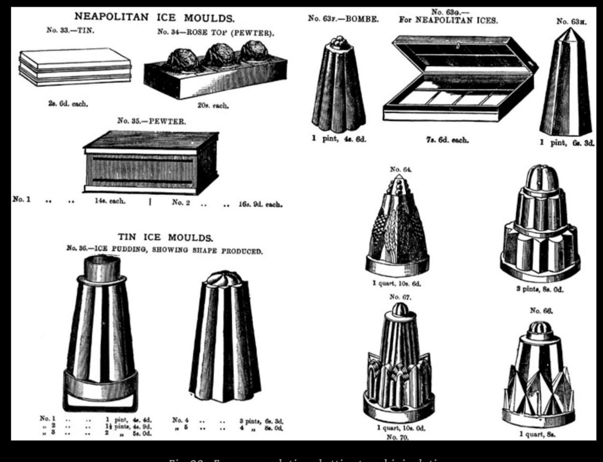

新版
ルカ・カヴィエツェル
職人仕込みジェラートの科学と技術
新版
PASTICCERA INTERNAZIONALE
企画・編集制作
エミリア・コッコロ・キリオッティ
技術・科学顧問 サルヴァトーレ・カンナヴォ
著者アシスタント シルヴィア・ヴェンティミリア
編集統括 リヴィア・キリオッティ
校正 キアラ・マンクージ
表紙写真 ジャンカルロ・ボノーニ
グラフィックデザイン アンナ・ボスコル
Copyright©2016
Chiriotti Editori srl
Viale Rimembranza 60 - Pinerolo - TO
Tel. 0121 393127
info@chiriottieditori.it
www.pasticceriaextra.it
ISBN 978-88-96027-27-1
国内外を問わず、すべての国において著作権は保護されています。本著作物のいかなる部分も、出版社からの書面による許可なく、いかなる手段や形式（光学的、コピー、電子、化学、ディスクその他、映画、ラジオ、テレビを含む）によっても複製、記憶、送信することはできません。違法な複製が行われた場合は、法律に基づき職権で処罰されます。
ルカ・カヴィエツェル
新版
CHIRIOTTI EDITORI
PINEROLO - ITALIA
2016
妻のリーニャへ… その思い出に捧ぐ
私の子供たち、パトリツィアとリッカルドへ
仕事に没頭するあまり、十分な時間と関心を割いてあげられなかったことへの
寛大なる許しを願いつつ、愛を込めて！
正確に30年の時を経て、私たちは本書を改訂することになりました。世界中で卓越したものの代名詞となっているイタリアの職人仕込みジェラート（ジェラート・アルティジャナーレ）を守り、擁護するために、日々献身的に励んでいる人々にとって、本書が役立つものとなることを願っています。今回の新版はまさにその方向性を目指したものであり、各章を深く掘り下げて学び、欠かせない道具として活用していただくことをお勧めします。
初版から長い年月が経っているにもかかわらず、その初版が今なお高い関心を集め続けていること（その間に同テーマに関する他の出版物が出ているにもかかわらず）、そして多方面からの強い要望があったことから、私たちはこの歴史あるテキストに手を加える決意をしました。
そのような励ましの声が多く寄せられる一方で、「ジェラティエーレ（ジェラート職人）」の姿は消え去り、単に「ジェラタイオ（ジェラート売り）」、さらには「ジェラトーレ（フリーザーにかけるだけの人）」（要するに、フリーザーにかけてショーケースに並べるだけの「完成品ベース」のみを使用する人のこと）に取って代わられつつあるため、専門家向けのこのような実務書の市場もまた消え去る運命にある、と考える人々からの否定的な意見もありました。
また、一部の人々（幸いにも多くはありませんが）によれば、自らの情熱と創造性の結晶を顧客に提供する喜びのために製品を愛し、こだわりを持ち、社会全体のために自らの専門性を発揮する「本物のジェラティエーレ」は、次の世代とともに急速に姿を消すだろうとも言われています。
しかし、私たちはその意見には同意しません。自らの技術を愛する楽観主義者として、職人仕事にすべてを捧げてきた生涯の結晶であるささやかな貢献をここに示し、私たちは諦めないということを改めて主張するためにここにいます。
私たちの業界や、他のさまざまな人間の営みにおいて、「ジェラティエーレ」、「ジェラタイオ」、「ジェラトーレ」が常に存在し、これからも存在し続けることは承知しています。しかし、その一方で、真に革新的で純粋、かつ活気ある職人精神を持って常に活動する人々がいる一方で、売上金ばかりを気にし、自らの専門的な成長や研究、イノベーションにエネルギーを割こうとしない、投機的な傾向に走る人々も常に存在すると強く確信しています。
繰り返しますが、これは私たちの業界に限らず、他の何千もの業界でも同様です。自分がどのような存在になりたいかを決めるのは、私たち自身なのです！
私たちは、グローバル化された凡庸さを超えて、自らの頭で考え、心から生み出し、自らの手で知恵を絞って作り上げた製品を消費者に提供することで、自らの活動により本質的で、人間味があり、尊厳に満ちた、より高い価値を与えることができる本物の職人である「マエストロ・ジェラティエーレ」が常に存在し続けると確信しています。
若くはない年齢により、今回の新版を完成させるまでの苦労はひとしおでしたが、現代の退廃的な風潮にもかかわらず、不確実な未来に立ち向かいながらも、喜びと楽しさを持って現場で闘っているすべての人々にこの本を捧げます。
そのような人々が数多くいることを私たちは確信しており、本書を彼らに捧げます。
ルカ・カヴィエツェル
本書を世に送り出すにあたり、私を支えてくれたすべての人々に感謝いたします。30年以上前に初版を執筆して以来、職人仕込みジェラートの分野は長足の進歩を遂げました。彼らの温かく、無私で、有能かつ精力的な協力なしには、本書を完成させることはできませんでした。
まず、私の感謝は食品技術者として名高い サルヴァトーレ・カンナヴォ 氏に捧げられなければなりません。彼の貢献は、いくつかの章の執筆や、他の章の改訂において極めて重要なものでした。時として私の知識が古いものであったとしても、それを決して負担に感じさせなかったことに感謝します。そして、友人であり、職業的にはジャーナリストおよびブロガーである シルヴィア・ヴェンティミリア 氏には、熱意と建設的な楽観主義が見事に融合した貴重な協力に対して感謝いたします。
出版社を代表する エミリア・コッコロ・キリオッティ 氏には、私の妥協のない性格のせいで読者の皆様に届ける仕事が台無しになりそうになる中、電話で何時間も議論を重ね、多くの複雑な問題を解きほぐしてくれたことに感謝します。彼女のおかげで、より読みやすいものになりました。
食物不耐症向けジェラートに関するセクションで、啓発的な貢献をしてくださった ロベルタ・デ・サンクティス 氏に感謝します。
本書の付録に掲載されているレシピの提供や、質問への回答、意見の表明など、私の要望に熱意を持って応えてくれたジェラティエーレの同僚の皆様に感謝します。
この点に関して、代表して親愛なる ロベルト・ロブラーノ、ジョヴァンナ・ムスメーチ、コッラード・サネッリ、そしてこの分野の若い力であり、新設されたConpait（イタリア製菓職人協会）の「ジェラート」部門の現責任者である イダ・ディ・ビアッジョ の名を挙げずにはいられません。
さらに、ルチアーナ・ポリオッティ、ジャンカルロ・ティンバッロ、エマヌエラ・バレストリーノ、パオロ・ガルナ、そして カルピジャーニ・ジェラート・ミュージアム からの貴重な貢献についても、何を言うべきでしょうか。心から感謝いたします！
私のこの著書が、文化の守護者である職人ジェラティエーレの仕事にさらなる尊厳を与える一助となることを願っています。
また、職人仕込みジェラートの起源をめぐって長年にわたり論争を続けている、ドゥチエツィオ協会の会長である サルヴァトーレ・ファリーナ 教授にも感謝いたします。いつものように私たちの立場は、私がアラブ起源説を強く支持する一方で、彼は自身の研究からローマ起源説を支持しており、真っ向から対立していますが、私たちの討論は常に互いの意見への敬意と温かい友情に基づいています。
長年にわたる仕事が詰まった私のPCにトラブルが発生した際、遠隔地から精力的に協力してくれた義理の息子である マルコ・ミニオット 技師に心から感謝します。また、温かい寄り添いを見せてくれた姪の ルクレツィア と モルガーナ にも感謝を禁じ得ません。そして、すでに述べた理由から本書を捧げた、私の子供たちである リッカルド と パトリーツィア にも、当然のことながら感謝しています。
彼の権威ある著作に含まれるいくつかのヒントを自由に使用することを、熱意と寛大さをもって許可してくれた フランコ・ブレイ 氏に感謝します。
不本意ながらどなたかを失念してしまうことを恐れ、私を忍耐強く、関心を持って支えてくれたすべての人々に、より広く全体的な感謝を捧げます。他者の支えと同意がなければ、私たちは何者でもないからです。
最後に、長年にわたり二人三脚で協力し合った カルロ・ポッツィ や、兄弟のように親しかった ティノ・ヴェヌーティ など、すでにこの世を去った友人たちに思いを馳せます。
そして最後に、私自身（一人の謙虚な職人にすぎない）ではなく、私の生涯を動かし続け、本書がその一種の要約である「情熱」そのものに対する特別な感謝を述べることをお許しください。
私たちすべてに：常にさらなる高みへ！
ルカ・カヴィエツェル
「未来を理解し、 計画したいのであれば、 過去を知らなければならない」
作者不詳
ケオスのシモニデス（紀元前556〜468年）は歓喜して歌う。「雪を生き埋めにせよ、生きたまま保存され、夏を気高くするため、そして地中に埋められることで、より優美で美しくなるために！」
テオクリトス（紀元前315〜260年）は、心優しいポリュペーモスにこう語らせている。「それは凍った水であり、非の打ちどころのない雪に覆われたエトナ火山が、神聖な飲み物として私に提供してくれるものだ」。
大プリニウス（紀元23〜79年）は、「氷、牛乳、蜂蜜に果汁を加えた調製品で、これらを混ぜ合わせることで、かなり安定したクリームになる」と述べている。
セネカをはじめとする多くのラテン語作家は、「我々のいにしえの祖先は、ワインを冷やすために氷や雪を混ぜていた。厳かな飲酒の席で涼をとるため、あるいは暑すぎるために、しばしば氷を噛み、雪を飲み込んでいた」と記録している。
いくつかの国や都市が、ジェラートの発明の先陣を争っている。しかし、最初に投げかけるべき問いは、それが本当に「発明」と呼べるものなのかどうかである。雪と氷は、古くから温暖な地域の住民が飲み物や食べ物を冷やし、凍らせるのを助けてきた。夏のために雪を保存することは、食品をできるだけ長く保存する必要性に迫られた人間が、熱心に取り組んだ活動の一つであった。
発見の優先権や、その起源および「創造」の時期を争う多くの国や都市の間をすぐに取り持つために、私たちはオデュッセウスの言葉を言い換えて答えよう。オデュッセウスが、自分の名を知りたがった巨人のポリュペーモスに向かって「誰もいない！」、私の名は「誰もいない！」と叫んだように。私たちも彼を真似てこう答える。今日私たちが「ジェラート」と呼んでいるものを創り出したのは、実に多くの、本当に多くの「誰もいない」人々であった、と。多くの、本当に多くの人々が……繰り返すが！
私たちは、何世紀にもわたって「ソルベット（シャーベット）」と呼ばれ、今日「ジェラート」と呼んでいるものの誕生を、果汁や蜂蜜で甘みをつけた果物に、新鮮な雪をふんだんに散りばめた調製品として仮定したい。それらはすべて、古代のテラコッタ製、あるいは木製の器に盛り付けられていた。
中国人がインド人に食品を凍らせる技術を教えたと言われている。その後、インド人はペルシャ人に同じことを行い、そこからアラブ人がその技術を取り入れた。古代ギリシャ人は、中東に隣接していたことや、ペルシャ帝国の征服に伴い、その使用法を学んだ。そしてローマ人もまた、ギリシャを占領した際にその影響を受けた。
ギリシャやラテンの多くの作家が、雪の利用を記録し、称賛している。
紀元前4世紀の著名な医師であるヒポクラテスは、この流れに反して、“高温で熱せられた身体の健康にとって、冷たい飲み物を摂取することは良くない” と主張し、人々が彼の教えに従おうとせず、“冷たい飲み物の快楽を諦める” くらいなら命を危険にさらすことを嘆いていた。
アレクサンドルス大王（紀元前356〜323年）は、その軍事遠征の過程で、至る所に地中の巨大な穴を掘らせ、冬の間に圧縮した雪を保存させた。これは、夏の酷暑の間に軍隊に提供し、活力を与え、体力を回復させるためであった。彼自身も、凍らせた果汁が大好物であったことが分かっている。
ポンペイとエルコラーノの発掘調査により、当時の社交場であった thermopolia（サーモポリウム、温食販売店）が発見された。そこでは、寒い季節には温かい飲み物が提供され、夏には凍らせた調製品や果汁、蜂蜜（ミード）で人々が涼をとっていた。
地中海地域における目覚ましい「飛躍」は、後述するように、9世紀末にアラブ人がシチリアとアンダルシアを占領したときに起こった。実際、彼らはイタリア南部で「ネヴァローリ（雪売り）」と「ネヴィエレ（氷室）」を発見した。これらは何世紀にもわたり、単なる生理的な欲求（冷たさの快楽）だけでなく、商業的および技術的な課題（すなわち、冷たさの保存と、それに伴う傷みやすい原材料の保存）に対する唯一の解決策であった。
しかし、冷たい飲み物から、後に「ソルベット・グラニート（かき氷状のシャーベット）」へと発展するプロセスを開始するには、サトウキビから作られる砂糖が不足していた。当時の唯一の甘味料であった蜂蜜では、今日のグラニータ（みぞれ状の氷菓）の原型である「凍った水」に近いものさえ作ることができなかったことは、同業である私たちこそが一番よく知っている。ローマ人は古くから蜂蜜で甘みをつけた飲み物であるミード（蜂蜜酒）を知っていたが、これを冷やしたとしても、単なる飲み物の域を出ることはなかった。非常に低い温度であっても、氷の結晶を形成させることはできず、むしろ硬く無定形な混合物になってしまったはずである。
この魅力的なジェラートの歴史の始まりを、今から4000年も前の、中国の大文明が全盛期を迎えていた遥かなる東洋に位置付けることは、決して荒唐無稽なことではないと私たちは考えている。
したがって、このように凍らせた飲み物を消費する習慣が、中国人から隣国であるインド人へ、そして彼らからペルシャ人やアラブ人へと容易に伝わり、最終的に私たちの地中海の沿岸へと到達したことは容易に想像がつく。
重要な著作『食物の歴史』の著者であるレイ・タナヒルは、“中国人はすでに紀元前7世紀に、冬の氷を夏に使えるように保存する方法を発見しており、蒸発冷却によって冷たさを維持する氷室を建設していた” と記している。また、インドのムガル帝国の皇帝たちは、冷却用の素材としての需要を満たすため、アジアのヒンドゥークシュ山脈まで騎馬の伝令を派遣し、デリーまで氷や雪を回収・輸送させていたとも伝えている。

中国では、紀元600年から900年にかけて、ロバ、ヤギ、牛、インド水牛のミルクを使って多くの乳製品が作られていた。凍らせたミルクをベースにした製品の一つは、夏の時期に、非常に爽やかな冷たい料理として提供されていた。クミス（馬乳酒に類似した乳酸菌飲料）と呼ばれるこの特産品は、発酵させたミルクに様々なスパイスで香りづけをし、提供する直前に「凍らせて」作られていた。
この凍らせたミルクの特産品に関する文書化された証拠の一つは、宋代（1100年代から1200年代の端境期）の若い詩人、楊万里の記述から得られている。彼はそれを次のように描写している。“油のようでありながら、サクサクとした食感がある。凍っているように見えて、なおかつ浮いている。玉（ぎょく）のように、皿の底で砕ける。雪のように、陽光を浴びて溶けてゆく”。
エジプトでは、紀元前2500年の第2王朝にさかのぼる墓から、副葬品の一部であった様々な食物や器具の痕跡とともに、2つの部分に分かれた銀製の杯がいくつか発見されている。一方の容器には果汁やワインが入れられ、もう一方の容器には飲み物を冷たく保つための雪や氷が入れられていたと推測されている。
3世紀末頃のアテナイオスは、“クレオパトラは、マルクス・アントニウスとの宴会において、自身の豪華さを誇示するために、純粋な雪に巨万の富を投じた” と記録している。
私たちの中世西洋が困窮と混乱の時代を過ごし、「創造的」な活動が停滞していた一方で、東洋では「創造」が続けられており、他の無数の活動と並んで、今回取り上げる凍結プロセスのような科学的なプロセスにも取り組んでいた。
もっとも、このプロセスはすでに4世紀のインドの詩に記述されている。『パンチャタントラ』の詩の中では、実際に “塩を含む水だけが、本当に凍ることができる” と述べられている。
この意見にはジョゼフ・ニーダムも同意しており、その著書『中国の科学と文明』において、“塩の冷却効果は東洋の発見である” と断言している。そして、それは711年から1492年にかけてのアラブ人とムーア人による地中海支配の間に、彼らを通じて旧大陸に伝わった。
しかし、ジュゼッペ・アヴェラーニ（1662-1738）もまた、西洋におけるこの分野の特定の文化の「遅れ」と欠如を感じ取っていた。その著書『古代人の食糧と晩餐について』の中で、彼は明確に表現している。“エジプトやその他の場所で用いられていた、氷や雪の力を借りずに水を冷やすもう一つの方法については、ガレノスやアテナイオスが伝えている。しかし彼らが、水を凝固させてソルベット（シャーベット）にする方法を知っていたとは私には思えない。なぜなら、あらゆる種類の塩が氷の力を驚くほど強め、それを活性化させ、ほとんどすべての液体を容易に凍らせることができるということを、彼らは知らなかったからである。ギリシャ人やローマ人がしばしば用いた potare nivem、potare glaciem（雪を飲む、氷を飲む）、chiona pinein という言葉も、ソルベット、すなわち人工的に凍らせた水を指しているわけではない”。
東洋の君主たちの食卓において、ワイン、ビール、ミルクを発酵させ、雪や氷と混ぜ合わせて消費していたことは歴史的に文書化されている。これらのデータは、まさに雪の食用利用に関する最初の証拠を提供している。
考古学的な発掘調査により、紀元前18世紀、ユーフラテス川中流のまばゆい大都市であったマリの王宮には、雪や氷を保存するために使用された氷室が3つも存在していたことが証明されている。この3つの「氷室」は、溶けた氷を排水するための管を備えた、レンガ造りの地下建造物であった。入手が困難であったため、凍った雪は極めて貴重なものとみなされ、氷室への立ち入りは宮廷の高官のみに許されていた。

古代エジプト人が墓の壁面を飾るために用いたフレスコ画はよく知られている。そこには、死後の世界で魔法のように実現し、死後も食卓の悦楽を長引かせるための宴が、細部にわたるまで細心の注意を払って描かれている。様々な洗練された習慣の中に、飲み物を冷やす習慣があったが、それは異なるシステムによって行われていた。雪や氷が使われたのは、ごく例外的な場合に限られていた。
一般的に使われていた技術は、今日でも冷気を得るための基礎となっている「科学的」な原理に基づいていた。エジプト人は、冷やすべき飲み物を入れ、湿った布で覆ったアンフォラや革袋を、絶えず「送風」にさらすことで（奴隷たちが大きなうちわを使ってこれを行った）、外部の水分を蒸発させ、状態変化を引き起こし、自動的に冷却を行っていた。
なお、蒸発によって冷気が得られるのは、湿った空気の層を取り除くことによる。この層を取り除かなければ、液体の蒸発面に蓄積しやすくなり、内部の液体の冷却を妨げてしまうからである。
さらに、これは砂漠のベドウィンが最も多く応用していた方法でもあり、彼らは濡れた布で覆った容器を太陽にさらすことで水を冷やしていた。太陽の熱が、布に含まれる水分の蒸発を引き起こすことで状態変化を実現し、熱を奪い、その結果として中身を冷却していたのである。
「アビシニアの帰還兵」（イタリアがエチオピアに植民地を有していた時代を指す）の語るところによれば、水を入れた「ギルビ」（皮製の袋）をトラックのバックミラーに縛り付けておくだけで、単純な送風効果によって水が冷えたという。
美食を愛したローマ人は、「ニヴァタエ・ポティオネス（nivatae potiones、雪で冷やした飲み物）」を作っていた。確かなことは、その時代、都市や交通路沿いに点在していた数多くの「テルモポリウム（thermopolia、簡易食堂）」で飲み物の利用が広がる一方で、貴族の間では、シャーベットの先駆者とも言えるレシピに雪が使われ始めていたことである。果物の混合物や果汁、牛乳を、雪の中に容器ごと置くことで凍らせていた。
アレクサンドロス大王の時代には雪や氷を飲み物の中に溶かしていたのに対し、ローマ人の時代になると技術は洗練され、氷や雪と混ぜ合わせた飲み物から不純物を濾過するための濾し器（コラム・ニヴァリウム colum nivarium）が誕生した。しかし何よりも、容器の外部を雪や氷に単純に接触させることによる「凍結」技術が誕生したのである。
ローマ帝国の崩壊とともに、西方世界は「冷たい製品」の伝統を失った。蛮族の侵入によってもたらされた混乱と無秩序の中で、無数の習慣が失われ、その中にはローマの人々が慣れ親しんでいだ無数の快適な生活様式も含まれていた。温泉、円形闘技場、劇場はキリスト教聖堂の厳かな沈黙に場所を譲り、初期キリスト教は、生活をより快適にするような特定の洗練から人々を遠ざけた。
したがって、美食の大部分が、そしてそれとともにシャーベットが忘れ去られたのは当然のことであった。
一方、東洋では冷たい飲み物の消費がますます広がり、冷たい要素が食事において重要な位置を占めるようになっていった。特にアラブ人はシャーベットの調製において技術を磨き、イタリア南部やスペインの支配期を通じて、再びその普及を促し、それが後に西方世界全体へと広がることになった。アラブ人のおかげで、シチリアとアンダルシアにおいて砂糖の「発見」があり、ペルシャの葦とも呼ばれるサトウキビの栽培が始まった。これは、飲み物としてのシャーベットに対比される、アイス・シャーベットを調製するための基本要素となった。
歴史家イブン・ハカル（Ibn-Ankal）は当時、次のように記している。「パレルモ近郊の海岸沿いには、ペルシャの葦が力強く育ち、地面を完全に覆っている。それから圧搾によって汁が抽出される」。このように、サトウキビの到来によって、シチリアでは新しい何かが確立された。飲み物から、より固体の調製品が生まれたのである。この土地には、後に「ソルベ・グラニート（シャーベット・グラニータ）」と呼ばれるものを実現するために不可欠な要素が「手近に」揃っていた。実際、マイナス温度に達するために不可欠な雪（エトナ山、イブレイ山脈、マドニエ山脈に豊富にある）や海塩（沿岸部に豊富にある）が容易に手に入り、現地で栽培されたサトウキビの砂糖、そしてベルデッリ・レモンがあり、これらによって崇高で爽やかな製品が作られた。現代のレモンのグラニータは、今日のアイスクリームの世界を代表する、より進化した製品への第一歩であった。
戦略的に連動していなかったとはいえ、様々な襲撃によって占領されたこの島（最初の襲撃は652年、その後、シチリア中世の始まりとされる827年の決定的な侵入）において、アラブ人はレモン、ビターオレンジ（スペイン時代に輸入されたスイートオレンジではなく、そのため今日でもシチリアではスイートオレンジをパットゥアッリ Pattualli、すなわちポルトガルのオレンジと呼ぶ）、米、綿花、クワの栽培も導入した。
こうして多くの習慣が花開き、新しい何かが実現された。多くのスパイスで料理に風味をつけるという、典型的なアラブの美食文化は、シャーベットにも好影響を与えた。砂糖や蜂蜜で甘みをつけ、シナモン、サフラン、バラやジャスミンの香りをつけた雪である。

手前味噌ではなく、液体シャーベットから固体シャーベット／グラニータへの歴史的な「状態変化」は、まさにシチリアで起こったのではないかと推測したくなる。シチリアは、その実現に必要なすべての要素を、自然が同時に、そして何よりも入手しやすい形で寛大に提供してくれる場所だからである。豊富に存在する海塩と高い山の雪に、同時に、砂糖という新しい製品を簡単に利用できる環境が結びついた。それまで唯一の甘味料であった蜂蜜は、その氷点降下特性のために、固形感のある製品を得ることを不可能にしていたからである。
ジュネーヴ大学の教授であるルシー・ボランス（Lucie Bolens）がアンダルシアで行った歴史的研究は、極めて豊富な文献資料とともに、「シャーベット（sorbetto）」という名詞の語源と、その化合物の性質を決定的に明らかにした。1984年にパリで出版された著書『中世の飲食（Manger et boire au Moyen Age）』の中で、ボランスは、分析したすべての文書において、この用語が「シロップ」を意味する語根 sh-r-b（アラビア語の写本には母音が表記されない）で構成されていることを指摘している。今日、スペイン語にはワインを指す言葉として shrab という語が残っている。
アンダルシアのレシピから明らかなように、後にシャーベット（sorbetto）へと変化する sh-r-b という用語は、それゆえ「調合された」飲み物を指していた。もはや（ローマ人のような）水 ＋ 甘味料の蜂蜜、あるいは氷 ＋ 果汁 ＋ 蜂蜜の足し算ではなく、水と蜂蜜、あるいは水と砂糖を混ぜ合わせ、そして何よりも沸騰させたものである。ネロの時代のローマ人は、消費する前に水を沸騰させることを学んでおり、それ以前にも貯蔵庫に蓄積された不純物から雪を浄化するためのコラム・ニヴァリウムを発明し、通常は「グラニータ」を甘くするために蜂蜜を使用していた。しかし、砂糖（または蜂蜜）と水という2つの原料を同時に沸騰させ、シロップを得るというクオリティの飛躍をもたらしたのは、ひとえにアラブ人のおかげである。この新しい混合物の中に、所望の香り（大部分は薬草、スパイス、花びら、塊茎などの混合物）を浸漬させ、こうしてできた shrb は温かいまま消費されるか、あるいは氷や雪に浸したテラコッタの壺に入れて「凍結」された。
この瞬間から、近代的なシャーベットの基礎が誕生したのである。
ボランスは、『11世紀および13世紀のアンダルシアのシャーベット、あるいは郷愁と甘美さの結合』と題した研究を導入するにあたり、_「スパイスの香りが漂い、自然に、あるいは加熱した蜂蜜の添加によって発酵した、琥珀色で半透明または不透明なワイン」_を称賛している。彼女はアンダルシアの黄金時代における文化的な出会いを想起し、完全に泥酔しないことを条件に消費が許されていた果物ベースの「発酵飲料」を引用している。さらに、ベルベルのミード（蜂蜜酒）とともに、当時すでに有名であったマラガのワインに言及したアル＝シャクンディー（al-Shaqundi）を引用している。
その後、ボランスはセビリアのアブー・アル＝ハイル（Abu al-Khayr）の写本から、まさに『シャーベットの書』を構成する一連のレシピを収集した。この写本は2部に分かれており、そのうちの1部が「シャーベット」に充てられている。そこには、その組成、加熱処理、およびその後の凍結方法を定義する一連の情報が現れている。
もう一人の学者であるトレドのイブン・ワーフィド（Ibn Wafid）は（1982年にマドリードで出版された『枕の書 Libro de la almohada』にあるように）、robs と jawarish という2つの形態のシャーベットについて語っている。これらは非常に濃厚なシロップであり、加熱後に冷却されることで、砂糖が植物の汁を糖漬けにし、保存できるようにしたものである。以下にその一例を示す。
「赤サンダルウッド半オンスと、砂糖4分の1を取る。これらを1ポンドと4分の1の砂糖、および同量のローズウォーターとともに薄くスライスする。jawarish シャーベットの硬さになるまで煮詰め、火から下ろす」。
いくつかのレシピでは、砂糖が蜂蜜に置き換えられている。
「ケッパーの根の皮、セロリ、ウイキョウ、野生のニンジン（それぞれ2オンスずつ）、ラベンダー、コリアンダー、バジル、チコリ、ペニーロイヤルミント、タマリスク（これらはそれぞれ2掴みずつ）を用意する。これらに、浸出用の布袋に入れたシナモン、クローブ、ショウガ（それぞれ1オンスずつ）、サフラン半ミトカル、およびアクを除いた蜂蜜3ポンドを加える。穀物とハーブを、水に浸した状態で、その成分が抽出されるまで煮る。その後、蜂蜜を加え、布袋を鍋に戻す。これを再び火にかけ、完璧なシロップができるまで煮詰める」。
11世紀に生きたトレドの科学者であり農学者でもある彼は、_「ソルベは体液を冷やし、ほてりを静めるために作られるものであり、香水、水、オイル、軟膏と調和して働き、体内に香りをもたらすものである」_と明記している。
したがって、元々ソルベという名前が与えられたこのシロップ状の混合物の性質について、疑いの余地はない。それが冷たく提供されたからではなく、その構造ゆえにそう呼ばれたのである。この調合品は、「箱の中」に固体の混合物として保存し、必要な時に雪で凍らせることもできた。これは、1748年にミケーレ・マルチェーカによって書かれたレシピ本（30ページで言及）からも明らかである。この製品の歴史における様々な変遷や多くの断片を理解するためには、17世紀以降に文書化された、ソルベを必ず冷たい、あるいは凍った混合物とみなす現代的な視点を一度捨て去り、引用された文献に示されているような古い指示やレシピに目を向け、立ち止まる必要がある。
「ソルベ（sorbetto）」という言葉はラテン語やアラビア語に由来するのだろうか、あるいはさらに時代を遡ると、ペルシャ語やインド・ヨーロッパ語の語根を見出すことができるのだろうか。
私たちは、研究者のルーシー・ボレンズ（Lucie Bolens）が、この語はアラビア語の語根 sh-r-b に由来すると主張しているのを見てきたが、これが最も信頼できる説であるように思われる。
情報の完全性を期すために、私たちの確信とはかけ離れており、それぞれが自らの信念に固執して終わりのない議論の対象となっているものの、カルタニッセッタの「ルッジェーロ・セッティモ」古典高校の哲学教師であり、シチリアの菓子およびジェラートの歴史研究者であるサルヴァトーレ・ファリーナ（Salvatore Farina）の意見も記録しておく。彼によれば、この言葉はラテン語の sorbere（ゆっくりと、一口ずつ味わいながら飲む）から生じたものであり、マルクス・テレンティウス・ワロによれば、これはオノマトペ（擬音語）である。すなわち、_「飲む際のすする音から形成された言葉」である。その裏付けは、シチリア語の surbiri（ちびちび飲む）、surbuni（一口）、そしてまさに surbetta-surbetti に見られ、パスクアリーノはその辞書の中でこれを 「凍らせた甘い飲み物の一種、ソルベ。Frigida sorbillum gelu concretum。surbiri（すする）から。なぜなら、人々がそれをすするからである」_と定義している。
「ソルベの起源に関するこの短い歴史言語学的な注記は、シチリアの菓子のほとんどすべてがアラビア由来であるという俗説を打ち破るのに非常に役立つ」とファリーナは主張する。「さて、私の著書『Dolcezze di Sicilia（シチリアの甘味）』の歴史的概説やカッサータに関するイースターの章で既に書いたことに基づけば、ソルベまでもアラビアのガストロノミーに由来すると考える素朴さは、実にもったいぶったものである！15世紀にわたる輝かしい文明を背景に持ち、いわゆる味覚の喜びを享受することに長けた人々が、アラビア人の到来以前に、フルーツシロップと雪や氷の冷たい混合物を試していなかったとどうして考えられようか？むしろ、豊富な果物があり、雪に関連する確立された経済と文化を持っていたシチリア人が、砂漠から来た人々に、最初は蜂蜜で、後に砂糖（これこそがアラビア人の贈り物である）で甘みをつけた、甘くて冷たい飲み物を初めて味見させた、と考える方が合理的ではないだろうか。そして、後者が surbetta という名前を『訛らせて』sherbet と呼ぶようになったのではないか？」。
これまでは、専門家の間でこの2つの対立する説が重視されてきた。ここで、フランチェスコ・アスページ（Francesco Aspesi）の興味深い研究『Sciroppare e sorbire sorbetti（シロップ漬けにすることとソルベをすすること）』から抽出された、語源に関する考察を紹介する。
ラテン語の sorbēre に遡る動詞「すする（sorbire）」の語根に関して、この研究者は、外見、音韻、意味において対応する形態が存在し、アラビア語に先んじて存在していたアラム語派などの言語への言及を伴う、インド・ヨーロッパ語の語根としての機能を浮き彫りにすることができると指摘している。バビロニア中期および後期には、すするという意味を持つ動詞 sarapu の存在が確認されている。インド・ヨーロッパ諸語の動詞形態（語根機能 sreb-/srb-/serbh に帰属する）と、セム諸語の形態（srb/srp の表現の下にグループ化される）との間における音韻的特徴と意味内容の一致は、注目に値する。実際、私たちは東地中海周辺におけるインド・ヨーロッパ語族の人口とハム・セム語族の人口との間の、大規模かつ多様な接触の言語学的痕跡の1つを目にしているのかもしれない。
アスページは「先史時代から地中海に引き寄せられてきた、変化に富む文化的共通性」を強調し、その後、イタリア語の sciroppo（シロップ）が中世ラテン語の siropus/sirupus に由来し、それがアラビア語の sarab（飲み物、ワイン。sarab は本質的に sariga の不定詞）に基づいて形成されたことを想起させる。この言葉は、ロマンス諸語以外のヨーロッパのインド・ヨーロッパ諸語（ドイツ語の Sirup、英語の syrup…）にも伝わり、イタリア語の sciroppare のような派生動詞も生み出した。もう1つの sariga の不定詞である surbat（一口、薬用の飲み物）がイタリア語や他のヨーロッパ内外の言語に取り入れられるまでのプロセスは、さらに長いものであった。実際、この場合にはトルコ語の serbet が媒介となっており、ピエトロ・デッラ・ヴァッレ（1615年）において、トルコ語の serbet が規則的に scerbetto に変化し、その後、確かに sorbire の影響を受けてジェラートの一種である sorbetto へと変形した経緯は非常に興味深い。この言葉は、トルコ語から直接、あるいはイタリア語を経由して他のヨーロッパ言語に普及した。イタリア語においては、これも派生動詞 sorbettare を生み出し、その再帰代名詞形式は「すする（sorbire）」の再帰形式（sorbettarsi、sorbirsi qualcuno o qualcosa：誰かや何かを甘んじて受け入れる、我慢する）と意味的に重なり合うようになった。
「ソルベ」という言葉の起源をめぐる、この議論百出の論争（筆者にとっては、繰り返しになるがアラビア起源である）に関する短い括りの最後に、有名なガストロノミーの規範書『美味礼賛』の著者である、かの著名なジャン・アンテルム・ブリア＝サヴァランが述べた、権威ある言葉を添えておきたい。
「おお、ルクッルスよ、クラッススよ、レントゥルスよ、アピキウスよ、ペトロニウスよ。汝らの有名なトリクリニウム（食堂）が、その冷たい息吹で熱帯地方を慰めのように通り抜ける、あの極上のソルベによって活気づけられたことは一度もなかった……。汝らが気の毒でならない！」。
地中海地域においても、氷は「氷室（nevaie または neviere）」から得られていた。これは地面に掘られた深さ15メートルに達する深い穴で、冬の間に雪を詰め込んで固め、硬い氷を作った後、木の枝、葉、藁、そして土などを交互の層にして覆ったものである。元々は、エトナ山やヴェスヴィオ山、あるいは我が国の他の火山地帯の火山性地質の割れ目から得られた自然の洞窟や洞穴であった。
食べ物や飲み物を冷やしたいという欲求は常に非常に強く、ローマの上流社会は自宅にさえ氷の貯蔵庫を設けていた。その顕著な例が、ローマのティヴォリにあるヴィラ・アドリアーナの凝灰岩の地下に作られた、非常に美しい氷室である。雪は貴重な商品であったため、大雪は天の恵みと考えられており、それゆえに雪の保存には細心の注意が払われていた。「最終世代」（つまり19世紀）の氷室は、特に融解水の排水に関わる建設的な詳細において、よく設計されていた。

東シチリアでは、取り出す際にすでに形成されたブロックを容易に得られるよう、雪を a sulara（床板のように）、すなわち30〜40 cmの厚さの層にして押し固める習慣があった。あとはその「床」を壊し、ブロックを葉や藁、あるいはキャンバス地で梱包するだけであった。同様の方法は、アンダルシアやスペイン南部全域でも用いられていた。
エトナ山のいくつかの溶岩流洞窟、例えば「泥棒の洞窟」では、19世紀に大量の雪が蓄えられ、夏季には夜間にラバの背に載せて麓まで運ばれ、現地で販売されるか、リポストのエトナ港から騎士団の島であるマルタに向けて船積みされていた。
シチリアの多くの地域には、特に洗練された石造技術を持つ氷室の美しい遺構が今なお残っている。「イタリア・ノストラ（Italia Nostra）」のシラクーサ支部によって見事に保全されているのが、ブッケリのピアーナ地区にある氷室や、シラクーサ県パロッツォーロ・アクレイデの氷室であり、これらは洗練された内部建築を証明している。これに関連して、ブッケリ市が約20箇所の氷室を巡る観光ツアーを主催していることは特筆に値する。また、プーリア州やバジリカータ州でも、かつては非常に盛んな産業であった氷室、氷蔵、洞窟という遺産に対し、公的機関および民間の双方から賞賛に値する関心が寄せられている。
主に石で作られたこれらの建造物は、環境の低湿度、温度変化からの隔離、結露の発生という不都合を考慮して建てられていた。
機転の利く商人たちは、病院から傷みやすい食品の貯蔵庫、魚屋から肉屋、ジェラート店にいたるまで、需要があるところならどこへでも氷を売りさばいた。そして先述のように、マルタ、チュニジア、リビアといった海外の国々へも大量の氷が送られた。
雪の収集と保存は、多かれ少なかれ、どこでも同じ技術で行われていた。今日、私たちは雪の消費がいかに富と洗練の象徴であったかを知っている。私設の氷室（ねびえら）を所有することは、高い社会的地位を示す、一種のステータスシンボルであった。今でも時折、思いもよらない場所から新たな氷室が発見され続けている。
ミラノのサンタムブロージョ修道院（現在のカトリック大学の敷地）における最近の発掘調査では、直径約 8 m の巨大な貯蔵庫の遺構と、それを囲むほぼ無傷の 穹窿（きゅうりゅう）式回廊（ambulacro voltato） の跡が発見された。これは地下の貯蔵庫として機能し、同時に、より高い断熱性を保証していた。
同じくミラノの州立大学の、先の大戦による破壊を経た中庭での別の発掘調査により、古代の「カ・グランダ（Ca’ Granda）」の氷室が極めて良好な状態で発掘され、その後の保存と活用が行われている。
アドリア海沿岸、特にチェゼナーティコでは、1600年代にはすでに魚を保存するための多数の氷室が存在していた。アペニン山脈の内陸部、レーノ川沿いでは、18世紀から19世紀初頭にかけて70以上の氷室があったことが知られている。雪や氷の最大の消費者は、修道院のコミュニティ（特に乳製品の保存のため）や病院であった。
北欧の国々でも氷の取引が広く行われていたことは奇妙に思えるかもしれないが、この活動がイタリア人によってしばしば行われていたことも同様に奇妙に感じられるだろう。例えばノルウェーでは、イタリア人の商人（リグーリアのガット家）が湖の凍った水面を買い取り、そこから手挽きの鋸で切り出された氷のブロックが、帆船によって北海を渡りイギリスへと運ばれた。この氷は地下の洞窟に保管され、おがくずや藁、厚手の布で覆われ、病院や魚屋、肉屋、あるいは傷みやすい食品の保存を伴うあらゆる活動に充てられた。


スイスの小さな町ダボスがパリとの間で氷の供給に関する継続的な商業関係を持っていたことや、オーストリア産の氷を満載した船がエジプトに向けてトリエステ港から絶えず出航していたことも記憶に留めておきたい。
シチリアの氷売り（ネバローリ）の氷や、ノルウェーの湖の凍った水面から切り出された氷が、輸送や保管の間に溶けてしまわないことが、なぜ可能だったのだろうか。氷は溶ける際に自ら熱を奪い、その「状態変化」によってさらに冷気を作り出すという性質を考慮する必要がある。さらに、そこに塩（塩化ナトリウム）や、さらには塩化カルシウムや硝石（硝酸カリウム）を振りかけると、非常に低い温度が得られ、氷を長期間保存することが可能になるのである。
これが氷を保存するための、そして同時に冷気を作り出してソルベを作るためのシステムであった。
中世の間に多くの修道会が誕生し、いたるところに修道院が建てられた。それらの行政・会計記録からは、食料や医薬品の調達から、美術史、宗教史、そして「習俗」にいたるまで、極めて興味深い様々な情報を得ることができる。これらの文書は、修道院においていかに雪が盛んに消費されていたかを記述している。それは単に傷みやすい食品の保存のためだけでなく、訪問してきた異郷の友人たちに振る舞い、良い印象を与えるためのソルベを作るためにも、惜しみなく使われていた。その友人とは、影響力があり、後々、特権や便宜という形で報いてくれる気のある人物であったり、修道院にふさわしい歓迎を欠かすわけにはいかない、見習い修道士たちの貴族の親たちであった。
ソルベはゲストから常に最大の好意と歓喜をもって迎えられたようである。とりわけ、それを準備するために必要な食材が、特定の社会的地位にある人々だけの高級な食べ物としての性格を与えていたことは容易に理解できる。例えば、グッビオのサン・ピエトロ修道院の会計帳簿には、特別な支出の理由として次のように書かれている。「修道院に滞在中、貴族のお抱えカフェ職人からペーザロのザヌッコリ殿およびファットーリ殿に提供されたジェラート代として」。
確かなことは、修道院の厨房が調理の場であるだけでなく、当時の食習慣の貴重な証言となる優れたレシピ集や食材リストが作成され、保管される場所となったことである。
修道院の修道士や修道女たちが、冷たい飲み物や粒状のソルベで自分たちの食卓を豊かにしていたのであれば、新たな王廷や、権力者、大貴族の宮廷でどのような発展があったかは容易に想像がつく。

カロリング朝の宴会は有名になり、イスラム世界と緊密な文通を行っていたカール大帝は、食事をいくつかのコースに分けて構成することなど、食卓にも大きな革新をもたらし、会食者の間のマナーに関する規則を広めた。彼は食卓を丸ごとの花や散らした花びらで飾らせ、ゲストに手を洗うことを義務づけ、貴婦人たちが男性と同席して食卓につくことを認めた。
聖地を異教徒から解放するという思想に支えられた十字軍の動きは、他の副産物をもたらした。ヴェネツィアやイタリアの港湾都市は具体的な利益を得て、地中海における海洋都市の覇権は新たな交易の道を開き、ピサやジェノヴァといった都市の繁栄をもたらした。
銀行や商業会社からなる近代的な商人組織が誕生し、ブルジョワジーが台頭し始めた。自立した都市国家を生み出す、ダイナミックで繁栄した新しい西方文明が台頭した。その一部は、フィレンツェやシエナのように16世紀半ばまで、また時にはルッカやヴェネツィアのように17世紀末まで重要な役割を果たすことになる。
このような背景の中で、ジェラートは新たな権力者たちの食卓に、復興した美食の成果として再び姿を現した。
ヨーロッパが中世に背を向け、近代へと入ったとき、新しさの感覚は極めて強烈であり、変化の成果も大きかったため、この時代はルネサンス、すなわちヨーロッパの「再生」と呼ばれた。
ルネサンスは14世紀半ばにイタリアで始まり、フィレンツェがその中心地となった。人々は、自分たちにとって新しく、より興味深い生き方を発見した。あらゆる分野において中世的な概念の克服をもたらす、新しい理想が誕生した。
ソルベの歴史を書き記してきたのは、多くの場合、静かな端役たちであり、そのコーラスの中から時折、主役たちが浮かび上がってきた。私たちのケースでは、修道院の単純な料理人から「貴族の料理人」にいたるまで、何世紀にもわたってレシピ本を執筆してきた多くの料理人、食器室係（クレデンツィエーリ）、リキュール職人たちであった。
ここで、当時美食文化の中心地であったメディチ家統治下のフィレンツェに目を向けてみよう。メディチ家の支配はヨーロッパの流行を左右し、フィレンツェはあらゆる面（芸術、文化、習俗）において、宮廷のゲストとしてしばしば招かれるあらゆるジャンルの著名人が集まるヨーロッパの首都であった。
カテリーナ・デ・メディチと、彼女に同行したトスカーナの料理人や菓子職人たち、そしてその中の一人で、鶏肉の販売人から冷たいデザートの発明家となったルッジェーリという人物については、事実と伝説が入り混じりながら多くのことが書かれてきた。「先祖から洗練された味覚を受け継いでいた」カテリーナは、わずか13歳でオルレアン伯アンリ2世（後のアンリ2世）との婚約が調い、1533年に大勢の随行員とともにマルセイユに向けて出航した。婚礼の祝宴の席で、「砂糖を加え、香りをつけた水で作った氷」のレシピによる冷たい菓子がフランスに初めて登場し、それはトスカーナやシチリアの菓子職人によって作られたと言われている。カテリーナと占星術師や錬金術師たちとの関係は「伝記作家たちを大いに喜ばせてきた」。オジェロ、フェラーリ、シメオーニ、ガウリコ、そして歴史的研究が進められているコジモ・ルッジェーリなどの名が挙げられる。もう一人の興味深い人物は、王妃個人の香料・調香師であったレナート・ビアンコ（ルネ・ル・フロランタン）である。カテリーナはノストラダムスとして知られるミシェル・ド・ノストラダムと密接な関係にあった。彼は有名な『百詩篇』や錬金術の著作のほかに、1556年に『化粧品とジャム論（Traité des fardements et confitures）』を著した。これはクリームや香水による女性の美の維持や、砂糖、蜂蜜、煮詰めたワインのシロップを用いたジャムやゼリーによる果物の保存についての論文である。

カテリーナとアンリの結婚生活の最初の10年間は、後継者に恵まれなかった（その後、9人の子供が生まれた）。そのため、王妃は常に媚薬となる食べ物を探していた。まさにこの点に関して、王室の厨房にトスカーナ人の料理人がいたことを強調する引用文を紹介する。ピエール・ド・ブラントームは『艶婦伝（Vie des femmes galantes）』の中でこう書いている。「彼女のトスカーナ人料理人たちは、医学が知る限りの知識と、美味を情欲に結びつける方法を実によく心得ていた」。
アーカイブ資料の研究者であるブルーノ・ロリウー（Bruno Laurioux）は、「カテリーナ・デ・メディチがヴァロワ宮廷にイタリア料理をもたらしたというのは、単なるジョークにすぎない」と断言している。しかしその一方で、食文化史家でありルネサンス・バロック期のガストロノミーの専門家であるジューン・ディ・スキーノ（June di Schino）は、「カテリーナが1570年に出版されたバルトロメオ・スカッピの『オペラ（Opera）』の初版を所有していたことは確実である。幸いなことに、彼女の紋章が入った羊皮紙装丁のコピーが現在もフランス国立図書館に保管されており、現代に伝わっているからだ」と強調している。

スカッピによる1017のレシピの中には、イチゴとアマレーナ（酸味のあるサクランボ）のソルベの最古のレシピとされるものが含まれている。したがって、この論争にはまだ決着がついていない。
『キリスト教徒の最も敬虔なる陛下マリアの極めて幸福なる婚礼の記述（Descrizione delle felicissime nozze della cristianissima Maestà Maria）』は、フィレンツェで代理挙行されたマリア・デ・メディチと将来のフランス国王アンリ4世の婚礼における、豪華な食卓、そして豊かで贅沢な24品の冷菜、30品の温菜、そして飾り棚のサービス（credenda）の様子を私たちに伝えている。ジョヴァンニ・デル・マエストロ（Giovanni del Maestro）に委ねられたこの宴会は、1600年10月5日にヴェッキオ宮殿で催され、砂糖の彫刻を制作したジャンボローニャや、驚くべき舞台演出と「外国人たちを呆然とさせるような祝宴」の考案者である建築家ベルナルド・ブオンタレンティ（Bernardo Buontalenti）といった芸術家たちが集まり、大いなる華やかさの中で行われた。
18世紀の歴史家ジュゼッペ・アヴェラーニ（Giuseppe Averani）は、その著書『古代の食糧と晩餐について（Del vitto e delle cene degli antichi）』の中で、ブオンタレンティを「極めて聡明な洞察力を持ち、多くの素晴らしい発明によってその名を馳せた人物であり、最初に氷の保存庫（conserve del ghiaccio）を造った」と描写している。
ブオンタレンティは、牛乳、卵、砂糖、ワインをベースにした本物のジェラート（クリーム・ジェラート）を作るために、最初のジェラート製造機（氷と塩を入れる断熱用の二重壁を持ち、中央に材料を入れるシリンダーを備え、クランクで駆動する一種の箱）を設計したとされている。この風変わりな天才建築家は、フィレンツェの現在も存在する「ギァッチャイエ通り（via delle Ghiacciaie）」に、市のために雪と氷の貯蔵庫を建設させ、ジェラートの発展に大きく貢献した。
ヨーロッパのソルベがイタリアで誕生し、その後フランスに広まり、そこからイングランドへ、そして最終的にはヨーロッパ全土へと普及していったことは確実である。
イタリアのジェラートを海外に広めた真の伝道師は、パレルモ出身のフランチェスコ・プロコピオ・クト（Francesco Procopio Cutò）（「デイ・コルテッリ」、フランス語では「デ・クトー」として知られる）であった。彼はブオンタレンティほど多才で天才的ではなかったが、非常に進取の気性に富んでおり、1686年にパリで最古の公共飲食店である「カフェ・プロコープ（Café Procope）」を創業した。そこでは、冷たいコーヒー、フルーツやクリームのソルベ、アニスやシナモンの花、フランジパーネなどが提供された。やがて、その店は「ヨーロッパで最も有名な文学カフェ」としての名声を博すようになる。顧客はコメディ・フランセーズの俳優や女優、ダフ屋、サクラ（claqueurs）、暇つぶしの人々だけでなく、とりわけ哲学者、文学者、劇作家、作家、軍人、音楽家たちであった。ビュフォン、ルソー、ヴォルテール、ダランベール、ディドロ、フォントネル、ド・ミュッセ、ヴィクトル・ユーゴー、ジョルジュ・サンド、バルザック、そしてフランスにギロチンをもたらしたギヨタン医師や、ボナパルト少尉などが名を連ねていた。
プロコピオ・デイ・コルテッリの幸運は、ルイ14世が彼をヴェルサイユに招き、その事業の成功を称え、ほぼ独占的な製造権を与える特許状（特権授与書）を自ら手渡したことで、さらに確固たるものとなった。
この「国王の特許状」に登録されている名物メニューは、大変興味深いものである。
「氷水（今日のグラニータに相当）、フルーツのジェラート、アニスとシナモンの花、フランジパーネ、レモン汁のジェラート、オレンジ汁のジェラート、クリーム・ジェラート、イチゴのソルベ」。
また、彼の使っていた道具のリストも残されている。Couteau d’office（ペティナイフ） - Couteau à batonnage（バトネ用ナイフ） - Couteau à pate（生地用ナイフ） - Découpoir ou coupe-pate（抜き型または生地カッター） - Moule à feuille pour pastillage（パスティヤージュ用の葉の型） - Houlette（羊飼いの杖型の道具） - Moule imitant la hure de sanglier（イノシシの頭を模した型：小型のナポリ風ジェラート用） - Moule imitant la tete de saumon（サケの頭を模した型：小型のナポリ風ジェラート用） - Moule imitant la truite saumonnée（ニジマスを模した型：小型のナポリ風ジェラート用） - Moule imitant le cédrat（シトロンを模した型） - Moule imitant la truffe（トリュフを模した型） - Moule imitant une langue（舌を模した型） - Moule imitant une écrivisse（ザリガニを模した型）。

プロコープのオリジナルと思われる「基本」レシピの特徴を示すことは有意義であろう。
生クリーム 半リットル
牛乳 25センチリットル
卵黄 1個
これらをすべて混ぜ合わせ、弱火で5〜6分間沸騰させた後、冷ます。ミックスが冷めたら、好みに応じてオレンジやレモンなどで香りづけし、型に流し込んで凍らせる。
彼の成功に倣い、他のイタリア人たちもパリに新たな店を開き、それらは有名になっていった。例えば、1798年にヴェローニ（Velloni）が開業し、後にトルトーニ（Tortoni）が経営した有名な「カフェ・ナポリタン（Café Napolitain）」などがその代表である。しかし、同様の現象はローマ、パレルモ、ヴェネツィア、ナポリ、トリノ、ウィーン、マドリードでも起こった。
業態は変わったものの、「レ・プロコープ」はフランス国民に提供された最初のイタリアン・ソルベの証人として、今もなお存在している。1770年には、ジェノヴァ出身のジェラート職人ジョヴァンニ・ボージオ（Giovanni Bosio）の手によって、この冷たいデザートがニューヨークに渡り、アメリカの地で新しい流行として成功を収めた。

昔のジェラートのレシピの多くは、原材料を列挙する前に「寒冷混合物（composto frigorigeno）」の組成について説明している。
パルマ、ピアチェンツァ、グアスタッラ公妃マリア・ルイザの御用達であった製菓職人・酒造家ヴィンチェンツォ・アニョレッティ（Vincenzo Agnoletti）の例を見てみよう。1822年にローマで出版された彼の著書『製菓・菓子・酒造職人の技術（Le Arti del Credenziere, Confettiere e Liquorista）』において、著者は具体的なレシピに入る前に、「あらゆるソルベを凍らせる方法… 大きな塊の雪を切り出し、それを木桶の底に置き、その下と上に少量の塩を振りかけます。その上に密閉したソルベティエラ（ソルベ容器）を置き、周囲を塩と混ぜ合わせた細かな雪で満たします。ソルベティエラを絶えず回転させ、ヘラ（staccatora）でソルベを時々剥がしながら回転させ続けます。十分に水分が抜け、固まったら、ソルベティエラに蓋をし、木桶の栓を抜いて水を排出し、別の雪を入れます。その後、ソルベをしっかりと練り上げ（mantecare）、程よい状態になったらガラスの器に盛り付けて提供します」と説明している。
1592年、ガリレオ・ガリレイ（Galileo Galilei）は最初の温度計を開発した。これを1714年にガブリエル・ダニエル・ファーレンハイトが、続いてアンデルス・セルシウス（1701-1744）が改良し、それぞれの目盛りを施して完成させた。
これにより、氷と塩や硝石の様々な配合比率を極めて正確にコントロールできるようになり、製造や保存に適した目的の温度を得ることができるようになった。言うまでもなく、ジェラート作りの作業もこれによって恩恵を受け、経験則に頼る部分が少なくなった。
氷を砕いたり叩いたりすることで表面積が広がり、塩の吸湿作用が強まって、冷却効果が加速・強化されるのである。
アヴェラーニが「氷の効能を見事に強化し、それを活性化させて、ほぼすべての液状物質（あるいは液体）を容易に凍らせることができる」と記しているように、塩のこの作用の発見は、極東（特に中国やインド）からヨーロッパにもたらされたと一般に信じられている。これら東洋の古く豊かな文明が数々の発見をもたらしたことは確かであるが、16世紀のヨーロッパの錬金術師や学者たちがこの分野の科学に果たした貢献もまた、正当に評価されるべきである。
なお、当時の俗語において「インド」という言葉は、「遠く離れた幻想的な場所」を指すメタファーとして頻繁に用いられており、錬金術師たちがその土地に帰せられていた示唆的な効果や喚起力を利用するために、スパイスや薬、調合物の故郷としてしばしば言及していたことも心に留めておく必要がある。
1584年に『自然魔術（Magiae Naturalis）』（冷却法についても扱っている）を著したナポリ出身の学者ジャンバッティスタ・デッラ・ポルタ（Giambattista Della Porta）は、生粋のナポリ人らしく、「宴会の間の主な望みは、氷のように冷たいワインを飲めることである」という前提から出発し、硝石（ \(KNO_3\) 、硝酸カリウム）を入れた木桶にワインの入ったフラスコを入れることを提案している。

16世紀の医師たちは、ワインを飲む際に、氷や雪、硝石で冷やすべきか、あるいは常温で飲むべきかについて意見が分かれていた。アントニオ・ペルシオ（Antonio Persio）は、その著書『温かい飲み物について（Del bever caldo）』（1593年）の中で、「澄んだ飲み物を雪や氷で濁らせるという… 有害な悪習に敢えて及ぶ者たち」に対して憤慨している。
氷を使って何かの温度を下げるという単純なアイデアに関する観察や実験と、医学における冷却の有用な活用という称賛すべき直感は、しばしば混同される。後者は1530年、プーリア地方（サン・ピエトロ・イン・ガラティーナ、レッチェ）に生まれ、パドヴァで活動し没した医師・哲学者マルカントニオ・ジマーラ（Marcantonio Zimara）（1460-1532）の著作『プロブレマータ（Problemata）』に端を発するとされている。
1550年、ローマに居住していたスペイン人医師ブラシウス・ヴィラフランカ（Blasius Villafranca）は、その論文『硝石と呼ばれるものを用いてワインを冷却する方法（Methodus refrigerandi ex vocato salenitro vinum）』の中で、雪と硝石を用いて混合物を急速に冷却する発見を発表した。それは「いわゆる硝石を使ってワインを冷やす方法だけでなく、水や、読むのに興味深く、知るのに必要な様々な天然成分を加えたあらゆる種類の飲料を冷やす方法」であった。
ナポリの医師ラティヌス・タングレド（Latinus Tancredo）は、1607年に著書『De Fame et Siti（飢えと渇きについて）』を出版し、その中で人工冷却の手順に言及している。
電気と磁気の研究者であったフェラーラ出身のイエズス会士ニコラウス・カベウス（Nicolaus Cabeus）（1585年 - 1650年）は、1629年に電気的反発現象について記述し、1644年には硝石30部と水100部を混合することで、その水自体を凍らせることに成功したと報告している。
しかし、単なる一般市民（残念ながら、その名前すら分かっていない）もまた、「奇妙な発見」に挑んでいた。ドイツで出版され、フランスでも紹介されたテキストから翻訳すると、「16世紀半ば、ルネサンスが人々の精神を照らし、多くの発見が世界を驚かせていた頃、カターニアの風変わりで想像力豊かな一人の菓子職人が、冷却水に一定量の硝石を溶かすと、ワインの温度が容器の端で凍るほどに下がることに気づいた。この凍った膜を削り取ると、さらに新たな膜が形成され、こうして次第に、氷状の水とワインが得られるようになった」。この発見には適切な重要性が与えられず、むしろ、縁日や市場の芝居小屋で手品師や奇術師によって利用されていたようである。しかし、何人かの人々は好奇心に駆られ、それを実用化する喜びに浸った。このようにしてシチリア、特にカターニアは、人工氷を考案したという評判を得るに至った。
これらの様々な発見は大きな注目を集めたものの、残念ながら大規模な実用化の機会には恵まれず、そのため食料品の保存、液体の冷却、人工的な冷気の創出、そしてそれによるソルベの製造には、引き続き（塩と硝石を加えた）氷が使われ続けた。
1647年にボローニャで出版されたジョ・フランチェスコ・ヴァッセッリ（Gio Francesco Vasselli）の『L’Apicio ovvero il maestro de’ conviti（アピキウス、あるいは宴会の巨匠）』では、豪華な宴会とそのサービスの描写の中で、「レモン汁、シトロンの花の水、砂糖で作られた非常に冷たいスープ、金で縁取られたクリスタルの小カップ仕立て」が引用されている。16世紀が進むにつれ、ガストロノミーの歴史家であるクラウディオ・ベンポラト（Claudio Bemporat）が強調するように、「貴族の食卓の最後のサービスには、ソルベや、イタリアでもフランスでも大好評を博したシナモン、レモン、シトロンで香り付けされた冷たい水が君臨していた」。
バロックの想像力と技術の表現である、アントニオ・ラティーニ（Antonio Latini）著『Lo scalco alla moderna ovvero l’arte di ben disporre i conviti（近代の給仕長、あるいは宴会を美しく整える技術）』（ナポリ、1692年）では、食事の最後に供されるソルベについて述べており、その中には「スコミーリア（scomiglia）」と呼ばれるチョコレートのソルベも含まれているが、著者は次のように書き添えている。「私はいくつかの飲料やソルベを作るための分量を提示したが、専門家、食器室係、あるいは製菓係の誰かを害する意図は一切なく、ただこの職業の実務経験を持たない人々の教導のためにこれを行った。ナポリでは、誰もがソルベを作る才能と本能を持って生まれてくるように思われるため、この件について長々と論じることはしなかった。したがって、私のこの記述は、熟練者にソルベ作りを教えるためのものではなく、高貴な方々に仕える立場にありながら知識の乏しい人々が、自らの果たすべき役割を正確に理解できるようにするためのものである」。
ラティーニが書き残したレモンのソルベのレシピは以下の通りである。「砂糖3リブラ、塩3.5リブラ、雪13リブラ、レモンは大きいものなら3個、小さいものなら判断に任せるが、特に夏季においてはそのように調整すること」。

スイスのソレンゴ＝ルガーノにある国際ガストロノミー図書館で幸運にも見つけることができた1650年の著書不明のテキスト『Libro d’acqua e conserve（水と保存食の書）』を参照すると、興味深い要素がいくつか見つかるので、ここに紹介したい。
夏の暑い時期に最も需要が多かったであろうおなじみのレモンのソルベのほかに、「冷たい水（acque gelate）」（今日で言うグラニータやソルベ）として以下のものが挙げられている。シトロン水、酸実（ヴィショレ）の水（酸実のソルベ）、イチゴの水（イチゴのソルベ）、シナモン水、ザクロの水（ザクロのソルベ）、メロンの種の水、ジャスミンの水、プラム（ダマスキーナ）の水、酸実なしの酸実水、ピスタチオのソルベ、モスカルジェ（マスカット系ブドウ）のソルベ。
しかし、筆者にとって本当に驚きだったのは、同じ書物の中に卵を使ったレシピが見つかったことである。これは、特にこの書物の出版年代（1650年）を考慮すると、極めて興味深い発見であると思われる。不運なことに、著者の名前も、そして何よりも、ソルベに卵を使い始めた都市や地域がどこなのかも知る術はない。ともあれ、その貴重なレシピをここに引用する。

「卵のソルベを作るもう一つの方法：新鮮な卵を8個または20個用意し、皿の中で実によく泡立てる。その泡立てた卵黄を水と混ぜ合わせ、いつものように（重量は判読不能）砂糖を加え、まず濾してから凍らせる」。
この著者不明のレシピ集は、出版されることなく写本のまま残され、研究者から適切な重要性を与えられなかった他の多くのレシピ集（約100冊にのぼる）と同じ運命をたどった。例外は、大邸宅、王、教皇、高位聖職者、あるいは1420年頃に料理長シカール（Chiquart）に『Du fait de cuisine（料理について）』の執筆を依頼したサヴォイア公アメーデオ8世や、バイエルン＝ランツフート公の料理長であったエーベルハルト（Eberhart）の『Das Kochbuch（料理書）』のような人物に仕えた料理人たちが執筆したテキストである。さらに、アクイレイア総大司教の料理長であったマルティーノ（Martino）による1450年の写本『De arte coquinaria（料理の技術について）』も挙げられる。これは、人文主義者バルトロメオ・サッキ（Bartolomeo Sacchi）（通称プラティナ）による『De honesta voluptate et valetudine（まっとうな快楽と健康について）』（1474年ローマ刊）を通じて、ヨーロッパの宮廷に広く知られるようになった。
多くの料理人は、自分が普段行っていることや口頭で説明していることを文字にして伝えることに慣れていなかったが、16世紀以降、強力な文化的運動を示す注目すべき著作が登場するようになった。
料理人や給仕長たちの著作に劣らず重要なのは、17世紀末から、特に18世紀にかけて豊富な言及が見られる文学作品から抽出できるソルベの描写である。この点において非常に興味深いのは、チョコレートの様々なバリエーションに関するピエロ・カンポレージ（Piero Camporesi）教授の研究書『Il brodo indiano（インドのスープ）』の中の「可搬の至福の永遠（La beata eternità protabile）」という章である。
そこでは、銀製または金メッキを施されたソルベ器（ソルベッティエーラ）が描写されている。これは、ロレンツォ・マoptions（Lorenzo Magalotti）が「凍れる水分と冷たき宝の箱」と定義した、「香り高き雪の冷たき悦び」のための道具である。ソルベ器は、17世紀に生まれ、カンポレージが回想するように「18世紀の雅びな生活の基本行為の一つ」となった「雅びな軽食（merende galanti）」に欠かせないものであった。
「大いなる金メッキのソルベ器が 誇らしげに鎮座し その中央に据えられ 外側はすっかり露に濡れている」
イチゴのソルベのようなフルーツのソルベは常に非常に人気があり、マガロッティは詩の中で次のように描写している。
「クルミ大、あるいはそれ以上の立派なイチゴ4リブラを 冷たい水と、かつてないほど香り高いリキュールで洗い 夜明け頃にそれらを浸し 生クリームの中に沈めて とろりとしたものをこしらえる。もしペルシャの王のものなら 国一つと引き換えにしても惜しまないほどのものを」

トスカーナ大公コジモ3世の侍医であり、1666年からボーボリの薬局および鋳造所の監督官を務めたフランチェスコ・レーディ（Francesco Redi）は、ロレンツォ・マoptions、ヴィンチェンツォ・サンドリーニ、その他のトスカーナの調香師たちとともに、様々な種類の香り高いチョコレートを製造する実験に参加した。それは、「新鮮なシトロンやレモンの皮、そしてジャスミンの極めて上品な香りを混ぜ合わせ、シナモン、バニラ、アンバー、ムスクを加えることで、素晴らしい風味を醸し出す」ものであった。その極秘のレシピにはカタルーニャ産のジャスミンが使われ、さらに貴重なものとして、ポルトガル王のおかげで1688年にインドからピッティ宮殿に届き、1世紀以上にわたって門外不出とされたゴア産のムゲリーノ（八重咲きジャスミン）が使用された。この「口と鼻の同盟」は、チョコレートの新しい楽しみ方を定着させた。それは「うだるような暑さの日々」に、スペイン語で「ガラペーニャ（garapegna）」と呼ばれたように、ソルベ器の中で凍らせて楽しむものであった。

レーディが称賛したような、粒状の構造を持つソルベ：
「おお、なんと歯の間できしみ、砕けることか のどを通り、食道を下り 心地よい冷たさで胃の中に滑り込んでいく！」
そして、マガロッティがその贅沢な作り方を詩に詠んだ、本物のフローズンクリーム：
「軽く火を通した卵黄を 透き通った磁器の器の中で泡立てよ 極上のものを作りたいなら 精一杯、泡立ててかき混ぜよ。 それから砂糖を加えよ 一摘みどころではない、たっぷりと。 大きなカップに一杯分 けちけちせずに注ぎ込め 少量のムスクと、一房のアンバー 20か30のジャスミンを 小さなレモンを2つほど剥き ただ口元を飾るために添えよ。 […] さて、この美しき仕上がりは 渇ける人々への魂の慰め 正午の時分に 見事な防壁のように その周りにそびえ立たせよ ソルベ器を。 そして見えるとき 器の周囲に 冷たきリボンが 飾られるのが見えたなら 透き通った銀のスプーンを手に取り 剥がし取り、 再び剥がし取れ。 それが瞬く間にまた固まるのが見えるから。 こうして優しく かき混ぜ かき混ぜ こねくり回し これとそれを合わせるうちに 凍った部分と、凍っていない部分が混ざり合い あちこちで固まり始め 少しずつ閉じていくのが見えるだろう よく固まった凝乳（コテージチーズ）のように。 そしてそれはカンディエロ（Candiero）と呼ばれる。 かつてシチリア人がそう名付けたのだ カルボニャーノ卿の渇きを癒すために それを最初に作った者が」
マガラッティは専門家ではなかったものの、ソルベに強い関心を持ち博識な研究者であった。彼の詩からは、卵、砂糖、牛乳、さまざまな香料を用いた「カンディエロ（Candiero）」と呼ばれる調製法の複雑さが際立っている。
1700年代（18世紀）は、今日でも基本的な基準となっている重要な料理や製菓（クレデンツァ）の専門書が次々と出版され始めた時代である。これらを手がけたのは、大貴族や上流ブルジョワジーの厨房で活躍した料理人たちであった。
この世紀において、ソルベは配合の面で決定的な質の向上を遂げる機会を得た。しかし、厳密な技術・製造の面においては、氷と塩（および／または硝石）を満たした桶の中にソルベティエラ（ソルベ攪拌器）を入れる方法から抜け出せなかった。厨房で使われるソルベティエラは錫メッキされた銅やピューター製であり、貴族の席に運ばれる際には、金メッキや銀製のものが用いられた。
したがって、厨房におけるソルベの長い歴史を強調しておく必要がある。そして、ソルベ・ジェラートの歴史を語る上で、その進化に決定的な貢献を果たしたイタリアとフランスの料理界の最も代表的な人物たちに触れないわけにはいかない。彼らの著作は、ガストロノミーの歩み、そしてこの伝説的な製品の歩みにおける、真の金字塔である。
18世紀、正確には1748年は、ミケーレ・マルチェーカ（Michele Marceca）が有名な『マルタのレシピ集』を執筆した時代である。この写本は現在、まさにマルタ国立図書館に保管されている。おそらくラグーサ県の出身と思われるマルチェーカは、当時の厨房の多様な業務だけでなく、さまざまな家事全般にも携わり、「博識なレシピ収集家」としての地位を確立した、極めて多才な菓子・砂糖菓子職人としての素質を見せている。彼の写本は典型的なシチリアの言語で書かれているが、シチリアにおいて、そしておそらくマルタ島において、フランスのガストロノミーや製菓と接触した影響を確実に受けている。
この写本は、マルコ・ゴラッチとルイージ・ロンバルドが監修した『マルタとシチリアを結ぶ菓子の道（La via del dolce tra Malta e Sicilia）』の付録として、2007年に出版された。
「…これは、中世、ルネサンス、バロック期の錬金術師・科学者たちの時代に遡る、古典的な意味での『秘法（シークレット）の書』である。ここに記されているのは、今日私たちが祖母の知恵袋と呼ぶような、人間、動物、植物の多種多様な不調や病気を治すだけでなく、シミ抜き、掃除、消臭、そしてさらに重要なリキュール、保存食、香り水などの調製といった、いわゆる『家庭の錬金術』の多くの問題を解決するための手段である…
焦げ付かせたり、見栄えの悪い色になる果物を使ったために黒くなってしまったジャムを、どうやって赤く戻すかなど、誰が知っているだろうか。また、アニスオイルはどうだろう。その作り方を知ることは、菓子に香りをつけるためだけでなく、強力な消化剤としても役立つ。薬草であるカペルヴェーネレ（ホウライシダ）は、皮膚や髪の多くのトラブルにも効果がある。マルチェーカはそのシロップを勧めている。これは、薬草学の原理を厨房に応用することで、メレンゲをより白く仕上げるのに適している。一方で、殺菌効果と清涼感のあるイチゴを原料として取り入れた『女性の洗顔水』については何と言えばよいだろうか…
…（マルタの）騎士団は圧搾した雪を絶えず、かつ大量に使用していたため、近くのエトナ山に専用の氷室を所有していた。そこから供給される氷は、ヨーロッパ全土から訪れる高貴な賓客たちを驚嘆させたジェラート、ソルベ、グラニータのためだけでなく、発熱した患者を冷やすためにも非常に役立っていた….」
マルチェーカは、当時の典型的な南部言葉を用いて、このレシピ集に『1748年10月1日、私ミケーレ・マルチェーカによって作成された、さまざまな方法で甘いものを作るための秘法の書（Libro de’ secreti per fare cose dolci di varij modi, fatto da me Michele Marceca, sotto il primo ottobre 1748）』という題名をつけた。
水をよく沸騰させ、沸騰したらすぐに柑橘類を投入します。半分火が通ったら、仕上げの湯通し（ブランチング）をするために、すでに火にかけて準備しておいた別の鍋に移します。湯通しが終わったら、冷水に2、3回さらします。そこにジレッポ（砂糖シロップ）を入れることができます。最初からよく火が通っていれば、レンビア（容器）から取り出す必要はなく、砂糖が熱すぎない状態で仕上げることができます。
必要な分量に応じてレモンの果汁を用意し、布で漉します。次にジレッポを用意し、強い「大羽（gran piuma）」の状態（高温のシロップの段階）まで煮詰め、火から下ろします。絶えずかき混ぜながら、そこにレモン果汁を加えます。かき混ぜ続け、固まり始めたら箱や都合の良い容器に入れ、凍らせて使用したい時に備えます。 その割合は、水1クアルトゥッチョ（約1リットル）に対して、この調製物を7オンスまたは8オンス（約200〜230g）とし、水によく溶かします。琥珀（アンバー）の香りを少し加えることもできます。
よく熟したヴィショラを用意し、わら（濾し器）を使って果汁を搾り取ります。次にジレッポを用意し、強い「大羽」の状態まで煮詰め、火から下ろしてかき混ぜ始めます。そこにヴィショラを加え、よくかき混ぜます。固まり始めたら箱に入れます。これで完成です。その割合は、ジレッポの3分の1以上多め（の果汁）とします。使用する際は、水1クアルトゥッチョに対してこの調製物を7オンス半（約215g）加え、水でよく溶かしますが、シロップ状にする方がより良いでしょう。 イチゴでも同様に作ることができますが、溶かす際にふるいで漉すとより良くなります。イチゴにお湯を少し注ぎ、わらで漉すとより美味しく仕上がります。分量は上記と同じです。
メロンの種を用意し、皮をむいて、オレンジフラワーウォーター（acqua di zagari）を少し加えながら細かくすり潰します。よく潰せたらジレッポを用意し、強い「大羽」の状態まで煮詰め、火から下ろします。絶えずかき混ぜながら、そこに潰した種を加え、よく混ぜ合わせます。完全に馴染んだら箱に入れます。作る際の割合は、種6オンスに対して砂糖2ポンドとします。凍らせる時は、水1クアルトゥッチョに対してこの調製物を7オンス半加え、水によく溶かします。
型を用意し、水で満たします。作りたいオレンジ2個につき、型2個半分の水を用意します。オレンジのコンセルヴァ（保存食・ジャム）を用意し、その水に適量加えます。コンセルヴァがない場合は、砂糖漬けの皮（ピール）を用意してよくすり潰し、水に入れてよく馴染ませ、ふるいで漉します。漉した後、ジレッポを適量加え、果物2個につきポルトガルオレンジ（スイートオレンジ）の搾り汁を絞り入れます。オレンジの果汁がない場合は、オレンジフラワーウォーターを少し加えます。その後、これらをボッツォーネ（冷却容器）に入れ、しっかりと凍らせます。中身が十分に凍ったら、型を用意して隅々まで満たし、穴（注ぎ口）に小枝を挿し、型をしっかりと閉じて、包装紙（carta strazza）で包みます。すぐに、底に十分な雪を敷き詰めたバケツの中に入れます。型を配置するにつれて、型同士が触れ合わず、すべての場所に雪が行き渡るように隙間を開け、たっぷりの雪で覆います。果物型をすべて入れ終わったら、バケツを雪で完全に覆い、雪をしっかりと押し固めます。15分（半1/4時間）ごとに底から水を抜き、雪をしっかりと押し固め、わら（マット）で覆っておきます。果物型をバケツに2時間ほど入れておきます。型を取り出す前に、葉を少し入れた別のボッツォーネをしっかりと冷やしておきます。型が十分に冷えたら、雪から型を取り出し、素早く紙をはがし、型を水にさっと浸してから注意深く開き、果物を慎重に取り出します。その後、素早く着色し、取り出すたびに葉を間に挟みながら、冷やしておいたボッツォーネに入れていきます。ボッツォーネを雪でしっかりと覆っておけば、雪を切らさない限り、果物型ジェラートを好きなだけ保存できます。着色には、少量のレモン汁で溶いたサフランを使い、筆ですべて塗っていきます。
桃で作る場合は、桃のコンセルヴァを使用します。ない場合はアプリコットのコンセルヴァ、あるいは必要に応じて梨など、使用する任意のコンセルヴァで代用できます。これにレモン汁を少し加えます。凍らせる手順はオレンジと同様です。これらには、黄色を塗った後、少量のレモン汁で溶いたコチニール（赤色色素）で赤みを少しつけます。コンセルヴァがない場合は、砂糖漬けの果物をよくすり潰し、ふるいで漉したものを使用します。

「ある種の弱酸性ソルベの摂取は、我々の体内において、浸透し、滞留している粘液質を溶解するという作用をもたらすはずである（中略）したがって、あらゆる種類の急性の発熱や炎症性疾患において、レモンやシトロンを用いたソルベの使用は、最も強力な去痰（分解）剤であり、血液を浄化するための最良の治療薬である」
「弱酸性ソルベの肉体に対する効能について論じた後、精神に対する影響についても言及することを許されたい。生理学的に言えば、循環を遅らせることで、怒りの爆発を和らげることができる。弱酸性ソルベは繊維組織を潤す性質を持っているため、血液を本来の粘性に引き戻し、我々の心をより快活にさせると同時に、平穏を乱していた鬱陶しい思考を散逸させることができるのである」
「寒い季節の体調不良を予防するためには、火鉢の代わりに芳香性ソルベを使用するのが極めて適切である（中略）それによって無数の病を避けることができ、また、卒中発作や麻痺などを防ぐためにも大いに効果的である。（中略）事実（中略）チョコレートのソルベは、疝痛や壊血病に対して非常に有益な治療薬であり（中略）痛風、遊走性、あるいは原因不明の痛みに対しても驚くべき効果を発揮することが分かっている」
「もう一つの芳香性ソルベであるシナモンのソルベは、（中略）頭痛や胃痛、その他の病に対して極めて効果的である」
「コーヒーのソルベは注意して服用されるべきである。これは固形物の消化を助け、体に活力を与えるのに大いに役立つが、過度に使用されると顕著な不調を引き起こす傾向がある（中略）ある人には手の震えを、ある人には動悸を、またある人には頑固な不眠を引き起こすからである」
「最後に、松の実のミルクと呼ばれるもので作られる乳状ソルベは、その栄養価の高さから、消耗性疾患や肺結核において大いに役立つ（中略）したがって、オランダやフリースラントにおいて、飲料として冷たい牛乳だけを用い、古代人のように健康に暮らしているとしても不思議ではない。しかし、牛乳からソルベを作る際には、それが搾取される動物の異なる種について考慮しなければならない。なぜなら、種の間には大きな違いが認められるからである」
1775年、ナポリの高名な医師 フィリッポ・バルディーニ（Filippo Baldini）は、ナポリにおいて『ソルベについて（De Sorbetti）』という重要な著作を出版した。彼はソルベを単なる心地よい清涼飲料という観点からではなく、イブン・ワフィドと同様に、医師としての専門的な視点、すなわち栄養学的、そして何よりも薬理学的な機能から検討した。この考えに基づき、ソルベは「弱酸性ソルベ」「芳香性ソルベ」「乳状ソルベ」の3つのカテゴリーに分類されている。
著者がソルベを医薬品として取り入れる治療法の課題を設定できるようにするためには、まずいくつかの組成特性（化学的、物理的特性：pH（酸性・アルカリ性）、脂質値（植物性・動物性）、タンパク質値、および既知の治療特性（収斂作用、溶解作用など））に基づいて、それらを分類し区別する必要があった。
本書の網羅的な序文において、バルディーニは自身の研究の理由と目的を説明し、次のように述べている。
「……したがって、氷で冷やされた飲料は、より洗練された人間の理性の産物であり、よく秩序化された社会がもたらす多くの恩恵、すなわち実用と歓愉の一つを形成している。……我々は日常的に氷水を飲み、さらにそれを様々な香りや味わいで千差万別に味付けすることを学び、それらに『ソルベ』という名を考案したが、それが状況に応じて我々の健康にもたらす多くの利点については依然として無知である。これが、人間の肉体と精神に対する氷冷飲料の成分、使用、および効果を検証しようと決意した私の夢（構想）の秘密である」

ジェラートの最初の重要な定義は、ディドロ（Diderot）とダランベール（D’Alembert）による記念碑的な『百科全書（Encyclopédie）』（1751年から1784年にかけて執筆）に見られる。そこでは「氷（glace）」の項目に次のように記されている。
「巧みに調製され、柔らかな氷片の形に凍らせた、心地よい味わいの液体に与えられる現代の名称。砕いた氷と塩、あるいは塩がなければ硝石とソーダを使用することで、植物の搾汁から得られるすべての液体を急速に凍らせることができる」
1773年に『洗練された料理人（Il cuoco
galante）』を出版した後、ヴィンチェンツォ・コッラード（Vincenzo
Corrado）は、1778年にナポリで『美食の執事（Il credenziere di buon
gusto）』を出版し、その中で次のように書いている。
「……ソルベとは、水、砂糖、植物の搾汁、芳香のエッセンス、そして動物の乳で構成される、非常に味わい深い、凍らせて凝固させた高貴な冷菓飲料である。ソルベの製造には、その調製方法の多様性だけでなく、導入されている様々な種類のためにも、多くの熟練が必要である。その土地で得られる最も良質な水を使用する必要があり、この飲料の素晴らしさもまた、それに依存している」
この著名な「料理人、哲学者、文筆家」は、ソルベを「高度に凍らせて凝固させたもの」と見なしながらも、依然として「飲料（bevande）」の中に分類している。液体の凍結プロセスに関する新しい発見（フランスの物理学者レオミュールの研究などを参照）があったにもかかわらず、ソルベに一定の「固形性（ボディ）」を持たせることにはまだ成功しておらず、そのため「凍らせた飲料」にとどまっていたと推測せねばならない。
ちなみに、カルロ・ゴルドーニ（Carlo Goldoni）もソルベを讃えて、「……その後、いつもの娯楽のために広間に集まり、冷たい水を飲み、ソルベを飲む」と明確に記している。

コッラードのレシピの中で特筆すべきは、「3リットルの薄いジュレップ（シロップ）で溶いた30個の卵黄」を用いたソルベや、コラムに記載されている、他の分量として牛乳や卵の使用を規定した「牛乳とコーヒーのトローネのソルベ」や「インペリアル風ソルベ」である。
ジェラートには「牛乳も卵も含まれてはならない」という説法を読んだり耳にしたりし、さらにそれが元々は常に水ベースの単純で原始的なフルーツジェラートであったと信じ込ませようとする風潮に接すると、深い失望を覚えざるを得ない。なぜ誰も「ソルベの歴史」をもう少し注意深く掘り下げようとしなかったのか不思議でならない。何といっても、それほど時代を遡らなくても、数世代にわたる製菓子・ジェラート職人の偉大な師であり、1959年に亡くなった（つまり、私の世代の同僚にあたる）ジュゼッペ・チョッカ（Giuseppe Ciocca）の広く普及したシンプルなマニュアルから、牛乳や卵、さらには生クリームまでもが広く「定番」であったソルベの本来の組成を知ることができたはずである。さらに、ヴィンチェンツォ・コッラードは（18世紀半ばに）、すでに「ソルベ・ジェラート」という言葉や「ジェラート」という言葉が使われるようになる前から、ソルベに牛乳と卵が存在していたことを証明している。また、17世紀半ばにはすでに卵と牛乳の使用が報告されていたことも忘れてはならない。
牛乳や卵を含まないソルベ、すなわち単なる平凡で取るに足らない水ベースのフルーツ製品という、一般的に広めようとされているソルベのイメージは、いかなる真剣な歴史的根拠も欠いている。それは恣意的なものであり、我々としては同意しかねる。
最初の凍らせたソルベ（飲料由来のものも含め）が、果汁に蜂蜜、後には（アラブ人によって生産された）砂糖で甘みを加え、雪氷と硝石で凍らせたものであった可能性は非常に高い。しかし、ソルベが宮廷の大厨房に「定住」するやいなや、そこで牛乳や卵、その他厨房が提供するあらゆる食材と出会う機会を得た。ソルベにおける卵と牛乳の存在を証明する非常に豊富な文献が存在しており、1650年から前世紀の1930年代にかけての偉大な液調合師、執事、菓子職人、料理人、製菓子・ジェラート職人のレシピ集から、いくつかの代表的な例を抜粋して紹介したい。
「1ポンド半のチョコレートを6オンスの砂糖とともに煮て、いつものように裏ごしし、広い器に入れて冷ます。その後、泡が立つようにかき混ぜ、その泡を有孔の杓子（しゃくし）ですくい取って、馬毛のふるいの上に置いて水気を切る。数時間後、クヴィッリェ（cuviglie）、または小さな器に満たし、雪（氷）の中に入れて冷やし固める。」
「コヴィーリア（coviglia）」は、今日でも伝統的なナポリのジェラートの「定番」である。
卵黄30個を3ポンドの薄いシロップで溶きのばし、鍋に入れて火にかけ、木べら全体が濃くなるまでかき混ぜる。その後、ふるいを通して凍らせる容器に移し、真鍮のスプーンで冷めるまで泡立てる。次に雪（氷）の中に入れ、水、またはシナモンオイルで香りづけし、凍らせる。
…
卵黄16個を牛乳3ポンド、砂糖2ポンドで溶きのばしてなじませ、鍋に入れて弱火にかけ、木べらで全体を動かしながら火を通す。
とろみがついたら火から下ろし、好みの味になるまで刻んだ緑色のシトロンの皮を加える。その後、ふるいを通して容器に移し、かき混ぜて冷まし、雪（氷）の中に入れて凍らせる。
牛乳2カラッファで卵黄12個を溶きのばし、1ポンドの砂糖とともに弱火で煮る。雪（氷）の中に入れ、湯むきしてローストし細かく刻んだアーモンド1ポンド、コリアンダー半オンスを加え、シナモン水2オンスで溶かす。これをふるいにかけ、すべてを混ぜ合わせて練り固める（マンテカーレ）。
濃く淹れたコーヒーに牛乳3カラッファを合わせ、そこに卵黄25個と砂糖3ポンドを溶きのばす。すべてを合わせて鍋に入れて火にかけ、とろみがついたらふるいにかけ、冷ましてから凍らせる。
卵のソルベ、ラッテミエーレ（ホイップクリーム）のソルベ、ミルクとマラスキーノ・ロゾリオのソルベ、白クリームのソルベ（sorbets à la crème blanche）、練りミルクのソルベ、バニラのソルベ、コーヒーとフィオール・ディ・ラッテ（ミルクの花）のソルベ、サバイオーネのソルベ、チョコレート・スプーマのソルベ、英国風ソルベ、氷入りの桶の準備方法を伴うフィオール・ディ・ラッテのソルベ、生クリームのソルベ、コーヒーとミルクのソルベ、プレーンミルクのソルベ、英国風ミルクのソルベ（卵黄と生クリーム）、ピスタチオ入りミルクのソルベ、バター入りソルベ、アーモンドクリームのソルベ、ナポリ風生クリームのソルベ、英国風コーヒーのソルベ、緑ピスタチオのソルベ、リキュール入りミルクのソルベ、あらゆる花のソルベ、ミルククリーム入り紅茶のソルベ、ミルククリーム入りコーヒーのソルベ、ミラノ風ポレンタのソルベ、ゼフィロ風ミルクのソルベ、など。

1766年、トリノで『パリで洗練されたピエモンテの料理人（Il cuoco piemontese perfezionato a Parigi）』が匿名で出版された。これは、自らのアイデンティティを意識し始めたイタリアの郷土料理の、豊かな開花の最初の証しとなるものである。この著作は好評を博し、トリノ、ヴェネツィア、ミラノで計22版を重ねた。第28章では「果物の氷、すなわちソルベ」を扱っている。
完全に給仕人の技術に特化した書物として、1790年にトリノで『ピエモンテの菓子職人（Il confetturiere piemontese）』が匿名で出版された。これは『パリで洗練されたピエモンテ의 料理人』と同じ著者によるものと考えられている。この魅力的な本は、「さまざまな方法で果物を砂糖漬けにする方法、ビスケット、マジパン、カネストレッリ、アクアヴィーテ（蒸留酒）、ソルベ、その他この技術に属する多くのものの作り方」を教えている。
極上のダブルクリーム（あるいは良質な別のクリーム）1ボッcale、ミルク1クアルティーノ、卵黄1個、砂糖1ポンドを用意する。これらをしばらく沸騰させた後、火から下ろす。その後、オレンジの花、ベルガモット、またはレモンのエッセンスを加え、錫の型に入れて凍らせる。次に、底に細かく砕いた氷と一握りの塩、硝石（または塩水）を敷いた適切な大きさの桶に型を入れ、型の周囲が完全に囲まれるまで氷と塩を詰め続ける。チーズが完全に凍り、給仕する直前になったら、大釜に温かいお湯を用意し、そこに型を浸して中身をはがし、器に盛り付けてすぐに食べる。
バラのエッセンスを用意し、水と砂糖と混ぜ合わせる。もしバラの季節であれば、大ぶりの花を数輪手にとって細かくすり潰し、1ピンタの水に溶かして半ポンドの砂糖を加える。そのまま30分間浸しておき、その後すべてをふるいにかけ、ソルベティエラ（ソルベ器）に入れて凍らせる。
乳鉢にカーネーションの花びらを一握り入れ、細かくすり潰す。それを1ピンタの水に溶かし、半ポンドの砂糖を加える。砂糖が溶けたら、器から別の器へと3〜4回移し替えて水を叩くように混ぜ、細かいふるいに通してソルベティエラに入れ、凍らせる。
ミルク1ボッcaleと同量のフィオール・ディ・ラッテ（生クリーム）、砂糖5オンス、卵黄5個、細かく切ったシナモン少々、砕いたコリアンダー少々、レモンの皮少々を用意し、すべてを弱火にかけて常にかき混ぜ、沸騰しそうになったら火から下ろす。それを濾し布で濾す。次に6オンスのビスケットを用意し、温風乾燥器で少し乾燥させてから、細かいふるいを通るまでよくすり潰す。これをすべて混ぜ合わせてソルベティエラに入れ、凍らせる。取り出したら型（通常、氷菓子用の型は鉛製である）に入れ、同じビスケットの粉を全体がよく覆われるまで振りかける。その後、濡れた紙でしっかりと包み、再び凍らせる。
ここから、18世紀、さらには19世紀の一部においても、ソルベが給仕や「菓子づくり」の仕事の一部に含まれていたことがわかる。このトリノのテキストには、独創的なものも含め、多数のレシピが掲載されている。興味深いものとして「ビスケットのソルベ」（囲み記事参照）が挙げられるが、これは様々な種類のケーキやクッキーの味を模した、現代の洋菓子風ジェラートのトレンドを2世紀も先取りしたものであった。
18世紀を通じて、そして19世紀前半に入っても、食卓における合言葉は洗練と優雅であった。17世紀の豊満さの後、過度に濃厚で「味わい深く、眠気を誘う」料理を軽くする傾向が現れ、重厚で豊富な大皿料理は、フランス式サービス（同時供卓）や、優雅さと上品さに道を譲った。コーヒー、チョコレート、お茶、ロゾリオ、プティ・フール（小菓子）、そしてソルベの儀式のための、優美な食器類が普及した。フレッシュフラワーや、砂糖やマジパンで作られた花に彩られ、台座やペースト細工（パスティリアージュ）のすらりとした脚の上に載せられた、型抜きのデザートやジェラートが目を楽しませた。優雅な午後の間食（メレンダ）や庭園での冷たいおもてなしには、フルーツ、クリーム、コーヒー、チョコレート、バニラのソルベ、スプーマ、ペッツィ・ドゥーリ（固いアイスケーキ）、シロップ、シトロン水、レモネード、香水（フレーバーウォーター）が勢揃いした。これは給仕技術の勝利であり、フランチェスコ・レオナルディは1807年にローマで出版された著書『近代のアピシウス（Apicio moderno）』、すなわち給仕の技術において、次のように強調している。「この技術がイタリアにおいて極めて急速な進歩を遂げてから数年が経ち、芸術家たちの才気、才能、そして幸福な想像力によって、完成の域に達しようとしている。」

レオナルディは、貴族の館に仕えた後、全ロシアの女帝エカチェリーナ2世の専属料理人および宮廷料理長（スカラコ）となった。この役割は、数十年後にアントナン・カレームによっても担われることになる。イタリアに帰国後、1790年に彼は18世紀で最も重要な料理書である『近代のアピシウス、またはあらゆる料理の調製法（L’Apicio moderno ossia l’arte di apprestare ogni sorta di vivande）』全6巻を著した。上述の給仕の技術に関するテキストは、その高貴な補完版である。レオナルディは、料理とは独立した芸術としての洋菓子を扱ったイタリア初の専門書、すなわち1797年にフィレンツェで出版された『現代の様式および今世紀の嗜好による菓子職人（Il pasticciere all’uso moderno e sul gusto del presente secolo）』や、その他多くの複数巻に及ぶテキストの著者でもあることは強調しておくべきである。
カンポレージによって「給仕技術（台所の洗練された延長線上にあるもの）の最大の理論的・実践的指導者」と称えられたこの料理人は、料理の分野におけるフランスの覇権を認めつつも、「食卓用のファインリカーの調合（これは容易に超えられない域に達している）と、凍ったソルベの操作および多様化」においてはイタリアの優位性を強調している。そして彼はこう続ける。「ここに、全ヨーロッパが誇るべき、贅沢、繊細、そして味覚の2つの対象がある。外国の人々は『イタリアのリキュール、イタリア風ジェラート（Liqueurs d’Italie, glaces à l’italienne）』と呼ぶ。リキュールではトスカーナが、ジェラートではナポリが有名である。ローマ、ボローニャ、トリノにも、フィレンツェやリヴォルノの業者に劣らないリキュール製造者がおり、ジェラートについても同様である。ローマやミラノには、その正確で調和のとれたソルベの味わいにより、砂糖が効きすぎているとされるナポリのものよりも優れていると多くの人々が信じるような芸術家たちが存在する。」
コーヒー1ポンドを焙煎する。火から下ろしたら、小さなソルベッティエラに入れ、沸騰した湯1.5フォリエッタを加え、紙と蓋で覆い、熱い灰の上に12時間浸出させる。上質な羽釜で煮詰めた砂糖3ポンドを用意し、（泡立てて）冷ましたら、コーヒーの水を篩（ふるい）で濾して溶かし、いつものように小さなソルベッティエラで凍らせる。凍ったら、ストゥッカトーラで叩き、マーレンゲを少量ずつ加える。マーレンゲは以下のように作る：清潔なボウルに新鮮な卵白8個を泡立て、よく泡立ったら、上質な羽釜で煮詰めて温めた砂糖3オンスを加え、ソルベッティエラで凍らせるマーレンゲを加えながら叩き続け、器または型に入れる。
イタリアのクレデンツィエーレ（配膳係・デザート係）の優位性という概念は、数年後にヴィンチェンツォ・アニョレッティによって再び取り上げられる。彼は間もなく登場するが、自身が「多くの発明と新しい考案、特にソルベットにおいて名誉ある名声を得た」と述べている。パルマ公国、ピアチェンツァ公国、グアスタッラ公国（ナポレオン・ボナパルトの二番目の妻）の女帝マリア・ルイザ・デステの料理人、クレデンツィエーレ、リキュール職人、菓子職人であった彼は、クレデンツィエーレの職業を称賛し、「外国では、この種の作法は我がイタリアほど遵守されておらず、真実を言えば、クレデンツィエーレの芸術は、その無限の仕事の多様性、特にカッツァローラ（銅鍋料理）、コンフィチュール、ビスケット、ソルベット、そして素晴らしいリキュールにおいて輝いている」と述べている。
イタリアは、その冷たいデザートの美味しさで際立っており、その心地よい記憶は、偉大な料理人、クレデンツィエーレ、菓子職人の実践と文章の才能のおかげで、今日まで私たちに届いている。

「ジェラート」という言葉は、1822年にヴィンチェンツォ・アニョレッティによって書かれた『Le Arti del Credenziere, Confettiere e Liquorista』（クレデンツィエーレ、菓子職人、リキュール職人の技術）という書物で初めて登場する。アニョレッティは、ナポレオン・ボナパルトの二番目の妻であったパルマ公国、ピアチェンツァ公国、グアスタッラ公国の女帝マリア・ルイザ・デステに仕える料理人、クレデンツィエーレ、リキュール職人であった。アニョレッティは、個々のソルベットの原料の違い（果物、牛乳、卵など）を考慮せず、物理的・構造的な性質、そして提供方法に基づいて、Sorbetti Gelati（ジェラート・ソルベット）、Sorbetti Graniti（グラニータ・ソルベット）、Sorbetti Spongati（スポンガート・ソルベット）に分類している。
ジェラート、グラニート、スポンガートという言葉は、ソルベットという単語の形容詞に過ぎず、その構成や風味の質以上に、製品の「物理的・構造的性質」（現代で言えば、食感、ボディ、構造）を表現していると容易に理解できる。ジェラート・ソルベットの言及は、例えばレオナルディのような以前の書物にも見られたが、アニョレッティが完全な分類を行ったのは初めてである。
アニョレッティのクレデンツィエーレの書物で言及されているソルベットの味の豊富さには驚かされる。味そのものよりも、バリエーションとして58ものレシピを挙げることができる。
いくつか例を挙げる。
調理済みまたは生乳、あるいは卵の砂糖漬けで作るいかなるミルクソルベットでも、ほぼ凍ったら、マラスキーノ、バニラ、シトラス、シナモン、ジャスミン、オレンジフラワーなどのリキュールを少量加えることができる。加えるリキュールによってソルベットの名前を付ける。例えば、バタースパイス風味のマラスキーノ・ソルベットは、よく締めて混ぜ、泡立てた卵白を交換しながら行う。
牛乳2フォリエッタ、ミルクフラワー2フォリエッタ、またはミルクの頭部、砂糖1.5ポンド、好みの香り。砂糖を牛乳に完全に溶かし、篩で濾してから、いつも通り凍らせる。
コーヒー8オンスを焙煎し、すぐに水1フォリエッタで6時間浸出させる。その後、篩で濾し、約2ポンドの上質な砂糖でソルベットを整える。よく混ぜながら凍らせ、スポンガートになるようにし、提供する。
このソルベットがほぼ凍った時に、マーレンゲを少量入れたい場合は、それはあなたの任意である。
カカオ8オンスを焙煎し、皮を取り除き、再び適温まで焙煎してから、沸騰した水1フォリエッタに入れて浸出させる。シナモンスティックを数本加える。その後、篩で濾し、2ポンドの上質な砂糖でソルベットを整え、いつも通り凍らせる。スポンガート・ソルベットの指示に従う。
マラボワイン1ボトル、卵黄8個、砂糖8オンスを用意する。卵黄と砂糖をよく混ぜ合わせる。その後、水1クォートにシナモン4/8オンス、クローブ2/8オンスを加え、すべてを混ぜ合わせ、他のものと同様に凍らせる。
ミルクフラワー1パイントと牛乳1ピッチャー、卵黄12個、砂糖1ポンドを用意する。これを卵黄とよく混ぜ合わせる。その後、牛乳とミルクフラワーを少量ずつ一緒に通し、少し加熱する。加熱したらボウルに注いで冷ます。その後、すでに調理されたチョコレートを注ぎ、比率を調整する。牛乳とチョコレートの存在が分かるようにする。つまり、牛乳が多すぎても、チョコレートが多すぎてもいけない。その後、他のものと同様に凍らせる。

これらの様々なソルベットは、その物理的な外観と構造的な構成の違いに応じて、以下のように区別された。
ジェラート（gelati）: よく凍った – 固体 – 硬い場合もある – より大きい 冷たい（freddo）: 氷と塩のさまざまな量的比率による
スポンガート（spongati）: 砂糖が豊富でなく、あまり固める必要がないもの。ストゥッカトーラでよく扱い、しっかりとグラニータ状にする。
スポンガート（spongati）: ソルベッティエラの2/3しか覆ってはならず、ソルベットがほぼ凍ったら、ストゥッカトーラで叩いて膨らませ、よくスポンガートにする。多くの場合、スポンガート・ソルベットの中にはマーレンゲも加える。
アルコール飲料（リキュール）を添加したミルクベースのソルベットという、今日でも私たちを驚かせる真の「逸品」を無視することはできない。これはボックスで紹介されている。アニョレッティは「リキュール職人」でもあったため、彼の情熱を「クレデンツィエーレ」（当時「ジェラート」という言葉はなく、ましてや「ジェラティエーレ」という資格もなかった）の仕事にも活かす必要性を感じていたことは確かである。アルコールの「不凍効果」の特性を熟知していた彼は、リキュールを「（ソルベットが）よく凍ったら」加えるように助言し、「リキュールを加えた後、泡立てた卵白を交換しながら、よく締めて混ぜる」と具体的に述べている。
この歴史的に重要な出来事の2つの重要な瞬間を強調したい。

トリノのイギリス大使の元総料理長であったフランチェスコ・シャプーソは、19世紀末にヴィルジリオによって、ジョヴァンニ・ヴィラルディと共に「サブアルピーノ料理界の栄光」と称賛された。しかし、後者が今日でも記憶されているのに対し、シャプーソは、ヴィラルディより8年前に著作を出版したにもかかわらず、同じ名声を得ていない。美食研究家ドメニコ・ムシによる序文とレンツォ・ペッラティによる序文が付いた、ダニエラ・ピアッツァ・エディトーレ、トリノ2012年によるアナスタティック（原寸複製）版は非常に有用である。
『La cucina sana, economica ed elegante』（健康的、経済的、エレガントな料理）、1846年において、シャプーソは氷と塩を使用してソルベッティエラを準備する方法を説明している。構成について、彼は次のように記している。「ソルベットは、心地よい香りのするものすべてで構成される。その準備は、シロップやクリームが脂肪分が多すぎたり少なすぎたりしない限り、完全に機械的で困難はない。砂糖が多すぎると、ソルベッティエラの冷たさだけでは凍らず、少なすぎると塊にならず、水が断片的に凍り、洗浄水のようなものになる。少しの練習で、これらの不便を避けるための正しい測定法が分かる。」
甘みのあるアーモンド12オンスと苦みのあるアーモンド4オンスを、砂糖2オンスと水大さじ1杯と共に、完璧なペーストになるまで潰します。これを水4カップで溶かし、10分後に丈夫な布巾で漉してよく絞ると、冷たく保つためのミルクが得られます。
技術と生産技術について。次章で詳しく述べるように、イタリア人が再び表舞台に立ち、我々の製品の歴史的進化において決定的な出来事の一つを刻むことになります。それはボローニャ出身の機械製造業者、オテッロ・カッタブリガで、彼はイタリアで最初に「自動アイスクリーム製造機」の産業特許を取得しました。 今日でも、世界の手作りアイスクリーム用機械・設備の90%はメイド・イン・イタリーです。 1929年、カッタブリガは最初の電動アイスクリーム製造機を製造し、これは画期的な発明となりました。シャーベットマシンは、容器の軸に直接取り付けられた電気モーターによって回転するようになり、一方、上下するヘラが、シリンダーの壁に固まり始めたアイスクリームを剥がし、広げていきます。

この「動き」は、ジェラート職人が常に杖で行ってきたものと同じであり、しかも氷と塩を使わないのです。 シャーベットマシンは今や、氷や塩よりも容器をはるかに良く包み込む水と塩の溶液であるブラインに浸され、冷気はコンプレッサーから供給され、氷と塩からではなくなりました。 残念ながら、サーモスタットは存在せず、コンプレッサーは昼夜を問わず稼働していました。「カッタブリガ」を備えたカウンターは製造するだけでなく、「硬化」させ、保存するためにも使用されました（ジェラート職人は、約-25°/-30°Cの温度に達するため「調理」という言葉を使いました）。このように保存された製品は「硬い塊」にしかならなかったのは明らかです。 氷と塩の時代、そして手動で動くシャーベットマシンの時代を経て、これらすべては例外的な新しさであり、利便性をもたらしました。人間は寒さを生み出し、それを支配することに成功し、ジェラート職人の骨の折れる仕事は遠い過去の記憶となりました。しかし、これはアイスクリーム産業の到来と、手作りアイスクリームに対する攻勢の始まりでした。 第二次世界大戦後の活動の困難な再開を乗り越え、手作りアイスクリームが成功を収める中、我々の分野では深刻な懸念が現れ始めました。 実際、20世紀後半にはイタリアにおけるアイスクリーム産業の到来が見られます。1951年にモッタが先頭を切り、その後すぐにアレマニアやその他の業界大手も続き、「手作りアイスクリームを撲滅する」という意図をもって参入しました。ヨーロッパ初の Сアイスクリーム製造産業グループが、1933年にすでにベルリンで設立されたというのは奇妙に思えるかもしれません。その旗手となったのはグリューンラントとウーデで、1933年にはハンブルクのラングネーゼ、そして1937年には現在も中欧市場のトップ企業であるショラーが続きました。 イタリアにおける工業用アイスクリームの普及は、手作りアイスクリームにとって存続の危機となる大きな危険な瞬間を意味しました。モッタは、手作りアイスクリームを消滅させるという明確な意図をもって、攻撃態勢で参入しました。綿密に練られた広告キャンペーンは、当時の手作り職人の弱点であった衛生面に攻撃を仕掛け、「アイスクリームは衛生的に保証されています」というスローガンを打ち出しました。モッタ自身が生産を中止して自社製品を販売するよう提案した多くの手作りジェラート職人にとって、これは痛撃でした。しかし、大多数は脅迫に屈しませんでした。なぜなら、屈することは、親子から子へと受け継がれてきた伝統を否定し、何世紀にもわたって時の摩耗によく耐えてきた専門性を死なせることを意味したからです。 手作りアイスクリームの排除が明確なプログラムにあったアイスクリーム産業による激しい攻撃に続いて設立された、当時非常に価値のあるロンバルディア委員会、そして後に手作りアイスクリームの防衛と普及のための全国委員会の全歴史をここでたどることはできません。手作りアイスクリームの弱点、残念ながらそれは衛生・健康面での安全性の低さであり、告発の容易な場となりました。産業界は、著名な衛生学者や食品問題の専門家が参加するハイレベルな会議を組織し、報道機関は、作業結果と並んで、手作りアイスクリームの摂取による「食中毒」の事例を掲載し、大きな注目を集めました。 二人の男性の幸運な出会いが、工業界の激しい競争に立ち向かうための、自己防衛を準備するロンバルディア・ジェラート職人委員会の設立というアイデアを生み出しました。アンジェロ・グラッソとゲリーノ・ベッラーティであり、彼らは良好な理解と多くの現実主義をもって、当時のミラノの保健衛生責任者カルロ・アルベルト・ラガッツィ教授に接近しました。彼は、激しい産業競争に対抗するために、ジェラート職人を組織化することを提案しました。1953年9月14日にロンバルディア委員会が設立され、ラガッツィは衛生学の研修コースの実施を最初に申し出ました。他のコースも続き、1964年に委員会は拡大し、手作りアイスクリームの防衛と普及のためのイタリア全国委員会を設立しました。これは、今日、我々の企業の存続にしばしば忘れられている貢献をしているAiipaとAcomagという組織によって、初期から喜ばしい支援を受けていました。委員会はすぐに技術・専門セミナーの道を歩み始め、カパック（ミラノ商業ポリテクニック）でジェラートコースのシーズンを開幕しました。最初のジェラート職人のグループ — アンジェロ・グラッソ（ミラノ）、アルベルト・ランペニャーニ（ベルガモ）、ジェルモ・ベレッタ（ロアノ）、私自身（カターニア）、エンツォ・ヴァノッツィ（ヴィアレッジョ）、カルロ・ポッツィ（ミラノ） — がコースの実施に協力しました。機械、器具、製品は、AcomagおよびAiipaの団体によって提供されました。 特にミラノ近郊のいくつかの企業は、実質的な協力を提供しました。ミラノ中央酪農場や、同じ分野の著名な専門家からも継続的な貢献がありました。砂糖産業の研究者や専門家、例えばFragd（グルコースとデキストリンの連合工場、現Cargill）は、重要な支援を提供しました。 これらの機会に、様々なDE値を持つ新しいグルコースシロップ、新しく生産されたデキストロース、マルトデキストリンなどを知ることができました。特に、当社の業務に適したグルコースシロップであるグリコーサが先頭でした。 Aiipaの当時の会長、イジニオ・メウッチ氏の協力に喜びをもって言及します。彼は、カパックに集まった多くのジェラート職人のために数晩を捧げ、最新の安定剤製剤と特定の混合物をプレビュー公開しました。 1971年2月の寒い夜にカパックで行われたジェラート職人向けのコースの機会に、私自身によって、イタリアで初めて、アイスクリームレシピの配合のための「材料バランス理論」が発表されました。これらの年、バランスに関する研究と実践、そして最新の殺菌機の利用可能性によって、古い基本混合物を現代的に再現し、配合を大幅に改善する必要性と好奇心が生まれました。 こうして、イタリアのジェラート職人の専門的な成長がますます強固になり、今日では多くの人が他国の同業者に何も劣ることはありません。それ以来、今日に至るまで、イタリアの多くの都市で、継続的なトレーニングおよび専門能力向上コースが実施され、専門訓練、改善、専門化のための学校が設立されてきました。 手作りアイスクリームは消滅しただけでなく、「しっかり」と持ちこたえ、イタリアでは経済的に強力なアイスクリーム産業と、冷凍デザート製品の消費の50%を分け合っています。ますます高度で洗練されたラボ用機械、同様に革新的な、新しい市場のニーズに適応した原材料や半加工品が、手作りジェラート職人の仕事を容易にし、時にはあまりにも「気楽」にさせさえします。同時に、アイスクリームの消費は粘り強く成長し、真のブームの増加を祝っており、多くの人にとって良い「ビジネス」であることが証明されています。新しいジェラート店があちこちにオープンしています。 残念ながら、多くの同業者がレジへの過剰な愛着と、完成品の使用という誘惑に駆られることで、自身の専門的進化への注意がしばしば払われなくなり、この欠如は残念ながら時間とともに顕著になります。 イタリアの多くの地域で実施されているトレーニングおよび専門能力向上コースが、個々の意欲ある人々に知識と文化を提供し続けているにもかかわらず、カテゴリー全体としては準備不足を示しており、創造的精神が常に輝いているわけではありません。市場が「引っ張っている」から、と言うこともあります。この点において、必要な専門的準備を欠くジェラート職人にとって、かなりの助け、あるいはそれ以上のものとなる半加工品は、喜んで歓迎されるべきです。


一般化は常に不快であり、肯定的な側面をすぐに示さないのであれば、不当でもあります。我々は、以前にも述べたように、我々の国には、多大な犠牲を払ってでも、仕事に情熱を注ぎ、専門的な成長に絶えず専念している、熟練した同僚が間違いなく不足していないことを改めて強調したい。 したがって、顧客に卓越した品質の製品を提案することで頭角を現す同僚たちに敬意を表する。幸いなことに、彼らは非常に活動的であり、イタリアの職人ジェラートの評判のために常に最前線に立つことを決意しており、海外でも広く支持を得ている。 アイスクリーム産業との競争は依然として続いています。我々職人は常に警戒を怠らず、我々の唯一の防御戦略は、製品の品質、その新鮮さ、伝統の価値への忠実さ、そして消費者の期待を先取りする革新であることを知っておく必要があります。 近年、専門的なサロンやプロフェッショナルショーが、革新の普及に大きな推進力となってきました。これらの場では、会議、ワークショップ、デモンストレーション、あらゆるレベルのコンクールが開催され、イタリアが何度も表彰台の頂点に立ったジェラート世界選手権にまで至っています。これらは、このカテゴリーにとって非常に刺激的で統合的なイベントです。 イタリアでは、職人ジェラート職人を育成する学校が、既存の学校に加えて、さらに増えることを願っています。 これらのすべての学校、それを支える教育者、そして我々の愛するセクターの防御と価値向上のために、様々な立場で、情熱、真摯さ、そして専門知識をもって活動するすべての人々に、心からの「ありがとう」を申し上げます！
«時には、 情熱が天才に取って代わる!»。 ヴォルフガング・ゲーテ
第二章
ジェラート製造機の進化
遠い昔、ジェラートの祖先は、砕いた氷や雪と、果物ジュース、ワイン、蜂蜜の混合物に過ぎなかっただろうが、人工冷却の実現とともに、現代のジェラートが誕生した。 紀元1000年頃には、すでに砕いた氷に硝酸カリウムを加えて、マイナスの温度、つまり零度以下の温度を得ていたと主張する人もいる。そして、さまざまな出版物からも確認されるように、1530年頃には、シチリア、特にカターニアで、ある天才的な職人が氷と硝酸カリウムの混合物を使ってソルベを製造していたようだ。 この方法は、情報源によると、1607年にLatinus Tancredusという人物によって再現され、1626年には、Santoroという人物が、雪に食塩を1対3の割合で混ぜることで同じ結果を得た。数年前、具体的には1597年に、ガリレオ・ガリレイが温度計を発明したことを忘れてはならない。これにより、比較的正確な温度測定が可能になり、それ以降、ジェラート職人やパティシエは、製造と保存の両目的で、望ましい温度を得るために、より正確な計量を利用できるようになった。 古いマニュアルには、例えば以下の興味深い混合物が示されている。 砕いた氷6部 + 塩1部 = -14°C 砕いた氷2部 + 塩1部 = -20°C さらに低い温度に到達するために、硝石（硝酸カリウム）や亜硫酸ガスなどの化学物質が添加された。 例えば、砕いた氷5部 + 塩2部 + 硝酸カリウム1部で-25°Cの温度が得られた。 砕いた氷と亜硫酸ガスを、明記されていない割合で混合すると、-30°Cに達することさえあった。砕いた氷4部と希薄なポタッシュ3部を混合すると、-40°Cの温度が得られた。 周知のように、概念的には、冷却の生成は物理的なプロセスと見なされる。一般に、塩は吸湿性があり、つまり湿気を吸収する。したがって、氷と塩を混合すると、周囲から熱を奪いながら氷が溶ける傾向があり、この熱の除去は、周囲の冷却、ひいては冷却の生成に相当する。氷を粉砕または細かく砕くことで、表面積が増加し、塩が吸湿作用を発揮する機会が増え、冷却の生成が加速された。 したがって、16世紀から数世紀にわたり、塩または硝石をさまざまな割合で添加した粉砕氷が、人工冷却を得るための唯一の方法であり、それゆえジェラートを製造・保存するための唯一の方法であった。氷を貯蔵するために、硬材の半樽が使用された。 冷却プロセスは、塩、硝石、時には単なるポタッシュ（炭酸カリウム）が混合された粉砕氷に、テラコッタ製の容器を浸し、職人が固化し始めた内容物を木製スプーンで縁から剥がしていくことで行われた。すぐに、これらのテラコッタ製の容器は、錫製、時には鉄板や銅製のものに置き換えられた。 その後、容器には蓋が取り付けられ、 recipiente を回転させるための頑丈なハンドルが付いていた。実際、 recipiente が垂直軸を中心に回転することで、製品が「静的に」冷却されるのに比べて、よりきめ細かく、結晶が粗くないジェラートが得られることがわかっていた（図44）。

今や有名な 「The Easy」 家庭用ジェラート 製造機、わずか 2.75リラ シーズン終了のため、残りの機械をいくつか、0.5リットル用は2.75リラ、1リットル用は4.50リラの特別価格で販売します。送料・梱包料込みでさらに1リラ。お早めにご注文ください。- 代金引換は承っておりません。 THE HANDY THINGS C. - Via Dante, 6, MILANO
問題解決！前例のない利便性！ インスタント製氷機 「L’ESQUIMESE」 安価な製氷機の最新作。この機械を使えば、純水を使用しても、子供でさえわずか12分で 純粋で透明で結晶質の氷を得ることができます。機構は非常にシンプルで、金属製で、内部容器はアスベストで断熱されており、この機械の作動は、空気の吸収とその空気の水との接触による反応に基づいています。水は、熱が急速に奪われる結果、急速に凍結し、凝固します。 したがって、付属の説明書に従えば、失敗することはありません。熱帯地域でも、この機械は同じ容易さと正確さで動作します。 別荘、家族での使用、病院、薬局などに不可欠であり、食用の氷を容易に入手できない場所にも適しています。 氷や雪なしで、ジェラート、 ソルベ、グラモラータなどが作れます。そのため、顧客には、自宅で自分で非常に簡単に、最小限の費用で準備する方法を教えるモダンなレシピブックを無料で送付します。同様に、ワイン、リキュール、牛乳、飲み物も冷やすことができます。寿命は計り知れず、わずか18.75リラで販売されています。イタリア全土への鉄道輸送は、2リラの追加料金のみで無料でお送りします。 注文については、下記にご送金ください。 受賞歴のあるFRASCOGNA社 - via Orivolo. 35 - FIRENZE


これらの容器は、時間の経過とともにますます背の高い円筒形へと形を変えていきました（狭くて背が高いほど、内容物がより速く、より細かく均一に凍ることが発見されたためです）。これらの容器は「ソルベティエール（sorbettiere）」と呼ばれるようになりました。この言葉は、その用途を明確に示しています。実際、前章では、ソルベがジェラートの原型として既に示されています。
ソルベティエールの円筒形は、製造素材が変わったとはいえ、今日まで有効に保存されています。現在ではステンレス鋼製の「カラピーナ（carapina）」のみが知られていますが、ベテランのジェラート職人なら、純錫、錫メッキされた銅、さらには重い陶器で作られた古いソルベティエールを思い出すのに苦労しないでしょう。
単純な好奇心としても、古い料理本に記載されている製造工程を紹介することは興味深いと考えられます。
「容器は、できるだけ速く回転させる必要があり、蓋のハンドルを、容器内の液体が壁面に付着し始めるまでしっかりと握ります。この凍った塊は、硬い木製のスプーンで素早く剥がし、容器をすぐに閉じ、再び撹拌に戻します。この操作を何度も繰り返し、固まった塊をまだ液体のものと混ぜ合わせる必要があります。こうして、均一で粒子のない全体が得られます。ジェラートは、バターのような質感であるべきで、水っぽいものであってはなりません。」
この説明は、過去のジェラート職人が、特にスパチュラリング（spatolatura）の段階において、その製品の準備にどれほどの注意と努力、そしてどれほどの労力を費やしていたかを示しています。
職人が丸底の鍋でもジェラートの製造に最適であることを発見したとき、もう一つの重要な進歩がありました。この場合、蓋はありませんでしたが、スパチュラリングはより容易に行われました。混合物がより広い表面、したがってより冷たい表面で凍るように、容器は部分的にしか満たされませんでした。
ジェラートの製造技術は、新しい発明や新しい技術が人工氷の製造につながっていたにもかかわらず、19世紀初頭の最初の数十年間は、依然として純粋に手作業の段階にとどまっていました。
私たちが知る限りでは、クランク付きのソルベティエールの一つはアメリカで製造されたようです（1770年には既にジェノバ出身のジェラート職人、ジョヴァンニ・ボジオがニューヨークで最初のジェラート店を一般公開していました）。これは1840年にナンシー・ジョンソンという女性によって発明されました。ヨーロッパでは、フルーラー（Fuller）という人物によって「大量」生産用の装置が製造されたという記録があります。この装置は、断熱材で二重壁が断熱された木製の樽で構成されており、銅またはピューター製の洋梨型のソルベティエールが収められていました。このソルベティエールは、容器の軸に垂直に配置されたクランクによって回転させられていました（図45）。


その後の変更や技術的な改善は、当然のことながら待たされることなく行われ、まもなくクランクを装置の側面に配置し、クランクの水平軸とソルベティエールの垂直軸を専用のギアを介して接続するようになりました。新たな装置は両手で容易に操作できる大きさになり、フライホイールの円周は、人間がより良く操作できるように大きなサイズで作られました（図46-47）。さらに、2つの軸のギアは、ソルベティエールに伝えられる速度を最大化するために、できるだけ小さく保たれました。硬い木製の樽は、頑丈な帯でしっかりと固定されており、氷の融解によって徐々に生成される水を排出するための排出栓を備えていました。塩水滴や氷の破片がジェラートに飛び散るのを防ぐために、樽とソルベティエールの間の空間は、半円形の2つの蓋で覆われていました。これらの蓋のうち1つには金属製のフォークが取り付けられており、ジェラート職人はそこに硬い木製のヘラを置くことができました（図48）。
NUOVO METODO
por primer it Golat inventes da Orlando Benedettini crane e ermoserra dalla descrizione dettagliata in appoute libiotte u stammen, il quale si trove vendibile in Via del Cover te hi pinue. Ingiti. Marceli ROMA
フルーラーの最初のミキサーと比較すると、すでにかなりの進歩が達成されていましたが、手動の動きを、床に置かれた電動モーターで置き換えることができることがすぐに認識されました。このモーターは、ベルトドライブによってプーリーに変えられたクランクに接続されていました。この革新を最初に評価し、大きな安堵のため息をついたのは、おそらく、非常に重労働で単調な作業から解放された多数の若い店員や見習い職人だったでしょう。おそらく、発生した事故の後、これらの機械の製造業者は、保護ネットでモーター、プーリー、ベルトドライブを覆いました（図49）。

ジェラート職人たちが当然の熱狂をもって迎えたもう一つの進歩は、ベルトドライブを排除することができたときに達成されました。機械の頭部に配置された電動モーターが、ソルベティエールに直接取り付けられました。これにより、機械自体の移動が容易になり、清掃が簡素化され、常に潜んでいた事故の危険性が遠ざかりました（図50）。
さらに、冷凍される混合物のスパチュラリングに大きく貢献するスクレーパーが取り付けられ、ソルベティエールの洋梨型は放棄され、現在も使用されている円筒形が最終的に採用されました。


「モーター駆動ソルベティエール」は、間違いなくジェラート製造機史における画期的な出来事です。氷の中に浸した鍋を手で回していた時代から、どれほどの道のりを経てきたことでしょう。
しかし、スパチュラリングの問題は依然として未解決のままで、手作業で行われ続けていました。最新型のモーター駆動ジェラート製造機に取り付けられた固定ヘラは、ソルベティエールの上部をかろうじて掻き取る程度しかできなかったため、満足できるものではありませんでした。
スコットランドに住むイタリア人ジェラート職人、マルコ・サバッティーノによって、機械的スパチュラリングの最初の試みの一つが行われたようです。彼は（1910年当時）ソルベティエールに、外側から固定された木製のタブレットを導入することを考えました。
しかし、この革新は、アメリカの有名な大手企業であるフリジデール（Frigidaire）やケルビネーター（Kelvinator）によって行われた類似の試みと同様に、その価値に見合う幸運を得られませんでした。
1929年、ボローニャの天才的なイタリア人製造業者、オテッロ・カッタブリガ（Otello Cattabriga）が、最終的に「カッタブリガ・システム」として確立されるものを実現しました。彼は間違いなく、手作業によるスパチュラリングの作業を細部まで長時間観察し、それを機械的に模倣しようとしたのでしょう。この真に革命的な革新は、自動スパチュラリングでした。
1931年2月3日、イタリア王国の管轄省庁の知的財産局は、オテッロ・カッタブリガに、自動ジェラート製造機（図51）の産業特許番号282161（1929年7月29日出願）を発行しました。
特許によれば、この機械はジェラートを製造するために混合物を凍結させることを目的としています。それは、機械自体の骨格を形成する中央のコラムで構成されており、その頂部にはモーター軸があり、ギアまたは他の手段を介して、二重ねじのスクリューに動力を伝達します。このスクリューは、ジェラート製造中にスパチュラが下から上へ、そしてその逆へと相対的な動きを得ることを特徴としており、混合物が凍結容器の壁から自動的に、そして交互に継続的に剥離・圧縮されるようになっています。さらに、この機械は、スパチュラまたは任意の形状の他のアームが、上下のストロークの開始時および終了時に回転運動を持つこと、またはスパチュラ自体がバネ付きのサポートによって支持され、容器の壁に弾性的に密着することを特徴としています。

Cattabriga社の新自動機が基づいていた原理は、比較的幅広のソルベ作りの容器も利用しており、これにより冷却液との接触面積が増加した。容器はその体積の3分の1までしか満たしてはならないことが不可欠であった。これは、混合物が可能な限り迅速に凍結できるようにするためである。回転速度も上げられ、その結果、混合物は氷と塩で冷却された壁面に噴射され、瞬時にジェラートの薄い層を形成することができた。自動ヘラ（spatola automatica）の先端は、複雑かつ巧妙な機構により、固化した混合物を絶えず掻き取っていた。この掻き取られた混合物がソルベ作りの容器の内側へ落下することにより、残りの液体部分が、完全に使い尽くされるまで、ソルベ作りの容器の外壁に噴射されることになった。 その後、この機械はさらに改良され、Otello Cattabriga自身は1934年3月に、「自動ヘラ付きジェラート製造用動力駆動機」の別の特許を申請した。 旧モデルと比較して、いくつかの些細な革新に加え、新しいプロトタイプには実質的な違いがあった。モーターにベルトを介して接続されていた古いプーリーがなくなり、モーターは電気エネルギーによって駆動される運動ギアに接続されて、中央コラムの頂部に直接組み込まれていた。新しいモデルは、旧モデルではプーリーを必ず固定するか、地面または壁に固定する必要があったため、騒音がはるかに少なく、かさばらず、移動も容易であった。さらに、新しいモデルはより安全であった。なぜなら、革製のプーリーは誰かを傷つけたり、機械の作動を妨げて破損したりする可能性があったからである。 私たちの時代でも依然として有効なCattabrigaシステムは、イタリアンジェラートの品質に非常に顕著な飛躍をもたらし、世界における我が国の製品の評判と名声をさらに高めるのに貢献した。 ジェラート職人にとっては、もはや発明したり変更したりするべきものは何もないように思われた。そしておそらく、技術の進歩がいつか氷と塩を別の冷却剤に、そしてその後は全く革命的な冷却プロセスに置き換えることができるようになるという考えは、彼には全く影響を与えなかった。 液体が蒸発することによっても周囲から熱が奪われるという現象に基づいた冷凍圧縮機の登場は、ジェラート製造機の歴史におけるもう一つの画期的な出来事であった。周囲の環境から熱を奪って冷却を生み出す、氷を溶かす塩の原理と同様に、液体を蒸発させることでも冷却を生み出すことができることが発見された。
冷却の生成
氷と塩で冷却される初期のクランク式ソルベ作りの容器や動力駆動のジェラート製造機から、冷凍装置の建設に至った。こうして冷却の技術時代が始まった。
フランスの物理学者G.F.Lahireは、1685年に、水で満たされた小瓶を濡れた塩化アンモニウムで囲むことによって、実験室で氷を得ることに成功した。この手順は工業化するにはやや大雑把であったが、それでも重要な貢献であった。1775年に、Tiberio Cavalloとイギリス人のW. Cullenは、空気圧機械によって圧力をかけた液体（低温で沸騰する）の蒸発によって、それぞれ氷を得ることに成功した。これらの実験も理想的ではなかったが、いずれにせよ大きな一歩を示していた。1811年にJ. Lesbieは、空気圧ポンプの下の別々の容器に硫酸を入れて実験を繰り返した。その後、Faradayは気体状態の変化の理論を決定的に確立し、機械的冷却の生成への道を開いた。
冷却を生成するための最初の機械は、1834年にイギリスでアメリカ人のJ. Perkinsによって特許が取得された。これに続いて、1856年にHarrisonのエチルエーテル機、1864年のTellier機、そしてイタリア人のToselli機が登場した。
Perkinsの機械はクランクを備えた大きなドラムに似ており、18分で20キログラムの氷の塊を生成した。彼はこれらの氷塊の一つを、箱にしっかりと梱包してアルジェに送ったが、氷が目的地に到着したとき、まだ10キログラム残っていた。このことは明らかに大きな反響を呼んだ。
1850年には、Edmond Carréが考案した小型機械がパリのカフェで広く普及し、その後、兄弟がアンモニアを冷媒として使用する別の機械を製作した。
しかし、これらの実験すべてにおいて、今日のプロトタイプとなる圧縮機が優位に立った。これは、1875年にテリーアのビール工場からの依頼でドイツ人のKarl Von Lindeによって製作された。Von Lindeは冷媒としてアンモニアと亜硫酸ガスを使用し、冷却剤としては一般的にブラインと呼ばれる濃塩化カルシウム溶液を使用した。
この原理は今日まで有効である（図54に概略例を示す）。特に第二次世界大戦後、冷凍業界は達成された技術を大幅に改善し、顕著な進歩を実現し、さらに驚くべき技術的成功を収めて、非常に高い効率レベルに達した。
冷却の生成は、熱の除去という原理に基づいている。したがって、物体を周囲の温度レベルまで単純に冷却することは、「冷却を生成する」ことと同義ではない。冷却は、周囲の温度よりも高い温度にある物体から熱量を取り除くことができる場合にのみ、得られるか生成される。
テーブルの上に置かれた熱い水のグラスは、程度は遅いながらも周囲の温度に達するまで冷却される。この時点まで、冷却は生成されていなかった。 しかし、扇風機を使ってグラスから水の一部を蒸発させることができれば、液体の温度が外部の温度より低下し、「冷却が生成された」と主張できることに気づくだろう。

凝縮器：コンプレッサーから排出された過熱ガスは、状態変化して液体になり、タンクに流れ込む。
膨張弁：凝縮器から蒸発器へ向かう冷媒の圧力を調整し、蒸発させるべき液体の量を自動的に計量するために使用される。

冷却を生成する最も簡単なシステムは、液体の蒸発によって実現できる。 しかし、蒸発が発生するには熱が必要である。周囲または物体から熱を奪うことによって、それらは自動的に冷却される。
手のひらに少量のエーテルを注ぐ。エーテルは非常に低い沸点（約35℃：体温37℃より低い）を持つため、急速に蒸発し、手から熱を奪い、その結果、手は冷却される。
紀元前2500年頃には、エジプトではテラコッタのアンフォラに入れたワインを、大きな扇風機で空気を送りながら冷却することが行われていた。
今日でも、中央アフリカの酷暑の国々を何千キロメートルも旅するドライバーたちは、車両の外側に、革または厚手のキャンバス製の袋（「ghirbi」）を掲げている。この袋の中で水は、空気の換気によって部分的に蒸発し、冷却される。
上記の例から、物体の冷却は冷却剤の供給によって得られるのではなく、熱を奪うことによって得られることが容易にわかる。
物理学者の注意は、この原理の応用、特に液体の蒸発とガスの凝縮を制御する物理的要件を満たすことができる冷媒の探索にますます向けられるようになった。実際、蒸発した液体を回収・再利用するために凝縮させる必要があった。
この状態変化のサイクルに基づいて、Karl Von Lindeから現在に至る冷却生成プラントの技術プロセスが成り立っている。
図55は、冷却生成プラントの循環スキームを表している。それは以下の主要な部分で構成されている。

蒸発器：ここで冷媒が蒸発し、冷却されるべき周囲から熱を吸収する。
サーモスタット：要求される冷却量に応じてコンプレッサーの起動と停止を制御する。
冷凍装置のメンテナンス
機械的冷却の生成は、今日では非常に容易であるが、費用がかかる。それは「冷凍圧縮機」と呼ばれる複合体によって実現される。その効率と性能については、職人気質のジェラート職人は、製造業者の信頼できる評判と誠実さに頼るしかない。
しかし、冷却を維持することは、特にジェラート職人の操作方法、装置の手入れ、仕事の日の間に観察する注意、そして従わせる注意に大きく依存するため、さらに困難である。
冷蔵プラントの定常的かつ経済的な良好な機能は、したがって、その製造に使用される材料の品質や、その実現における多かれ少なかれ「高度な」技術にのみ依存するのではなく、大部分は使用方法、そして特に、維持管理される一貫した注意深いメンテナンスに依存します。
冷蔵プラントの最大限の収率を得るために、同時に電力および水の消費、ならびに修理費用を可能な限り抑制するには、可能な限り、プラントの稼働レジームをできるだけ一定に保つよう努める必要があります。
温度が1度摂氏低くなるごとに、冷凍能力は約3%減少します。
それゆえ、蒸発器上に氷が形成され、良好な収率を妨げることを避けるために、プラントの定期的な霜取りに特別な注意を払う必要があります。
圧縮機グループの冷却が「水冷」である場合、その水が十分な量で、かつ可能な限り冷たいことが極めて重要です。一方、「空冷」のプラントの場合は、密閉された環境に設置されておらず、新鮮な空気を「呼吸」する可能性があることが同様に不可欠です。
冷却水または冷却空気の温度が1度摂氏上昇するたびに、圧縮機電動機は3～4%多く消費し、冷凍能力は約1%減少します。
水の不足またはその費用の過大が生じた場合、冷却塔の設置を検討することが適切になります。
上記の理由から、空冷圧縮機のコンデンサーは、蓄積されたほこりの「ひげ」をフィンから除去するために、ブラシまたは掃除機を使用して頻繁に清掃する必要があります。
冷蔵プラントの付属品（ファン）、殺菌機や熟成機の（混合物の撹拌機）は、迅速かつ効率的な熱交換が保証されるように、常に効率的でなければなりません。
冷蔵庫、セル、貯蔵庫などからの冷気の損失を回避するか、少なくとも最大限に削減することに常に注意を払う必要があります。
職人ジェラート職人は、自分の事業が排他的に冷気で稼働しており、それが高価な機械やプラントによって、同様に高い運用コストで生成されることを自身に思い出させるべきです。したがって、これらのコストの節約に向けられたいかなる配慮も無駄になることはありません。これらのプラントの良好な維持管理と効率性へのあらゆる配慮と注意は、自身の仕事の品質に必ず反映されます。
一般教養に関するいくつかの知識
ジェラート職人が使用する原材料は、動物界および植物界に由来する物質であり、熟成、分解、凍結、殺菌、均質化、低温殺菌、凍結乾燥、蒸発、焙煎、粉末化などの物理的および化学的変化を受けます。ジェラート職人は、様々な原材料を組み合わせ、機械的および熱的処理を施すことによって、使用された原材料がもはや認識できない新しい製品を得ます。牛乳、卵、クリーム、砂糖、水を混ぜて加工すると、最終製品では区別できなくなります。実際、加工中に多くの化学的および物理的性質の変化が起こったため、ジェラート職人がこれらの現象の科学的基礎を知っておくことは、その作業が常に合理的かつ意識的なものとなるために重要です。
ジェラート職人の作業中に発生するプロセスは、一般的に、生物学（生命のあらゆる形態を生理学的観点からも研究する科学）、物理学、および化学によって研究されています。
物理現象と化学現象の意味を明確にすることが重要です。
例えば、水が加熱されると液体状態から気体状態に変化したり、冷却されると固体状態（氷）に変化したりするのは物理現象です。これらの場合、水の組成は変化せず、単に「物理的」状態が変化するだけです。
一方、酸がスクロースに作用することによってスクロースが転化糖に変化するのは化学現象です。起こった変化は個々の成分の位置を永遠に変え、全く異なる製品が得られます。
混合物とは、それぞれの化学的および物理的性質を保持し、物理的な手段で分離できる2つ以上の物質の集合を指します。
例えば、粉乳と粒度の異なる砂糖は、単純なふるいまたは篩（ふるい）によって分離できる混合物を形成します。小麦粉とふすまの混合物も、ふるい分けによって分離できます。
混合物は、不均一または均一に分けることができます。
不均一混合物: 製品の成分が均一に分布していないか、肉眼または顕微鏡で識別できる場合、不均一系であると言います。
牛乳や水と油のエマルションは、成分を識別できる不均一混合物です。
古い冷凍混合物で、氷または塩で構成されるものも不均一混合物です。 ジェラートの混合物も、非常に複雑な系ではありますが、本質的には不均一混合物です。
均一混合物: 1つまたは複数の物質の集合の成分が均一に分布しており、肉眼でも顕微鏡でも識別できない場合、均一系であると言います。
均一混合物の最も一般的な例は溶液です。
溶液とは、2つ以上の異なる物質の粒子の、緊密で均一な混合物です。
溶液について言及する場合、一般的に、2つの成分のうちの1つが液体（ほとんどの場合水）であり、溶媒と示されることを意味します。そして、溶媒に溶けるもう1つまたは複数の成分は溶質と示されます。
溶媒は量が多い方の物質であり、溶質は常に量が少ない方です。 コップ一杯の水に少量のワインを注ぐと、水は溶媒、ワインは溶質です。逆に、コップ一杯のワインに水を加えた場合、理論的にはワインが溶媒、水が溶質となります。
しかし、溶媒も溶質も固体、液体、または気体であり得ます。気体の混合物は気体中の気体の溶液です（空気：酸素と水素）。金属合金は、溶媒と溶質が固体の溶液です（青銅：銅とスズ）。混和性のある液体の混合物も溶液です（水+ワイン）。
2つの液体が互いに完全に溶解する場合、それらは互いに混和性がある（例：水とワイン、水とアルコール、アルコールとエーテル）と言います。互いに溶解しないか、またはごくわずかしか溶解しない場合、それらは混和性がない（例：水とエーテル、水と油）と言います。

水溶液が最も一般的です。溶質は、すべての溶液と同様に、以下に由来する可能性があります。
溶液の濃度: 特定量の溶媒に含まれる溶質の量です。一般的には、100グラムの溶液中の溶質グラム数で表されます。 例：クエン酸水溶液40%とは、100gの溶液中に40gのクエン酸（溶質）と60gの水（溶媒）が含まれていることを意味します。
溶解度: コップ一杯の水に砂糖を一杯入れると、それは溶けます（図56）。結晶の消失と甘い溶液の形成を肉眼で観察できます。その溶液を、非常に細かいフィルターでもろ過しても、残渣は認められません。これは、砂糖が水分子の粒子の中に非常に小さな粒子（分子）として均一に分散し、水から区別できないことを示しています。さらに砂糖を加え続けると、溶けなくなる時点が来ます。溶液は飽和し、それ以上溶質を溶かすことはできなくなります。過剰な溶質は溶液の底に沈殿し、「底析物」と呼ばれます。
飽和溶液を得るために必要な砂糖（溶質）の量は、溶解度（溶解度）を表します。


溶媒の温度は、溶質の溶解速度と、溶解しうる溶質の量（表1-2）の両方に影響します。実際、温水は冷水よりも速く、より多くの量の砂糖を溶かすことが知られています。
複雑な理由により、溶液中にその溶解度を超えて溶解している溶質が存在することがあります。このような溶液を過飽和溶液といい、溶液にとって不安定な状態を表します（表3）。実際、単純な攪拌でさえ、過剰な溶質の迅速かつ即時の分離を引き起こし、それは溶液の底に固形物として沈殿します。
このプロセスを結晶化と呼びます。
結晶化
これは、溶媒（溶液）中に分散した溶質の分子が集まり、秩序正しく固体結晶を形成するプロセスです。
不飽和
溶液の飽和度は、 対応する温度では 達していません さらに結晶を 溶解できます
飽和
溶液の飽和度は、 対応する温度で 達しています それ以上結晶を 溶解することは できません
過飽和
溶液の飽和度は、 対応する温度を 超えています 過剰な結晶の 沈殿は遅延します 溶液を冷却する か、水を減らす と結晶が 沈殿します
不都合ではあるが頻繁に発生する結晶化の別の例は、フルーツアイスクリームを換気式の冷蔵ショーケースで保存する際に起こります。これは、アイスクリームの表面から溶媒が蒸発し、特にショ糖の結晶化が起こることによって発生します。この現象は、ショ糖をグルコースシロップで部分的に置き換えることによって回避されます。
懸濁液
前ページでは、均一系という概念を、水と砂糖の純粋な溶液を典型例として説明しました。真の溶液（均一系）とは対照的に、ここでは全く対照的な不均一系である、例えば水中の粘土が形成する懸濁液を挙げます。事実：
コロイド
純粋な溶液と懸濁液の間には、完全に均一ではないが、不均一系とも言えない系が存在します。この中間的な「カテゴリー」の典型的な例は、コロイド溶液、コロイド懸濁液、または接着剤、デンプン、ゼラチン、アルブミン（図57）のようなコロイドです。この場合、「分散媒」は量が多い方の成分、「分散相」は量が少ない方の成分、つまり本質的にはコロイド粒子の総体と呼ぶのが一般的です。

コロイド溶液は、真の溶液とは対照的に、膜を非常にゆっくりと透過し、一般的に透明ではありません。一方、ろ紙を通過し、顕微鏡では見えず、真の溶液と同様に、静置しても分散相から分離しません。
真の溶液とコロイド溶液、およびそれらと懸濁液との区別は、粒子の性質や組成ではなく、分散粒子の直径のみに基づいています（図58）。

エマルションは、互いに混和しない少なくとも2つの液体からなる不均一な混合物です。2つの液体のうち、一方が連続相を形成し、もう一方が小滴、すなわち分散相または不連続相を形成します。不連続相または分散相は、量的には常に少量です。 エマルションの例としては、クリームや牛乳が挙げられます。これらは、水性溶液中の脂肪のエマルションです。これらの天然エマルションは、時間とともに脂肪が表面に分離するため、無期限に安定ではありません。エマルションの別の例としては、バターやマーガリンを水に分散させたものが挙げられます。これらのエマルションでは、水が少量であるため、分散相または不連続相を形成します。 上記の2つの例（牛乳とクリーム、そしてバターとマーガリン）は、脂肪と水の比率が異なることに加えて、それに由来する特定の特性によって区別されます。 水性エマルション（水が少量）またはバターやマーガリンのようなタイプは、脂肪の物理的特性に近づくため、脂肪に溶解しやすい傾向があります。逆のエマルション、油中水型（牛乳、クリーム）は、水との親和性が高く、水と容易に混合して溶液を形成する傾向があります。 アイスクリームミックスは、元々はエマルションではなく、溶液（フルーツジュース、水、砂糖）です。クリームと牛乳、すなわち脂肪性物質が追加されると、エマルションになります。 したがって、アイスクリームミックスに脂肪を脂肪-水エマルション（牛乳、クリーム）の形で加えると、混合は容易になり、問題は発生しません。脂肪の添加が脂肪-水エマルション（バター、マーガリン、植物性脂肪）の形でなされる場合は、長時間の混合操作（均質化を参照）によって均一に分散させることが不可欠になります。
アイスクリームミックスは、牛乳ベースの製品の中で最も複雑なシステムの一つである可能性が高いです。実際、ここでは、真の溶液から懸濁液まで、以前に簡潔に触れられたすべての物理的状態が見られます。
物理的な観点から、真の溶液、コロイド溶液、エマルション、懸濁液を区別することは、粒子の性質や組成とは無関係に、分散粒子の直径のみに基づいていると述べました。グラフ
 は、アイスクリームミックスの材料がどのような物理的状態にあるかを明確に示しています。
は、アイスクリームミックスの材料がどのような物理的状態にあるかを明確に示しています。
この状態、すなわち顕微鏡で見えない状態には、乳糖を含むすべての糖類、および牛乳とその派生物のミネラル塩が含まれます。これらの成分は、溶媒である水中にイオンまたは分子レベルで均一かつ緻密に溶解しているため、最大寸法は100万分の1 mm（1ミリミクロン）未満です。
コロイド溶液では、粒子のサイズは、最小で1ミリミクロン未満から、最大で約10ミリミクロンまでです。この範囲には、牛乳や卵のすべてのタンパク質（アルブミン、カゼインなど）と安定化剤（アルギン酸塩、キャロブ種子粉、グアーガム、ペクチンなど）が含まれます。これらの一部は電子顕微鏡で検出可能です。
エマルションの粒子は、一般的に100ミリミクロンから、時には肉眼で見える大きさまで様々です。これらは脂肪球で構成されており、美味しい均一なミックス（そしてアイスクリーム）を得る上で、熱処理、特にこれらの脂肪球の非常に細かい分布が、良好な均質化によって達成できることがいかに決定的であるかが理解できます。
原則として、エマルションと懸濁液の間に大きな違いはありません。最も重要な違いは、エマルションの粒子は液体であるのに対し、懸濁液の粒子は固体であることです。アイスクリームミックスに典型的に懸濁している成分は、カカオ、ヘーゼルナッツペースト、アーモンドペーストなどの不溶性部分です。 これらの言及から、アイスクリームの物理的（および化学的）組成の複雑さが理解できます。そこでは、水が固化するにつれて、一部の成分は結晶化（糖類）し、他は硬化（脂肪）し、さらに他の成分（タンパク質および安定化剤一般）は空気の取り込みを容易にし、最終製品の微細構造の安定性に貢献します。
原子、分子、元素、物質 原子は、大まかに言えば、私たちの周りにあり、五感で感知する物質を形成する最小の粒子として定義できます。より正確には、原子は、それ自体の元素の化学的性質を保持できる化学元素の最小の部分と見なすことができます。 2つ以上の原子の結合が分子を形成します。 異なる原子から形成される分子は化合物（sostanze composte）を構成します。これらは事実上無数に存在し、人間は92の単純な元素を適切に組み合わせることで、継続的にそれらを生成しています。 自然界に存在する元素（92種類）は、そのラテン語名の最初の1文字または最初の2文字で形成される「記号」で表されます。元素は金属と非金属に分けられます。
2つ以上の異なる元素を組み合わせて反応させると、最初に反応させた元素とは全く異なる特徴を持つ新しい分子が形成されます。 反応する複数の分子間の反応は、「化学方程式」で表されます。 各化学方程式は2つの項から成り、化学と数学の法則に従います。 第1項には反応させる分子の記号または化学式を記述し、第2項には得られた生成物の化学式を記述します。第1項に存在する物質（原子または分子）の量は、質量保存の法則を尊重して、第2項にも存在しなければなりません。 例： 4 Na + O2 = 2 Na2O （酸化ナトリウム） Na2O + H2O = 2 NaOH （水酸化ナトリウム） 分子内で原子を結合させている力は「化学結合」と呼ばれ、非常に強力です。 原子は互いに結合する能力が異なります。実際、1つの他の原子と結合する原子、2つ、3つ、または4つの他の原子と結合する原子が存在します。 1回だけ結合し、「原子価1」が割り当てられた水素原子を基準とすると、原子の「原子価」は、化合物形成においてその原子が結合する水素原子の数、または水素に相当する数であると言われます。 原子価は、原子が別の原子にしっかりと付着する「手」として表すことができます。したがって、1つ、2つ、3つ、4つの手を持つ原子が存在します。一部の原子はその「手」をすべて使用しますが、他の原子は時々それらすべてを使用し、時々一部を使用します。したがって、複数の原子価を発揮する元素が存在します。 ほとんどの反応は、生成物の形成（合成）の方向、またはその逆の方向、つまり形成された生成物の分解の方向で進行する可能性があります。反応の方向は以下によって決定されます。 \[ CO₂ + H₂O \] $$ 合成
分解
H₂CO₃ $$ これは、反応が、たとえ静的であるように見えても、実際には絶えず活動していることを意味します。この状況は「化学平衡」として定義されます。
適切な化学反応と最新の機器を使用することにより、使用している、または使用に関心のある物質の品質と量を決定できます。 そのような反応の集合は以下を含みます： a) 10-6のオーダーの物質の痕跡さえも特定できる「定性分析」（分光光度法、クロマトグラフィー、ポーラログラフィーなど）。 b) 定性的に特定された物質の量を定量できる「定量分析」。 これにより、食品、医薬品、工業製品および食品の組成を確立し、汚染物質や adulterant の痕跡を検出することもできます。現在の化学技術では、すべての食品を分析できると断言できます。 イタリアでは、食品の管理を管轄する機関は以下の通りです：地域のUSSL、保健省、トレントおよびボルツァーノ自治県、ASL（市長は衛生および公衆衛生問題に関与できる）、Carabinieri NASおよびNOE、 Guardia di Finanza、農産食品の品質管理中央検査所（旧不正行為取締局）、税関研究所。
多くの化学プロセスは非常に遅く進行するため、人間の一生では完了を見るのに十分でないことさえあります。そのような化学反応の実用化は、反応物（Reattivi）に少量添加することで、その速度を数百万倍に増加させる特別な物質の存在によって可能になります。これらの物質は「触媒」と呼ばれます。 「負の触媒」も存在し、反応を遅くする特性を持ちます。 これらの触媒は「阻害剤（inibitori）」または「毒（veleni）」とも呼ばれます。 触媒の例：ビタミン、酵素。 阻害剤の例：すべての毒物、シアン化物、ヒ素など。 触媒と毒物は、無機源と有機源の両方であり得ます。後者には、食品産業で広く使用されている酵素や発酵種が含まれます。 酵母はパン作りの触媒と見なすことができ、酵素（アミラーゼ、ラクターゼ、インベルターゼなど）はワイン、ビール、チーズ、ヨーグルト、転化糖の発酵の触媒です。
最も軽い気体で、無色、無臭、無味です。優れた燃料： 酸素と容易に反応して水を形成し、熱（酸素アセチレン火炎）を発生させます。 遊離状態では、大気の上層にのみ存在します。結合した状態では、非常に多くの有機および無機化合物を形成します。
無色、無臭、無味の気体です。燃焼において、それは助燃剤です。 空気中には約20%存在します。人間、動物、植物の呼吸に必要です。 地球上の生命の基盤です。 存在するすべての元素および物質と化学的に結合する傾向があります。これらの反応は酸化と呼ばれます。
無色、無臭、無味の気体です。生命を維持せず、したがって炎および動物の生命にも悪影響を及ぼします。 2つの原子から形成される分子の高い安定性のため、不活性ガスとして振る舞い、酸素との接触を避けて食品を保存するためにも使用されます。 窒素を含む有機物質は非常に多く、アミン、アミノ酸、タンパク質などがあります。
特徴的な非金属であり、自然界に遊離状態および結合状態の両方で豊富に存在します。 遊離状態では、3つの同素体で存在します： - 非晶質（カーボンブラック） - 六方晶系結晶（グラファイト）：光沢があり、電気良導体、黒色、劈開性がある。 - 四面体結晶（ダイヤモンド）：無色、非常に硬い、光を反射する。 炭素は有機物質の基本構成要素です。純粋な炭素と有機物質は、空気中の酸素と容易に反応して（可燃性）、二酸化炭素（CO2）を形成し、熱を発生させます。この反応は「燃焼」と呼ばれます。 二酸化炭素は空気より重い気体で、無色、無臭、生命を維持せず、炎を消し、毒性はありません。 水と反応して、不安定な酸である炭酸を形成します。 \[ CO₂ + H₂O \] \[ H₂CO₃ \] この酸はビール、セリン（selz）、炭酸飲料に含まれており、自発的に分解してCO2の泡を放出する傾向があります。貧酸素環境で燃焼によって発生したCO2は、炭素と反応して一酸化炭素（CO）を形成する傾向があります。 CO2 + C → 2 CO これは無色無臭ですが、血液中のヘモグロビンと結合して酸素の固定を妨げ、したがって体細胞への通常の交換を阻害するため、人間にとって非常に有毒です。空気中の0.5%のCOでも、それを吸入する人にとっては致命的となる可能性があります。
地球上に固体、液体、気体の3つの形態で大量に存在します。海、海洋、湖、川、氷河の形で地球の表面の約71%を占めています。 水は人間の体を65%から93%（新生児〜成人）を構成しています。優れた溶媒であり、塩類や大気中の気体を容易に溶解するため、化学的に純粋な状態ではほとんど見られません。 水に溶解しているカルシウム塩およびマグネシウム塩は、溶解度が低いため沈殿する傾向があり、水垢を形成するため、水の「硬度」を構成します。 飲用水は、細菌、有機残渣、毒性のある金属塩類を含まず、可能であれば「硬度」が低い（フランス度32°未満）必要があります。化学的に純粋な水は、蒸留またはイオン交換樹脂（Ca、Mgなどのアルカリ土類金属をNaイオンと交換する樹脂）によって得られます。
酸は強酸と弱酸に分類され、有機性と無機性のものがあります。弱酸は、特有の酸味（酢、レモンなど）で認識されます。 無機酸は、非金属と水素から直接形成されるもの（水素酸と呼ばれます）か、非金属と酸素（酸無水物）と水から形成されるものがあります。 例： \[ H₂ + Cl₂ \] \[ → 2 HCl (塩酸) \]
\[ SO₃ + H₂O \] \[ → H₂SO₄ (硫酸) \]
有機酸、無機酸を問わず、すべての酸は分子内にH+イオンが存在することを特徴とします。
溶液中に存在する水素イオンの数が、その溶液の酸性度を構成します。この酸性度は、化学数学的な関数としてpHスケールで測定されます
 。
。
このスケールでは、pH 7は溶液中に遊離のH+イオンが存在しないことを示し、したがって溶液は中性です。 7未満の値は酸性、7より大きい値は塩基性です。 pHの値が7から離れるほど、溶液はより酸性または塩基性になります。 有機酸は、カルボキシル基と呼ばれる-COOH基によって特徴付けられます。酸の機能は、カルボキシル基から遊離するH+イオンによって常に果たされます。多くの有機酸は、生物（植物、動物）の体内で自然に生成されます。 有機酸は2つの部分から構成されます：-COOHと脂肪族（または環状）の鎖です。 例： ギ酸 H-COOH 酢酸 CH2-COOH プロピオン酸 C₂H₃-COOH 酪酸 C₃H₂-COOH 乳酸 CH3-CH-OH-COOH （オキシ酸） オレイン酸 CHCOOH 危険です。 金属と酸素、水との反応から生成されます。 例： \[ 4 Na + O₂ \] \[ = 2 Na₂O (酸化ナトリウム) \]
\[ Na₂O + H₂O \] \[ = 2 NaOH (水酸化ナトリウムまたは苛性ソーダ) \]
すべての塩基は、「水酸化物」と呼ばれる負のOH-イオンを特徴とします。 pHスケールでは、7以上の値は塩基性溶液を示します。 酸および塩基、特に濃度の高いものは、化学的に攻撃的であり、摂取すると危険です。 ジェラート製造者がこれらの製品を取り扱う必要がある場合は、読みやすいラベルが付いた特別なボトルに保管することが望ましいです。一般的なボトル（ワイン、ビールなど）の使用は、望ましくない誤解や致命的な結果を招く可能性があるため、絶対に避けるべきであり、加工を行う場所の近くにこれらのボトルを保管しないことをお勧めします。
自然界には、色調の変化によって酸性または塩基性の物質の存在を検出できる物質が存在します。これらの物質は、ほとんどの場合有機物であり、指示薬と呼ばれます。
| 指示薬 | 酸性環境 | 塩基性環境 |
|---|---|---|
| リトマス | 赤 | 青 |
| フェノールフタレイン | 無色 | 濃い赤 |
| メチルオレンジ | 赤 | 黄色 |
| メチルレッド | 赤紫色 | 無色 |
指示薬は、環境を示すだけでなく、それらが存在する環境のpH値を高い精度で提供し、溶液が非常に酸性か、またはそれほど酸性でないか、あるいは塩基性であるかを伝えることができる、広範な範囲が存在します。
塩は自然界に非常に豊富に存在します。多くの方法で得ることができます： - 酸と塩基を反応させる（中和） - 酸無水物と酸化物を組み合わせる - 金属と非金属を反応させる - 金属と酸を反応させる 例：
カルボキシル基の前の鎖に10個以上の炭素原子が含まれる場合、その酸は高級酸と呼ばれ、水への溶解度は低いか、ほとんどありません。
塩基も強塩基と弱塩基に分けられ、強塩基は特有の洗剤のような臭いで認識されます。これらも、高濃度の場合、腐食性があり、したがって
製品の品質は、特に食品分野においては、複数の値、複数の特性の合成であり、決して絶対的な概念ではありません。 一定レベルの品質を持つ食品の製造は、他の分野よりもはるかに困難です。なぜなら、製造プロセス中に原料は不可逆的に特定の生化学的または物理的変化を受けるため、最終製品の品質基準は、多かれ少なかれ広い範囲で変動する可能性があるからです。 また、食品の品質は「製品と消費者の二項対立」に厳密に結びついていることが知られており、消費者のニーズこそが、その真のニーズを特定するための研究の中心となるべきです。言い換えれば、消費者が本当に何を求めているのか、そしてどのような特性を最も重要視しているのかを知る必要があります。 これらの異なる特性、これらの異なる品質レベルは、使用される原材料、使用される製造プロセス、採用される保存方法、および実施される販売システムに応じて変化する可能性があります。 製品（この場合は菓子類）の品質レベルは、したがって、特定の品質基準の達成に責任を持つ1つ以上の要因の結果です。 このように、各特性に割り当てる値を設定でき、それらの合計から全体的な品質レベルが導き出されます。 これらの値を、まず2つの主要なグループに分割してこの問題に取り組むことが有用であると考えられました。
これらは、特に加工プロセス、使用される材料、およびそれらのそれぞれの比率に結びついているものです。
これらは、個人的な意見や状況に応じた必要性に依存します。 これらは、さらに以下のように分割できます。
衛生、健康品質 ボディ（コク）、テクスチャー（食感）の品質 構造、組織（テクスチャー）の品質
内容（栄養、カロリー）の品質 官能的（味、香り、色）品質
客観的値は、ほとんどの場合、最適な製品を得るための絶対的かつ不変の条件であり、科学的な測定機器で測定可能です。実際、印象ではなく、数値に関連する指標を評価のために利用できることは重要です。 例えば、アイスクリームを50%の砂糖で作ることは絶対に客観的ではありません。そのような糖度レベルの混合物は決して凍りません。飽和または希釈できる最大値と最小値があり、砂糖の割合を一定以上に超えるとアイスクリームは得られず、一定の割合を下回ると、単なる砂糖漬けの氷になってしまいます。 アイスクリームが熟成プロセス中に取り込む空気の量も同様に客観的です。この値は容易に測定でき、さらに重要なことには、材料の配合や、製造の特定の段階を注意深く遵守することで、容易に調整できます。 アイスクリームの衛生・健康レベルについてはどうでしょうか。これらのデータが印象に結びついているとは考えられません！細菌叢の数や種類については、常に一致しない解釈があるかもしれませんが、アイスクリームに病原性微生物が含まれてはならないことは、議論の余地のないことです。 アイスクリームの構造とテクスチャーに関しては、意見の相違はありません。構造は「きめ細かくベルベットのような」ものでなければならず、テクスチャーは製品に調和のとれた溶ける品質を与えるものでなければなりません。これらの特性は、特殊な機器で分析可能でありながら、どのジェラート製造者によっても疑問視されたことはありません。
主観的値は、個人的な領域に絶対的に触れるものです。官能的観点からどのような品質レベルを達成すべきかを決定することは、ジェラート製造者に委ねられた特権であり、彼はその芸術を深く理解し、顧客の特定のニーズに適応させなければなりません。 したがって、製品が官能的な変更を受けるべきかどうか、また内容（特にカロリー）の特性を変更すべきかどうかは、常に顧客が決定することになります。 しかし、ますます要求が厳しくなる顧客の多様な解釈、しばしば気候条件や流行のトレンドに依存するにもかかわらず、顧客の期待を特定するのに大いに役立つ一般的な指標が存在することが観察されています。 品質の特性は、次のように要約できます。 客観的値 1) 衛生特性 2) ボディ（コク）、テクスチャー（食感）の特性 3) 構造、組織（テクスチャー）の特性。 主観的値 4) 食品、栄養（カロリー）特性 5) 官能的（香り、色、プレゼンテーション）特性。
A - 衛生特性
食品に適用される細菌数基準は、現時点では、2007年2月5日付の規則1441/2007によって改正された規則CE 2073/2005で定められたものである。
第16章でより詳細に説明されているように、市場にまだ流通していない製品（したがって、研究室には存在するが、販売店にはない）に対する基準と、すでに市場に流通している製品（したがって、販売店のカウンターやショーケースにある）に対する基準との間には区別が存在する。
製品がまだ市場に流通していない場合、「プロセス衛生基準」と呼ばれ、この基準のために定められた限界値は、それを超えた場合に製造プロセスの即時的な是正措置を必要とする汚染値として解釈されるべきである。
製品がすでに市場に流通している場合、「食品安全基準」と呼ばれ、定められた限界値は、製品の全ライフサイクルを通じて超えられない汚染値として考慮されるべきである。この文脈において、製品のライフサイクルは、その保存性、すなわち最低保存期間または賞味期限の前にある期間に対応するものとして特定される。
ジェラートの場合、食品安全基準（したがって、市場に流通している製品の参照基準）は以下の通りである。
Table 4 食品安全基準（ジェラート用）。規則（CE）2073/2005、付属書I、第1章。
| 食品カテゴリー | 微生物／その毒素、代謝物 | サンプリング計画(2) | 限界値(3) | 参照分析方法 | 基準が適用される段階 |
|---|---|---|---|---|---|
| n | c | m | M | ||
| 乳成分を含むジェラート(1) | Salmonella | 5 | 0 | 製品の保存期間中 | |
| 25 g中に未検出 | 市場流通後 | ||||
| L. monocytogenesの増殖に適した食品 | Listeria monocytogenes | 5 | 0 | 100 cfu/g | EN/ISO 11290-2 |
一方、プロセス衛生基準（市場に流通させる製品に関するもの）は以下の通りである。
Table 5 プロセス衛生基準（乳成分を含むジェラートおよび乳成分を含む冷凍デザート用）。規則（CE）2073/2005、付属書I、第2章。
| 食品カテゴリー | 微生物 | サンプリング計画(2) | 限界値(3) | 参照分析方法 | 基準が適用される段階 | 不十分な結果の場合の措置 |
|---|---|---|---|---|---|---|
| n | c | m | M | |||
| 乳成分を含むジェラートおよび乳成分を含む冷凍デザート | Enterobacteriaceae | 5 | 2 | 10 cfu/g | 100 cfu/g | ISO 21528-1 |
D - 内容物の特性
望ましいもの
望ましくないもの
B - 物性の特性
望ましいもの
望ましくないもの
E - 官能特性
望ましいもの
望ましくないもの
C - 構造の特性
望ましいもの
望ましくないもの
これらの5つの品質特性に関する理論的知識だけでは十分ではありません。オペレーターはそれらを実践に転換する方法、すなわち、法律によって課せられた制限内で要求される衛生品質を確保する方法、そして彼自身の見解ではますます完全な製品を提供するボディ、構造、内容物、および官能特性の望ましい品質を達成する方法を知っている必要があります。
この品質特性を、単なるレトリックを意図したものではなく、価値の対象の中で最初に位置づけます。なぜなら、すべての品質特性の中で、それが最も重要であると考えるからです。食品製品、そしてその中のジェラートであっても、その衛生状態を無視して「高品質製品」と見なされることはありません。
「まず害をなさないこと」：まさにこのことである。 たとえ魅力的な味のジェラートであっても、知らずに信頼して購入した消費者に食中毒やそれ以上の不調を引き起こす病原菌が含まれている場合、どのような質的価値をそれに帰することができるだろうか？ 品質どころではない！ 食材の取り扱いにおいて「不潔なやり方」をしていると知っている料理店に、家族を連れて食事に行こうと誰が思うだろうか？ 製品の安全性について少しでも疑問があるのに、日曜日のお昼に美味しいクリームデザートを買おうと誰が思うだろうか？ 衛生は、単に「お金を払える」人たちだけのために用意された贅沢品と見なされるべきではない。衛生は確かにコストであるが、それは電力、水道、ガスのような生産コストの一部を成すべきである。 顧客が、時として妥協したり、よりシンプルなプレゼンテーションの、あるいはより手抜きのサービスで、より安い価格を優先する製品を選ぶかもしれないとしても、その価格が衛生品質の低さによるものだと少しでも疑うような製品を、顧客が「決して」購入しないことは確実である。 近年、職人のジェラート職人は、衛生面で著しい進歩を遂げたことを強調しておくことは義務である。彼らは、その仕事が経済的な側面だけで成り立ったり、成り立ったりしないことを、それが活動の正当化であるとしても、もはや確信している。 美味しく、そして衛生的に完璧な製品を作る喜びと、それが健康であることを確実にするための懸念が結びついた、新しい意識が確かに獲得された。 衛生問題については、このテキストの別の箇所で十分なスペースを割く。しかしながら、HACCPシステムが、製造プロセスの全段階（材料の計量から、殺菌、熟成、冷凍、材料および最終製品の保管温度の確認など）の完全な管理を要求し、オペレーターの衛生的な注意深さ（これは専門的な訓練を通じて習得され、毎日の実践によって具体化され、「衛生文化」となる）と切り離せないことを思い出しておくことは適切であると考える。満足のいく衛生状態での作業は、車の運転席に座ったときにシートベルトを締めるような、習慣となるべきである。品質の最初の特徴が衛生的なものであることを考慮する必要がある。
「ボディ」という用語は、質量全体としての性質に関連する物質の属性である。ジェラートの場合、それはコンシステンシーの質、例えば、脂肪分の多いまたは少ないジェラート、コンパクトなジェラート、圧迫に強い（機械的コンシステンシー）または融解に強い（熱的コンシステンシー）などを指す。 「溶けてしまう」ジェラートは柔らかすぎ、コンシステンシーがない。一方、「割れる」ジェラートは硬すぎる、コンシステンシーが多すぎる。これら二つの極端の間に、適切なコンシステンシーがある。ジェラートは「半硬質」とでも言うべき、食べやすいものでなければならない。 材料の組成がジェラートのボディに影響を与えるため、それらを検討する必要がある。適切なコンシステンシーのジェラートを得るための決定要因は以下の通りである。 a) ミックスに含まれる水の量 b) ミックス中に存在する全固形分、特に糖分の量と質 c) ジェラートの抽出温度と保管温度
この「材料」は、ジェラート製造プロセスにおいて実質的に唯一凍結可能な成分である。すべての水は0℃以下で凍結するため、使用される様々な原材料に含まれる水も同様である。凍らせるためのミックスの総水分量は、原材料がもたらす様々な水分量の合計に、自然な状態でさらに添加された水分を加えたものである。 ジェラート職人は、水を、砂糖を溶かすため（シロップの準備において）、ミックスを希釈するため（例：フルーツジェラートにおいて）、そして牛乳、クリーム、フルーツジュースやピューレ、液体コーヒーなどからミックスにかなりの量の水をもたらすために使用する。このすべての水の量は、材料のバランスを取る際に考慮されなければならない。
これらの固形分の中で、糖分が圧倒的に最も重要である。糖分は不凍性であるため、水と直接的な関係にある。コンシステンシーの観点から評価すべき、より影響は小さいが、脂肪分やココア、ヘーゼルナッツペーストなどの他の材料の割合と質である。特に後者は、ペクチンとデンプンの存在により、よく知られた収斂性があり、粘着性のある効果を生み出す。 糖分は不凍性成分であり、したがって凍結プロセスにおいて水と直接対立する。その結果、糖分が添加されるごとに水の凍結能力が低下する。糖分は基本的に抑制剤として作用するため、水溶液中の糖分濃度が高いほど、特定のジェラートのコンシステンシーを得るためには、より低い温度が必要となる。 したがって、溶液中の糖分含有量は、その凝固点、硬化プロセス、および保管に影響を与える。 「糖分」という用語は、通常、一般的なグラニュー糖「ショ糖」を指す。 糖分としては、大部分が甘味特性を持つ炭水化物グループ全体を指す。 昔は蜂蜜で飲み物やデザートを甘くしていた。その後、アラブ人が「ショ糖」をもたらし、今日ではグルコースシロップ、デキストロース、その他の糖分も知られている。これらは、その異なる甘味力（そしてまた、異なる分子組成のため）により、凝固点とジェラートのコンシステンシーに関して興味深い特性を示している。
「職人ジェラートの品質は、 その本質、 その前提、 そしてそれを作る者の、 ユニークで個人的な、 想像力とプロフェッショナリズムに宿っている。 そうでなければ、 ジェラート職人は存在せず、 ただのジェラートの販売業者となるだろう。」 Delfo Artioli
例えば、すべての単糖類（フルクトース、デキストロース、ガラクトース、および転化糖などの混合物）は凝固点を下げ、ジェラートに「柔らかい」傾向のあるコンシステンシーを付与することが知られている。デキストロースのみで製造されたジェラートは、凝固点を著しく下げるため、ジェラート職人が通常使用する温度では実質的に凍結も保管もできない。実際、ジェラートミックスへのデキストロースの添加は、「良い技術では」全糖分の25%を超えない。図60から、-5℃では固形分の約30-31%しか凍結しないのに対し、ショ糖（二糖類）の曲線では、同じ温度で固形分の40-42%が凍結することが容易にわかる。これは、二糖類の溶液がより高い温度で凍結し、結果として、同じ温度で、単糖類を含むものよりも高いコンシステンシーの最終製品をもたらすことを意味する。

温度
ジェラートとは、牛乳、クリーム、糖分、卵などの原料の集合体であり、低温の作用下で濃縮され、ある程度の粘稠度とコンシステンシーに達するものであると定義される。 さて、ジェラートに付与される粘度の増加をタンパク質や添加物によって考慮しても、コンシステンシーは実質的に水の結晶化の効果によって得られる。 ジェラートミックス中の結晶化水の温度と割合との関係から、温度が低いほど、氷に変化する水の割合は大きくなり、結果として製品はよりコンシステンシーが高く（硬く）なることがわかる。
構造の特性
「corpo」（ボディ）や「consistenza」（コンシステンシー）という用語がジェラートの塊（マッセ）に関連し、その組成、すなわち混合物の材料によって決定され、影響を受けるのに対し、「struttura」（構造）や「tessitura」（テクスチャー）という用語は、ジェラートの塊の構造に関する属性であり、加工プロセスによって付与されるものである。
一般的な用語法では、「struttura」（構造）という言葉は、通常、構築物の構成要素の集合体、特に支持、結合、および耐力の機能に言及することが多い。化学においても、「struttura」（構造）という用語は、原子が互いにどのように結合し、空間に配置されて分子を形成するかを示している。
同様に、ジェラートの「struttura」（構造）という用語も、生産プロセス中に得られた塊の構成、形状、外観として考慮されるべきである。実際、例えば次のような構造について言及される。
最適なジェラートは、健康で高品質な材料の良好なバランスからのみ得られるのではなく、これらすべての精密な加工プロセスを経た結果として得られるものである。
かつては、良いジェラートは「良質なバター」のようなきめ細かさと、その風味の繊細さを併せ持つべきだと言われていた。今日、この分野の専門家たちは異なる表現を用いるが、「最適なジェラート」は滑らかで、きめ細かく、ベルベットのような、クリーミーな構造を持つべきであるという点では一致している。
これはまず何よりも、氷晶やその他の固形粒子のサイズが非常に小さいことを達成することを意味する。実際、構造上の最も一般的な欠陥として見られるのは、粒子が粗いという特徴である。これは、望ましいサイズよりも大きい氷晶が存在することによる。そのような製品は、口にしたときにグラニータのような冷たさを感じさせる。
さらに、最適な構造は、凍結プロセス中にジェラート内に空気粒子が均一かつ非常に微細に分布していることによっても、無視できない程度に与えられる。
ジェラートの構造品質に寄与する要因は、多様かつ複雑である。
これらは、使用される原材料の品質とバランスから影響を受けることは明らかであるが、本質的には、全加工プロセスの遂行方法に依存する。
CARATTERISTICHE NUTRIZIONALI（栄養学的特徴）
特に、ジェラートの構造は、凍結プロセスの最初の段階で「構築」され、その第2段階、すなわち硬化の段階で「安定化」する。
したがって、装置の種類、そして特に生産者の能力が、ジェラートの構造を決定する。
空気のジェラートにおける機能は以下の通りです。 -
喫食時に冷たさを感じにくくする -
本格的なイタリアンジェラートのような、柔らかくスプーンで取りやすい食感を実現する
- 空気が入っていないジェラートは、氷菓（アイスキャンディー）に等しい
空気は「断熱材」として作用し、ジェラートの融解を遅らせ、容易で不快な溶け落ちを防ぎます。
同じ理由で、空気はジェラートが不幸にもしばしばさらされる、有害な可能性のある温度変化にも、より容易に耐えることができます。
より良いレオロジー特性
空気の過剰な混入は、風味や色を損ない、ジェラートを味覚的にも視覚的にも平凡にします。
「最終製品の品質は、出発点の品質に依存する」 匿名 第7章 液体原料 指標。
指標パラメータは、感覚器質的品質と化学的・物理的特性を検証するために使用されるため、時にはそれらに限界値が課せられないことがあります。
補助的なものとして定義される一部の微生物学的パラメータは、管轄保健当局によって決定された追加調査の場合に管理する必要があります。
水の安全性を保証するのは誰か？
答えは、2001年2月2日付法律令第31号第5条第1項が提供しており、定められたパラメータ値は以下の箇所で遵守されなければなりません。
a)
配給網を通じて供給される水については、それが飲料用として蛇口から出る時点。
b) 貯水槽を通じて供給される水については、貯水槽から出る時点。 c)
飲料用として提供されるボトルまたは容器に詰められた水については、瓶詰めまたは容器に入れられる時点。
水
水は、自然界で3つの状態（液体、固体、気体）で見られる珍しい物質の一つです。ジェラートになる混合物に常に存在するだけでなく、その主要成分（約3分の2）を構成しています。
水は、ジェラート混合物に存在していても、必ずしも直接、原料として導入されたわけではありません。多くの場合、それは調理に使用する原料に由来します。事実、ジェラートの調製に使用されるほとんどの原料中に存在します。これは、一部の食品に含まれる平均水含有量を示す表6を参照するとわかります。
直接生産に使用される場合、それは真の原料となり、その安全性を保証する必要があります。
規則852/2004は、食品製造業における給水について、第7章全体を割いています。それは、水が原料として使用される場合、または食品に接触する場合（例えば、原料の洗浄の場合）は、飲用水の使用を義務付け、消火設備、蒸気発生設備、冷却設備への供給にのみ飲用不適水を許可しています。飲用不適水の配管は、飲用水の配管から分離し、適切に表示する必要があります。さらに、逆流の可能性を避けるために、飲用水の配管に接続してはなりません。
飲用水の特性は、現在、2002年2月2日付法律令第27号によって修正された、2001年2月2日付法律令第31号によって定義されています。
その飲料可能性を定義するパラメータは、微生物学的、化学的、および  5 Culligan 4 3 2 1 K
水の出口コレクター。樹脂の再生が必要な場合、操作はコレクター4に用意された溶液で自動的に行われます。5
- 未処理水入口ディストリビューター。 d)
食品事業で使用される水については、事業で使用される時点。
同項第2号は、配給網の場合、法律で定められたパラメータは、サービス提供者によって、検針器として特定される引渡し時点まで保証されなければならないと付け加えています。
この水を使用する食品生産者は、自社の給水設備が元の安全性を維持するのに適していることを保証しなければなりません。
したがって、水道水の供給サービス提供者は、検針器までの安全性を保証し、ジェラート職人は、自社の工房内の蛇口での安全性を保証しなければなりません。
このため、自己管理計画では、検針器から最も遠い蛇口からサンプルを採取して、水道水の定期分析を計画する必要があります。
しかし、使用する水のタイプは、たとえ健全であっても、ジェラート製造には完全に適していない場合があります。
例えば、塩化物イオンは配管の腐食に影響を与えます。
硫酸塩は水に苦味を与える可能性があります。
カルシウムとマグネシウムの存在に起因する総硬度（通常、フランス度で表される（1フランス度、1°Fと表記される、炭酸カルシウム10
mg/lに相当））には、限界値は設定されていませんが、推奨値があります。推奨値は15〜50°Fの範囲です。
30°Fを超える硬度は、配管、特に暖房設備に石灰の析出を引き起こします。一方、10°F未満の硬度は、金属配管を腐食させる可能性があります。
これらの理由から、多くの場合、硬度、塩素含有量などを低減する適切な装置で水道水を処理することが好まれます。
これらの処理装置も特定の規制に従う必要があることを覚えておくことが重要です。その概要のみを示します。
2004年4月6日付法律令第174号 -
飲料水用の固定式集水、処理、導水、配水設備で使用できる材料および物体に関する規則。
2012年2月7日付法律令第25号 - 飲料水用の装置に関する技術的規定。
この紫外線放射による処理は、水の消毒という特定のケースにおいて、興味深い利点を提供します。
- 使用時点に最も近い段階で、通常の給水配管に容易に接続できます。 -
水の感覚器質的および化学的・物理的特性に影響を与えず、外部の味や臭いを伝達しません。
- 非常に短い時間で絶対的な殺菌効果を保証します。
ジェラート製造における水の主要な機能は、状態変化、すなわち固体化することです。
それは、ジェラート化および硬化プロセス中に凍結する唯一の原料です。
この基本的な主張は、混合物にそのまま投入される水と、他の原料（牛乳、クリーム、フルーツジュース、卵、ワインなど）に含まれている水のいずれにも当てはまります。
したがって、ジェラート化プロセスの大部分は水に依存しており、それが混合物中に遊離状態であろうと結合状態であろうと、どのような形態で存在するかは関係ありません。
ゼロ度以下で水は凍結します。そのため、混合物中の水分含有量は、ジェラートの質の高い製造にとって決定的となります。したがって、バランス計算を行う際にはそれを考慮する必要があります。
さらに、水は多くの役割を担っています。糖類の溶媒であり、粉末製品やフリーズドライ製品を再構成し、安定剤やタンパク質を水和し、脂肪を分散させ、特にフルーツの香りを分散させるために必要です。
5 Culligan 4 3 2 1 K
水の出口コレクター。樹脂の再生が必要な場合、操作はコレクター4に用意された溶液で自動的に行われます。5
- 未処理水入口ディストリビューター。 d)
食品事業で使用される水については、事業で使用される時点。
同項第2号は、配給網の場合、法律で定められたパラメータは、サービス提供者によって、検針器として特定される引渡し時点まで保証されなければならないと付け加えています。
この水を使用する食品生産者は、自社の給水設備が元の安全性を維持するのに適していることを保証しなければなりません。
したがって、水道水の供給サービス提供者は、検針器までの安全性を保証し、ジェラート職人は、自社の工房内の蛇口での安全性を保証しなければなりません。
このため、自己管理計画では、検針器から最も遠い蛇口からサンプルを採取して、水道水の定期分析を計画する必要があります。
しかし、使用する水のタイプは、たとえ健全であっても、ジェラート製造には完全に適していない場合があります。
例えば、塩化物イオンは配管の腐食に影響を与えます。
硫酸塩は水に苦味を与える可能性があります。
カルシウムとマグネシウムの存在に起因する総硬度（通常、フランス度で表される（1フランス度、1°Fと表記される、炭酸カルシウム10
mg/lに相当））には、限界値は設定されていませんが、推奨値があります。推奨値は15〜50°Fの範囲です。
30°Fを超える硬度は、配管、特に暖房設備に石灰の析出を引き起こします。一方、10°F未満の硬度は、金属配管を腐食させる可能性があります。
これらの理由から、多くの場合、硬度、塩素含有量などを低減する適切な装置で水道水を処理することが好まれます。
これらの処理装置も特定の規制に従う必要があることを覚えておくことが重要です。その概要のみを示します。
2004年4月6日付法律令第174号 -
飲料水用の固定式集水、処理、導水、配水設備で使用できる材料および物体に関する規則。
2012年2月7日付法律令第25号 - 飲料水用の装置に関する技術的規定。
この紫外線放射による処理は、水の消毒という特定のケースにおいて、興味深い利点を提供します。
- 使用時点に最も近い段階で、通常の給水配管に容易に接続できます。 -
水の感覚器質的および化学的・物理的特性に影響を与えず、外部の味や臭いを伝達しません。
- 非常に短い時間で絶対的な殺菌効果を保証します。
ジェラート製造における水の主要な機能は、状態変化、すなわち固体化することです。
それは、ジェラート化および硬化プロセス中に凍結する唯一の原料です。
この基本的な主張は、混合物にそのまま投入される水と、他の原料（牛乳、クリーム、フルーツジュース、卵、ワインなど）に含まれている水のいずれにも当てはまります。
したがって、ジェラート化プロセスの大部分は水に依存しており、それが混合物中に遊離状態であろうと結合状態であろうと、どのような形態で存在するかは関係ありません。
ゼロ度以下で水は凍結します。そのため、混合物中の水分含有量は、ジェラートの質の高い製造にとって決定的となります。したがって、バランス計算を行う際にはそれを考慮する必要があります。
さらに、水は多くの役割を担っています。糖類の溶媒であり、粉末製品やフリーズドライ製品を再構成し、安定剤やタンパク質を水和し、脂肪を分散させ、特にフルーツの香りを分散させるために必要です。
 乳 クリーム 加糖練乳 脱脂粉乳
バター マーガリン 純粋な脂肪と油 水分含有量 卵 卵黄 卵白 果物 野菜
スパゲッティ 小麦粉 パン 肉 魚 デキストロース グルコースシロップ 87-90
45-58 25-26 34 15-16 15-16 0 50-55 50 85-87 80-85 85-95 12,50 12-13 6-16
29-44 50-80 50-80 8-9 20 アイスクリーム ショ糖 転化糖 蜂蜜 60-68 20-30
18-20 水についてさらに
古いことわざに、人間は50日間食べなくても、5日間飲まなくても、5分間息をしなくても生きられるとあります。したがって、水は食べ物よりも優先的に重要視されています。断食者や「ハンストストライキ」者は、何週間も食べずにいられますが、適切な量の水を摂って生き続ける必要があります。実際、空腹よりも渇きで先に死にます。
水は栄養価はありませんが、人間と植物の生命にとって最も重要で不可欠な物質です。実際、動物界と植物界では、多くの重要な生命維持機能を発揮しており、具体的には以下の通りです。
- 動物と植物の体内に生命と生殖に必要な物質を輸送する。 -
発汗による体温を調節する。 -
腎臓経由で老廃物や毒素を排泄し、除去する浄化機能を持つ。 -
デンプンや複合糖類と反応してそれらを同化可能な単糖類に加水分解する場合、または植物中の二酸化炭素（CO2）と反応して糖類を形成する場合にも栄養を与える。
- 浸透現象を引き起こし、可溶性および水和性成分の輸送を可能にする。
例えば卵では、卵黄は卵白よりも浸透圧が高く、ビテリンと呼ばれる半透膜に囲まれています。卵が古くなると、ビテリン膜の浸透圧が低下し、卵白から卵黄へ水が移動してビテリン膜が膨張します。
-
加水分解作用を可能にし、複雑な分子の分解を行います。ジェラート職人が最もよく知っている加水分解の一つは、例えば、多糖類（デンプン）が単糖類（デキストロース）に加水分解されることです。
- 酵素作用の実行を可能にする。 -
一般的な食品の主要成分であり、特定の成果を得るための技術的処理を可能にする。
- 食品製造においては、真の原料を表す。
人間の1日の平均水分摂取量は約2.5リットルで、一部は直接、一部は食品から摂取されます。
水分摂取が満たされない場合、喉の渇きという感覚が生じます。これは、水分排出フェーズが水分摂取フェーズを上回ったときに作動する警報であり、体内の水分不足につながります。植物界では、水の必要性は葉のしおれで現れます。
動物性、植物性食品を問わず、すべての食品には水が含まれています。たとえ少量であっても、パスタ、豆類、フリーズドライ食品などのいわゆる「乾燥」食品にも含まれており、調理中に大量の水を吸収し、それゆえかなりの水分補給に貢献します。
水としての溶媒
水分子の極性構造は、その最も重要な特性の一つである、多くの他の物質を溶解する能力の基礎となっています。
H₂O分子は、その角度構造に加えて、酸素原子の頂点に負の電荷、水素原子で構成される2つの反対側の端に正の電荷を持っていることが知られています。この「双極子」特性は、特に多くの固体、液体、気体に対する水の溶解力を説明しています。
水の溶解能力は、真の溶液を形成するだけでなく、コロイド溶液、分散液、エマルションにも体を与えます。水分子はその非常に小さなサイズのため、毛細管現象または浸透圧によって、デンプンやタンパク質の分子間および分子内空間に（かなりの量でも）浸透し、コロイド溶液を形成します。
水に溶質を添加すると、沸点が上昇し、凝固点が低下します。
実際、溶質と溶媒である水との間に水素結合よりも強い新しい結合が形成されるため、個々の分子を溶質の引力および水分子自体から解放するには、より多くのエネルギーが必要になります。
だからこそ、砂糖を加えるとジェラートの凝固点が下がり、シロップの沸点が上がるのです。
一般的に、動物性および植物性の食品では、「遊離水」と「結合水」を区別することが適切かつ正確です。
これらの2つの水の状態の区別は、考えられているよりもはるかに実質的です。事実、物理法則に従う水と、それらの法則から逃れる水を区別することになります。
職人が、配合の組成と製品製造に関連する技術プロセスの実施をより良く管理するために、「遊離水」と「結合水」の違いをより詳しく知ることが重要です。
水がジェラートの唯一の凍結する成分であり、それが遊離水であろうと、使用する原料（牛乳、クリーム、卵、果物など）に含まれる水であろうと、凍結するということを知っておくことは不可欠です。
ジェラート混合物に含まれるすべての水が、負の温度で凍結することはわかっています。しかし、この主張は科学的には完全に正確ではないため、「遊離水と結合水」のテーマを明確にする義務があります。
遊離水
これは、ほとんどの食品や溶液中に、非常に弱い物理的結合で機械的に分散しているものです。当然、純水、蒸留水、雨水などが主です。このタイプの水は、一般的に水和水または「溶媒和」水と呼ばれ、物理法則に従います。したがって、遊離水は高温で沸騰・蒸発し、負の温度で凍結・結晶化し、溶解物質を沈殿させます。
水と砂糖（または水と塩）の溶液を継続的に加熱すると、水は蒸発し、容器には砂糖または塩のみが残ります。
この水は、それを保持する物理的な力が非常に弱いため、分離、つまり蒸発を許すことができます。
砂糖溶液が低温にさらされた場合も同様です。遊離水は、物理法則に従って氷に変わり、溶質がますます濃縮された、過飽和状態の溶液を残します。この砂糖は凍結しないため、凍結プロセスが一時停止し、糖濃度に応じて、生成物はより硬くなるか、より柔らかくなる可能性があります。
結合水
ジェラート混合物中で凍結する水は、主に「遊離水」、つまり真の溶液の溶媒である水ですが、逆に凍結しないか、または非常に低い温度でのみ寒さの影響を受ける「結合水」と呼ばれる部分があります。
吸水水とも呼ばれる結合水は、結晶質および非結晶質の物質（結晶水）の分子間スペースに閉じ込められた分子であり、毛細管現象または浸透圧によって浸透するか、または固体結合（水素結合）でタンパク質構造または多糖類の長鎖構造（例：デンプン）の内部に組み込まれて閉じ込められたものです。
この水は遊離水と全く同じようには物理法則に従わないため、寒さの影響を受けにくく（保護されているため）液体のままであり、解凍または保存温度が非常に低温にならない限り、氷に変化しません。
ジェラートでは、-60℃（60度以下！）で、微小な空隙に非常に少量分散した液体水が18％まで検出されています。
このタイプの水（物理的に結合した）は、部分的にしか、また困難にしか除去できません。小麦粉がその例です。乾いているように見えますが、最大13％の水を含んでいます。
したがって、ジェラートが「氷のように」硬すぎず、また冷たすぎないようにするには、ある程度の結合水を保持していることが決定的となることがわかります。グラニータ（シャーベット）では、氷の結晶が最適に形成されるように、遊離水のみを希望し、持つ必要があります。グラニータの多くの氷の結晶は、喫食時に、かなりの大きさの氷の結晶が多く存在するため、ジェラートよりも強い冷たさを感じさせることが知られています。
ジェラート混合物は、熟成プロセスに通常さらされますが、残念ながらジェラート職人が常に適切な注意を払っているわけではありません。熟成プロセス中、それにはそれなりの時間が必要ですが、遊離水の一部はタンパク質および/またはコロイド構造の水分和によって結合します。これにより、最終製品が喫食時に柔らかさが増す、凍結しにくい結合水となります。
ジェラートにおける水
牛乳ベースのジェラート混合物の少なくとも60％を重量で占める水の、ジェラート混合物における特別な特性は何でしょうか？最終製品はどのような独特の特性を得るのでしょうか？
ジェラート混合物は非常に複雑なシステムであり、糖類、ミネラル塩、有機酸、水溶性ビタミンは真の溶液中に、脂肪と脂溶性ビタミンはエマルション中に、タンパク質と添加剤（ヒドロコロイド）はコロイド溶液中に存在することを知っています。
この文脈では、水は遊離状態と結合状態の両方で存在し、そのパーセンテージ比率を知る（そして決定できる）ことは確かに興味深いでしょう。しかし、これは（理論レベルでは可能かもしれませんが？）不可能であり、この特徴は、混合物の処方と使用される原料の特定の品質だけでなく、加工プロセスによっても実現されるためです。
前述のことを考慮すると、混合物中のどちらかの水の状態の優位性が、異なる特性を持つ最終製品を生み出すことが容易にわかります。実際、遊離水は物理法則の即時的な影響を受けるため、結果として寒さの作用を非常に迅速に受け、すぐに氷に変化します。これもまた熱に非常に敏感であり、同様に容易に溶けます。一方、結合水は、寒さの影響が遅いため、すぐに凍結せず、ミセル物質の微小な空隙にとどまり、液体のままになることがあります。
遊離水の典型的な状態は、グラニータ（特にコーヒーグラニータ）で容易に観察できます。実際、ショ糖の比較的低い割合、他の固形分の最小限または全くの不在、安定剤の欠如は、消費時に口の中で即座に製品が液体になることからもわかる、遊離水の高い、あるいは完全な存在のための理想的な条件です。遊離水の特性は、グラニータをしばらく放置すると非常に明白になります。氷の結晶の集合体から、コーヒーの芳香物質と着色料が溶解した糖溶液の流出と沈殿がはっきりとわかります。塊の表面には、雪のような氷の結晶が残ります。したがって、グラニータでは水が遊離状態で存在することは疑いの余地がありません。
同様の現象は、はるかに小さい規模ではありますが、すべてのフルーツジェラートでも発生します。
これらの製品では、通常、牛乳ベースのジェラートよりも水分含有量が高いですが、特に、遊離水から一部の水を奪い、「結合」させるのに十分な成分がありません。しかし、比較的高い糖分が一定量を「確保」することで、この不足を部分的に補います。
グラニータでよく見られるような氷の結晶の表面への浮き上がりは、フルーツジェラートでは比較的まれです。これは、ジェラート化プロセス中に混合物が撹拌され、さらに、わずかな空気の混入を助ける安定剤（かつては卵白）の存在によるものです。これらの両方の事実（ジェラート化段階での混合物の撹拌と、同時に行われる空気の混入）は、凍結中に形成された微細結晶が集合して粗い結晶構造を形成するのを防ぎます。
均一な構造で、適切な量の空気が含まれた、バランスの取れた水ベースのジェラートは、良好な安定性を持ち、遊離水の容易な状態変化に多くの余地を残しません。
ジェラートにおける結合水の典型的な例は、粉乳、特に牛乳のタンパク質によって水和される水です。牛乳のタンパク質（卵のタンパク質と同様）の最も重要な機能の一つは、一部の水を水和し、即時の結晶化から奪うことであることを知っています。ヒドロコロイド（カラギーナン、グアーガム、アルギン酸塩などの種子粉末）も同様の機能を持っています。
したがって、結合水の含有量が最も多いのは牛乳ベースの混合物であり、これらのタイプのジェラートが一般的に良好な安定性を示すとすれば、それは主に結合水の良好な存在、つまり、熱変動の結果として状態変化を起こしやすい遊離水の量が少ないことに起因します。
ジェラート産業は、ジェラートにおける水のこの側面を注意深くケアすることに特別なニーズがあります。その構造は、長期間の保管、特に製品が輸送およびさまざまな保管中に強制的にさらされる温度変化の影響を受けざるを得ません。
したがって、最も懸念されるのは、製品を安定させるために、できるだけ多くの水を結合させることです。
職人として、私たちのジェラートの処方にもこの原則を考慮すべきかどうかという疑問を投げかけるのは当然です。「良い技術」の尊重のため、そして、たとえ私たちのジェラートがその日の新鮮なものであっても、顧客の家で24時間以内に消費されるとは限らないため、その答えは肯定的でなければなりません。そして、なぜ5日後でも顧客に美味しいジェラートを消費してもらうことを保証することを気にしないのでしょうか？
しかし、職人は、すべての遊離水を結合するのが容易であると期待してはなりません。なぜなら、さまざまな理由で結合しない水が常に一部存在するからです。一方、水和可能な固形物を過剰に混合物に添加しても、この水を回収することは不可能でもありません。
混合物中の遊離水が多すぎると最終製品の構造的不安定性の問題を引き起こす場合、職人のジェラートには「少量の遊離水」があっても構わないと断言できると信じています。
それは、消費時に、湿り気と新鮮さの心地よい感覚を急速に伝えます。
しかし、ジェラートの安定性を促進するだけでなく、感覚器質的な面で、より均一な口当たり、クリーミーで柔らかい感覚に貢献する結合水により大きな関心が寄せられます。
さらに
水は牛乳ベースのジェラート混合物の原料の3分の2を占めており、ジェラート化プロセス中に決定的に凍結する唯一の成分です。
したがって、それが健康的で、細菌学的に純粋で、味が良く、塩素を含まず、可能であればろ過・精製されていることを確認することが不可欠です。
すべての水は0℃（理論上）で凍結します。したがって、ジェラート製造に使用されるさまざまな原料や半製品に含まれる水も同様です。この主張は、レシピの処方を検討する際に十分考慮されるべきですが、些細なことのように思えるかもしれません。牛乳、クリーム、卵、フルーツジュースやピューレ、さらには一部の砂糖でさえ、時にはかなりの量の水を含んでいます。
ジェラート混合物中の水分量（「湿度」という言葉が使われることもあります）は、したがって、混合物を構成するさまざまな原料および半製品によってもたらされるさまざまな水分量の合計です。
牛乳ベースのジェラート混合物では、総水分量は58％未満であってはならず、68％を超えてはなりません。
ジェラート製造における水の主要な機能は、状態変化（液体から固体へ）であり、これにより製品に一貫性を与えます。したがって、凍結した水の量が多いほど、製品は硬くなります。凍結すべき水が多く混合物に含まれているほど、それはより速く凍結し、解凍し、再凍結します。
ジェラートの一貫性は、主に氷の結晶の大きさに依存します。これらの結晶が単独で、または集合して50ミクロンを超えると、舌で感知され、氷のような結晶状の一貫性を与えます。
氷の結晶の大きさは、水の凍結速度によって決まります。科学的に確立されているのは、凍結が遅いか、中断されると、大きな結晶が形成され、不快な結果が生じることです。逆に、凍結が適切な速度で行われると、微細な結晶と、きめ細かくコンパクトな構造のジェラートが得られます。
ジェラートの構造は、基本的に、加工プロセスの適切な管理、そして主に凍結プロセスに関連する機器（フリーザー/マシーンおよび硬化器/ショックフリーザー）の効率に依存しています。
水はまた、グラニータからセミフレッドまで、多くのジェラート製品の爽快な性質の原因となる成分です。
したがって、私たちの混合物にどのような形態で存在する場合でも、水は、それがなければジェラートは作れない、主要な原料です。
牛乳
「素晴らしい」という形容詞を使うことは、牛乳について言えば、決して大げさではありません。その本来の目的、つまり生物を完全に栄養すること、それはその質的価値を示しています。
牛乳には代替品がなく、生物の成長に必要なすべての物質を、質的および量的にも、多かれ少なかれ十分な量で含んでいます。実際、牛乳からは100種類以上の化学成分が特定されています。
1リットルの全脂肪牛乳は、私たちの体に約650カロリーを提供します。
イタリアの法律では、牛乳とは、健康状態が良好で栄養状態も良く、労働で疲れていない牛の乳房の定期的、完全、かつ中断のない搾乳によって得られる製品と定義されています。特に指定がない限り、それは牛乳を指します。牛乳の色は、溶解したタンパク質が存在するため不透明であり、ビタミンB2が黄色みを帯びた色を与えます。味は、糖（ラクトース）と塩化ナトリウムの存在により、甘塩っぱいです。処理されていない場合、時間とともに、まず表面に脂肪層が分離し、その後、より長い時間で、乳酸菌の発酵が発達することによる酸敗が生じます。酸性牛乳を加熱すると、存在するアルブミンが凝固し、水を包み込み（凝固し）、牛乳は塊状でゼリー状のカードに変化します。酸性度が高い場合、牛乳は加熱しなくても凝固します。
牛乳の平均組成はおおよそ次のように分類できます。 固形分 水 12% 88%
乾固物を構成し、牛乳の栄養部分を形成する成分はおおよそ以下の通りです。
脂肪 3,5% タンパク質 3,5% 炭水化物（糖類） 4,0% ミネラル塩、ビタミン、
酵素 1,0%
しかし、牛乳はこれらの固形分と水の単純な混合物ではありません。実際、それは非常に複雑なシステムであり、多くの物質が水中に様々に分散しています。
真の溶液中：ラクトース、低分子量窒素化合物、ミネラル塩、水溶性ビタミン。
コロイド分散液中：タンパク質および一部のリン酸塩。
エマルション中：グリセリド（脂肪）、ステロール、脂溶性ビタミン。 脂肪
牛乳からクリームを分離することで、牛乳の脂肪の大部分をクリームの形で分離できます。そこからバター、マスカルポーネなどが作られます。牛乳の脂肪の品質は、融点が他の多くの脂肪よりも低い脂肪酸の質によるものです。この要因は、消化と体内での吸収に非常に重要です。融点が低いほど、消化と吸収は容易になります。牛乳の脂肪は、凝固物の網目構造中に非常に細かいエマルションとして分散しているため、特に消化しやすいです。
牛乳の脂肪は、たとえ少量しか使用されなくても、どんな舌にも見逃せない質的な貢献をします。一部の国では、職人はフルーツジェラートの混合物にも牛乳を加えています。これは、牛乳の脂肪（タンパク質とラクトースは感覚器質的特性に影響を与えません）を通じて、職人ジェラート特有の繊細な風味を与えるためです。牛乳の脂肪は、ある範囲内では、ジェラートにコクと、消費中および輸送中の融解に対する耐性を与えることにも貢献します。しかし、脂肪の量を過剰にすることは適切ではありません。なぜなら、それは最も高価な要素であり、最終製品のコストの大部分もそれに依存するからです。
ジェラートの大量消費は、ほとんどの場合、冷却への欲求によって刺激されていることを忘れてはなりません。脂肪の割合が高すぎると逆効果になります。実際、脂肪のカロリー値は、他の成分（タンパク質と炭水化物）と比較して2.25倍高いことが知られています。これは、特に温暖な気候の国では、ジェラートの消費を制限する過ちを犯さないように、考慮すべき点であると考えられます。
タンパク質
牛乳の主要なタンパク質はカゼイン、ラクトアルブミン、ラクトグロブリンです。後者の2つは、カゼインの凝固後に乳清に残るため、「乳清タンパク質」とも呼ばれます。ラクトアルブミンとラクトグロブリンは、必須アミノ酸が豊富であるため、カゼインよりも生物学的に完全であると考えられています。これらの貴重な食品は、動物性タンパク質に関して提供できる最良のものを濃縮された形で提供します。牛乳は、「肉の肉以上」、「液体肉」とも呼ばれています。これは、低コストで高級なタンパク質を提供するためです。良質な牛乳1杯は、人間にとって不可欠な高栄養価タンパク質を、他の非常に重要な栄養素とともに得るための最もシンプルで効果的かつ経済的な方法です。
ジェラート製造においては、牛乳のタンパク質は、水を大量に保持して膨潤する性質から、ある程度の安定化機能があると言えます。牛乳のタンパク質は、ジェラートへの空気の良好な混入にも有利に貢献します。
カゼイン（牛乳中ではカゼイン酸カルシウムとして存在する）が酸性環境でpH
4.5付近で沈殿する特性を十分に考慮する必要があります。その結果、非常に酸性のジェラート混合物で粉乳または乳清を使用すると、この特性に不快な変化が生じ、口の中に砂っぽい感覚が生じる可能性があります。
糖類
牛乳に存在する唯一の糖であるラクトースは、蜂蜜と同様、動物由来の唯一の糖でもあります。グルコースとガラクトースからなる二糖類であり、他の食品には見られない特別な糖です。ラクトースは、腸内で乳酸を生成する一部の細菌を増殖させる特徴と能力を持っており、カルシウムの吸収を促進します。ラクトースのカロリー値はショ糖と同じです。
ジェラート製造における牛乳の否定的な特徴は、溶解性が低く、結晶が硬いことです。実際、1部のラクトースを溶解するには、6部の水（15℃）が必要です。一方、15℃でも、1部の水には2部のショ糖が溶解します。したがって、ショ糖の溶解度はラクトースの12倍です！
このタイプの水（物理的に結合した）は、部分的にしか、また困難にしか除去できません。小麦粉がその例です。乾いているように見えますが、最大13％の水を含んでいます。
したがって、ジェラートが「氷のように」硬すぎず、また冷たすぎないようにするには、ある程度の結合水を保持していることが決定的となることがわかります。グラニータ（シャーベット）では、氷の結晶が最適に形成されるように、遊離水のみを希望し、持つ必要があります。グラニータの多くの氷の結晶は、喫食時に、かなりの大きさの氷の結晶が多く存在するため、ジェラートよりも強い冷たさを感じさせることが知られています。
結合水
ジェラート混合物中で凍結する水は、主に「遊離水」、つまり真の溶液の溶媒である水ですが、逆に凍結しないか、または非常に低い温度でのみ寒さの影響を受ける「結合水」と呼ばれる部分があります。
吸水水とも呼ばれる結合水は、結晶質および非結晶質の物質（結晶水）の分子間スペースに閉じ込められた分子であり、毛細管現象または浸透圧によって浸透するか、または固体結合（水素結合）でタンパク質構造または多糖類の長鎖構造（例：デンプン）の内部に組み込まれて閉じ込められたものです。
この水は遊離水と全く同じようには物理法則に従わないため、寒さの影響を受けにくく（保護されているため）液体のままであり、解凍または保存温度が非常に低温にならない限り、氷に変化しません。
ジェラートでは、-60℃（60度以下！）で、微小な空隙に非常に少量分散した液体水が18％まで検出されています。
このタイプの水（物理的に結合した）は、部分的にしか、また困難にしか除去できません。小麦粉がその例です。乾いているように見えますが、最大13％の水を含んでいます。
したがって、ジェラートが「氷のように」硬すぎず、また冷たすぎないようにするには、ある程度の結合水を保持していることが決定的となることがわかります。グラニータ（シャーベット）では、氷の結晶が最適に形成されるように、遊離水のみを希望し、持つ必要があります。グラニータの多くの氷の結晶は、喫食時に、かなりの大きさの氷の結晶が多く存在するため、ジェラートよりも強い冷たさを感じさせることが知られています。
結合水
ジェラート混合物中で凍結する水は、主に「遊離水」、つまり真の溶液の溶媒である水ですが、逆に凍結しないか、または非常に低い温度でのみ寒さの影響を受ける「結合水」と呼ばれる部分があります。
吸水水とも呼ばれる結合水は、結晶質および非結晶質の物質（結晶水）の分子間スペースに閉じ込められた分子であり、毛細管現象または浸透圧によって浸透するか、または固体結合（水素結合）でタンパク質構造または多糖類の長鎖構造（例：デンプン）の内部に組み込まれて閉じ込められたものです。
この水は遊離水と全く同じようには物理法則に従わないため、寒さの影響を受けにくく（保護されているため）液体のままであり、解凍または保存温度が非常に低温にならない限り、氷に変化しません。
ジェラートでは、-60℃（60度以下！）で、微小な空隙に非常に少量分散した液体水が18％まで検出されています。
このタイプの水（物理的に結合した）は、部分的にしか、また困難にしか除去できません。小麦粉がその例です。乾いているように見えますが、最大13％の水を含んでいます。
したがって、ジェラートが「氷のように」硬すぎず、また冷たすぎないようにするには、ある程度の結合水を保持していることが決定的となることがわかります。グラニータ（シャーベット）では、氷の結晶が最適に形成されるように、遊離水のみを希望し、持つ必要があります。グラニータの多くの氷の結晶は、喫食時に、かなりの大きさの氷の結晶が多く存在するため、ジェラートよりも強い冷たさを感じさせることが知られています。
牛乳に悪影響を与える）、ミネラル塩、ビタミン、酵素の存在。
酸性牛乳を加熱すると、存在するアルブミンが凝固し、水を包み込み（凝固し）、牛乳は塊状でゼリー状のカードに変化します。酸性度が高い場合、牛乳は加熱しなくても凝固します。
牛乳の平均組成はおおよそ次のように分類できます。 固形分 12% 水 88%
乾固物を構成し、牛乳の栄養部分を形成する成分はおおよそ以下の通りです。
脂肪 3,5% タンパク質 3,5% 炭水化物（糖類） 4,0% ミネラル塩、ビタミン、
酵素 1,0%
しかし、牛乳はこれらの固形分と水の単純な混合物ではありません。実際、それは非常に複雑なシステムであり、多くの物質が水中に様々に分散しています。
真の溶液中：ラクトース、低分子量窒素化合物、ミネラル塩、水溶性ビタミン。
コロイド分散液中：タンパク質および一部のリン酸塩。
エマルション中：グリセリド（脂肪）、ステロール、脂溶性ビタミン。 脂肪
牛乳からクリームを分離することで、牛乳の脂肪の大部分をクリームの形で分離できます。そこからバター、マスカルポーネなどが作られます。牛乳の脂肪の品質は、融点が他の多くの脂肪よりも低い脂肪酸の質によるものです。この要因は、消化と体内での吸収に非常に重要です。融点が低いほど、消化と吸収は容易になります。牛乳の脂肪は、凝固物の網目構造中に非常に細かいエマルションとして分散しているため、特に消化しやすいです。
牛乳の脂肪は、たとえ少量しか使用されなくても、どんな舌にも見逃せない質的な貢献をします。一部の国では、職人はフルーツジェラートの混合物にも牛乳を加えています。これは、牛乳の脂肪（タンパク質とラクトースは感覚器質的特性に影響を与えません）を通じて、職人ジェラート特有の繊細な風味を与えるためです。牛乳の脂肪は、ある範囲内では、ジェラートにコクと、消費中および輸送中の融解に対する耐性を与えることにも貢献します。しかし、脂肪の量を過剰にすることは適切ではありません。なぜなら、それは最も高価な要素であり、最終製品のコストの大部分もそれに依存するからです。
ジェラートの大量消費は、ほとんどの場合、冷却への欲求によって刺激されていることを忘れてはなりません。脂肪の割合が高すぎると逆効果になります。実際、脂肪のカロリー値は、他の成分（タンパク質と炭水化物）と比較して2.25倍高いことが知られています。これは、特に温暖な気候の国では、ジェラートの消費を制限する過ちを犯さないように、考慮すべき点であると考えられます。
タンパク質
牛乳の主要なタンパク質はカゼイン、ラクトアルブミン、ラクトグロブリンです。後者の2つは、カゼインの凝固後に乳清に残るため、「乳清タンパク質」とも呼ばれます。ラクトアルブミンとラクトグロブリンは、必須アミノ酸が豊富であるため、カゼインよりも生物学的に完全であると考えられています。これらの貴重な食品は、動物性タンパク質に関して提供できる最良のものを濃縮された形で提供します。牛乳は、「肉の肉以上」、「液体肉」とも呼ばれています。これは、低コストで高級なタンパク質を提供するためです。良質な牛乳1杯は、人間にとって不可欠な高栄養価タンパク質を、他の非常に重要な栄養素とともに得るための最もシンプルで効果的かつ経済的な方法です。
ジェラート製造においては、牛乳のタンパク質は、水を大量に保持して膨潤する性質から、ある程度の安定化機能があると言えます。牛乳のタンパク質は、ジェラートへの空気の良好な混入にも有利に貢献します。
カゼイン（牛乳中ではカゼイン酸カルシウムとして存在する）が酸性環境でpH
4.5付近で沈殿する特性を十分に考慮する必要があります。その結果、非常に酸性のジェラート混合物で粉乳または乳清を使用すると、この特性に不快な変化が生じ、口の中に砂っぽい感覚が生じる可能性があります。
糖類
牛乳に存在する唯一の糖であるラクトースは、蜂蜜と同様、動物由来の唯一の糖でもあります。グルコースとガラクトースからなる二糖類であり、他の食品には見られない特別な糖です。ラクトースは、腸内で乳酸を生成する一部の細菌を増殖させる特徴と能力を持っており、カルシウムの吸収を促進します。ラクトースのカロリー値はショ糖と同じです。
ジェラート製造における牛乳の否定的な特徴は、溶解性が低く、結晶が硬いことです。実際、1部のラクトースを溶解するには、6部の水（15℃）が必要です。一方、15℃でも、1部の水には2部のショ糖が溶解します。したがって、ショ糖の溶解度はラクトースの12倍です！
このタイプの水（物理的に結合した）は、部分的にしか、また困難にしか除去できません。小麦粉がその例です。乾いているように見えますが、最大13％の水を含んでいます。
したがって、ジェラートが「氷のように」硬すぎず、また冷たすぎないようにするには、ある程度の結合水を保持していることが決定的となることがわかります。グラニータ（シャーベット）では、氷の結晶が最適に形成されるように、遊離水のみを希望し、持つ必要があります。グラニータの多くの氷の結晶は、喫食時に、かなりの大きさの氷の結晶が多く存在するため、ジェラートよりも強い冷たさを感じさせることが知られています。
結合水
ジェラート混合物中で凍結する水は、主に「遊離水」、つまり真の溶液の溶媒である水ですが、逆に凍結しないか、または非常に低い温度でのみ寒さの影響を受ける「結合水」と呼ばれる部分があります。
吸水水とも呼ばれる結合水は、結晶質および非結晶質の物質（結晶水）の分子間スペースに閉じ込められた分子であり、毛細管現象または浸透圧によって浸透するか、または固体結合（水素結合）でタンパク質構造または多糖類の長鎖構造（例：デンプン）の内部に組み込まれて閉じ込められたものです。
この水は遊離水と全く同じようには物理法則に従わないため、寒さの影響を受けにくく（保護されているため）液体のままであり、解凍または保存温度が非常に低温にならない限り、氷に変化しません。
ジェラートでは、-60℃（60度以下！）で、微小な空隙に非常に少量分散した液体水が18％まで検出されています。
このタイプの水（物理的に結合した）は、部分的にしか、また困難にしか除去できません。小麦粉がその例です。乾いているように見えますが、最大13％の水を含んでいます。
したがって、ジェラートが「氷のように」硬すぎず、また冷たすぎないようにするには、ある程度の結合水を保持していることが決定的となることがわかります。グラニータ（シャーベット）では、氷の結晶が最適に形成されるように、遊離水のみを希望し、持つ必要があります。グラニータの多くの氷の結晶は、喫食時に、かなりの大きさの氷の結晶が多く存在するため、ジェラートよりも強い冷たさを感じさせることが知られています。
結合水
ジェラート混合物中で凍結する水は、主に「遊離水」、つまり真の溶液の溶媒である水ですが、逆に凍結しないか、または非常に低い温度でのみ寒さの影響を受ける「結合水」と呼ばれる部分があります。
吸水水とも呼ばれる結合水は、結晶質および非結晶質の物質（結晶水）の分子間スペースに閉じ込められた分子であり、毛細管現象または浸透圧によって浸透するか、または固体結合（水素結合）でタンパク質構造または多糖類の長鎖構造（例：デンプン）の内部に組み込まれて閉じ込められたものです。
この水は遊離水と全く同じようには物理法則に従わないため、寒さの影響を受けにくく（保護されているため）液体のままであり、解凍または保存温度が非常に低温にならない限り、氷に変化しません。
ジェラートでは、-60℃（60度以下！）で、微小な空隙に非常に少量分散した液体水が18％まで検出されています。
このタイプの水（物理的に結合した）は、部分的にしか、また困難にしか除去できません。小麦粉がその例です。乾いているように見えますが、最大13％の水を含んでいます。
したがって、ジェラートが「氷のように」硬すぎず、また冷たすぎないようにするには、ある程度の結合水を保持していることが決定的となることがわかります。グラニータ（シャーベット）では、氷の結晶が最適に形成されるように、遊離水のみを希望し、持つ必要があります。グラニータの多くの氷の結晶は、喫食時に、かなりの大きさの氷の結晶が多く存在するため、ジェラートよりも強い冷たさを感じさせることが知られています。
補足情報
牛乳は、あらゆる種類の微生物、病原菌さえも容易に運ぶ、傷みやすい食品です。搾乳直後の牛乳には、動物の健康状態、その栄養、牛舎の清潔さによって大小さまざまですが、細菌負荷が含まれています。
このため、ジェラート工房での生乳の使用は、工房が規則852/2004に基づき登録されており、牛乳が低温殺菌処理（2010年12月2日省令）を受けることを条件に許可されています。
保存可能な牛乳には、3つのタイプがあります。 -
低温殺菌乳：72℃で15秒、または63℃で30分、あるいは同等の効果が得られる牛乳の沸点以下の温度で処理されたもの。低温殺菌乳は、さらに、生低温殺菌乳と生高品位低温殺菌乳に分けられます。
-
UHT乳（超高温殺菌乳）：140℃～150℃で1～5秒間超高温で加熱され、無菌的に包装されたもの。
-
二段階殺菌乳：最初は130℃で数秒間熱処理され、その後均質化、包装、そして容器内で再度120℃で20分間加熱されるもの。
ジェラート工房での牛乳の保存には最大限の注意が必要です。
イタリアの法律では、低温殺菌乳の輸送温度を4℃以下と規定しており、短期間または分割配送の場合に限り、最大9℃までの温度上昇を許容しています。
したがって、工房内でも4℃で保存する必要があります。
ジェラート職人が注意を払うべきもう一つの点は、牛乳を受け取る容器です。段ボール箱、袋、プラスチックボトルは、外側が汚れている可能性があります。したがって、容器は内容物の汚染を避けるように取り扱ってください。また、容器を完全に空にし、外部に沈殿した可能性のある脂肪を回収するように注意してください。生低温殺菌乳、生高品位低温殺菌乳、UHT乳、または殺菌乳の使用が推奨されるかどうかという問題があります。感覚器質的な観点からは、生低温殺菌乳、特に高品位のものが間違いなく好ましいです。これは、自然な特性に近く、衛生的な安全性と牛乳の風味を組み合わせた製品を必要とする人々のニーズに密接に応えるからです。
殺菌乳、あるいは程度は低いですがUHT乳は、最終的なジェラートで時々感じられる、ある種の加熱された、キャラメルのような風味があります。しかし、選択は中央牛乳工場の所在地と物流組織によって異なります。中央牛乳工場から遠い、または配送時間の制約から解放されたいジェラート職人は、長期間保存可能な牛乳に頼らざるを得ません。最悪の場合、良質な全脂粉乳から牛乳を再構成したり、練乳を使用したりすることもできます。
表7 - 様々な温度で保存された牛乳1ccあたりの微生物数。 保存温度 採取時
24時間後 48時間後 1℃ 41,000 35,000 37,000 5℃ 41,000 51,000 124,000 12℃
41,000 220,000 7,000,000 14℃ 41,000 1,530,000 26,600,000 18℃ 41,000
1,960,000 203,000,000
乳 クリーム 加糖練乳 脱脂粉乳
バター マーガリン 純粋な脂肪と油 水分含有量 卵 卵黄 卵白 果物 野菜
スパゲッティ 小麦粉 パン 肉 魚 デキストロース グルコースシロップ 87-90
45-58 25-26 34 15-16 15-16 0 50-55 50 85-87 80-85 85-95 12,50 12-13 6-16
29-44 50-80 50-80 8-9 20 アイスクリーム ショ糖 転化糖 蜂蜜 60-68 20-30
18-20 水についてさらに
古いことわざに、人間は50日間食べなくても、5日間飲まなくても、5分間息をしなくても生きられるとあります。したがって、水は食べ物よりも優先的に重要視されています。断食者や「ハンストストライキ」者は、何週間も食べずにいられますが、適切な量の水を摂って生き続ける必要があります。実際、空腹よりも渇きで先に死にます。
水は栄養価はありませんが、人間と植物の生命にとって最も重要で不可欠な物質です。実際、動物界と植物界では、多くの重要な生命維持機能を発揮しており、具体的には以下の通りです。
- 動物と植物の体内に生命と生殖に必要な物質を輸送する。 -
発汗による体温を調節する。 -
腎臓経由で老廃物や毒素を排泄し、除去する浄化機能を持つ。 -
デンプンや複合糖類と反応してそれらを同化可能な単糖類に加水分解する場合、または植物中の二酸化炭素（CO2）と反応して糖類を形成する場合にも栄養を与える。
- 浸透現象を引き起こし、可溶性および水和性成分の輸送を可能にする。
例えば卵では、卵黄は卵白よりも浸透圧が高く、ビテリンと呼ばれる半透膜に囲まれています。卵が古くなると、ビテリン膜の浸透圧が低下し、卵白から卵黄へ水が移動してビテリン膜が膨張します。
-
加水分解作用を可能にし、複雑な分子の分解を行います。ジェラート職人が最もよく知っている加水分解の一つは、例えば、多糖類（デンプン）が単糖類（デキストロース）に加水分解されることです。
- 酵素作用の実行を可能にする。 -
一般的な食品の主要成分であり、特定の成果を得るための技術的処理を可能にする。
- 食品製造においては、真の原料を表す。
人間の1日の平均水分摂取量は約2.5リットルで、一部は直接、一部は食品から摂取されます。
水分摂取が満たされない場合、喉の渇きという感覚が生じます。これは、水分排出フェーズが水分摂取フェーズを上回ったときに作動する警報であり、体内の水分不足につながります。植物界では、水の必要性は葉のしおれで現れます。
動物性、植物性食品を問わず、すべての食品には水が含まれています。たとえ少量であっても、パスタ、豆類、フリーズドライ食品などのいわゆる「乾燥」食品にも含まれており、調理中に大量の水を吸収し、それゆえかなりの水分補給に貢献します。
水としての溶媒
水分子の極性構造は、その最も重要な特性の一つである、多くの他の物質を溶解する能力の基礎となっています。
H₂O分子は、その角度構造に加えて、酸素原子の頂点に負の電荷、水素原子で構成される2つの反対側の端に正の電荷を持っていることが知られています。この「双極子」特性は、特に多くの固体、液体、気体に対する水の溶解力を説明しています。
水の溶解能力は、真の溶液を形成するだけでなく、コロイド溶液、分散液、エマルションにも体を与えます。水分子はその非常に小さなサイズのため、毛細管現象または浸透圧によって、デンプンやタンパク質の分子間および分子内空間に（かなりの量でも）浸透し、コロイド溶液を形成します。
水に溶質を添加すると、沸点が上昇し、凝固点が低下します。
実際、溶質と溶媒である水との間に水素結合よりも強い新しい結合が形成されるため、個々の分子を溶質の引力および水分子自体から解放するには、より多くのエネルギーが必要になります。
だからこそ、砂糖を加えるとジェラートの凝固点が下がり、シロップの沸点が上がるのです。
一般的に、動物性および植物性の食品では、「遊離水」と「結合水」を区別することが適切かつ正確です。
これらの2つの水の状態の区別は、考えられているよりもはるかに実質的です。事実、物理法則に従う水と、それらの法則から逃れる水を区別することになります。
職人が、配合の組成と製品製造に関連する技術プロセスの実施をより良く管理するために、「遊離水」と「結合水」の違いをより詳しく知ることが重要です。
水がジェラートの唯一の凍結する成分であり、それが遊離水であろうと、使用する原料（牛乳、クリーム、卵、果物など）に含まれる水であろうと、凍結するということを知っておくことは不可欠です。
ジェラート混合物に含まれるすべての水が、負の温度で凍結することはわかっています。しかし、この主張は科学的には完全に正確ではないため、「遊離水と結合水」のテーマを明確にする義務があります。
遊離水
これは、ほとんどの食品や溶液中に、非常に弱い物理的結合で機械的に分散しているものです。当然、純水、蒸留水、雨水などが主です。このタイプの水は、一般的に水和水または「溶媒和」水と呼ばれ、物理法則に従います。したがって、遊離水は高温で沸騰・蒸発し、負の温度で凍結・結晶化し、溶解物質を沈殿させます。
水と砂糖（または水と塩）の溶液を継続的に加熱すると、水は蒸発し、容器には砂糖または塩のみが残ります。
この水は、それを保持する物理的な力が非常に弱いため、分離、つまり蒸発を許すことができます。
砂糖溶液が低温にさらされた場合も同様です。遊離水は、物理法則に従って氷に変わり、溶質がますます濃縮された、過飽和状態の溶液を残します。この砂糖は凍結しないため、凍結プロセスが一時停止し、糖濃度に応じて、生成物はより硬くなるか、より柔らかくなる可能性があります。
結合水
ジェラート混合物中で凍結する水は、主に「遊離水」、つまり真の溶液の溶媒である水ですが、逆に凍結しないか、または非常に低い温度でのみ寒さの影響を受ける「結合水」と呼ばれる部分があります。
吸水水とも呼ばれる結合水は、結晶質および非結晶質の物質（結晶水）の分子間スペースに閉じ込められた分子であり、毛細管現象または浸透圧によって浸透するか、または固体結合（水素結合）でタンパク質構造または多糖類の長鎖構造（例：デンプン）の内部に組み込まれて閉じ込められたものです。
この水は遊離水と全く同じようには物理法則に従わないため、寒さの影響を受けにくく（保護されているため）液体のままであり、解凍または保存温度が非常に低温にならない限り、氷に変化しません。
ジェラートでは、-60℃（60度以下！）で、微小な空隙に非常に少量分散した液体水が18％まで検出されています。
このタイプの水（物理的に結合した）は、部分的にしか、また困難にしか除去できません。小麦粉がその例です。乾いているように見えますが、最大13％の水を含んでいます。
したがって、ジェラートが「氷のように」硬すぎず、また冷たすぎないようにするには、ある程度の結合水を保持していることが決定的となることがわかります。グラニータ（シャーベット）では、氷の結晶が最適に形成されるように、遊離水のみを希望し、持つ必要があります。グラニータの多くの氷の結晶は、喫食時に、かなりの大きさの氷の結晶が多く存在するため、ジェラートよりも強い冷たさを感じさせることが知られています。
ジェラート混合物は、熟成プロセスに通常さらされますが、残念ながらジェラート職人が常に適切な注意を払っているわけではありません。熟成プロセス中、それにはそれなりの時間が必要ですが、遊離水の一部はタンパク質および/またはコロイド構造の水分和によって結合します。これにより、最終製品が喫食時に柔らかさが増す、凍結しにくい結合水となります。
ジェラートにおける水
牛乳ベースのジェラート混合物の少なくとも60％を重量で占める水の、ジェラート混合物における特別な特性は何でしょうか？最終製品はどのような独特の特性を得るのでしょうか？
ジェラート混合物は非常に複雑なシステムであり、糖類、ミネラル塩、有機酸、水溶性ビタミンは真の溶液中に、脂肪と脂溶性ビタミンはエマルション中に、タンパク質と添加剤（ヒドロコロイド）はコロイド溶液中に存在することを知っています。
この文脈では、水は遊離状態と結合状態の両方で存在し、そのパーセンテージ比率を知る（そして決定できる）ことは確かに興味深いでしょう。しかし、これは（理論レベルでは可能かもしれませんが？）不可能であり、この特徴は、混合物の処方と使用される原料の特定の品質だけでなく、加工プロセスによっても実現されるためです。
前述のことを考慮すると、混合物中のどちらかの水の状態の優位性が、異なる特性を持つ最終製品を生み出すことが容易にわかります。実際、遊離水は物理法則の即時的な影響を受けるため、結果として寒さの作用を非常に迅速に受け、すぐに氷に変化します。これもまた熱に非常に敏感であり、同様に容易に溶けます。一方、結合水は、寒さの影響が遅いため、すぐに凍結せず、ミセル物質の微小な空隙にとどまり、液体のままになることがあります。
遊離水の典型的な状態は、グラニータ（特にコーヒーグラニータ）で容易に観察できます。実際、ショ糖の比較的低い割合、他の固形分の最小限または全くの不在、安定剤の欠如は、消費時に口の中で即座に製品が液体になることからもわかる、遊離水の高い、あるいは完全な存在のための理想的な条件です。遊離水の特性は、グラニータをしばらく放置すると非常に明白になります。氷の結晶の集合体から、コーヒーの芳香物質と着色料が溶解した糖溶液の流出と沈殿がはっきりとわかります。塊の表面には、雪のような氷の結晶が残ります。したがって、グラニータでは水が遊離状態で存在することは疑いの余地がありません。
同様の現象は、はるかに小さい規模ではありますが、すべてのフルーツジェラートでも発生します。
これらの製品では、通常、牛乳ベースのジェラートよりも水分含有量が高いですが、特に、遊離水から一部の水を奪い、「結合」させるのに十分な成分がありません。しかし、比較的高い糖分が一定量を「確保」することで、この不足を部分的に補います。
グラニータでよく見られるような氷の結晶の表面への浮き上がりは、フルーツジェラートでは比較的まれです。これは、ジェラート化プロセス中に混合物が撹拌され、さらに、わずかな空気の混入を助ける安定剤（かつては卵白）の存在によるものです。これらの両方の事実（ジェラート化段階での混合物の撹拌と、同時に行われる空気の混入）は、凍結中に形成された微細結晶が集合して粗い結晶構造を形成するのを防ぎます。
均一な構造で、適切な量の空気が含まれた、バランスの取れた水ベースのジェラートは、良好な安定性を持ち、遊離水の容易な状態変化に多くの余地を残しません。
ジェラートにおける結合水の典型的な例は、粉乳、特に牛乳のタンパク質によって水和される水です。牛乳のタンパク質（卵のタンパク質と同様）の最も重要な機能の一つは、一部の水を水和し、即時の結晶化から奪うことであることを知っています。ヒドロコロイド（カラギーナン、グアーガム、アルギン酸塩などの種子粉末）も同様の機能を持っています。
したがって、結合水の含有量が最も多いのは牛乳ベースの混合物であり、これらのタイプのジェラートが一般的に良好な安定性を示すとすれば、それは主に結合水の良好な存在、つまり、熱変動の結果として状態変化を起こしやすい遊離水の量が少ないことに起因します。
ジェラート産業は、ジェラートにおける水のこの側面を注意深くケアすることに特別なニーズがあります。その構造は、長期間の保管、特に製品が輸送およびさまざまな保管中に強制的にさらされる温度変化の影響を受けざるを得ません。
したがって、最も懸念されるのは、製品を安定させるために、できるだけ多くの水を結合させることです。
職人として、私たちのジェラートの処方にもこの原則を考慮すべきかどうかという疑問を投げかけるのは当然です。「良い技術」の尊重のため、そして、たとえ私たちのジェラートがその日の新鮮なものであっても、顧客の家で24時間以内に消費されるとは限らないため、その答えは肯定的でなければなりません。そして、なぜ5日後でも顧客に美味しいジェラートを消費してもらうことを保証することを気にしないのでしょうか？
しかし、職人は、すべての遊離水を結合するのが容易であると期待してはなりません。なぜなら、さまざまな理由で結合しない水が常に一部存在するからです。一方、水和可能な固形物を過剰に混合物に添加しても、この水を回収することは不可能でもありません。
混合物中の遊離水が多すぎると最終製品の構造的不安定性の問題を引き起こす場合、職人のジェラートには「少量の遊離水」があっても構わないと断言できると信じています。
それは、消費時に、湿り気と新鮮さの心地よい感覚を急速に伝えます。
しかし、ジェラートの安定性を促進するだけでなく、感覚器質的な面で、より均一な口当たり、クリーミーで柔らかい感覚に貢献する結合水により大きな関心が寄せられます。
さらに
水は牛乳ベースのジェラート混合物の原料の3分の2を占めており、ジェラート化プロセス中に決定的に凍結する唯一の成分です。
したがって、それが健康的で、細菌学的に純粋で、味が良く、塩素を含まず、可能であればろ過・精製されていることを確認することが不可欠です。
すべての水は0℃（理論上）で凍結します。したがって、ジェラート製造に使用されるさまざまな原料や半製品に含まれる水も同様です。この主張は、レシピの処方を検討する際に十分考慮されるべきですが、些細なことのように思えるかもしれません。牛乳、クリーム、卵、フルーツジュースやピューレ、さらには一部の砂糖でさえ、時にはかなりの量の水を含んでいます。
ジェラート混合物中の水分量（「湿度」という言葉が使われることもあります）は、したがって、混合物を構成するさまざまな原料および半製品によってもたらされるさまざまな水分量の合計です。
牛乳ベースのジェラート混合物では、総水分量は58％未満であってはならず、68％を超えてはなりません。
ジェラート製造における水の主要な機能は、状態変化（液体から固体へ）であり、これにより製品に一貫性を与えます。したがって、凍結した水の量が多いほど、製品は硬くなります。凍結すべき水が多く混合物に含まれているほど、それはより速く凍結し、解凍し、再凍結します。
ジェラートの一貫性は、主に氷の結晶の大きさに依存します。これらの結晶が単独で、または集合して50ミクロンを超えると、舌で感知され、氷のような結晶状の一貫性を与えます。
氷の結晶の大きさは、水の凍結速度によって決まります。科学的に確立されているのは、凍結が遅いか、中断されると、大きな結晶が形成され、不快な結果が生じることです。逆に、凍結が適切な速度で行われると、微細な結晶と、きめ細かくコンパクトな構造のジェラートが得られます。
ジェラートの構造は、基本的に、加工プロセスの適切な管理、そして主に凍結プロセスに関連する機器（フリーザー/マシーンおよび硬化器/ショックフリーザー）の効率に依存しています。
水はまた、グラニータからセミフレッドまで、多くのジェラート製品の爽快な性質の原因となる成分です。
したがって、私たちの混合物にどのような形態で存在する場合でも、水は、それがなければジェラートは作れない、主要な原料です。
牛乳
「素晴らしい」という形容詞を使うことは、牛乳について言えば、決して大げさではありません。その本来の目的、つまり生物を完全に栄養すること、それはその質的価値を示しています。
牛乳には代替品がなく、生物の成長に必要なすべての物質を、質的および量的にも、多かれ少なかれ十分な量で含んでいます。実際、牛乳からは100種類以上の化学成分が特定されています。
1リットルの全脂肪牛乳は、私たちの体に約650カロリーを提供します。
イタリアの法律では、牛乳とは、健康状態が良好で栄養状態も良く、労働で疲れていない牛の乳房の定期的、完全、かつ中断のない搾乳によって得られる製品と定義されています。特に指定がない限り、それは牛乳を指します。牛乳の色は、溶解したタンパク質が存在するため不透明であり、ビタミンB2が黄色みを帯びた色を与えます。味は、糖（ラクトース）と塩化ナトリウムの存在により、甘塩っぱいです。処理されていない場合、時間とともに、まず表面に脂肪層が分離し、その後、より長い時間で、乳酸菌の発酵が発達することによる酸敗が生じます。酸性牛乳を加熱すると、存在するアルブミンが凝固し、水を包み込み（凝固し）、牛乳は塊状でゼリー状のカードに変化します。酸性度が高い場合、牛乳は加熱しなくても凝固します。
牛乳の平均組成はおおよそ次のように分類できます。 固形分 水 12% 88%
乾固物を構成し、牛乳の栄養部分を形成する成分はおおよそ以下の通りです。
脂肪 3,5% タンパク質 3,5% 炭水化物（糖類） 4,0% ミネラル塩、ビタミン、
酵素 1,0%
しかし、牛乳はこれらの固形分と水の単純な混合物ではありません。実際、それは非常に複雑なシステムであり、多くの物質が水中に様々に分散しています。
真の溶液中：ラクトース、低分子量窒素化合物、ミネラル塩、水溶性ビタミン。
コロイド分散液中：タンパク質および一部のリン酸塩。
エマルション中：グリセリド（脂肪）、ステロール、脂溶性ビタミン。 脂肪
牛乳からクリームを分離することで、牛乳の脂肪の大部分をクリームの形で分離できます。そこからバター、マスカルポーネなどが作られます。牛乳の脂肪の品質は、融点が他の多くの脂肪よりも低い脂肪酸の質によるものです。この要因は、消化と体内での吸収に非常に重要です。融点が低いほど、消化と吸収は容易になります。牛乳の脂肪は、凝固物の網目構造中に非常に細かいエマルションとして分散しているため、特に消化しやすいです。
牛乳の脂肪は、たとえ少量しか使用されなくても、どんな舌にも見逃せない質的な貢献をします。一部の国では、職人はフルーツジェラートの混合物にも牛乳を加えています。これは、牛乳の脂肪（タンパク質とラクトースは感覚器質的特性に影響を与えません）を通じて、職人ジェラート特有の繊細な風味を与えるためです。牛乳の脂肪は、ある範囲内では、ジェラートにコクと、消費中および輸送中の融解に対する耐性を与えることにも貢献します。しかし、脂肪の量を過剰にすることは適切ではありません。なぜなら、それは最も高価な要素であり、最終製品のコストの大部分もそれに依存するからです。
ジェラートの大量消費は、ほとんどの場合、冷却への欲求によって刺激されていることを忘れてはなりません。脂肪の割合が高すぎると逆効果になります。実際、脂肪のカロリー値は、他の成分（タンパク質と炭水化物）と比較して2.25倍高いことが知られています。これは、特に温暖な気候の国では、ジェラートの消費を制限する過ちを犯さないように、考慮すべき点であると考えられます。
タンパク質
牛乳の主要なタンパク質はカゼイン、ラクトアルブミン、ラクトグロブリンです。後者の2つは、カゼインの凝固後に乳清に残るため、「乳清タンパク質」とも呼ばれます。ラクトアルブミンとラクトグロブリンは、必須アミノ酸が豊富であるため、カゼインよりも生物学的に完全であると考えられています。これらの貴重な食品は、動物性タンパク質に関して提供できる最良のものを濃縮された形で提供します。牛乳は、「肉の肉以上」、「液体肉」とも呼ばれています。これは、低コストで高級なタンパク質を提供するためです。良質な牛乳1杯は、人間にとって不可欠な高栄養価タンパク質を、他の非常に重要な栄養素とともに得るための最もシンプルで効果的かつ経済的な方法です。
ジェラート製造においては、牛乳のタンパク質は、水を大量に保持して膨潤する性質から、ある程度の安定化機能があると言えます。牛乳のタンパク質は、ジェラートへの空気の良好な混入にも有利に貢献します。
カゼイン（牛乳中ではカゼイン酸カルシウムとして存在する）が酸性環境でpH
4.5付近で沈殿する特性を十分に考慮する必要があります。その結果、非常に酸性のジェラート混合物で粉乳または乳清を使用すると、この特性に不快な変化が生じ、口の中に砂っぽい感覚が生じる可能性があります。
糖類
牛乳に存在する唯一の糖であるラクトースは、蜂蜜と同様、動物由来の唯一の糖でもあります。グルコースとガラクトースからなる二糖類であり、他の食品には見られない特別な糖です。ラクトースは、腸内で乳酸を生成する一部の細菌を増殖させる特徴と能力を持っており、カルシウムの吸収を促進します。ラクトースのカロリー値はショ糖と同じです。
ジェラート製造における牛乳の否定的な特徴は、溶解性が低く、結晶が硬いことです。実際、1部のラクトースを溶解するには、6部の水（15℃）が必要です。一方、15℃でも、1部の水には2部のショ糖が溶解します。したがって、ショ糖の溶解度はラクトースの12倍です！
このタイプの水（物理的に結合した）は、部分的にしか、また困難にしか除去できません。小麦粉がその例です。乾いているように見えますが、最大13％の水を含んでいます。
したがって、ジェラートが「氷のように」硬すぎず、また冷たすぎないようにするには、ある程度の結合水を保持していることが決定的となることがわかります。グラニータ（シャーベット）では、氷の結晶が最適に形成されるように、遊離水のみを希望し、持つ必要があります。グラニータの多くの氷の結晶は、喫食時に、かなりの大きさの氷の結晶が多く存在するため、ジェラートよりも強い冷たさを感じさせることが知られています。
結合水
ジェラート混合物中で凍結する水は、主に「遊離水」、つまり真の溶液の溶媒である水ですが、逆に凍結しないか、または非常に低い温度でのみ寒さの影響を受ける「結合水」と呼ばれる部分があります。
吸水水とも呼ばれる結合水は、結晶質および非結晶質の物質（結晶水）の分子間スペースに閉じ込められた分子であり、毛細管現象または浸透圧によって浸透するか、または固体結合（水素結合）でタンパク質構造または多糖類の長鎖構造（例：デンプン）の内部に組み込まれて閉じ込められたものです。
この水は遊離水と全く同じようには物理法則に従わないため、寒さの影響を受けにくく（保護されているため）液体のままであり、解凍または保存温度が非常に低温にならない限り、氷に変化しません。
ジェラートでは、-60℃（60度以下！）で、微小な空隙に非常に少量分散した液体水が18％まで検出されています。
このタイプの水（物理的に結合した）は、部分的にしか、また困難にしか除去できません。小麦粉がその例です。乾いているように見えますが、最大13％の水を含んでいます。
したがって、ジェラートが「氷のように」硬すぎず、また冷たすぎないようにするには、ある程度の結合水を保持していることが決定的となることがわかります。グラニータ（シャーベット）では、氷の結晶が最適に形成されるように、遊離水のみを希望し、持つ必要があります。グラニータの多くの氷の結晶は、喫食時に、かなりの大きさの氷の結晶が多く存在するため、ジェラートよりも強い冷たさを感じさせることが知られています。
結合水
ジェラート混合物中で凍結する水は、主に「遊離水」、つまり真の溶液の溶媒である水ですが、逆に凍結しないか、または非常に低い温度でのみ寒さの影響を受ける「結合水」と呼ばれる部分があります。
吸水水とも呼ばれる結合水は、結晶質および非結晶質の物質（結晶水）の分子間スペースに閉じ込められた分子であり、毛細管現象または浸透圧によって浸透するか、または固体結合（水素結合）でタンパク質構造または多糖類の長鎖構造（例：デンプン）の内部に組み込まれて閉じ込められたものです。
この水は遊離水と全く同じようには物理法則に従わないため、寒さの影響を受けにくく（保護されているため）液体のままであり、解凍または保存温度が非常に低温にならない限り、氷に変化しません。
ジェラートでは、-60℃（60度以下！）で、微小な空隙に非常に少量分散した液体水が18％まで検出されています。
このタイプの水（物理的に結合した）は、部分的にしか、また困難にしか除去できません。小麦粉がその例です。乾いているように見えますが、最大13％の水を含んでいます。
したがって、ジェラートが「氷のように」硬すぎず、また冷たすぎないようにするには、ある程度の結合水を保持していることが決定的となることがわかります。グラニータ（シャーベット）では、氷の結晶が最適に形成されるように、遊離水のみを希望し、持つ必要があります。グラニータの多くの氷の結晶は、喫食時に、かなりの大きさの氷の結晶が多く存在するため、ジェラートよりも強い冷たさを感じさせることが知られています。
牛乳に悪影響を与える）、ミネラル塩、ビタミン、酵素の存在。
酸性牛乳を加熱すると、存在するアルブミンが凝固し、水を包み込み（凝固し）、牛乳は塊状でゼリー状のカードに変化します。酸性度が高い場合、牛乳は加熱しなくても凝固します。
牛乳の平均組成はおおよそ次のように分類できます。 固形分 12% 水 88%
乾固物を構成し、牛乳の栄養部分を形成する成分はおおよそ以下の通りです。
脂肪 3,5% タンパク質 3,5% 炭水化物（糖類） 4,0% ミネラル塩、ビタミン、
酵素 1,0%
しかし、牛乳はこれらの固形分と水の単純な混合物ではありません。実際、それは非常に複雑なシステムであり、多くの物質が水中に様々に分散しています。
真の溶液中：ラクトース、低分子量窒素化合物、ミネラル塩、水溶性ビタミン。
コロイド分散液中：タンパク質および一部のリン酸塩。
エマルション中：グリセリド（脂肪）、ステロール、脂溶性ビタミン。 脂肪
牛乳からクリームを分離することで、牛乳の脂肪の大部分をクリームの形で分離できます。そこからバター、マスカルポーネなどが作られます。牛乳の脂肪の品質は、融点が他の多くの脂肪よりも低い脂肪酸の質によるものです。この要因は、消化と体内での吸収に非常に重要です。融点が低いほど、消化と吸収は容易になります。牛乳の脂肪は、凝固物の網目構造中に非常に細かいエマルションとして分散しているため、特に消化しやすいです。
牛乳の脂肪は、たとえ少量しか使用されなくても、どんな舌にも見逃せない質的な貢献をします。一部の国では、職人はフルーツジェラートの混合物にも牛乳を加えています。これは、牛乳の脂肪（タンパク質とラクトースは感覚器質的特性に影響を与えません）を通じて、職人ジェラート特有の繊細な風味を与えるためです。牛乳の脂肪は、ある範囲内では、ジェラートにコクと、消費中および輸送中の融解に対する耐性を与えることにも貢献します。しかし、脂肪の量を過剰にすることは適切ではありません。なぜなら、それは最も高価な要素であり、最終製品のコストの大部分もそれに依存するからです。
ジェラートの大量消費は、ほとんどの場合、冷却への欲求によって刺激されていることを忘れてはなりません。脂肪の割合が高すぎると逆効果になります。実際、脂肪のカロリー値は、他の成分（タンパク質と炭水化物）と比較して2.25倍高いことが知られています。これは、特に温暖な気候の国では、ジェラートの消費を制限する過ちを犯さないように、考慮すべき点であると考えられます。
タンパク質
牛乳の主要なタンパク質はカゼイン、ラクトアルブミン、ラクトグロブリンです。後者の2つは、カゼインの凝固後に乳清に残るため、「乳清タンパク質」とも呼ばれます。ラクトアルブミンとラクトグロブリンは、必須アミノ酸が豊富であるため、カゼインよりも生物学的に完全であると考えられています。これらの貴重な食品は、動物性タンパク質に関して提供できる最良のものを濃縮された形で提供します。牛乳は、「肉の肉以上」、「液体肉」とも呼ばれています。これは、低コストで高級なタンパク質を提供するためです。良質な牛乳1杯は、人間にとって不可欠な高栄養価タンパク質を、他の非常に重要な栄養素とともに得るための最もシンプルで効果的かつ経済的な方法です。
ジェラート製造においては、牛乳のタンパク質は、水を大量に保持して膨潤する性質から、ある程度の安定化機能があると言えます。牛乳のタンパク質は、ジェラートへの空気の良好な混入にも有利に貢献します。
カゼイン（牛乳中ではカゼイン酸カルシウムとして存在する）が酸性環境でpH
4.5付近で沈殿する特性を十分に考慮する必要があります。その結果、非常に酸性のジェラート混合物で粉乳または乳清を使用すると、この特性に不快な変化が生じ、口の中に砂っぽい感覚が生じる可能性があります。
糖類
牛乳に存在する唯一の糖であるラクトースは、蜂蜜と同様、動物由来の唯一の糖でもあります。グルコースとガラクトースからなる二糖類であり、他の食品には見られない特別な糖です。ラクトースは、腸内で乳酸を生成する一部の細菌を増殖させる特徴と能力を持っており、カルシウムの吸収を促進します。ラクトースのカロリー値はショ糖と同じです。
ジェラート製造における牛乳の否定的な特徴は、溶解性が低く、結晶が硬いことです。実際、1部のラクトースを溶解するには、6部の水（15℃）が必要です。一方、15℃でも、1部の水には2部のショ糖が溶解します。したがって、ショ糖の溶解度はラクトースの12倍です！
このタイプの水（物理的に結合した）は、部分的にしか、また困難にしか除去できません。小麦粉がその例です。乾いているように見えますが、最大13％の水を含んでいます。
したがって、ジェラートが「氷のように」硬すぎず、また冷たすぎないようにするには、ある程度の結合水を保持していることが決定的となることがわかります。グラニータ（シャーベット）では、氷の結晶が最適に形成されるように、遊離水のみを希望し、持つ必要があります。グラニータの多くの氷の結晶は、喫食時に、かなりの大きさの氷の結晶が多く存在するため、ジェラートよりも強い冷たさを感じさせることが知られています。
結合水
ジェラート混合物中で凍結する水は、主に「遊離水」、つまり真の溶液の溶媒である水ですが、逆に凍結しないか、または非常に低い温度でのみ寒さの影響を受ける「結合水」と呼ばれる部分があります。
吸水水とも呼ばれる結合水は、結晶質および非結晶質の物質（結晶水）の分子間スペースに閉じ込められた分子であり、毛細管現象または浸透圧によって浸透するか、または固体結合（水素結合）でタンパク質構造または多糖類の長鎖構造（例：デンプン）の内部に組み込まれて閉じ込められたものです。
この水は遊離水と全く同じようには物理法則に従わないため、寒さの影響を受けにくく（保護されているため）液体のままであり、解凍または保存温度が非常に低温にならない限り、氷に変化しません。
ジェラートでは、-60℃（60度以下！）で、微小な空隙に非常に少量分散した液体水が18％まで検出されています。
このタイプの水（物理的に結合した）は、部分的にしか、また困難にしか除去できません。小麦粉がその例です。乾いているように見えますが、最大13％の水を含んでいます。
したがって、ジェラートが「氷のように」硬すぎず、また冷たすぎないようにするには、ある程度の結合水を保持していることが決定的となることがわかります。グラニータ（シャーベット）では、氷の結晶が最適に形成されるように、遊離水のみを希望し、持つ必要があります。グラニータの多くの氷の結晶は、喫食時に、かなりの大きさの氷の結晶が多く存在するため、ジェラートよりも強い冷たさを感じさせることが知られています。
結合水
ジェラート混合物中で凍結する水は、主に「遊離水」、つまり真の溶液の溶媒である水ですが、逆に凍結しないか、または非常に低い温度でのみ寒さの影響を受ける「結合水」と呼ばれる部分があります。
吸水水とも呼ばれる結合水は、結晶質および非結晶質の物質（結晶水）の分子間スペースに閉じ込められた分子であり、毛細管現象または浸透圧によって浸透するか、または固体結合（水素結合）でタンパク質構造または多糖類の長鎖構造（例：デンプン）の内部に組み込まれて閉じ込められたものです。
この水は遊離水と全く同じようには物理法則に従わないため、寒さの影響を受けにくく（保護されているため）液体のままであり、解凍または保存温度が非常に低温にならない限り、氷に変化しません。
ジェラートでは、-60℃（60度以下！）で、微小な空隙に非常に少量分散した液体水が18％まで検出されています。
このタイプの水（物理的に結合した）は、部分的にしか、また困難にしか除去できません。小麦粉がその例です。乾いているように見えますが、最大13％の水を含んでいます。
したがって、ジェラートが「氷のように」硬すぎず、また冷たすぎないようにするには、ある程度の結合水を保持していることが決定的となることがわかります。グラニータ（シャーベット）では、氷の結晶が最適に形成されるように、遊離水のみを希望し、持つ必要があります。グラニータの多くの氷の結晶は、喫食時に、かなりの大きさの氷の結晶が多く存在するため、ジェラートよりも強い冷たさを感じさせることが知られています。
補足情報
牛乳は、あらゆる種類の微生物、病原菌さえも容易に運ぶ、傷みやすい食品です。搾乳直後の牛乳には、動物の健康状態、その栄養、牛舎の清潔さによって大小さまざまですが、細菌負荷が含まれています。
このため、ジェラート工房での生乳の使用は、工房が規則852/2004に基づき登録されており、牛乳が低温殺菌処理（2010年12月2日省令）を受けることを条件に許可されています。
保存可能な牛乳には、3つのタイプがあります。 -
低温殺菌乳：72℃で15秒、または63℃で30分、あるいは同等の効果が得られる牛乳の沸点以下の温度で処理されたもの。低温殺菌乳は、さらに、生低温殺菌乳と生高品位低温殺菌乳に分けられます。
-
UHT乳（超高温殺菌乳）：140℃～150℃で1～5秒間超高温で加熱され、無菌的に包装されたもの。
-
二段階殺菌乳：最初は130℃で数秒間熱処理され、その後均質化、包装、そして容器内で再度120℃で20分間加熱されるもの。
ジェラート工房での牛乳の保存には最大限の注意が必要です。
イタリアの法律では、低温殺菌乳の輸送温度を4℃以下と規定しており、短期間または分割配送の場合に限り、最大9℃までの温度上昇を許容しています。
したがって、工房内でも4℃で保存する必要があります。
ジェラート職人が注意を払うべきもう一つの点は、牛乳を受け取る容器です。段ボール箱、袋、プラスチックボトルは、外側が汚れている可能性があります。したがって、容器は内容物の汚染を避けるように取り扱ってください。また、容器を完全に空にし、外部に沈殿した可能性のある脂肪を回収するように注意してください。生低温殺菌乳、生高品位低温殺菌乳、UHT乳、または殺菌乳の使用が推奨されるかどうかという問題があります。感覚器質的な観点からは、生低温殺菌乳、特に高品位のものが間違いなく好ましいです。これは、自然な特性に近く、衛生的な安全性と牛乳の風味を組み合わせた製品を必要とする人々のニーズに密接に応えるからです。
殺菌乳、あるいは程度は低いですがUHT乳は、最終的なジェラートで時々感じられる、ある種の加熱された、キャラメルのような風味があります。しかし、選択は中央牛乳工場の所在地と物流組織によって異なります。中央牛乳工場から遠い、または配送時間の制約から解放されたいジェラート職人は、長期間保存可能な牛乳に頼らざるを得ません。最悪の場合、良質な全脂粉乳から牛乳を再構成したり、練乳を使用したりすることもできます。
表7 - 様々な温度で保存された牛乳1ccあたりの微生物数。 保存温度 採取時
24時間後 48時間後 1℃ 41,000 35,000 37,000 5℃ 41,000 51,000 124,000 12℃
41,000 220,000 7,000,000 14℃ 41,000 1,530,000 26,600,000 18℃ 41,000
1,960,000 203,000,000  いずれにしても、牛乳は一般的に適切に手入れされ、保存されるべきです。開いた容器に空気にさらしたり、冷蔵庫の外に放置したりしないでください。もし少量の牛乳が冷蔵庫内に数日間残った場合でも、躊躇せずに廃棄してください。なぜなら、少量の悪い牛乳が良質の牛乳を汚染する可能性があるからです（表7）。
牛乳の均質化
均質化牛乳とは、低温殺菌または殺菌に加えて、脂肪球が細かく砕かれ、液体の残りの部分と細かく乳化するように分散される特別な処理を受けた牛乳です。
牛乳は、エマルションの代表格と見なされていますが、不安定であり、均質化によって安定したエマルションになります。実際、均質化牛乳ではクリームが浮上せず、均一にクリーミーな状態を保ちます。均質化牛乳は、通常の牛乳よりも風味が強く、濃厚で、色がより白くなります。胃での凝固がより柔らかくなるため、消化が容易になります。粉砕・分散された脂肪球は、胃液による攻撃面が広がり、消化率が高まります（図62）。
いずれにしても、牛乳は一般的に適切に手入れされ、保存されるべきです。開いた容器に空気にさらしたり、冷蔵庫の外に放置したりしないでください。もし少量の牛乳が冷蔵庫内に数日間残った場合でも、躊躇せずに廃棄してください。なぜなら、少量の悪い牛乳が良質の牛乳を汚染する可能性があるからです（表7）。
牛乳の均質化
均質化牛乳とは、低温殺菌または殺菌に加えて、脂肪球が細かく砕かれ、液体の残りの部分と細かく乳化するように分散される特別な処理を受けた牛乳です。
牛乳は、エマルションの代表格と見なされていますが、不安定であり、均質化によって安定したエマルションになります。実際、均質化牛乳ではクリームが浮上せず、均一にクリーミーな状態を保ちます。均質化牛乳は、通常の牛乳よりも風味が強く、濃厚で、色がより白くなります。胃での凝固がより柔らかくなるため、消化が容易になります。粉砕・分散された脂肪球は、胃液による攻撃面が広がり、消化率が高まります（図62）。
 ヤギ乳ジェラート
法律上、「牛乳」という一般的な用語は牛乳を指します。したがって、他の種類の牛乳については、その由来種（例：ヤギ乳）を指定する必要があります。ヤギ乳の平均組成を牛乳と比較すると、以下のようになります*
ヤギ乳ジェラート
法律上、「牛乳」という一般的な用語は牛乳を指します。したがって、他の種類の牛乳については、その由来種（例：ヤギ乳）を指定する必要があります。ヤギ乳の平均組成を牛乳と比較すると、以下のようになります*
山羊乳: 山羊乳リコッタ（脂肪分13%） 311g ショ糖 122g デキストロース 42g 脱水グルコースシロップ 28g イヌリン 27g 安定化ニュートラル 5g 合計 1000g
平均成分（%）
牛乳
山羊乳
水分 87,5 86,9 乾燥残分 11-13 11-17 脂肪 3,6-4,5 3,7-4,3 タンパク質 2,8-3,3 3,1-4,5 うちカゼイン 2,6 -3,0 2,7 うちアルブミン 0,7-0,8 1,2 乳糖 4,9 4,3 カルシウム (mg/100g) 120 110 リン (mg/100g) 65 90 灰分 0,9 0,9
平均バランス特性: 糖分 19% 脂肪 6% MDL 8,6% AS 2,9% 総固形分 36,5%
山羊乳は牛乳よりも母乳に非常に近い。また、鉄分とビタミンEも豊富である。しかし、乳糖不耐症の人にとっては代替品ではない。 山羊乳を食品用に生産する際の主な問題は、微生物負荷がかなり高いことである。そのため、通常UHT処理が施され、牛乳よりもデリケートなため、調理されたような不快な味が残ることがある。 山羊乳ベースで、牛乳由来製品を含まないジェラートの製造においては、脂肪分と固形分を補うために山羊乳リコッタを使用することもできる。 市販されている山羊乳リコッタには、脂肪分13%から26%までのさまざまな種類があることに注意されたい。したがって、使用する製品を注意深く選択し、材料の特性に応じてバランス調整を行う必要がある。 山羊乳フィオルディラッテのレシピの一例は以下の通りである:
同じ手順で、牛乳の代わりに山羊乳を使用して他のフレーバーを作ることも可能であり、ヘーゼルナッツ、アーモンド、ピスタチオ、またはココアのようなフレーバーペーストで補完し、必要に応じてリコッタで脂質量を調整したり、デキストロースで糖分を補ったりすることができる。
脂肪 脂肪の性質は牛乳の脂肪とは異なる。量は同程度だが、脂肪球のサイズが小さいため、質的に消化しやすい。実際、山羊乳では脂肪球は10倍小さく、主に短鎖および中鎖脂肪酸で構成されている。これは、胃粘膜の刺激を避け、吸収を容易にするだけでなく、LDL（「悪玉」）コレステロールよりもHDL（「善玉」）コレステロールの生成を促進する。 脂肪の代謝と吸収を改善するのに役立つのはカルニチン（脂肪をエネルギーに変換するのを助ける分子）であり、山羊乳と母乳はこれを豊富に含んでいる。
タンパク質 山羊乳は、牛乳よりもカゼインの含有量が多いが、より消化しやすいホエイタンパク質の含有量が多い。カゼインアルファS1は、牛乳アレルギー反応の主な原因と考えられている。山羊乳では、カゼインアルファS1の含有量が牛乳よりも少なく、一部の山羊の品種ではほとんど存在しない。 牛乳と比較して、タウリンが豊富である。タウリンは、保護作用と抗酸化作用を持つアミノ酸であり、子供の成長と脳の発達に重要である。乳児用ミルク製剤やスポーツ選手用サプリメントには、これが添加されている。
ミネラル ミネラル含有量が多い。カルシウムとリンの量は牛乳よりわずかに多いが、カリウムとマグネシウムは明らかに高い。銅と鉄は、牛乳との有意な差はないものの、生体利用可能な有機形態であるため、より容易に吸収される。 セレン含有量は、牛乳よりも多く、母乳と同程度である。
ビタミン 葉酸（ビタミンB9）の含有量は少ないが、他のB群ビタミン、特に細胞機能の良好さに寄与するB3が豊富である。 ビタミンA（山羊乳の独特の白色を与える）と、カルシウム吸収に重要なビタミンDが豊富である。赤血球の生成に関与するビタミンB12の量も良好である。
乳製品 現代の食品の商業流通（出荷、保管、流通）の様々な側面において、食品の保存性という非常に重要な問題がより注目されるようになった。 この概念は、製品自体に含まれる細菌の量、あるいは外部からの汚染の可能性に論理的に関連している。 技術的には、食品は決して無菌ではない。無菌の定義自体が、保存温度で増殖できない菌が存在しない状態を指す。 乾燥食品ではこの条件が満たされるが、ある程度の湿気を持つ食品では、水分が微生物学的な重要性を決定する。 牛乳は87%以上の水分を含んでいる。さらに、その成分は多くの微生物種にとって理想的な培地となり、それらが繁殖することで容易に腐敗を引き起こす。 熱による殺菌は、疑いなく非常に重要な歴史的事実である。生乳の衛生状態を改善する問題を解決しただけでなく、商業流通の議論を開く功績もあった。 しかし、殺菌はその利点の全体の中で、長期的にはその弱点を露呈した。 実際、衛生的に安全にし、同時に栄養価と風味特性を維持することだけを目的とした比較的低い熱処理は、かなり限られた保存期間を伴う。この問題を効果的かつ決定的に克服するために、さまざまな方向での研究が開始された。 牛乳に長期間の安全な保存を可能にした（U.H.T.）プロセスに加えて、実用化されたその他のシステムは以下の通りである。 - 粉末化 - 濃縮とそれに続く殺菌 - 濃縮とショ糖の同時添加。
粉乳 熱による牛乳の脱水プロセスは、たとえ最も原始的な形態であっても、13世紀から適用されてきた（マルコ・ポーロが中国での利用に言及している）。現在、粉乳の製造には、ローラー法とスプレードライ法の2種類のプロセスが使用されている。 前者の方法では、牛乳を逆方向に回転する2つのシリンダーの間で、130℃〜150℃の温度で落下させる。これにより、数秒で水分が蒸発し、乾燥物質が特殊なスクレーパーナイフで剥ぎ取られる。このシステムは、乾燥の最終段階でタンパク質の変性を伴い、粉乳は黄色っぽくなり、「加熱された」風味がする。完成品の溶解性もかなり悪い。 後者のプロセスは、事前に殺菌、濃縮、均質化された牛乳の噴霧に基づいている。牛乳は、塔の上部から非常に細いノズルを通して微細な液滴として噴霧される。そこでは、150℃を超える熱風が上昇し、牛乳と接触し、ほぼ瞬時に水分を除去する。粉末は、カメラの底に落下し、回収容器に集められる。 粉乳は、水に溶けにくいという特性を持っていることが多いため、溶解が困難な場合がある。この点を考慮して、「インスタント」ミルクが開発され、水に完全に容易に分散する。製造プロセスは、実際には、スプレードライ法で得られた脱脂粉乳を蒸気で湿潤させることである。これにより、粉末は粒状で多孔質な構造になり、その後乾燥、冷却され、所定のサイズに粉砕される。インスタント粉末は、十分に乾燥していれば長期間保存できる。 スプレー粉乳とインスタント粉乳は、ジェラート製造にはほぼ最適である。通常の粉乳よりも高価ではあるが、風味、外観、安全性において優れている。 粉乳の市販には、全脂、部分脱脂、脱脂の3種類がある。 粉乳の再構成は、水で行う必要があり、可能であれば熱すぎない水を使用し、ダマにならないように水を「雨のように」して粉末を投入する。 粉乳と水の比率は、平均して以下のように設定されている。
全脂用 ミルク 120g 水 880g 部分脱脂用 ミルク 110g 水 890g 脱脂用 ミルク 100g 水 900g
伝統もあり、またより良い作業をしているという実際の確信からも、職人のジェラート職人は一般的に、新鮮な全脂殺菌牛乳を使用している。全脂粉乳は、新鮮な牛乳がない場合の「緊急用」原料として以外、ジェラート製造ではあまり受け入れられていない。 全脂粉乳は、脂肪含有量が高いため、涼しく適切な環境で保管されない場合、容易に酸化して酸敗するため、長期間保存できない。 一方、脱脂粉乳は、その独特の品質から、現代の職人ジェラートの配合において不可欠な成分になりつつある。 脱脂粉乳の組成を見ると、以下の含有量が高いことがわかる。
乳糖 51% タンパク質 37% ミネラル 8%
「アイスクリームの材料バランス」を扱う際、しばしば「乳固形分（脱脂乳固形分）」という用語を使用しますが、これはまさに脱脂粉乳（スキムミルク）の乾燥残渣に他なりません。 これらの乳固形分（脱脂乳固形分）の決定的な機能は、ほぼ例外なくタンパク質に依存しており、混合物の中に一種の骨格、支持構造を形成することです。かなりの量の水分を吸収することで、これらのタンパク質はアイスクリームに「ボディ」を与えることに成功し、遊離水の割合を大幅に削減します。乳固形分（脱脂乳固形分）は、他のタンパク質（卵）や安定剤と共に、空気の泡を捕捉し、しっかりと閉じ込め、その破裂によるアイスクリームの体積収縮を防ぐネットワークを形成します。 脱脂粉乳は、アイスクリーム製造者にとって貴重な原材料と見なされるべきです。しかし、バランスの取れた量で使用することが不可欠です。過剰または不十分な添加は、様々な種類の欠陥を引き起こす可能性があります。脱脂粉乳の過剰は、ラクトースの過剰な存在を招き、ラクトース結晶による「砂状感」の形成につながるリスクがあります。一方、不十分な添加、つまり乳固形分（脱脂乳固形分）の低い割合は、その必要な「量子」の水分を結合・吸収することができず、今回は氷結晶による別の種類の「砂状感」を引き起こす可能性があります。
粉乳ホエイ
粉乳ホエイと脱脂粉乳は、似てはいますが異なる2つの製品であることを覚えておくべきです。 図63は、事実、両製品の顕著な違いを示しています。ホエイにはカゼインが含まれていません。このカゼインの顕著な減少は、論理的に他の成分のすべての割合をシフトさせ、特にラクトースの量を増加させます。 この特性により、ホエイをアイスクリーム製造に利用することは非常に問題がある結果となります。 この糖の非常に低い溶解度を知っていると、粗く非常に砂状のアイスクリームを予想するべきです。 しかし、私たちはホエイを扱います。これは、チーズ製造における乳の副産物を、経済的な理由と、それが持つ顕著な栄養学的・機能的な要求を満たすために、より価値のあるものにするための徹底的な研究の対象となっているからです。ホエイタンパク質は、必須アミノ酸のプロファイルとin vivoでの生物学的試験に基づいて、カゼインよりも優れた生物学的品質を持つことが示されています。
| 牛乳 | |||
|---|---|---|---|
| 全乳 | |||
| 遠心分離 | |||
| バター | クリーム | ||
| 殺菌 | |||
| 殺菌 | |||
| バター製造 | |||
| バターミルク | |||
| 低脂肪乳 | |||
| 酸・レンネットによる沈殿 | |||
| ホエイ | |||
| カゼイン | |||
| 濃縮 | |||
| 粉乳 | |||
| 全脂肪、脱脂 | |||
| 濃縮乳 | |||
| 全脂肪、脱脂 | |||
| エバミルク | |||
| 全脂肪、脱脂 | |||
| スプレードライまたはロール | |||
| 砂糖 | |||
| 乾燥 | |||
| 粉乳ホエイ |
限外ろ過によるホエイの濃縮により、タンパク質、ラクトース、ミネラルの割合が異なる様々な種類のホエイが得られました。 アイスクリームにおいて、ホエイは脱脂乳を少量しか置き換えることができないため、現在のところ、職人アイスクリーム製造者にとっての関心事ではありません。 ラクトースの完全加水分解と乳タンパク質の可溶性画分の同時存在を特徴とする、ホエイ由来製品が私たちの市場に登場したことを指摘しておくのは適切でしょう。 「ラクトース製品」について言及した際に述べたように、ラクトースの加水分解は、この二糖類をデキストロースとガラクトースに分解し、それによって製品の溶解度と甘味度を増加させ、結果としてアイスクリーム混合物中の他の糖の節約を可能にします。実施された実験から、この新しい乳製品の存在により、混合物の改良された起泡力が確認されました（ホエイの高品質タンパク質、ラクトアルブミンおよびラクトグロブリンの存在による）。 以下に、異なる処理を施されたいくつかのホエイの百分率組成をリストします。
粉乳甘口ホエイ： タンパク質 13.5 ラクトース 73.0 ミネラル 9.0 水分 4.5
限外ろ過による粉乳ホエイ： タンパク質 72.0 ラクトース 18.0 ミネラル 7.0 水分 3.0
脱塩粉乳ホエイ： タンパク質 12.5 ラクトース 85.0 ミネラル 1.5 水分 1.0
脱ラクトース液体ホエイ（乾燥物分析）： タンパク質（ラクトアルブミン+ラクトグロブリン） 18.0
糖類（グルコース+ガラクトース） 71.5 ラクトースおよびその他 6.0 ミネラル 4.5
コンデンスミルク
これまでの章では、一般食品、特に乳製品の商業化にとって不可欠な問題である、それらの保存性について扱いました。 「殺菌」法とその限定的な保存性という特徴に加え、その長所と短所を持つ粉末化法についても検討しました。もし、2つの明確に異なる製品を生み出す「濃縮」プロセスを扱わなければ、それは不完全でしょう。 - 無糖コンデンスミルク（エバミルクとも呼ばれる） - 加糖コンデンスミルク
無糖コンデンスミルクは、原材料を以下のプロセスで処理することによって得られます。 - 真空煮沸 - ホモジナイゼーション - 金属缶への包装 - 殺菌 - 冷却 このプロセスは、特に殺菌段階で顕著な困難を伴います。これは、高温度かつ十分な時間、細菌叢をすべて破壊するために行われなければならない一方、製品の風味および栄養価を完全に損なわないように、それほど過酷であってはならないためです。 エバミルクの水分は75%を超えてはなりません。通常、濃縮度は出発乳の2.2〜2.7倍です。 イタリアでは、この製品はほとんど使用されておらず、様々な理由で産業界はこの生産をほぼ完全に放棄しています。 一方、前述の最後の技術プロセス、つまり乳の濃縮と同時にショ糖の添加による、一般に「加糖コンデンスミルク」と呼ばれるものが得られるプロセスは、より成功しています。 その生産は、無糖コンデンスミルクよりも顕著な利点をもたらします。 - 真空下で、より低い沸騰温度で作業できるため、製品の生物学的変化が少なくなり、生産コストが削減されます。 - さらに、高濃度の糖の添加は、保存性の問題に決定的に貢献します。 加糖コンデンスミルクは、主に3つのタイプに分類されます。 - 脱脂（完全に脱脂した乳から）
全脂肪用 乳 120g 水 880g
部分脱脂用 乳 110g 水 890g
脱脂用 乳 100g 水 900g
表9 - コンデンスミルクの平均組成（％）。
| 無糖 | 9％加糖 | |
|---|---|---|
| 水分 | 74-68 | 25-26 |
| 脂肪 | 7.5-10 | 9 |
| ショ糖 | 10 | |
| ラクトース | 10-12 | 8-9 |
| タンパク質 | 7-8 | |
| ミネラル | 1.5-2 | 1-2 |
良質な加糖コンデンスミルクの官能特性は、以下のように要約できます。 - クリーミーで均一な外観 - 非常に甘い味 - 快適な香り、焦げた味や臭いがない - 淡い象牙色の白
加糖コンデンスミルクは、そのクリーミーさ、乳脂肪の供給、液体や固体への容易な分散性により、長年にわたり職人アイスクリーム製造で広く使用されてきました。
脂肪
クリーム （牛乳クリーム） クリームとは、常に、そしていかなる場合でも、牛乳のみから得られ、物質（したがって、廃棄物や起源の脂肪の添加なし）が添加されていない製品を指します。 水中脂肪の乳化の形で、重量あたりの脂肪含有量が最低10%であること。これは、乳製品として分類される製品であり、浮上または遠心分離によって得られます。したがって、クリームには、多かれ少なかれ、乳のすべての成分が含まれています。
牛乳の遠心分離によって工業的に得られるクリームは、品質要件が最も高いものです。単に浮上させることで得られるクリームは、タンク内での牛乳の長時間の滞留を必要とし、自然な酸度の増加を招くためです。 クリームの脂肪分は、牛乳の場合と同様に、脂肪球全体に含まれています。クリームに関しては、脂肪分の濃度が高いほど、脂肪球は互いに近づきます。脂肪球は、脂肪相を水相から分離する膜で囲まれた脂肪物質（温度に応じて固体、半固体、または液体）の塊で構成されています。 イタリアでは、他の国と同様に、脂肪含有量に基づいて商業化され、用途に応じて区別されるクリームがますます一般的になっています。 職人アイスクリーム製造者にとって関心があるのは、脂肪含有量が30％から40％の範囲のクリームであり、脂肪分35％のクリームは優れた製品と見なされます。 泡立てた製品としての飾りにおけるクリームの役割は別として、それはしばしば精製され、ミネラルから浄化されます。つまり、溶かしバターを透明にします（「バターオイル」という名前の由来）。市販されているタイプに応じて、非常に低い融点（19℃および32℃）を持ちます。これは、職人アイスクリーム製造者にとって非常に興味深い製品です。
ヨーグルト
職人が製造する幅広い種類のジェラートを豊かにする材料の中で、近年、イタリアの消費者の間で実質的なブームを巻き起こした、生物学的価値の高い食品を見過ごすことはできません。
これは新しい食品ではなく、その製造が古の時代にまで遡る、再発見された製品です。すなわち、ヨーグルトです。
その高い生物学的価値は、フランスの微生物学学校のルイ・パスツール後継者である、偉大な学者エリアス・メチニコフによって証明されました。
このような前提と参照により、我が国では他の国に比べて遅れをとっているとはいえ、ヨーグルトが人々の食生活に入り込んでいることが理解できます。しかし今日では、必要性や商業的な策略により、この製品は、何千年もの間、本来備わっていた微生物叢を奪われ、疑わしい生物学的価値しかない単なる酸っぱいプリンにまで貶められ、その本質が損なわれがちです。
砂漠のベドウィンは、酸性化された牛乳を使って水を飲めるようにしていました。その理由は非常に単純です。乳酸菌が環境を酸性化し、pHの過度な低下に耐えられない微生物（大腸菌群、サルモネラ菌、赤痢菌など）の発生に適さない環境にするからです。これらの乳酸菌自体が、これらの大腸菌群や黄色ブドウ球菌を含む、多くの微生物の天然の拮抗物質となります。
ヨーグルトは、スターター乳酸菌である Streptococcus thermophilus および Lactobacillus bulgaricus を使用して、牛乳を発酵させることによって得られます。
製造プロセスは、インキュベーション（培養）段階を除けば、ジェラートのプロセスとかなり似ています。牛乳は殺菌されます。このプロセスは、殺菌という目的だけでなく、タンパク質の一部を変性させ、それによって保水能力を向上させるためにも役立ちます。
Page 1 of 8
バター
バターを得るには2つの方法があり、それぞれ出発製品、すなわちクリームの準備方法が異なります。その結果、主に有機的特性の観点から異なる2種類のバターが生まれます。
熟成させたクリームから得られるバターは、味の点では優れており、より香りが高く、天然のバターらしい風味が豊かです。しかし、かなりの細菌数（乳酸菌）と高い酸度のため、より傷みやすいという欠点があります。
これは最も古い製造方法です。
クリームの自然な浮遊プロセスでは、12°/15°Cの温度で15〜20時間かけて脂肪球の凝集が起こり、乳糖が発酵して特徴的な風味や香りが形成されるのに十分な時間が与えられます。
この現象は「熟成」と呼ばれます。
この場合、出発製品は遠心分離によって得られます。そのため、必要な時間が不足し、自然な変化が起こらず、乳糖は変化せず、酸度も形成されません。
工業生産の観点からはより経済的であり、加工時間が短縮されます。細菌数は低く保たれ、最終製品はより長く保存できます。
バター製造は、バターチャーン（zangole）によって行われます。クリームはまず空気を吸い込んで膨張します。その後、脂肪球を包むタンパク質膜が破れると、脂肪球は凝集し、バターミルクから分離します。バターミルクを除去した後、バターの塊は水で洗われ、その後練られます。
バターの品質は、主に脂肪と水の含有量によって決まります。ジェラート用では、脂肪82%、水分最大16%であり、職人ジェラート製造業者にとって最も重要です。法律（EU規則 1308/2013 第VIII部、付属書II）では、バターは乳脂肪分が80%以上90%未満、水分が最大16%、無脂固形分が2%以下の製品と定義されています。
酸化した古い製品、外部の臭いを吸収した環境に置かれていた製品、または腐敗プロセスを経た製品は除去する必要があります。ジェラート製造に使用する良質なバターは、特に融点が可能な限り低く、約25°/28°Cであるべきです。
法律により、バターは4°Cを超えない温度で保存する必要があります。輸送中は、最大14°Cまでの温度上昇が許容されます。5ヶ月を超えない期間であれば、-15°C程度の低温で保存することも可能です。
最高品質のバターは、常温で、硬すぎず柔らかすぎない、光沢があり、滑らかで均一な質感を持つべきです。新鮮なクルミに似た風味、わずかに芳香があり心地よい香りを持つべきです。カロテノイドの存在による、特徴的な黄白色の色をしているべきです。
光から十分に保護することが望ましいです。なぜなら、時間とともに、そして光の作用により、バターは変色し、酸化して、刺激的な臭いとピリッとした味を帯び、光沢と均一性を失うからです。
良質なバターの平均的な組成は以下の通りです。
grasso 85% acqua 14% proteine, lattosio e sali minerali 1%
バター製造時にバターミルクで除去されるタンパク質や乳糖がほとんど存在しないことがわかります。もしバターがジェラート混合物の唯一の脂肪源となる場合、欠けているタンパク質や乳糖を補うために、脱脂粉乳を適切に追加する必要があります。
バターオイル
これは、脂肪分が99.8%を超える無水濃縮バターです。バターは脱臭され、ミネラルから精製されます。これにより、溶けたバターは透明になります（「バターオイル」という名前の由来です）。市販されている種類によっては、融点が19°Cと32°Cと非常に低いです。職人ジェラート製造業者にとって非常に興味深い製品です。
ヨーグルト
職人が製造する幅広い種類のジェラートを豊かにする材料の中で、近年、イタリアの消費者の間で実質的なブームを巻き起こした、生物学的価値の高い食品を見過ごすことはできません。
これは新しい食品ではなく、その製造が古の時代にまで遡る、再発見された製品です。すなわち、ヨーグルトです。
その高い生物学的価値は、フランスの微生物学学校のルイ・パスツール後継者である、偉大な学者エリアス・メチニコフによって証明されました。
このような前提と参照により、我が国では他の国に比べて遅れをとっているとはいえ、ヨーグルトが人々の食生活に入り込んでいることが理解できます。しかし今日では、必要性や商業的な策略により、この製品は、何千年もの間、本来備わっていた微生物叢を奪われ、疑わしい生物学的価値しかない単なる酸っぱいプリンにまで貶められ、その本質が損なわれがちです。
砂漠のベドウィンは、酸性化された牛乳を使って水を飲めるようにしていました。その理由は非常に単純です。乳酸菌が環境を酸性化し、pHの過度な低下に耐えられない微生物（大腸菌群、サルモネラ菌、赤痢菌など）の発生に適さない環境にするからです。これらの乳酸菌自体が、これらの大腸菌群や黄色ブドウ球菌を含む、多くの微生物の天然の拮抗物質となります。
ヨーグルトは、スターター乳酸菌である Streptococcus thermophilus および Lactobacillus bulgaricus を使用して、牛乳を発酵させることによって得られます。
製造プロセスは、インキュベーション（培養）段階を除けば、ジェラートのプロセスとかなり似ています。牛乳は殺菌されます。このプロセスは、殺菌という目的だけでなく、タンパク質の一部を変性させ、それによって保水能力を向上させるためにも役立ちます。
sineresi (分離) の危険性を限定する。次に、均質化と冷却の段階に進む。この場合、ジェラートのような4〜5°Cの温度には達せず、約43°Cに安定する。これは培養に理想的な温度である。この時点で、「発酵種」（ブルガリアのマヤ）が添加され、酸性化と凝固が起こる。この段階は、攪拌なしで約12〜24時間続き、理想的な酸性度（pH約4.2）に達するまで行われる。
優れた酸性度を維持するためには、スターターの組成に加え、発酵の最適点に達した後の、即座かつ迅速な冷却が非常に重要である。これは、pHを理想的な範囲内に封じ込めるためである。
Lactobacillus bulgaricus が苦味を与えるのに対し、Streptococcus thermophilus は主に酸性度をもたらす。知っておくと有用なのは、前者（LB）が約42°Cで作用するのに対し、後者（ST）は約36°Cというより低い温度で良好に機能するため、温度パラメータの制御がいかに重要であるかが理解できる。
ヨーグルトジェラートの良好な風味を得るためには、全体の混合物の少なくとも50%をヨーグルトにする必要がある。糖分は、ヨーグルトの風味を強め、丸みを帯びさせるために、通常の割合よりもわずかに高くする必要がある。増粘剤・乳化剤の混合物は、牛乳の存在と同時に、著しく低い酸性度を考慮して選択される。
一方、ヨーグルトは加熱したり煮沸したりしてはならない。さもないと、この食品の価値を構成する乳酸菌が失われる。これは、ジェラート職人がヨーグルトを冷たい状態で混合物に加える必要があることを意味する。したがって、ベース混合物の低温殺菌は別途行われ、熟成後に冷たい状態でヨーグルトが添加される。一部の製造会社が「その場」でヨーグルト（ソフト）を製造するための機械を市場に出しているにもかかわらず、絶対的に例外的な製品として、ヨーグルトジェラートの普及にジェラート職人がほとんど貢献していないように思われる。
GELATO YOGURT MAGRO 1
| DOSAGGIO in % in peso | COMPUTO DEI RESIDUI SOLIDI | Totale solidi | Percentuali | |
|---|---|---|---|---|
| Zuccheri grassi s.l.n.g. altri solidi | ||||
| Latte pastorizzato intero | 0.750 | 0.026 0.067 0.097 | 0.020 | 21.6% |
| Latte polvere magro | 0.100 | 0.064 0.000 0.214 | 0.864 | 0.9% |
| Saccarosio | 0,800 | 0.020 0.000 0.800 | 0.037 | 9.4% |
| Zucchero invertito | 0.080 | 0.011 0.000 0.064 | 0.378 | 0.5% |
| Stabilizzante | 0.020 | 0.000 0.000 0.000 | 0.020 | 32.4% |
| Yogurt magro | 56.2 2.250 | |||
| Totali | 56.2 + 4.000 | 0.121 0.067 1.175 | 4.000 | 100% |
Annotazioni Spettro zuccherino: saccarosio 92.6% zucchero invertito 7.4%
GELATO YOGURT MAGRO 2
| DOSAGGIO in % in peso | COMPUTO DEI RESIDUI SOLIDI | Totale solidi | Percentuali | |
|---|---|---|---|---|
| Zuccheri grassi s.l.n.g. altri solidi | ||||
| Latte pastorizzato intero | 1.850 | 0.064 0.166 0.242 | 1.980 | 19.8% |
| Latte polvere magro | 0.250 | 0.091 0.000 0.522 | 0.091 | 0.9% |
| Saccarosio | 1.500 | 0.000 0.000 1.500 | 9.3% | |
| Sciroppo di Glucosio 62 DE | 0.600 | 0.480 0.000 0.000 | 5.5% | |
| Fibre | 0.480 | 0.027 0.000 0.000 | 0.027 | 35.5% |
| Stabilizzanti | 0.500 | 0.000 0.000 0.000 | 0.000 | |
| Yogurt magro | 55 5.500 | |||
| Totali | 55 + 10.250 | 0.662 0.166 2.264 | 10.250 | 100% |
Annotazioni Spettro zuccherino: saccarosio 75.9% Sciroppo di Glucosio 62 DE 24.1%
GELATO YOGURT ALL’AMARENA
| DOSAGGIO in % in peso | COMPUTO DEI RESIDUI SOLIDI | Totale solidi | Percentuali | |
|---|---|---|---|---|
| Zuccheri grassi s.l.n.g. altri solidi | ||||
| Latte pastorizzato | 0.600 | 0.021 0.054 0.177 | 0.792 | 19.8% |
| Latte polvere magro | 0.180 | 0.064 0.000 0.112 | 0.077 | 1.9% |
| Saccarosio | 0.680 | 0.000 0.000 0.680 | 0.343 | 8.6% |
| Zucchero invertito 80 | 0.140 | 0.112 0.000 0.000 | 0.020 | 0.5% |
| Stabilizzanti | 0.020 | 0.000 0.000 0.000 | 0.000 | 30.8% |
| Yogurt magro | 40 1.600 | |||
| Amarena frutto | 20 0.800 | (0.400) | ||
| Totali | 40 + 4.020 | 0.297 0.054 0.969 | 4.020 | 100% |
Annotazioni Spettro zuccherino: saccarosio 85.9% zucchero invertito 14.1%
GELATO YOGURT INTERO 3
| DOSAGGIO in % in peso | COMPUTO DEI RESIDUI SOLIDI | Totale solidi | Percentuali | |
|---|---|---|---|---|
| Zuccheri grassi s.l.n.g. altri solidi | ||||
| Latte pastorizzato intero | 0.250 | 0.008 0.022 0.145 | 0.864 | 21.6% |
| Latte polvere magro | 0.150 | 0.042 0.000 0.120 | 0.323 | 8.0% |
| Panna | 0.700 | 0.000 0.145 0.000 | 0.329 | 8.2% |
| Saccarosio | 0.800 | 0.000 0.000 0.800 | 0.020 | 0.5% |
| Zucchero invertito (ev. destrosio) | 0.080 | 0.070 0.000 0.000 | 38.3% | |
| Stabilizzante | 0.020 | 0.000 0.000 0.000 | ||
| Yogurt intero | 50 2.000 | |||
| Totali | 50 + 4.000 | 0.120 0.167 1.065 | 4.000 | 100% |
Annotazioni Spettro zuccherino: saccarosio 92.6% zucchero invertito 7.4%
実験データによると、乳業試験センターで実施された試験により、ヨーグルトの発酵種は、液体窒素中で-195°Cの温度で凍結されても100%生きたままであることが証明された。これは、たとえ非常に低い温度で凍結しても、これらの微生物の生命力に影響はなく、したがって、ジェラート製造に必要な温度で処理されても、その特性は損なわれないことを意味する。ただし、ヨーグルトジェラート中の細菌叢は、時間とともに、ますます大きくなる氷結晶の避けられない再形成により、ある程度の「死滅」を被り、それが微生物の細胞を「破壊」するということを覚えておく必要がある。
表9 - ヨーグルトジェラートにおける乳酸菌の生命力。平均値（CFU/グラムの乳酸菌）。
| Aree di analisi | Streptococcus Thermophilus x 1000 | Lactobacillus Bulgaricus x 1000 | Valori totali x 1000 |
|---|---|---|---|
| 1 Yogurt | 490.000 | 270.000 | 760.000 |
| 2 Mix definitivo | 340.000 | 120.000 | 460.000 |
| 3 Yogurt gelato giorni 0 | 65.000 | 11.000 | 76.000 |
| 4 Yogurt gelato giorni 7 | 52.000 | 8.000 | 60.000 |
| 5 Yogurt gelato giorni 15 | 38.000 | 6.000 | 44.000 |
| 6 Yogurt gelato giorni 30 | 16.000 | 3.000 | 19.000 |
表10 - 生の果実による廃棄率の平均（%）。
| Fragole | 4 | Susine | 6 | Pere | 8 | Uva | 8 |
|---|---|---|---|---|---|---|---|
| Albicocche | 9 | Ciliegie | 9 | Pesche | 10 | Mele | 12 |
| Fichi | 15 | Arance | 29 | Mandarini | 29 | Banane | 29 |
| Pompelmi | 36 | Limoni | 38 | Meloni | 45 |
したがって、「できたての」自家製ジェラートが常に乳酸菌の最大の供給源となる。そして、新鮮な自家製ヨーグルトジェラートに、角切りにした新鮮な果物、蜂蜜、好みのソースを添えれば、老若男女すべての人々を魅了することは間違いない。
特定の用途のために、新鮮な果物は2つの大きなグループに分類できる。 - 果肉（polposa）：種と皮を取り除き、果肉全体を得られるもの。 - 果汁（succosa）：果汁のみを抽出できるもの。
果汁は果肉よりも多くの水分を含むと直感的に考えることができる。そして、実際には、バナナを除く平均的な水分含有量は、両グループ間で著しく変化しないことが注目に値する（表10）。確かに、果肉が果汁よりも「しっかり」して「濃密」であるとすれば、それは主にミセル様物質やセルロース繊維の存在によるものであり、量はごくわずかではあるが、外観に一定の「コク」を与える。
新鮮な果物の乾燥残渣は、混合物のバランスをとる目的で「糖分」と見なすことができる。そして、ほとんどの果物について、非常に「大まかな」平均値は以下を示す。
糖分 10% 水分 90%
これらのデータは、果物の品質、熟度、産地の気候や土壌など、多くの要因に依存するため、あくまで大まかな目安である。 特定の用途にとって、果物の風味は実質的に重要である。風味は、ビタミン、有機酸、ミネラルとともに、新鮮で健全かつ熟した果物のみに含まれている。
果物は、形態学的（構造）および生理学的な完全な発達段階に達したときに成熟する。果実の成熟における根本的な反応は生物学的酸化であり、果物によって著しく異なる。 成熟の過程では、代謝は主に縮合と合成に向かうが、成熟に達すると、現象は逆転し、分解、分裂の一連の現象が始まる。 果肉質の果物と果汁質の果物との間には、顕著な違いが見られる。前者はしばしば半熟状態で収穫され（バナナ、洋梨、リンゴ）、用途に応じて成熟を早めたり遅らせたりする。 暑さは成熟プロセスを早め、寒さは成熟プロセスを遅らせる。 一方、柑橘類（果汁質の果物）には「クライマクテリック」がない。つまり、木から離れた後に成熟する能力がないため、果実が成熟するにつれて手で収穫する必要がある。 レモンが完全な成熟前に木から離されると、成熟は進まず、分解が始まる。自家製ジェラート職人は、皮が黄金色であっても、完全な成熟前に収穫されたために過剰な酸味を持つレモンに遭遇した場合、この現象をよく知っている。
Zuccheri (glucosio+galattosio) 71,5 Lattosio ed altri 6,0 Sali minerali 4,5
前章では、食品全般、特に乳製品の商業化において不可欠な問題、すなわち「保存性」について論じた。 「パスチャライゼーション」法は、保存性が限定的であるという特徴とともに、その長所と短所を検討した「粉乳化」法も検討した。ここでは、2つの明確に異なる製品をもたらす「濃縮」プロセスを扱わないと、完全ではないだろう。 - 無糖濃縮乳（粉乳とも呼ばれる） - 加糖濃縮乳
無糖濃縮乳は、原料を以下の図式的に要約した一連の操作に供することによって得られる。 - 真空下での煮沸 - ホモジナイゼーション - 金属缶への充填 - 殺菌 - 冷却
このプロセスは、特に殺菌段階で顕著な困難を伴う。なぜなら、殺菌は高温で十分な時間をかけて行い、存在する全ての細菌叢を破壊する必要がある一方で、製品の感覚的および栄養的品質を完全に損なうほど過酷であってはならないからである。 粉乳の水分は75%を超えてはならない。通常、濃縮度は元の牛乳の2.2～2.7倍である。 イタリアでは、この製品はほとんど使用されておらず、様々な理由により、産業界はこの生産をほぼ完全に放棄するに至った。 一方、最後に述べた技術プロセス、すなわち牛乳の濃縮と同時にショ糖の添加を行い、一般に「加糖練乳」と呼ばれるものを製造する方法は、より成功を収めている。 その生産は、無糖濃縮乳の生産と比較していくつかの顕著な利点がある。 - 真空を使用して、より低い沸点温度で操作できるため、製品の生物学的変化が少なくなり、生産コストが削減される。 - さらに、高濃度の砂糖の添加は、保存性の問題に決定的な貢献をする。 加糖練乳は、主に3つのタイプに分類される。 - 低脂肪（全脱脂乳から）
Page 4 of 8
Fig. 63 - アイスクリーム製造に使用される乳製品への牛乳変換の簡略化されたスキーム。
糖類（グルコース＋ガラクトース） 71,5 ラクトースおよびその他 6,0 ミネラル塩 4,5
濃縮乳 前章では、食品全般、特に乳製品の商業化において不可欠な問題、すなわち「保存性」について論じた。 「パスチャライゼーション」法は、保存性が限定的であるという特徴とともに、その長所と短所を検討した「粉乳化」法も検討した。ここでは、2つの明確に異なる製品をもたらす「濃縮」プロセスを扱わないと、完全ではないだろう。 - 無糖濃縮乳（粉乳とも呼ばれる） - 加糖濃縮乳
無糖濃縮乳は、原料を以下の図式的に要約した一連の操作に供することによって得られる。 - 真空下での煮沸 - ホモジナイゼーション - 金属缶への充填 - 殺菌 - 冷却
このプロセスは、特に殺菌段階で顕著な困難を伴う。なぜなら、殺菌は高温で十分な時間をかけて行い、存在する全ての細菌叢を破壊する必要がある一方で、製品の感覚的および栄養的品質を完全に損なうほど過酷であってはならないからである。 粉乳の水分は75%を超えてはならない。通常、濃縮度は元の牛乳の2.2～2.7倍である。 イタリアでは、この製品はほとんど使用されておらず、様々な理由により、産業界はこの生産をほぼ完全に放棄するに至った。 一方、最後に述べた技術プロセス、すなわち牛乳の濃縮と同時にショ糖の添加を行い、一般に「加糖練乳」と呼ばれるものを製造する方法は、より成功を収めている。 その生産は、無糖濃縮乳の生産と比較していくつかの顕著な利点がある。 - 真空を使用して、より低い沸点温度で操作できるため、製品の生物学的変化が少なくなり、生産コストが削減される。 - さらに、高濃度の砂糖の添加は、保存性の問題に決定的な貢献をする。 加糖練乳は、主に3つのタイプに分類される。 - 低脂肪（全脱脂乳から）
Page 5 of 8
製品 アイスクリーム 低脂肪ヨーグルト 1 パスチャライズ牛乳（全脂） 脱脂粉乳 ショ糖 転化糖 安定剤 低脂肪ヨーグルト 配合量 重量% 0,750 0,100 0,800 0,080 0,020 56,2 2,250 乾燥固形分計算 糖分脂肪 無視できないその他 固形分 固形分 合計 4,000 0,026 0,067 0,097 0,800 0,064 0,020 0,008 0,022 0,145 0,245 0,042 0,800 0,064 0,020 0,070 0,120 0,864 0,323 0,329 0,020 総合計 4,000 0,864 0,037 0,378 0,020 パーセント 21,6% 0,9% 9,4% 0,5% 32,4%
注釈 糖スペクトル： ショ糖 92,6% 転化糖 7,4%
通常のヨーグルトと同様に、ヨーグルトアイスクリームは、乳酸菌を投与するための革新的な媒体として浮上している。
製品 アイスクリーム 低脂肪ヨーグルト 2 パスチャライズ牛乳（全脂） 脱脂粉乳 ショ糖 グルコースシロップ 62DE 食物繊維 安定剤 低脂肪ヨーグルト 配合量 重量% 1,850 0,250 1,500 0,600 0,480 0,500 55 5,500 乾燥固形分計算 糖分脂肪 無視できないその他 固形分 固形分 合計 10,250 0,064 0,166 0,242 1,500 0,930 0,550 0,027 0,522 1,980 0,091 総合計 10,250 パーセント 19,8% 0,9% 9,3% 5,5% 35,5%
注釈 糖スペクトル： ショ糖 75,9% グルコースシロップ 62DE 24,1%
製品 アイスクリームヨーグルト アマレーナ（チェリー） パスチャライズ牛乳 脱脂粉乳 ショ糖 転化糖 80 安定剤 低脂肪ヨーグルト アマレーナ果肉 配合量 重量% 0,600 0,180 0,680 0,140 0,020 40 1,600 20 0,800 乾燥固形分計算 糖分脂肪 無視できないその他 固形分 固形分 合計 4,020 0,021 0,054 0,177 0,680 0,112 0,020 0,056 0,112 (0,400) 総合計 4,020 パーセント 19,8% 1,9% 8,6% 0,5% 30,8%
注釈 糖スペクトル： ショ糖 85,9% 転化糖 14,1%
製品 アイスクリーム 全脂ヨーグルト 3 パスチャライズ牛乳（全脂） 脱脂粉乳 生クリーム ショ糖 転化糖 （またはデキストロース） 安定剤 全脂ヨーグルト 配合量 重量% 0,250 0,150 0,700 0,800 0,080 0,020 50 2,000 乾燥固形分計算 糖分脂肪 無視できないその他 固形分 固形分 合計 4,000 0,008 0,022 0,145 0,245 0,042 0,800 0,064 0,020 0,070 0,120 総合計 4,000 0,864 0,323 0,329 0,020 パーセント 21,6% 8,0% 8,2% 0,5% 38,3%
注釈 糖スペクトル： ショ糖 92,6% 転化糖 7,4%
牛乳試験センターで行われた実験的試験に基づき、ヨーグルトの培養菌は、-195℃の液体窒素で凍結しても100%生存していることが証明された。これは、たとえ非常に低温で凍結しても、これらの微生物の生存能力に影響はなく、したがって、アイスクリーム製造に必要な温度で処理された場合でも、それらの特性は損なわれないことを意味する。ただし、ヨーグルトアイスクリーム中の細菌叢は、時間の経過とともに、より大きくなる氷晶の避けられない再形成により、微生物の細胞を「破壊」することに起因する一定の「死滅」を経験することを覚えておく必要がある。
表 9 - ヨーグルトアイスクリームにおける乳酸菌の生存能力。乳酸菌1グラムあたりのCFU（コロニー形成単位）による平均値
Page 6 of 8
分析領域 Streptococcus Thermophilus x 1000 Lactobacillus Bulgaricus x 1000 合計値 x 1000 1 ヨーグルト 490,000 270,000 760,000 2 最終ミックス 340,000 120,000 460,000 3 ヨーグルトアイスクリーム（製造日） 65,000 11,000 76,000 4 ヨーグルトアイスクリーム（7日後） 52,000 8,000 60,000 5 ヨーグルトアイスクリーム（15日後） 38,000 6,000 44,000 6 ヨーグルトアイスクリーム（30日後） 16,000 3,000 19,000
表 10 - 生の果物による平均廃棄率（%）。
イチゴ 4 プラム 6 梨 8 ブドウ 8 アプリコット 9 チェリー 9 桃 10 リンゴ 12 イチジク 15 オレンジ 29 みかん 29 バナナ 29 グレープフルーツ 36 レモン 38 メロン 45
したがって、「当日製造の」自家製アイスクリームは、常に乳酸菌の最大の供給源となる。そして、新鮮な自家製ヨーグルトアイスクリームに、角切りにした新鮮な果物、蜂蜜、好みのソースを添えれば、老若男女を問わず食欲をそそらないはずがない。
果物とその派生製品
生果実 特定の用途のため、生果実は2つの大きなグループに分類できる。 - 果肉果実：種子と皮を取り除き、果肉全体を採取できるもの。 - 果汁果実：果汁のみを抽出できるもの。 果汁は果肉よりも多くの水分を含んでいると直感的に考えることができるが、実際には、バナナを除くほとんどの果物において、水分含有量は両グループ間で著しく変化しないことに注目するのは興味深い（表 10）。確かに、果肉が果汁よりも「しっかり」していて、より濃密であるとしても、それは主にミセル状物質やセルロース繊維の存在によるものであり、量は非常に少ないが、外観にある種の「コク」を与えている。 生果実の乾燥残渣は、ミックスのバランス調整の目的で「糖分」と見なすことができる。そして、ほとんどの果物について、非常に「大まかな」平均値は以下の通りである。
糖分 10% 水分 90%
これらのデータは、果物の品質、成熟度、気候、土壌など、多くの要因に依存するため、大まかな近似値にすぎません。 特定の用途には果物の香りが実質的に重要であり、ビタミン、有機酸、ミネラル塩とともに、新鮮で健康で熟した果物のみに含まれています。
果物の成熟 果物は、形態学的（構造）および生理学的な発達段階を完了したときに成熟したとみなされます。果物の成熟における基本的な反応は生物学的酸化であり、果物によって著しく異なります。 成熟の過程では、代謝は主に縮合と合成に向かっており、成熟に達すると現象は逆転し、分解、分裂のプロセスが始まります。 肉質の果物と多汁な果物の間には実質的な違いが見られます。前者はしばしば半熟状態（バナナ、梨、リンゴ）で収穫され、用途に応じて成熟を早めたり遅らせたりします。 熱は果物の成熟プロセスを加速し、寒さは遅延作用を及ぼします。 一方、柑橘類（多汁な果物）は「クライマクテリック」を持たず、つまり木から離れた後に成熟する可能性がないため、果物が成熟するにつれて手作業で収穫する必要があります。 レモンが完全に熟す前に木から離されると、成熟は進まず、劣化が始まります。職人のジェラート製造業者は、たとえ皮が黄金色であっても、完全に熟す前に収穫されたために酸味が強すぎるレモンに直面した場合、この現象をよく知っています。
Page 7 of 8
Zuccheri (glucosio+galattosio) 71,5 Lattosio ed altri 6,0 Sali minerali 4,5
加糖練乳 前の章では、特に食品、そして牛乳の商業化において不可欠な問題である保存性について論じました。 「低温殺菌」法とその限られた保存性について、またその利点と欠点を伴う粉末化法についても検討しました。これらに加えて、2つの明確な製品が得られる「濃縮」プロセスを扱わなければ、説明は不完全になります。 - 無糖練乳（エバミルクとも呼ばれる） - 加糖練乳
無糖練乳は、原料を以下の図式的な一連の操作にかけることで得られます。 - 真空下での煮沸 - ホモジナイゼーション - 金属缶への充填 - 滅菌 - 冷却
このプロセスは、特に滅菌段階で、かなり顕著な困難を伴います。なぜなら、細菌叢全体を破壊するために高温かつ十分な時間で滅菌を行う必要がある一方、製品の風味と栄養価を完全に損なうほど過酷であってはならないからです。 エバミルクの水分は75%を超えてはなりません。通常、濃縮度は元の牛乳の2.2〜2.7倍です。 イタリアではこの製品はほとんど使用されておらず、多くの理由により、産業界はこの生産をほぼ完全に放棄しました。 一方、最後の技術プロセス、つまり牛乳の濃縮と同時にショ糖の添加を行うことで、一般に「加糖練乳」と呼ばれるものが得られ、こちらはより成功を収めています。 その生産は、無糖練乳の生産と比較して、かなりの利点をもたらします。 - 真空を利用してより低い沸点温度で作業できるため、製品の生物学的変化が少なくなり、生産コストが節約されます。 - また、高濃度の砂糖の添加は、保存性の問題に決定的に貢献します。
加糖練乳は、主に3つのタイプに分類されます。 - 低脂肪（全脂肪乳から）
Page 8 of 8
PRODOTTO GELATO YOGURT MAGRO 1 Latte pastorizzato intero Latte polvere magro Saccarosio Zucchero invertito Stabilizzante Yogurt magro DOSAGGIO in % in peso 0.750 0.100 0,800 0.080 0.020 56.2 2.250 COMPUTO DEI RESIDUI SOLIDI Zuccheri grassi s.l.n.g. altri solidi 0.026 0.067 0.097 0.800 0.064 0.020 0.011 0.214 Totale solidi Totali 4.000 0.864 0.037 0.378 0.020 Percentuali 21.6% 0.9% 9.4% 0.5% 32.4%
Annotazioni Spettro zuccherino: saccarosio 92.6% zucchero invertito 7.4%
通常のヨーグルトと同様に、ヨーグルトアイスクリームは乳酸菌を供給する独創的な媒体として浮上しています。
熟した果物は：柔らかい、甘い、ジューシー、香りが良い。 成熟の過程で起こること：
多汁な果物（柑橘類）の劣化 熟成の瞬間まで、果汁のすべての成分、および皮の成分は完璧なバランスを保っています。柑橘類の繊細さはよく知られています。収穫や輸送中に果物が扱われると、皮の腺からエッセンシャルオイルが漏れ出し、分解して揮発します。果汁では、気泡が破裂する瞬間に劣化がより激しく起こります。空気の存在下では酸化と激しい酵素的劣化が発生するからです（非酸化性の器具で絞り、馬の毛、ナイロン、またはステンレス鋼のフィルターで果汁を濾過し、鉄線は絶対に使用しないことが推奨されます）。
特にレモンでは、クエン酸が多量に存在し、その還元反応が酸化反応を妨げる可能性があると考えるかもしれませんが、これは主に酸素の吸収を促進する優れた触媒である酵素が多量に存在するため、起こりません。

柑橘類の果汁では、最も激しい劣化はリモネンの加水分解です。リモネンはテルペン系炭化水素であり、誰もが知る苦味の原因となります（メチルカルコンの酸化が苦いリモニンに変化します）。
ちなみに、熟成の適切な段階にある柑橘類では、苦い果汁の危険性は限定的です。なぜなら、グリコシドはすでに加水分解されているため、レモン、オレンジ、マンダリンではリモニン、グレープフルーツではナリンジンの存在量が少ないからです。
健康的な柑橘類の果汁を得るには、分解プロセスを停止する必要があります。したがって： - 健康で適切な熟成段階の果物を調達する - 果物を切り、絞り、非酸化性の器具で果汁を濾過する - 絞り終わったら、砂糖と冷気によって酸化と酵素作用を制限する。これは、同量の砂糖を溶かし、すべてを-10℃の冷凍庫に置くことで、数ヶ月間保存できる果汁を生産することを意味します。
砂糖の種類としては、ショ糖よりもデキストロースが好ましいです。これは、ショ糖よりも浸透圧が高く、甘味度が低いからです。
これら2つの特性は、より良い保存と、高糖度製品の後続の希釈の両方にとって有益です。
したがって、砂糖および/または冷気は、果汁と果肉の両方の良好な保存のための現在最も良い手段です。
ジェラート製造業者にとって、果肉や果汁の保存は問題となるべきではありません。健康で熟した果物のバッチは、正確な処理と砂糖の添加の後、専用のプラスチック容器に入れ、低温で保存できます。材料のトレーサビリティを保証するために、各容器にロット番号も識別することを忘れないでください。
冷凍と急速冷凍は、2つの異なる保存技術です。 冷凍とは、0℃以下への段階的な冷却であり、-20℃に達する任意の冷蔵庫または冷凍庫で得られます。 一方、急速冷凍は、-50℃での迅速な冷凍であり、その後、製品を-25℃で保存します。 製造プロセスが異なるこれら2つの方法の間には、得られる製品の品質に実質的な違いがあります。

すべての果物にはかなりの割合の水が含まれており、0℃以下になると氷の結晶に変わります。冷凍（すなわち遅い熱交換）では水が大きな結晶に固化し、細胞を裂いて製品の風味、味、色、栄養価などの有機的特性を変化させますが、急速冷凍（すなわち速い熱交換）ではこの現象は発生しません。凍結速度が速く、温度が低いほど、形成される氷の結晶の構造は、より細かく規則的になります。 さらに、温度の段階的な低下にさらされた食品に含まれる水は、抵抗の少ない線に沿って分布した大きな結晶を形成します。
解凍時、水が均一に分布していないため、再吸収が悪く、部分的に液体が失われ、タンパク質、ビタミン、塩類がそれに伴って流出し、栄養価の低下と変質しやすさが増大します。解凍液は腐敗しやすいためです。
果物に冷凍処理を施した際に、細胞内外の液体から形成される結晶は非常に小さく、全体に均一に分布しており、細胞構造への損傷はなく、解凍時にこれらの液体をより容易に再吸収できる可能性があります。
低温に達する速度が速いほど、生命機能、ひいては組織内で発生するあらゆる生化学的・代謝的活動を停止させる可能性が高まり、製品を汚染する可能性のある微生物の増殖を阻止し、組織の分解を引き起こすあらゆる酵素活性を停止させることへの確実性が増します。
低温は、凍結に至るほどであっても、単に静菌作用（bacteriostatic）しかありません。熱（低温殺菌、殺菌）のように細菌を破壊するのではなく、細菌の危険性の源となる繁殖と増殖を一時停止させるだけです。
このため、冷温保存されている果物は、冷凍されているか急速冷凍されているかにかかわらず、急速に解凍し、同様に迅速に加工に用いる必要があります。
冷凍または急速冷凍された製品の解凍プロセスは、その性質によって異なります。一般的に、解凍方法には3つの種類があります。
1つまたは複数の方法を組み合わせる選択は、解凍する製品の体積とその特定の用途によって条件付けられます。製品の表面積が広いほど、迅速な解凍の可能性が高まることは理解できます。
製氷業者が果物を使用する際は、パルプまたはジュースの形で混合物に分散されるため、冷凍品を細かく砕き（表面積を増加させ）、湯煎の熱で急速かつ最終的な解凍を促進することは、間違いなく便利です。
急速冷凍された果物のパルプおよびジュースは、急速冷凍が有効に行われたという条件の下で、生鮮果物と同等と見なされます。急速冷凍プロセスは果物の生命機能を完全に停止させ、その特性を損なうことなく維持します。急速冷凍の利点は、保存が特別な化学的手順や添加物によるものではなく、単に物理的なプロセス、すなわち低温の作用によるものであるため、顕著です。

ジェラート製造で最もよく使用されるシロップ漬け果物は、パイナップル、桃、アプリコットです。少量のリキュールを適切に添加することで、適切なバランス調整を行えば、非常に受け入れられるジェラートを得ることができます。
ジュース漬けの果物、つまりスライスまたはカットされた果物を、それ自身のジュースに保存したものも入手可能です。例えば、パイナップル、イチゴ、ブルーベリー、ラズベリー、ブラックベリーなどがあります。これらはすべて非常に価値が高く、収率の良い果物です。
果物の衛生処理と保存 # フリーズドライフルーツ 古くから人類は、安定した供給が困難な食料を保存する方法を模索してきました。使用されていた方法は乾燥と燻製であり、これらは今日でも特定の製品（果物、肉、魚、チーズなど）を保存するために使用されています。
水は、微生物やカビによる劣化プロセスの媒体であり原因であることが、当初は推測され、今日では証明されています。これらの水分の抽出により、これらの分解要因は表面上、排除されるはずです。しかし、植物性・動物性のすべての物質に含まれる水には2種類あります。通常の乾燥プロセスで容易に抽出できる細胞外水分と、細胞の形成と凝集の不可欠な要素であり、その除去は細胞構造と構成要素自体の修復不可能な損傷をもたらす細胞内水分です。
数十年前まで、食品の無期限保存は解決不可能な問題でした。
20世紀初頭、熱に弱い食品を保存するための新しい方法、すなわちフリーズドライ法が開発されました。
フリーズドライ食品は、特殊な技術によって得られます。この技術は、食品の風味、アロマ、およびすべての独特な特徴を損なうことなく脱水するものであり、たとえこれらの食品が非常に繊細で傷みやすいものであっても同様です。
フリーズドライと乾燥は同義ではありません。どちらも脱水、つまり水の除去のプロセスですが、乾燥は食品を構成する物質の特性を変化させます。炭水化物、タンパク質、塩類、酵素、ビタミンが変化します。
わかりやすい例は、パンのクラストです。これは乾燥したパンの一部ですが、クラムとは完全に異なる特性を持っています。ドライフルーツは水につけると体積を取り戻しますが、生鮮果物とは異なる風味があります。
フリーズドライは、本質的に、安定化させたい変質しやすい生物学的物質を低温で急速に凍結させ、その後、高真空下でその水分を昇華させる、つまり、水分が液相を経由せずに、固体状態から直接蒸気状態に移行させるプロセスです。これは最も近代的な乾燥プロセスであり、食品の脱水を高度なレベルにまで進めることを可能にし、化学的・生物学的な劣化を一切回避します。フリーズドライ・再水和食品、すなわち溶媒に再溶解された食品は、脱水プロセスから数ヶ月または数年経過した後でも、失われた量とほぼ同じ液体を容易かつ迅速に吸収し、風味、色、アロマ、栄養価を即座に回復します。
現代のフリーズドライ技術は、特定の食品を構成する物質の分子組成を変化させないという利点があります。この特性は非常に確実であるため、このプロセスは、血漿、ビタミン、肝臓抽出物、ワクチン、抗生物質、移植組織などの生物学的価値の高い物質に適用されており、科学、医学、外科の分野で広く使用されています。
フリーズドライ食品は利点しかなく、禁忌はありません。ジェラート製造におけるフリーズドライの使用は、極めて容易で、非常に迅速です。
良質なフリーズドライ品は、市場に生鮮果物がない季節において、また、ジェラートにさらなる強調を与えたい場合に「アロマ強化剤」として、貴重な助けとなります。
シロップ漬け果物 シロップ漬け果物は、丸ごとまたはカットされた果物を、糖液に浸して保存したものです。
製造プロセスは非常にシンプルです。果物は選別、洗浄され、時には「ブランチング」と呼ばれる、製品を沸騰水または蒸気で短時間加熱する処理を受け、金属缶またはガラス瓶に詰められ、密閉され、低温殺菌されます。
シロップ漬け果物を扱う場合、その主な目的はジェラート製造用ではありませんが、必要に応じて、自家製ジェラートの製造に良好な結果で用いることができるため、ここで扱います。確かに生鮮果物とは比較できませんが、その使用は緊急時、そしてそれ以上に有効なものが手元にない場合に正当化されます。
シロップ漬け果物は、ジャムと比較して、少量の砂糖の添加で保存されているという利点があります。レシピの材料バランス調整の目的のために、ラベルが役立つ場合があります。シロップ漬け果物の場合、ラベルには果物の割合とシロップの割合の両方を記載する必要があります。栄養成分表示も、様々な栄養素を数えることを可能にします。それらが欠けている場合（果物を果汁と一緒に粉砕した後）、次の組成を考慮することができます。
コーヒーの真の故郷は、エチオピアのカファ地方のようです。そこではコーヒーの使用は太古の昔に遡ります。885年にはペルシャでコーヒーが使用され、1517年以降コンスタンティノープルにもたらされ、17世紀にヨーロッパ全土に広まりました。1645年にはイタリアにコーヒー店が開店し、1652年にはロンドン、1683年にはマルセイユ、1690年にはウィーン、1770年にはハンブルク、そして1777年にはパリに開店しました。
栽培で最もよく知られ、最も普及している品種は、アラビカ種 (Coffea arabica)、リベリカ種 (Coffea liberica)、ロブスタ種 (Coffea robusta) です。しかし、取引されているコーヒーの品質は数多く、種子の塊に含まれる形状、大きさ、色、欠陥によって区別されます。
コーヒーの種子は、「乾燥法」（果物を太陽の下で乾燥させる方法）または「湿潤法」（空気の流れが果肉の除去を助ける方法）によって果実から得られます。
コーヒーは、焙煎によって、それが評価される特性を獲得します。このプロセスの間に、重要な変化が起こります。 - 湿度が大幅に低下します。 - 糖分は熱作用により、一部はキャラメル化し、一部は変化・分解して二酸化炭素を放出し、豆を膨張させます。 - 特定の酸が分解します。 - タンパク質物質は、焙煎の度合いが強くなるほど、多かれ少なかれ深く変化します。 - セルロースは部分的に可溶化します。
これにより、豆は、生豆とは完全に異なる苦味と香りを獲得します。
焙煎はまた、コーヒーを水に溶けやすくする傾向があります。実際、生豆が沸騰水に成分の約25%を放出するのに対し、焙煎豆は最大40%を放出します。焙煎されたコーヒー豆は、生豆よりもはるかに脆く、それゆえ粉砕しやすいです。
ジェラート職人が使用する最も高価な原料の一つがコーヒーであるということを、ここで述べておくことは適切だと考えます。これは、業者が購入する製品の品質を慎重に検討し、特にアロマの特性を最大限に引き出すための加工に細心の注意を払うべきことを示唆するはずです。
職人ジェラート職人は、通常、パーコレーションシステムを使用してコーヒーのインフュージョン（抽出液）を調製する作業を行います。 一般的に使用される配合は以下の通りです。
2,500 kg コーヒー豆（挽いたもの） 27,500 kg 沸騰水 これにより、約25リットルの液体コーヒーが得られます。
私たちの仕事に関係ないのは、見た目が美しく陳列に適した「生食用」の果物と同様に、青果市場の週の終わりに売れ残った果物でもありません。 職人によるジェラート製造では、熱処理を除いて、果物の浄化処理は想定されておらず、現在のところ可能でもないと思われます。生の果汁や果肉（つまり、加熱された果物やジャムではないもの）を使用して作業したいジェラート職人には、最高品質で適切な熟度の製品を選ぶという選択肢しか残されていません。 特に一部の果物の容易な腐敗性、そして果汁や果肉が冷たい状態で混合物に加えられるという事実は、この原則を裏付けるのに十分な理由となります。健康でない果物は、混合物全体を容易に汚染する可能性があります。pH 4.5未満の酸性度を示す果物が多いとしても（表13）、それが胞子形成菌の発生を抑制する要因であるかのように安心するべきではありません。なぜなら、カビ、酵母、ウイルス、その他の微生物は容易に活動を続けるからです。

2番目の注意点は、できるだけ迅速に果物を加工すること、そしていずれにしても（バナナは短時間で「焦げ付いてしまう」ため除く）冷蔵環境で、12時間以内の期間で保存することです。 果物の加工に進む前に、洗浄とすすぎを行わなければなりません。特に、イチゴは直接地面に接して育つため、糞便由来のBacterium coliによる汚染はごく普通のこととして考慮されるべきであることを忘れてはなりません。しかし、その他の果物（桃、アプリコット、柑橘類など）も、農薬で汚れた皮に手が触れることによって、加工中の果肉にそれらが伝達されるのを避けるために、注意深く洗う必要があります。
果物がすぐにジェラートの製造に使用されるか、または保存されるかに関わらず、酸化プロセスを回避するか、少なくとも遅延させるために、レモン汁またはクエン酸を加えた冷水に浸す作業を行うことが常に適切です。
ジェラート職人が「自宅で」行うことができる2つの果物保存方法は以下の通りです。
殺菌による保存は、手間がかかり費用もかかり、結果も常に最適とは限らないため、ほとんど行われなくなっています。 そのため、低温による保存について説明します。これは良好な結果をもたらし、マイナスの温度の冷凍庫、冷蔵庫、またはコンテナなどを備えているジェラート職人にとって問題はありません。
特定の種類の果物は、そのままの状態、またはショ糖および/またはデキストロースを乾燥状態で添加して冷凍できます。ブラックベリー、イチゴ、ラズベリー、ブルーベリーは、選別し、冷水で洗い、水とレモン汁ですすぎ、水気を切り、必要であればショ糖-デキストロース50%を1kgあたり300gの割合で乾燥状態で糖衣します。プラスチック袋に入れ、硬質容器、または容量2kgを超えないプラスチック容器に直接入れます。大きすぎる容器は、製品の冷凍とそれに続く解凍を遅らせ、品質に悪影響を与えます。
桃、アプリコット、チェリー、アマレーナ、洋梨、リンゴなどのその他の果物は、流水で洗い、必要であれば熱湯で数秒間（例：桃）湯通しし、皮をむき、種を取り除き、粗く刻み、1kgあたり300gの砂糖（ショ糖+デキストロース）を加え、容器に入れ冷凍します。細かくすり潰された果肉は、そのまま冷凍された果物と比較して、元の風味特性を保持する能力が高くなっています。
ファン付きエバポレーターを備えた冷凍庫を持つジェラート職人は、熱交換が可能な限り迅速に行われるように、冷凍する製品を冷風の流れの近くに置くことができます。
容器は満杯にせず、数センチの余白を残す必要があります。
解凍は冷蔵庫内で行い、製品を12時間置きます。緊急の場合は、迅速かつ衛生的な解凍を保証する電子レンジの使用が非常に役立ちます。室温で製品を解凍することは禁止されています。 解凍された製品は、再冷凍してはいけません。
アルコール飲料 ジェラートにおけるアルコール飲料の使用は、根本的にナンセンスです。アルコールの作用は、質的に最適な製品を得るためのほとんどの原則と完全に相反します。
アルコールは： - ジェラートの安定性の基本要素であるタンパク質を不安定化させる - 安定剤の水分保持能力と乳化剤の作用を無効化する - 混合物の凝固点を著しく低下させる
しかし、甘口ワインや芳香性のリキュールは、特定の種類のジェラートに用いられ、それらは特有の香りを付与するよりも、味をまろやかにするのに役立ちます。アルコール飲料の限定的で賢明な添加は、その揮発性の容易さから、特定の香りを際立たせることができます。
甘口ワインやリキュールでジェラートの味をまろやかにしたいジェラート職人は、砂糖を減らし、安定剤を増やすことでバランスを取ることを考慮する必要があります。良い規則として、混合物1リットルあたり50グラムのアルコールを超えず、砂糖を5%削減することが推奨されます。さらに、アルコール飲料は、ジェラートの取り出し直前の最後に追加するのが望ましいです。
硬化と保存には特別な注意が必要であり、すなわち硬化段階を可能な限り加速し、適切な温度で製品を保存することが当然のことです。
アルコール成分が添加されたジェラートは、長期間保管できません。アルコールの限定的な存在でさえ、常にその不安定化作用を持ち、遅かれ早かれ望ましくない分離を引き起こします。
一方、甘口ワインや芳香性のリキュールは、カップで提供されるジェラートの「アルコール補正」として、またジェラートに加える果物のマセレーション（浸漬）としても、適切に配置されます。
コーヒー 2014/2015年シーズンにおける世界の砂糖生産量は8億8700万トンに達し、消費量は8億8500万トン（したがって、200万トンの生産剰余）でした。ブラジル、インド、欧州連合が上位3つの生産国であり、インドが最大の消費者であり、それに次いで欧州連合が続きます。欧州連合は、ビート糖の最大の生産国でもあります。
2004/2005年には、欧州連合はほぼ2000万トンの砂糖を生産していました。 2013/2014年には、生産量は1600万トンに減少しました。2006年以前は20の生産工場を誇っていたイタリアは、現在では4工場のみで、生産量は60%以上減少しています。
間もなく、砂糖の需要が供給を上回ると推定されています。この傾向の逆転は、主にバイオエタノールの生産に関連しています。2013年だけでも、ブラジルは砂糖バイオマスから得られる自動車燃料として使用される約240億リットルのバイオエタノールを生産したと考えれば十分です。
一般的に「砂糖」という言葉は、台所で使われる通常の砂糖を指します。その科学名は「ショ糖」であり、植物界から供給される多数の生成物の一つで、炭水化物に属し、人間の栄養にとって基本的な要素です。
サッカロース（ショ糖）は、先史時代から知られている甘味物質の数々の中の一つに過ぎません。蜂蜜は、間違いなく人間が最初に知った甘味料でした。エジプトの墳墓のレリーフは、キリスト紀元前2600年よりも早くから蜂蜜生産のための設備が存在したことを示しています。サトウキビから得られるサッカロースについては、西暦375年のアラビアの羊皮紙に、サトウキビから得られる樹液の精製プロセスを記述したものが存在します。また、北米のインディアンが、新世界発見のはるか以前から（現在でも行われているように）サトウカエデから甘いシロップを採取していたという、甘味料探求に関する記録もあります。地中海沿岸諸国では、イナゴマメ（キャロブ）を粉砕して得られる甘みのあるパルプが使用されていました。
サトウキビ由来の砂糖は、東方からの商人たちによって、香辛料、香水、絹織物、その他の高価な商品と共にヨーロッパにもたらされました。ヴェネツィアが主要な取引地となり、アドリア海の港湾都市ヴェネツィアが、東方から来る粗糖の精製における最初の試みを行ったとされています。
しかし、砂糖の工業生産がヨーロッパで始まったのは、わずか200年前、ドイツの化学者マルクグラーフが1747年にテンサイ（ビート）に高い糖分が含まれていることを発見し、彼の弟子であるアシャールがその製品を工業的に加工することに成功してからでした。多くの科学者や産業家がこのテーマに研究を集中させました。ナポレオンは砂糖産業に強い関心を示し、政府自体も砂糖工場を開設し、テンサイ栽培のために数千ヘクタールの土地を割り当てました。
フランス、ドイツ、オーストリアに続き、1870年にはイタリアでも、農林水産省の指示により、砂糖用ビートの栽培実験が開始されました。こうして砂糖産業が誕生しました。
自然界では、糖類は植物の樹液（サトウキビ、テンサイ、ソルガム、サトウカエデ）や、果実の細胞液中にフルクトース（果糖）として、牛乳中にラクトース（乳糖）として、動物の血液中にグルコース（ブドウ糖）として、そしてパスタ、パン、ジャガイモ、米、豆類などにデンプン（アミロース、アミロペクチン）として広く分布しています。デンプンは、消化プロセスを経て、体内で吸収可能な糖に変換されます。
糖類（炭水化物、複合糖質、グリシド、グルシドとも呼ばれる）は、酸素、炭素、水素の3つの元素の組み合わせからなり、3つのカテゴリーに分類されます（図65）。
単糖類には、グルコース（デキストロース、ブドウ糖、グレープシュガー）が含まれます。これは、他のすべてのグルシドが体内で血液輸送や組織利用のために変換される形態です。フルクトース（レブulose）は、多くの果物、野菜、蜂蜜中にグルコースと共に存在します。ガラクトースは自然界に遊離しては存在しませんが、ラクトースの構成成分として、グルコースと共に牛乳中に存在します。
二糖類は、2つの単糖類の縮合によって生成されます。
最も重要なのはサッカロース（ショ糖、砂糖、テンサイ糖）で、化学的または酵素的作用により、1分子のグルコースと1分子のフルクトースに分解されます。発芽した穀物に含まれるマルトース（麦芽糖）は、マルターゼによって2分子のグルコースに分解されます。ラクトース（乳糖）は、ラクターゼによって1分子のグルコースと1分子のガラクトースに分解されます。

食料として最も重要な多糖類は、動物や植物の有機体内に貯蔵形態として蓄積されるグルシドの形態を構成する高次ポリマーです。これらは、肝臓や筋肉に蓄積されるグリコーゲン、植物細胞に存在するデンプン、植物細胞膜に存在するセルロース（支持多糖類と呼ばれる）、果肉に存在するペクチンです。
糖類は、（水と共に）ジェラート製造の基本的な構成要素です。例えば、乳製品や脂肪を除外したジェラート（例：フルーツジェラート）を製造することは可能ですが、砂糖なしのジェラートは考えられません。ジェラート製品の形成は、まさに冷気に対する水・砂糖という2つの成分の対照的な特性によるものです。
ジェラート化の過程で、糖類はそれに応じて凍結を遅らせる作用をします。したがって、混合物の糖分含有量が高いほど、特定の製品の硬さを得るためにはより低い温度が必要となり、保存段階の温度も当然低くなければなりません。
糖類は、ジェラートを甘くしておいしくするため（究極的には他の甘味料でジェラートを甘くすることも可能ですが）だけでなく、根本的には、それに柔らかさと口当たり、そして特別な解凍特性を与えるために必要不可欠なのです。
砂糖を含まない液体が凍結して氷になる温度では、砂糖が入っているとまだ、ほぼペースト状です。一方、ある割合の砂糖はジェラートの風味を高め、その食感を柔らかくしますが、過剰な量はジェラートを不快に甘くするだけでなく、凍結点を、現在職人のジェラート店で使われている機器では事実上受け入れられない限界まで下げてしまいます。
大まかな目安として、職人の混合物中の糖の割合は16～18%未満であってはならず、20～22%を超えてもいけないと考えられています。糖の割合のバランスは、ジェラートの種類、最終製品の用途、顧客のニーズによって異なります。
しかし、ジェラートの食感と甘さを好みに合わせて調整できるのは、糖の割合の増減だけではありません。職人が利用できる糖の種類は様々であり、それらの質的および量的な組み合わせは、職人が考慮しなければならない非常に重要な要素です。
概して、単分子糖（フルクトース・レブulose、グルコース・デキストロース、転化糖）はその構造的特性により、ジェラートに柔らかい食感を与えますが、二糖類（サッカロース、ラクトース）はより硬く、よりコンパクトな食感を与えます。
凍結防止作用 ジェラートになる混合物は、常に液体の状態で存在します。第4章で述べたように、この混合物は不均一な混合物です。その中に、水という溶媒に、混和性のある固体物質（例：糖類）と、混和性のない固体物質（例：脂肪）が溶解しています。第6章で述べたように、溶媒である水（そのまま使用されるか、レシピに使用される材料の液体部分から得られるかに関わらず）は、事実上、唯一凍結する成分であるのに対し、糖類は凍結しない成分に属します。
では、凍結防止作用を発揮する成分がどのようなメカニズムで働くのかを理解しましょう。
溶質が溶媒に溶解すると、得られた溶液は、純粋な溶媒よりも低い凝固点を持ちます。技術的な用語では、このような条件下で「凝固点降下」が得られると言います。したがって、凝固点降下とは、純粋な溶媒の凝固点と、その溶媒で得られた溶液の凝固点との間に観察される差です。
これは、雪の上に塩をまく理由です。雪が溶けて塩水が形成されると、ゼロ度以下の温度でも氷の形成を防ぎます。自動車のラジエーターに水を加えて化学化合物を追加するのも、この原理に基づいています。これらの化合物は水によく混和し、「不凍液」と一般的に呼ばれます。
溶質を溶媒に溶解させると凝固点降下が生じることが明らかになったところで、凝固点降下が溶媒および/または溶質の特性に影響されるかどうかを問う必要があります。
凝固点降下が溶媒の特性に影響されるかどうかは、ジェラート混合物では溶媒は常に水（そのまま添加されるか、レシピに使用される材料から得られるかに関わらず）であるため、あまり重要ではありません。したがって、溶質の特性が変化した場合の温度変化のみを考慮する必要があります。
溶質の特性が変化した場合に溶液の凝固点が変化するかどうかを理解するために、実験を行うことができます。溶媒として両方とも同じ重量の水を使用し、溶質として、一方では食塩、もう一方ではクエン酸を使用し、この場合も両方の溶質のグラム単位の重量を同じにします。実際には、次のようになります。
したがって、溶媒は量・質ともに同一であり、重量は同じでも性質の異なる2つの溶液が2つあります。2つの溶液の凝固点が同一であれば、溶質の性質は関係ないと推測できます。逆に、溶液の凝固点が互いに異なる場合、溶質の性質は関係すると言えます。
実験条件において、食塩水の凝固点は-6.4℃、クエン酸溶液の凝固点は-1.9℃です。溶媒である水の凝固点は0℃なので、食塩水の場合は6.4℃の凍結抑制（クライオスコピックアッセンション）が得られるのに対し、酸性溶液の場合は1.9℃（常に絶対値、つまり温度の低下であると分かっているため、数値の前に符号を付けない度数値を考慮する）が得られます。
実験における2つの溶液間の違いは、量ではなく、2つの溶質（質）の異質性によってのみ表されていました。この実験は、溶質のタイプを変更すると、それが溶解した溶液の凝固点が変化することを示しています。
しかし、ここまでに述べたことから、ジェラートの混合物の場合、糖類だけが溶液の凍結抑制の原因となるだけでなく、溶媒である水に溶解する能力を持つすべての材料が原因となりうることを思い出してください！
科学は、溶液の凝固点の低下が溶質の分子量と相関していることを証明しています。それはどのような方法でしょうか？2つの溶質のうち、分子量が低い方がより大きな凍結抑制をもたらします。
2つの溶液の例に戻ると、食卓塩（塩化ナトリウム）の溶質は分子量「58.44」であり、これに対応する凍結抑制は、前述のとおり6.4℃です。クエン酸の溶質は分子量「192.1」であり、これに対応する凍結抑制は1.9℃です。
したがって、要約すると、溶媒が常に水であるジェラートの混合物の場合：
この章では、表13の4列目に、いくつかの糖質物質の分子量を示しています。単糖類であるデキストロースは、二糖類であるスクロースよりも分子量が低いため、スクロースよりも高い不凍効果を持つことがわかります。逆に、マルトデキストリンはスクロースよりも分子量が大きいため、スクロースよりも低い不凍効果を持ちます。
凍結抑制を規定する物理法則により、凍結抑制がどれくらいになるかを正確に計算することも可能です。
次に、糖類の不凍効果の表を作成する方法を見てみましょう。 作成するPAC（不凍効果）のスケールは、相対的なスケールです。私たちが使用する温度スケール（摂氏）と似ています。このスケールでは、絶対温度の値ではなく相対的な値を読み取ります。実際、0℃は水が凍結する温度に対応し、100℃は水が沸騰する温度に対応します。この温度範囲、0℃から100℃は100個の部分に分割されており、そのため「摂氏」と呼びます。

コーヒー粉末を沸騰水中に入れ、数分間放置した後、濾過します。
このようにして得られたコーヒー抽出液は、約15％の乾燥残渣を持ちます。
もう一つの抽出方法は、エスプレッソコーヒーマシンで行われる方法です。得られる製品は質的に優れており、乾燥残渣の値は23〜24％程度に達します。
最初のケースと2番目のケースの両方で、粉砕度を慎重に確認する必要があります。挽いたコーヒーは、微粉末でも粗すぎてもいけません。粗すぎる粉砕は、望ましい成分の最適な利用を妨げます。微粉末は、水と接触すると塊を形成し、良好な抽出を著しく低下させるリスクがあります。
抽出液の迅速な冷却には、それと同等かそれ以上の注意を払う必要があります。実際、コーヒーは水と接触するとすぐに加水分解によって劣化し、貴重な風味の品質を維持するための唯一の有効な方法は低温であることはよく知られています。しかし、優れた技術としては、準備後すぐに液体コーヒーを使用することが推奨されます。
液体コーヒーの準備は、準備済みの製品を使用する場合と比較して、時間と手間がかかりますが、その品質的な結果は否定できません。
焙煎したコーヒーの粉砕は、抽出液の準備の直前に行う必要があります。
市場には、常時均一な液体コーヒーを得ることができる、一定のブレンドと焙煎が施された、豆または挽いた形態の優れた長期保存コーヒーもあります。
インスタントコーヒーまたはフリーズドライコーヒーは、特に緊急の場合によく使用されます。これらの製品は、容易に溶解するため、吸湿性が高く、乾燥した環境で密閉容器に保管する必要があります。
«平凡な人々は 時間を潰す方法についてしか気にしない。 才能のある人々は それをどう使うかについて.»
Arthur Schopenhauer
CARBOHYDRATES’ ANTIFREEZE EFFECT
表で様々なPAC、すなわち不凍効果を比較するためには、溶質の性質の違いのみを考慮に入れる必要があります。そして、これを実現するためには、すべての比較において同じ重量を使用する必要があります。つまり、100gの砂糖が溶解した溶液の凍結抑制と、200gのフルクトースが溶解した溶液の凍結抑制を比較することはできません。比較するすべての溶質について、重量は同じである必要があります。
さらに、作成するスケールを、ジェラートで最も一般的に使用される砂糖、すなわちスクロースに換算することが適切です。計算を簡単にするため、分子量は最も近い整数に丸めます。例えば、スクロースの分子量は342.24ですが、ここでは342として考慮します。
PAC表の値を得るために使用する式は次のとおりです。 溶質の重量を溶質の分子量で割り、その結果に100を掛けます。 溶質の重量は、表のすべての材料で342g（すなわち、スクロースの分子量に相当）とします。この方法で、スクロースの場合、次のようになります。 342÷342 = 1; 1×100 = 100。スクロースは、この表でPAC値100に対応します。
前述の表13に示されている無水デキストロースの分子量は180です。そのPACは次のようになります：342÷180 = 1.9。1.9×100 = 190。無水デキストロースは表で値190を持ちます。
一水和デキストロース（ジェラートでの使用は無水デキストロースよりも一般的です）の分子量は198です。そのPACは342÷198 = 1.73。1.73×100 = 173になります。
興味のあるすべての炭水化物について、このように続けることができます。指示された方法で不凍効果を計算したい人のために、次の表が役立ちます。

| INGREDIENTE | PESO MOLECOLARE APPROSSIMATO | PAC |
|---|---|---|
| Saccarosio | 342 | 100 |
| Destrosio anidro | 180 | 190 |
| Destrosio monoidrato | 198 | 173 |
| Fruttosio | 180 | 190 |
| Maltodestrina 18 DE | 1050 | 33 |
| Sciroppo di glucosio 40 DE | 730 | 47 |
| Lattosio | 342 | 100 |
| Isomalto | 344 | 99 |
| Maltitolo | 344 | 99 |
| Alcol etilico | 46 | 743 |
| Glicerolo | 92 | 372 |
通常使用される炭水化物の隣に、エチルアルコールとグリセロールという2つの成分が挿入されていることに気づくでしょう。 エチルアルコールの高い不凍効果は、アルコール入りのジェラートがショーケースで溶けやすい理由を理解させてくれます。グリセロールは、乳化剤のグループに含めることができる添加物であり、その高いPACのために、ごく少量使用されることがよくあります。
表には、蜂蜜や転化糖は記載されていません。これらは別途説明に値するからです。蜂蜜は、主にフルクトースとデキストロース、そしてスクロースやマルトースなどの他の糖類で構成される混合物です。通常、春の蜂蜜ではデキストロースが優勢ですが、それ以外ではフルクトースの量が優勢です。水分含有量は14〜21％の範囲で変動しますが、通常は約17％です。
実際、PACの観点からは、デキストロースとフルクトースの比率は重要ではありません。なぜなら、表で見られるように、両方とも同じPACを持つからです。簡略化のために、蜂蜜の糖残渣のすべてがフルクトースとデキストロースで構成されていると仮定すると、蜂蜜のPACは190になります。
何人かが気付いたかもしれませんが、作成したPAC表は、成分中の水の量ではなく、乾燥物質を参照しています。その理由は、配合を行う際に、糖類、脂肪などの列には、常に水分を除いた「乾燥」量が示されるためです。
異性化糖は、後述するように、ショ糖の加水分解によって得られ、デキストロースとグルコースが等量生成されます。しかし、これはショ糖の異性化が完了した場合に起こります。ジェラート製造で異性化糖がパスチャライザーで製造される場合、異性化は決して完全ではなく、通常、異性化率は60～65%を超えることはなく、ショ糖がまだ存在していることを意味します。
したがって、異性化が完了し、フルクトースとデキストロースのみが存在する場合、PACは蜂蜜と同様に190になります。異性化が不完全な場合、残存する糖のPACが100であるため、PACは低くなります。
糖類だけでなく、ジェラート混合物を調製する際に水に溶解するすべての成分が、氷点降下を引き起こすことが述べられています。しかし、これらの物質の多くは、様々な理由で影響を与えません。
第一の理由は、それらが、供給源となる食品（水溶性ビタミンなどが該当）に、ごく微量しか含まれていないという事実によります。
第二の理由は、冒頭で述べたことによります。水に溶けるものはすべて氷点降下を引き起こします。したがって、成分のPACを考慮する際には、それが水に溶ける能力があるかどうか、あるいはより正確には、水に溶解した状態を維持する能力があるかどうかを考慮する必要があります。
この概念を明確にしましょう。混合物がジェラートになるにつれて、溶媒である水の大部分が凍結します。凍結するのは溶液ではなく、純粋な溶媒のみです（したがって、形成される氷の結晶は純粋な固体の水で構成されます！）。
そして、水に溶けていた溶質は、凍結した水の中にあったものはどうなったのでしょうか？それは、いわば、まだ液体のままである溶液の部分に「見捨てられ」、ますます濃縮されていきます（事実、溶質の量は不変ですが、溶質を溶解できる唯一の液体である水の量は減少しています）。典型的な例はラクトース（乳糖）です。PACは100ですが、室温での水への溶解度は、1リットルの水あたり17gを超えることはありません（対照的に、1リットルの水には約2000gのショ糖が溶解します…）。ジェラートの保存温度（約-14℃）では、水の約80%が凍結しています。凍結していない水は、それに溶解するすべての成分が利用できる必要があります。溶解に多量の水を必要とするラクトースは溶解せずに残るため、凍結防止効果を発揮しないことは明らかです。さらに、ラクトースの甘味度はショ糖の約6分の1であることを考慮すると、PACはショ糖と同じであるにもかかわらず、配合計算において他の糖類と一緒に扱われない理由が理解できるでしょう。
人間の五感の一つである味覚は、それに最も適した器官である舌に触れるものの特性を認識することを可能にします。基本的な味は、苦味、酸味、甘味、塩味、うま味、脂肪味です。「うま味」という言葉は日本語に由来し、「美味しい」という意味です。
味物質がそれを認識するのに十分な濃度で存在する場合、私たちはその味を感知することができます。知覚閾値は味によって異なります。甘味を感知するために必要な最小量よりもはるかに低い濃度で苦味を感知することができます。これは、人類の黎明期から、甘味は食品の可食性および高カロリー含有量と密接に関連していたのに対し、苦味は毒性の指標であったため、驚くべきことではありません。私たちの体は苦味に対して非常に「恐れ」を抱いているため、苦いものを一度味わうと、かなりの期間「記憶」に残ります。例えば、アーモンドを食べて、その中に苦いものがあった場合、たとえ実際にはそうではなくても、すぐに次に味わうものも苦く感じてしまうでしょう！
各種類の糖または甘味料が提供できる異なる寄与を比較するために、ショ糖を基準として使用する相対甘味度スケールが使用されます。
このテーマについては多くの科学的研究が行われており、いくつかの異なるスケールが存在しますが、順位ではなく、甘味度値に若干の違いがあります。これは、実験条件やテストが実施された方法論に起因する可能性があります。ジェラート混合物の場合は、さらに複雑です。事実、食品における甘味の知覚は、常に主観的な評価であり、糖、総酸度、pH値、塩分の存在などとの相互作用に依存します。
さらに：

糖の混合物は相乗効果を発揮するため、混合物の甘味度は単一の糖よりも常に高くなります。
フルクトースは水に溶けた直後は甘味が高いですが、時間とともに、また温度の上昇とともに、その甘味は減少します。
この化学現象を「変旋光（ミュータローテーション）」として理解しましょう。フルクトースが粉末状のとき、その分子は明確に定義された単一の幾何学的形状を持っています。逆に、水に溶解すると、その分子は互いに異なる幾何学的形状をとります。形成される分子は非常に移り気で、その形状に満足せず、溶液中に存在する他の分子に似たくなっているようです。したがって、五角形の環状（化学者の方々、これらの比喩をご容赦ください）であった分子は六角形の環状に変換され、逆に六角形の環状であった分子は五角形の環状に変換されます。これらの変換はすべて異なる速度で起こります。6角形から5角形への移行は、5角形から6角形への移行よりも速いです。したがって、時間とともに、溶液中では五角形の環状の分子の量が多くなります！
2つの形状のうち、甘味を持つのは六角形の形状のみであり、五角形の形状は甘味に全く寄与しません。その結果、時間とともに、フルクトースが溶解している溶液の甘味度が低下します。
さらに、これらの形状交換の速度は温度の上昇とともに増加するため、フルクトース溶液の甘味度が温度の上昇とともに劇的に減少する理由が理解できます。
これを検証するには、30分間隔で2杯のコーヒーを用意し、2杯目を淹れる頃には1杯目がぬるくなっているようにすれば十分です。2杯目が用意され、熱いうちに、両方に同じ量のフルクトースを加えて甘味をつけ、よくかき混ぜて、後から淹れた熱いコーヒーから始め、温かいコーヒーの方が明らかに甘いことに気づくでしょう。
上記の理由から、異性化糖も別途議論する価値があります。それが完全に異性化された場合、固形分が50％デキストロース、50％フルクトースで構成される混合物に直面することになります。フルクトースは溶液中にあるため、時間とともに甘味度が低下します。対照的に、フルクトースがデキストロースと混合されているため、ポイント2で述べたように相乗効果により、その甘味度がわずかに増加します。しかし、実験室で作られた異性化糖は、決して完全に異性化されているわけではない（異性化率が60～65％を超えることはめったにない）ことに留意してください。完全に異性化されていない場合、製造に使用されたショ糖の一部もまだ存在することになります。この量については、甘味度の計算を考慮する必要があります。
したがって、あらゆる状況に適用できる甘味度に関する表を作成するのは簡単ではありません。数多く入手可能なものの中から、基準物質をショ糖とし、甘味度を100と設定したものを提案します。

127～130
デキストロース一水和物
74
蜂蜜
120～135
ショ糖
100
フルクトース
120～173
トレハロース
50
ソルビトール
68
グルコースシロップ 30 DE
30～35
グルコースシロップ 36 DE
35～40
グルコースシロップ 42 DE
45～50
グルコースシロップ 54 DE
50～55
（*）異性化率95%超の異性化糖に関する値。異性化率が低いほど、甘味度は低くなります。
甘味機能を持つ原料を購入する際は、製品の技術データシート、可能であれば甘味度と凍結防止度を記載したものを提供してもらうことを常に推奨します。
ショ糖は、糖の典型です。一般的に「糖」と言う場合、ショ糖を指します。それは、最も単純な炭水化物（単糖類）と最も複雑な炭水化物（多糖類）の中間に位置します。
一般的に私たちが食べるショ糖は「現代的な」食品です。私たちの祖先は蜂蜜で食品を甘くしていました。それは主に熱帯地方ではサトウキビから、温帯地方ではテンサイから抽出されます。
様々な市販の砂糖の種類があります。
ブラウンシュガー（brown sugar）または粗糖は、一般的にサトウキビから得られるもので、黒糖分（melassa）の残渣を含んでいるため褐色をしており、それが独特で好ましい香りを付与している（一方、ビート糖の場合は残渣は好ましくないため、粗糖の形では使用されない）。精製度合いに応じて、多かれ少なかれ色が濃い。白砂糖に少量の黒糖分を混ぜて作られることもある。ブラウンシュガーは、デメララ（demerara）（比較的粗い結晶）、タービナード（turbinado）（さらに粗い結晶で色が薄い）、またはゴールデンキャスター（golden caster）（より小さい結晶）といった様々な粒状の形態で市販されているが、精製度が低く、湿っていて粘着性のある形態も存在する。
全糖（zucchero di canna integrale）は、精製工程を経ずに、サトウキビの搾り汁を絞り、蒸発させて得られる。最も普及しているのはマスコバ（mascavo）（ムスコバドまたはマスコバドとも呼ばれる）であり、蒸発中にシロップを連続的に撹拌しながら得られる、結晶の大きさが様々で粘着性のある粒状の塊である。より伝統的な加工法では、蒸発を専用の容器で行う。その結果得られる製品は、南米ではパネラ（panela）、ラパドゥラ（rapadura）、またはドルチート（dulcito）と呼ばれ、インドではジャガリー（jaggery）（ヤシの木からも生産される）と呼ばれるが、これは削ったり切ったりするのに適したコンパクトなブロック状である。粗糖と比較して、全糖ははるかに強く持続的な香りを特徴とする。栄養学的観点からは、未精製であるため、複数の微量栄養素（カルシウム、マグネシウム、鉄）を含んでいるが、それらの含有量は少量であること、そしていずれにしても砂糖であることから、摂取には注意が必要である。


外観は異なるものの、いずれも同じ二糖類「ショ糖」（saccarosio）であり、その化学式は C12H22O11 である。

中性の環境でショ糖を水に溶解すると、この砂糖の特有の性質が変化しない溶液が得られる。水の存在は状態（固体から液体へ）を変化させただけであり、この変化は可逆的で、水を蒸発させるとショ糖は元の結晶形を回復する。
アイスクリームの混合物中のショ糖は溶液の状態にある。ジェラート化の過程で、前述したように、沸騰の場合の蒸発と同様の作用、すなわち溶媒（水）から固体（氷）への漸進的な変化による砂糖部分の濃縮が起こる。
これは、ショ糖がジェラート化の過程で結晶化しないという意味ではないが、もし結晶化が起こる場合は、その量と質を決定する条件を制御する必要がある。アイスクリームの食感は、水が氷へ状態変化することに加えて、ショ糖の部分的な再結晶化によっても与えられる。しかし、再結晶化する可能性のあるショ糖は、特定の範囲内に留まる必要があり、特に結晶は極めて微細でなければならない。
20℃の水に対するショ糖の最大溶解度は、表15に示すように67%であり、この割合を超えると過剰なショ糖は沈殿・結晶化することが知られている。ジェラート化の過程で、氷の結晶形成が増加するにつれて、液体水の利用可能性が相応に減少するため、結果として溶液の糖濃度が増加する。したがって、ショ糖の最大濃度が65〜67%を超えないようにすることが絶対的に必要である。この規則から、ショ糖と水の比率を適切にバランスさせ、「抗結晶化」作用のある他の種類の砂糖（デキストロース、転化糖）で部分的に置き換える必要性が生じる。
産業界とは異なる理由ではあるが、職人気質のアイスクリーム職人も今日、冷凍製品の保存という問題に直面しなければならない。実際、同じ貯蔵庫（したがって同じ温度）に保存されている様々な種類のアイスクリームの間で、職人気質のアイスクリーム職人は、柔らかい製品と、より硬くしっかりした製品をしばしば見つけることがある。この不都合は、砂糖の量と質のバランスの悪さに起因するとされている。これは確かに大部分正しいが、総固形分量、使用する増粘剤（コロイド）の種類、各種類のアイスクリームに混入した空気、保存温度など、同様に重要な他の要因にも依存する。
グルコース（デキストロースまたはブドウ糖）
デンプンから工業的に誘導される糖類は、今日、職人気質のアイスクリーム製造において不可欠な成分となっている。それらは主に2種類あり、結晶性グルコース（デキストロース）とグルコースシロップである。それらの原料であるトウモロコシデンプンは、一般的に数千個のグルコース分子の集合体で構成されている。これらの高分子は、酸または酵素作用によってより小さな分子に分解され、同時に水分子を吸収する（加水分解）。加水分解の度合いに応じて、最終製品として様々な種類のグルコースシロップ、または純粋なグルコースまたはデキストロースが得られる。
同じ原料をグルコースとデキストロースという2つの異なる名前で呼ぶことができる可能性は、混乱を招くことがある。
さらに、次の段落で説明するように、アイスクリーム製造ではグルコースシロップも一般的に使用されているため、共同体法がデキストロースという用語のみを使用することを義務付けた（法律139/80）理由を理解できる。
デキストロースは、フルクトースと共に、自然界の至る所に存在する。特に甘い果物（イチジク、プラム、レーズン）では、乾燥時に微細な粉末状に結晶化する。
デンプン加工業界からアイスクリーム職人に供給されるデキストロースは、白色の粉末で、95%以上の純度、結晶性、無臭、冷水に溶解する。
単糖類であるデキストロースは直接発酵可能であるため、人体に非常に容易に吸収される。また、激しいトレーニング期間中や競技時におけるアスリートのために、「スーパー燃料」としても処方される。
ショ糖と比較して甘味は劣るが、エネルギー価は同じである。
この糖の興味深い特徴の1つは、甘味度が低い（ショ糖と比較して）にもかかわらず、より高い保存性を持っていることである。実際、糖溶液中の細菌の発生は、浸透圧（つまり浸透能力）にも依存することが確認されている。この圧力が高いほど、微生物の増殖能力は低いように思われる。実験によれば、62kgのデキストロースは100kgのショ糖と同じ保存力を持つ。
デキストロースの顕著な浸透圧特性は、その低い甘味度と相まって、香りの効果を有利に高める。特に繊細な味のアイスクリーム（例：マンダリン）で、比較的高い糖分を含んでいる場合、デキストロースを適切に添加すると、非常に肯定的な影響を与える。
ショ糖について言及した際、アイスクリーム（特にフルーツアイスクリームのような冷たい処理をされたもの）にショ糖のみを使用すると、再結晶化が容易に起こり、表面でより顕著に観察されると述べた。この不都合を回避し、アイスクリームの構造、ボディ、および保存品質を向上させるために、ショ糖の一部をデキストロース、グルコースシロップ、または転化糖などの他の種類の砂糖で置き換えることが使用される。
ただし、単糖類（グルコース、フルクトース）は、二糖類（ショ糖、マルトース）よりも凍結点降下度合いが大きいことを覚えておく必要がある。
デキストロースは凍結点を非常に低くするため、単独で使用することは不可能である。ショ糖と同量、約15〜20%を置き換える形で使用される。同時に、デキストロースの甘味度はショ糖の74%であることに注意する必要がある。
上記の範囲内では、凍結点は1〜3℃低下する。
その対価として、以下のような顕著な利点が得られる。
グルコースシロップ
前の段落では、デンプンがデキストロースとグルコースシロップを工業的に得るための原料であると述べた。
デキストロースはすべて同じグルコース分子のみで構成されているのに対し、グルコースシロップはグルコース、マルトース、マルトデキストリン、一般的な多糖類、そして水という様々な糖類の混合物である。グルコースシロップは、多かれ少なかれ濃度の高い液体で、透明で、わずかに甘い味を持つ。理論的には多くのグルコースシロップの組成が可能であり、その異なる特性は成分の異なる割合によって与えられる。一般的に市販されているグルコースシロップの乾燥物質量は80～85%の間で変動し、DE値（転化度）は38～60である。糖類に関する規制（法律139/80）では、最小乾燥物質量70%、最小DE値20と規定されている。
DE（デキストロース・イクイバレント）という略号は、乾燥物質量に基づいて計算された還元糖の割合をデキストロースで表したものである。
一般的に市販されているシロップは、30-38-42-60 DEに相当する。グルコースシロップの使用を検討している職人のジェラート職人は、個々の種類の化学物理的特性と甘味度を慎重に評価する必要がある。表15から有用な情報がいくつか得られる一方、表16は乾燥物質量で表された濃度との関係における様々な糖液の凍結点を示している。


デキストロースは混合物の凍結点を低下させるため、様々な種類のグルコースシロップに含まれるデキストロース部分は、シロップに甘味を与えることに加えて、凍結プロセスにも影響を与える。したがって、グルコースシロップのDE値が高いほど、凍結点の低下は大きくなる。
マルトースは、ショ糖と同程度に凍結点の低下に寄与するものの、甘味度はショ糖の約40%に相当する。
マルトデキストリンは甘味度が低く、粘度を増加させるが、凍結点には影響を与えず、特にラクトースの結晶化を防ぐのに大きく貢献する。
低DE値（低デキストロース含有量）のシロップは、デキストロースが少ないため、甘味が少なく硬いジェラートになる一方、高DE値のシロップは、よりきめ細やかな質感に加え、硬さが少なく甘味の強いジェラートになる。
したがって、得たいジェラートの種類に応じて、最適なDE値を選択することが賢明である。低DE値は、アイスキャンディーや特にコンパクトでなければならないジェラートに適しており、高DE値は、柔らかくスプレッド可能な状態を保ちたいジェラートに適している。表17は、グルコースシロップのDE値が、使用される製品のいくつかの物理的特性にどのように影響するかを理解するのに役立つ。
職人のジェラート製造におけるグルコースシロップの使用を支持するもう一つの理由は、その結晶化防止効果である。
ジェラートの混合物において、グルコースシロップはその結晶化防止特性により、粒状感や砂状感といった欠陥を防ぐ。
グルコースシロップを構成するこれらの糖の混合物は、より良い結晶化とより柔らかい構造、凍結点の低下を抑え、過度な甘味を抑制するのに寄与する。
ショ糖の1/4までを置き換えることができる。総固形分を同じにするためには、ショ糖1kgを置き換えるために、乾燥物質量80%の市販グルコースシロップ約1.250 kgを使用する必要がある。

糖類のシロップ
ジェラート混合物における異なる種類の糖の組み合わせは、既述の通り、最終製品に重要な利点をもたらし、その食感と風味の質を向上させる。
しかし、様々な種類の糖を扱う職人のジェラート職人は、考慮すべき否定的な側面、すなわち、凍結点の過度な低下、潜在的に高い甘味度、保存温度に関連する最終製品の融解度についても評価する必要がある。
特に、風味付けされた材料（ペースト、フリーズドライ食品、香料など）自体が糖類をベースにしており、それらの貢献量も考慮に入れなければならないため、ジェラートの全範囲において、これらの様々な要素を最適な共通 denominadorに持っていくことは、常に容易ではない。
混合物中に糖類の一部が未溶解のまま残るのを避けるため、特にフルーツジェラートでは、加熱処理が風味を損なう可能性があるため、一般的に糖類のシロップを事前に調製する方法が採られる。これは、無視できない利点をもたらす良い方法である：
これらの糖類シロップは、ある期間、室温で保存可能でなければならないため、糖分の総固形分が約60～68%に達することが不可欠である。
二糖類シロップ：
ショ糖 kg 5,600 グルコースシロップ kg 1,000 水 kg 3,400 kg 10,000 計算上の糖類乾燥残渣約64%を含む。
ショ糖 kg 5,600 デキストロース kg 1,000 水 kg 3,400 kg 10,000 計算上の糖類乾燥残渣約65%を含む。前のシロップよりも甘い。
ショ糖 kg 5,300 転化糖 kg 1,300 水 kg 3,400 kg 10,000 計算上の糖類乾燥残渣62%。糖分固形分率が低いにもかかわらず、前の2つのシロップよりも甘い。
三糖類シロップ：
ショ糖 kg 4,200 デキストロース kg 1,400 グルコースシロップ kg 1,000 水 kg 3,400 kg 10,000 計算上の糖類乾燥残渣約63%を含む。
ショ糖 kg 4,300 転化糖 kg 1,000 グルコースシロップ kg 1,330 安定剤 kg 0,070 水 kg 3,300 kg 10,000 計算上の総残渣約61%。
ショ糖 kg 4,300 転化糖 kg 1,000 デキストロース kg 1,100 安定剤 kg 0,070 水 kg 3,530 kg 10,000 甘く、より短い（細かい）構造を持つ。
上記のシロップを通常の加熱調理にかける場合、水分の一部が蒸発するため、総乾燥残渣は若干増加すると考慮する必要がある。
しかし、特に直火（カラメル化）で作業する場合、長時間の加熱は避ける必要がある。
糖類シロップの調製
糖類シロップの調製と保管は、職人のジェラート職人にとっても習得済みの技術となっている。ベースとなるシロップの種類の選択は、明らかにその特定の用途と目的に反映される。
糖類シロップは、ほぼフルーツジェラートの製造にのみ使用される。必要に応じて、必要な量を採取し、指定されたフルーツのジュースまたはピューレを加え、香料、リキュール、他のフルーツジュースなどの追加でカスタマイズした後、直接ブレンド工程に移る。
前項では、フルーツジェラート用のいくつかの可能なベースシロップを挙げたが、これらを例として、ジェラート職人のニーズと想像力に応じて、さらに多くのものが開発できる。
ベースシロップは通常数日以内に使用されないため、良好な保存性を持たなければならない。そのため、糖類乾燥残渣の割合が少なくとも60%を超えることが不可欠である。このレベルでは、糖自体がすでに良好な保存料であることはよく知られており、プラスチック容器に入れて室温でシロップを保存することができる。ただし、安定剤（例：5および6）を添加した場合は、冷蔵庫（正の温度）で1週間を超えて保存しないことを推奨する。

計算上の総残渣60.32%を含む。前のサンプルと比較して、より 計算上の糖類乾燥残渣65%を含む。前のシロップよりも甘い。 計算上の総残渣60.32%を含む。前のサンプルと比較して、より
提示されたすべての例は、水中の異なる種類の糖の混合物である。その理由は、後述する（凍結プロセス）ように、ジェラート中にショ糖の大きな結晶が形成されるのを避ける必要性にある。もしシロップが純粋にショ糖と水のみで構成されていた場合、この問題が発生する。一方、この特性はグラニータの製造において必要となり、その加工のためにショ糖と水のみで構成されるベースシロップが調製される。

シロップの密度を管理するため、パティシエ・ジェラート職人は、数年前まで、今日ではほぼ忘れ去られた道具であるペーサシロップ（比重計）を使用していた。シロップがグラニュー糖（ショ糖）と水のみで調製されていた間は、ボーメ（発明者であるフランスの物理学者アントワーヌ・ボーメにちなむ）の比重計はジェラート職人にとって不可欠な道具であった。Bé度（20°Cで「読み取られた」場合）は、シロップ中の糖分含有量を良好な精度で示していた（表19）。
デキストロース、グルコースシロップ、転化糖といった他の糖類、そして特に増粘剤や安定剤が職人のジェラート職人に採用されるようになると、ボーメのペーサシロップは正確な情報を提供できなくなった。
その代わりに、屈折率の測定に基づいた装置、すなわち屈折計が使われるようになった。
Invert糖
溶液中のショ糖（二糖類）は、酸の存在下で長時間煮沸することにより、それを構成する2つの単糖類に分解されます。すなわち、以下の反応が起こります。
\[ ext{Saccarosio} + ext{Acqua} = ext{Destrosio} + ext{Fruttosio} \]
\[ ext{C}_{12} ext{H}_{22} ext{O}_{11} + ext{H}_2 ext{O} = ext{C}_6 ext{H}_{12} ext{O}_6 + ext{C}_6 ext{H}_{12} ext{O}_6 \]
ショ糖の旋光度（ショ糖は偏光を時計回りに回転させる）は正の値ですが、ショ糖から得られる2つの単糖の旋光度の合計は負の値（偏光が反時計回りに回転する）となります。この物理的特性の変化から「転化」という用語が生まれました。
自然界では、Invert糖は酸味のある果物の果肉中に多かれ少なかれ含まれており、特に蜂蜜にはかなりの量が認められます。
工業的には、酸加水分解または酵素作用によりショ糖分子をデキストロースとフルクトースの2つの成分に分解することでInvert糖を製造します。
これにより、グルコースとフルクトースの等量混合物が得られます。
この不可逆的な変換は、出発物質であるショ糖とは異なる特性をInvert糖に与えます。これらの特性のうち、一部は職人のジェラート職人にとって非常に興味深い側面を持っていますが、他のものはそれほどでもありません。
安定化作用
Invert糖中のデキストロース、特にフルクトースの存在は、水分を吸収し保持する強い傾向を与えます。これにより安定化作用が生まれ、時間とともに製品がより安定になり、より可塑的で、より柔らかく、よりふわふわした特性が得られます。
還元作用
その構成成分の化学構造のため、Invert糖は還元作用を持ち、導入された製品の酸化プロセスを遅延させることができます。
抗結晶化作用
水を「はじく」ショ糖とは対照的に、Invert糖（特に含まれるフルクトース）は、非常に吸湿性が高いため、液相を保持し、同時に混合物中に存在するショ糖の結晶化を遅延させます。これは職人のジェラート職人にとって非常に興味深い特性であり、製品が時間とともに柔らかさを保つことを可能にします。
Invert糖の溶解性
Invert糖の水中での溶解性はショ糖よりも高く、室温では75%以上です。Invert糖は濃いシロップ状で容易に溶解するため、冷たい混合物（例：フルーツジェラート）の調製にも容易に利用できます。
Invert糖の甘味度は、ショ糖と比較して30%高くなっています（Invert糖 130、ショ糖 100）。混合物の計量時にはこれを十分に考慮する必要があります。今日の傾向は、あまり甘すぎないジェラートに向かっていることを考えると、これはむしろ否定的な特性です。
Invert糖のもう一つの否定的な特性は、デキストロースと同様に、凍結点を著しく低下させることです。したがって、ショ糖の代わりに使用する場合、20-25%を超えないことが推奨されます。
ショ糖の浸透圧は、10°-30°Cの温度範囲で7-9気圧ですが、Invert糖では13気圧に上昇します。より高い浸透圧が、製品の細胞の内液と外液との「交換」の可能性を高め、微生物学的な観点からより高い安定性を確保することが知られています。
Invert糖の調製は容易です。 ショ糖の転化は2つの方法で得られます。
酵素法で作業したいジェラート職人は、専門業者から酵素を入手する必要があります。これらの業者は、得たい最終製品の濃度に応じて、推奨される用量と手順をアドバイスします。インベルターゼによるInvert糖は、澄んでいて透明であり、注意深く行われた場合、転化は完全です。 ほとんどの場合、化学法でInvert糖を調製する習慣が定着しています。完成した製品は通常、酵素法で得られたものよりも「純粋」ではなく、時には完全に転化されていないこともありますが、職人のジェラート職人の用途には十分に有効です。 通常、作業方法に応じて2種類の計量が実施されます。
脂肪
「補助的」製品の中で脂肪を最初に挙げることに驚かないでください。原材料に関する章の冒頭で説明したように、機能的な優先順位という概念に従いたいのです。実際、脂肪は職人のジェラート製造において「基本的」な役割を果たしていません。理論的には、脂肪なしでどんなジェラートでも製造可能であり、その場合はソルベと正しく呼ばれます。
職人のジェラートでは、脂肪は牛乳、クリーム、バター、そして時にはマーガリンやその他の植物性脂肪（ココナッツ、パームなど）から供給されます。これはジェラートの有機的価値に大きく貢献しており、その目的のためには、動物性脂肪であれ植物性脂肪であれ、健全な由来のものである必要があります。
脂肪はジェラートに高い安定性とベルベットのような質感を与えます。さらに、ボディと耐ドリップ性を与え、その結果、融解を遅らせます。すべての脂肪は、他の原材料では得にくい滑らかなテクスチャをジェラートに与えます。
固形脂肪（バター、マーガリン、油、水素添加植物油）を使用する場合、脂肪球を混合物に非常に細かく分散させるための乳化装置（ホモジナイザーが望ましい）を用意することが不可欠です。一般に脂肪の存在は、エマルションを安定化させるために、乳化剤（モノグリセリド、ジグリセリド、ショ糖エステルなど）の使用も必要とします。
混合物に加える脂肪を選択する際、最初に調べるべき特性は融点と劣化しやすさです。不飽和脂肪は飽和脂肪よりも劣化しやすいです。融点が口温（37°C）に近づくか、それを下回るほど、消費時に早く溶けます。
脂肪は凍結プロセスには参加しません。実際、脂肪なしのジェラート（フルーツジェラート）を製造することは十分に可能です。しかし、それらは（一定の範囲内で）タンパク質とともに体積を大きく増加させ、風味を「丸み」させ、「より甘く」するのに貢献します。脂肪の過剰は風味を容易に覆い隠すため、示唆される範囲内に留める必要がありますが、これらは個人的な評価の要素です。これらの範囲は通常6%から10/12%の間で推移します。8%が良好な平均値と見なされます。
脂肪を過剰に加えることは、ice creamとは異なり、職人のジェラートの際立った特徴が消費者に「涼しさ」を提供することであることを忘れることを意味します。脂肪の含有量が高いと、「より温かい」ジェラートになり、特に好まれない大量のカロリーも摂取することになります。
比較的低い融点を持つ牛乳やクリーム、またはそれらの派生物から得られる脂肪の使用が推奨されます。
脂肪の使用は、ジェラートにベルベットのような味を与え、口の中で温めながら製品を満たし、風味を溶かし、伝達し、液化時に口の中で解放します。
すべての脂肪は、水に対する撥水性により、分離効果があります。ジェラート混合物は周知のように水中油型エマルションであり、ホモジナイゼーションや「結合剤」物質（例：モノグリセリド、ジグリセリド、ショ糖エステル、レシチン、つまり自然界では分離できない2つの要素（水と脂肪）を細かく結合させる化合物）の介入によって安定化させることが可能です。
要約すると、脂肪はジェラートに柔らかい構造を作り、タンパク質相と共生して空気の取り込みを助け、風味を「丸め」、口の中でのジェラートの融解を遅らせ、風味をより良く分散させ、より長く保存します。
概念的には、脂肪または脂質組成の物質は次のように呼ばれます。
オイル 脂肪 20°Cで液体の場合。 20°Cで固体の場合。
さらに、その由来に基づいて（ ）、次のように分類されます。
）、次のように分類されます。
脂質 動物性 脂質 植物性 クリーム、バター、ラード、 ラード、セボ、混合マーガリン、 など）。 （オリーブオイル、各種種子油、 単種子油、植物性マーガリン、 など）。
動物性脂質は、牛乳（クリーム、バター）のほか、牛、豚などの皮下脂肪や内臓脂肪を融解させて得られます。

植物性脂質は、特定の植物の種子や油実から得られ、圧搾または溶媒抽出によって抽出される。
油と脂肪は、グリセリン（三価アルコール）と脂肪酸の混合物から構成される。より正確には、化学的にはグリセリンと脂肪酸のエステルである。
グリセリンの分子は、Eという文字（三価であることを示す）で表されることがよくあり、その腕に3つの脂肪酸が結合し、3つの水分子を遊離して結合する（図77）。このため、油と脂肪は化学的に「トリグリセリド」または脂肪酸グリセリドと呼ばれる。
脂肪は化学的に非常に複雑な物質であるが、その性質、変換、劣化をよりよく理解するために、その化学構造を単純化して説明を試みることにする。
脂肪の特性（風味、匂い、硬さ、融点、構造など）は、グリセリンと結合する脂肪酸の種類によって決定されることを覚えておくことが重要である。
実際、油と脂肪の品質は、その構造、すなわち分子の形成における基本要素（炭素、酸素、水素）の配置、分子内の原子間の結合の種類（単結合、二重結合）、および基本原子間の異なる量によって決定される。
したがって、油または脂肪の分子は図78のように表すことができる。グリセリンと脂肪酸はどちらも三成分系物質であり、3つの元素から構成される。

さて、グリセリンの式は

一つだけである（そして、それはどの薬局でも見つかる製品である）。脂質を構成する自然界に見られる脂肪酸は数多くあり、その式も同様に数多く存在する。


脂肪酸を飽和脂肪酸と不飽和脂肪酸に分類することは、両者に共通するいくつかの特性を知る上で非常に興味深い。
20°Cの温度では、飽和脂肪酸（炭素原子が10個未満のものを除く）は固体であるが、不飽和脂肪酸は液体である。
一般的に、飽和脂肪酸は安定しており、酸化されにくい。一方、不飽和脂肪酸は劣化しやすい。不飽和度が高くなるほど、油の酸化、ひいては酸敗に対する感受性は高くなる。
飽和脂肪酸は、（グリセリンとの組み合わせで）固く、融点が高く、劣化しにくい、しっかりとした脂肪を生成する。
不飽和脂肪酸はグリセリンと結合すると、融点がかなり低くなり、酸敗（酸化性および/または酵素性酸敗）として知られる現象に容易にさらされる。
酸化性酸敗は、酸化、すなわち脂肪酸鎖の不飽和部分への酸素原子の付着による劣化であり、明らかに化学的作用によるもので、光、空気、金属の存在によって活性化される。そのため、脂肪や油は常に空気と光から遠ざけ、食品用不活性塗料で処理された容器に保管することが推奨される。
酵素性酸敗は、生物学的作用、すなわち微生物や酵素によって活性化される。これらの作用は、水分の存在下で脂肪酸鎖を分解し、その遊離と分解を引き起こす。これは、無水脂肪がより長く保存できる理由である（図79および80）。


時には、熟成した菓子製品（ジェラートも含む）が、酸化されにくい硬化脂肪が使用されている場合でも、酸敗に非常に似た悪い味を呈することがある。
このような場合、脂肪の劣化はもはや不飽和脂肪の酸化によるものではなく、別の化学現象、すなわち鹸化によるものである。

鹸化は、アルカリ性物質と水分の作用によって脂肪に誘導される化学反応であり、この操作によって石鹸が得られる。
鹸化は、食品製品中で自発的に発生した場合、真の劣化と見なされるが、風味を得るために行われる場合は通常の加工プロセスである。
職人技のジェラートでは、脂肪の鹸化はほとんど存在しない。また、ジェラートの消費が速いため、脂肪が分解するのに十分な時間がない。しかし、ジェラート職人が、将来的に意図せずに起こりうるかもしれないことへの認識を持つために、この化学反応を知っておくことは有用である。
表21 - 最もよく知られている食用油および脂肪の化学的特性。

ジェラート製造の実験室では、鹸化は（図82）起こりうる。
ココアが過剰にアルカリ処理されている 転化糖が過剰に中和されている ソーダ含有洗剤の使用と 容器・器具のすすぎ不足
ジェラート製造で一般的に使用される脂肪は、乳製品（クリーム、バター）、卵、果物、油実（植物油、マーガリン）由来のものである。これらの製品は、職人技の品質のジェラートを得るための基本的な原料である。
牛乳とその派生製品の品質への貢献は、脂肪成分だけでなく、非脂肪固形分（タンパク質、ラクトース、ミネラル塩）とそれらのエマルジョンの完璧なバランスによっても、無視できない程度に与えられる。
卵黄（約32%）からの脂肪の品質への寄与も軽視できない。ジェラート職人の仕事において、卵黄は不可欠で非常に価値のある原料である。
ジェラート混合物に脂肪含有量を増やし、水分を減らしたい場合は、固形脂肪（バター、マーガリン、精製および/または硬化油）が使用される。
マーガリン
1869年、ナポレオン3世はフランスの化学者メジェ＝ムーリエに、バターの代替となり、酸敗せずに長期間保存できる製品の研究を依頼した。
その結果、多くの白い小さな粒のような形状と色を持つ分子構造を持つ食品用脂肪が発明された。この形態学的特徴から、ギリシャ語で「真珠」を意味する「margaron」という単語に由来して「マーガリン」と名付けられた。それ以来、技術はマーガリンの品質レベルを継続的に向上させ、性能面ではバターの興味深い代替品となっています。
マーガリンは、動物性脂肪（魚、ラード）から、そしてより広くは液体の植物油（パーム、ココナッツ、ピーナッツ、ゴマ、大豆、ヒマワリなど）から作られる。油をマーガリンに変換する技術プロセスは結晶化と呼ばれる。硬化プロセスでは、脂肪酸の分子、その結合、そしてそれらの構造形成に作用する一連の化学現象が発生する。これにより、前述のように融点の変化が得られる。これは、マーガリンが使用される様々な用途において最も重要な特性の一つである。
マーガリンの品質は、様々な種類の脂肪（ココナッツ、パーム、パーム核など）の価値だけでなく、製造に使用される加工方法によっても決定される。通常、出発油脂はまず精製され、その後レシチンまたは他の乳化剤が添加されて乳化される。結晶化プロセスにより、あらゆる種類の用途に必要な可塑性と一貫性が達成される。マーガリンは職人技のジェラート職人にとって興味深い機能的な脂肪源であるが、最高品質であることが不可欠である。最も評価されているのは、風味特性とコレステロールの含有量が最小限であることから、植物油の混合物で構成されたものである。
機能的な利点に加えて、マーガリンには使いやすさや保存性といった利点もある。マーガリンは、涼しく乾燥した場所で、空気と光から保護され、20°Cを超えない温度で、元の包装のまま保管する必要があります。また、品質基準を維持し、季節に応じた適切な一貫性で使用するためには、最適消費期限内に使用することが推奨される。
ココナッツオイル
ココナッツの果肉または外皮の加工から得られます。酸敗に非常に強く、食品の保存やマーガリンの製造に使用されます。ココナッツオイルは、飽和脂肪酸の含有量が高い（約90%）という特徴があり、適切に精製され水分を含まない場合、酸化されにくいです。一方、鹸化価が非常に高いため、容易に鹸化させることができます。したがって、精製された（つまり水素化されていない）ココナッツオイルを、pHがアルカリ性の製品（重炭酸ナトリウム過剰で中和した転化糖、過度にアルカリ処理したココアなど）と組み合わせることは、可能であれば避けるべきです。
精製されたココナッツオイルは、約20°～24°Cで液体になり、0°Cよりわずかに高い温度で冷蔵保存する必要があります。短鎖脂肪酸が豊富であるため、口の中で非常に速く溶けるので、この点からジェラート製造に非常に適しています。
ココナッツオイルの水素化は、融点を約32°～36°Cに上昇させ、常温でも優れた保存性を与え、加工に適した可塑性を付与します。
パームオイルとパーム核油
パームオイルはヤシの実の果肉から抽出されるのに対し、パーム核油は果実の種子または核から得られます。
一般的なプロセスで精製・水素化されたものは、マーガリンの製造に使用されます。
これらは単独でジェラートに使用されることはありませんが、ココナッツオイルと組み合わせて植物性マーガリンとして使用されることがよくあります。
ピーナッツオイル
ピーナッツオイルは、世界中で広く普及し、食用油として評価されています。適切に精製されると、種子油の中で最も優れたものの一つと見なされます。澄んでいて、輝きがあり、淡い麦わら色で、心地よい風味とわずかなナッツの香りを持ち、酸性度が低いです。 ピーナッツの豆科植物は、アメリカ、インド、中国、西アフリカの温帯地域で栽培されています。ピーナッツオイルは、不飽和脂肪酸（オレイン酸、リノール酸）を豊富に含み、必須脂肪酸の需要を大幅に満たすことができます。
生食用および揚げ物用途に広く使用されています。
大豆油
中央アジア原産の豆科植物から得られますが、中国全土とアメリカ合衆国で広く栽培されています。イタリアでも栽培が行われています。大豆油は世界市場を席巻しており、植物油の生産量において第一位に位置しています。
この植物は、エンドウ豆に似ているがよりしっかりした、莢（さや）に包まれた小さな種子を生産します。これらの種子には平均15〜23%の油分が含まれており、赤みがかった黄色で、精製によって除去される強い臭いと風味があります。
直接消費には圧搾油が、食品産業（例えばマーガリン）には、後で特殊な技術で除去される溶媒で抽出された油が使用されます。 脂肪酸としてはリノール酸が優勢であり、その存在が酸化されやすくしています。 精製時の副産物として、チョコレート産業、マヨネーズ、ジェラート用ペースト製品の乳化剤として使用されるレシチン（大豆由来）が得られます。また、油の抽出残渣から得られる、タンパク質が豊富な大豆粉も重要です。これは脂肪とタンパク質が豊富な混合物であり、通常、家畜用飼料の配合に利用されます。
この章の冒頭で、脂肪はジェラート製造において基本的な役割を否定しました。事実、水系ジェラートやフルーツジェラートは通常脂肪を含まず、理論上は脂肪を添加せずに「ミルクベース」のジェラートを製造することも可能です。逆に、水と砂糖という2つの基本成分なしでジェラートを製造することは考えられません。
しかし、これが、脂肪をジェラートの原料として非常に高い価値と重要な役割を持つものとして否定できない理由です。実際、職人ジェラート職人がフルーツジェラートにもミルク、時にはクリームや固形植物油脂を添加することはますます増えています。
脂肪は、製品に栄養価（特にバター脂肪）を与えることに加えて、ジェラートに決定的な風味価値を与え、以下の利点があります。
ジェラート職人であれば、水性環境（ジェラート混合物のような）では、品質の高い製品を得るための必要不可欠で主要な前提条件である、すべての成分の望ましい結合を、脂肪が妨げることを知っています。
脂肪を含む混合物では、乳化剤（卵黄に含まれるレシチンはそのような最初の乳化剤「添加物」でした）を添加するか、油相と水相のエマルジョン化を促進する目的で、混合物に均質化プロセスを施す傾向があります。したがって、脂肪がジェラート製造において結合機能を持つという主張は、ミルクやクリームの形で混合物に添加されたとしても、完全に誤りです。
事実、すべての脂肪は、水に対する反発性という特性のために、分離効果をもたらします。ジェラート混合物は、周知のとおりオイルインウォーターエマルジョンであり、機械的処理（均質化など）および/または乳化剤（モノグリセリドなど）の結合作用によってのみ安定化できます。
脂肪は、ジェラートにおいては、氷結晶と糖結晶の間に脂肪の柔らかい球体を挿入することによって実現される、短い構造を付与するという重要な定性的な機能を果たします。この点において、氷結晶の形成を助け、最終製品をより柔らかく、サテンのような仕上がりにします。脂肪球の氷結晶と糖結晶間の分散が細かいほど、口の中で溶けるときのベルベットのような効果が得られます。
混合物中の脂肪の適切な割合は、口の中でのジェラートの融点を向上させ、丸みを帯びたものにすることにも貢献します。ただし、この目的のためには、使用される脂肪源製品の融点を十分に考慮する必要があります。この問題は、ミルクとクリームのみを脂肪源として使用する場合には、当然発生しません。融点（固体が液体に変化する温度）は、表17に見られるように、良好なバターでは約29°～34°Cであり、これは通常の体温より数度低いですが、水素化脂肪は、許容レベル内にとどまりつつも、場合によっては有意に高い融点を示します。この観点からは、融点が非常に低い精製油の使用が推奨されるかもしれませんが、これらの油は、留意すべき特定の劣化特性を示します。
体温（37°C）より低い融点を持つ脂肪を含むジェラートは、摂取時に常に心地よいものになります。融点が37°Cを超える脂肪では、問題が生じます。口の中での融解に時間がかかり、口蓋に「油っぽい」感覚が残りやすく、最終製品の食感は悪くなります（味覚が脂肪性物質を溶解できない）。
脂肪を含む材料は、以下の順序でボイリングまたはパスチャライゼーションのタンクトップに追加されます。


脂肪球は、タンパク質、安定剤、乳化剤とともに分子構造を形成し、アイスクリームにその特徴的な構造を付与するために寄与するため、重要性を帯びます。 実際に、低温殺菌プロセス中に脂肪相が液化し、その後、熟成の過程で結晶化して固化し始め、次の冷凍段階に至ります。しかし、少量の脂肪は液体状のまま残ります。この部分的な脂肪の液体相は、負の温度であっても、明らかに混合物を構成する脂肪の種類（脂肪酸を参照）に依存します。 ここで、アイスクリームには「飽和」脂肪（したがって固体）と「不飽和」脂肪（むしろ液体）のどちらがより適しているかという疑問が本能的に生じます。液体オイルと融点の低い脂肪は、アイスクリームの構造を損なうエマルションの不安定化を促進することが確認されています。この現象には、タンパク質と不飽和脂肪との間の結合が比較的弱いことが原因であるようです。一方、固体グリセリドのレベルが高い（体温より高い融点を持つ）脂肪の存在は、構造上の問題を引き起こすだけでなく、消費時に口の中に油っぽさを伝えることになります。 したがって、アイスクリームの混合物にはすべての脂肪が「適している」と述べるとき、それはあまり正確な主張ではありません。実際、すべての脂肪が最適なアイスクリームを得るのに適しているわけではありません。乳製品から供給される脂肪の代わりに液体オイルを導入した場合、欠陥のあるアイスクリームができるであろうことを考えると十分です。アイスクリームを容易に不安定化させる要因の中には、まさに液体オイルや、十分な量の固体トリグリセリドを持たない脂肪があります。脂肪の結晶化の程度と状態は、例えば脂肪球が凝集する能力のような不可欠な物理的特性に影響を与えます。脂肪の部分的な結晶化は、熟成段階中にすでに始まり、最終製品で良好な構造を得るための重要な前提条件です。これは、脂肪球の部分的な凝集（したがってバター化）の現象の結果として得られますが、これは冷たい環境下で、かつ攪拌下、つまりジェラート化プロセス中にのみ発生します。 この段階で、脂肪球を包むタンパク質膜が破れ、結果として脂肪が放出されます。この脂肪の「部分的な不安定化」は、構造の形成を助け、乾燥性と剛直な一貫性を与えます。しかし、脂肪の凝集プロセスは、脂肪の種類と量、そしてタンパク質の量、安定剤や乳化剤の存在によって影響を受けます。 アイスクリームの構造形成は、熟成プロセス中に起こりますが、理解しやすいように、アイスクリーム混合物のすべての成分間の重要で複雑な相互作用の瞬間です。 技術的な観点からは、アイスクリームの製造に任意の食用脂肪を使用することが可能ですが、上述したように、この原料の選択と選択は、高品質な製品を得るために、職人のジェラート職人にとって非常に重要になります。すべての脂肪が満足のいく結果をもたらすわけではありません。最終製品に官能的な悪影響を与えるものや、全く許容できない欠陥をもってアイスクリームのボディや構造に干渉するものがあります。 質的および味覚的な観点から、特に牛乳由来の脂肪とその派生物が最初に挙げられることに疑いの余地はありません。そして、職人のジェラート職人が、より良いものが自分の家のすぐ前にあるのに、他の脂肪源を絶えず熱心に探し求めているのを時折見かけるのは奇妙なことです。動物性脂肪中のコレステロールの存在など、食事上の理由、または牛乳の風味が望ましくない特定の加工においては、牛脂を植物性脂肪で置き換えることは、場合によっては支持できるかもしれません。 牛脂の最初の供給源は、職人のジェラート職人が彼の不可欠な原材料の1つと見なしている牛乳であることがよく知られています。牛の乳が比較的少ない脂肪（約3.5%）をもたらすことは事実ですが、牛乳が脂肪の供給を超えて、そのタンパク質、ビタミン、酵素などを考えれば、他の非常に有用な機能的および栄養的要素に貢献することも事実です。また、牛乳ベースのアイスクリームでは、材料の55～65％がこの原材料で構成されていることを忘れてはなりません。 これは、アイスクリームの脂肪の約2％が液体牛乳から供給されていることを意味します。しかし、混合物中の脂肪含有量を増やすために、ジェラート職人は、パティスリー、キッチン、ジェラート店で高貴な材料と見なされているクリームを利用できます。クリームは、使用される製品に柔らかさと卓越性を与えることで知られており、平均して35％の脂肪分をもたらします。したがって、混合物に10％の液体クリームがあれば、脂肪の固形分を優れたレベルに引き上げることができます。 卵黄も無視できないほどの脂肪分（平均32％で、クリームに非常に近いレベル）を提供することを考慮すると、職人のアイスクリームの脂肪「需要」を便利に満たすことができます。次に、混合物にココア、ヘーゼルナッツペースト、または他のナッツペーストを追加すると、しばしば脂肪が過剰になり、固形脂肪の良好なバランスを尊重するために、少なくともクリームを減らすことを余儀なくされます。 クリームまたはクリームの一部がバターに置き換えられることがあります。その理由は、明らかに経済的なものですが、クリーム自体の品質の不安定さや、供給の困難さに起因することがよくあります。 クリームをバターに置き換えることは、アイスクリームの品質の低下とは見なされるべきではありません。バターは結局クリームから得られるため、その濃縮物と見なすことができます。これらの2つの原材料がジェラート店での使用に関して長所と短所を示す可能性があり、比較は同等の品質のサンプルで行う必要があることは明らかです。 バターの脂肪は化学的にはクリームの脂肪と同じですが、物理的および技術的な観点からは異なる形で現れます。 牛乳（脂肪約3.5％）とクリーム（脂肪約35％）は、どちらもエマルションであり、水中に分散した脂肪相は、互いに分離した脂肪球によって表されます。

単にタンパク質膜に包まれている。バター製造の過程で、撹拌と機械的作業により、この膜が破れて脂肪分が放出され、凝集してバターの粒を形成し、バター化される。脂肪球から分離されたタンパク質膜は、乳糖や水溶性ミネラル塩と同様に、水性相に分散する。前述のように、牛乳やクリームが水中油滴型エマルションであるとすれば、バターは油中水滴型エマルションとなる。したがって、アイスクリームの配合に牛乳やクリームの代わりにバターを使用すると、牛乳やクリームに自然に含まれるものとは大きく異なる脂肪球がもたらされることになる。 特に、バター化の過程で除去されたタンパク質膜が欠如しており、これはアイスクリームへの空気の適切な取り込みに大きく貢献したであろう。さらに、除去された膜がもたらす典型的なクリームの風味も不足する。バターから再構成された牛乳やクリームにおけるこの風味の欠如は、甘味のあるバターミルクを加えることで補うことができるが、失われたタンパク質膜は、卵黄を少量加えることで補われる卵白によって通常置き換えられる。これらは実際、脂肪粒子間に分離膜を形成し、空気の取り込みを容易にするからである。
植物性脂肪 第二次世界大戦後、食用脂肪の消費に関して、人間の食生活に変化が生じた。動物性脂肪（クリーム、バター、卵など）を犠牲にして、植物性脂肪の消費が著しく増加したことが記録されており、植物性脂肪はすでに日常の食生活にしっかりと定着している。 その理由は、確かに経済的な側面もあるが、大半は食事療法の性質によるものである。動物性脂肪にはかなりの量のコレステロールが含まれており、医師や専門家が心筋梗塞の主な原因の一つとしてこれを認識しているため、一般的に動物性脂肪の使用が縮小されるようになった。 アイスクリーム産業では、経済的な理由、そして良好な保存性から、植物性脂肪が常に使用されてきた。これは、劣化プロセスに容易にさらされないためである。使用されるのは、植物から抽出されるココナッツオイル、特定のヤシの実から得られるパームオイル、そして特定のヤシの種子から得られるパーム核油である。 また、様々な割合で吸収された植物油の混合物が使用される特別なマーガリンもある。トウモロコシ油、ブドウ種子油、ひまわり油、パーム油、ココナッツ油、大豆油、綿実油、ピーナッツ油がしばしば使用される。 飽和脂肪酸の完全な飽和のために心血管系に有害な水素添加脂肪の使用については、長年激しい「論争」がある。しかし、これらは精製された脂肪に置き換えることができ、全体として同一の機能的特性を発揮し、動物性脂肪（例：バター）と比較して、望ましくないコレステロールを含まない。
製菓における脂肪に関する注記 製菓のプロセス段階において、脂肪は重要な役割を果たす。それは最適な構造の構築に決定的に参加する。実際、均質化（または乳化プロセス）と熟成によって得られたエマルションは、凍結時に部分的に破壊されるため、機械的作用によってタンパク質膜が破壊された非常に細かい脂肪球は凝集し、バター化し、低温によって保護され、骨格、固体格子を形成し、空気の泡を包み込むことで構造の安定性に寄与する。 アイスクリームはより良いレオロジー的強度を獲得し、消費時にはより良い満腹感を与える。水のアイスクリームとの比較は、上記をより良く説明できるだろう。
アイスクリームにおいて、脂肪は主要な機能ではない。 たとえやや単純化しているとしても、この主張は、2つの主要な機能要素は水と糖であり、脂肪とタンパク質は、極めて重要で品質をもたらす要素であるにもかかわらず、「補助的な」原材料としてリストされるべきであることを明確にする意図がある。 これは我々の確かに主観的な設定であるが、我々が常に確信を持って支持してきたものである。 当初、シャーベットには脂肪が含まれていなかったが、遅かれ早かれ、それがグルメ製品に欠かせないものになった。かき氷屋からレモネード屋を経て、ヨーロッパの貴族の厨房や王宮の厨房へとたどり着いた。これらの新しい、豪華な環境では、牛乳、クリーム、卵が存在し、冷たいシャーベットは豊かになり、脂肪――脂肪をもたらす同じ材料に存在するタンパク質とともに――が最初の、そして極めて重要な品質の飛躍を実現した新しい製品が誕生した。 以前、「Pasticceria Internazionale」（2001年3月）に権威ある署名で、我々にとっては新しい理論が登場した。それは、アイスクリームにおける脂肪をガイド要素として提案し、すべての他の材料がそれに基づいて計算され、バランスが取られるべきであるとするものである。これにより、牛乳の低脂肪分は、最終製品の構造安定性を確保するために理論的割合よりも低い割合で使用されるべきであるが、牛乳中に存在する乳糖の不溶化の危険性を考慮すると、糖は得たい風味特性に応じて調製される。 しかし、記事の著者は、糖が製品の構造に及ぼす特異的な影響をしばしば見落としていることを強調し、配合、したがって糖質成分の選択が、製品の認識される品質だけでなく、その経時安定性も決定することを思い出させる。 読者には、ドクター・フランコ・ブレイによる記事「Ingredients and Freezing Point」を再読することを推奨する。これは、新しい理論を発見し、すでに知られている理論を確認するためでもある。 我々も海外でも高く評価されている食品技術者である友人のブレイは、今日のアイスクリームが雪、砂糖または蜂蜜、および様々な果汁または浸剤からなるシャーベットから生まれたという歴史的事実――脂肪を知らなかった――であるため、糖の存在によって条件付けられるしかなかったという我々の確信を受け入れるだろう（それは彼が共有しなければならないという意味ではない）。 だからこそ、我々のこの議論は、水と糖を主要な要素として開始し、脂肪、タンパク質、その他すべてを「補助的な」要素（ブレイ博士、ご容赦ください）として位置づけているのである。 確かに、我々の考慮は時間を遡り、この製品の黎明期を指し、シチリアにおけるアラブ支配の時代にまで遡る。我々は、地中海特有の創造物であるシャーベットのヨーロッパにおける起源の地として、これを強調することを好む。 脂肪は、ルネサンス期に、より遅れて入ってくる。そして、それは意味のある品質の飛躍を遂げる。「シャーベット」から「冷たいシャーベット」へ、そして最終的に「アイスクリーム」へと進化する。しかし、職人として、我々は、これらのシンプルで、時には貧弱な製品にルーツを持つ我々の起源を忘れられず、忘れようともしない。それらに、我々のアイデンティティは、いずれにせよ、参照されている。 一部の人々は、アイスクリームの歴史をルネサンスから始めたいと考えている。しかし、そうすると、静かではあったものの、冷たいデザートの歴史に貢献した長い中世の期間を無効にしてしまうだろう。そして、さらに、この無視できない歴史的時期におけるシチリアとアンダルシアの決定的な役割を完全に消去することになるだろう。 したがって、シーザーにシーザーのものを与えよう。 アイスクリームにおける脂肪の新しい解釈仮説に関するこれらの注記の後、脂肪とタンパク質の議論を再開する。それぞれの特性から個別に（しかし単一の文脈で）出発することで、我々の加工プロセス中に共生関係で発生する非常に興味深く魅力的な相互作用を同時に発見することができるだろう。 我々のアイスクリームにおける脂肪とタンパク質は、主に最も高貴な2つの原材料、牛乳と卵から供給される。それらの起源の貴重さを繰り返すことは無駄ではないと信じている。牛乳は、若い生命の最初の食料として最も完全な食品であり、卵は、生命が生まれる細胞ではないか？だからこそ、牛乳も卵も（そしてそれらの派生物も）、それぞれ単独で、非常に高い栄養価と、一般的なガストロノミーにおける並外れた機能性をもたらすのである。アイスクリーム製造者はこれを考慮すべきである。 アイスクリームのクリーミーさについて語るとき、脂肪が存在するアイスクリームを指すのは自然なことのように思える。レモンやその他のフルーツのアイスクリームのクリーミーさについて語るのは、常に不調和に思える。我々は些細なことにこだわると言われるかもしれないが、クリーミーさという言葉は、脂肪の助けを借りて、滑らかで繊細でベルベットのような効果が得られるクリームが持つ官能的な感覚に予約されるべきだと我々は考えている。パンナ（生クリーム）のような他の主要な要素は、その貴重な脂肪の供給によって提供される、あの心地よく繊細なクリーミーな感覚を実現できるだろうか？脂肪のないアイスクリームがクリーミーになることはあるだろうか？それは言葉の矛盾のように思える。 アイスクリームの柔らかさ、ふんわり感を強調する場合でも、比較対象は泡立てたクリームや卵黄であり、それらは撹拌中に一定量の空気を取り込むことで、まさに柔らかさとふんわり感を与える。 アイスクリームでも同様の原則が適用される。フレーキング中に、タンパク質と乳化剤が脂肪と共生して、一定量の空気を自然に取り込む。空気の適切で測定された存在は、アイスクリームに冷たさを感じさせない効果も与える。ただし、冷たさを伝えるという製品の固有の特性を維持する。今日流行の「温かいアイスクリーム」は、冷たいコンソメ（コンソメは温かく提供されるべきではないか？我々は間違っているのか？）と同様に、明らかに矛盾している。 アイスクリームを消費する際に、ヘーゼルナッツ、カカオ、またはコーヒーの良好なアロマを長時間感じるとき、それは、周囲に存在するアロマをその球体の表面に固定する、いわゆる吸着という典型的な現象を通じて、脂肪分に大きく起因することを我々は知っている。アロマを、特に脂溶性のアロマを、接触する表面に捕獲することは、脂肪の独特な特性である。 したがって、糖は、水に溶けることで、凍結点を条件付け、したがって氷晶の形成を調整し、消費段階でも融点を調整するのに対し、脂肪とタンパク質は、空気との共生関係で、クリーミーさ、ふんわり感、軽さ、消費時の冷たさの感覚、アロマの遅延した心地よい放出、口の中の満腹感、そしてより良い形状保持につながるより良いレオロジー的品質など、他の側面で作用する。そして、それ以降に考察する他の品質にも寄与する。脂肪とタンパク質の機能は、構造的および感覚的な二重のものであることがわかるだろう。加工のこの段階で発生する物理的変化とは何であり、製造プロセス中に実現されるアイスクリームの多くの品質特性に対する脂肪とタンパク質の特定の寄与とは何であろうか？ 構造とクリーミーさ 混合物の殺菌中、つまり高温環境下では、脂肪は溶解し、卵黄のレシチンおよび/または添加された添加剤（モノグリセリド、ジグリセリド、ショ糖エステルなど）の作用により、乳化、したがって水相への「結合」が実現される。これにより、効果的な攪拌の同時作用を通じて、脂肪球のサイズを、混合液1リットルあたり数億個を数えられるほどにまで縮小できるエマルションが得られる。 脂肪は、凍結プロセスには参加しないが、アイスクリームのクリーミーさに貢献し、消費時の冷たさを低減する。それらは、ある限界内で、空気の泡を包むタンパク質ラメラ膜の上に重なることによって、安定性を促進する。このプロセスは、明らかに脂肪球の量、そして特にサイズ（均質化）に依存する。 脂肪含有量が高いほど、アイスクリームはよりクリーミーになり、構造はより固体になる。以前にも述べたこと、そして繰り返し述べることだが、アイスクリームに待望のクリーミーさを与えるのは脂肪なのである。脂肪分の多いアイスクリームは、この理由でも、脂肪分の少ないアイスクリーム（例：水のアイスクリーム）よりもクリーミーである。 高濃度の脂肪固体を含むアイスクリームは、脂肪エマルションの良好な分散を得るために、実質的に適切な均質化（または乳化）プロセスが行われていない場合、ある程度の油っぽさを示す傾向がある。油っぽさは、脂肪の品質、すなわち融解度合いに第一に依存することは間違いない。 大まかに言えば、油っぽさの傾向があるのは植物性脂肪である。これは脂肪酸の組成と、タンパク質の欠如（これらは牛乳脂肪の典型的な膜に結合している）に寄因する。油っぽさは、本来、新鮮な感覚を与えるべきアイスクリームの品質を著しく損なう。 脂肪は、香味成分の均一な分布において重要な役割を果たす。開いた状態で冷蔵庫の戸棚に、例えばアプリコットやその他の香りの強い食品と一緒に置かれたクリームが、すぐにこれらのアロマを受け入れるようになることは、誰でも知っていることである。脂肪は、実際、接触する任意のアロマを非常に容易に吸着する（表面に固定する）特性を持っている。アイスクリームの場合、脂肪球の表面での香味成分の分布がより良好になる。つまり、脂肪球が小さいほど、脂肪の表面積は大きくなる。信じがたいと思われる以下のデータを見てほしい。工業用アイスクリーム混合液1リットルは、次のような状態である。

N.B. 驚くべき事実が判明しました。972.6平方メートルは、いくつかのテニスコートに相当します。これは（アイスクリームミックス1リットルあたり8〜9％の脂肪分で）望みの香りを均一に吸着するために、実に広大な表面積が利用可能であることを意味します！
要約すると： * 脂肪はミックスにコクを与える； * 短く柔らかい構造を作り出す； * 一定の量的範囲内では、アイスクリームの味を向上させる； * ある値（我々は8％と指示している）を超えると、アイスクリームの風味を鈍らせる； * 一定の範囲内では、アイスクリームのオーバーラン（空気含有量）を安定させるのに寄担する； * 脂肪の含有率は6〜10％、最大でも12％の範囲内に収めるべきである； * これらの値の最大値付近、特に固形脂肪（バター、マーガリン、精製植物油）がある場合、優れた乳化装置または、より良い均質化プラントを用意する必要がある； * 手作りアイスクリームでは、脂肪は牛乳、クリーム、バター、時にマーガリンやその他の植物性脂肪から供給される； * ミックス中の脂肪の存在は、例えばモノグリセリド、ショ糖エステルなどの界面活性剤の使用を必要とする。 アイスクリームは、より優れたレオロジー的（流動学的）な抵抗を獲得し、消費時に「満腹感」をより良く与える。水アイスクリームとの比較は、これまでの説明をより明確にするだろう。 アイスクリームの柔らかさやふんわり感を強調する場合でも、比較対象はホイップクリームや卵黄であり、これらは泡立てる過程で一定量の空気を抱き込み、まさに柔らかさとふんわり感をもたらす。 アイスクリームでも同様の原理が働き、製造（mantecazione）中に自然に一定量の空気を抱き込む。これはタンパク質と乳化剤が脂肪と共生することで可能になる。適切に測定された空気の存在は、アイスクリームに「冷たさを感じさせない」効果も与えるが、冷たさを伝えるという製品本来の特性は維持される。「今日流行りの「ホットアイスクリーム」は、冷たいコンソメと同様に、明らかに矛盾している。コンソメは温かく提供されるべきではないか、あるいは我々が間違っているのだろうか？ アイスクリームを消費する際に、ヘーゼルナッツ、ココア、コーヒーの芳醇な香りが長時間持続する場合、その大部分は脂肪分のおかげであると知っておくべきである。脂肪分は、いわゆる吸着という典型的な現象を通じて、周囲にある香りをその表面に固定する能力がある。脂肪の特殊な性質は、特に脂溶性の香りを、接触するものから表面に捉えることである。 このように、糖類が水に溶けて凍結点を調整し、氷結晶の形成を制御して、消費段階では融点にも影響を与えるのに対し、脂肪とタンパク質は空気との共生により、その他の側面、例えばクリーミーさ、ふんわり感、軽さ、消費時の冷たさを感じさせない効果、香りの遅延した心地よい放出、口の中での満腹感、そしてより優れたレオロジー的品質、すなわち形状の保存性の向上、さらに今後見ていく他の品質に作用する。脂肪とタンパク質の機能は、構造的および感覚的な二重のものであることがわかる。我々が検討しようとしているこの製造段階で起こる物理的変換とは何であり、製造プロセス中に実現されるアイスクリームの多様な品質特性に対して、脂肪とタンパク質は具体的にどのように寄与するのだろうか？
構造とクリーミーさ ミックスの殺菌中、すなわち高温環境下では、脂肪は溶融し、卵黄レシチンや（モノグリセリド、ショ糖エステルなどの）添加物のアクションにより乳化、すなわち水相への「結合」が実現される。こうして乳化が起こり、効率的な攪拌作用と同時に、脂肪球のサイズを非常に小さくすることができ、1リットルのミックスで数億個を数えることが可能になる。 脂肪は、凍結プロセスには直接関与しないが、アイスクリームのクリーミーさに寄与し、消費時の冷たさを軽減する。一定の範囲内では、空気の泡を包むタンパク質ラメラ膜の上に重なることで安定性を促進する。このプロセスは、脂肪球の量、特にサイズ（均質化）に明らかに依存する。 脂肪含有量が高いほど、アイスクリームはよりクリーミーになり、構造はよりしっかりする。以前にも述べ、繰り返し述べるが、アイスクリームに待望のクリーミーさを与えるのは、まさに脂肪なのである。脂肪分の多いアイスクリームは、この理由からも、脂肪分の少ないアイスクリーム（水アイスクリームを参照）よりもクリーミーである。 固形脂肪の割合が高いアイスクリームは、十分な均質化（または乳化）プロセスが行われず、乳化脂肪の良好な分散が得られていない場合、ある種の油っぽさにつながる傾向がある。油っぽさは、まず第一に脂肪の品質、すなわち融解度合いに依存することは間違いない。 一般的に、油っぽくなる傾向があるのは植物性脂肪である。これは脂肪酸の組成や、タンパク質の欠如（牛乳由来の脂肪の典型的な膜と結びついている）に起因する。油っぽさは、本来、心地よい爽快感を与えるべきアイスクリームの品質を著しく損なう。 脂肪は、風味成分の均一な分布に重要な役割を果たす。冷蔵庫の開放された空間に、例えばアンズやその他の香りの強い食品と一緒に置かれたクリームが、それらの香りをすぐに受け入れることは、誰でも知っていることだ。脂肪は、どのような香りであっても、非常に容易に吸着する（表面に固定する）という特性を持っている。アイスクリームの場合、風味成分の脂肪球表面への分布が向上する。つまり、脂肪球が小さいほど、脂肪の表面積は大きくなる。信じがたい以下のデータを見てほしい。工業用アイスクリームミックス1リットルは：
N.B. 驚くべき事実が判明しました。972.6平方メートルは、いくつかのテニスコートに相当します。これは（アイスクリームミックス1リットルあたり8〜9％の脂肪分で）望みの香りを均一に吸着するために、実に広大な表面積が利用可能であることを意味します！
要約すると： * 脂肪はミックスにコクを与える； * 短く柔らかい構造を作り出す； * 一定の量的範囲内では、アイスクリームの味を向上させる； * ある値（我々は8％と指示している）を超えると、アイスクリームの風味を鈍らせる； * 一定の範囲内では、アイスクリームのオーバーラン（空気含有量）を安定させるのに寄担する； * 脂肪の含有率は6〜10％、最大でも12％の範囲内に収めるべきである； * これらの値の最大値付近、特に固形脂肪（バター、マーガリン、精製植物油）がある場合、優れた乳化装置または、より良い均質化プラントを用意する必要がある； * 手作りアイスクリームでは、脂肪は牛乳、クリーム、バター、時にマーガリンやその他の植物性脂肪から供給される； * ミックス中の脂肪の存在は、例えばモノグリセリド、ショ糖エステルなどの界面活性剤の使用を必要とする。
混合物中の微細に分散した球粒の量とその均一な分布は、良好なエマルション安定性のための主要な条件である。エマルションの安定性または不安定性を決定するメカニズムは多岐にわたり、時には見出すことが困難である。 脂肪球は、タンパク質脂質（lipoprotein）で構成される保護膜に覆われており、互いに反発し合う効果を生み出すことで、球粒は互いに反発し離れていき、質量内に均一に分布する。したがって、球粒が小さいほど、その数は多くなり、タンパク質脂質膜のコーティングがより効果的になるため、安定したエマルションが得られる。しかし、様々な理由で保護膜が損傷した場合、逆の反応が起こる：球粒は、一部が自身の膜から解放され、反発する代わりに、互いに引き合い、凝集してエマルションを不安定にする傾向がある。 場合によっては、脂肪が水性部分から分離する、相分離とでも言うべき現象が起こることもある。 したがって、適切に乳化され安定した出発混合物の重要性は強調されるべきであり、過小評価されてはならない。これは、ジェラートがその微細な特性を実現し、保存段階での潜在的な欠陥の影響を受けにくくするための、主要な前提条件の一つである。 その後の熟成プロセスでは、低温環境下でゆっくりとした、あるいは断続的な攪拌のもとで、脂肪の硬化と部分的な結晶化が起こる。しかし、これは全ての脂肪が硬化または結晶化するわけではないことを意味する。実際、球粒の内部は、ほとんどが液状の脂肪である。 熟成時間が長ければ長いほど、硬化・結晶化した脂肪の量は多くなり、液状の脂肪の量は少なくなる。これにより、混合物の起泡性が向上し、その後の撹拌・凍結（mantecazione）段階でエマルションが良好に安定化される。このため、脂肪の量が増加するにつれて、熟成時間を長くすることが望ましい。そして、混合物中の脂肪の量に関して、レシピにおいては、8%（人によっては10-12%を推奨する）を超えるのは避けるべきであるという理論に既に言及したが、それを超えると、良好な均質化が行われていない限り、脂肪相が残りの液体から分離する可能性のリスクがある。 不幸にも起こりうるこの不都合に対して、ジェラート職人は、緊急措置としてではあるが、撹拌・凍結（mantecazione）に移る前に、混合物を強制的に数分間攪拌し続けることで対処できる。ジェラート産業が様々な理由で欠かすことのできない均質化プロセスの重要性を改めて想起するが、これは職人の店（bottega artigiana）においても非常に興味深いサービスを提供する可能性がある。 撹拌・凍結（mantecazione）中、凍結と攪拌の同時発生は、エマルションの生成を引き起こした反応とは逆の反応を引き起こす。実際、脂肪の部分的な脱乳化が起こるが、これには、後述するように、乳化剤（モノグリセリド、シュクロースエステルなど）も重要な役割を果たすことになる。氷冷されたシリンダー内での攪拌という機械的作用の下で、多くの脂肪球のタンパク質脂質膜の部分的な破壊が生じる。液状の脂肪（熟成期間が短かったほど、その可能性は高い）があれば、それが流出し、保護膜を部分的に覆うが、保護膜はもはや反発効果を発揮できなくなる。脂肪球は互いに集まり、真のバター化が起こり、単一の球粒や房状（英語ではクラスターと呼ばれる）の塊となって、形成中の空気泡を包み込み、泡立った構造の安定性と製品のクリーミーさに貢献する。 微細な脂肪球が空気のセルに寄り添い、ほとんど額縁のように囲み、強固な保護を形成する様子は、実に興味深い。 ジェラートの構造形成は、撹拌・凍結（mantecazione）プロセスの過程で起こり、ジェラート混合物の多くの成分間での重要かつ複雑な相互作用の瞬間である。実際、脂肪、タンパク質、安定剤、乳化剤がこれに参加する。 ジェラートのクリーミーさは、本質的に3つの要因に依存する：脂肪の品質、その含有量、そしてそれ以前の様々な加工プロセスである。 ジェラート製造で用いる脂肪の最も重要な品質の一つは、その融点である：融点が低いほど、消費時にはその融解はより速く、そして何よりもより穏やかで優しいものとなる。融点が高い脂肪は、消費時には不快な「ヘラでこすりつける」ような感覚を口蓋に与え、不快な油っぽさや、さらにはワックスのような感覚を容易に与えうる。 理想は、私たちが口にする温度、すなわち36/37℃未満の融点を持つ脂肪で作業できることである。今日まで、動物性脂肪、特に乳製品由来のものが、これらの特性を最もよく満たしていることは疑いない。 市場には、融点が約28℃という優れたバターもあり、これは高級な職人ジェラートのために特別に選ばれたかのようである、と指摘したい。 脂肪を選択する際に考慮すべきもう一つの重要な要素は、「固体脂肪酸 – 非硬化脂肪酸」の比率である。この点に関して、SFI（Solid Fat Index）として表される測定指標が存在する。我々職人にとって、この分野は我々の手に負えるものではなく、我々は十分に備えていないため、このテーマは専門家に委ねなければならないと考える。 脂肪の量もまた、その重要性を持つ。高い割合は、混合物の表面張力に影響を与え、起泡性を容易に阻害する可能性がある：脂肪分子はセルの壁を破り、既に組み込まれた空気を放出させる傾向がある。その結果、ジェラートに品質をもたらすことのできない、低すぎるオーバーラン（overrun）が生じるだろう。 さらに、脂肪の過度で不均一な凝集は、消費時に溶解するまでにより長い時間を要するだろう。逆に、脂肪の含有量が低いと、甘さやクリーミーさの感覚を十分に伝えることができず、特に構造の良い支持を与えることに貢献できない。 良好なクリーミーさは、混合物の加工プロセス、例えば適切な乳化（または均質化）、そして何よりも適切な熟成からも得られる。E 混合物中の微細に分散した球粒の量とその均一な分布は、良好なエマルション安定性のための主要な条件である。エマルションの安定性または不安定性を決定するメカニズムは多岐にわたり、時には見出すことが困難である。 脂肪球は、タンパク質脂質（lipoprotein）で構成される保護膜に覆われており、互いに反発し合う効果を生み出すことで、球粒は互いに反発し離れていき、質量内に均一に分布する。したがって、球粒が小さいほど、その数は多くなり、タンパク質脂質膜のコーティングがより効果的になるため、安定したエマルションが得られる。しかし、様々な理由で保護膜が損傷した場合、逆の反応が起こる：球粒は、一部が自身の膜から解放され、反発する代わりに、互いに引き合い、凝集してエマルションを不安定にする傾向がある。 場合によっては、脂肪が水性部分から分離する、相分離とでも言うべき現象が起こることもある。 したがって、適切に乳化され安定した出発混合物の重要性は強調されるべきであり、過小評価されてはならない。これは、ジェラートがその微細な特性を実現し、保存段階での潜在的な欠陥の影響を受けにくくするための、主要な前提条件の一つである。 その後の熟成プロセスでは、低温環境下でゆっくりとした、あるいは断続的な攪拌のもとで、脂肪の硬化と部分的な結晶化が起こる。しかし、これは全ての脂肪が硬化または結晶化するわけではないことを意味する。実際、球粒の内部は、ほとんどが液状の脂肪である。 熟成時間が長ければ長いほど、硬化・結晶化した脂肪の量は多くなり、液状の脂肪の量は少なくなる。これにより、混合物の起泡性が向上し、その後の撹拌・凍結（mantecazione）段階でエマルションが良好に安定化される。このため、脂肪の量が増加するにつれて、熟成時間を長くすることが望ましい。そして、混合物中の脂肪の量に関して、レシピにおいては、8%（人によっては10-12%を推奨する）を超えるのは避けるべきであるという理論に既に言及したが、それを超えると、良好な均質化が行われていない限り、脂肪相が残りの液体から分離する可能性のリスクがある。 不幸にも起こりうるこの不都合に対して、ジェラート職人は、緊急措置としてではあるが、撹拌・凍結（mantecazione）に移る前に、混合物を強制的に数分間攪拌し続けることで対処できる。ジェラート産業が様々な理由で欠かすことのできない均質化プロセスの重要性を改めて想起するが、これは職人の店（bottega artigiana）においても非常に興味深いサービスを提供する可能性がある。 撹拌・凍結（mantecazione）中、凍結と攪拌の同時発生は、エマルションの生成を引き起こした反応とは逆の反応を引き起こす。実際、脂肪の部分的な脱乳化が起こるが、これには、後述するように、乳化剤（モノグリセリド、シュクロースエステルなど）も重要な役割を果たすことになる。氷冷されたシリンダー内での攪拌という機械的作用の下で、多くの脂肪球のタンパク質脂質膜の部分的な破壊が生じる。液状の脂肪（熟成期間が短かったほど、その可能性は高い）があれば、それが流出し、保護膜を部分的に覆うが、保護膜はもはや反発効果を発揮できなくなる。脂肪球は互いに集まり、真のバター化が起こり、単一の球粒や房状（英語ではクラスターと呼ばれる）の塊となって、形成中の空気泡を包み込み、泡立った構造の安定性と製品のクリーミーさに貢献する。 微細な脂肪球が空気のセルに寄り添い、ほとんど額縁のように囲み、強固な保護を形成する様子は、実に興味深い。 ジェラートの構造形成は、撹拌・凍結（mantecazione）プロセスの過程で起こり、ジェラート混合物の多くの成分間での重要かつ複雑な相互作用の瞬間である。実際、脂肪、タンパク質、安定剤、乳化剤がこれに参加する。 ジェラートのクリーミーさは、本質的に3つの要因に依存する：脂肪の品質、その含有量、そしてそれ以前の様々な加工プロセスである。 ジェラート製造で用いる脂肪の最も重要な品質の一つは、その融点である：融点が低いほど、消費時にはその融解はより速く、そして何よりもより穏やかで優しいものとなる。融点が高い脂肪は、消費時には不快な「ヘラでこすりつける」ような感覚を口蓋に与え、不快な油っぽさや、さらにはワックスのような感覚を容易に与えうる。 理想は、私たちが口にする温度、すなわち36/37℃未満の融点を持つ脂肪で作業できることである。今日まで、動物性脂肪、特に乳製品由来のものが、これらの特性を最もよく満たしていることは疑いない。 市場には、融点が約28℃という優れたバターもあり、これは高級な職人ジェラートのために特別に選ばれたかのようである、と指摘したい。 脂肪を選択する際に考慮すべきもう一つの重要な要素は、「固体脂肪酸 – 非硬化脂肪酸」の比率である。この点に関して、SFI（Solid Fat Index）として表される測定指標が存在する。我々職人にとって、この分野は我々の手に負えるものではなく、我々は十分に備えていないため、このテーマは専門家に委ねなければならないと考える。 脂肪の量もまた、その重要性を持つ。高い割合は、混合物の表面張力に影響を与え、起泡性を容易に阻害する可能性がある：脂肪分子はセルの壁を破り、既に組み込まれた空気を放出させる傾向がある。その結果、ジェラートに品質をもたらすことのできない、低すぎるオーバーラン（overrun）が生じるだろう。 さらに、脂肪の過度で不均一な凝集は、消費時に溶解するまでにより長い時間を要するだろう。逆に、脂肪の含有量が低いと、甘さやクリーミーさの感覚を十分に伝えることができず、特に構造の良い支持を与えることに貢献できない。 良好なクリーミーさは、混合物の加工プロセス、例えば適切な乳化（または均質化）、そして何よりも適切な熟成からも得られる。E
読者には、フランコ・ブレイ博士執筆の「材料と凝固点」と題された記事を再読することを推奨する。そこでは、新しい理論を発見したり、すでに知っている理論の確証を得たりすることができるだろう。
我々が尊敬する、国内外で評価の高い食品技術者であるブレイ氏には、我々の確信を受け入れてもらえる（それが彼の賛同を意味するわけではないが）。すなわち、今日のジェラートは、雪、砂糖または蜂蜜、そして様々な果汁や薬草の煎じ汁からなるソルベ（当時は脂肪を知らなかった）に由来するため、歴史的に見れば、糖分の存在によってその性質が決定づけられていたということである。
だからこそ、我々のこの論考は、水と糖分を一次的な要素として開始し、脂肪、タンパク質、そしてその他のすべてを「補助的な」要素（ブレイ博士にはご容赦願おう）として位置づけるのである。
確かに、我々の考察は非常に長い時間を遡り、この製品の黎明期に言及するものであり、シチリアにおけるアラブ支配時代にまで遡る。我々はこの時代を、ソルベという地中海特有の創造物のヨーロッパにおける起源の地として強調したい。
脂肪がジェラートに加わるのは、ルネサンス期になってからであり、それによって「ソルベ」は「ソルベ・ジェラート」へと、そして最終的には「ジェラート」へと、質的に飛躍的な進歩を遂げる。その一方で、我々職人は、そのルーツがまさに、シンプルで、時には素朴な、しかし我々のアイデンティティの根幹をなすそれらの製品にあることを、忘れることはできず、また忘れたくもない。
一部の人々は、ジェラートの歴史をルネサンスから始めたいと考えるだろう。そうすれば、静かではあったが、我々の冷たいデザートの歴史に貢献した長い中世の期間を消し去ることができる。さらに、そうすれば、この無視できない歴史的時期におけるシチリアとアンダルシアの決定的な役割も完全に消し去ることになる。
故に、功績のある者にはその功績を称えるべきである。
脂肪をジェラートにおいて解釈する新しい仮説に関するこれらの注記の後、我々は脂肪とタンパク質の考察を再開する。それらの個々の（しかし単一の文脈における）特有の性質から出発して、我々は、我々の製造プロセス中に共生関係において発生する、極めて興味深く魅力的な相互作用を同時に発見する機会を得るだろう。
我々の職人製ジェラートにおける脂肪とタンパク質は、主に最も高貴な2つの原材料、すなわち牛乳と卵から供給される。それらの起源の貴重さを改めて強調しても無駄ではないと信じている。卵は生命が誕生する細胞であり、牛乳は若い命の最初の栄養として最も完全な食品ではないだろうか？だからこそ、牛乳も卵も（そしてそれらの派生品も）、それぞれ単独で、非常に高い栄養価と、一般的なガストロノミーにおける驚くべき機能性をもたらすのである。ジェラート職人はこれを考慮すべきである。
ジェラートのクリーミーさについて語るとき、脂肪の存在があるジェラートを想起するのが自然である。レモンやその他のフルーツのジェラートのクリーミーさについて語るのは、不調和に思えてきた。細部にこだわりすぎると非難されるかもしれないが、クリーミーさという言葉は、クリームに見られるような、脂肪によって柔らかく、繊細で、ベルベットのような効果をもたらす感覚に留保されるべきだと我々は考えている。生クリームのような他の主要な要素が、その高貴な脂肪の貢献を通じて提供される、あの心地よく繊細なクリーミーな感覚を実現できるだろうか？脂肪のないジェラートがクリーミーになり得るだろうか？それは言葉の矛盾のように思える。
ジェラートの柔らかさやふわふわ感を称賛する際でさえ、比較対象はホイップクリームや卵黄になる。これらは、撹拌中に一定量の空気を抱き込み、まさに柔らかさとふわふわ感をもたらす。
ジェラートでも同様の原理が適用される。ジェラートは、マセラシオン（mantecazione）中に、タンパク質と乳化剤が脂肪と共生しながら、自然に一定量の空気を抱き込む。適切に測定された空気の存在は、ジェラートに、製品の独特な冷たさの感覚を保ちつつも、冷たさをより少なく感じる効果をもたらす。今日流行の「ホットジェラート」は、冷たいコンソメと同様に、明らかに矛盾である。コンソメは熱く提供されるべきものではないか、あるいは我々は間違っているのだろうか？
ジェラートを消費する際に、ヘーゼルナッツ、カカオ、またはコーヒーの芳醇な香りが長く残るのを感じるとき、それは大部分、脂肪分のおかげであることを知っている。脂肪分は、いわゆる吸着という典型的な現象を通じて、周囲の環境にあるアロマをその球状粒子の表面に固定することができる。脂肪の特異な特性は、特に脂溶性のアロマを、接触するものからその表面に捕捉することである。
したがって、糖分が水に溶けて氷点（凝固点）を条件づけ、それによって氷結晶の形成を調整し、消費段階でも融点を左右するのに対し、脂肪とタンパク質は、空気と共生しながら、クリーミーさ、ふわふわ感、ジェラートの軽さ、消費時の冷たさをより少なく感じる感覚、アロマの遅延した心地よい放出、口の中での満腹感、そしてより良いレオロジー的品質、ひいては形状のより良い保存性、さらには後述する他の品質など、他の側面にも作用する。脂肪とタンパク質の機能は、構造的および官能的な二重の性質を持つことがわかるだろう。では、我々が調査することに決めたこの製造段階において、どのような物理的変化が起こるのか？ジェラートの多くの質的特性に、マセラシオンプロセス中に実現されていく脂肪とタンパク質がどのように具体的に貢献するのだろうか？
構造とクリーミーさ 混合物のパスチャライズ（殺菌）中、つまり高温環境下で、脂肪は溶解し、卵黄のレシチンや、添加された可能性のある添加物（モノグリセリド、ジグリセリド、シュガーエステルなど）の作用により、乳化、つまり水相への「係留」が実現される。これにより、効率的な撹拌の同時作用を通じて、脂肪球のサイズを非常に小さくすることができ、混合液1リットルあたり数百億個の脂肪球を数えることができる乳化が形成される。
脂肪は、凍結プロセスには関与しないものの、ジェラートのクリーミーさに貢献し、消費時の冷たさを軽減する。これらは、ある範囲内では、空気の泡を包むタンパク質ラメラ膜の上に重なることで安定性を促進する。このプロセスは、明らかに脂肪球の量、そして特にサイズ（ホモジナイゼーション）に依存する。
脂肪含有量が高いほど、ジェラートはよりクリーミーになり、構造はより強固になる。以前にも述べたように、そして今後も繰り返すように、ジェラートに望ましいクリーミーさを与えるのは、まさに脂肪なのである。脂肪分の多いジェラートは、この理由からも、脂肪分のないジェラート（例：水性ジェラート）よりもクリーミーである。
高濃度の脂肪固形分を含むジェラートは、適切なホモジナイゼーション（または乳化）プロセスによって脂肪エマルションの良い分散を得ることができていない場合、ある程度の油っぽさを示す傾向がある。油っぽさは、まず第一に脂肪の品質、つまり融解度合いに依存することに疑いの余地はない。
概して、油っぽさを示す傾向があるのは植物性脂肪である。これは脂肪酸の組成と、タンパク質の欠如（これは牛乳脂肪の典型的な膜に結合している）に寄与する。油っぽさは、本来、爽快感を与えるべきジェラートの品質を著しく損なう。
脂肪は、アロマ成分の均一な分布において重要な役割を果たす。冷蔵庫の開いた状態の生クリームが、アプリコットや他の香りの強い食品などがあると、それらのアロマを受け入れてしまうのに、そう時間はかからないことは誰でも知っている。脂肪は、接触するアロマ（特に脂溶性アロマ）を非常に容易に吸着する（正確には、表面に固定する）という特性を持っている。ジェラートの場合、脂肪球の表面にアロマ成分がより良く分布する。つまり、脂肪球が小さいほど、脂肪の表面積は大きくなる。驚くべき以下のデータを見てほしい。工業用ジェラート混合液1リットルは、以下のようになる。
注：実に驚くべき事実が確認できる。972.6平方メートルは、いくつかのテニスコートに相当する。つまり、1リットルの混合液中の脂肪（8〜9%）で、望ましいすべてのアロマを均一に吸着するために、実に広大な表面積が利用可能なのである！
混合物中に細かく分散した球状粒子の量と、その均一な分布は、良好なエマルションの安定性にとって主要な条件です。エマルションの安定性または不安定性を決定するメカニズムは多数あり、時には特定が困難です。 脂肪球は、互いに反発し合い、離れ合い、質量中に均一に分布する、相互反発効果を作り出す脂質タンパク質で構成される保護膜に包まれています。したがって、球状粒子が小さいほど、その数は多くなり、脂質タンパク質膜のコーティングはより効果的になります。これにより、安定したエマルションが得られます。しかし、様々な理由で保護膜が損傷した場合、逆の反応が起こります。球状粒子は、一部が自身の膜から解放され、反発する代わりに引き合い、凝集してエマルションを不安定にします。 場合によっては、脂肪が水分から分離する、真の相分離が生じることもあります。 したがって、適切に乳化され安定した出発混合物の重要性は、強調されるべきであり、過小評価されるべきではありません。それは、ジェラートがその繊細な特性で製造され、保存段階での潜在的な欠陥の影響を受けにくくなるための、主要な前提条件の一つです。 その後の熟成プロセスにおいて、低温環境下で、ゆっくりと、あるいは断続的に撹拌されると、脂肪の硬化と部分的な結晶化が起こります。しかし、これは脂肪のすべてが硬化または結晶化することを意味するものではありません。実際、球状粒子の内部では、ほとんどが液体の脂肪です。 熟成時間が長いほど、硬化および／または結晶化した脂肪の量は多くなり、液体の脂肪は少なくなります。これにより、混合物の泡立ち特性が向上し、その後の冷却・撹拌（mantecazione）段階でのエマルションの良好な安定化が得られます。このため、脂肪の量が増加するにつれて、熟成時間を長くすることが望ましいです。そして、混合物中の脂肪の量に関して、レシピで8％（10～12％を推奨する人もいます）を超えないように、それ以上になると、良好な均質化が行われていない限り、脂肪相が残りの液体から分離するリスクがあるという理論にすでに言及しました。 もし、不幸にも発生しうるこの問題に対して、ジェラート職人は、冷却・撹拌（mantecazione）に進む前に、混合物を数分間強制的に撹拌し続けることで、緊急措置として対応することができます。冷凍業界は、様々な理由から、均質化プロセスなしでは成り立ちませんが、手作り店でも非常に興味深いサービスを提供できる均質化プロセスの重要性を改めて思い出すべきです。 冷却・撹拌（mantecazione）中、凍結と撹拌の同時発生は、エマルションの生成を引き起こした反応とは逆の反応を引き起こします。実際、脂肪の部分的な脱乳化が起こります。これには、後述するように、乳化添加剤（モノグリセリド、シュクロエステルなど）も重要な役割を果たします。氷結したシリンダー内での撹拌の機械的作用の下で、多くの脂肪球の脂質タンパク質膜の部分的な破裂が発生します。液体の脂肪（熟成が短かったほど、より可能性が高くなります）が流出し、保護膜を部分的に覆うと、その反発効果を発揮できなくなります。脂肪球は互いに再結合し、真のバター製造（burrificazione）が起こり、単一の球状粒子とクラスター（英語でclusterと呼ばれる）の形で脂肪の塊が形成されます。これらが形成中の空気泡を包み込み、空気を含んだ構造の安定性と製品のクリーミーさに貢献します。 微細な脂肪球が空気のセルにどのように寄り添い、それらを縁取り、しっかりとした保護を形成するかは、実に興味深いです。 ジェラートの構造形成は、冷却・撹拌（mantecazione）プロセスの過程で起こり、ジェラート混合物のほとんどの成分間の重要かつ複雑な相互作用の瞬間です。脂肪、タンパク質、安定剤、乳化剤がこれに参加します。 ジェラートのクリーミーさは、主に3つの要因に依存します。脂肪の質、その含有量、およびそれ以前に行われた様々な加工プロセスです。 ジェラート製造で使用する脂肪の最も重要な特性の1つは、融点です。これが低いほど、消費時にその融解はより迅速に、そして特に、より甘く、穏やかになります。融点の高い脂肪は、消費時にジェラートを口蓋に不快に「こすりつける」必要があり、不快な油っぽさやワックス状の感触を容易に与える可能性があります。 理想的なのは、私たちの口の中の温度、つまり36～37℃未満の融点を持つ脂肪で作業できることです。今日まで、特に牛乳由来の動物性脂肪とその派生物が、これらの特性を最もよく満たしていることは間違いありません。 市場には、約28℃の融点を持つ優れたバターもあり、これは高級手作りジェラートのために特別に選ばれたかのようです。 脂肪を選択する際に考慮すべきもう1つの重要な要素は、「固体脂肪酸と非硬化脂肪酸」の比率です。この点に関して、SFI（solid fat index）で表される測定指数が存在します。この分野は、私たち職人には難しすぎると考えており、十分な装備がないため、このテーマは専門家に委ねなければなりません。 脂肪の量も重要です。高い割合は、混合物の表面張力に影響を与え、泡立ち能力を容易に阻害するようです。脂肪分子はセルの壁を破壊し、すでに組み込まれた空気が流出する原因となる傾向があります。これにより、オーバーランが減少し、ジェラートの品質に寄与できなくなります。 さらに、過剰で不均一な脂肪の凝集は、消費時に溶解するのに時間がかかります。逆に、脂肪の含有量が低いと、甘さやクリーミーさの感覚を十分に伝えられず、特に構造の良好な支持を与えるのに貢献できません。 良好なクリーミーさは、混合物の加工プロセス、例えば適切な乳化（または均質化）や、そして何よりも適切な熟成からも得られます。
脂肪は、凍結プロセスには参加しませんが、ジェラートのクリーミーさに貢献し、消費時に冷たさを軽減します。一定の範囲内では、空気泡を包むタンパク質ラメラフィルムの上に重なることで、安定性を促進します。このプロセスは、明らかに脂肪球の量、そして何よりもサイズ（均質化）に依存します。 脂肪含有量が高いほど、ジェラートはよりクリーミーになり、構造はよりしっかりします。以前にも述べたように、そして繰り返しますが、ジェラートに望ましいクリーミーさを与えるのは脂肪です。脂肪分の多いジェラートは、この理由からも、脂肪分のないジェラート（水系ジェラートを参照）よりもクリーミーです。 固体脂肪の割合が高いジェラートは、適切な均質化（または乳化）プロセスが行われていない場合、ある種の油っぽさの傾向があります。これは、良好な脂肪エマルションの分散を得るためです。油っぽさは、第一に脂肪の質、すなわち融解度によって決まることは間違いありません。 一般的に、油っぽさの傾向があるのは植物性脂肪です。脂肪酸の組成とタンパク質の欠如（これらは牛乳脂肪の典型的な膜と結びついています）がこれに寄与します。油っぽさは、本来、心地よい新鮮な感覚を与えるべきジェラートの品質を著しく損ないます。 脂肪は、風味成分の均一な分布において重要な役割を果たします。冷蔵庫の開いた容器に置かれたクリームが、例えばアプリコットや他の香りの強い食品の近くにあると、すぐにこれらの香りを吸収することは誰でも知っています。脂肪は、あらゆる香りを非常に容易に吸着する（表面に固定する）特性を持っています。ジェラートの場合、風味成分の分布が脂肪球の表面でより良くなります。つまり、それらが小さいほど、脂肪の表面積は大きくなります。信じられないような以下のデータを見てください：工業用ジェラート混合物1リットルは次のように提示されます：
N.B. 驚くべき事実が確認されています。972.6平方メートルは、いくつかのテニスコートに相当します。したがって、(アイスクリームミックス1リットルあたり8〜9%の脂肪で)非常に広大な表面積が、望ましいあらゆる風味を均一に吸着するために利用可能になります！
要約すると： - 脂肪はミックスにボディを与えます。 - 短く柔らかい構造を生み出します。 - 一定の量的範囲内では、アイスクリームの味を向上させます。 - 特定の値（我々は8%を推奨）を超えると、アイスクリームの風味が鈍ります。 - 一定の範囲内では、アイスクリームのオーバーランの安定化に寄与します。 - 脂肪の量的割合は、6〜10%、最大12%の範囲にあるべきです。 - これらの値の最大値付近、特に固体脂肪（バター、マーガリン、精製植物油）がある場合、優れた乳化装置または均質化プラントを用意する必要があります。 - 手作りアイスクリームでは、脂肪は牛乳、クリーム、バター、場合によってはマーガリンやその他の植物性脂肪から供給されます。 - ミックス中の脂肪の存在は、例えばモノグリセリド、シュクロエステルなどの界面活性剤の使用を必要とします。
Sofficità, morbidezza e overrun Sofficità（柔らかさ）またはmorbidezza（滑らかさ）は、主に空気の存在に関連しています。クッションが柔らかいのは、たくさんの羽毛の間に空気が快適かつ安定して収容されているからです。膨張させた製品が柔らかいのは、典型的な気泡構造の効果によるものです（膨張は二酸化炭素とエチルアルコールを生成し、弾力のある壁を持つ気泡構造は、デンプンの老化が起こるまで持続します）。 アイスクリームが柔らかいのは、一定割合の空気を含むボディによるもので、専門用語では英語の「overrun」と呼ばれます。この空気は、情報不足の消費者の間では、依然として不正行為と見なされがちですが、この空気の擁護のために、すぐに弁護しなければなりません。 アイスクリームの重要な要素の一つは、むしろ空気を取り込む能力であり、その特定の機能は、硬化または保存の負の温度でも柔らかい構造を提供することです。空気が入っていないアイスクリームは、アイスキャンディーと見なすか、凍結した液体クリームに例えることができます。同様のイメージは、（したがって空気が入った）マシンで練ったアイスクリームと泡立てたクリームを比較した場合にも当てはまり、泡立てたクリームに空気を含むからといって詐欺だと考える人は誰もいないでしょう。空気は、アイスクリームにとって不可欠な材料であり、泡立てたクリームにとっても同様です。重要なのは、製品に組み込まれる空気という材料の適切な量、適切な測定値です。 有名なシチリアのアイスクリーム、いわゆる「pezzi duri」（硬い塊）については長く語ることができます。それらは、空気の取り込みが非常に限られているか、あるいは全くない状態で凍結されていたため、そのように呼ばれていました。一方、当時同様に有名な「spongati」（スポンジ状のもの）は、卵白の存在下で集中的に加工されていたため、そのように呼ばれていました。これは、それらを柔らかくする空気の取り込みを得るためでした。 それでは、これらの「pezzi duri」、これらのカッサータ、これらのシチリアのシュームーニ（泡状のもの）が、どのようにして元に戻り、簡単に消費できたのか疑問に思うかもしれません。そのトリックは、約30〜33%の良質な砂糖に他なりませんでした。 サービスには、もちろん…良質なグラス一杯の水が欠かせませんでした！ したがって、ミックスが空気を組み込む能力は、作業プロセスの適切な管理とともに、最適な構造の製品を得るための不可欠な要因であり、この空気が、可能な限り小さい泡に均一に分布していることも同様に重要です。 工業分野では、これらの空気のセル（気泡）の大きさは、5〜150ミクロンの直径で計算されます。しかし、それだけではありません。好奇心として触れておくだけですが、空気のセルの壁の特性、その厚さ、および弾力性の度合いが、製品の品質要素であることも証明されています。例えば、壁の厚さは120ミリミクロンを超えないはずだと考えられています！これは確かに、我々職人の世界や文化とはかけ離れた測定値です。 エアレーションプロセスにおけるタンパク質成分 アイスクリームに空気が取り込まれるのはどのようにして起こるのでしょうか？ その責任者は誰なのでしょうか？ 職人の家庭では、アイスクリームに空気が取り込まれるメカニズムは、クリームを泡立てるのと同じように、単に攪拌することによって行われます。ホイップクリーム用にはできるだけ細いワイヤーのもの、そしてジェラートマシン用に特別に作られたアジテーターが、その動きで空気を大きな泡の形で導入し、徐々にそのサイズを縮小させ、塊全体に均一に分布させます。したがって、職人のアイスクリームに一定量の空気が存在するのを見つけるのはごく普通のことです。これは、泡立てたクリームや卵黄を泡立てる場合と同様に、完全に自然な方法で実現されます。結局のところ、我々のアイスクリームの大部分にはクリームと卵黄の両方が含まれており、これらの成分（乳タンパク質および卵タンパク質）のタンパク質成分こそが、「オーバーラン」を実現しているのです。 読者には、我々が不正確な記述をしてしまったことをお詫びし、訂正しなければなりません。残念ながら、我々のアイスクリームの大部分にクリームと卵黄の両方が含まれているというのは、完全には真実ではありません。
卵であり、誠に申し訳ございません。古来の伝統的なイタリアンジェラートは、牛乳、砂糖、卵で構成されていました。現在では、卵は数種類のジェラートにしか使用されず、生クリームの含有量も成分表示でそれほど頻繁に見かけることはありません。古い議論を蒸し返すつもりはありませんが、それは私たちの本文から逸脱してしまうでしょう。しかし、私たちが製造するジェラートにおいて、良質な脱脂粉乳の存在がいかに不可欠であるかを改めて強調したいと思います。脱脂粉乳は、ご存知の通り、カゼインまたはカゼイネートの大部分を占める乳タンパク質を36%供給してくれます。市販されている多くの半製品も、オーバーラン（overrun）の点で非常に興味深い機能的品質を持つホエイタンパク質を供給していることは確認されています。
「Scienza e Tecnologia del Semifreddo Artigianale」（Chiriotti Editori）という書籍の「Schiuma」（泡）の項で詳述したように、原材料や半製品によって供給されるタンパク質成分が、エアレーション（aeration）プロセスに第一線で責任を負う要素であることを改めて強調します。一方、脂肪の役割は、オーバーランの支持および維持という、同様に重要な特定の任務に結びついています。実際、凍結プロセス中に脂肪、タンパク質、乳化剤の間で介入する相互作用は多岐にわたります。
すでに述べたように、私たちの見解では8%を超える過剰な脂肪の含有量は、ジェラートへの空気の取り込みを抑制する傾向があり、80年代に称賛されたアメリカのスーパープレミアムジェラートが、その商業的成長を顕著なマーケティング努力に依存していたこと、そしてその高い脂肪含有量（15～18%）が、結果として非常に低いオーバーラン（工業用ジェラートの場合、15%から最大50%）につながっていたことは興味深いことです。
ジェラートへの空気の取り込みについて言えば、私たちの職人技によるジェラートと、良好かつ長期の保存のためにかなりの量の空気を導入する必要がある工業用ジェラートとの違いを明確にしておくことが重要です。この場合、生クリームや卵黄がない場合でも、強制的に空気を送り込むことでそれが実現されます。これは、どのような種類のジェラートであっても、敵の最重要事項である熱変動に対して非常にゆっくりとしか反応しない断熱材であるため、それ自体が良い保存手段となります。これにより、工業用ジェラートを数ヶ月間保存することが可能になります。一方、私たちの職人技によるジェラートは、著しく低いオーバーランを受け入れるため、この長期保存の可能性はありません。私たちはそれに興味がないため、このことは私たちを不快にさせません。
良好なオーバーランは、適切で正しい配合、高品質な原材料の使用、そして正しい製造プロセスから生まれます。しかし、マセレーション（mantecazione、練り混ぜ・冷却）が完了したら、オーバーラン、ひいては製品の構造を良好に保存するために努力し、落下、収縮、または崩壊を避ける必要があります。
製品のオーバーランを定期的に確認することを推奨します。これは、作業の正確な遂行を確認するため、また使用した原材料と設備の収率を管理するためです。
ジェラート内の空気泡は、非常に薄いタンパク質ラメラ膜で形成されており、その表面には微細な遊離脂肪球が配置されて保護的なコーティングを形成しているため、特に壊れやすいシステムです。脂肪とタンパク質間のこの驚くべき相互作用は、システムに改善された安定性をもたらします。
しかし、融解特性と粘度の適切な特性を持つ脂肪だけが、このような重要な役割を果たすことができることが推測されます。
脂肪、タンパク質、乳化剤によって実現される「メカニズム」は特に複雑で壊れやすく、予期せぬ変化の対象となります。マセレーションプロセス中、液相の濃縮により、タンパク質の脱水が起こり、脂肪球を覆う膜に変化が生じることがあります。これにより、タンパク質-乳化剤結合、したがって膜自体の結合が破壊され、安定性の部分的な喪失につながります。
泡立てた生クリームとの比較は、私たちが指摘したいことをより的確に説明してくれるでしょう。生クリームをうまく泡立てるためには、非常に冷たい温度に保つ必要があることを知っています。もし、この条件が満たされなかったり、泡立てる環境の空気が高すぎたり、容器が十分に冷えていなかったりすると、泡立ては最良の形で行われないか、全く行われないかのどちらかになります。最終的にはバターになってしまい、水中油（O/W）エマルジョンから油中水（W/O）エマルジョンに変化してしまうリスクがあります。
いずれにせよ、最良の場合でも、泡立てた生クリームは固さを持たないでしょう。この不都合の原因は、温度が高すぎたり、十分に冷えていなかったりするために、脂肪球が柔らかくしなやかになり、タンパク質の保護コーティングを維持できなくなることによる、脂肪球の十分でない粘度に起因します。したがって、脂肪球の固さがなくなり、空気泡を包む膜の保護が失われると、取り込まれた空気が容易に破裂して流出し、生クリームは泡が潰れてしまいます。
ジェラート業界にとって、混合物の均質化が不可欠なプロセスであることは容易に理解できます。工業用ジェラートの高いオーバーランを覆い、保護できるように、脂肪を最大限に微細化して多数の脂肪球（したがって大きな内部表面積）を得る必要があります。この発見は、私たちの職人技による混合物の均質化の機会、または少なくともその良好な乳化の機会についても、多くのことを示唆しているはずです。
凍結プロセス中に介入し、正しい加工プロセスに従ってエアレーション構造が形成されるこれらのすべての相互作用は、しかし、壊れやすい構造を生じさせ、迅速に安定化されない場合、容易に崩壊する可能性があります。この構造を救う唯一の方法は、マセレーション後の急速な凍結です。したがって、適切な効率的な硬化装置の利用が非常に重要であることがわかります。
ジェラートにおける空気というテーマは、さらに多くの興味深い側面に関わっています。空気は、消費時にジェラートの冷たさを軽減する感覚を与え、「熱的不感応性」の同じ理由で、よりゆっくりとした融解を促進します。さらに、空気はジェラートを温度変化に対してより敏感でなくします。
熱による変質が、作業中、すなわち準備段階でも販売時にも容易に起こります。 しかし、注意が必要です。ジェラートの融解は、空気の含有量が多いか少ないかだけで決まるわけではありません。空気の含有量が、特に糖質の質と量、安定剤の質と量、ガム、ゼラチン、デンプン、さらにはドライフルーツペーストや特定の原料から添加される「つなぎ」の存在によって、大きく左右されることはよく知られています。 ジェラートにおけるタンパク質とは？ ジェラートに含まれる主なタンパク質源は、以下の通りです。 牛乳とその派生物 卵とその派生物 ドライフルーツや豆類（大豆） 牛乳には、カゼインとホエイタンパク質の2つの主要なタンパク質群があります。これらにはさらにいくつかの種類（アルファ、ベータ、イオタ、カッパなど）があり、それぞれが異なる特性と挙動を持っています。 カゼインの最も典型的な（そして最も活用されている）特性は、熱によって凝固（変性）しないことですが、酸の存在下で沈殿することです。乳製品製造では、カゼインはレンネットの作用で沈殿します。 ジェラート製造においては、カゼイネート（カルシウム塩）が、エマルションを安定化させ、混合物に高い粘度を与える能力により、重要な位置を占めています。カゼイネートは、典型的な発泡剤として機能し、空気の取り込みに大いに貢献します。 もう一つの非常に有用で重要な特性は、混合物の熟成プロセス中に、表面に脂肪粒子を吸着し、これにより脂肪の凝集を防ぎ、バター化する可能性のある作用を回避することです。 ちなみに、後続のフリージング工程で、パドルの機械的作用により部分的な脱乳化が生じ、脂肪が断片的に放出され、これがタンパク質による「コーティング」を必要とし、システムに優れた安定性を与えることを指摘しておきます。 牛乳とその派生物のタンパク質、そして卵のタンパク質が、良好な空気の取り込みの真の立役者であるならば、脂肪はオーバーランの支持要素としての役割を担います。実際、フリージングプロセス中には、脂肪、タンパク質、乳化剤の間で多くの相互作用が関与しています。 カゼインとホエイタンパク質の比較に戻ると、後者は、カゼインとの分離後に乳清に残るもので、アルブミンとグロブリン、そして酵素のような多数の微量の生理活性タンパク質フラクションによって構成されています。 ホエイタンパク質は、カゼインとは対照的に、加熱の影響下で変化（変性）しますが、この現象は温度が上がるにつれて、ますます大きくなります。例えば、牛乳を加熱するたびに、ホエイタンパク質は容器の壁や底に容易に見つかるか、または他の物質と共に、牛乳の表面にロウのように付着する膜の形で存在します。 ラクトアルブミンやラクトグロブリンにも、異なる特性を持つ複数の種類が存在します。ジェラート製造においては、牛乳のベータアルブミンが最も価値があると考えられており、タンパク質によってもたらされる効果の大部分を担っているようです。 牛乳のタンパク質と同様に、ジェラート職人にとって卵のタンパク質も重要です。多くの焼き菓子が成功しているのは、熱作用による卵タンパク質の凝固特性によることは間違いありません。古くから、卵白も卵黄も、その凝固作用と、異なる製品を結合させる能力により、製菓や料理で利用されてきました。 真の職人・ジェラート職人は、卵の有機的・感覚的な寄与、そして乳化、安定化、結合、発泡といった多様な機能特性から、その重要性を常に認識しています。オボグロブリンからオボムチン、オボムコイド、リゾチームに至るまで、卵タンパク質の特殊な特性は、それをユニークで不可欠な原料にしています。これらのタンパク質はそれぞれ固有の物理的・化学的特性を持っており、製造プロセス中に、これら、脂肪、炭水化物、そして環境との間で多様な相互作用が起こることは理解できます。 タンパク質がジェラートのボディと構造の構築に提供する、無数で複雑な貢献を列挙するのは容易ではありません。ジェラートの構造的価値は、タンパク質によって誘発される様々な相互作用なしには語れないと断言できます。 添加剤（キャロブシードガム、グアーガム、各種アルギネートやカラギーナン、モノグリセリド、ジグリセリド、シュクロエステルなど）が知られていなかった頃は、安定化および乳化機能は、もっぱら牛乳と卵のタンパク質によって担われていました。 私たちは常に、科学の進歩を称賛をもって見守り、いくつかの発見や成果に興奮してきました。私たちの、たとえ小さくても、ジェラートの世界においても、過去数十年間で多くの成果が得られており、注意深いジェラート職人は、それらを知らずにはいられず、自身の活動でそれらを活用しながら共に成長していくことができます。 しかし、私たちはまた、自然の恵みの豊富さと豊かさに常に魅了されており、職人の心には、過去のものを現代のものに置き換えるべきか、あるいは「新しいもの」に挑戦すべきか、それとも「古いもの」を続けるべきか、という疑問や迷いが生じることがよくあります。 このように提起された問いは、私たちには好みません。一般的に、絶対主義は私たちの性質には合わないため、問いは異なる方法で提起されるべきです。新しいものは古いものから生まれる現実であり、進歩を望むなら、「古代の卓越性」を尊重しなければならない、とヘルマン・ヘッセは言っています。ですから、「古いもの」の精神で、「新しいもの」を歓迎しましょう。 タンパク質の変態 ジェラートは、その主原料が牛乳、その派生物（クリーム、バター、ヨーグルト）、そして卵で構成されており、高貴な動物性タンパク質を提供し、真面目で完全な栄養に大きく貢献しています。
食品の加工プロセス、特にジェラートの準備プロセス中に、タンパク質は物理的または化学的要因により、多様で、ほとんど不可逆的な変態を受けます。
物理的な性質の変化は、特に加熱殺菌、均質化、フリージングプロセス中に起こりますが、添加剤、塩、酸、塩基は、pHを変化させることで、混合物の溶解度に影響を与え、場合によっては凝固させることさえあります。 タンパク質の変性（しばしば凝固として現れる）は、時には望ましく、時には避けるべき変化の一つです。 変性 タンパク質の変性は、タンパク質がさらされる最も一般的な変化です。このプロセスを非常に簡単に説明することで、タンパク質のネイティブな典型的な形状を、変性という表現の由来となる、より無秩序な形状に本質的に変化させることを、有益だと考えます。
ほとんどの場合、タンパク質の変性は熱によって誘発されます。ジェラート製造、製菓、料理において、この現象は絶えず見られます。しかし、タンパク質は、他の物理的手段によっても変性することがあります。例えば、凍結、圧力、音波、放射線、そして化学的手段：尿素や特定の有機溶媒によるものです。 介入する要因の種類に応じて、変性は可逆的または不可逆的に起こり得ます。
熱処理は一般的に不可逆的な変性を引き起こします（ゆで卵は液体状態には戻れません）。これは、ネイティブ構造の維持に依存する酵素活性に損傷を与えます。大部分がタンパク質で構成されているバクテリアは、熱に対して非常に敏感であり、熱はそれらの構造を変化・破壊（変性）させて、それらを破壊します。
技術的な観点から、以下の点を区別できます。 望ましい変化： 変性したタンパク質は、通常、より消化しやすくなります。これにより、タンパク質分解酵素による攻撃の機会が増え、生体によるタンパク質物質の利用が改善されます。 変性は酵素活性を不活性化し、食品の保存に寄与します。 特定の食品の製造は、変性プロセスによって可能になります。例えば、チーズ製造におけるカゼインの変性は、単なる技術的な段階です。 望ましくない変化： 過度な変性は、タンパク質の生物学的機能の貧弱化を引き起こします。 複数の変性プロセスを経た食品は、栄養学的な観点から十分に有効であるとは見なせません。
変性した原料は、その機能的特性に一次的な変化を受けているため、食品製造には常に使用できるとは限りません。 アイスクリームにおけるタンパク質の主な機能に関する注記： 脂肪とは異なり、タンパク質は、非常に多くの水を吸収し、それを結合させるという顕著な能力により、「アイスクリームシステム」に強く関与します。 タンパク質と脂肪は、凝固点降下には（せいぜい無視できる程度で）寄与せず、したがって凍結プロセスに影響を与えません。事実、糖類とは対照的に、タンパク質は、ごく一部の特別な場合を除いて、一般的に水に溶けません。それどころか、それらは容易にコロイド状複合体を形成します。 タンパク質は、オーバーラン（overrun）の生成に最も大きく寄与します。アイスクリームにおけるタンパク質の最大の貢献は、その構造的特性です。 もう一つの重要な貢献は、混合物の均質化または乳化の段階で安定したエマルションの形成に寄与することです。 良質なクリームアイスクリームに脂肪が最大8%含まれる場合、タンパク質は重量比で4〜6%を超えないようにすべきです。


卵 卵は、イタリアの職人手作りジェラートの基本要素です。 古いジェラティエーレ（gelatiere）も、古いイタリアンジェラートミックスのレシピも、伝統的な職人手作りジェラートの基本として言及しないものはありません。 ・全脂牛乳 ・砂糖 ・卵 卵は、そのユニークな特性、すなわちタンパク質、そして特徴的で心地よい風味を持つ脂肪の供給源として、常に職人手作りジェラートの分野で使用されてきました。 卵のタンパク質が水を結合させる能力はよく知られています。最も簡単な例は、熱処理されると、その水分量の約74%を結合させて硬化する卵そのものです。これは、卵を含むジェラートミックスが、タンパク質の結合作用を得るために加熱される必要があることを意味します。 タンパク質、この場合特に卵白は、したがって結合剤、増粘剤であり、熱作用を通じて完全にこの効果を達成します。
その効果は、タンパク質の品質、すなわち卵の品質にも依存します。卵黄には多くの成分の中に、乳化剤および材料を結合させる助剤としても作用するレシチンが含まれていることを覚えておくことは興味深いです。 アイスクリームの製造では、卵はそのまま、あるいは誘導体、すなわち卵白と卵黄の形で、または砂糖入りまたは無しの殺菌済み液体、冷凍、凍結乾燥、あるいは乾燥粉末として使用されます。 食品である以前に、それは「巨大細胞」であり、その生殖細胞が受精すると、新しい生命体である雛を生み出す能力があります。卵を構成する貴重な物質は、この生殖細胞に栄養を与えるためにあり、人間はそれを自身の食料として利用しています。 卵は完全な食品です。タンパク質、脂肪、リン、鉄、カルシウム、ビタミンを含んでいます。その栄養価は非常に高く、肉44g、牛乳125gに相当します。 卵は4つの部分から構成されています。卵白、卵黄、卵殻膜、そして殻です。 これらの割合は、産卵初期の数ヶ月で変動します。卵黄の重量は徐々に増加する一方、殻の重量は減少し、卵白の重量は一定のままです。産卵初年度の終わりには、4つの構成要素の割合にそれ以上の変動はなくなります。 卵白は卵全体の重量の約55%を占め、卵黄を囲んでいます。粘性のある性質を持ち、その均一性は見かけ上のものであり、ゼラチン状の異なる粘度の層で構成されており、影響を与える要因によって変動します。 色素であるオボフラビンによる、わずかに黄色がかった色をしています。卵が古くなるにつれて、卵白の色は濃くなり、粘性はより水っぽくなり、臭いはより不快になります。卵白は絶対に空気にさらしてはいけません。どのような種類の細菌も容易に付着するためです。したがって、冷蔵庫でしっかりと閉じた状態で保管する必要があります。

卵黄は最も重要な部分であり、タンパク質（約17%）、脂質（約32%）、レシチンが豊富です。球形をしており、卵白から分離する非常に薄い膜（卵黄膜）に囲まれています。 その構造は均一ではなく、黄色卵黄と白色卵黄の同心円状の層で構成されています。 その色は、摂取した食物と遺伝的特性の両方に依存します。 新鮮な卵黄はコンパクトで、特徴的な球形を保ちます。古くなった卵では、卵黄膜の弾力性が失われ、結果として容易に破れるため、卵黄が広がります。卵黄も空気にさらされると容易に汚染される可能性があるため、しっかりと閉じた容器に入れ、冷蔵温度で保管する必要があります。
卵殻膜は、卵白を囲む2枚の膜であり、1枚は内側にあり卵白に直接接触し、もう1枚は外側にあり殻に付着しています。 これらは多孔質であり、内膜の方が外膜よりも気孔の数が多いです。 卵の鈍端（広い方）の結果として、「気室」が形成されます。これは、実際には産卵時には存在せず、後になって形成され、日数と環境要因に応じて大きくなります。
殻は石灰質の組成であり、その厚さは卵の重量と栄養（カルシウム、リン、ビタミンD）に依存します。殻は非常に薄い膜で覆われており、無数の気孔が貫通しています。鈍端の中央部、つまり気室に対応する場所には、雛が卵を割る数日前まで、より容易かつ迅速な呼吸を可能にするために、気孔の数が多いです。 殻は白または赤みがかっており、その色は殻のカルシウム塩に組み込まれた色素によるもので、食事の変更によって変動する可能性があります。 殻の重量は、卵全体の約6gであり、卵殻膜は約0.30gです。
表23の分析から、次のことがわかります。 - 卵白は水分含有量が最も高い - 卵黄はタンパク質含有量が最も高い - 脂肪はほぼ卵黄にのみ含まれている - 殻にはミネラルの94%が含まれている。
評価と分類
結局、卵の鮮度とその使用可能性の特性をどのように確立できるでしょうか？まず、次のことを覚えておく必要があります。 - 色と組成の間、または色と栄養価の間に相関関係は存在しない - 新鮮な卵の殻の内面は純粋な白色である - 卵白は透明でコンパクトで、卵の周りに集まっています。殻に付着したり、割れたりしてはいけません - 卵黄はよく収縮している必要があります。白身を通してはっきりと見える必要があります。球形を失わず、しぼんだり、自然に割れたりしてはいけません - 卵黄と卵白が混ざった卵は絶対に排除する必要があります - 健康な卵は匂いがするはずです。ただし、時々、鶏が食べたものによって卵に特別な臭いが付与されることがあります。 - 味についても同様のことが言えます。鶏が穀物を食べていれば繊細な味、多くの昆虫を食べていれば不快な味になります。 - 味覚で汚染された卵を認識するのは困難です。これは、腸内毒素性微生物とともに腐生微生物も増殖した場合にのみ可能です。いずれにせよ、卵に通常の臭い、味、外観以上の特徴がない場合は、疑問があるはずなので、すぐに処分するのが最善です。 - 時々卵に含まれている少量の血の塊は、品質や鮮度とは関係ありません。これは単に排卵時の軽微な出血によるものです。
卵は、鶏、ガチョウ、七面鳥、アヒルから供給されます。ただし、アヒルはサルモネラ菌に容易に汚染されやすく、したがって職人的な生産にはあまり適していません。 卵の流通と殻割りは、共同体規制と国内規制の両方によって規制されています。 以前は、2004年4月29日付の共同体規則第853号が、「割れた卵、無精卵、ゆで卵を除く、家禽の殻に入った卵で、直接食用または卵製品の製造に適したもの」と定義していました。 その後、2008年6月23日付の共同体規則第589号は、「割れた卵、無精卵、ゆで卵を除く、家禽Gallus gallusによって生産され、直接食用または卵製品の製造に適した殻入り卵」と定義しました。 同規則は、第2条で「Aカテゴリ卵」と「Bカテゴリ卵」に分類することにより、卵の品質特性を定義しています。Aカテゴリの卵は、次の特性を満たす必要があります。 - 殻とクチクラ：正常な形状、清潔で無傷。 - 気室：高さ6mm以下、静止。 - 卵黄：検卵時、輪郭が不明瞭な影としてのみ見える、回転時にわずかに移動するが、中央位置に戻る。 - 卵白：透明、コンパクト。 - 生殖細胞：発達は知覚できない。 - 異物：許容されない。 - 異常な臭い：許容されない。
Aカテゴリの卵は、分類の前にも後にも、洗ったりきれいにしたりしません。 Bカテゴリには、前項の品質特性を満たさない卵が含まれます。Aカテゴリの卵で、上記の特性を満たさなくなったものは、Bカテゴリに格下げされる場合があります。
鮮度、「EXTRA」または「EXTRA FRESH」という用語は、産卵後9日までのAカテゴリの卵に予約されます（この場合、包装に産卵日を表示する必要があります）、2009年12月11日付DM第14条。この期間を過ぎると、卵は一般消費者向けの販売棚から撤去されるか、「EXTRA」の表示を削除する必要があります。EXTRA卵では、気室の高さは4mmを超えてはなりません。 耐久性に関して、卵には、最小賞味期限に加えて、産卵後28日目に設定された「推奨販売日」があり、産卵後21日目に設定されています。 これは、卵が包装に記載された最小賞味期限の7日前に市場から撤去されるべきであることを意味します。
飼育システム、Aカテゴリの卵およびその包装には、最初のマーキング番号が次のコードに従って飼育システムを示している必要があります（2009年12月11日付DM第10条）。 （飼育システム） 野外飼育卵 1 平飼い卵 2 ケージ飼育卵 3 有機卵 0 （飼育コード）
重量（2009年12月11日付DM第4条）、Aカテゴリの卵は、次の重量カテゴリに分類されます。 XL 非常に大きい：重量73g以上。 L 大きい：重量63g以上73g未満。 M 中：重量53g以上63g未満。 S 小さい：重量53g未満。
卵全体では、その重量の約10%が殻、59%が卵白、31%が卵黄です。 冷蔵された卵（規則CE 589/2008が指摘しているように）を常温に放置すると、結露が発生し、殻上の細菌の増殖を促進し、おそらく卵への細菌の侵入を容易にする可能性があることを強調する必要があります。したがって、卵は一定の温度で保管および輸送されるべきであり、一般的には最終消費者に販売される前に冷蔵されるべきではありません。一般に、卵は洗ったりきれいにしたりしない方が良いです。そのような処置は、抗菌特性を持ち、細菌汚染に対する効果的なバリアを形成する殻を損傷する可能性があるためです。 Aカテゴリの卵を洗ってはいけないもう一つの理由は、洗浄中または洗浄後に発生する可能性のあるクチクラのような物理的バリアへの潜在的な損傷です。 これらの損傷は、細菌汚染や殻からの水分損失を促進し、消費者のリスクを高める可能性があります。 これらの理由により、スーパーマーケットでは卵が常温で陳列されているのを見かけます。 実験室に持ち込まれたら、使用するまで冷蔵庫で保管する必要があります。
ジェラートにおける卵 卵は平均して、約74%の水、約13%のタンパク質、約12%の脂肪、約1%の炭水化物、およびミネラルから構成されていることがわかりました。 卵黄は卵白よりも多くのタンパク質を含み、乳化剤として機能し、材料を結合させる助剤となるレシチンも含まれていることを覚えておくことは興味深いです。 では、卵が熱作用を受けるとどうなるでしょうか？内容は液体から固体に変化します。凝固が起こり、水はタンパク質に吸収され、それらに保持されます。 水の量は変化しません。したがって、水とタンパク質の比率が重要なデータであると推測できます。 この時点で、卵黄と卵白の間には異なる粘度が見られます。卵白は弾力性があり、わずかにゼラチン状の構造を持ち、卵黄はよりコンパクトで、より砕けやすい構造を持っています。 調理済みの卵黄を手にこすりつけると、柔らかさ、滑らかさの感覚が得られます。卵白を取ると、異なる構造に結合していますが、壊れるゼラチン状の塊になります。
卵の機能的特性 職人のジェラート職人が新しい製品を「構築」したい場合、まず次の非常に具体的な特性を考慮する必要があります。 - 市場が要求すると考える味の質 - 原材料の入手可能性 - それらの機能性 - 栄養価（職人のアイスクリームは貴重な食品ですが、その本質的な性質上「デザート」であることは事実です）。
原材料の機能性は、その組成、つまり純粋な栄養的および味覚的寄与を超えた特定の機能を果たすことができる成分の存在に関連しており、技術的な用語で定義されます。 この観点から、卵は多数の機能的特性によって特徴付けられる原材料であり、他のすべての原材料とは異なり、個別に独立した原材料として定義できる成分（卵黄と卵白）に分解できます。それぞれが、「母」製品とは異なる機能的特性を持つこともあります。特に、特定の状況では対立することさえあります（例：メレンゲ製造における卵白対卵黄）。 職人のジェラート職人の作業に関して、卵の機能的特性は次のようにリストできます。 - 乳化性 - 潤滑性 - 水のキレート化 - 泡立て性 - 構造形成性
これらの特性の中で最も明白で最も活用されているのが乳化性であり、使用条件に応じてさまざまな方法で発揮されます。乳化とは、互いに両立しない2つの物質の安定した組み合わせです。例えば、油と水、流体とガスです。 両立しない物質が分散される媒体は連続相と呼ばれ、もう一方は分散相と呼ばれます。脂肪を含むアイスクリームでは、連続相は砂糖と脱脂乳の水の溶液によって与えられ、分散相は脂肪によって与えられます。この場合、油（O）の水（W）への乳化について語られ、O / Wと示されます。マーガリンでは、連続相は脂肪（O）によって与えられ、分散相は水（W）によって与えられます。この場合、水（W）の油（O）への乳化について語られ、W / Oと示されます。 乳化の他の古典的な例は、牛乳とマヨネーズです。 互いに両立しない2つの成分の間に安定した組み合わせを得るには、連続相と分散相の架け橋となることができる物質の存在が必要です。 この物質は「乳化剤」と呼ばれます。 卵の乳化特性は何に起因するのでしょうか？ まず、卵黄に含まれるレシチンとリン脂質が言及されるべきです。これらは、化学物理学の観点から、職人のジェラート職人が長年知っているモノグリセリドと同じように作用します。レシチンとセファリンの構造は、親水基（水と親和性がある）と親油基（脂肪と親和性がある）を含むため、モノグリセリドの構造に類似しています。 水は脂肪質物質と安定した力で結合され、その力はモノグリセリドを使用した場合に見られる力と完全に類似しています。 卵黄からモノグリセリドへの段階的な置換は、現在では一部しか受け入れられないさまざまな理由（衛生上の理由、効率上の理由、使用上の理由、コスト上の理由）で行われてきました。 著名な研究者たちは、アイスクリームの構造形成メカニズムに関する最新の知識に基づいて、この段階的な置換は、一般的に、最適ではない解決策と見なすことができると意見しています。 実際、最新の研究では、高品質アイスクリームの配合における卵の役割が広く再評価されています。この明らかに有利な状況は、正確で電子顕微鏡で文書化された研究に裏付けられた論理的な説明によって、今日、与えることができます。 乳化能力は、HLB（親水性-親油性バランス）という略語で示される値によって測定され、詳細には立ち入らずに、モノおよびジグリセリドはアイスクリーム混合物に特に適した乳化剤ではなく、マーガリンには適していることが発見されました。 職人のアイスクリーム混合物に非常に価値のあるもう一つの乳化効果は、牛乳のタンパク質によって与えられます。高品質アイスクリームを得るための本質的な前提は、注意深く注意深く殺菌された良質の全乳の使用から始まることが確認されています。 タンパク質は、脂肪球の上に物理的に配置され、それに付着し、それらが凝集して（バター化して）アイスクリームに特徴的な安定性と塗布性を与える骨格を形成するのを防ぐことにより、一連の操作を実行します。 構造を形成するには、タンパク質を脂肪球から物理的に剥離する必要があります。これは、モノおよびジグリセリドに予約されているように見える機能であり、混合物の熟成段階で発生します。 しかし、複数の研究グループによって行われた非常に詳細な検査により、卵を使用した場合、モノグリセリドの機能は不要になることが確立されています。アイスクリームの構造を制御できるメカニズムを理解することを可能にしたこの技術的進化により、多くの産業が添加物なしでアイスクリームを製造できるようになりました。 卵の成分は、これらの配合の鍵を構成します。 この時点で、他の乳化剤（モノおよびジグリセリド、シュガーエステルなど）を脇に置いて、卵黄を使用する方がより便利かどうかという問題が生じます。 卵は、脂肪の不安定化と水の結合能力という2つの重要な機能的特性に関連して、クリームの調製において常に基本的な用途を見出しています。 ジェラート職人にとって、特に水の結合は重要です。このプロセスは、卵のタンパク質の変性によって自然に発生します。実験データは、この結合水の重要な部分が0度ではなく、より低い値で凍結し、凍結しない水の大量形成現象を引き起こすことを示しています。
表23 - 卵と卵殻膜の平均組成。
| 構成要素 | 全卵 (%) | 新鮮な卵黄 (%) | 新鮮な卵白 (%) |
|---|---|---|---|
| 水 | 73.9 | 49.4 | 87.8 |
| タンパク質 | 12.8 | 17.3 | 10.8 |
| 脂肪 | 11.8 | 31.9 | |
| 炭水化物 | 1.0 | 0.7 | 0.8 |
| ミネラル | 0.5 | 0.7 | 0.6 |
卵の脂肪の70%は不飽和脂肪です。
表24 - 卵殻膜と殻の平均組成。
| 構成要素 | 卵殻膜 (g) | 殻 (g) |
|---|---|---|
| 水 | 0.06 | 0.10 |
| タンパク質 | 0.21 | 0.20 |
| ミネラル | 0.03 | 5.80 |
これらのことから、アイスクリームのクリームにおける卵の重要性が明らかになり、先人の古代からの選択の有効性が証明されています。 おいしいアイスクリーム？牛乳 - 砂糖 - 卵！
レシピ配合における卵 添加剤（増粘剤/乳化剤）が登場するまで、アイスクリームの構造品質における決定的な役割は卵に委ねられていました。これは、牛乳ベースのアイスクリームだけでなく、フルーツベースのアイスクリームにも当てはまりました。フルーツアイスクリームでは、卵白が完成品に軽やかさとボリュームを与えるために不可欠でした。 クリームアイスクリームの古いレシピ（Landolt - 1841）を調べるのは興味深いです。ここから、クリームアイスクリームがカスタードクリームに由来することが容易にわかります。実際、香りはバニラに限定されていました（表25）。 次の興味深い考察ができます。 - 砂糖の24.3%は、現在でも一部の地域（特に南部）で使用されている割合です。当時利用可能だった唯一の砂糖は明らかにスクロースでした。今日でも、ジェラート職人は他の砂糖を利用できますが、古い伝統的なレシピに従って「食卓塩」のみを使用する人もいます。 - 脂肪は牛乳から、そしてかなり卵黄から供給されます。5.9%の割合は、まずまずの平均値と見なされます。 - 4.4%の「slng」（おそらく「solidi liquefatti」または類似のものの略）の割合は、比較的低いですが、多くの職人のジェラート職人の間で今日でも普及している値です。さらに、牛乳が唯一の供給源でした。粉乳はまだ発見されていなかったためです。
表25 - クリームアイスクリームの古いレシピ。
| 材料 | 重量 (kg) |
|---|---|
| 牛乳 | 1.000 |
| 脂肪 | 0.030 |
| slng | 0.090 |
| 他の固形分 | |
| 卵黄 (16個) | 0.320 |
| 0.102 | |
| 卵白 (8個) | 0.240 |
| 0.036 | |
| 砂糖 | 0.500 |
| 合計 | 2.060 |
| 総固形分 | 0.500 |
| タンパク質 | 0.132 |
| 脂肪 | 0.090 |
| ミネラル | 0.096 |
| パーセンテージ | |
| 砂糖 | 24.3% |
| 脂肪 | 5.9% |
| slng | 4.4% |
| 他の固形分 | 4.6% |
古代のレシピの最も興味深い側面は、「他の固形分」という項目です。これは実際、卵のタンパク質と卵黄に含まれるレシチンのかなりの供給です。この原材料の独特の特性は、当時のジェラート職人がおそらく無視していたものでしたが、混合物を適切に安定化および乳化するものでした。 「総固形分」に関しては、39.2%というレベルは、現代のレシピに引けを取りません。 しかし、砂糖漬けの牛乳に卵黄または全卵を加えるだけでは、混合物が到達すべき望ましいコロイド状態を得るのに十分な保証ではありませんでした。したがって、適切な加工プロセスによって、卵の結合能力を向上させる必要がありました。 実際、古代のレシピでは、材料を塗りつけ、浸した木のスプーンに息を吹きかけたときに、同心円状の波紋が現れる「バラのテスト」が達成されるまで、絶えずかき混ぜながら火で生地を加熱する必要があると正確に指定しています。 この正しい温度点（バラのテスト）を超えると、すべてを台無しにするリスクがあったため、常に制御するのが容易ではなく、ある程度の経験と専門的な能力が必要でした。 今日でも多くの職人のジェラート職人は、液体の主要な供給源である牛乳の量との比率で、卵または卵黄の量を「計量」しています。牛乳1リットルあたり通常、卵黄150〜200gが計算され、これは平均して約8個の卵黄に相当します。したがって、8個の卵黄のレシチンは、1リットルの混合物の水を「結合」するのに十分です。経済的な理由から、「卵黄」の量を減らし、結合能力を部分的に置き換えて、卵黄のみの配合と比較して構造がそれほどコンパクトでない最終製品を得ることもあります。 このような場合、過剰な湿気（水）が存在すると、タンパク質の分離の危険が生じ、混合物の過熱（83〜85°C超）の場合に悪化します。すでに飽和しているタンパク質の分子膜は水を放出し、凝固して硬化します。混合物が適切な殺菌温度で加熱されることが重要です。 まず、「衛生」上の理由から、卵は病原性細菌の可能性のある容易な供給源という点で最も危険な材料です。 第二に、卵の「結合」作用は熱作用の後、かつそれによってのみ発揮されるため、注意深く制御する必要があります。 最後に：卵を含む混合物を加熱処理することで、典型的な卵の臭いが除去されます。 現代のジェラート職人は、純粋なまたは混合された安定剤にますます頼っていますが、これらの貴重な材料が典型的な職人のアイスクリームに与える食料品および感覚的な品質の代替不可能な貢献のために、依然として卵、特に卵黄を使用しています。
卵の衛生的な取り扱い ジェラート職人が、卵加工品ではなく、殻付き卵の使用を選択した場合、衛生に関する以下の規定を考慮する必要があります。 - 卵は、他の加工を行う場所からできるだけ離れた、専用のエリアで準備する必要があります。 - そのようなエリアがない場合は、共通のスペースが許可される場合がありますが、他の加工を行わずに卵の準備を行う必要があります。 - 殻割りおよび分離作業に従事する担当者は、通常の作業着に加えて、これらの作業専用の洗濯可能な素材のよだれかけを着用する必要があります。作業終了後、器具と表面を消毒し、担当者は手をよく洗う必要があります。 - 殻割りの作業は、殻を剥いた卵を入れる容器の縁で行ってはなりません。殻は直ちに除去する必要があります。アイスクリームの微生物汚染の最も危険な原因の1つであり、しばしば責任があるのは卵とその不適切な取り扱いです。 - 使用前に卵の殻を洗い、可能であれば、消毒剤（第四級アンモニウム）を含む水浴に浸してからすすぐのが良い習慣です。本質的に汚れた製品との手の接触は明らかであるため、この操作の後、手の手入れと消毒が不可欠です。卵の殻にはサルモネラ菌が容易に見つかることを常に覚えておいてください。 - 殻割りおよび卵黄と卵白の分離（伝統的な方法または分離器を使用するかにかかわらず）で使用するもう一つの技術は、5〜6個の卵黄をボウルに集め、それらをより大きな容器に移すことです。これにより、排除すべき卵が、経済的損失を招く可能性のあるより大きな量に汚染されるのを防ぐことができます。
卵は、酵素活性と微生物活性の両方に関連するいくつかの変化を受ける可能性があります。 酵素由来の変化は、不適切な保管によって現れます。その最適温度は約+6°Cです。卵黄と卵白の両方に含まれる酵素は、特に卵白のタンパク質を変化させ、粘度を変化させます。これにより、卵の鮮度を認識できます。新鮮でない卵は、卵白が液化し、卵黄が容易に割れる傾向があります。新鮮でない卵では、卵黄膜が特に壊れやすく、割るときに卵黄が白身と混ざります。一方、新鮮な卵は、卵黄と卵白の容易な分離を可能にします。 卵の細菌汚染は、鶏からの汚染（内因性汚染）または卵自体の汚染（外因性汚染）の結果である可能性があります。 比較的まれではありますが、内因性汚染は、血液またはリンパ経路を介して、結核菌およびサルモネラ菌群の細菌の存在を可能にする場合があります。これらの微生物は、卵白よりもはるかに肥沃な培養地である卵黄で特に発達します。 外因性汚染はより頻繁に発生します。これは、卵の殻が多孔質であるため、細菌がそれを通過できるためです。これらの汚染の原因は多数（土、わら、糞、汚れた収集および輸送環境、昆虫など）あり、それらの除去は、生産者、輸送業者、卸売業者による卵の取り扱いに依存します。 卵は、特に空気が湿っている場合、すべての臭いを容易に吸収することを覚えておくことは有用です。臭いは、殻を通ってガスとして運ばれます。卵を適切に保管することが不可欠です。 その最適温度は約+6°Cです。卵黄と卵白の両方に含まれる酵素は、特に卵白のタンパク質を変化させ、粘度を変化させます。これにより、卵の鮮度を認識できます。新鮮でない卵は、卵白が液化し、卵黄が容易に割れる傾向があります。新鮮でない卵では、卵黄膜が特に壊れやすく、割るときに卵黄が白身と混ざります。一方、新鮮な卵は、卵黄と卵白の容易な分離を可能にします。 卵の細菌汚染は、鶏からの汚染（内因性汚染）または卵自体の汚染（外因性汚染）の結果である可能性があります。 比較的まれではありますが、内因性汚染は、血液またはリンパ経路を介して、結核菌およびサルモネラ菌群の細菌の存在を可能にする場合があります。これらの微生物は、卵白よりもはるかに肥沃な培養地である卵黄で特に発達します。 外因性汚染はより頻繁に発生します。これは、卵の殻が多孔質であるため、細菌がそれを通過できるためです。これらの汚染の原因は多数（土、わら、糞、汚れた収集および輸送環境、昆虫など）あり、それらの除去は、生産者、輸送業者、卸売業者による卵の取り扱いに依存します。 卵は、特に空気が湿っている場合、すべての臭いを容易に吸収することを覚えておくことは有用です。臭いは、殻を通ってガスとして運ばれます。卵を適切に保管することが不可欠です。
「毎年果実を収穫したいなら、小麦を蒔け。 5年以内に果実を収穫したいなら、木を植えろ。 いつまでも果実を収穫したいなら、人間を蒔け」。 古代インドの格言
ココア、フルーツ、香料、半製品
ジェラートでは、科学名Theobroma（神々の食べ物）という名前のココアに由来するさまざまな製品が広く消費されています。この名前は、果実の美味しさを象徴的に示しています。 マヤ族は、600年頃にその移住中にユカタンでココア農園を栽培し、苦くて元気が出る飲み物を作っていたことが確認されているようです。1200年頃、アステカ族が彼らを征服したとき、彼らはココア豆の形で貢物を支払わなければなりませんでした。 1519年、フェルナンド・コルテスがメキシコに上陸したとき、アステカ族は彼にココアの木の果実を彼らの最も貴重な贈り物として贈りました。そのため、スペイン人が植物の栽培を広め、加工された果実に砂糖を加えてチョコレートを初めて作ったのです。 ココアの木の最初の果実は1528年にスペインに到着しました。したがって、ヨーロッパのチョコレートの道はスペインから始まります。 17世紀には、ココア農園がブラジル、マルティニーク、フィリピンに広がる一方で、チョコレートの加工は特にいくつかのヨーロッパの都市で確立されました。ベネチア、パリ、トリノ、ウィーン、ロンドン…。同世紀末頃、イタリアではトリノがチョコレートの首都としてすでにその優位性を示していました。G. Antonio Ariという人物が最初にトリノにココア飲料を導入したことは、1678年のマダム・レアーレによって発行された特許状が証明しています。すぐに「チョコレート職人」の報告が続きました。当時トリノでは、1日あたり約350kgのチョコレートが生産され、オーストリア、スイス、ドイツにも輸出されていました。スイス人でさえ、チョコレートを学ぶためにトリノに来ていました。その中には、1819年にヴヴェイ近郊で最初のチョコレート工場を設立したフランソワ・ルイ・カイエがいました。 このようにして、この熱帯の果実から、一連の意欲的な人々が、ココアペーストと砂糖、そして牛乳を混合してチョコレートの工業生産を開始しました。 スイスチョコレートの世界的評判のために最初の石を置いたこれらのパイオニアの祖先は、前述のカイエでした。1825年にフィリップ・シュチャードとアメデ・ケーラーがそれに続きました。今日でも知られているこれらの名前には、1845年にルドルフ・スプルンリ、ペルージャ出身でルガーノ在住のイタリア人ジュゼッペ・マエストリアーニ、1865年にジャック・クラウスとダニエル・ピーター、世紀の変わり目にはヨハン・ヤコブ・トブラーとアンリ・ネスレが加わりました。 Theobroma cacaoの加工の歴史において、オランダのヴァン・ホーテンは、アルカリ処理された水で熱処理したペーストを加工する脱脂プロセスというアイデアと実現により、重要な位置を占めています。これにより、圧搾の結果として、非常に純粋な脂肪（ココアバター）と液体に容易に懸濁する非常に細かい粉末が得られました。 オランダ人とイギリス人は、植民地化とともに、中央アフリカ、アジア、アンティル諸国にもココアの栽培を広めました。 Theobroma cacaoの植物は、アマゾン原産の熱帯地方の木であり、小さな花、黄色がかった赤い果実、そして暗赤色の殻と特徴的なココアレッド色の肉質の cotyledons を持つ卵形のベリーを持っています。木は7〜8メートルの高さに達し、4〜5年後に実をつけ始めます。湿った暖かい熱帯気候は、芽や花とともに熟した果実が見られる現象を引き起こします。これらはメロンに似た卵形をしており、半キログラムまで重くなることがあり、木から直接、または植物のより丈夫な枝に成長します。内部には、5列に配置されたココア豆またはココアアーモンド（図85）と呼ばれる種子があります。
世界ココア生産量 2013/14：427万トン
ラテンアメリカ：16% （666,000トン） 生産量（千トン） 400以上 100-400
10-100 1-10 1未満 アフリカ：72% （3,101,000トン）
アジア＆オセアニア：12% （505,000トン）
出典: ICCO
ココアバター 砂糖 粉乳 # 収穫 # 発酵 # 乾燥 種子 # 粉砕 #
前処理 # 乾燥 # アルカリ処理 # 発芽・外皮除去 カカオ液 # サイロ化 圧搾
圧力パネル 挽き ココアパウダー 砂糖 ココアバター 粉乳 アーモンド
ヘーゼルナッツ 香料など ココア豆は次のように形成されています。 - 皮 -
子葉 - 発芽 乾燥重量の10〜14% 乾燥重量の86〜90% 乾燥重量の1%
ココア豆の収穫後、収穫された豆は自然な発酵プロセスを受け、特徴的なアロマが発達します。バナナの葉で覆われた穴や箱で行われるこの発酵処理は、数日間続き、いくつかの基本的な成分の含有量にも影響します。
発酵が完了すると、天日乾燥が行われます。この時点で、果実は袋に詰められ、輸出のために船積みされる準備が整います。
工業的な種子利用は、清掃、選別、予備乾燥、外皮と発芽の除去を伴う粉砕、アルカリ処理、焙煎のプロセス
precede
されます。その後、挽きが行われ、「カカオ液」が生成されます。この半製品は、適切にサイロ化され、その後のすべての加工の出発点となります（図86）。
焙煎された種子と外皮の平均組成は、表26から得られます。
ココアバター カカオマス カカオ 砂糖入り カカオ （包装）（包装）（包装）（包装）（包装）（包装） # 成形 # 成形 # 精錬 # 精錬 # コンチング # 成形 # コーティング 苦味ペースト # ミキシング # ミキシング # コンチング # 熟成 # 成形 # ミキシング # 精錬 砂糖入りカカオ 砂糖 表26 - ココアの種子と焙煎された外皮の平均組成。
軽度に脱脂されたプレスマルクからは、カカオバター含有量20〜12％のカカオパウダーが得られます。 重度に脱脂されたカカオマスからは、カカオバター含有量10〜16％の、より脂肪分の少ないカカオパウダーが製造されます。
このように大部分の脂肪分が除去されたカカオマスは、果実の芳香成分をほぼすべて含んでいます。
非常に高い圧力（600気圧まで）をかけても、マルク中のカカオバター含有量を10％以下にすることはできません。これは化学的抽出（エーテル、アルコール、ベンゼン）によってのみ達成可能ですが、その場合、人間の食用に許可されない製品が得られます。
「オランダ風ココア」という形容詞は、焙煎時にアルカリ処理（炭酸カリウムを使用）を施されたココアパウダーを指します。この処理は組織細胞を破壊する目的で行われます。この「カリウム処理」はココアパウダーの溶解性を高め、芳香成分を最大限に活用することを可能にし、製品に独特の濃い色合いを与えます。アルカリの添加は、果実の発酵過程で放出される過剰な酸を中和し、ココアの苦味を和らげ、ジェラート職人の製品などの加工に適したものにします。
得たい最終製品（ビターペースト、各種チョコレート、コーティング）に応じて、あらかじめ様々な種類の原料（カカオ豆）を混合して、基本の半製品であるカカオマス（またはカカオリカー）を調製します。
このカカオマスを適切に精製、コンチング、成形、包装すること（許容される添加物以外は無添加）により、かつてパティシエがクリームの着色に多用したビターペーストが得られます。
精製段階で単に砂糖を添加すると、最もシンプルで原始的な形態のチョコレートになります。出発原料にさらに粉乳、香料、ヘーゼルナッツ、アーモンドなどを加えると、ビター、セミビター、ダーク、ミルク、ヘーゼルナッツ、コーヒー、ハニーなど、特別な品質のチョコレートが得られます。
適切に調合されたカカオリカーにカカオバター（必要であれば香料も）を加えると、コーティングが得られます。カカオバターの添加は、製品が使用目的に応じて、より流動的またはより溶けやすいといった特定の特性を持つようにすることを目的としています。
高品質なチョコレートやコーティングの製造には、細心の注意を払った厳密な加工が必要であり、偶然に任せられるものはありません。今日達成されている高い品質レベルは、製菓業界の自社研究所で行われた詳細な研究によって裏付けられた、長年の実践経験の成果です。各工場は明らかに独自のレシピを持っており、それが製造上の秘密となっています。まず、各国原産の果実の混合物の選択、アロマに影響を与える焙煎プロセスの管理、強力で精密なロメリンダーによるマス（生地）の精製、製品に均一性、滑らかさ、溶ける性質を与えるための長時間（時には72時間連続、多大なエネルギーを消費する）かつ慎重なコンチング、カカオバターの正確な添加量、粘度の継続的な管理、そして最後に品質の最終管理が重要です。
チョコレートやチョコレートコーティングは、通常、ジェラート職人がミキシングの準備に用いることはありません。これらの製品は、アーモンドやヘーゼルナッツの粒状のものと同様に、マンテカシオン（練り上げ）の段階で有効に組み込むことができます。そのため、ジェラート化のプロセスに関与しないため、ミキシングの配合計算には含まれません。しかし、ジェラートの個性を際立たせる要素であるため、職人ジェラート職人が受け入れるべきは最高品質のものだけです。
カカオリカーからは、熱間圧搾によりカカオバターが抽出されます。これはカカオ特有の風味と香りを保っています。
砂糖と粉乳を添加することで、アイボリーコーティングが得られます。
表27に、職人ジェラート職人が最も関心を持つ、いくつかの工業用カカオ製品の主要成分を概略的に示します。
カカオジェラートは最も難しいものの一つと考えられています。
50種類以上のカカオがあり、それぞれ異なる風味と脂肪含有量を持つことを忘れてはなりません。
消費者は色の濃さやニュアンスでも味を判断することが知られているため、カカオの選択の重要性は明らかです。
まず、食欲をそそる色（濃すぎず、薄すぎず）を選択するのが賢明です。概して、営業している市場で一般的に使用されている色に近づける必要があります。
一般的に、繊細で淡い色は、刺激的な色よりも自然で好まれる傾向がありますが、地中海沿岸諸国では、濃い色がより豊かさ、より強い風味を示唆します。
色を明るくする要因は以下の通りです。 - カカオバターの量、 - カカオの種類（10/12 - 20/22 - 22/24）、 - ジェラートのオーバーラン、 - 豆の焙煎度。
したがって、ジェラートに与えたい色という観点からは、カカオバター含有量の低い（10/12）カカオを使用することが有利であることは明らかです。
カカオの風味の鍵は、横断的に寄与する要因の集合にあります。
まず、果実の種類や品種が異なります。
自然の果実すべてと同様に、カカオの植物も気候活動の変化の影響を受けることを改めて言うまでもありません。
生産プロセスの概要図では、アルカリ処理のプロセスを強調する必要があります。これは、果実の酸度を低下させることにより、風味の最初の要因であると思われます。
もう一つの決定的なプロセスは焙煎です。コーヒーの品質における焙煎の重要性もわかっています！
ジェラート製造に適したカカオの種類は以下の通りです。 - アルカリ処理なし。これらのパウダーは色が薄く、天然カカオの風味を保っています。 - 軽度にアルカリ処理されたもの。アルカリ処理プロセスにより、非アルカリ処理パウダーよりも色が濃く、風味がわずかに強いココアパウダーが得られます。 - 重度にアルカリ処理されたもの。赤褐色の色をしており、スイスチョコレートの豊かな風味を持っています。少量でも魅力的な色と風味を与えます。
概して、風味の劣る（そしておそらく安価な）カカオを大量に使用するよりも、芳香性の高いカカオを少量使用することを優先すべきです。

残念ながら、ジェラート製品の風味を、単に香料の量を増やすことで強調したいという願望が、しばしば自然に生じますが、「過ぎたるは及ばざるがごとし」を忘れてはなりません。過剰にすると、しばしば逆効果になります。
粒度が非常に細かいココアパウダーがより良い収率を提供するということは容易に理解できます。ココアパウダーが細かいほど、口の中で香りが早く広がり、粉っぽさを感じにくくなります。
皮の粉末の存在による偽装に注意する必要があります。したがって、信頼できる真面目な企業に頼るという原則は、なおさら当てはまります。
カカオジェラートが容易に硬くなるという特性は、主にカカオバターが低温で硬化することと、繊維質によるものです。この点からも、繊維質が最大85％含まれ、デンプン、ペクチン、その他の樹脂を含む10/12のカカオを使用するのが有利です。
この欠点は、カカオジェラートに、可能であれば代替糖質、そして（チョコレートの風味を強めるためにも）ソルビトールを、常に高い割合で加えることで回避できます。
乾燥果実（ナッツ類）には、クルミ、ヘーゼルナッツ、アーモンド、松の実、ピスタチオなどが含まれます。これらの共通の特徴は、非常に濃縮された、高カロリーで脂肪分の多い食品であるということです。
この種の果実が、少量で多大なカロリーを秘めた食品となっているのは、まさにその高い脂肪率によるものです。乾燥果実は、脂肪分に加えて窒素化合物も豊富であるため、その高い栄養価からベジタリアンダイエットを実践している人々に推奨されています。
過去にはクルミが頭部の病気に対する特効薬と考えられていたというのは興味深い話であり、これはパラケルススが提唱したシグナチャー理論に繋がります。クルミは解剖学的に脳の構造を連想させます：緑色の殻は頭皮、木質の殻は頭蓋骨、クルミを覆う薄皮は脳膜、そして均等で対称的な2つの部分は脳の2つの半球に例えられます。クルミと脳とのこのかすかな類似性により、クルミは頭部の病気に対する優れた特効薬であると信じられていました。
ヘーゼルナッツ、アーモンド、ピスタチオと比較して、クルミはジェラート製造での使用頻度は高くありませんが、特に風味の良い果実であると思われます。これは、核を覆う薄い皮を取り除かないと、繊細で上品な風味が得られないという事実によるものかもしれませんが、この作業は機械化が難しく、そのため非常にコストがかかります。また、クルミは収穫後、速やかに加工する必要があるため、時間が経つと古くなり、その脂肪が容易に酸化して、 rancid (酸化した)と burnt (焦げた) の中間のような味が口に残ります。

クルミ風味のジェラートを作りたいジェラティエールには、ジェラート製品専門の産業から容易に入手できる、良質なクルミペーストでベースクリームに風味付けすることをお勧めします。
乾燥果実（ナッツ類）の中で、間違いなく最もよく使用されています。最も人気のある2つのフレーバー、ヘーゼルナッツとジャンドゥヤの配合に用いられます。
クルミやアーモンドと同様に、その栽培は非常に古く、ギリシャ人やローマ人にも広く知られていました。イタリアではほぼ全域に様々な品種が存在し、その中でもピエモンテ州ランゲ産の品種は、非常に風味豊かで主要なものです。
クルミや、部分的にはアーモンドとは対照的に、ヘーゼルナッツはその最も典型的な風味をトースト加工によって得ます。かつては軽視されていたこの加工段階は、現在では厳格に管理されたシステムを持つ専門産業によって実行されています。ヘーゼルナッツはまず、トースト加工の温度と時間を左右する直径によって、キャリブレーション（粒度選別）される必要があります。このようにして、外側も中心部も均一にトーストされた製品という最適な結果を達成することが可能です。不十分なトースト加工は、外側が焦げて中心部が生焼けのヘーゼルナッツにつながる可能性があります。
トースト加工は、製品が使用される用途に応じて重要な段階です。例えば、特定のチョコレートには軽いトースト加工が求められ、特定のクリームにはゴールデン（きつね色）のトースト加工が好まれます。一方、ジェラート製造では、寒さが風味を弱めるため、トースト加工の度合いを上げる必要があります。
ジェラティエールは、ほとんど排他的にヘーゼルナッツペーストを使用しており、以前は自身の工房で準備していました。ヘーゼルナッツのトースト加工を常に均一に得ることの不可能性、とりわけペーストを非常に細かいレベル（15-20ミクロンまで）まで精製することの不可能性は、専門産業から供給を受けることを推奨します。これらの産業は、先進的な技術と合理的な加工により、常に完璧で、収率が良く、そして結局のところ、おそらくはより良い価格で製品を提供できる能力を持っています。
これらの半加工品は、時間の経過とともに良好な保存を保証する気密容器に梱包されて供給されます。数ヶ月後、ヘーゼルナッツペーストに油分と残りの部分が分離しているのが容易に確認できます。この場合、湯煎でペーストを軽く温めた後、ミキサーで容易に再混合することにより、分離した2つの部分を混ぜ合わせる必要があります。

職人のジェラティエールが使用する乾燥果実（ナッツ類）の中で、アーモンドは間違いなく最も汎用性が高いものです。
その繊細で、かすかで、軽やかで、ほぼ中立な風味は、他のフレーバーと容易に組み合わせることができます。例えば、シチリアでは、砂糖漬けのオレンジの小さな角切りや細切りを加えることがよく行われます。同様に、パイナップル、アプリコット、桃、バナナ、チェリーなどの他の果物とも非常によく合います。ラム酒、マラスキーノ、ジンなどのリキュールも、アーモンドの典型的な繊細さを損なわない量であれば、同様に非常に適しています。言い換えれば、アーモンドは他のフレーバーで風味付けされるベース製品（かなり高価なベースとなるでしょう）として機能するのではなく、それ自体が引き立てられるべきなのです。
ヘーゼルナッツ、クルミ、ピスタチオと比較したアーモンドのもう一つの特徴は、生でもトーストしても使用できることです。生のアーモンドと同様に、トーストしたアーモンドも非常に繊細な風味特性を持っています。トーストしたアーモンドのジェラートは、より力強くしっかりとしたヘーゼルナッツのジェラートに最も近いですが、これはトースト加工の度合いにも一部起因します。
アーモンドの栽培は、おそらく小アジアで始まり、そこからギリシャに伝わりました。ギリシャ人は、アーモンドをシチリア（マグナ・グラエキア）に導入した功績があり、そこではこの果実は「ギリシャのクルミ」と呼ばれていました。
アーモンドは、温暖な気候の地域、穏やかな冬で、持続的な霧、霜、遅霜、激しい風がない気候で栽培されます。イタリアでは、栽培はほぼ全域が南イタリアと島々に集中しており、特にプーリア州とシチリア州です。
アーモンドは、脂肪分、タンパク質、ミネラル、ビタミンが豊富であるため、エネルギー値が高く、非常に高い栄養価を持つ製品です。アーモンドの組成は以下の通りです：
水 5-6% セルロース 3-5% 窒素化合物 20-25% 脂肪 40-50% 糖類 3-6% ゴム質 3-4% 有機酸 0.3-0.5%
通常、木の下部に生る苦味アーモンドについて簡単に触れます。野生のアーモンドの木は、実際には苦味アーモンドを生産し、より長寿命で過酷な環境に強いことから、甘味アーモンドの台木として使用されます。苦味アーモンドには、シアン生成性配糖体（アミグダリン）と2つの酵素（アミグダーゼとプルナース）が含まれており、これらが水分の存在下で最初に作用すると、グルコース、ベンズアルデヒド、そしてシアン化水素（猛毒であり、青酸とも呼ばれる）が生成されます。しかし、苦味アーモンドは、甘味アーモンドの香りと特性を引き立てるためにごく少量使用されるため、シアン化水素の作用は有害ではありません。
アーモンド風味の多種多様なジェラートに加え、甘味とトースト風味のアーモンドグラニータ、そして厳密にはジェラート製品ではありませんが、有名なアーモンドミルク、さわやかで喉の渇きを癒す飲み物にも言及しなければ、不完全です。
私たちの穏やかな地中海気候の、これほど豊かで栄養価の高い特性を持つ、この並外れて貴重な果実であるアーモンドは、職人のジェラティエールにとって特別な興味を引く製品です。なぜなら、それを使用することで、イタリアの伝統的なジェラート製品に、新しく洗練された味を加える、多彩なジェラートの範囲を達成することができるからです。
ナッツ類の中で、ピスタチオは栽培のほぼ完全な放棄により、現在最も貴重で高価なものである。その小売価格も卸売価格も、アーモンドやヘーゼルナッツのほぼ3倍である。それにもかかわらず、職人のジェラート職人は、採算性のためというよりも、明らかにプロとしての誇りのためにピスタチオジェラートを作り続けている。淡い緑色は、おそらくジェラート職人が品揃えからピスタチオを外さないようにする主な理由であり、それはショーケース、カップ、ハードピース、そしてすべての製品の色彩パレットを立派に完成させるからである。
ピスタチオの木は、地中海とアジアの温帯乾燥地域に生育する低木である。果実は細長いアーモンドのような形をしており、紫色の薄皮に覆われている。味は繊細で芳香がある。
職人のジェラート職人が「自家製」で準備するピスタチオペーストは、脂肪分が高いため容易に酸化してしまうのを防ぐため、少なくとも50%の砂糖を加えて精製する必要がある。ペーストを自家製する手間を省きたいジェラート職人は、専門の工業メーカーが市販している数多くの非常に優れた製品の中から選ぶのに困ることはない。
「アロマ（aroma）」という言葉は、論理的には感覚的な効果、すなわち色、匂い、音などを定義するはずである。実際には、一般的な言葉遣いでは、言葉の区別が不十分なため、効果と原因が混同されている。
アロマ（Aromi）とは、香水や調味料（バニラ、シナモン、各種エッセンスなど）として使用される芳香物質のことである。
アロマ（Aroma）とは、それらの物質の香りや心地よい風味（コーヒーのアロマ、ワインのブーケなど）のことである。
概念を区別するために、前者の場合は「香料製品（prodotto aromatizzante）」という用語を、後者の場合は「アロマ（aroma）」という用語を使用する。
飲食を通じて嗅覚と味覚が同時に刺激されるとき、我々はそれをその食品の「アロマ」と認識すると言える。したがって、アロマとは、実際には味と匂いの複合効果である、二つの刺激の物質である。
味（Sapore）とアロマ（aroma）は、食品の品質を決定する上で、主要な価値を持つ。官能検査では、食品の味覚的特性に最も重要な重要性が与えられており、公式評価では「味-アロマ」の値に少なくとも50%の票が割り当てられている。
ジェラートコンクールでは、我々の意見では、アロマの値に過剰なパラメーターがしばしば与えられてきたが、他の値（構造、ボディ、融解、そして衛生・健康上の値）は常に二の次にされたり、全く評価されなかったりした。微生物学的分析には正確な結果を得るために少なくとも36〜48時間かかることが理解できるが、それは確かにいくらかの困難を生じさせるだろう。
しかし、これらを前提としても、ジェラートの独特の特徴の一つは、すべての材料のアロマの集合によって与えられることは疑いの余地がない。その一部は、あまり pronounced ではないものの、全体のアロマに貢献している。
ジェラートにおける感覚認識のメカニズムは、唾液と瞬時に混ざり合い、感覚器官と接触するため、（飲み物が唾液と即座に結合するのと同様に）かなり即時的であるということを、まず述べておくのは興味深いと思われる。固体製品の場合の芳香認識は、まず溶解させる必要があるため、明らかに異なる。
製品の化学構造と味および匂いとの間には相関関係があるように思われるが、ジェラートの場合は、この現象は決定的な影響を与えられないように思われる。
ジェラートの試飲においては、それが負の温度で提供されることを考慮する必要がある。したがって、最初の感覚的インパクトとして温度（すなわち、冷たすぎるか、冷たすぎないか）が感知され、その直後に甘味（不足しているか、過剰か）が感じられる。実際、糖分は、試食の瞬間に生理学的プロセスで溶解するため、最初に介入する要素である。
この時点でアロマ（我々なら「味（gusto）」と言うだろう）が顕著になるが、それは製品の組成に強く依存している。例えば、水性ジェラート（グラニータなど）は、その味を急速に際立たせるが、脂肪分が高いものはそれをあまり速く伝達しない。しかし、水性ジェラートの風味は同様に急速に消える一方で、脂肪分の多いものはそのアロマをより長く保持するというのも事実である。
これは、アロマの水性環境での容易な溶解性のため理解できる。脂肪は、グロビュールの表面にアロマを吸収する。アロマを放出するためには、口の温度によって供給される熱が必要となる。
これらの感覚は、結局のところ、口の中で比較的迅速に起こるため、非常に早く結果が得られる。
ジェラートで最も使用され（そして最も要求される）アロマは間違いなくバニラである。我々の製品の約50%は、何らかの形でバニラを含んでいるようだ。多くの同業者は、バニラを料理人にとっての塩のようなものと考えている。芳香的に理想的な材料としては、バニラビーンズまたはバニラビーンズのエキスを使用するのが良い。しばしば、より安価なバニリンに頼ることもあるが、それは、適切な割合でバニラと併用される場合、許容できる結果をもたらすこともある。
バニラに次いで、ナッツ系のフレーバー（カカオ（チョコレート）、ヘーゼルナッツ、ピスタチオ（色も理由の一つ）、ジャンドゥヤ）が好まれる。市場には現在、非常に立派なペーストが出回っている。ジェラート職人が自分に最も適した製品を評価することが重要である。
ファンタジーフレーバーには限界がない。それらの実現は、良い taste と、砂糖・脂肪のパラメーターを適切に考慮する必要がある混合物の適切なバランスの成果である。
しばしば十分に評価されず、提供されていないその他の香料付けは、フルーツ系のものである。農業が多種多様なフルーツを提供する我が国では、柑橘類から果肉の多いフルーツまで、フルーツジェラートの最高品質を常に提供する義務があるはずである。
当社の市場に広く流通している香味ペーストを思い起こし、これらの製品がもたらす具体的な貢献と、近年一般的に達成された著しい質的向上を認識する。それらを受け入れるか拒否するかは、ジェラート職人だけが決めるべき決定であり、その組成のいくつかの側面を知ることができる状況にあるべきである。職人は、少なくとも3つのデータ（砂糖、脂肪、全固形分の割合）について知らされている必要がある。これらの情報は、ますます完璧な配合を実現するのに十分であろう。イタリアは千もの美食的な顔を持つ国であり、アルト・アディジェで有効なものがシチリアでは有効でない可能性があることを忘れてはならない。長年にわたり、ジェラート製品の製造業者の少なくない企業が、ジェラート職人からのあらゆる特定の要求に応じる準備ができていると聞いている。
一般的に受け入れられている理論では、味覚に関しては、4つの一次カテゴリーと3つの二次カテゴリーからなる7つのカテゴリーに分類することが認められている。
一次 甘味 塩味 苦味 酸味 うま味
二次 金属味 アルカリ味 渋味
嗅覚に関しても同様の基本分類が行われ、これも7つのカテゴリーに分類される。 カンファー様 刺激臭 エーテル様
フローラル ミント様 ムスク様 腐敗臭
解剖学的には、どちらの場合も、味覚器官では舌にある味蕾、嗅覚器官では鼻の嗅覚窩を形成する神経上皮からなる受容中心を区別することができる。
したがって、食品の品質を決定する上で、感覚的要因（味覚と嗅覚）が決定的な重要性を持つ。実際、これらの検査では、オルガノレプティック（感覚的）要因が最も高い割合を占める。ジェラートの場合、味覚-嗅覚に最低50%の値を割り当てることが慣例となっている。
ジェラートの品質は、技術プロセスだけでなく、その配合のバランスが取れていることに大きく依存しており、香料成分が決定的な役割を果たす。ただし、香料の観点からは、牛乳、クリーム、バター、粉乳、卵も供給源として考慮されるべきである。これらの材料はすべて、特定の芳香の潜在的な供給源だからである。ベース混合物のアロマは心地よく、その成分の特有のアロマに対応していなければならない。これらの基本成分のいずれかの欠如または過剰は、最終製品の味覚的側面も変化させるだろう。品質の欠陥が販売に決定的な影響を与えることは言うまでもない。
基本成分（牛乳、クリーム、バターまたはマーガリン、粉乳、卵）の芳香の集合は、所望の香料付けによって「覆い隠される」か、せいぜいそれに組み込まれなければならない。ジャンドゥヤジェラートでは、カカオまたはヘーゼルナッツのアロマが優位であってはならない。卵や粉乳の味も検出されてはならない。ベースの不快な副次的風味は、例えばバニラでは常に覆い隠すことができるとは限らないが、カカオではより容易に軽減できる。新鮮なクリームは、その甘い風味で混合物全体を豊かにするが、マーガリンは、適切に香料付けされ、かつ最良の品質であるという条件がない限り、この点では貢献しない。
しかしながら、組み込まれた空気とともに使用されるすべての原材料が、ジェラートのような複雑な3相（固体、液体、気体）構造において、時に予測不可能な効果を発揮する可能性があるという事実も考慮に入れるべきである。
したがって、フレーバー付けはレシピの配合に厳密に依存し、製造工程（特に均質化、熟成、空気の取り込みを伴う凍結工程）の実施が最大限の重要性を持つ。これらの考察から、同じ量のフレーバー製品が、空気の取り込み率の違いにより、異なるフレーバー強度をもたらす理由が容易に推測できる。不適切な製造や設備の不十分な機能により、個々のフレーバー製品が2つの相（水性相または固脂相）のいずれかに優先的に蓄積し、最終製品の風味に影響を与える可能性があるからである。水性相が即時的（ただし短時間）なフレーバー感覚を伝えるのに対し、脂肪相はより遅く（そしてより持続的）に現れることが知られている。この点における重要な例は、グラニータ（またはフルーツジェラート）と、脂肪含有率の高いジェラートとの比較であろう。グラニータのフレーバー知覚は即時的で短時間であるのに対し、高脂肪ジェラートのそれは確かに遅いがより持続的である。後者の場合、味覚器官との接触表面積を増加させるためには、脂肪の良好な均質化が非常に重要である。
職人気質のジェラティエールは、その作業環境の特殊性や伝統から、個別の試食によって製品の感覚的特性を決定する傾向がある。これらの特性は、したがって常にオペレーターの「味覚」を反映し、厳密に主観的なものとなる。ところで、品質の価値について論じる際、我々はその価値を客観的と主観的に分類し、感覚的特性を主観的なものと見なすこととしたが、これは妥当な判断であると思われる。
しかし、これまでの主張とは矛盾するように聞こえるかもしれないが、客観的な感覚検査という提案を試みたい。これは、選抜されたテイスターのグループを組織し、彼らに時折（例えば、原材料の変更、新しい配合の研究・導入の機会に）サンプルを提示して、全体的な評価を得るというものである。テイスターの反応は、あまりにも頻繁に主観的すぎる。彼は一時的な生理学的不均衡（代謝状態）による感度の変化を受ける可能性や、特別な体質を持っている可能性がある。絶対的な評価の一致（それは規則よりも例外となるだろう）は期待できないだろう。しかし、テイスターのグループとともに行われた試食テストは、興味深い評価と非常に有用な結論につながる可能性がある。
ジェラートのような生鮮食品の特定の検査では、香りのみを介して知覚されるアロマの最小部分は常に存在するが、フレーバー感覚は、製品が口の中で溶けた後に味蕾の参加を通じてのみ認識される。口に入れた際の最初の生理学的感覚は冷たさであり、これにより最初は甘味をわずかに認識できる。その後（速やかではあるが）、嗅覚による感度によって、フレーバーがその全体的なアロマイメージを特徴づけることが知覚される。この感覚の連続は、細胞活動の遅延、刺激伝達の生化学反応速度の低下によるもので、正確には口内の37℃を下回る温度低下に起因する。
この数十年間、ジェラート産業向けの工業用プレミックス製品、すなわちセミ・プレパレーション製品の真の開花を目撃してきた。そのうちのいくつかは、ジェラティエールがその有用性と重要性を認識するのを待って、市場にかなり長い間存在していた。
したがって、一部はすでに知られていた製品が、ジェラティエールと市場の新しいニーズに照らして更新され、最新かつ最先端の技術によって完成されている。
この点において、これらのセミ・プレパレーション製品の製造業者に、イタリアの職人的ジェラートの発展に貢献した無視できない貢献を認識することは、当然の義務であると感じる。
セミ・プレパレーション製品メーカーの活動が、1950年代から60年代にかけて、平坦な道ではなかったことを覚えておく必要がある。職人は、彼の伝統的な製造プロセスを目的とした製品の流入に完全に不意を突かれ、ほぼ防御的な姿勢、あるいは少なくとも熟考と待機の姿勢をとる必要性を感じた。
最初の接触は、実際、いくつかの理解できるトラウマを伴って起こった。特定の新しいものを導入する際には、明らかな当惑の兆候があった。ほとんど乗り気ではなく、自身の経験を軽視している感覚で、古い伝統から生まれたいくつかの小さな秘密を無駄にするような困難な選択に直面しながら、作業しなければならなかった。
機械および設備の分野でも、時代を超越した進化がありました。市場に初登場した水平型熟成機は、不信の目でみられ、今日でも、少数派ではありますが、真の職人的ジェラートの製造が垂直型モータージェラート製造機なしでは不可能だと誓う職人がいます。これが、一部のジェラート機メーカーが、水平型製造機とともに、伝統的かつ最新の垂直型熟成機も適切に提供している理由であることは間違いない。
しかし、絶えず拡充されていたセミ・プレパレーション製品の範囲は、時間を節約し、顧客に提供する製品の品揃えを多様化させ、特定の原材料の不足を補うという有用なサービスを提供した。したがって、職人は、一方では「彼の」本物の原材料で作られた、確立された伝統に従って処理された製品に固執しながら、他方ではこれらのプレミックスの使用に利便性を見出した。
こうして、オペレーターが「彼の」ジェラートを守りながら、「工業用」製品から距離を置かざるを得ないという曖昧な状況が生まれた。多用途で、特に実用的な製品への誘惑は小さくなかったが、「保存された」、「処理された」という考え――したがって、彼の見方では「新鮮ではない」し、「本物ではない」――は彼を混乱させた。
「工業用」セミ・プレパレーション製品は、家庭で「プレミックス」されたものと非常によく似た特性（時には品質的にも優れている）を示し、結局のところ、ある意味で職人的起源であったことは確かであった。
職人的ジェラティエールとセミ・プレパレーション製品会社の間の緊張は、1992年初頭、食品の表示に関する1992年1月27日付の立法令第109号の発令とともに、さらに激化した。この規則は、悪名高い第17条で、商業的に流通する中間利用者および職人向けの製品の製造業者に対し、成分リストを省略すること（すなわち、製品に含まれる成分を申告しないこと）を許可したが、同時に、第16条で、ジェラティエールに対し、製造に使用したすべての成分（セミ・プレパレーション製品の製造業者によって申告されなかったために知らなかった成分も含む）をリストアップすることを義務付けた。当初、かなりの数の会社がこの権利を行使した！成分の降順リストも、成分自体も入手できないことは、ジェラティエールにとって、成分の単一ラベルや表示を正しく作成するだけでなく、セミ・プレパレーション製品を使用したいレシピの正しいバランスを計算することも不可能にした。
規制の不整合を利用したそれらの会社の態度は、より強い側、「セミ・プレパレーション製品産業」が、より弱い側、「職人/ジェラティエール」をその権力に従属させようとする試み、力の誇示と見なされた。そして、遠い過去には、製造業者が、要求したジェラティエールに、製品の定量的組成を提供することに協力的であったことを付け加える。
おそらく誰かがこの主張を否定したがるだろうか？提供されたプレミックスの質的および量的内容に関する豊富な文書を提示することは容易である。では、なぜ、過去にはジェラティエールに対する誠実な敬意の関係が存在していたのに、今日では、彼が提供される製品の単なる便利な使用者という役割に追いやられようとしているように見えるのか？
一部のケースで既に行われているように、セミ・プレパレーション製品の供給業者が、技術データシートで、単一ラベルまたは表示の正確な作成とレシピの正確なバランス計算の両方を可能にする十分な情報を提供し、栄養表示を作成することが義務付けられる規則（2016年12月13日）が施行される前に、ジェラティエールが購入したセミ・プレパレーション製品に関連する栄養情報を受け取ることが期待される。
セミ・プレパレーション製品の進化的な側面は、その技術的貢献が、特に使用方法とジェラートの製造において、どのように洗練されてきたかを示している。こうして、ジェラティエールと新しいオファーとの関係はより明確になった。彼は、それらを彼の能力の代替物や彼の経験の代替案とは見なさなくなった。むしろ、新しい「セミ・プレパレーション製品」は、彼の専門性へのサポートとなり、彼の表現の自由、彼の創造性、彼のファンタジーを損なうものではなかった。
さらに、職人は現代の半製品の中に、「研究され」「考え抜かれ」、そしてしばしば自身には未知の特定の「法則」を確実に尊重する、厳密な規範とパラメータに従って構成された製品を見出した。そのため、それらを拒否すべきではないと考えた。
この確信はしかし、個人的な経験に限定されたままであった。まるで「工業製品」の使用がジェラート職人の間に一種の「良心の呵責」を生み出しているかのようであった。その使用は受け入れられたが、公表されることはなく、あたかも恥ずべきことであり、「本物の職人」と見なされなくなる危険を冒すことになるかのようであった。
確かに、この状況を招いた責任の一部は、製造業者自身にもあった。多くの企業が市場獲得に「まっしぐら」に乗り出した。ジェラート職人に配慮をもって接し、提供する協力とサービスの精神を強調できた企業はごくわずかであった。しばしば、新しい「半製品」の使用と、アイスクリームの工業的生産との間には明確な隔たりがあることを職人に理解させるような、客観的で冷静な観察が欠けていた。
これらの初期の困難はさておき、職人と製造業者という双方が、イタリアの職人ジェラートの顕著な確立へと至る、長く、骨の折れる、そしてしばしば厳しい道を共に歩んだ、驚異的なタンデムを形成したことを強調すべきである。
そして今日では？
半製品、複合原料、および完全調製品
ジェラート用半製品のもう一つのグループは、粉末調製品で構成される。これらは、ニュートラル（プレミックス）とは対照的に、ジェラート製造に必要な全ての、あるいはほとんど全ての原料を含んでいる。例えば、乳糖、粉末クリーム、卵粉末、ペースト状または乾燥フルーツ、砂糖、着色料、香料、増粘剤、乳化剤が、望ましい風味に可能な限り近い官能特性を持つ製品を得られるように混合されている。
粉末ジェラート調製品に関して言えば、「粉末調味料」の使用はもはや時代遅れであると主張する者もいれば、これらの半製品を避けるべき代替品と混同する者もいる。
粉末ジェラート調製品（ペースト状や液状のものも同様）は、適切な混合物として調製された半製品であり、バランスの取れた原料が含まれている。そのため、職人はこれらの製品を安心して使用でき、場合によっては、いわゆる「天然製品」を使用した場合に得られる結果よりも優れた結果を得ることができる。さらに、ジェラート用半製品はジェラート製造の目的に合わせて研究されており、最先端の技術と設備で厳密に加工され、絶対的な衛生状態を保証し、現行の規制に従って常に更新されて包装されている。
粉末製品の重要な特徴は相対湿度であり、これは低値（約7-8%）に抑えられている。これにより、微生物の増殖を抑制する最適な条件が確立される。
職人が、信頼できる企業を選び、多くの利点を得ることが重要である。それは、注意深く加工・包装された、現行法規制に間違いなく適合する厳選された原料である。特に、場合によっては最終製品1キログラムあたり10分の1グラムという微量しか許可されていない着色料については、100分の1グラム単位の精密な計量器を使用する必要がある。
ジェラート用ペースト状半製品の中で、まずヘーゼルナッツ、ジャンドゥーヤ、ピスタチオ、アーモンド、トローネ、クロッカンティーノ、そして天然フルーツのペーストが挙げられる。
このシリーズのより新しい製品は、砂糖、安定剤、乳化剤、着色料、香料をすべて含んだ均質化されたものである。通常、これらの種類のペーストは、各製造業者が示す分量を厳守して、ベース混合物に加えて使用する。これらのペースト製品も、高い糖分含有量のため、良好な保存状態の優れた前提条件を満たしている。しかし、調製された製品の衛生品質が使用期間全体にわたって損なわれないようにするため、様々な取り扱いの際にいくつかの注意が必要である。まず、絶対的に清潔なスプーンまたはお玉を使用しなければならない（多孔質で微生物の温床になりやすい木製器具は絶対に使用しない）。また、湿気がないことを確認する必要がある。これにより、一部に湿度が過剰に集中して微生物増殖の最適な条件が生まれることを防ぐことができる。同じ理由から、使用後は容器をしっかりと密封し、乾燥した場所に保管することが望ましい。
粉末およびペースト状の半製品は、原則としてベース混合物に添加される。
ジェラート用液状調製品は、基本的にこのベースを構成する。適切に風味付けされ、個性を付与されることで、ジェラート化できる状態になる。これにより、職人ジェラート職人は、計量、混合、低温殺菌、熟成といった一連の工程を省略でき、生産プロセスを大幅に短縮し、無視できない時間の節約となる。強調すべきもう一つの利点は、これらの半製品ベースの絶対的な無菌性である。これらは超高温殺菌（UHT）処理を受けており、長期間保存が可能である。職人が、取り扱いや風味付けの短い段階で、最も基本的な衛生規則を遵守する限り、完全に衛生的で健全なジェラートを容易に得ることができる。
液状ベース調製品のパッケージは、ほとんどがテトラパック容器に入っており、少量のジェラートの調製も可能である。これは、急な要望に対応する必要がある場合や、販売が比較的低迷している時期でも、通常の完成品ラインナップでショーケースを充実させる場合に、非常に便利であると考えられる。
食品全般の保存技術として、現在では最先端となっているフリーズドライ技術が、ジェラート職人にも利用可能となった。
フリーズドライは、2つの連続した段階からなる。フリーズドライされる製品を-40/-60℃という非常に低い温度で急速に凍結させ、次に高真空下で乾燥させる。これにより、有機物の分解・劣化プロセスが完全に阻止される。フリーズドライされる製品は、通常通り、洗浄され、場合によっては軽く茹でるか加熱される。次に凍結が行われ、製品はトンネルに入れられ、そこで高真空により、液体状態を経ずに（昇華現象）氷が蒸発する。
フリーズドライ製品の品質レベルは、出発原料や技術プロセスの正確さだけでなく、後処理、すなわち包装にも依存する。水分をすべて失ったフリーズドライ製品は、大気中の湿度と空気中の酸素に非常に敏感である。この特に吸湿性の高い特性は、市場が少量で短期間で消費されるフリーズドライ製品を提供できない限り、ジェラート職人がこれらの製品を利用することを妨げることがあった。
フリーズドライ製品は、多くの側面において、ジェラート職人にとって大きな関心事であると考える。特に、柑橘系製品のタイプと風味については、その傾向が強い。
適切に行われたフリーズドライは、熱処理によって還元または破壊される可能性のある、様々な要素のすべての特性をそのまま維持することを可能にするからである。
フリーズドライ製品の顕著な吸湿性による保存および使用上の欠点を回避するため、果汁および果肉の脱水プロセスとして、造粒がある。この技術で得られる製品は、多くのフルーツフレーバーにおいて、以前から利用可能である。これらの製品の使用は、その使いやすさと最終製品の品質において、ジェラート職人を助けるものと考える。
顆粒製品は、炭水化物の安定した保護層で覆われた、果肉と果汁の微細な乾燥粒で構成されている。
初期の半製品は、菓子職人、ジェラート職人、料理人が工房で製造したものであり、したがって典型的かつ伝統的な職人製品と見なされるべきである。
「半製品」の最も特徴的で一般的な例としては、ジャムやコンフィチュール、砂糖漬けの果物、リキュール漬けの果物、フルーツソース、ドライフルーツペースト（アーモンド、ピスタチオ、ヘーゼルナッツなど）、パン・デ・ジェノワーズ、シロップ、アルコール入りシロップ、そしてその後の使用や仕上げを目的とした無数のその他の調製品が挙げられる。要するに、二次的および中間的な作業から作業者を解放し、作業を容易にするための製品である。半製品は、まず第一に、職人が独自の創造的な活動に影響を与えることなく、合理的な使用を可能にする多様性という特定の特性を必要とした。
今日、これらの半製品の多くが「非職人」企業によって製造されているとしても、それらがその起源と職人的な性格を保持してはならない理由は全くない。
私たちは、これらの半製品の多くにおける品質の進化を注意深く追跡しており、特に製造プロセスを最新技術の要求に適応させるための賢明な努力を熱狂的に歓迎する。
将来的には、ますます技術的な要素が増加する製品と対峙する必要性が高まると確信している。
さらに、優れたもの、良いもの、平凡なもの、そして劣悪な半製品が存在することは、人間によって作られるすべてのものの正常な一部である。したがって、作業者は、専門的な能力をもって、提供される各原材料および各半製品の品質、収率、価格を評価して、賢く選択する必要がある。
戦後初期の半製品、前述のものは、ジェラート製造において長年使用されてきたものであった。より「情報通」な少数派のジェラート職人は、トラガカントゴム、ペクチン、ゼラチンなどの一部の増粘剤を発見し、すでに使用していたが、同業者の大多数はそれらを全く知らなかった。その一方で、これらの職人は、卵を結合材として、またジェラートの構造を均一にするために使用するという、古くからの良い規則に幸いにも固執していた。南部（より貧しい地域）では、卵の代わりにデンプンが使用され、シチリアの一部の地域では、「地元産」のキャロブの種子の粉が知られていた。なお、キャロブの種子は古代エジプトでもすでに使用されていたことを覚えておく必要がある。
第二次世界大戦後の数年間、ジェラート用調製品メーカーは、「ニュートラル」ミックスを積極的に普及させ、適切に使用することで、多くのジェラートの「保持性」の問題を解決するのに大いに役立った。これは、しばしば困難に直面していたジェラート職人にとって、計り知れない助けとなった。
参考までに、トラガカントゴム、ペクチン、ゼラチン、デンプンの使用は、ドイツ語で書かれた非常に豊富な菓子製造文献で広く情報が提供されている多くのヨーロッパ諸国で既に知られていた。最も高く評価されている菓子製造のテキストの一つ（Die Wiener Konditorei、1932年）は、有名なウィーンの菓子職人ハンス・スクラークによって書かれ、菓子職人だけでなくジェラート職人にも関心のある、自家製と思われる多数の半製品のリストを提示している。例えば、トラガカントゴム（40％）と粉砂糖（60％）を混合した、ジェラート用の簡単な安定化剤プレミックスを提案しており、クリームベースのジェラートとフルーツベースのジェラートの両方に対して、「事前にテストする」少量で使用することを推奨している。これらの初期の安定化剤は、「ニュートラル」と呼ばれ、職人の「家庭」で製造されていた。
戦後の半製品の進化
もしジェラート用調製品についての寓話を書くとしたら、私たちはこう始めるだろう：「昔々、ニュートラルがあった！」
この有名なニュートラルは、実際には当初、キャロブの種子の粉、あるいはゼラチンやペクチンにすぎなかった。それらの働きは、ジェラートミックスを安定化させ、保存性を向上させ、溶融点を可能な限り遅らせることで、消費時の液だれを防ぐことだった。
今日、「ニュートラル」は、ますます洗練され、改良され、ジェラート職人の特定のニーズに適応した安定化剤や乳化剤に取って代わられている。様々な増粘剤やゲル化剤は、ジェラートの安定性やスパチュラによる扱いやすさに対して、それぞれ異なり、非常に複雑な作用を持ち、その挙動は温度だけでなく、ミックスのpHにも依存する。
増粘剤とゲル化剤のミックスには、油相と水相のエマルジョン化を促進する乳化剤が添加される。
各ジェラート、各ミックスは、望ましい特定の特性、利用可能な設備、および使用する原材料に応じて、独自のバランスの取れた増粘剤、ゲル化剤、乳化剤のミックスを必要とする。これらの化合物を正確な用語でバランスさせ、関連付ける能力は、それらが最終製品に与える特性と効果についての十分な知識にかかっている。このことから、職人のジェラート職人は、専門的な技術サポートを求めることができる専門企業に頼らざるを得ない。
ニュートラルは、したがって、増粘剤、ゲル化剤、乳化剤から構成され、それらのより具体的な用途に応じて、明確に決定された割合で、時には着色料や香料が添加され、ジェラートの調製における補完材として役立つ。
ジェラート用半製品のもう一つのグループは、粉末調製品から構成される。これらは、ニュートラルとは対照的に、ジェラート製造に必要な原材料のすべて、またはほぼすべてを含んでいる。粉乳、粉末クリーム、粉末卵、ペースト状または乾燥フルーツ、砂糖、着色料、香料、増粘剤、乳化剤などが、望ましい風味に可能な限り近い官能特性を持つ製品を得られるように混合されている。
粉末ジェラート調製品に関しては、一部の人々は「粉末」の使用はもはや時代遅れであるという理論を主張し、また一部の人々はこれらの半製品を避けるべき代替品と混同している。
粉末ジェラート調製品（ペースト状または液状のものも同様）は、バランスの取れた材料で適切に調製されたミックスとして用意された半製品であり、したがってジェラート職人が安心して使用できる製品である。場合によっては、いわゆる「天然製品」を使用した場合よりも優れた結果を得ることができる。さらに、ジェラート製造用に研究された半製品は、最先端の技術と設備で注意深く加工され、絶対的な衛生状態を保証し、現行の規制に従って包装され、常に更新されている。
粉末製品の重要な特徴は、相対湿度が低い値（約7～8％）に抑えられていることであり、これにより微生物の発生を抑制する最適な条件が生まれる。
ジェラート職人は、評判の良い企業に相談して製品を賢く選択することが重要であり、これにより、注意深く選ばれ、加工され、包装された原材料が得られ、現行法の基準を確実に満たしている。ましてや、着色料の場合、最終製品1キログラムあたり10分の1グラムという最大許容量の場合があるため、100分の1グラム単位の精度を持つ技術的な精密天秤を使用して計量する必要がある！
ジェラート製造用のペースト状半製品の中では、まず、ヘーゼルナッツ、ジャンドゥヤ、ピスタチオ、アーモンド、トルロン、クロカンティーノ、そして天然フルーツのペーストを挙げる。
このシリーズのより新しい製品は、砂糖、安定化剤、乳化剤、着色料、香料をすべて含んだ均質化されたものである。通常、これらの種類のペーストは、異なる製造業者が示す用量を厳密に守りながら、ベースミックスに追加して使用される。これらのペースト製品も、高い糖分含有量を含んでおり、良好な保存性のための優れた前提条件を達成している。しかし、使用期間全体で調製品の衛生品質を損なわないためには、様々な取り出しの際にいくつかの注意が必要である。まず、絶対的に清潔なスプーンまたはお玉を使用する必要がある（多孔質で微生物の温床になりやすい木製の道具は絶対に使用しない）。また、一部の箇所で水分濃度が高くなり、微生物の発生に最適な条件を作り出す可能性を避けるために、湿っていないことを確認する必要がある。同じ理由で、使用後は容器をしっかりと密閉し、乾燥した場所に保管することが望ましい。
一般的に、粉末およびペースト状の半製品は、ベースミックスに追加される。
液体プレミックスは、本質的にこのベースを構成しており、適切にフレーバー付けされ、カスタマイズされると、ジェラート製造に適した混合物になります。これにより、職人ジェラート職人は、計量、混合、低温殺菌、熟成といった一連の作業を省くことができ、製造プロセスを大幅に短縮し、かなりの時間を節約できます。もう一つの強調すべき利点は、これらの半製品が超高温瞬間殺菌（UHT）処理を経ており、長期間保存が可能であるため、絶対的な無菌状態であることです。ジェラート職人が、わずかな作業とフレーバー付けの段階で、最も基本的な衛生規則を遵守する限り、完全に衛生的で健康的なジェラートを容易に得ることができます。
液体ベースプレミックスのパッケージは、ほとんどがテトラパック容器に入っており、少量のジェラートを製造することも可能です。これは、急な、または緊急の需要に対応しなければならない場合でも、また、販売が比較的停滞する期間でも、いつものように完成品をショーケースに並べる場合でも、非常に便利であると考えられます。
一般食品の保存分野で長年最先端技術であったフリーズドライ（凍結乾燥）技術は、現在では職人ジェラート職人にも利用可能になっています。
フリーズドライは、2つの連続した段階で構成されます。フリーズドライする製品を-40〜-60℃という非常に低い温度で急速に凍結させ、その後、高真空下で乾燥させます。この方法により、有機物の分解および劣化プロセスは完全に阻止されます。フリーズドライする製品は、通常通り、洗浄され、必要に応じて湯通しまたは加熱されます。その後、凍結が行われ、製品はトンネルに入れられ、そこで高真空により、液体状態を経ることなく（昇華現象）、氷が蒸発します。
フリーズドライ製品の品質レベルは、出発製品や技術プロセスの精度だけでなく、後処理、すなわち製品のパッケージングにも依存します。水分をすべて失ったフリーズドライ製品は、大気中の湿度と空気中の酸素に非常に敏感です。この特に吸湿性の高い特性は、市場が小分けパックでフリーズドライ製品を提供できない限り、職人ジェラート職人がこれらの製品を利用することを妨げてきたことがあります。
フリーズドライ製品は、多くの側面において、職人ジェラート職人にとって、特に柑橘系分野からの種類やフレーバーに関して、大きな関心事であると考えています。
適切にフリーズドライされた製品は、熱処理によって低下したり、場合によっては破壊されたりする可能性のある、様々な要素のすべての特性をそのまま維持することを可能にします。
フリーズドライ製品がその著しい吸湿性により示す保存および使用上の欠点を回避するために、果汁や果肉を脱水するプロセスが顆粒化です。この技術で得られた製品は、すでに多くのフルーツフレーバーにおいて利用可能になっています。これらの製品の利用は、その使いやすさと最終製品の品質から、職人ジェラート職人の助けになると考えています。
顆粒製品は、完全に安定した炭水化物でできた保護コーティングで覆われた、脱水された微細な果肉と果汁の粒で構成されています。
最初の半製品は、パティシエ、ジェラート職人、ガストロノームによって作られた職人店で生まれ、したがって、典型的で伝統的な職人製品と見なされるべきです。
「半製品」の最も特徴的で一般的な例として、ジャムやコンフィチュール、砂糖漬けフルーツ、アルコール漬けフルーツ、フルーツソース、ドライフルーツペースト（アーモンド、ピスタチオ、ヘーゼルナッツなど）、ジェノワーズスポンジ、シロップ、アルコール入りシロップ、およびその後の使用や仕上げを目的とした無数の他の準備品を挙げます。最終的には、二次的および中間的な作業からオペレーターを解放し、作業を容易にするのに適した製品です。半製品は、まず第一に、職人の独自の創造的活動を制約することなく、合理的な利用を可能にする汎用性の特性を必要としました。
今日、これらの半製品の多くが「非職人」企業によって製造されているとしても、それらがその起源と職人的性格を維持すべきでない理由は全くありません。
私たちは、これらの半製品の多くが質の面で進化したことを注意深く見守り、特に製造プロセスを最も先進的な技術のニーズに適応させるための賢明な努力を熱狂的に歓迎します。
将来、ますます技術的なプレゼンスを持つ製品との比較がますます必要になると確信しています。
そして、優れた、良い、平均的な、そして劣った半製品が存在することは、人間によって作られたあらゆるものにおいて正常なことです。したがって、オペレーターは、各原材料と提供される各半製品の品質、収率、価格を専門的な能力で評価し、選択する方法を知る必要があります。
戦後初期の半製品（上記で言及）は、ジェラート業界で常に使用されていました。より「情報通」な少数派のジェラート職人は、例えばドラガントガム、ペクチン、ゼラチンなどの増粘剤をすでに発見し使用していましたが、大多数の同僚はそれらを全く知りませんでした。対照的に、彼らは幸いにも、結合剤として、またジェラートの構造を促進するために卵を使用することを規定する、古くからの良い規則に固執していました。南部（より貧しい地域）では、卵の代わりにデンプンが使用され、シチリアの一部の地域では、「地元産」のキャロブ種子粉が知られていました。ところで、キャロブの種子は古代エジプトでもすでに使用されていたことを覚えておくべきです。
第二次世界大戦後の数年間、ジェラート用プレミックスの製造会社が、「ニュートラル」混合物を本格的に普及させました。これらは適切に使用されることで、多くのジェラートの「保持」に関する多くの問題を解決するのに貢献しました。これは、しばしば困難に直面していたジェラート職人にとって非常に役立ちました。
参考までに、ドラガントガム、ペクチン、ゼラチン、デンプンの使用は、ドイツ語の非常に豊かな製菓文学に広く記載されているように、多くのヨーロッパ諸国で既に知られていました。最も評価されている製菓書の一つ（Die Wiener Konditorei、1932年）は、有名なウィーンのパティシエ、ハンス・スクラッハによって書かれており、パティシエだけでなくジェラート職人にも関心のある、自家製で明らかに製造された半製品の多くのリストを提示しています。例えば、ジェラート用の簡単な安定剤プレミックスさえ提案しており、ドラガントガム（40％）と粉砂糖（60％）を混合して使用することを推奨しており、「事前にテストする」少量で、クリームベースのジェラートとフルーツベースのジェラートの両方に使用すると述べています。これらの最初の「ニュートラル」と呼ばれる安定剤は、職人の「家庭」で準備されていました。
戦後における半製品の進化
もしジェラート用プレミックスに関するおとぎ話を書くとしたら、「昔々、ニュートラルがありました！」と始めます。
この有名なニュートラルは、当初はキャロブ種子粉、場合によってはゼラチンやペクチンにすぎませんでした。それらの作用は、ジェラート混合物を安定化させ、保存を促進し、消費時の融解点を可能な限り遅らせることにありました。
今日、「ニュートラル」は、ジェラート職人の特定のニーズに適応された、ますます高度で洗練された安定剤や乳化剤に取って代わられています。様々な増粘剤やゲル化剤は、ジェラートの安定性とスパチュラ適性に異なる、非常に複雑な作用をもたらし、それらの挙動は混合物のpHだけでなく温度にも依存します。
増粘剤とゲル化剤の混合物には、油相と水相のエマルジョン化を促進する機能を担う乳化剤が添加されます。
各ジェラート、各混合物は、望まれる特定の特性、利用可能な設備、および使用される原材料に応じて、独自のバランスの取れた増粘剤、ゲル化剤、乳化剤の混合物を必要とします。これらの化合物のバランスを取り、正確な比率で関係付ける能力は、それらが最終製品に与える特性と効果に関する良好な知識に依存します。したがって、職人ジェラート職人は、専門的な技術サポートを要求できる専門企業に頼らざるを得ません。
ニュートラルは、それゆえ、増粘剤、ゲル化剤、乳化剤で構成され、それらのより特定の用途に応じて決定された正確な割合で、場合によっては着色料や香料が添加され、ジェラートの準備における補完物として役立ちます。
アイスクリーム用半製品のもう一つのグループは、粉末調製品です。これらは、プレーン（ニュートラル）製品とは対照的に、アイスクリーム製造に必要な原材料のすべて、またはそのほとんどを含んでいます。脱脂粉乳、粉乳、卵粉末、ペースト状または乾燥果実、砂糖、着色料、香料、増粘剤、乳化剤などが、望む風味に可能な限り近い官能的特性を持つ製品が得られるように混合されています。
粉末調製品に関しては、「粉末製品」の使用はもはや現代的ではないと主張する人もいれば、これらの半製品を、使用を避けた方が良い代替品と混同する人もいます。
粉末状のアイスクリーム調製品（ペースト状や液体状のものも同様）は、バランスの取れた材料で適切な混合物に調製された半製品であり、ジェラート職人が安心して使用でき、場合によっては、いわゆる「天然製品」を使用した際に得られる結果よりも優れた結果を得ることができます。さらに、ジェラート用半製品は、アイスクリームの製造を目的として研究されており、最新の技術と設備で厳密に加工されて、絶対的な衛生状態を保証し、現行の規制に従って常に更新されて包装されています。
粉末製品の重要な特徴は相対湿度であり、低い値（約7～8％）に抑えられているため、微生物の増殖を停止させるのに最適な条件が整います。
ジェラート職人は、評判の良い企業に相談して製品を正しく選択する責任があり、それによって多くの利点が得られます。すなわち、注意深く加工・包装された、法規制に確実に準拠した原材料、そして、最終製品1キログラムあたり10分の1グラム程度の最大許容量を持つ着色料については、100分の1グラム単位で分割された精密な技術用天秤を使用して計量する必要があることに言及するまでもありません！
ジェラート製造用のペースト状半製品として、まず、ヘーゼルナッツ、ジャンドゥーヤ、ピスタチオ、アーモンド、トローネ、クロッカンティーノ、そして天然果実のペーストを挙げることができます。
このシリーズのより新しい製品は、砂糖、安定剤、乳化剤、着色料、香料をすべて含んだ均質化されたものです。通常、これらの種類のペーストは、さまざまな製造業者が示す用量を厳密に守って、ベースミックスに加えて使用されます。これらのペースト状製品も、高い糖分含有量を持っているため、良好な保存状態のための優れた前提条件を備えています。しかし、使用期間全体にわたって調製品の衛生品質を損なわないようにするためには、さまざまな取り扱いの際にいくつかの注意が必要です。まず、絶対に清潔なスプーンやレードルを使用する必要があります（多孔質で常に微生物の温床となりやすい木製道具は絶対に使用しないこと）。また、一部の箇所で湿度の濃度が高くなり、微生物の増殖に最適な条件を作り出す可能性がないように、湿っていないことを確認する必要があります。同じ理由から、使用後は容器をしっかりと密閉し、乾燥した場所に保管することが望ましいです。
粉末状およびペースト状の半製品は、原則としてベースミックスに添加されます。
ジェラート製造用の液体調製品は、基本的に、適切に香料や個性を加えられることで、冷凍可能なミックスとなるこのベースを構成しています。これにより、職人ジェラート職人は、計量、混合、低温殺菌、熟成といった一連の作業を省略することができ、生産プロセスを大幅に短縮し、かなりの時間を節約できます。強調すべきもう一つの利点は、これらの半製品ベースが、超高温殺菌（ウペリゼーション）プロセスを受けているため、絶対的な無菌状態であり、長期保存が可能であることです。ジェラート職人が、短い加工・調香の段階で、最も基本的な衛生規則を遵守する限り、完全に衛生的で健康的なジェラートを容易に得ることができます。
液体ベース調製品のパッケージは、ほとんどがテトラパック容器に入っており、少量のジェラートの製造も可能にしています。これは、突然の緊急の要望に対応する場合でも、販売が比較的落ち着いている時期でも、通常の最終製品の品揃えをショーケースに並べる場合でも、非常に便利であると考えられます。
一般食品の保存分野で長年最先端技術となっているフリーズドライ（凍結乾燥）技術は、現在、職人ジェラート職人にも利用可能になっています。
フリーズドライは、2つの連続した段階からなります。フリーズドライする製品を-40～-60℃の非常に低い温度で急速に凍結し、その後、高真空下で乾燥させます。これにより、有機物質の分解や劣化のプロセスが完全に阻止されます。フリーズドライされる製品は、通常通り、洗浄され、必要に応じて軽く湯通しまたは調理されたものが選ばれます。その後、凍結が行われ、製品はトンネルに入れられ、そこで高真空により、固体状態を経ずに氷が蒸発します（昇華現象）。
フリーズドライ製品の品質レベルは、出発製品、技術プロセスの精度だけでなく、後処理、すなわち製品の包装にも依存します。水分をすべて失ったフリーズドライ製品は、大気中の湿度と空気中の酸素に非常に敏感です。この特に吸湿性の高い特性は、市場が少量で短期間に消費されるフリーズドライ製品のパッケージを提供できない限り、職人ジェラート職人がこれらの製品を利用することを妨げてきたことがあります。
私たちは、フリーズドライ製品が、多くの側面において、職人ジェラート職人にとって非常に興味深いものであると考えており、特に柑橘類分野からの種類やフレーバーに注目しています。
適切に行われたフリーズドライは、熱処理では減衰したり破壊されたりする可能性のある、さまざまな成分のすべての特性をそのまま維持することを可能にします。
フリーズドライ製品がその顕著な吸湿性から示す保存や使用上の欠点を回避するために、果汁や果肉の脱水プロセスが粒状化です。この技術で得られた製品は、すでに長年、多くの果実フレーバーで利用可能になっています。これらの利用は、使用の容易さと最終製品の品質という点で、職人ジェラート職人を助けるものだと考えられます。
粒状製品は、炭水化物の安定した保護層で覆われた、果肉と果汁の微細な乾燥粒で構成されています。
最初の半製品は、菓子職人、ジェラート職人、料理人によって工房で作られたもので、したがって、典型的で伝統的な職人製品と見なされます。
「半製品」の最も特徴的で一般的な例として、ジャムやコンポート、砂糖漬け果実、アルコール漬け果実、フルーツソース、ナッツペースト（アーモンド、ピスタチオ、ヘーゼルナッツなど）、ビスキュイ・ド・サヴォワ、シロップ、アルコール入りシロップ、そして後続の使用や仕上げを目的とした無数の他の調製品を挙げます。最終的に、作業を容易にし、作業者を二次的および中間的な作業から解放するのに適した製品です。半製品は、まず、創造的な独自の活動を制約することなく、合理的な使用を可能にする汎用性の特定の特性を必要としました。
今日、これらの半製品の多くが「非職人」企業によって製造されているとしても、それらがその起源と職人的な性格を保持すべきでない理由は全くありません。
私たちは、これらの半製品の多くが質の面で進化していくのを注意深く見守ってきました。特に生産プロセスを、最も進んだ技術の要求に適応させるための賢明な努力を、熱狂的に歓迎します。
将来的には、ますます技術的プレゼンスの高い製品と向き合う必要が出てくると確信しています。
そして、優れたもの、良いもの、平均的なもの、そして劣ったものといった半製品が存在することは、人間が作るものすべてにおいて正常なことです。したがって、作業者は、専門的な能力をもって、提供されるすべての原材料および半製品の品質、収率、価格を評価して、選択する方法を知る必要があります。
戦後の初期の半製品、上記で言及されたものは、ジェラート製造で常に使用されていたものでした。より「情報通」な少数のジェラート職人は、アラビアゴム、ペクチン、ゼラチンなどの増粘剤を発見し、すでに使用していましたが、同僚の大多数はそれらを全く知りませんでした。その一方で、幸いなことに、彼らは卵を結合剤として使用し、ジェラートの構造を促進するという、古くからの良い規則に固執していました。南部（より貧しい地域）では、卵の代わりにデンプンが使用され、シチリアのある地域では、「現地生産」のキャロブ種子粉が知られていました。なお、キャロブの種子は古代エジプトでもすでに使用されていました。
第二次世界大戦後の数年間、ジェラート調製品の製造会社が「プレーン」ミックスを全面的に普及させ、適切に使用することで、多くのジェラートの「保持力」の問題を解決するのに役立ちました。これは、しばしば困難に直面していたジェラート職人にとって、非常に大きな助けとなりました。
追記すると、トラガカントゴム、ペクチン、ゼラチン、デンプンの使用は、ドイツ語で書かれた非常に豊富な製菓文献が広く報じているように、すでに多くのヨーロッパ諸国で知られていました。最も高く評価されている製菓書の一つ（Die Wiener Konditorei、1932年）は、有名なウィーンの菓子職人ハンス・スクラッハによって書かれ、菓子職人だけでなくアイスクリーム職人をも魅了する、明らかに自家製の半製品の豊富なリストを提示しています。例えば、トラガカントゴム（40％）と粉糖（60％）を混ぜた、アイスクリーム用の簡単な安定剤プレミックスさえ提案しており、「事前にテストする」少量の使用を、クリームベースのアイスクリームとフルーツベースのアイスクリームの両方に推奨しています。これらの最初の安定剤は「ニュートラル」と呼ばれ、職人の「家庭」で準備されていました。
終戦後の半製品の進化
もしアイスクリーム用プレミックスに関するおとぎ話を書くとしたら、「昔々、ニュートラルがありました！」と始めるでしょう。
この有名なニュートラルは、実際には当初、サイリウムの種子の粉、時にはゼラチンやペクチンに過ぎませんでした。それらの役割は、アイスクリームミックスを安定させ、保存を促進し、消費時の融点をできるだけ遅らせることで、溶け出すのを防ぐことでした。
今日、「ニュートラル」は、ますます洗練され、改良され、アイスクリーム職人の特定のニーズに適応した安定剤や乳化剤に取って代わられています。様々な増粘剤やゲル化剤は、アイスクリームの安定性とヘラでの作業性（spatolabilità）に対して、非常に複雑で異なる作用を持ち、その挙動は温度だけでなく、ミックスのpHにも依存します。
増粘剤とゲル化剤のミックスには、油相と水相のエマルジョン化を促進する機能を持つ乳化剤が添加されます。
それぞれのアイスクリーム、それぞれのミックスは、望まれる特定の特性、利用可能な設備、使用される原料に応じて、増粘剤、ゲル化剤、乳化剤の独自のバランスの取れたミックスを必要とします。これらの化合物を精密な用語でバランスさせ、関連付ける能力は、それらが最終製品に与える特性と効果に関する十分な知識にかかっています。このことから、職人アイスクリーム職人は、専門的な技術サポートを依頼できる専門企業に頼らざるを得ないのです。
したがって、ニュートラルは、より特定の用途に応じて、明確に決定された割合で配合された増粘剤、ゲル化剤、乳化剤で構成されており、時には着色料や香料が添加され、アイスクリームの製造における補完材として役立ちます。
アイスクリーム用半製品のもう一つのグループは、粉末プレミックスで構成されています。これらは、ニュートラルとは対照的に、アイスクリーム製造に必要な原料のすべて、またはほとんどすべてを含んでいます：粉乳、粉末クリーム、粉末卵、フルーツペーストまたは乾燥フルーツ、砂糖、着色料、香料、増粘剤、乳化剤が、望ましい味にできるだけ近い風味特性を持つ製品を得るように混合されています。
粉末アイスクリーム用プレミックスに関して言えば、「粉末製品」の使用はもはや時代遅れであると主張する人もいれば、これらの半製品を、使用を避けるべき代替品と混同している人もいます。
粉末アイスクリーム用プレミックス（ペースト状や液状のものも同様）は、適切なミックスに調整された半製品であり、バランスの取れた成分が含まれているため、アイスクリーム職人はそれらを安心して使用でき、場合によっては、いわゆる「天然製品」の使用によって得られる結果よりも優れた結果を得ることができます。さらに、アイスクリーム製造用の半製品は、アイスクリーム製造の観点から研究されており、最先端の技術と設備で厳密に加工され、絶対的な衛生状態を保証し、現行の規制に従って常に更新され、包装されています。
粉末製品の重要な特徴は、相対湿度が低い値（約7〜8％）に抑えられていることです。これにより、微生物の増殖を阻止するための最適な条件が提供されます。
有名メーカーの製品を選ぶことは、アイスクリーム職人の責任です。これにより、多くの利点が得られます。厳選され、加工され、包装された原材料は、現行法の規制に確実に準拠しています。特に、製品1キログラムあたり10分の1グラム程度の最大許容量を持つ着色料については、100分の1グラム単位の目盛りの精密技術天秤を使用する必要があるほどです！
アイスクリーム製造用のペースト状半製品の中で、まず、ヘーゼルナッツ、ジャンドゥーヤ、ピスタチオ、アーモンド、トルロン、クロッカンテ、そして天然フルーツのペーストを挙げます。
このシリーズのより新しい製品は、砂糖、安定剤、乳化剤、着色料、香料をすべて含んだ均質化されたものです。通常、これらの種類のペーストは、各メーカーが示す用量を厳密に守り、ベースミックスに加えて使用されます。これらのペースト状製品も、高い糖分含有量を持っているため、良好な保存状態のための優れた前提条件を満たしています。しかし、使用期間中、プレミックスの衛生品質を損なわないためには、様々な取り扱いの際にいくつかの注意が必要です。まず、絶対に清潔なスプーンやレードルを使用する必要があります（多孔質で微生物の温床になりやすい木製道具は絶対に使用しないでください）。また、湿っていないことを確認し、一部に水分濃度が高まり、微生物の増殖に最適な条件を作り出す可能性がないようにする必要があります。同じ理由で、使用後は容器をしっかりと密閉し、乾燥した場所に保管することをお勧めします。
粉末状およびペースト状の半製品は、一般的に、ベースミックスに添加されます。
液状のアイスクリーム用プレミックスは、基本的にこのベースを構成しており、適切に香りをつけ、個性を与えることで、凍結させる準備ができたミックスになります。これにより、職人アイスクリーム職人は、計量、混合、殺菌、熟成といった一連の工程を省略でき、製造プロセスを大幅に短縮し、時間も大幅に節約できます。強調すべきもう一つの利点は、超高温殺菌（uperizzazione）プロセスを経ており、長期保存が可能なこれらの半製品ベースの絶対的な無菌性です。アイスクリーム職人が、短い取り扱いや風味付けの段階で、最も基本的な衛生規則を遵守する限り、完全に衛生的で健康的なアイスクリームを容易に得ることができます。
液状ベースプレミックスのパッケージのほとんどはテトラパック容器に入っており、これにより少量のアイスクリームの製造も可能になります。これは、予期せぬ緊急の需要に対応する必要がある場合でも、販売が比較的低迷している期間でも、通常の完成品ラインナップでディスプレイケースを埋める必要がある場合でも、非常に便利であると思われます。
一般食品の保存分野で長年最先端技術となっているフリーズドライ（凍結乾燥）技術は、現在では職人アイスクリーム職人にも利用可能です。
フリーズドライは、2つの連続した段階で構成されています：フリーズドライする製品を-40〜-60°Cの非常に低い温度で急速に凍結させ、次に高真空下で乾燥させます。このようにして、有機物の分解・劣化プロセスは完全に阻止されます。フリーズドライする製品は、通常通り、洗浄され、必要に応じて軽く茹でたり調理されたりします。その後、凍結が行われ、製品はトンネルに置かれ、そこで高真空により、氷は液体状態を経ずに（昇華現象）蒸発します。
フリーズドライ製品の品質レベルは、出発製品や技術プロセスの精度だけでなく、後処理、すなわち包装にも依存します。水分をすべて失ったフリーズドライ製品は、大気中の湿気や空気中の酸素に非常に敏感です。この極度の吸湿性という特性は、市場が少量で、ごく短時間で消費できるフリーズドライ製品のパッケージを提供できない限り、職人アイスクリーム職人がこれらの製品を利用することを妨げることがあります。
私たちは、フリーズドライ製品が、特に柑橘系の製品やフレーバーに関して、職人アイスクリーム職人にとって多くの点で非常に興味深いと考えています。
適切に実施されたフリーズドライは、熱処理によって減少したり、さらには破壊されたりする可能性のある様々な要素のすべての特性を、そのまま維持することを可能にします。
果汁や果肉の脱水プロセスで、凍結乾燥品が持つ吸湿性の高さによる保存や使用上の不便さを解消するための技術として、グラニュレーションがあります。この技術で得られる製品は、すでに多くのフルーツフレーバーで長年利用可能になっています。我々はこの製品の利用が、その使いやすさと最終製品の品質において、職人気質のジェラート職人を助けるものと確信しています。
グラニュール製品は、脱水された果肉や果肉の微細な粒で構成されており、炭水化物の保護層で完全に安定化された被覆が施されています。
最初の半製品は、パティシエ、ジェラート職人、ガストロノームによって、職人の工房で生み出されました。そのため、これらは典型的かつ伝統的な職人製品と見なされるべきです。
「半製品」の最も特徴的で一般的な例として、ジャムやコンフィチュール、砂糖漬けフルーツ、リキュール漬けフルーツ、フルーツソース、ドライフルーツペースト（アーモンド、ピスタチオ、ヘーゼルナッツなど）、パン・デ・スパーニャ、シロップ、アルコール入りシロップ、およびその後の使用や仕上げを目的とした無数の他の調製品を挙げます。結局のところ、これらは二次的および中間的な作業から作業者を解放し、作業をより容易にするための製品です。半製品は、まず、職人の独自の創造的な活動を制約することなく、合理的な使用を可能にするための特定の汎用性を必要としていました。
今日、これらの半製品の大部分が「職人ではない」企業によって生産されているとしても、それらがその起源と職人的な性格を維持すべきでない理由は全くありません。
我々は、これらの半製品の多くが品質において進化していくのを注意深く見守っており、特に生産プロセスを最も先進的な技術の要求に適応させるための賢明な努力を熱狂的に歓迎します。
将来、ますます高い技術的プレゼンスを持つ製品との比較が、より一層必要とされると確信しています。
そして、優れたもの、良いもの、平凡なもの、そして劣悪な半製品が存在することは、人間が作り出すあらゆるものの正常なことです。したがって、作業者は、専門的な能力を持って、提供される各原材料および各半製品の品質、収量、価格を評価し、賢く選択する必要があります。
戦後初期の半製品、上記で言及されたものは、ジェラート製造で常に使用されていたものでした。より「情報通」な少数のジェラート職人は、トラガカントガム、ペクチン、ゼラチンなどの some 結合剤を発見し、すでに使用していましたが、同業者の大多数はそれらを全く知りませんでした。その反面、これらは幸いにも、アイスクリームを結合させ、構造を助けるために卵を使用することを規定する、良き伝統的な規則に固執していました。南部（より貧しい地域）では、卵の代わりにデンプンが使用され、シチリアの一部の地域では、「地元産」のキャロブ種子粉が知られていました。ところで、キャロブの種子は古代エジプトですでに使用されていたことを覚えておくべきです。
第二次世界大戦後の数年間、ジェラート用調製品メーカーが、「ニュートラル」ミックスを活発に普及させました。これらは適切に使用されることで、多くのアイスクリームの「安定性」の問題を解決するのに役立ち、しばしば困難に直面していたジェラート職人にとって大きな助けとなりました。
記録によると、トラガカントガム、ペクチン、ゼラチン、デンプンの使用は、ドイツ語の非常に豊富な製菓文学に広く記述されている多くのヨーロッパ諸国で既に知られていました。最も高く評価されている製菓書の 1 つ（Die Wiener Konditorei、1932）は、有名なウィーンのパティシエ、ハンス・スクラッハによって書かれており、パティシエだけでなくジェラート職人にも関連する、明らかに家庭で生産された半製品の長いリストを提示しています。例えば、トラガカントガム（40%）と粉砂糖（60%）を混ぜた、ジェラート用の簡単な安定化剤の調製品さえ提案しており、クレームベースのアイスクリームとフルーツベースのアイスクリームの両方で「事前にテストする」少量で使用するように推奨しています。これらの初期の安定化剤は「ニュートラル」と呼ばれ、職人の「家庭」で準備されていました。
戦後における半製品の進化
もしジェラート用調製品に関するおとぎ話を書くとしたら、私はこう始めるでしょう。「昔々、ニュートラルがありました！」
この有名なニュートラルは、実際、当初はキャロブ種子粉、時にはゼラチンやペクチンにすぎませんでした。その役割は、ジェラートミックスを安定化させ、保存を促進し、融解点を可能な限り遅らせて、消費時の垂れ落ちを防ぐことでした。
今日、「ニュートラル」は、ジェラート職人の特定のニーズに合わせて、ますます洗練され、改良された安定化剤や乳化剤に取って代わられました。様々な増粘剤やゲル化剤は、アイスクリームの安定性やスパチュラへの付着性に対して、それぞれ異なる、そして非常に複雑な作用を持ち、その挙動は、ミックスのpHだけでなく、温度にも依存します。
増粘剤とゲル化剤のミックスには、油相と水相のエマルジョン化を促進する役割を持つ乳化剤が添加されます。
各アイスクリーム、各ミックスは、望ましい特定の特性、利用可能な設備、および使用される原材料に応じて、独自のバランスの取れた増粘剤、ゲル化剤、乳化剤のミックスを必要とします。これらの化合物を正確な用語でバランスさせ、関連付ける能力は、それらが最終製品に与える特性と効果に関する良好な知識に結びついています。その結果、職人気質のジェラート職人は、専門的な技術サポートを要求できる専門企業に頼るしかありません。
したがって、ニュートラルは、そのより特定の用途に応じて、明確に決定された比率の増粘剤、ゲル化剤、および乳化剤で構成され、時には着色料や香料が添加され、ジェラートの調製における補完物として役立ちます。
ジェラート用半製品のもう一つのグループは、粉末調製品で構成されています。これらは、ニュートラルとは対照的に、ジェラート製造に必要な原材料のすべて、またはほとんどすべてを含んでいます。粉乳、粉末クリーム、卵粉、フルーツペーストまたは乾燥フルーツ、砂糖、着色料、香料、増粘剤、乳化剤が、望ましいフレーバーに可能な限り近いオルガノレプティック特性を持つ製品を得るように配合されています。
粉末ジェラート調製品に関して言えば、「粉末」の使用はもはや現代的ではないと主張する人もいれば、これらの半製品を、使用を避けるべき代替品と混同する人もいます。
粉末ジェラート調製品（ペースト状や液体状のものも同様）は、バランスの取れた原材料の適切なミックスで準備された半製品であり、したがってジェラート職人が問題なく使用できる製品です。場合によっては、いわゆる「天然製品」を使用した場合に得られる結果よりも優れた結果を得ることができます。さらに、ジェラート用半製品はジェラートの調製を考慮して研究されており、最先端の技術と設備で厳密に加工され、絶対的な衛生状態を保証し、現行の規制に従って包装され、それらに常に更新されています。
粉末製品の重要な特性は相対湿度であり、低い値（約7〜8%）に抑えられているため、微生物の増殖を停止させるのに最適な条件となります。
評判の良い会社に相談し、多くの利点を得ることは、ジェラート職人の責任です。正確に加工され包装された厳選された原材料は、現行法の基準を確実に満たしています。言うまでもなく、着色料は、場合によっては、最終製品1キログラムあたり0.1グラムという最大許容量を持つため、0.01グラム単位の精密な技術的バランスを使用して計量する必要があります。
ジェラート用のペースト状半製品の中で、まず特筆すべきはヘーゼルナッツ、ジャンドゥーヤ、ピスタチオ、アーモンド、トルローネ風味、クロックランティーノ風味、そして天然のフルーツペーストです。
このシリーズのより新しい製品は、砂糖、安定剤、乳化剤、着色料、香料をすべて含んだ均質化されたものです。通常、これらの種類のペーストは、各メーカーが示す配合量を厳密に守り、ベースミックスに加えて使用します。これらのペースト状製品も、糖分含有量が高いため、保存性に優れた良好な前提条件を満たしています。しかし、使用期間中、プレパレーションの衛生品質を損なわないためには、様々な取り出しの際にいくつかの注意が必要です。まず、絶対に清潔なスプーンやレードルを使用する必要があります（多孔質で常に微生物の温床となりやすい木製の道具は絶対に使用しないこと）。さらに、湿っていないことを確認し、一部に湿度が集中して微生物の増殖に最適な条件を作り出すことを避ける必要があります。同じ理由で、使用後は容器をしっかりと密閉し、乾燥した場所に保管することが望ましいでしょう。
粉末状およびペースト状の半製品は、原則としてベースミックスに添加されます。
ジェラート用の液状プレパレーションは、基本的にこのベースを構成しており、適切に風味付けされ、個性を加えることで、凍結可能なミックスになります。これにより、職人ジェラート職人は、配合、混合、殺菌、熟成といった一連の作業を省略でき、生産プロセスを大幅に短縮し、かなりの時間節約につながります。強調すべきもう一つの利点は、超高温殺菌（uperizzazione）プロセスを経ているため、これらの半製品ベースは絶対的な無菌状態であり、長期保存が可能であることです。ジェラート職人が、短い操作・風味付けの段階で、最も基本的な衛生規則を遵守する限り、完全に衛生的で健康的なジェラートを容易に得ることができます。
液状ベースプレパレーションのパッケージは、ほとんどがテトラパック容器に入っており、これにより少量のジェラートの準備も可能になります。これは、突然の緊急の要望に対応しなければならない場合でも、販売が比較的落ち着いている時期に、いつもの完成品ラインナップをディスプレイケースに並べる場合でも、非常に便利であると考えられます。
一般食品の保存技術として長年最先端であったフリーズドライ技術は、現在では職人ジェラート職人にも利用可能になりました。
フリーズドライは、2つの連続した段階からなります。フリーズドライする製品を-40/-60℃といった非常に低い温度で急速に凍結し、その後、高真空下で乾燥させます。これにより、有機物の分解・劣化プロセスは完全に阻止されます。フリーズドライする製品は、通常通り洗浄され、必要に応じて軽く湯通しまたは加熱されます。その後、凍結が行われ、製品はトンネルに入れられ、そこで高真空によって、液体状態を経ることなく（昇華現象）氷が蒸発します。
フリーズドライ製品の品質レベルは、出発原料、技術プロセスの正確さだけでなく、後処理、つまりパッケージングにも依存します。水分をすべて失ったフリーズドライ製品は、大気中の湿度と空気中の酸素に非常に敏感です。この特に吸湿性の高い性質は、市場が少量パックで、ごく短時間で消費できるフリーズドライ製品を提供できない限り、職人ジェラート職人がこれらの製品を利用することを妨げてきたことがあります。
私たちは、フリーズドライ製品が、多くの側面で、職人ジェラート職人にとって大きな関心事であると考えており、特に柑橘系の製品やフレーバーに関してはそうです。
適切に行われたフリーズドライは、熱処理では減少したり、破壊されたりする可能性のある、様々な成分のすべての特性を損なわずに維持することを可能にします。
フリーズドライ製品がその顕著な吸湿性により提示する保存および使用上の欠点を克服するために、果汁と果肉の脱水プロセスがありますが、それが顆粒化です。この技術で得られる製品は、すでにかなりの種類のフルーツフレーバーで長年入手可能です。これらの製品の使用は、その使いやすさと最終製品の品質において、職人ジェラート職人を助けるものになると考えています。
顆粒状製品は、炭水化物の保護層で覆われた、脱水された微小な果肉と果汁の粒で構成されており、完全に安定しています。
最初の半製品は、パティシエ、ジェラート職人、デリカテッセン職人によって、職人の店で生み出されたものであり、したがって、典型的で伝統的な職人製品と見なされるべきです。
「半製品」の最も特徴的で一般的な例としては、ジャムやコンフィチュール、砂糖漬けフルーツ、リキュール漬けフルーツ、フルーツソース、ナッツペースト（アーモンド、ピスタチオ、ヘーゼルナッツなど）、パン・デ・エスパーニャ、シロップ、アルコール入りシロップ、そしてその後の使用や仕上げを目的とした無数の他のプレパレーションが挙げられます。要するに、オペレーターを二次的・中間的な作業から解放し、作業を容易にするのに適した製品です。半製品は、まず、職人の独特な創造活動を制約することなく、合理的な使用を可能にする多様な特性を必要としました。
今日、これらの半製品の多くが「非職人」企業によって製造されているとしても、それらがその起源と職人気質を保持すべきでない理由はまったくありません。
私たちは、これらの半製品の多くにおける品質の進化を注意深く追ってきました。そして、特に製造プロセスを、最も進んだ技術の要求に適応させようとする賢明な努力を熱狂的に歓迎します。
将来、ますます技術的なプレゼンスの高い製品と対峙する必要性が増していくと確信しています。
そして、優れたもの、良いもの、平凡なもの、そして劣ったものがあるのは、人間が作るすべてのものの正常なことです。したがって、オペレーターは、専門的な能力を持って、提供されるあらゆる原材料および半製品の品質、収率、価格を評価し、賢く選択する必要があります。
戦後初期の半製品（前述）は、ジェラート業界で常に使用されていたものでした。より「情報通」な一部のジェラート職人は、例えばトラガカントゴム、ペクチン、ゼラチンなどの増粘剤を発見し、すでに使用していましたが、大多数の同業者はそれらをまったく知りませんでした。対照的に、彼らは幸いにも、ゲル化とジェラートの構造を助けるために卵を使用することを規定する、古くからの良い規則に固執していました。南部（より貧しい地域）では、卵の代わりとしてデンプンが使われ、シチリアの一部の地域では、「地元産」のカラブ豆の粉が知られていました。なお、カラブ豆の種子は古代エジプトですでに使用されていたことを覚えておく必要があります。
第二次世界大戦後の数年間、ジェラート用プレパレーションの製造会社が、「ニュートラル」ミックスを本格的に普及させました。これらを適切に使用することで、多くのジェラートの「安定性」問題を解決するのに役立ち、しばしば困難に直面していたジェラート職人にとって非常に大きな助けとなりました。
参考までに、トラガカントゴム、ペクチン、ゼラチン、デンプンの使用は、ドイツ語の豊富な製菓文学に広く記載されている多くのヨーロッパ諸国で、すでに知られていました。最も高く評価されている製菓書の一つ（Die Wiener Konditorei, 1932）は、有名なウィーンのパティシエ、ハンス・スクラッハによって書かれており、パティシエだけでなくジェラート職人にも関心のある、明らかに自家製の半製品の長いリストを提示しています。例えば、トラガカントゴム（40％）と粉糖（60％）を混合した、簡単な安定剤プレパレーションを提案しており、クリームベースのジェラートとフルーツベースのジェラートの両方で、「事前にテストする」少量で使用することを推奨しています。これらの最初の「ニュートラル」と呼ばれる安定剤は、職人の「家」で準備されていました。
戦後の半製品の進化
もしジェラート用プレミックスについておとぎ話を書くとしたら、「昔々、ニュートロがありました！」と始めるでしょう！
この有名なニュートロは、実際、当初はキャロブ種子粉、場合によってはゼラチンやペクチンに過ぎませんでした。それらの役割は、ジェラートの混合物を安定化させ、保存性を向上させ、消費時の融解点を可能な限り遅らせることで、液だれを防ぐことでした。
今日、「ニュートロ」は、ジェラート職人の特定のニーズに合わせて、ますます洗練され、改良された安定剤や乳化剤に取って代わられています。様々な増粘剤やゲル化剤は、ジェラートの安定性やヘラでの扱いやすさに対して、それぞれ異なる、非常に複雑な作用を持ち、その挙動は混合物のpHだけでなく、温度にも依存します。
増粘剤やゲル化剤の混合物には、油相と水相のエマルジョン化を促進する機能を担う乳化剤が添加されます。
すべてのジェラート、すべての混合物は、所望される特定の特性、利用可能な設備、および使用される原材料に応じて、独自のバランスの取れた増粘剤、ゲル化剤、乳化剤の混合物を必要とします。これらの化合物を正確にバランスさせ、比率を決定する能力は、それらが最終製品に及ぼす特性と効果に関する深い知識に依存しています。したがって、職人のジェラート職人は、専門的な技術サポートを依頼できる専門企業に頼るしかありません。
ニュートロは、増粘剤、ゲル化剤、乳化剤で構成されており、そのより特定の用途に応じて、よく決定された比率で配合されます。これらは、着色料や香料で補われることもあり、ジェラートの製造における補完物として機能します。
ジェラート用半製品のもう一つのグループは、粉末プレミックスで構成されています。これらは、ニュートロとは対照的に、ジェラート製造に必要な原材料のすべて、またはほとんどすべてを含んでいます。粉乳、粉末クリーム、粉末卵、ペースト状または乾燥フルーツ、砂糖、着色料、香料、増粘剤、乳化剤などが混合され、可能な限り望ましい風味に類似した風味特性を持つ製品が得られるようになっています。
粉末ジェラートプレミックスに関して、「粉末製品」の使用はもはや現代的ではないと主張する人もいれば、これらの半製品を、使用を避けるべき代替品と混同する人もいます。
粉末ジェラートプレミックス（ペースト状や液状のものも同様）は、適切な混合物で準備された半製品であり、バランスの取れた原材料を含んでいます。そのため、ジェラート職人は安心して使用でき、場合によっては、いわゆる「天然製品」の使用によって得られる結果よりも優れた結果を得ることができます。さらに、ジェラート用半製品は、ジェラート製造のために研究されており、最先端の技術と設備で厳密に加工され、絶対的な衛生状態を保証し、現行の規制に従って常に更新されて包装されています。
粉末製品の重要な特徴は、相対湿度が低い値（約7〜8％）に抑えられていることであり、これは微生物の発生を抑制するための最適な条件となります。
信頼できる会社に相談して製品をうまく選択することは、ジェラート職人の責任です。それにより、多くの利点が得られます。正確に加工・包装され、現行法規に確実に準拠した厳選された原材料。特に、着色料は、場合によっては、最終製品1kgあたり10分の1グラムという許容最大用量を持つものがあり、100分の1グラム単位で目盛りを刻んだ精密な技術的計量器を使用して計量する必要があるでしょう！
ジェラート用ペースト状半製品の中でも、まず、ヘーゼルナッツ、ジャンドゥイア、ピスタチオ、アーモンド、トッローネ、クロッカンティーノ、そして天然フルーツのペーストを挙げます。
このシリーズのより新しい製品は、砂糖、安定剤、乳化剤、着色料、香料をすべて含んだ均質化されたものです。通常、これらの種類のペーストは、様々なメーカーが示す配合量を厳密に守り、ベース混合物に加えて使用されます。これらのペースト製品も、高い糖分含有量により、良好な保存状態のための最適な前提条件を達成しています。しかし、使用期間中、プレミックスの衛生品質を損なわないためには、様々な取り出しの際にいくつかの注意が必要です。まず、絶対に清潔なスプーンやレードルを使用する必要があります（多孔質で微生物の温床になりやすい木製器具は絶対に使用しないでください）。また、一部の箇所で水分濃度が高くなり、微生物の発生に最適な条件を作り出さないように、湿っていないことを確認する必要があります。同じ理由で、使用後は容器をしっかりと密閉し、乾燥した場所に保管することが適切です。
粉末およびペースト状の半製品は、概して、ベース混合物に添加されます。
ジェラート用液状プレミックスは、基本的にこのベースを構成しており、適切に風味付け・パーソナライズされると、凍結可能な混合物になります。そのため、職人のジェラート職人は、計量、混合、低温殺菌、熟成といった一連の作業を省略でき、製造プロセスを大幅に短縮し、かなりの時間の節約になります。強調すべきもう一つの利点は、これらの半製品ベースが超殺菌処理を受けているため、絶対的な無菌状態であり、長期間保存が可能であることです。ジェラート職人が、短い処理および風味付けの段階で、最も基本的な衛生規則を遵守する限り、完全に衛生的で健康的なジェラートを容易に得ることができます。
液状ベースプレミックスのパッケージのほとんどはテトラパック容器に入っており、これにより少量でもジェラートを準備できるため、非常に便利であると思われます。
今日、ジェラート製造業の多様な世界をますます警戒させている新しい状況が浮上しています。一部のジェラート用プレミックス製造業者が、「新たな使命」を発見し、ジェラート製造業の世界のリーダーシップを奪い、ジェラート職人を「船の操舵室」から追いやり、彼らを単なる自社製品（および自社機械・工具）の使用者という従属的な地位に追いやろうとしているようです。イタリアのジェラート職人が、長年にわたり、統一された指導力を欠く残念な状況にあることは、残念ながら事実ですが、これは誰にも、歴史的に職人に属する世界を、自らを指導者または統治者として確立することを許可するものではありません。なぜなら、この職人こそが、何世紀にもわたって愛情を込めて、イタリアの典型的なアルティザンジェラートを創造し、構築し、ケアし、洗練させ、卓越させた人物であり、今日、世界におけるメイド・イン・イタリーの宝石となっているからです。
多くの人々、女性、そして家族が、自らの家や土地を捨て、遠い国へ移民し、氷と塩で懸命に働いて生活を稼ぎ、彼らの典型的なイタリア製品を提供するために費やした、多くの犠牲、多くの放棄、多くの労苦を忘れたいと考えているのでしょう。
1995年にロンドンで出版された「Ices, the definitive guide」というテキストから、イタリアの労働者、しばしばまだ子供だった人々が、生活を稼ぐために強いられていたいくつかの惨めな状況を強調する抜粋を提案します。
「イギリスの港で販売店が飽和状態に達すると、イタリアのジェラート職人たちは島の奥地に移り、バーミンガム、マンチェスター、リーズにコミュニティを形成し、今日でも、その移民の第三世代、第四世代がジェラートビジネスで働いています。P. Michaelsは、著書「Gelati e frappé」（Maclaren、1910）の中で、主に貧しい子供たちであった持ち帰り用ジェラートの販売員の状況を説明しています。彼らは、仕事を探すためにイタリアを離れることを余儀なくされていました。
「都市の最も貧しい地区に詰め込まれ、住宅は不潔で衛生状態は最悪で、あらゆる種類の貧困生活を送っています。過密状態で働き、眠り、虐待され、非常に早い時間に、法外な値段で氷と塩を手に入れるために、骨の折れる旅を強いられています。不十分な衛生状態、換気の悪い小屋、あるいはロンドンのイタリア人地区のように、直接歩道の上で、ジェラートを凍らせることを余儀なくされています。ほとんど空腹のまま、重い荷車を街の最も遠い場所まで押し、そこでは地元の子供たちやチンピラたちが彼らを侮辱し、グラスを割り、ジェラートの容器にゴミを投げ込み、彼らを泣きながら、手ぶらで家に帰らせます。家に帰ったら、少しばかりの同情は得られるのでしょうか？いいえ、わずかな稼ぎのために叩かれ、叫ばれるだけです。しかし、ある日、「見習い」の一人が激昂し、氷突きで「主人」を殴り殺し、容器の中で死なせたのです。」
イタリアのアルティザンジェラートが、多くの遠い国で普及し、確立するために、多大な努力と巨大な犠牲が必要であったことは、すべての時代の移民が、自らの土地を離れ、苦痛のうちに生きることを余儀なくされた重い負担の一部です。
その多くが、飢えに苦しみ、重く、あるいは惨めな状況で生活しなければならなかったということは、昨日も今日も、移民の生活の大きな悲しみの一部です。
G.Verga - I Malavoglia
職人・ジェラート職人だけが、自らの船の舵を取る権利を持つ。その舵を、決して他人に譲るつもりはない。そして、他の船が襲撃を試みないことを願うべきである。
この「計画」の兆候は、数年前にすでに観測されていた。特に、Aiipaが突如として「半製品（semilavorati）」という用語を「複合原料（ingredienti composti）」に変更したときである。
やがて、一部のより情報通のジェラート職人が予見していたことが明らかになった。すなわち、「複合原料」の中には、ジェラート職人にいかなる専門的な準備も必要としない、いわゆる「完成品（completi）」の新しい調製品が隠されており、その取り扱いはあらゆる一般労働者に委ねることができたのである。その結果は、我々の製品の画一化、そして我々の職業の尊厳と専門性への侮辱にしかならなかった。
我々は、各々が市場や自社企業の要求に応じて事業を行う自由を争っているわけではない。しかし、我々の供給業者に対しては、絶対的かつ公正な透明性を要求する。伝統的な職人技に由来する「半製品」と、我々のものではない新しい調製品を混同しようとする試みは、我々を侮辱し、混乱させる。したがって、明確化を図り、「複合原料」（古くからの半製品）と、我々が拒絶するこれらの「完成品」を区別し、誤解や、カードを「シャッフル」しようとしているかのような非常に不快な印象を避けることを要求しなければならない。
ジェラートの理想郷であるイタリアは、工業用アイスクリームの傲慢さに職人・ジェラート職人が屈しなかった唯一の国である。イタリアのジェラート職人は、巨大な多国籍企業群の標的であり続けているにもかかわらず、この地位を維持するつもりである。
この我々の弁明の序論において、我々はその地位を達成し維持するために経験した、困難で荒れた年月を描写した。ジェラート職人がAiipaとAcomag双方から多大な支援を受け、緊密な「トリオ」が形成され、共同で「防波堤」を築いた緊急の瞬間もあった。今日、状況は変化したように見える。
「サプライチェーン（Filiera）」が、この分野全体を団結させ、活力と力を与えるべき力として、盛んに語られている。我々は皆、職人ジェラートの世界の一部である：ジェラート職人、機械メーカー、半製品メーカー、それぞれがその専門知識と独自性を持っている。我々は「メイド・イン・イタリー」の強力な一部であり、したがって共通の利益を持っている。イタリアのジェラート職人にとって、自らの職業の衰退を受け入れることは、世界中のどの国も持っていないユニークな遺産を失うことを意味するだろう。我々の誰も、世代を超えて受け継がれてきた情熱と献身による、これほど多くの仕事にゴミ箱行きを許すことはできない。
我々ジェラート職人は、消費者に、自らが生み出した製品を提供したいのであって、我々のイメージを反映せず、したがって我々の所有物ではない、匿名的な調製品を提供したいのではない。
職人の基本混合物と工業用「ベース」
我々の職業の歴史を完全に無視し、不正確に、今日賞賛されている「ベース」が産業界の発明であると主張されている。
我々は、以前に言及したこの概念を改めて強調し、―証拠となる文書をもって―、現在および現代の「ベース」が、20世紀初頭に職人ジェラート職人によって製造された古い「基本混合物」の派生品であることを証明するつもりである。当初は、バニラジェラートを作るための混合物（卵を豊富に使用）に過ぎず、同時にコーヒー、カカオ、ナッツペースト、ヌガーなどの風味付けの「ベース」としても機能していた。すぐに、ほとんど常に菓子職人でもあったジェラート職人は、一般的な小麦粉のような「つなぎ」の使用を「発見」し、その後、アミド（できれば米粉）、ゼラチン、寒天、トラガカントガムといった、菓子作りではよく知られた材料に置き換えられた。これらの「増粘剤」については、ドイツ語の古い菓子技術書にも正確な情報がある。
リュツェルンのスイス中央菓子学校の教授であるマッテルの著書「Glace」の2巻に、以前にも言及・コメントした「Landolt」（1851年）という名前の最初のレシピが掲載されている。しかし、その重要性から、再度ここに記載する：

菓子作りに関する深い知識を持っていた同業のジェラート職人Landoltが、卵による質の高い（乳化剤、つなぎなど）貢献を重視していたことが注目される。
1871年の2番目のレシピは、プロフェッショナルなWirz-Fischer誌に掲載されており、当時はいかなるジェラートの味にも「基本混合物」として機能したバニラジェラートの調製法を、「菓子職人」らしいやり方で表現している。以下にその内容を示す：

我々の現在の知識に照らして、このシンプルだが間違いなく賢明なジェラート職人が開発した「ベース」の処方を検討することは興味深い。彼は「菓子職人」のように作業し、我々が今でも高く評価する「ベース」を考案した。
いつもの総固形分計算を行うと、作者が当時間違いなく知らなかったであろう、驚くべき結果が得られる。特に、砂糖の含有率が「低い」一方で、生クリームによる脂肪分が豊富であることが注目される。これはスイス・オーストリアの菓子作りでは典型的な材料であり、奇妙なことに、現代の工業用アイスクリームの基準とも非常によく一致している。これは間違いなく、珍しい偶然であり、いずれにせよ、ほとんど未来的で非常に興味深い処方である。
我々のバランス計算を行い、当時の生クリーム（浮上法で得られたもの）は最大28%の脂肪分を含んでいたと仮定すると、以下の固形分パーセンテージデータが得られる：

職人の基本混合物と工業用「ベース」

これらすべてを（90℃で）十分に加熱し、選別し、風味付けし、撹拌した。
このレシピに対して、我々が本日行う「残存固形分」の計算は、驚くべきバランスの取れた状態を示しており、上記のデータが得られている：

後知恵で言えば、脂肪分がわずかに不足しており、牛乳の一部を生クリームに置き換えるべきだったと言えるかもしれない。おそらく、わずかな量の脱脂粉乳を加えることもできたが、当時のジェラート職人にはまだ知られていなかった。これは、我々の祖先の専門的な知恵の多くの例の一つであり、彼らは多くの試行錯誤を経て、優れたバランスと小さな傑作を実現することができたのである。
ドイツ、オランダ、オーストリア、ダルマチアに散らばるカドーレとゾッペのジェラート職人のレシピ帳（ファウスト・ボルトロット氏（ゾッペ・ディ・カドーレ）とジョルジオ・デ・ペッレグリン氏（サチーレ）が収集）から、1950年代に使用されていた「基本混合物」の処方を入手した。これらは「cotte」（調理済み）という用語で呼ばれ、一般的にいくつかのグループに分けられていた。


現在の設備で作業することを考慮し、これらの「cotte」についても、それぞれの残存固形分計算によって得られたデータを示す：
ご覧のように、これらは現代の「ベース」であり、非常にシンプルで、「必須」の材料に基づいている。風味付けの段階で、多種多様な風味付け材料の使用を可能にする。
これらの地域で活動するイタリアのジェラート職人の少なくない数が、添加安定剤や、専門市場で入手しやすいその他の材料のニーズを満たすために、1907年から存在し、今日でも市場で活動している、資格のあるドイツの会社に依頼していたようだ。
シチリアの重要な菓子店（1870年創業のパレルモ、ビア・マケーダのGB・カフリッシュ氏のPasticceria Svizzera、同じくビア・マケーダにある若いスイス人ラゲス氏とコッホ氏の別の菓子店、同じくパレルモのGran Caffè Politeama Dagnino、同じくパレルモのGran Caffè Irrera、1914年創業のカターニアのPasticceria Svizzera Caviezel、そして当時カターニアのビア・エトネアにあったスイス人チャルナー氏の有名なビール醸造所）は、何十年にもわたり、シチリアの菓子作りとジェラート作りの頂点であった。
「後から来た」中央ヨーロッパの菓子作りが、そのアイデンティティを保つシチリアの菓子作りに敬意を表して加わった一方で、ジェラート作りは、市場と現代のトレンドが提案する新しい原材料の影響を受けた。
ジェラート店は「ベース」を豊富に使用して営業を開始した。この点に関して、1971年11月に、ミラノのCapacで行われたジェラート職人向けコースの機会に、著者が提示したレシピの原本をここに掲載する。

「コリエーレ・デッラ・セーラ」紙の著名な食通であるマッシモ・アルベリーニは、その論説において、ヴェネト、フィレンツェ、ナポリ、シチリアのジェラート店を、それぞれ明確な特徴を持つイタリアのジェラートの重要な学校として定義している。
「ヴェネトのジェラート店はゾルド地方とカドーレ地方のジェラティエーリによって代表され、フィレンツェのジェラート店はブオンタレンティの折衷主義に倣っている。ナポリとシチリアのジェラート店は、コッルテッリ家のプロコピオを旗手とし、その豊富な elaborati（グラニータ、カッサータ、ペッツィ・ドゥーリ、スキゥモーニ）によって際立っている。
特にシチリアのジェラート店は、1971年にミラノのCapacで開催されたジェラート講座の参加者に提供されたルカ・カヴィエゼル氏のレシピにおける、その「ベース」の豊かさに反映されている。
より詳細な歴史的情報については、イタリア王国成立後のシチリア王国崩壊後、スイスの菓子職人たちがイタリア南部（Me-ridione d’Italia）に重要な企業を設立したことを明記する必要がある。実際、アルプスの向こうから来たこれらの菓子職人たちが、特に彼らの「semilavorati」（現在の我々の「ベース」）に、伝統的なシチリアの菓子作りでは知られていなかった上質な脂肪をもたらす生クリームを加えることで、それらを豊かにしたのである」。
カターニアでPasticceria Svizzeraを創業したアレッサンドロ・カヴィエゼルの古いノートから、「バニラジェラート」のレシピが見つかる。このレシピは（当時の慣習どおり）、同時に他のフレーバーのジェラートを準備するための「ベースミックス」としても使用された。アレッサンドロ・カヴィエゼルは、カターニアでの事業を開始する前に、パレルモの歴史ある有名なPasticceria Svizzera（G.B. Caflisch）で15年間見習いをしていたことを記憶しておこう。したがって、彼が使用したレシピの一部はその会社由来のものであると推測される。実際、卵、そして特に生クリームの決定的な存在は、当時の伝統的なシチリアのジェラートには見られなかったものである。
以前のケースと同様に、このレシピに対しても「乾燥残渣」の通常の計算を行い、以下の結果を得た。

Gelateria Pozziが提案する「ベースミックス」に関する観察、およびゾルド地方とカドーレ地方のジェラティエーリから指摘された「加熱済み」の観察を再度取り上げ、これらをシチリアの（スイスの菓子職人の影響を部分的に受けた）ものと比較すると、我々の祖先の常に非常に高いレベルのプロフェッショナリズムを確認するに至る。
たとえ我々の先駆者たちが今日の数多くの種類の砂糖、安定剤、乳化剤などを知らなかったとしても、彼らは当時の準備を完成させるために見事に立ち回ることができた。フランスの偉大な物理学者ルネ・アントワーヌ・レアミュールが「イタリア、この美しい国では、あらゆる種類のジェラートが非常に優れた品質で作られていることを我々は知っている」と述べるほどである。
ここで、イタリア南部（特にイタリア王国成立後）におけるスイスの菓子職人の存在が、すでに豊かな南部の菓子（特にカンパーニア州とシチリア州）の品揃えを理解できる範囲で豊かにしたことを強調することが有益であると考える。しかし、彼らの典型的な精神と専門的訓練により、常に地元の伝統的な菓子作りを尊重していた。バターの使用（古代シチリアの菓子作りではほとんど知られておらず、アルプスの向こうから来た菓子職人によって導入された）は菓子作りにおいて顕著な発展を遂げた（バタークリーム、ショートブレッド生地、パイ生地、プラリネ、そして一般的に中央ヨーロッパ風の典型的な菓子作りを参照）。しかし、菓子作りとジェラート作りの両方で、生クリームの導入が重要なマイルストーンとなったのである。
生クリーム全般、特にホイップクリームは、シチリアの菓子職人には知られていなかった。一方、島の上流階級の台所では、フランス人シェフ（またはその子孫：シチリア語の「ムンスー」 Monsieur）が晩餐会で使用していた。当時の遠心分離機がないため、「浮上法」で生クリームを得ることはできたが、それは明らかに非常に希釈されたものであった。しかし、ムンスーは適切なメレンゲを加えることで、それを安定してホイップ状態に保つことができた。
良質な生クリームがようやく手に入るようになると、その使用は菓子作りとジェラート作りの両方で急速に普及した。シチリアのジェラート店（そして、我々が言及したフリウリやロンバルディアのジェラート店も同様に）は、常に脂肪分が不足しがちであったが、生クリームの効果により、新たな食感を得た。
外国の菓子職人の顕著な存在にもかかわらず、シチリアの数世紀にわたる菓子作りとジェラート作りの伝統は、いくつかの消せない特徴を維持し続けた。まず、甘さ、つまり砂糖の顕著な存在である。我々は、比較的温暖な気候の国では、糖分の存在が体内の水分を均衡させ、過度の脱水から保護すると知っている。このため、シチリアの菓子作りとジェラート作りの両方において、糖分の存在は、地中海沿岸のすべての国と同様に、常に決定的な特徴であった。
ギリシャ、トルコ、地中海アフリカ諸国の伝統的な菓子は、蜂蜜を豊富に使用して作られていることがよく知られている。南部の特徴的な習慣は、食事における脂肪の使用を制限し、バター（動物性脂肪）の代わりに油（植物性脂肪）の使用を好むことである。栄養科学の歴史的な礎石は、今日の近代大学の先駆けである有名な中世のサレルノ医科大学である。
当時、油性製品をジェラートに使用することは、味覚の観点からさえ想像不可能であった（当時のジェラティエーリは、油がジェラートの安定性に対して否定的な影響を与えることを知らなかった！）。そのため、シチリアのジェラティエーリは、乳製品、つまりバターと生クリームに頼る以外に、自社の製品に脂肪成分を豊富に加える方法がなかった。
アルプスの向こうから来た菓子職人たちが、シチリアのジェラートに新たな可能性を開拓し、一種の「浸透」を促進・影響させたのは、まさに彼らであった。
長く波乱に満ちた歴史の中で、シチリアは外国の民族（カルタゴ人、ギリシャ人、ローマ人、アラブ人、ビザンチン人、ノルマン人、オストロゴート人、フランス人、スペイン人、ブルボン家など）による十数回にも及ぶ侵略と征服を記録し、それらの習慣や風俗を忍耐強く吸収し、特に多様で独特な文化を築き上げてきた。このシチリアの特徴は、陽気で明るく、同時にメランコリックで運命論的な音楽にも、明白に表現されている。この肥沃で寛大な土地には、地中海沿岸の多くの、もしすべてでなくとも、民族がその無数の痕跡を残した。偉大なヨハン・ヴォルフガング・フォン・ゲーテは、長期間の滞在を終えて島を去る際に、「…すべてはここにある！」と書いた。
この歴史的な余談を続けると、第二次世界大戦直後、アメリカ軍とその駐留部隊の存在が、彼らがジェラートに使用するいくつかの製品を知る機会を与え、同時に、より現代的な彼らのジェラートの準備方法、例えば「完全な準備品」で、そのままミキサーにかけることができるものなど、興味深い新しい情報を学ぶ機会となったことを無視することはできない。
その2kgの缶詰のパッケージをよく覚えている。製品の名前はColacで、もし正確に覚えていれば、コンデンスミルク、生クリーム、ショ糖、グルコース、寒天、バニラで構成されていた。
これらは、60年以上前の美しい思い出である。
新しいベースミックスへ
第一章では、第二次世界大戦後の生産活動の困難な再開、工業用ジェラートの攻撃、ジェラート職人支援・普及委員会の設立、そしてミラノCapacでのジェラート講座の開始を、業界の産業界の多大な貢献とともに振り返った。


これらの時代、バランスの取れた配合の研究と実践、そして最新の殺菌機の利用可能性によって、古いベースミックスを更新し、その古い配合を著しく改善するという必要性と好奇心が生まれた。
デンプン、ペクチン、寒天、トラガカントガムの代わりとなる新しい添加物・安定剤が同時に存在したため、新しいベースミックスは著しくより濃厚で、より完全で、より満足のいくものとなった。ベースもまた、その後の風味付けと適切な再バランスを考慮して処方・調整されるべきであると理解されていた。
第一世代の風味ペーストをよく覚えている。これらはグルコースシロップ（「グルコサート」と呼んでいた）で大量に強化されていたため、ベースミックスの糖分を18%に減らす必要があった。
当時Capacで提案された「新しい」ベースミックスの一つは、今日では大幅に修正されるであろう以下の配合を示していた。

配合のバランス調整により、以下のパーセンテージパラメーターが得られました。

この基本混合物は、まさに至高のものと思われました。今日であれば、間違いなくいくつかの修正を加えるでしょう。なぜなら、工業用フレーバーペーストも、ジェラート職人が自家製で準備するペーストも、最適な保存のために高い糖分率を測定していたため、我々は比較的低い糖分率で配合せざるを得なかったのです。フレーバーペーストの添加とその後の再配合により、各種パラメーターは望ましいバランスに戻りました。今日のジェラート職人にとって、このような作業が些細なことと見なされるとしても、それは我々にとっては真の「発見」であり、我々を幸せにしてくれたものでした。
イタリアのジェラート職人は、この数年間、専門的・文化的に成長する必要性を感じており、国内の多くの地域で、地域委員会や地方委員会が専門的なスキルアップコースの企画に尽力していました。かつての、実践的な経験に裏打ちされた、非常に経験則に基づいた働き方から、自身の仕事を見直す新しい視点が生まれ、より深く知り、自身の働き方に説明と答えを与えようと模索し始めていたのです。
確実に言えることは、この分野の多くの部分が、専門的なレベルで質の大きな飛躍を遂げたということです。これには、徐々に現れ始めた文献と、業界紙の両方が貢献しました。
20世紀の70年代は、イタリアのジェラート職人にとって、イタリアの職人ジェラートのルネサンスの始まりとして捉え、祝うことができる新しい時代を代表するものでした。
「工業用ベース」から「コンプリートミックス」へ
スキルアップコースのインストラクターである我々は、当時我々の分野に導入されつつあった安定剤混合物の計量を、安全で、注意深く、容易にする必要性から生じた、その発生過程を、一歩一歩追って経験してきました。これらの安定剤は、現在でも完成品に対して0.3～0.5％の範囲で計量されますが、当時のジェラート職人にとっては、例えば3～4キログラムの混合物を計量する際に、9～20グラムの計量となります。当時の計量器は、今日の電子計量器のように、これほど少ない重量を正確に測定することはできませんでした。計量ミスは、当時の法規制（0.5％以下）を遵守できないだけでなく、製品の形状や構造に容易に歪みをもたらすリスクがあったため、これらの安定剤混合物に、通常混合物に含まれている成分（糖類、粉乳など）を加えて重みをつけることが適切だと考えられました。
当初、1リットルの混合物あたり10グラムの安定剤ミックスが得られました。そのため、3kgの混合物には、サポートされた安定剤を30グラム計量する必要がありました。この場合、数グラムの誤差でも、ジェラートの構造に大きな欠陥をもたらすことはありませんでした。
これらのサポートされた安定剤（純粋な安定剤50％、デキストロース、粉乳など50％）に、さらに重みを加えることが適切で、より興味深いと考えられ、まず1キログラムの混合物あたり20グラム、その後、混合に使用する牛乳1リットルあたり50グラムのレベルに達しました。これらの50グラムの調整済み安定剤には、必要な添加物が数グラム含まれており、現在でも含まれていますが、残りの45グラムは、高価であるにもかかわらず、付随的な成分で構成されています！「サポートされた安定剤」という言葉は、もはや通用しなくなり、そこで新しい「ベース」という言葉が生まれました。
Occorre ricordare ancora che, i grammi 5 di stabilizzanti puri per kg di “base” vennero in seguito aumentati a 6/7 considerando l’ulteriore aggiunta di ingredienti in fase di aromatizzazione e di completamento della miscela.
Il termine “stabilizzanti supportati” non reggeva infatti più ed ecco che nacque quello nuovo di “base”.
調製時間を短縮し、適切にバランスの取れた半製品を提供することを目的としつつ、同時にジェラート職人に販売する半製品の量を増やす機会を得るために、新しい工業用ベースでは、各会社の販売戦略や市場によって、二次製品（糖類、粉乳）が、一次製品（安定剤ミックス）よりも明らかに低コストでさらに豊富に配合されるようになり、混合液（牛乳または水）1リットルあたり100～150グラムのレベルに達しました。
しかし、ベースの構築の基盤となった一次製品（安定剤）は、常に少数派であり、つまり、通常のベース1キログラムあたりの重量の5.6～7グラムにとどまりました。
現在市場には、混合物の大部分の固形分を含み、加水、フレーバー添加、そしてバッチフリージングのみが必要な、400グラムの「ベース」も存在します。これらも、安定剤ミックス5.6～7グラムと、約395グラムの各種糖類、粉乳、場合によっては繊維質などで構成されています。
既に触れたように、現在では一部の企業が、おそらく既に時代遅れとなったベースを超えて、加水とバッチフリージングのみを必要とするコンプリートミックスを提案しており、これらは明らかに、バッチフリーザーと必須の保存庫のみを必要とします。真の目新しさは、プロのジェラート職人を必要としないということです。
結論
我々は大きな変革の時代を生きており、我々の小さなジェラートの世界もその中に巻き込まれています。残念ながら、一部のケースでは、古くから我が国の誇りであった手工芸の存続にとって大きな困難をもたらす方向へと向かっています。そして今、それはますます破壊的な大量生産の波に危険にさらされているようです。
国際的な名声を持つ人物であり、経済学の偉大な研究者であり、イタリア共和国の大統領でもあった人物が、将来最も有望な職業は何かを知りたいと願う若いグループに対し、「職人の職業である。なぜなら、それは人間と同じように古く、新しいからだ。それは絶えず変化し、常に生きており、決して退屈することなく、そして何よりも有用で楽しいからだ」と答えました。
この著名な教授は、ルイージ・エイナウディという名前でした。彼はさらにこう付け加えました。「職人には偉大な過去があるので、偉大な未来があるのです！」
そう、職人には偉大な未来があるのです！
我々はこう付け加えます。ただし、彼らがそれを望み、その責任を感じ、過去の偉大な職人の後継者である力と意思を持っていると感じ、世界中でイタリア製品を有名にした価値観を維持し、伝える義務を感じている場合に限ります。
CAPITOLO UNDICESIMO
GLI ADDITIVI
数十年まで、食品に栄養価のない物質を使用することは禁止されていました。「工業的な良い技術」の範囲内で質的・量的に管理される限り、特定の加工段階を助けるために外部物質を使用することは許容されていました。
職人オペレーターの間で依然として存在する一部の不信感を払拭するために、これらの添加物の大半は天然物質から抽出されたものであり、その純度を保護する法律は次のように規定していることを明確にしておきます。「食品添加物」とは、それ自体としては通常食品として消費されず、また食品の特性成分として使用されず、栄養価の有無にかかわらず、製造、加工、準備、処理、包装、輸送、または保管のいずれかの技術的目的のために意図的に食品に添加され、その結果、その物質またはその副生成物が、直接的または間接的に、これらの食品の成分になった、またはそのようになると合理的に予想される物質を指します。
添加物に関する法律で与えられるこの定義は、したがって非常に正確です。添加物は、栄養価を高めるためではなく、消費者に喜ばれるようにするための変更をもたらし、容易にする目的でジェラートに添加されるのではありません。
この製品が発見されるまで、ジェラート分野で許可され、使用されていたのは、卵（卵黄と卵白）、デンプン、果物のペクチンであり、それらは、今日特定の添加物に委ねられている機能を、不完全ではあるものの、果たしていました。職人ジェラート職人は、その混合物に貴重な卵黄を正しく使用しながらも、これらの新しい製品が存在すること、そしてそれらが提供する顕著な貢献を無視することはできません。それらは、製造から保存、販売に至る製品のライフサイクル全体を通じて、ジェラートの挙動に非常に大きな影響を与えます。
添加物に関する参照となるEU規制は、現在、2008年12月16日付の規則(EC) No 133/2008および2011年11月11日付の規則(EC) No 1129（前規則の附属書IIを修正）です。
以前の規制と比較して、食品カテゴリーのリストシステムであるコーデックス・アリメンタリウスを起点とし、EUの現行規定に合わせて調整されています。これにより、特定の食品にどの添加物が許可されているかをより容易に特定できます。
実質的に、以前は、ある添加物が特定の食品に使用できるかどうかを知るためには、以下のことを行う必要がありました。
現在では、食品カテゴリのリストの中から、関心のある特定の食品を探します。その食品に対して、許可されているすべての添加物がリストアップされています。
食品カテゴリのリストを記載しているのは、規則のパートDです。カテゴリは0から18まで分類されており、必要に応じてさらにサブカテゴリに分けられています。
アイスクリームはカテゴリ3に属し、サブカテゴリはありません。
消費者が、食品事業者が、そして管理当局が、特定の食品でどの添加物が認可されているかを容易に特定できる、オンラインデータベース（https://webgate.ec.europa.eu/sanco_foods/?sector=FAD）を参照することが可能です。
このデータベースを参照することで、アイスクリームに許可されている添加物の以下のリストが導き出されました。「quantum satis」はラテン語の用語であり、「必要なだけ」を意味します（つまり、製品には実質的に使用制限がありません）。
アイスクリームに関する表の後で、添加物はグループ別にリストアップされています。これにより、各グループに含まれる添加物を確認できるようになります。


C-パート：添加物グループの定義
グループI
「研究のない人生は、生きる価値がない。 我々は、自分が無知であることを知らねばならない。」
ソクラテス
名称
最大使用量
E 170 炭酸カルシウム quantum satis E 260 酢酸 quantum satis E 261 酢酸カリウム quantum satis E 262 酢酸ナトリウム quantum satis E 263 酢酸カルシウム quantum satis E 270 乳酸 quantum satis E 290 二酸化炭素 quantum satis E 296 リンゴ酸 quantum satis E 300 アスコルビン酸 quantum satis E 301 アスコルビン酸ナトリウム quantum satis E 302 アスコルビン酸カルシウム quantum satis E 304 アスコルビン酸と脂肪酸のエステル quantum satis E 306 濃縮トコフェロール抽出物 quantum satis E 307 α-トコフェロール quantum satis E 308 γ-トコフェロール quantum satis E 309 δ-トコフェロール quantum satis E 322 レシチン quantum satis E 325 乳酸ナトリウム quantum satis E 326 乳酸カリウム quantum satis E 327 乳酸カルシウム quantum satis E 326 乳酸カリウム quantum satis E 330 クエン酸 quantum satis E 331 クエン酸ナトリウム quantum satis E 332 クエン酸カリウム quantum satis E 333 クエン酸カルシウム quantum satis E 334 酒石酸 [L(+)-] quantum satis E 335 酒石酸ナトリウム quantum satis E 336 酒石酸カリウム quantum satis
名称
最大使用量
E番号 名称 最大使用量 E 337 酒石酸ナトリウムカリウム quantum satis E 472f 酢酸・酒石酸混合モノグリセリド・ジグリセリド quantum satis E 350 リンゴ酸ナトリウム quantum satis 脂肪酸エステル E 351 リンゴ酸カリウム quantum satis E 500 炭酸ナトリウム quantum satis E 352 リンゴ酸カルシウム quantum satis E 501 炭酸カリウム quantum satis E 354 酒石酸カルシウム quantum satis E 503 炭酸アンモニウム quantum satis E 380 クエン酸トリアンモニウム quantum satis E 504 炭酸マグネシウム quantum satis E 400 アルギン酸 quantum satis (1) E 507 塩酸 quantum satis E 401 アルギン酸ナトリウム quantum satis (1) E 508 塩化カリウム quantum satis E 402 アルギン酸カリウム quantum satis (1) E 509 塩化カルシウム quantum satis E 403 アルギン酸アンモニウム quantum satis (1) E 511 塩化マグネシウム quantum satis E 404 アルギン酸カルシウム quantum satis (1) E 513 硫酸 quantum satis E 406 アラビアガム quantum satis (1) E 514 硫酸ナトリウム quantum satis E 407 カラギーナン quantum satis (1) E 515 硫酸カリウム quantum satis E 407a 加工ユーシェウマ藻 quantum satis (1) E 516 硫酸カルシウム quantum satis E 410 ローカストビーンガム quantum satis (1) (2) E 524 水酸化ナトリウム quantum satis E 412 グァーガム quantum satis (1) (2) E 525 水酸化カリウム quantum satis E 413 トラガントガム quantum satis (1) E 526 水酸化カルシウム quantum satis E 414 アラビアゴム（アカシアガム） quantum satis (1) E 527 水酸化アンモニウム quantum satis E 415 キサンタンガム quantum satis (1) (2) E 528 水酸化マグネシウム quantum satis E 417 タラガム quantum satis (1) (2) E 529 酸化カルシウム quantum satis E 418 ジェランガム quantum satis (1) E 530 酸化マグネシウム quantum satis E 422 グリセロール quantum satis E 570 脂肪酸 quantum satis E 425 コンニャク i) コンニャクガム ii) コンニャクグルコマンナン 10 g/kg、単独または E 574 グルコン酸 quantum satis 組み合わせで (1) (3) E 575 グルコノデルタラクトン quantum satis E 440 ペクチン quantum satis (1) E 576 グルコン酸ナトリウム quantum satis E 460 セルロース quantum satis E 577 グルコン酸カリウム quantum satis E 461 メチルセルロース quantum satis E 578 グルコン酸カルシウム quantum satis E 462 エチルセルロース quantum satis E 640 グリシンとそのナトリウム塩 quantum satis E 463 ヒドロキシプロピルセルロース quantum satis E 920 L-システイン quantum satis E 464 ヒドロキシプロピルメチルセルロース quantum satis E 938 アルゴン quantum satis E 465 エチルメチルセルロース quantum satis E 939 ヘリウム quantum satis E 466 カルボキシメチルセルロース quantum satis E 941 窒素 quantum satis E 469 カルボキシメチルセルロース（酵素加水分解物） quantum satis E 942 亜酸化窒素 quantum satis E 470a 脂肪酸のナトリウム、カリウム、カルシウム塩 quantum satis E 948 酸素 quantum satis E 470b 脂肪酸のマグネシウム塩 quantum satis E 949 水素 quantum satis E 471 脂肪酸モノグリセリドおよびジグリセリド quantum satis E 1103 インベルターゼ quantum satis E 472a 脂肪酸モノグリセリドおよびジグリセリドの酢酸エステル quantum satis E 1200 ポリデキストロース quantum satis E 472b 脂肪酸モノグリセリドおよびジグリセリドの乳酸エステル quantum satis E 1404 酸化デンプン quantum satis E 472c 脂肪酸モノグリセリドおよびジグリセリドのクエン酸エステル quantum satis E 1410 モノデンプンリン酸塩 quantum satis E 472d 脂肪酸モノグリセリドおよびジグリセリドの酒石酸エステル quantum satis E 1412 ジデンプンリン酸塩 quantum satis E 472e 脂肪酸モノグリセリドおよびジグリセリドのジアセチル酒石酸エステル quantum satis E 1413 リン酸ジデンプンリン酸塩 quantum satis E 1414 アセチル化ジデンプンリン酸塩 quantum satis E 1420 アセチル化デンプン quantum satis E 1422 アセチル化ジデンプンアジペート quantum satis
名称
最大使用量
E番号 名称 最大使用量 E 1440 ヒドロキシプロピル化デンプン quantum satis E 101 リボフラビン quantum satis E 1442 ヒドロキシプロピル化ジデンプンリン酸塩 quantum satis E 140 クロロフィルおよびクロロフィン quantum satis E 1450 オクテニルコハク酸デンプンナトリウム quantum satis E 141 クロロフィルおよびクロロフィンの銅錯体 quantum satis E 1451 酸化アセチル化デンプン quantum satis E 150a カラメル（プレーン） quantum satis E 620 グルタミン酸 10 g/kg、単独または E 150b カラメル（亜硫酸塩・カ性） quantum satis E 621 グルタミン酸ナトリウム 組み合わせで、グルタミン酸として quantum satis E 150c カラメル（アンモニア） quantum satis E 622 グルタミン酸カリウム 換算 quantum satis E 150d カラメル（亜硫酸塩・アンモニア） quantum satis E 623 グルタミン酸カルシウム quantum satis E 153 野菜炭 quantum satis E 624 グルタミン酸アンモニウム quantum satis E 160a カロテン quantum satis E 625 グルタミン酸マグネシウム quantum satis E 160c パプリカエキス、カプサンチン、カプソルビン quantum satis E 626 グアニル酸 500 mg/kg、単独 E 162 ビートレッド、ベタニン quantum satis E 627 グアニル酸二ナトリウム または組み合わせで、 E 163 アントシアニン quantum satis E 628 グアニル酸二カリウム グアニル酸として換算 E 170 炭酸カルシウム quantum satis E 629 グアニル酸カルシウム E 171 二酸化チタン quantum satis E 630 イノシン酸 E 172 酸化鉄および水酸化鉄 quantum satis E 631 イノシン酸二ナトリウム E 632 イノシン酸二カリウム グループIII：最大使用量が組み合わされた食品着色料 E 633 イノシン酸カルシウム E番号 名称 E 634 5’-リボヌクレオチドカルシウム E 100 クルクミン E 635 5’-リボヌクレオチドナトリウム E 102 タルトラジン E 420 ソルビトール E 104 キノリンイエロー E 421 マンニトール E 110 サンセットイエローFCF/サンセットイエローS E953 イソマルツ E 120 コチニール、カルミン酸、各種カルミン E 965 マルチトール E 122 アゾルビン、カルモイジン (*) E 966 ラクチトール E 124 ポンソー4R、コチニールレッドA E 967 キシリトール E 129 アラウラレッドAC E 968 エリスリトール E 131 ブリリアントブルーV (1) ゼリーカップの製造には使用できません。 E 132 インジゴカルミン、インドカルミン (2) 摂取時に再水和する必要がある乾燥食品の製造には使用できません。 E 133 ブリリアントブルーFCF (3) ゼリー状菓子には使用できません。 E 142 グリーンS グループII：認可された食品着色料 E 151 ブラックブリリアントBN、BNブラック E 155 ブラウンHT E 160e β-アポ-8’-カロテナール(C30) E 161b ルテイン
(*) ALLEGATO V Regolamento 1333/2008: アスタリスクが付された食品用着色料を1つ以上含む食品には、着色料の名称またはE番号、および「子供の活動や注意力に悪影響を与える可能性がある」という文言をラベルに表示しなければならない。
E番号
名称
E 420 ソルビトール E 421 マンニトール E953 イソマルト E 965 マルチトール E 966 ラクチトール E 967 キシリトール E 968 エリスリトール
それらの特定の用途のために、以下の区分が可能です。 a) 水と組み合わせて作用する増粘・ゲル化剤、すなわち、ある意味で水を「増粘」および／または「ゲル化」し、「固化」させるもの。 b) 水相と油相（本来互いに混和しない）の結合剤として作用する乳化剤。
望ましい品質特性、設備、および利用可能な原材料に応じて、あらゆる種類の混合物は、増粘・ゲル化剤と乳化剤の独自のバランスのとれた混合物を必要とするでしょう。
これらの化合物を正確な言葉でバランスさせ、関連付ける能力は、これらの製品の特性とその最終製品への影響に関する明確な知識にかかっています。 この問題には、混合物の組成（全固形分、脂肪固形分、pHレベルなど）と製造プロセスの特性の両方を考慮に入れる必要があります。 これは大企業の専門技術者に任せられる仕事ですが、職人のジェラート職人には絶対的なものではありません。職人は、最終製品のさまざまな混合物に対して最も適切で有効な組み合わせを提案できる、真面目で経験豊富なサプライヤーに頼るしかありません。同時に、さまざまな生産システムも考慮に入れる必要があります。
増粘剤と乳化剤は、ジェラートの微細構造に決定的な影響を与え、最終製品の物理化学的安定性に貢献します。それらの作用の効果は、それらの特定の機能が互いに明確に異なるとしても、いくぶん似ています。
これらの製品の主な機能は、水相のレオロジー特性に影響を与えることです。これらハイドロコロイドは、水に分散されると徐々に水分を吸収して膨潤し、多くの遊離水を結合します。それらの分子は鎖状構造を持つため、混合物中に三次元ネットワークが形成され、増粘剤の単一分子間、および／または増粘剤の異なる分子とタンパク質との間で分子内および分子間結合が形成され、残留水相の移動性が制限されます。
その結果、水がより「高密度」になるため、水中に分散されているすべての物質（脂肪球、不溶性タンパク質、コーヒー、ココア、ヘーゼルナッツなどの固体残渣）は、移動したり沈殿したりするのをより困難になり、混合物、ひいては最終的なジェラートに、より良いバランスとより高い安定性を与えます。
この現象は、さまざまな製品で一般的に見られます。肉（水分75％）や果物（水分85％）の一部を切断しても、肉のタンパク質や果物のペクチンがすでにかなりの量の水を結合しているため、水が漏れ出すことはありません。実際、タンパク質とペクチンは、水の移動を安定させる「組織化」されたネットワーク構造を「織り交ぜる」ことによって、安定化特性を発揮します。
安定化された水のもう一つの典型的な例は、単純な熱処理の効果によって発生するゆで卵の「硬化」です。卵を調理している間（水分を失っているわけではありません）、卵のタンパク質の水和が起こっただけです。言い換えれば、新鮮な卵の遊離（「液体」）水は、オボアルブミンによって単に取り込まれてカプセル化され、安定化されました。
したがって、ジェラート職人が最初に「安定剤」として使用したのは卵白（現在でも特にフルーツジェラートに使用されることがある）とデンプンでした。
同様の安定化作用は、セミフレッドの製造中にも起こります。卵黄は加熱して泡立てられ、「パルフェ」や「スフレ」などの構成要素のために乾燥した泡を構築します。
卵タンパク質は、水を吸収できるようにするために熱処理が必要であることに注意してください。
現在ジェラートで最も一般的に使用されている増粘・ゲル化剤の一部も同様に振る舞います。熱で作用するもの、冷で作用するもの、そして熱と冷の両方で作用するものがあります。
これらのすべての物質は、その活性を完全に発揮するのに一定の時間が必要であり、これが、低温殺菌プロセスの後、混合物を休ませることが絶対に不可欠である理由です。 この熟成段階は、混合物の種類によって異なる時間を要する場合があり、特に使用される増粘剤混合物の特性に依存します。
増粘・ゲル化剤は、2つの主要なグループに分類できます。 最初のグループに属するのは次のとおりです。 乳タンパク質と卵タンパク質
増粘・ゲル化を目的として添加されていなくても、これらのタンパク質は、ジェラートに安定性を与える上でかなりの程度貢献します。残念ながら、混合物中で使用される量は、含まれるすべての水を結合するには不十分であり、過剰に増やすと他の種類の悪影響を引き起こす可能性があるため、増やすことができません。
乳タンパク質も卵タンパク質も、かなりの熱処理を必要とします。乳タンパク質（特にカゼイン）に関しては、例えば、低温殺菌ではその点を十分に活性化するには不十分であることが確認されています。これは、低温のためだけでなく、水和を完全に完了できない加熱時間の短さのためでもあります。
ゼラチンは、乳タンパク質、その誘導体、および卵タンパク質とともに、ジェラートで使用される唯一のタンパク質ベースの増粘・ゲル化剤です。
しかし、過去数十年間、特にゼラチン状の粘稠度が高すぎることなど、いくつかの望ましくない特性のために、その応用は減少してきました。
第二次世界大戦までの間、ジェラートの特定の目的に、注意深くではありましたが、唯一使用されていた物質でした。ゼラチンは動物由来の製品で、熱で溶け、冷たい状態では典型的なゼラチン状の塊を形成します。その作用は、少なくとも4時間の熟成期間の後に完了します。
骨、皮膚、軟骨から抽出されたゼラチンと、魚の浮き袋から抽出される魚膠（コラ・ディ・ペッシェ）はしばしば混同されます。ゼラチンは、薄く無色無臭のシート状、または無味の粉末状で市販されています。
2番目のグループに属するのは次のとおりです。
これらは、特にフランス（ブルターニュ）、アメリカ合衆国（カリフォルニア）、デンマーク、ノルウェー、日本の海岸に豊富に見られる褐藻から抽出されるアルギン酸の塩です。
純粋なアルギン酸は水に不溶性であるため、ナトリウムやプロピレングリコールと化学的に結合させて水溶性にします。
アルギン酸ナトリウムはさまざまな粘度グレードを持ち、他の増粘剤と組み合わせて使用する必要があります。その特徴の1つは、約80°Cの高温でよく溶解すること（したがって、「低温殺菌」処理された混合物にはあまり適していません）であり、特に酸性pHに敏感であることです。実際、酸性混合物（フルーツジェラート）では、アルギン酸ナトリウムの代わりにプロピレングリコールアルギン酸塩が使用されます。後者は、水ベースのジェラートでのみ許可されているため、牛乳やその誘導体が存在する場合には使用できません。
アイルランドや北米の大西洋岸沖で育つ巨大な海藻から抽出されることから、「アイリッシュモス」とも呼ばれます。
化学的変換により、カラギーネまたはカラギナンが得られ、主に多糖類の硫酸エステルのカルシウム、カリウム、ナトリウム、マグネシウム塩で構成されています。これらは非常に低いpHに敏感ですが、通常の状態では高い保水能力を持っています。過剰な粘度を引き起こす可能性があるため、通常は他の増粘剤とともに少量使用されます。
アガーもまた、オーストラリア、日本、中国、カリフォルニアの海で豊富に見られる海藻から採取されます。アガーは、主に菓子職人に知られていますが、ジェラート製造ではほとんど使用されていません。温水にはよく溶けますが、冷水では膨張します。
アガーのゲル化能力は、ゼラチンのそれよりも著しく強力です。1%の溶液を沸騰させるだけで、非常にしっかりとした安定したゲルを形成します。アガーは可逆性のゲル化剤であり、冷却して再加熱するプロセスをほぼ無限に繰り返すことができます。しかし、水とアガーのみで構成されたゲルは、砂糖を加えた場合に得られるような弾力性を持ちません。
アガーアガーは、アルギン酸塩と組み合わせて、アメリカのジェラート産業において非常に重要な役割を果たしました。現在ではジェラート製造には使用されていませんが、多くの食品製品に広く使用されています。
これは、ジェラート製造において最も使用されており、最も汎用性の高い増粘剤であることは間違いありません。その高い保水能力（自身の体積の80〜100倍）と、温かい環境でも酸性環境でも弱アルカリ性環境でも使用できる可能性によるものです。
ジェラート職人は、使用するすべての安定剤の混合物に、イナゴマメ種子粉を見出すことができます。その粘度レベルは、製造方法に大きく依存します。
この粉末は、地中海のほぼすべての国、キプロスからスペイン、ポルトガル、シチリアからアルジェリアまで生育するイナゴマメの種子から採取されます。
「グアーガム」は、多くの点で「イナゴマメ種子粉」に似ています。この粉末を採取する植物は、インド、パキスタン、アフリカで生育します。
ジェラートの混合物において、グアー種子粉は冷水だけでも完全に水分を吸収するため、冷たい混合物の調製に使用することも可能です。しかし、イナゴマメ種子粉の場合と同様に、
ペクチンの発見は、1825年にH. Braconnotによって行われました。
植物界におけるペクチンの重要性は、植物細胞を互いに「接着」させる機能にあります。未熟な果実では、不溶性のプロトタンパク質として存在します。生化学的プロセスを経て、発達と熟成の過程で、可溶性となり果実を「柔らかく」します。
ペクチンは主にリンゴと柑橘類から抽出されます。市販されているペクチンには、菓子製造、ジャムやゼリーの加工に広く使用される、様々な調製がされたものが多数存在します。
物理化学的な構造の違いによって区別される主な2つのタイプは、ゲル化のために酸性環境下での糖の存在を必要とするHM（高メトキシペクチン）と、カルシウム塩の存在下でのみゲル化できるLM（低メトキシペクチン）です。後者のペクチンがジェラートの混合物に使用できます。
ただし、ペクチンは主にフルーツジェラート用の特殊な調製物に使用されます。
セルロース（木材、綿）から得られる製品で、興味深い展開が期待されているため、現在も集中的な研究が行われている段階です。
カルボキシメチルセルロースのナトリウム塩は、水の吸収力が非常に高く、冷水でも温水でも溶解します。
乳タンパク質を含み高温にさらされる混合物でのCMCの使用は、ホエーの生成を促進するため、現在ではほとんどフルーツジェラートにのみ限定して使用されています。
ジェラートは、一部が「乾燥固形分」と呼ばれる固体成分、そしてもう一部が純粋な溶液またはコロイド懸濁液に溶解する成分と、不溶性の成分を乳化状態で含む液体部分で構成されています。
平均して、これらの2つの部分は次のような割合で分配されます。 28〜40% 乾燥固形分 60〜72% 水（乾燥固形分の約2倍の量）
混合物に通常の量の増粘剤が含まれている場合、それは液体中で膨張し、かなりの量の水を吸収して（増粘させて）コロイド状態に変化させます。このプロセスは、使用される増粘剤の種類に応じて、冷間または温間で行われますが、常に撹拌下で行う必要があります。これは、まず混合物の成分の溶解を促進するため、そして次に混合物の一部のみでコロイド系の過度の増粘を防ぐためです。実際、良好な混合物の粘度は20〜30 CPの範囲に設定されるべきです。
一般的に、そして増粘剤または増粘剤混合物の種類にもよりますが、総固形分含有量が低い混合物ほど、より多くの増粘剤を必要とし、その逆もまた然りです。
この、かなりの量の遊離水を「結合水」に「変換」するプロセスは、その後の凍結プロセスに決定的な影響を与え、均一で非常に細かい氷結晶を形成します。
混合物中でゲルが形成されると同時に、固形分の粒子は均一に分散され、これも凍結中に大きな氷結晶が形成されるのを防ぐのに役立ちます。
熟成プロセス中に、すべての成分、特にタンパク質のゆっくりとした水和と脂肪の硬化が起こり、これは空気の良好な混入のための最適な前提条件となります。
これにより、ジェラートは空気がより容易かつ均一に分散される滑らかな構造を持つようになります。したがって、増粘剤の添加は、ゲル化された混合物の形成により氷結晶のサイズを正規化し、すべての固形分が均等に分配され、沈殿の可能性がない状態にします。
増粘剤を含まないジェラートは、粗く不均一な氷結晶の格子で構成されており、加工された塊の中に均一に分布していません。このタイプのジェラートは完璧ではなく、試食の際に、他のものよりも大きく、あまり甘くなく、あまり食欲をそそらない氷の粒が舌に感じられるでしょう。
氷結晶のサイズが小さいほど、ジェラートは滑らかで、ベルベットのような、きめ細かく、丁寧に作られたものに見えます。
凍結プロセス中に、糖溶液の濃度の上昇により、糖結晶の半分の再形成が起こります。これらの（特に乳糖の）結晶化も、制御する必要がある重要な問題です。実際、ジェラートのボディ、構造、柔らかさは、糖と氷の結晶状態に厳密に依存します。これらの結晶がより小さく均一に分散されているほど、ジェラートのきめ細かさと品質は向上します。
増粘剤は、間接的にもこの重要な機能も果たします。増粘剤は、糖、可溶性タンパク質、ミネラル塩、香料が溶解している水にかなりの量の水を吸収し、分子間および分子内結合を介して三次元ネットワークを形成する能力があります。これにより、残りの水相の移動性が制限され、高品質のジェラートを得るための必須の前提条件である主要成分の均一性が実現されます。
さらに、糖結晶の形成過程で、形成中の結晶への増粘剤のある程度の吸収も起こり、これは結晶の成長速度に影響を与えます。結果として、糖結晶はより小さくなります。
保存および販売中、ジェラートはしばしば温度の変動、時には深刻な熱ショックにさらされます。これが起こると、混合物の凍結中に生成された小さな氷結晶のいくつかが融解します。増粘剤がない場合、これらの少量の水はより大きな液滴を形成する可能性があり、温度が低下したときに再び凍結する可能性があります。時間の経過とともに、この融解と再凍結は氷結晶の肥大化を引き起こし、ジェラートを砂状またはざらざらにします。熟成プロセス中に膨張して水和分子のネットワークシステムを形成する増粘剤は、温度変動の悪影響から結晶化した水を良好に保護します。
水分塊の均一な分布は、ジェラートに「充填感」と新しい「口当たり」をもたらします。通常よりも量感のあるものを味わっている感覚が得られますが、舌に感じるジェラートの重さは最小限です。
かつては、砂糖と卵黄を多く含むジェラートはかなり柔らかく、現在でもこれらの成分の割合が高いものと同様でした。これは、混合物の凝固点が変化または著しく低下したこと、そしてほとんどの場合、この新しい凝固点に続いて温度がより低い度合いに変化したことに起因します。そのため、ジェラートは安定性が低く、保存庫から出した瞬間に液化し、特に高温ではその食感が完全に損なわれます。
組成に増粘剤を添加すると、混合物はより均一で、より均質で、よりコンパクトな構造を持つ製品に変貌します。より分かりやすい言葉を使えば、わずかに「くっついた」状態になり、その溶解はそれほど速くありません。さらに、混合物が適切にバランスが取れており、熟成（mantecazione）が最適な条件下で行われた場合、過度に低い凝固温度を必要としなくなります。このジェラートは、強い固化、より確立された張りのバランスを持ち、保存庫から取り出されたときや、消費されている間に、周囲の熱により効果的に耐えます。
安定化の利点は数多く、無視できるものではありません。しかし、安定剤の過剰使用は、それを使用しないことと同様に有害であるということに留意する必要があります。
乳化剤または 安定剤なし
安定剤あり
乳化剤と 安定剤あり
Fig. 88 - 乳化剤と安定剤の使用がジェラートの構造に与える影響（Arbuckle - Ice Creamより）
乳化剤は、過去数十年にわたり、食品産業の主要な分野で重要な重要性を獲得しました。様々な種類の乳化剤混合物が、以下の加工に使用されています。 - マーガリン - パン製造用特殊油脂 - 食用油脂 - チョコレートおよびチョコレート製品 - 各種菓子製品 - 菓子産業用半製品 - ジェラート
ジェラート用半製品など
ここから、乳化剤の応用範囲の広さが、多岐にわたる方向に展開していることがわかります。 - タンパク質と脂肪の相互作用 - 脂肪の結晶化の変更 - 混合物の各成分の粘性特性の変更 - 泡の起泡効果の制御 - 固体の水中分散の調整 - 潤滑 - デンプンの錯体形成 - 油相の水分相への乳化の実現
ご覧のように、乳化機能は、これらの製品が実際に果たしている機能の一つにすぎません。
エマルションとは、二つの流体が互いに混和しない場合に、一方の流体が微細な粒子状で他方の流体に分散している状態を指します。例えば、牛乳は、脂肪粒子が水に分散している、エマルションの典型例です。クリームもエマルションであり、バターやマーガリンも同様です。
このような化合物の中で、より多くの量で存在する要素は「分散相」または「連続相」と呼ばれ、量的に少ない方は「分散質」または「不連続相」と呼ばれます。
牛乳、クリーム、そして牛乳ベースのジェラート混合物においては、脂肪が分散相（水量よりも量的に少ないため）であり、水が連続相です。
一方、バターやマーガリンでは、水が分散相であり、脂肪が連続相です。
したがって、これは量的比率の問題です。 分散相または不連続相は常に量的に少ない方であり、連続相または分散相は量的に多い方です。
また、二種類の乳化は、以下の用語で定義することも使用されます。 油/脂肪中水エマルション（牛乳、クリーム） 水/油エマルション（バター、マーガリン）
表29aで、連続相が常に優勢な相であり、分散相を「受け入れる」相であることが明確に示されています。
表29a.
| 組成 | 相 | エマルション |
|---|---|---|
| 牛乳 | ||
| 脂肪 3-3.5% | 分散質 | |
| 水 88% | 連続相 | 油中水 |
| クリーム | ||
| 脂肪 30-35% | 分散質 | |
| 水 55-60% | 連続相 | 油中水 |
| ジェラート混合物 | ||
| 脂肪 3/4-8/9% | 分散質 | |
| 水 65-70% | 連続相 | 油中水 |
| バター | ||
| 脂肪 85% | 連続相 | |
| 水 15% | 分散質 | 水中油 |
| マーガリン | ||
| 脂肪 85% | 連続相 | |
| 水 15% | 分散質 | 水中油 |
コップに入れた水に大さじ一杯の油を注ぎます。二つの液体をかき混ぜても、油はすぐに水から分離して表面に浮かんできます。
別のコップでは、二つの液体の量を逆転させます。同じように操作し、混合物をかき混ぜると、同じ現象が起こることに気づくでしょう。二つの液体は分離し、互いに反発します（図89）。
より均一な混合を得るために、ブレンダーを使って同じ実験を繰り返してみましょう。
結果は確かに良好です。実際、油が水と均一に混合されたことを示す、濁った乳白色の混合物が得られます。油はよく分散しているように見えます。
しかし、徐々に油は容器の上部に集まる傾向があり、時間が経つと二つの物質は完全に分離します（図90a）。
したがって、油と水は互いに混ざり合わず、分子の表面張力の違いにより互いに反発する、互いに反発する物質です。
同じ現象が、よりゆっくりではありますが、牛乳でも基本的に起こります。牛乳は不安定なエマルションであり、静置しておくと、クリーム、つまり低脂肪乳に分散した脂肪球の大部分が表面に集まります。
不安定な油中水エマルションから 安定な油中水エマルションを作るため、 前述の実験を再度試みます。
| 分散相 | 分散質 |
|---|---|
| 界面活性剤 | |
| 油中水エマルション | 水中油エマルション |
Fig. 89.
Fig. 90a.
Fig. 90b.
水と油の混合物に少量の乳化剤（モノグリセリドなど）を加え、全体を約75℃に加熱し、ブレンダーによる機械的撹拌を繰り返します。 この組成物を冷却すると、油は水から分離しなくなっていることに気づくでしょう（図90b）。
乳化剤の界面活性特性により、水分子と油分子の界面張力が除去され、安定なエマルションが実現されました。
実際、これほど異なる二つの物質の間で、それらの移動を不可能にする、より親密な接触が起こりました。
乳化物質（モノグリセリドなど）は、それぞれの特性のために混和しない二つの物質を均一に結合させる能力を持つ特別な品質を持っています。
ジェラート職人の読者を、無益かもしれないテーマで退屈させたくはありません。しかし、基本的な理論に関するある程度の知識は、専門的な形成を補完するのに役立つと確信しています。今日の、そして特に明日の職人ジェラート職人は、この方向でも自立せざるを得ないでしょう。
「表面張力」とは、液体と気体（水-空気）の間の、または互いに混和しない二つの液体（水-油）の間の分離表面に現れる、線形的な特殊な力です。
例として、水と空気の接触における水の表面張力を検討します。
純粋な（蒸留）水分子は、1つの酸素原子と2つの水素原子から構成されています（図92）。
この水分子は双極性化合物の特徴を持っています。つまり、互いに反対の符号を持つ二つの電荷を持つシステムです（図93）。
磁石と同様に、水分子は、負極と正極を互いに結合させることで、水分子の集合体を形成しようとします（図94）。
コップの水の中では、このように、その双極性電荷の効果により、互いにしっかりと結合した数十億個の水分子が存在します。
水内部では、個々の分子は反対の電荷を持つ極で互いに結合しており、これは4つの点すべてで「引っかかっている」ような状態です。これにより、内部平衡が形成されますが、これは絶えず運動しています（図95）。
この平衡は、水分子が、それに対して引力がない他の物質（ガス、空気、油など）と接触したときに変化します（図96）。
これらの領域では、4つの結合が3つに減少しますが、同じ引力強度は維持されるため、表面の分子間に張力が増加し、分子の集合体が可能な限り小さい表面を持つ形状に収縮するようになります。このため、水は常に、例えば立方体と比較して、体積あたりの表面積がより小さい球形（水滴）になろうとする傾向があります。
表面張力) は、分子作用の非対称な分布により、表面層が張った膜のように振る舞う原因となります。この現象は表面張力と呼ばれます。
乳化剤は、界面活性作用（すなわち、溶媒の界面張力を強く低下させる作用：例として水）によって、安定したエマルションの形成を促進する力を持つ物質です。
ここでは、水-油エマルションに関する乳化剤のグループのみを扱います。これは、実際には最も数が多く、特に職人気質のジェラート職人の仕事に関係するためです。
1 原子 酸素 2 原子 水素 Fig. 92
負の極 正の極
Fig. 91 - 水-油混合物の顕微鏡写真（400倍拡大）、乳化剤なしおよびありの場合。 A) 乳化剤の存在しない状態でミキサーで撹拌した単純な水-油混合物：油相（端部）と水相（中央）の間に明確な境界線を持つ、はっきりと区別された2つの相が見られます。中央の球は空気の泡であり、水相に残るためジェラートのオーバーランには寄与しません。 B) 乳化剤の存在下で撹拌した同等の水-油混合物：2つの相の境界線はそれほど明確ではありません。「要素」（水と油）の表面張力は著しく低下しており、一部ではすでに2つの相の混合が生じています。空気の泡は脂肪相に「取り込まれ」、したがってオーバーランを促進します。
水面（または他の物質と接触する領域）に生じた張力（または接触面）(terie)
卵黄に含まれるレシチンは、ジェラートで最初に使用された乳化剤でした。 卵や卵黄のみを混合物に加えることで、製品の質を向上させ、高品質な材料でアイスクリーム製品を豊かにしようとしたジェラート職人は、卵黄に含まれるレシチンの乳化作用から、無意識のうちに恩恵を受けていました。 同様のことが、パン屋・菓子職人が脱脂されていない大豆粉を準備に使い始めたときにも起こりました。 特定の検査により、レシチンを分離し、その化学組成を詳しく調べ、その機能のメカニズムを理解することができました。 レシチンは二重の作用を発揮します：水で水和し、脂肪に溶解します。これにより、本質的に拮抗するこれら2つの物質間の仲介機能が説明されます。 これらの発見は、同様の特性を持つ他の新しい製品の研究にさらに拍車をかけました。 今日、レシチンはその高価格、高い使用量、そして強い香りのために、ジェラートではほとんど使用されていません。しかし、間接的には、職人気質のジェラート職人がその品質貢献のために多くのスペースを割いている卵黄の中にレシチンを見出すことができます。
これらは、化学的作用によって得られる脂肪族に属する物質です。
モノグリセリドとジグリセリドの構造をよりよく説明するために、脂肪の章を参照します。そこでは脂肪の組成を図解しました（図97）。
3つの脂肪酸がグリセリン分子に結合しているため、得られる生成物はトリグリセリドと呼ばれます。
グリセリン分子と2つの脂肪酸のみが反応するようにすると、ジグリセリドが得られます。このジグリセリドは、出発脂肪酸の名前を取ります：グリセロールジステアリン酸エステル、グリセロールジオレイン酸エステル、グリセロールジパルミチン酸エステル（図98）。

 その作用メカニズムをより明確にするために、モノグリセリドとジグリセリドの構造を最大限に簡略化しました。そこから論理的にいくつかの考察が導かれます。
その作用メカニズムをより明確にするために、モノグリセリドとジグリセリドの構造を最大限に簡略化しました。そこから論理的にいくつかの考察が導かれます。
乳化剤の種類と使用量は、混合物中の脂肪の含有量と、それがどのような処理を受けるかを考慮して決定されるべきです。 ジェラート混合物には、モノグリセリドがより適しており、ジグリセリドはそれほど適していません。しかし、通常は両方のタイプの混合物が市販されています。ただし、職人気質のジェラート職人は、混合物に使用する量は、その中に含まれる脂肪の割合に反比例することを考慮する必要があります。脂肪含有量が高いほど、乳化剤の添加量は少なくする必要があります。 平均して、0.3%の割合を超えることはありません。 また、モノグリセリドとジグリセリドは60℃付近で融解するため、冷たい状態では使用できず、加熱処理が必要であることを覚えておくことが重要です。これは通常、低温殺菌の段階で行われます。
ジェラートで乳化剤として使用される界面活性剤の中でも、シュクロースエステル、またはショ糖エステルがあります。これらは、ショ糖と脂肪酸の組み合わせから生じます。モノグリセリドとジグリセリドではグリセリンが脂肪酸と結合するのに対し、シュクロースエステルではショ糖が基盤となります。この乳化剤・界面活性剤の親油性部分は脂肪酸から構成され、親水性部分はショ糖によって担われます。 これらの物質の製造は、脂肪酸がグリセリン（モノグリセリドおよびジグリセリド）と結合する代わりに、通常のテンサイまたはサトウキビ糖と結合する非常に繊細な化学反応の成果です。 分子内にショ糖の強い親水性鎖が存在することにより、シュクロースエステルは、特に非常に水性の、脂肪分の少ない環境において、特別な乳化活性を付与されます。脂肪への親和性は、モノグリセリドおよびジグリセリドと同様に、分子内の脂肪酸ラジカルの存在によって付与されます。 シュクロースエステルは、ほとんどの場合、白色またはオフホワイトの粉末として現れ、微結晶構造を持ち、使用される脂肪酸に応じて50℃から100℃の融点範囲を持ちます。したがって、温かい環境で溶解しますが、脂肪には溶解せず、冷たい水にはさらに溶解しません。 ジェラート職人は、脂肪分が低いフルーツジェラート用安定化剤の混合物で、シュクロースエステルを特定の増粘剤と組み合わせて市販品で見つけることができます。
乳化剤が、不安定な混合物（油と水からなる）を安定な混合物へと変換するために、どのようなメカニズムで作用するのかを詳しく知ることは興味深いことです。図100には、一端に「頭部」のようなものを持つ、細長い乳化剤分子（モノグリセリド）の構造が示されています。

次の図101では、この分子を次のように表現します。この図には、その特異的な特徴が区別されています。「頭部」（極性基）は親水性、つまり水を好み、水と結合しますが、分子のもう一方の端は親油性であり、脂肪に親和性があるため脂肪と結合します。

このようにして、水と油の界面張力が排除され、安定なエマルションの実現が可能になります。このため、乳化剤は界面活性物質とも呼ばれます。


図102と103では、油中水型エマルションと水中油型エマルションの安定な例を示します。 エマルションの親水性部分が常に水性成分に向かい、分子の親油性部分が脂肪性成分に向かうことがわかります。 上記の模式図は明らかに例示であり、実際には乳化剤の表面構造は非常に複雑です。
乳化剤の多様な応用可能性を前述しましたが、油性相と水性相のエマルション化を促進するだけでなく、これらの製品は他の方向でも重要な貢献をすることがわかりました。加工プロセス中、それらは： - 水中での固体の分散を調整します - 脂肪の結晶化を変化させます - ホイップ効果を制御します
これらはすべて、職人気質のジェラート職人が、注意深い計量と加工中の適切な配合の両方において、それらに特別な注意を払うべき重要な事実です。
乳化剤全般、特にモノグリセリド（ジェラート混合物において最も活性が高く、また最も高価であることはすでに述べました）は、融点がかなり高く（60°Cから70°Cの間）、水にはほとんど不溶です。そのため、脂肪と共に70°-75°Cで事前に溶融しない限り、単独で使用しないことをお勧めします。
添加剤の供給業者は、一般的にこれらの乳化剤を増粘剤・ゲル化剤と組み合わせて、デキストロースまたは粉乳で重量調整しています。これにより、両方の安定剤について単一の計量が可能になり、ジェラート職人が通常備えている天秤で容易に計量できる量で済みます。これにより、潜在的で容易な間違いが回避されます。
加工する混合物の種類（特に脂肪含有量に応じて）、そして最後の手段として、使用する加工プロセス（ホモジナイゼーションの度合い、バッチフリーザーまたは連続フリーザーによる凍結プロセス）に関連して、これらの製品を選択する方法を知る必要があります。
すでに述べたように、乳化剤の使用量は、混合物中の脂肪の量と反比例の関係にあることを念頭に置いてください。つまり、脂肪の割合が高くなるほど、使用する乳化剤の量は少なくなり、その逆も同様です。
より広い分散を実現するために、必要な量を他の固体成分（砂糖、粉乳など）と混合することをお勧めします。混合物への添加は、加熱段階で、約40°Cの温度で「雨のように」行う必要があります。
ジェラートの様々な加工段階における増粘剤・ゲル化剤と乳化剤の作用は、次のように要約できます。 - 殺菌段階では、増粘剤・ゲル化剤は水分を吸収し、混合物に脂肪が含まれているかどうかにかかわらず、粘度を増加させます。乳化剤は、融解して溶解し、脂肪分子と水分子の間に位置して表面張力を低減します。 - 成熟段階では、これらのプロセスが深化します。増粘剤とタンパク質の完全な水和、および脂肪の結晶化が起こります。乳化剤は粘度を調整し、同時に混合物中の空気泡を安定化させ、脂肪球の周りに配置されて、安定したエマルション内でそれらを水に永久に結合させます。 - 冷却・凍結プロセスでは、ジェラートの品質の大部分を決定する新しい出来事が起こります。空気の取り込みと脂肪粒子の部分的な凝集を通じて、構造の構築が最終的に実現されます。
増粘剤・ゲル化剤が混合物中の遊離水を安定化させ、ジェラートに安定性を付与する機能を持つ一方で、乳化剤は混合物中に存在する油中水型エマルションを改良する役割を担います。 加工中の注意深い計量と適切な使用は、以下の利点をもたらします。実際、乳化剤は： - 脂肪とタンパク質間の相互作用を促進します - 脂肪の結晶化を変化させます - 脂肪の凝集と、より小さい脂肪粒子のより大きい脂肪粒子への結合傾向を制御し、脂肪をより均一に分散させます - 成分の粘度特性を変化させます - 水中での固体の分散を調整します - 水中での固体の取り込みを容易にします - ジェラートに乾燥した質感を与えます - 体積損失を防ぎ、収縮に対する耐性を高めます - ジェラートの融解特性を改善し、遅延させます - 油性相と水性相のエマルション化を促進します。
<<技術>>とは、一般的に、原材料を半製品や最終製品へと加工する生産プロセスに関する科学および知識を指す。 特に、ジェラートの技術は、様々な工程に細分化され、以下を含む： a) 原材料の計量 b) 混合 c) 殺菌（パスチャライゼーション） d) 乳化（ホモジナイゼーション） e) 成熟（マチュアレーション） f) 凍結プロセス g) 硬化（インデュアリング） h) 最終製品の保存。 記録された顕著な技術的・科学的進歩は、職人ジェラートの技術にも影響を与えずにはいられず、その生産は、たとえ条件づけられるわけではないとしても、各ジェラティエが利用できる設備によって確実に影響を受けている。 それほど昔ではない例であり、今日では思い出すことしかできないのは、氷と塩で冷却された昔のソルベテリアでのジェラート製造である。そこでは、製品の撹拌（マンテカツィオネ）は、長いヘラ状の棒を使った手動のスパチュラリングエネルギーによる回転で行われていた。 これらのジェラティエは、殺菌器、熟成槽、乳化器、自動凍結機、そして温度管理された硬化・保存庫などを利用できなかった。しかし、彼らの技術は、単に経験則だけではなかったと信じられているかもしれない。彼らは、ジェラートの撹拌と保存の両方に必要な望ましい温度を得るために、氷と塩の割合のスケールをすべて考案しており、それは特定の必要性と要求に応じていた。 技術的な進化は、生産の量的・質的向上、労働条件の改善、そして最後には最終製品の衛生品質の改善が伴う限り、常に望ましい。 生産プロセスは、かつては存在理由があったものの、今日では放棄されるべき古い伝統的な習慣と依然として衝突する可能性がある。
常に一定の品質特性を持つ製品を顧客に提供することは、職人/ジェラティエにとって主要な目標の一つでなければならない。これは、生産プロセスのすべての工程を、まさに原材料の計量と混合から始まる、正確かつ厳密に一定の管理によってのみ可能となる。 今日100gの砂糖を多く、または100gのクリームやココアを少なく計量し、明日50gの安定剤を過剰に、または100gのフレーバーペーストを不足させて計量することは、無秩序な仕事の兆候であり、時間とともに確実に不均一で平凡な結果につながる。 この近似的な作業方法は、しかし、自身の想像力を発揮したいという、しばしば抑えきれない欲求と混同されるべきではない。本質的に、今日顧客に濃いチョコレートのジェラートを、明日、色あせた色合いの別のものを提供することは、無秩序さと不注意な仕事の兆候であるが、今日ラム酒風味のココアのジェラートを、明日カフェ風味のチョコレートを提供することは、独創性、想像力、そしてダイナミズムを示し、企業に肯定的なイメージを与える。 混合は、確かに特別な困難をもたらさず、おそらくこの理由から、しばしば不注意さやある程度の不注意さで実行される。これは誤りである。なぜなら、殺菌槽に様々な材料を投入する順序には論理があり、それらを混合物中に最良に分散させることを目的としているからである。例えば、粉乳は、加熱が進んだ混合物にそのまま加えると、最適には溶解しないことが知られている。一方、安定剤、特にモノグリセリドは、混合物が約60℃に達したときに、砂糖と混合して添加する必要がある。冷たい状態で添加すると、部分的にしか溶解しない。それらの作用は部分的に無効になり、ジェラートには、食欲をそそらないゼラチン状の小球（いわゆる魚の目）が形成されるだろう。 原材料と半製品を液体と固体に分け、液体（卵を含む）を冷たい状態で混合し、固体を、冷たい状態と温かい状態に分けて、逐次取り込む。 一般に信じられていることとは反対に、殺菌（パスチャライゼーション）は単なる熱処理、つまり製品の煮沸のようなものではない。殺菌は、実際には、異なる熱処理（それは温度に達する
熱処理の主な機能は、製品の官能的特性を変更することなく、病原菌叢と変敗原因菌を破壊することです。同時に、処理の温度と時間は、芳香成分の最適な抽出、糖類の完全な溶解、脂肪の水分和と均一な分散、そして安定したエマルションの生成を促すため、品質の向上ももたらします。
パストリゼーションの段階の後、混合物は熟成プロセスに供される必要があります。
一般的に固形物、特にタンパク質（牛乳や卵から供給される）が完全に水分和されることを許可することが、極めて重要です。タンパク質は非常に多くの水を吸収することができ、その深い水分和は、自由な水が水和水になることで初めて、アイスクリームで滑らかで口当たりの良い構造を得ることが可能になるため、不可欠です。
ハイドロコロイドの水分和については、さらに強調する必要があるかもしれません。このプロセスは、タンパク質の水分和よりもはるかに長い時間を必要とします。良好な熟成にかかる時間は、使用される増粘剤やゲル化剤の特性、および使用される他の材料の品質と量に依存します。市販されている安定剤の混合物はますます洗練され、水分和が速くなっていますが、良好な熟成は4〜5時間を下回ることはできないと考えられています。
良い習慣として、前日の夜に混合物を準備し、一晩休ませて熟成させることが挙げられます。
パストリゼーションは、食品に生物学的または酵素的な安定性を付与するために行われる熱処理であり、化学的または生物学的成分を過度に損傷することなく、また製品の官能的特性を変化させることなく、変敗原因菌を破壊します。
「パストリゼーション」（または「低温殺菌」）という用語は、その考案者であるルイ・パスツールにちなんで名付けられました。彼はワイン、酢、牛乳、ビールの発酵を研究する中で、これらの現象が微生物によるものであり、有機物の腐敗も同様の原因に起因することを示しました。この発見により、パスツールは病原性微生物の研究への道を開き、すべての感染症は微生物の仕業であり、それぞれが単一の特定の微生物を原因とするという概念を科学界に導入しました。
パスツールは、牛乳を101°Cに加熱して沸騰させることで、すべての病原性微生物が破壊されることを発見しました。しかし、沸騰は牛乳の栄養価を低下させました。その後の実験により、牛乳を65°Cに30分間加熱し、直ちに冷却すると、病原性微生物が破壊され、牛乳の栄養価への影響がより少なくなることが明らかになりました。
このようにしてパストリゼーションが誕生しました。殺菌（sterilization）とパストリゼーション（pasteurization）の間には、牛の食用牛乳の処理と販売を規定する法律（1989年5月3日法律第169号第2条）によっても定義される実質的な違いがあります。パストリゼーションは、沸点以下の温度で行われる熱処理であり、すべての病原性微生物とかなりの部分の腐生菌叢を破壊するのに適していますが、化学的、物理的、官能的特性への変化は限定的です。殺菌は、存在するすべての微生物を破壊するか、またはその増殖を永久に阻害するのに適した熱処理です。
したがって、殺菌は、120°Cを超える温度を必要とし、処理された食品に含まれるすべての微生物（芽胞を含む）を破壊します。
一方、パストリゼーションは、より穏やかな効果を持ち、微生物の数をゼロにするのではなく減少させますが、病原性微生物を除去し、芽胞には効果がありません。そのため、生存した微生物の増殖を抑制するために、加熱後に迅速な冷却を計画する必要があります。パストリゼーションされた製品の保存期間は、殺菌された製品よりも短く、コールドチェーン（殺菌された製品は不要）に従う必要がありますが、官能的および栄養的特性をより良く保存します。
パスツール化プロセスの歴史的重要性は、牛乳のパストリゼーションが普及したことにより、1800年代末までに乳児死亡率が半減したことを考えれば十分です。
熱処理の種類（殺菌またはパストリゼーション）の選択は、処理される製品に期待される特性と商業的必要性の両方に依存します。このため、市販品にはパストリゼーションされた、あるいは殺菌されたフルーツジュース、パストリゼーションされた、あるいは殺菌された牛乳などがあります。
職人の工房で行われるアイスクリーム混合物への熱処理は、次のように分類できます。
低温パストリゼーション（図105）：温度を65°Cに30分間上昇させ、4°Cに急速冷却します。パストリゼーション時間は、タンクのサイズと構成、混合物の種類、サイクルの開始温度によって変動することを前提とすると、加熱時間は45〜55分、冷却時間は55〜60分と、かなりの近似で考えることができます。
 高温パストリゼーション（図107）：温度を85°Cに30分間上昇させ、5°C未満に急速冷却します。前の項の前提が有効である場合、加熱時間は一般的に45〜55分です。冷却時間は55〜60分です。
高温パストリゼーション（図107）：温度を85°Cに30分間上昇させ、5°C未満に急速冷却します。前の項の前提が有効である場合、加熱時間は一般的に45〜55分です。冷却時間は55〜60分です。
 現在、パストリゼイターへの電子制御の導入により、低温パストリゼーションと高温パストリゼーションの中間のサイクルを選択することが可能になり、ソフトウェアが温度パラメータを定義することでプロセスを最適化します（図106）。
現在、パストリゼイターへの電子制御の導入により、低温パストリゼーションと高温パストリゼーションの中間のサイクルを選択することが可能になり、ソフトウェアが温度パラメータを定義することでプロセスを最適化します（図106）。
 混合物が有効に処理されるためには、使用されるすべての成分がパストリゼーションサイクルを受けることが不可欠です。パストリゼーションの代替として単純に材料を煮沸することは、手間がかかり非合理的であることに加えて、混合物のゆっくりとした冷却という深刻な欠点があります。室温への冷却は、まず25°Cから40°Cのクリティカルゾーンに達すると、生存した微生物叢がその増殖に非常に有利な条件を見つけるため、行われた処理が無駄になる可能性があり、絶対的に避けるべきです。冷蔵庫での冷却も、いくつかの理由から最も推奨されません。熱い混合物の蒸気が蒸発器に堆積し、装置の効率を低下させます。冷蔵庫内の他の製品は、文字通りの熱ショックを受けることになります。しかし、最も深刻な欠点は、過度にゆっくりとした冷却であり、したがって絶対的に避けるべきです。
混合物が有効に処理されるためには、使用されるすべての成分がパストリゼーションサイクルを受けることが不可欠です。パストリゼーションの代替として単純に材料を煮沸することは、手間がかかり非合理的であることに加えて、混合物のゆっくりとした冷却という深刻な欠点があります。室温への冷却は、まず25°Cから40°Cのクリティカルゾーンに達すると、生存した微生物叢がその増殖に非常に有利な条件を見つけるため、行われた処理が無駄になる可能性があり、絶対的に避けるべきです。冷蔵庫での冷却も、いくつかの理由から最も推奨されません。熱い混合物の蒸気が蒸発器に堆積し、装置の効率を低下させます。冷蔵庫内の他の製品は、文字通りの熱ショックを受けることになります。しかし、最も深刻な欠点は、過度にゆっくりとした冷却であり、したがって絶対的に避けるべきです。
均質化とは、不均一な要素からなる物質を均一に、調和のとれたものにすることを意味する。
アイスクリームの混合物は非常に複雑なシステムであり、その中で砂糖、脂肪、乳固形分、安定剤（増粘剤、乳化剤）、香料、着色料が水に溶解・分散した状態で含まれている：
真の溶液として：
様々な種類の砂糖（グルコース、フルクトース、スクロース、ラクトース）および一部のミネラル塩
コロイド溶液として： 様々なタンパク質（カゼイン、アルブミン）
懸濁液およびエマルションとして： 様々な脂肪（動物性および植物性）。
砂糖やタンパク質の水中への分散は、これらの物質が多かれ少なかれ水溶性であるため問題ないが、水と脂肪のように互いに混和しない2つの要素を結合させる場合には困難が生じる。油を水に混ぜようとすると、撹拌の機械的な作用が止むと、油滴は再結合しようとし、2つの要素は自然の状態に戻るのがわかる。これは表面張力の理論によって説明され、この理論によれば、液体はより小さな表面積をとるような形状になろうとする。
したがって、混和しない2つの液体物質を混ぜ合わせたい場合、分散相の表面積を増やし、同時にその比重を減らす必要がある。これは、脂肪球を非常に微細な粒子に粉砕する非常に強力な機械的作業によってのみ達成可能であり、それによって粒子は容易に懸濁状態を保ち、分散されている液体中に均一に分布することができる。
この機械的処理はホモジナイゼーション（均質化）と呼ばれ、脂肪だけでなくタンパク質にも影響を与える。図108は、アイスクリームの主要成分のサイズ、物理的状態、および分散状態を示している。
 均質化された混合物をより確実に安定させるために、乳化剤が添加される。乳化剤は、表面張力を低下させ、安定なエマルションを形成する役割を担う物質である。
混合物の均質化は、現在、特に大規模産業におけるアイスクリーム製造において、第一級の重要性を持つ要因と見なされている。
しかしながら、均質化の温度、および均質化装置の圧力設定には、特別な専門知識が必要である。
実際、いくつかの要因が最適な均質化に影響を与える： a)
混合物の組成、特に脂肪の割合と乳固形分に対する脂肪の比率 b)
使用される脂肪の種類：植物性または動物性 c)
バルブの種類：シングル、二段、ダブル d) 混合物の温度
均質化はオペレーターにある程度の深い知識とより大きな注意を要求するかもしれないが、すでに殺菌機に組み込まれている乳化剤は、特別な問題なしに十分有効な混合物を得ることを可能にする。
実際、現代の技術は、均質化の原理の一部を利用して、職人アイスクリームメーカーのために、殺菌に使用されるものと同じ装置に組み込まれた機器（エマルサー）を提供しており、満足のいく最終製品を得ることが可能になっている。
実際、エマルサーは殺菌段階で作用し、その機械的な作用で脂肪粒子を粉砕し、乳化剤が安定なエマルションを得るための作用を果たすのを助ける。
アイスクリーム混合物の均質化または乳化は、以下に要約できる顕著な利点をもたらす：
すべての成分の均一な分布 油-水エマルション混合物の安定性の向上
最終製品のボディ（食感）の改善
タンパク質の毛細管水和によるアイスクリーム構造の改善
混合物の起泡性の向上 最終製品への滑らかさと食感の付与
消費時の溶解性の向上 製品の消化性の向上 混合物の熟成時間の短縮。
均質化された混合物をより確実に安定させるために、乳化剤が添加される。乳化剤は、表面張力を低下させ、安定なエマルションを形成する役割を担う物質である。
混合物の均質化は、現在、特に大規模産業におけるアイスクリーム製造において、第一級の重要性を持つ要因と見なされている。
しかしながら、均質化の温度、および均質化装置の圧力設定には、特別な専門知識が必要である。
実際、いくつかの要因が最適な均質化に影響を与える： a)
混合物の組成、特に脂肪の割合と乳固形分に対する脂肪の比率 b)
使用される脂肪の種類：植物性または動物性 c)
バルブの種類：シングル、二段、ダブル d) 混合物の温度
均質化はオペレーターにある程度の深い知識とより大きな注意を要求するかもしれないが、すでに殺菌機に組み込まれている乳化剤は、特別な問題なしに十分有効な混合物を得ることを可能にする。
実際、現代の技術は、均質化の原理の一部を利用して、職人アイスクリームメーカーのために、殺菌に使用されるものと同じ装置に組み込まれた機器（エマルサー）を提供しており、満足のいく最終製品を得ることが可能になっている。
実際、エマルサーは殺菌段階で作用し、その機械的な作用で脂肪粒子を粉砕し、乳化剤が安定なエマルションを得るための作用を果たすのを助ける。
アイスクリーム混合物の均質化または乳化は、以下に要約できる顕著な利点をもたらす：
すべての成分の均一な分布 油-水エマルション混合物の安定性の向上
最終製品のボディ（食感）の改善
タンパク質の毛細管水和によるアイスクリーム構造の改善
混合物の起泡性の向上 最終製品への滑らかさと食感の付与
消費時の溶解性の向上 製品の消化性の向上 混合物の熟成時間の短縮。
混合物の熟成プロセスは、職人アイスクリームメーカーしばしば見過ごしがちな製造段階であり、その理由はいくつかある。まず、時間という要因があり、ますます推進される合理化の時代においては、時間が「足りない」と言われがちである。常に、そしてより速く生産する必要があり、このスローガンに、アイスクリーム製品や安定剤の産業が「インスタント」商品を市場に出すことで結びついている。 また、比較的ではあるが、製造後数時間以内に消費されるアイスクリームは、時間が経ってから適切に熟成されていないアイスクリームに現れるボディと構造の欠陥を示さないという事実もある。 最適な品質レベルを目指すアイスクリームは、殺菌と均質化の段階の後、適切な熟成を受ける必要がある。 熟成プロセスの主な機能は以下の通りである：
凍結および硬化プロセス
凍結プロセスは、氷晶に変化する遊離水と、最終製品を得るために氷晶の形で水分が奪われるにつれて水が濃縮される固体の、二重の視点から考慮することができる。
相変化の速度は、利用可能な温度と使用される個々の容器の体積に依存する。硬化が速いほど、氷晶はより微細になる。
この点に関して、いくつかの考察を可能にする図115を参照されたい。
作業温度が-30℃に温度制御された硬化装置を使用すると仮定する。また、システムの温度変動が±5℃であり、冷凍機コンプレッサーが-25℃でオンになり、-30℃でオフになることを考慮に入れる。 -25℃では、アイスクリームには10%の未凍結水（100-90=）が含まれているが、 -30℃では、この未凍結水は7%（100-93=）に減少する。 したがって、これらの温度レベルでは、3%の水が融解して再凍結している。 より高いレベルでの同じ±5℃の変動を比較のために提案する： -15℃では、アイスクリームには19%の未凍結水（100-81=）が含まれているが、 -20℃では、この未凍結水は14%（100-86=）に減少する。 この場合、継続的に溶解・再凍結する水が5%存在する。 したがって、2つの硬化レベルの比較では、後者の例（-15℃、-20℃）の融解・再凍結する水の割合がほぼ半分である、より低い方（-25℃、-30℃）が明らかに好ましい。
実際、冷蔵庫や貯蔵庫での保管中に水が継続的に融解・再凍結すると、アイスクリーム中にますます大きな結晶が形成され、介入する水の量が多いほど、構造変化はより顕著になる。
結論として：
アイスクリームは、バッチフリーザー（したがって、硬化および保管段階）の後、特に硬化/急冷の初期段階で、過度に急激な温度変動を受けるべきではない。 硬化に利用可能な温度に可能な限り短時間で到達し、この段階でアイスクリームに触れない（スパチュラで触らない！）ことが望ましい。 -15℃の温度では、すでにかなりの量の水の結晶化（約81%）があり、したがって比較的安定な製品が得られる。アイスクリームの種類によっては、すでに販売可能である。 ただし、急速凍結機がない場合、-7/-8℃から-13/-14℃への移行では、約20%の水を結晶化させる必要があることを覚えておく必要がある。これは、氷晶の形成、空気の漏出などに最も影響を受けやすい段階である。 上記理由により、より大きな容器よりも4〜5リットルの容器を使用する方が適切であると思われる。 硬化されたアイスクリーム（例：-22℃）を、硬化後に中間温度の貯蔵庫（例：-16℃、-18℃）に置いてから、販売用ショーケース（-13℃、-14℃）への移行をより迅速かつ容易にするために、徐々に常温に戻すことは非常に有利である。 販売用ショーケースを空にする必要がある場合（夜間の霜取りのため）、アイスクリームは硬化装置ではなく、中間温度の貯蔵庫に戻されるべきである。
新技術：アイスクリーム製造における液体窒素
窒素は空気から抽出され、空気の主要成分である。まず空気を液化し、次に蒸留する。このようにして、より高い温度（あるいは、-196℃ではなく-183℃なので、より低い温度ではない）で蒸発する酸素から分離される。つまり、すべて自然なことである。窒素は常に私たちの体内にあり、触れ、呼吸し、摂取さえしている。圧縮・膨張サイクルを含む一連の手順を経て、液体窒素を非常に低温（-195.8℃）で得ることができる。ガスの圧縮・膨張サイクルは、現在の冷蔵庫や冷凍システムでも利用されている。
液体窒素（N2L）は、その発明者の名にちなんでデュワー瓶（Dewar flask）で保管・輸送される。これは、互いに入れ子になった2つの金属製容器で構成され、その間に真空が作られた隙間がある、比較的堅牢で高度な魔法瓶である。
液体窒素の使用における重要な注意点：
液体窒素（N2L）は極低温の物質であり、接触するものすべてを非常に速く冷却します。その役割を果たす間に、液体窒素は蒸発し、空気中に拡散します。これは、サイフォン用のガス缶のような使い捨ての容器に似ています。しかし、使い捨ての道具とは異なり、廃棄の問題がなく、汚染もしません。「化学反応を起こさない、完全に不活性な物質です。冷却と蒸発の能力しかありません」と、パルマ大学の物性物理学教授、ダヴィデ・カッシ氏は述べています。
この急速な冷却により、わずかな時間でジェラートが練り上げられ、従来の（遅い）冷却で得られる結晶よりも700倍小さい結晶が形成されます。これにより、洗練されたテクスチャーの製品と、より濃厚な風味が生まれます。なぜなら、口の中は非常に細かい結晶を溶かすためにより少ない熱を供給する必要があるため、「凍結」されないからです。結果として、ジェラートはより風味豊かで、持続性のある味わいになります。
ただし、注意が必要です。窒素の使用は、好ましくない風味も同様に増幅するため、混合物の準備には絶対的な品質の、そして何よりも本物の原材料を選択する必要があります。
窒素の使用は、製品の品質をテストするためのリトマス試験紙となり得ます。 サルソマッジョーレ・テルメ（パルマ）のジェラテリア・サネッリ（この情報源です）は、イタリアで初めて（2005年に）この冷却方法を採用・使用しました。このプロジェクトは、ダヴィデ・カッシ教授が、不適切にも「分子ガストロノミー」と呼ばれていた実験室での窒素の使用を実験したことから生まれました。2006年、イベント「Identità Golose」の席で、カッシ教授とジェラート職人のサネッリ氏は、通常のジェラテリアの実験室での窒素の使用を公式に発表しました。 この方法でジェラートを製造するために、電力を使用する必要はありません。そのため、ジェラテリア、学校、レストラン、家庭など、どこでも混合物を冷凍することが可能です。混合物を速くかき混ぜながら液体窒素を加えれば、その間、窒素は私たちが呼吸する空気（窒素80%、酸素20%）、つまり自然の状態に戻ります。 採用されている手順は、窒素を以下の方法で使用します。 1) 垂直型マシンを使用したマゼンテーション（練り上げ）。この方法では、2分未満で約4kgの完璧なジェラートを準備できます。プラスチックやテフロン製の部品は液体窒素の低温で破壊される可能性があるため、すべて金属製の機械を使用する必要があります。 2) 手動マゼンテーション。ボウルと泡立て器があれば、混合物に窒素を加えながらかき混ぜるだけで十分です。数秒でジェラートが完成します。世界記録は、1kgの混合物で13秒です。 3) 層状のジェラートケーキを数分で準備。各層は、少量の液体窒素を注ぐことで瞬時に硬化します。これにより、最もせっかちな顧客にもすぐに提供できます。 4) シンプルまたは複数のコーティングを施したアイスキャンディーの準備。 すぐに消費する即席ジェラートの場合、完璧なバランスや増粘剤の使用は必要ありません。一方、バットや冷凍庫で数日間、美しくスプレッド可能な状態を保つジェラートには、完全にバランスの取れた混合物を準備する必要があります。 完全を期すために、低温流体の取り扱いには特別な安全規則があることを思い出してください。これには、密閉された入口ドア、自動強制換気システム（酸素検出器によって制御される可変速度）、個人用保護具（DPI）が含まれます。接触による火傷、眼の損傷、窒息のリスクが現実的であるためです。 後者のリスクは最大です。なぜなら、1リットルの液体窒素は704リットルのガスを放出するため、適切に換気されていない環境では、空気中の酸素濃度を変化させ、低下させる可能性があるからです。 「ジェラートの構成は、繊細なバランスの成果です。」 フランコ・ブレイ # 第十三章
「バランス」という言葉は、数年前に職人気質のジェラート職人にとって、奇妙でなくとも新しいものに思えたかもしれませんが、今日では日常的な専門用語になっています。しかし、重要なのは新しい用語を発見したことではなく、ジェラート職人がミックスの配合に新しいアプローチを持つようになり、職人としての仕事を、より正確で意識的な方法で全体として捉えるようになったことです。 材料をバランスさせるということは、望ましい特性を持つ最終製品を得るために、様々な材料を調和させ、適切な比率で配置することです。 数年前、職人気質のジェラート職人は、古くからの「シロップ計」である比重計でミックスの重さを量っていました。オペレーターがミックスを調整していた有名な18°-20° Béは、今日では愛らしい思い出となり、古い「ボーメ」比重計は引き出しの中に使われずに眠っています。その原因は、ジェラテリアでの新しい原材料（比重の異なる砂糖、安定剤）の使用であり、かつては主にショ糖から得られていたミックスの密度を著しく変化させます。 このように、今日ではシロップ計の技術に代わって、固形分を以下のカテゴリーに分類して計算する技術が採用されています。 砂糖 脂肪 乳固形分（非脂肪乳固形分 - slng） その他の固形分 これらは水と対比されます。 経験と習得した技術によれば、総固形分は32%未満であってはならず、42%を超えてはならず、それゆえ水の総量は58%から68%の間で変動します。 低乾燥残渣（例えば、固形分32%、水分68%）のジェラートでは、特に硬化段階で、凍結によって多量の氷が形成され、製品が過度に硬く冷たくなります。 逆の場合（総固形分42%、水分58%のミックス）では、すべての固形分が完全に水分和または溶解されていないため、製品が柔らかく、時には粉っぽくなることが容易に起こります。 しかし、上記の範囲内で固形分と水の比率をバランスさせるだけでは十分ではありません。固形分を構成する原材料も、可能であれば以下のレベル（推奨レベルであり、絶対的なものではないと考慮されるべきです）内で配合する必要があります。
Zuccheri (砂糖) saccarosio, destrosio, sciroppo di glu- cosio, fruttosio, zucchero invertito, miele (ショ糖、デキストロース、グルコースシロップ、フラクトース、転化糖、蜂蜜)
Grassi (脂肪) contenuti nel latte, nella panna, nel bur- ro, nei grassi vegetali, nei tuorli d’uovo, nella pasta di nocciola, noce, mandor- la, ecc. (牛乳、クリーム、バター、植物性脂肪、卵黄、ヘーゼルナッツ、クルミ、アーモンドペーストなどに含まれるもの)
Solidi del latte non grasso (slng) (乳固形分 非脂肪乳固形分 (slng)) contenuti nel latte, nella panna, nel lat- te magro in polvere: si tratta in mag- gioranza di proteine, lattosio e sali mi- nerali (牛乳、クリーム、脱脂粉乳に含まれるもの：主にタンパク質、乳糖、ミネラル塩)
Altri solidi (その他の固形分) contenuti nelle uova, cacao, paste di caf- fè, nocciola, ecc., stabilizzanti ed emul- sionanti (卵、ココア、コーヒーペースト、ヘーゼルナッツなどに含まれるもの、安定剤および乳化剤)
CORPO E STRUTTURA (ボディと構造) 「品質の値と特徴」をテーマにした第5章では、ジェラートの客観的な値として以下のものが示されました。 caratteristiche di corpo o di consistenza (ボディまたはコンシステンシーの特徴) caratteristiche di struttura. (構造の特徴。)
ボディ（濃度）とは、質量全体としての性質を表現する属性である。それは、比重、粘性度、原料に含まれる成分の溶解度、原料自体の色、あるいは添加された色など、質量に関連する特性を記述する。 ボディと濃度は、明らかに、原料とその配合量、水（氷）と全固形分の良好なバランス、そして全固形分の良好なバランス（規定値内）によって影響を受ける。バランスの不均衡は、事実上、不可逆的にアイスクリームの質量に影響を与え、結果として、より脂肪分が多い…、よりコンパクトである…、より「空虚」である…、より塗布しやすい、あるいは噛み応えがある…といったアイスクリームになる。 構造とは、アイスクリームの質量が持つ形状、構成、外観、内部構造に関連する属性である。重い、軽い、柔らかい、粗い、冷たいアイスクリームなど。構造は、ほぼ排他的に、凍結および硬化プロセス、ならびにそれらの実施方法によって影響を受ける。 構造の要素に評価を与えるために、試食段階では、味覚や嗅覚器官で知覚されるすべての感覚を除外し、口の中で物理的に知覚される感覚、すなわち、冷たい、温かい、ぬるい、粗い、ざらざらした、硬い、柔らかい、滑らかな、ベルベットのような、繊細な、油っぽい、ねばねばした…といった感覚のみに焦点を当てることを適切と考える。 ボディは原料の組成によって決定され影響を受けるが、構造は加工プロセス、特に凍結プロセスによって付与され決定されることを改めて述べる。ボディと構造は互いに影響し合い、補完し合う。アイスクリームの品質は、加工プロセス中に付与され、注意深い保管と販売によって維持される構造に厳密に関連している。 顕微鏡でアイスクリームのボディと構造を分析すると、以下のように区別できる： - 氷の結晶で主に構成される固形分相。 - 量と大きさの両方で互いに大きく異なる多数の気泡からなる通気相。 - 濃厚または半液状（温度による）の液相。 上記の相の境界には、いわゆる内部表面があり、全体として、アイスクリームの外部表面の数百万倍の大きさを測定する。アミド、レシチン、繊維、増粘剤、ゲル化剤、乳化剤などから構成される内部表面の膨大な量、または同様に膨大な広がりを通して、アイスクリームの構造が異なる程度の濃度と安定性を獲得するという事実は興味深い。 構造と品質の間には、否定できない、切り離せない関係があると断言できると考える！ 実際、アイスクリームの多くの欠陥は構造の欠陥であり、具体的には： - 硬さ - 粗さ（氷の結晶） - 過度の柔らかさ（泡） - 湿り気 しかしながら、構造は混合物の組成から切り離すことはできず、したがってボディと構造の違いは容易に定義できるものではないことを覚えておく必要がある。アイスクリームの欠陥を検討する際には、主に「構造」という用語を用いるが、より特定の識別を可能にするために、ボディに関連する欠陥も区別したい。これは、欠陥を正確かつ精密に排除するためである。 ここで、自然な疑問が生じる。アイスクリームの品質をどのように評価するか？ 一般的に、我々の審査員は感覚的な評価しかできないことを考慮すると、これらの評価は、以下のパラメータを考慮し、可能な限り均一な評価に従うべきである： - 外観、味、ボディ、構造。 外観は、アイスクリームの色、すなわち製品自体の色と、添加された他の製品（砂糖漬け、シロップ、チョコレートなど）の色を含む。 外観の評価には、プレゼンテーション、形状、装飾、およびパッケージの清潔さも含まれる。 味は、消費者が最初に知覚し、最も経験と判断の容易さを持つ特性である。 さらに、ジェラート職人が、混合物の配合中および製造プロセス中に、味に最も注意を払うのはこの点である。それは確かに主観的な価値である。ファンシー製品でない限り、味は製品自体の自然な味を可能な限り反映しなければならない。 ボディと構造は、スプーンやヘラを使用する手、そして消費中の唇、舌、歯による変形への抵抗感として、触覚によって評価される。 ボディと構造の欠陥は、例えば、冷たいアイスクリーム、構造の粗さ（口蓋にアイスクリームを塗布する！）、レオロジーの問題（形状の喪失）など、一連の否定的な値をもたらす。
アイスクリームの構造品質は、通常、以下の特徴に基づいて評価される： - クリーミーさ（Cremosità）：この用語は、フランス語の「onctuosité」（この場合、我々の「油っぽさ」とは意味が異なる）を指し、アイスクリームが口の中で溶けるときに、口蓋に滑らかでベルベットのような心地よい感覚を与えるものである。この特徴は、脂肪の品質に大きく依存し、その融点は人体の温度を超えてはならない。口蓋で感じる非常に薄い脂肪の層は、不快な油っぽさやオイリーな感覚を引き起こさないように、容易に消えるべきである。アイスクリームは、新鮮な感覚を伝える必要があることを忘れてはならない。 - 塗布性（Spatolabilità）：アイスクリームは、こぼれやひび割れなしに分配またはポーション化できるように、塗布可能でなければならない。塗布性は、明らかに製品の温度に依存する。 - 融点（Punto di fusione）：アイスクリームは（コーンから手に）垂れてはならないが、消費中に口の中の温度によって溶けるべきである。また、グラスやカップの中で、適切な可塑性まで柔らかくなることなく、氷のように硬いままであってはならない。これは当然、通常の消費条件を指す。融点の決定は測定可能な特性である。 - オーバーラン（Overrun）：すべてのアイスクリームは、その性質と組成により、熟成中に自然に空気を吸収する。クリームと卵は、泡立てると空気を抱き込む。この点に関して、手作りアイスクリームと工業用アイスクリームの間には顕著な違いがある。 前者は自然に空気を吸収する（これは組成と使用される加工プロセスに依存し、その量を決定するのは常に容易ではない）のに対し、工業用アイスクリームの製造では、しばしば100％に達する制御された空気の吹き込みが課せられる。空気は、手作りアイスクリームと工業用アイスクリームの両方にとって基本的な成分である。違いは量にあり、前者の場合、約25％から40％に達し、十分な柔らかさと優れた消化性を付与する。空気はまた、消費時のアイスクリームの融解を助け、それにより口から過剰な熱を奪うことを避け、製品のより良い心地よい感覚を付与する。 - 形状保持性（Ritenzione della forma）：アイスクリームが、巧みなポーション化によって与えられた規則的な形状を保って消費者に提示されることが重要である。ホエーまたはシロップの分離の可能性は、構造の「崩壊」を引き起こし、空気を放出し、その結果生じるすべての否定的な影響をもたらす。
アイスクリーム混合物の組成および配合では、様々な基本成分に対して、実践的な実験および科学的考察から確立された最大パラメータを考慮して進められる。
全固形分が多いほど、結晶化する必要のある水の量が少なくなり、結果として凝固点が低くなる。全固形分が38～40％のレベルで良好な含有量であることは、微細な氷の結晶と細かい構造の形成、ボディの均一性、および最終製品の良好な保存性にとって有効な前提条件となる。
全固形分のおよそ半分を占める糖分の含有量は、混合物の凝固点と硬化プロセス中のアイスクリームの挙動に決定的に影響を与える。甘味を与えるだけでなく、糖分はアイスクリームにボディと可塑性を与える。しかし、過剰に加えると、空気を吸収する能力、したがって泡立てる能力が低下する。 糖分の過剰は、特に混合物の凝固点を低下させるため、フリーザーでの時間、硬化器および販売用ショーケースでの温度をより長く、より低くする必要がある。 手作りアイスクリームにおける最適な糖分含有量は、牛乳ベースのアイスクリームでは風味によって16～22％、水ベースのアイスクリーム（フルーツアイスクリーム）では33％まで達することがある。 高濃度のショ糖のみを使用すると、特に水ベースのアイスクリームでは、しばしばアイスクリームに結晶、特に表面への結晶形成を引き起こすことがある。この不都合を避けるため、そしてボディと構造の特性を改善するために、ショ糖の一部を他の糖分、特にデキストロース、グルコースシロップ、および転化糖で置き換えることがよく行われる。 これらの様々な種類の糖分は、それらの異なる甘味度と物理的特性によって最終製品に影響を与える。単糖類（デキストロース、転化糖）は、二糖類（ショ糖、マルトース）よりも凝固点を強く低下させる。 特にデキストロースは、単独で使用することが考えられないほどの凝固点低下を引き起こす。通常の保存温度では、アイスクリームはその濃度を維持できなくなるため、糖分総量に対して10％から30％の範囲のデキストロースの割合を維持することが適切である。 様々なデキストロース、マルトース、デキストリン含有量を持つ様々な種類のグルコースシロップは、デキストロースやショ糖よりも凝固点を低くし、甘味度も低下させる。ショ糖の構成要素として一定の範囲で使用すると、フルーツアイスクリーム、および全固形分が比較的低いもの全般に、非常に価値のある全体的な安定性を与える。グルコースシロップも、最大20％までショ糖を置き換えることができる。 転化糖は、他のどの糖分よりも混合物の凝固点を低下させるため、糖分総量だけでなく、混合物全体の組成を考慮して、かなり限られた割合で計算する必要がある。この点に関して、ヘーゼルナッツアイスクリームのケースが典型的であり、他の種類のアイスクリームと同じ糖分量であっても、手作りアイスクリーム職人にとって過剰なコンパクトさや硬さの問題をしばしば引き起こす。この不都合は、ショ糖のかなりの部分を転化糖に置き換えることで、ある程度克服できる。ただし、転化糖のショ糖に対する甘味度の高さを十分に考慮する必要がある。 通常、ショ糖の代替として、10％から20％の範囲の割合で転化糖が使用される。 アイスクリーム混合物における糖分の組み合わせは、通常、これら4種類すべてを含むわけではないことを述べておく必要がある。例えば、デキストロースとグルコースシロップは通常一緒に使用されず、どちらか一方のみが使用される。デキストロースは実質的に「グルコースシロップ」を最大限に変換・精製・結晶化させたものである。また、先に述べた最大割合でデキストロース、グルコースシロップ、転化糖を使用することは不可能である。 デキストロースやグルコースシロップと同様に、転化糖はショ糖の粗い結晶化を防ぐのに役立つ。 アイスクリーム混合物における様々な種類の糖分の組み合わせは、多数存在する可能性がある。 したがって、レシピを作成する際には、以下のすべてが重要なデータとして考慮される必要がある： a) フリーザーと硬化器で利用可能な温度 b) 販売用機器で利用可能な温度 c) 混合物の準備後に行われる糖分の定性的または定量的な追加（例：フレーバーペーストやフルーツピューレ経由） d) 望ましい甘味度。 例えば、フルーツアイスクリームに転化糖を使用することを推奨しない。第一に、これらの製品の固形分の総量またはほぼ総量が糖分で構成されており、第二に、フルーツピューレ自体がモノ糖類、特にフルクトースの大部分を供給するためである。これにより、単糖類の過剰が生じ、結果として凝固点が過度に低くなる。この理由から、ショ糖をグルコースシロップで部分的に置き換えることをより好む。
脂肪分は、レシピの配合において最も変動しやすい成分である。その割合は、0（フルーツアイスクリーム）から始まり、手作りアイスクリームでは12％に達することがある。 理論的には、アイスクリーム製造でどのような食用脂肪でも使用可能であるが、その選択は以下の基本的な要因を考慮する必要がある： - 融点（表19）。 融点が高すぎる脂肪は、口の中でアイスクリームの融解を悪化させ、油っぽい感覚を与えるため、決して推奨されない。 - 脂肪の品質と劣化の容易さ。 アイスクリーム混合物は、熟成中に空気を吸収するが、その自由酸素含有量により、時間とともに酸化を引き起こす可能性がある。 手作りアイスクリーム職人は、脂肪の鮮度と品質を最優先事項として考慮する必要があり、感覚的欠陥を全く示してはならない。 質的に最も価値のある脂肪は、間違いなく全乳と良質な生クリームから得られる。手作りアイスクリーム製造において、これら2つの基本製品の使用は推奨される。 バター、マーガリン、その他の固体脂肪を使用する場合は、ホモジナイザーまたは乳化剤による微細化に特別な注意を払う必要がある。また、バターのタンパク質とリン酸塩の欠乏（または他の脂肪の欠如）は、泡立て能力を低下させるため、乳タンパク質の添加が適切であることが考慮される。 さらに、混合物が脂肪分が多いほど、アイスクリームは空気を抱き込むのが難しくなり、「コンパクト」で典型的な「バターのような」質感になることを述べておく。
牛乳やクリームから水と脂肪分を除いたものが無脂乳固形分（slng）であり、乳タンパク質（カゼインおよびアルブミン）、乳糖、ミネラル塩を含む。 この区分は、最終製品の品質に非常に肯定的に、しかし時には否定的に影響するこれら2つの要素（タンパク質と乳糖）を制御するために必要となった。 乳タンパク質（卵黄のタンパク質も同様）は、アイスクリームへの空気の取り込み、ひいては良好な構造を得る上で、第一級の要素である。しかし、過剰な量は、最終製品に粉っぽさやゴムのような質感を付与する可能性がある。 乳糖は、限定的ではあるが甘味を与え、アイスクリームにボディを与える。しかし、その溶解度が低いため、一定限度を超えると製品に砂状の質感を引き起こすため、アイスクリーム職人からは「宿敵」と見なされている。 一般的に、無脂乳固形分の割合が高いほど、混合物の粘度が高くなり、凝固点の低下も大きくなると言える。一方、slngが適切に含まれていると、より微細な氷の結晶、特に均一で小さな空気球の形成が促進される。 新鮮な牛乳は約9％の無脂乳固形分を含み、良質なクリームは約6％を含む。しかし、最も豊富な供給源はスキムミルクパウダーであり、水分がわずか約3％であるため、97％の無脂乳固形分を供給する。 多くの手作りアイスクリーム職人が依然として警戒しているスキムミルクパウダー（彼らが子供や孫を幼少期に水に溶かしたスキムミルクパウダーで育てた可能性が非常に高いにもかかわらず、その理由は不明！）は、アイスクリーム製造において非常に有用な原料であり、時には混合物の適切なバランスを得るために不可欠である。タンパク質の寄与は相当なものであり、乳糖も肯定的な栄養補給を提供する。 スキムミルクパウダーは、約50％の乳糖を含むため、成分のバランスにおいて12％を超えてはならない。このレベルを超えると、乳糖結晶の形成により、アイスクリームに容易に砂状の質感が生じる。 この不都合を回避するために、レシピの配合で超えてはならない無脂乳固形分の計算式と、制御用の計算式が存在する。 最初の式は、以下の理由から導き出される：無脂乳固形分は、最大でその重量の6～7倍の水を吸収できる。これは、言い換えれば、15gのスキムミルクパウダーが100gの水を吸収できることを意味し、この比率は0.15という数字で表される。 式は以下の通りである： 100 - （％糖分 + ％脂肪分 + ％その他の固形分） x 0.15 = X この場合、Xはレシピで超えてはならない無脂乳固形分の割合を意味する。 例えば、糖分18％、脂肪分9％、その他の固形分1％を持つ牛乳ベースのアイスクリームのレシピを配合したいと仮定する。 上記のレシピが受け入れられる無脂乳固形分（slng）の最大量を決定するために、上記の式を適用する： 100 - （18 + 9 + 1）x 0.15 = 10.8 したがって、10.8はレシピに挿入できる最大割合であり、最終的な構成は以下のようになる： 糖分 18％ 脂肪分 9％ slng 10.8 その他の固形分 1％ 合計 38.8％ しかし、念のため、手作りアイスクリーム職人には、これらの最大値よりも常に下回ることを推奨することが適切であると考える。 さらなる「制御」計算は、以下の理由から生じる：乳糖の溶解度は約6％であり、アイスクリーム混合物は少なくとも60％の水分を含むため、乳糖含有量は混合物の湿潤部分の10％を超えてはならない。 上記のレシピにこの第二の考慮事項を適用すると、以下のようになる： 全固形分が38.8％であるため、混合物の湿潤部分（水）は61.20％である。 この61.20％の10％は6.12％に等しい。 このレシピの乳糖の含有量は「乳糖」という項目がないため不明である。しかし、無脂乳固形分（slng）の約50％が乳糖であることを知っており、したがって、上記のレシピに含まれる乳糖の割合を良好な近似で決定するのは非常に容易である： slng：10.8％：2 = 5.4％ これにより、レシピの乳糖含有量は5.4％となり、最大6.12％まで許容される範囲内にある。
この項目は、レシピを構成する原料に含まれる他のすべての固形分（すなわち、糖分、脂肪分、無脂乳固形分ではないもの）をまとめる。 一部は第一級の要素である：一般的に安定剤と卵黄のタンパク質。残りは重要度の低い物質で構成されているが、例えばココアやその派生製品、ヘーゼルナッツペーストなどに存在する。アイスクリーム製造で使用される原料に含まれる「その他の固形分」の割合は、表30のこの項目に示されている。
手作りアイスクリーム職人が製品の準備に取り掛かるときは、使用する原料に求めるべき特定の特性を明確に認識している必要がある。これらの特性は、まさに「機能的特性」と呼ばれ、特定の品質を持つ製品を得るために要求される特別なニーズへの応答性によって測定される。 原料の機能性は、その組成、すなわち特定の機能を実行できる成分の存在に結びついており、これは技術的な用語で定義される。例えば、原料は水または油への溶解性、甘味度、酸味度、泡立て能力、増粘性、乳化性、融解耐性、あるいは凍結特性の強さなどが、より高い、または低いといった、様々である。 典型的な例は水であり、負の温度で凍結し、糖分は同じ温度条件下で凍結しない。 アイスクリーム製品のすべての構成要素であるこれら2つの主要要素の対立する特性に基づいて、「アイスクリームシステム」全体が構築されている。 実際、アイスクリーム職人は、混合物中の糖分の割合が高いほど、凍結が困難になり、特定の濃度に達するために、より多くの冷却（カロリー）が必要になることをよく知っている。糖溶液の濃度が高いほど、その凝固点は低下する。しかし、市場には異なる凍結特性を持つ様々な種類の糖分が存在するため、濃度（硬さ、柔らかさ）を好みに合わせて調整し、最終的には製品の融点を影響させる機会も提供される。 しかし、アイスクリーム製造で使用されるほとんどの原料は、複数の機能的特性（卵は多機能：乳化剤、構造化剤、潤滑剤、泡立て剤、結合剤、水分錯化剤、増粘剤）を持っており、それらの最適なバランスを得ることは常に容易ではないことを考慮する必要がある。例えば、アイスクリームをより高級にしようという意図で、職人が良質なクリームを加えた場合、良質な脂肪（35％）を供給する一方で、かなりの量の水（約60％）を導入し、間違いなく混合物全体のバランスを崩すことになる。脂肪は増加するが、糖分、乳固形分、そして特に安定剤に影響が出るだろう。 したがって、技術的な観点から、機能的値は、我々の原料の評価と選択において最も重要な特性を表す。 アイスクリーム職人がレシピの配合、修正、または変更を行う際には、水、糖分または炭水化物、脂肪、タンパク質、ミネラル塩、有機酸などの化学物質または化合物の貢献として、原料を考慮する必要がある。 例えば、牛乳は技術的な観点から、水、乳糖、脂肪、タンパク質、ミネラル塩の集合体と見なすことができ、最終的には水、全脂粉乳または脱脂粉乳、クリーム、バター、またはコンデンスミルク、あるいはその他の原料で再構成できる。厳密に機能的なレベルでは、「本物の」牛乳が使用されたものと非常に近いボディと構造を持つアイスクリームを得ることができるだろう。 明らかに、それはこの自然の恵みを異常で再現不可能な食品たらしめている多くの栄養素の一部を欠いている牛乳である。それを「同一天然」の牛乳と呼ぶことはできるが、天然で新鮮で全脂肪の牛乳と比較したり分類したりすることは決してできない。 したがって、アイスクリーム職人は、レシピの組成において、目的の特性を満たす最終製品を得るために、利用可能な各原料のすべての機能的特性を考慮に入れる必要がある。 現在では、原料を糖分、脂肪分、無脂乳固形分（乳固形分残渣とも呼ばれる）、およびその他の固形分に分類するバランスシートが知られており、この技術がプロフェッショナル/アイスクリーム職人にとって困難でなくなったことも知られている。 したがって、原料は固形物質として計算・考慮され、それらの集合体が混合物の全固形分を構成し、原料の総量との差が水で表される。 最終的に、原料のバランスは、固形物質間、または固形物質と水の間のバランスの取れた比率を得ることであり、アイスクリームの構造的特性を強調することを目的としている。
最適なアイスクリームは、偶然に選ばれたアイスクリーム原料の混合物であってはならず、また、そうであってはならない。アイスクリーム職人は、混合物の様々な成分の定量的および定性的なバランスを取ることによってのみ、意図した特性を持つ製品を得ることができる。 この目的のためには、まず、各原料の主要な固形分成分を示す商品一覧表を用意する必要がある。 これらは、4つの主要なグループに分けられる： - 糖分： 乳糖を除くすべての糖分（ショ糖、デキストロース、グルコースシロップなど）。乳糖は、便宜上、牛乳とその派生製品から得られる固形分と見なされるため、slngの項目に分類される。 - 脂肪分： 動物性および植物性のすべての脂肪。 - slng（無脂乳固形分）： これは、牛乳の固形分、したがって、脂肪固形分を除去した後に残る牛乳またはその派生製品の成分をまとめた項目である。これらは主に乳糖、タンパク質（カゼイン、アルブミン）、およびごくわずかのミネラル塩とビタミンで構成される。 - その他の固形分： これらは、糖分、脂肪分、無脂乳固形分に含まれないすべての物質である。したがって、一般的に安定剤（増粘剤、ゲル化剤、乳化剤）、卵（特に卵黄）の固形分（大部分はタンパク質）、ココア、アーモンド、ヘーゼルナッツ、クルミの低脂肪固形分（セルロース、デンプン、タンパク質）、フルーツの非糖質固形分などである。 表24は、イタリアの手作りアイスクリーム職人が一般的に使用する主要な原料、補助原料、半製品の丸められた値を示している。職人は、作業を容易にするために、自分の実験室で使用しているものだけに限定した、より簡潔な表を作成することができる。 また、図116のシートをコピーして、単なる理論分析のために計算値を整理して挿入できる多列の図表を作成する必要がある。 こうすれば、自分の混合物の組成を十分に正確に知り、必要に応じて修正することが非常に簡単になる。 例えば、以下の組成を持つクリームバニラのアナリシスを検討してみよう：
各成分を対応する列に記載していく。
 (図117)
(図117)


 (図118)
(図118)


 (図119)
(図119)
 (図120)
(図120)


 (図121)
(図121)
 (図122)
(図122)
 (図123)
(図123)


 (図124)
(図124)
これで、分析はほぼ完了した。風味付け（レモンの皮、バニラなど）は少量添加するため考慮しない。 したがって、すべての合計を算出し、状況を把握するだけである。
 (図125)
(図125)
総材料重量20.000kgに対して、以下の結果が得られた。


これは、総固形分が38.1% (7.630x100:20=38.1) であることを意味する。 同様に、個々の材料のパーセンテージを計算する。 糖類 3.884x100:20= 19.42% 脂肪 1.633x100:20= 8.16% 無脂肪乳固形分 1.761x100:20= 8.80% その他の固形分 0.352x100:20= 1.76% 38.14%
レシピの分析計算を完了したことで、以下の考察が可能となる。 糖類：総糖類の19.4%という割合は、良好な平均値と見なすことができる。ショ糖、デキストロース、グルコースシロップの比率も同様である。より甘さの低いジェラートを望む場合は、ショ糖を減らすことを検討する。もし、より扱いやすく、より柔らかい製品を得たい場合は、グルコースシロップを全量インバーターシュガーに置き換え、それを400〜500gまで増量する必要がある。これにより、より甘いジェラートが得られる。 脂肪：8.1%の脂肪含有量も良好なレベルである。また、これらはすべてバター脂肪のみで構成されており、質的に非常に優れている。この要素に関してレシピを変更する必要はないと思われる。 無脂肪乳固形分：以下の無脂肪乳固形分のパーセンテージの限界を超えないための、先に示した計算式を適用する。
\[ 100 - (\% \text{脂肪} + \% \text{糖類} + \% \text{その他の固形分}) \times 0.15 \]
\[ 100 - (8.16 + 19.42 + 1.76) \times 0.15 = 10.59 \]
このレシピの場合、無脂肪乳固形分が8.8%であり、計算された最大許容値10.58%を大幅に下回っているため、範囲内に収まっている。 「乳糖のコントロール」も許容範囲内にあると思われる。 以前に、乳糖の量が混合物の水分部分の10%から15%の間であるべきという規則を示した。 この水分部分を、総固形分のパーセンテージを100から差し引くことで算出する。
\[ 100 - 38.1 = 61.9 \]
総固形分38.1%に対し、水分（水）は61.9%である。 このレシピの無脂肪乳固形分（slng）は8.8%であり、そのうち50%が乳糖である。したがって、乳糖は4.4%となる。 まとめると：
61.9% の水 4.4% の乳糖
61.9% の10%は6.19に等しい。乳糖含有量が4.4%であるため、これは適切な範囲内に収まっている。 その他の固形分：1.76%の割合は、このケースでは2つの要素によるものである。乳化剤/安定剤（レシピでの記載量は目安であり、使用する製品によって毎回確認する必要がある。供給元は常に数量と使用方法を示している）と、卵黄（その量は適正な範囲にあると思われる）。卵黄の添加量を増やすとジェラートの品質は向上する可能性があるが、一定の範囲内である。 総固形分：総固形分38.1%という割合は、中〜高レベルと見なすことができる。 製造および保存技術が注意深く行われることを条件に、非常に立派な最終製品が得られるだろう。 上記で示したバランス分析の例は、職人的な観点から理論的に計算されているものの、現実と十分に近似していると見なすことができる。 職人のジェラート製造者は、これらの理論に基づいて自身のレシピを見直すために時間を割くことが望ましい。 一緒にレシピを作成しましょう このセクションは、いくつかの前提条件（任意に設定）から、混合物の配合と量の決定および計算の手順を例示することを目的としている。 パーセンテージ構成は、いくつかの点を考慮して決定する必要がある。
これらの考慮事項は明らかに主観的な性質のものである。各職人のジェラート製造者は、自身の結論に基づいて、生産を方向づけることができる。
糖類 約18% 脂肪 約9% 無脂肪乳固形分 XX その他の固形分 約1%
配合したい混合物における無脂肪乳固形分のパーセンテージを決定するために、先に示した計算式を適用する。
\[ 100 - (\% \text{糖類} + \% \text{脂肪} + \% \text{その他の固形分}) \times 0.15 = X \]
\[ 100 - (18+9+1) \times 0.15 = 10.8 \]
したがって、10.8%という値は、粗さ（sabbiosità）の危険を避けるために、レシピに計画できる最大量である。このため、無脂肪乳固形分を大まかに9%に設定することが望ましい。
これにより、以下の完全な概要が得られる。
糖類 18% 脂肪 約9% 無脂肪乳固形分 9% その他の固形分 約1% 合計 約37%

次に、利用可能で使用したい原材料をリストアップする。 牛乳（生乳） 脱脂粉乳 脂肪分35%の生クリーム ショ糖 デキストロース 卵黄 安定剤
以下のような表を作成する。

ここに、使用する材料を記載する。
5° 総糖分は18%程度とする。使用する糖分はショ糖とデキストロースとし、これらの二つの糖分の間で使用比率を決定する必要がある。 本章の糖分の項で述べたように、デキストロースはショ糖の10～30%の範囲で代替可能である。これは、これらの上限を超えてはならないことを明確に意味するが、それより低い割合を適用することは間違いなく可能である。計算を容易にするため、デキストロース10%、したがってショ糖90%とする。
計算する： 100kgの混合物全体に対する糖分18%は18kgに相当する。ショ糖がこの重量の90%を占める場合、(18:100x90) = 16.200kgとなり、デキストロースについては(18:100x10) = 1.800kgとなる。 便宜上、数量を整数に丸めることができる。そのため、カードにショ糖16kg、デキストロース2kgを記載する。これにより、残りの固形分を計算し、「糖分」欄に転記する。ショ糖はその重量のすべてが固形分であるため、16kgと記載する。 デキストロースについては、表25から、この糖分は92%の固形分を含むことを確認できる。したがって、固形分は2kgではなく1.840kgとなり、「糖分」欄に記載する。 糖分を供給する他の成分がないため、「糖分」欄を「ショ糖の固形分」と「デキストロースの固形分」の二つの数値の合計で「締める」ことができ、これらの合計パーセンテージは17.8%となる。

 (図 127)
(図 127)
6° 次に「脂肪」欄を扱い、この成分を供給するすべての原材料を特定する必要がある。レシピに記載されているものの中で、卵黄（約32%）、クリーム（35%、リストにあるものの中で脂肪分35%のものを使用すると決定したため）、および牛乳（約3%）がある。 まず「目分量」で進め、次の推論を行う： 我々は卵クリームのレシピを開発しており、この原料（卵）は、その風味と色において、顕著な貢献をすべきである。6%を試してみよう。これは我々のレシピでは6kgに相当する。卵黄6kgが脂肪1.920kg（6:100x32）をもたらし、これはすでに2%を意味することを念頭に置く（または別途記録する）。 次に、混合物にどれだけのクリームを投入すべきかを見る。脂肪の合計を約9%のレベルに設定し、卵黄が約2%を提供したことを覚えておくと、さらに7%をカバーする必要がある。牛乳も、わずかではあるが3%の脂肪を提供するため、この差をすべてクリームだけで埋めることはできない。そのため、クリームに5%の脂肪を提供するように依頼する。これは、我々のレシピではバター脂肪5kgに相当する。 計算する：ジェラート職人が通常ミルクセンターから注文するクリームは、脂肪含有量が約35%である。したがって、1kgのクリームには350gの脂肪が含まれる。次の式を使用して操作する：
\[ 1:350 = X:5000 \]
\[ X=5000:350 \]
\[ X=14,285 \]
クリーム（脂肪分35%）から5kgの脂肪を混合物中に得るためには、14.285kgのクリーム（脂肪分35%）を投入する必要がある。 クリームを15kgと丸めて、カードに記載を進める：クリーム15kg、および前述の卵黄6kg。
 (図 128)
(図 128)
これを終えたら、卵黄とクリームの固形分を計算し、表25からそれぞれのパーセンテージを求める。 計算：卵黄は約32%の脂肪と18%の「その他の固形分」（タンパク質など）を含む。したがって、卵黄6kgに対する脂肪32%は(6:100x32) = 1.920kgの脂肪となる。卵黄6kgに対する「その他の固形分」18%は(6:100x18) = 1.080kgのその他の固形分となる。 クリームについても同様に進める。我々が選択したクリームは35%の脂肪と6%の非脂肪乳固形分（slng）を含み、残りは水分である。したがって、クリーム15kgに対する脂肪35%は(15:100x35) = 5.250kgの脂肪となる。クリーム15kgに対する6%のslngは(15:100x6) = 0.900kgとなる。 これらのデータを受信したカードへの入力 Continue:
 (図 129)
(図 129)
脂肪とslngの2つの欄を「締める」ことはできない。なぜなら、スキムミルクパウダーと全乳という、さらに2つの重要な項目からの固形分を決定する必要があるためである。これらの2つの成分についても、直感と計算を組み合わせて進め、すでに定義されたデータに留意する必要がある。 カードにすでに挿入された成分項目を加算すると、現時点での重量は（16+2 + 6 +15）= 39kgとなる。


残りの61kgには、スキムミルクパウダー、全乳（液体）、および安定剤が含まれる。後者は、純粋な場合、通常0.5%で添加されるため、おおよそミルクが約55kgの量でレシピに挿入されると計算できる。 この推論を結論として、以下のように述べる： 脂肪：混合物中の非脂肪乳固形分を9%を超えないように当初設定していた。 クリームがすでに1%を提供してくれたことを考慮すると、 さらに8%をカバーする必要がある。 ミルクの量を約55kgと評価すると、9%のslngから(55:100x9) = 4.95kgが得られることがわかる。これは、丸めて5%を意味する。 したがって、カバーすべきslngが8%あり、ミルクが5%をもたらす場合、 3%の残高が残る。 100kgの混合物に対する3%は3kgに相当する。
したがって、カードにスキムミルクパウダーの量を3kgと記載する。スキムミルクパウダーは97%の固形分である（表25を参照）ことを知っているので、(3:100x97) = 2.910kgのスキムミルクパウダー固形分が得られ、これを対応する欄に転記する。
 (図 130)。
(図 130)。
したがって：100-(16+2+6+15+3+0.5) = 57.500 ミルク3%の57.5 = (57.5:100x3) = 1.719 ミルク9%の57.5 = (57.5:100x9) = 5.175


レシピを完成させるには、全乳と安定剤の数量を定義する必要がある。 純粋な安定剤を使用する場合、重量の0.5%に留まると述べた。他の成分と混合された安定剤の混合物を使用する場合は、製造業者からの正確な指示が必要である。これから行う例は、純粋な安定剤の混合物に関連するものであり、最大量0.5%に相当する0.500kgを記載する。 これらの製品は100%固形と見なすことができ、したがって「その他の固形分」欄には、「原材料」欄に記載するのと同じ重量を記載する。
全乳の量を100kgになるように差額で挿入し、対応する欄に全乳がもたらす固形分（脂肪3%、slng 9%、表25参照）を計算して記載することで、レシピを完成させるだけとなった。
 (図 131)
(図 131)
「表」が完成したら、合計を計算し、各欄のパーセンテージを加算して、最後の欄に総固形分のパーセンテージを記載することができる。
 (図 132)。
(図 132)。
考察：以下の特性を持つ卵クリームのレシピを作成することを目標とした：
糖分 18% 脂肪 9% slng 9% その他の固形分 1%
totale 37% 我々は、かなりうまく達成できたと断言できると考えている。 残るは、必要な香料（レモンの皮、バニラなど）で個性を持たせ、正確な配合を行い、注意深い製造サイクルを進めることだけである。
Correzioni 例えば、我々のジェラートを調製した後、糖分含有量をわずかに高くしたいと望むと仮定しよう。 ショ糖を0.5ポイント増加させ、同重量の牛乳を減らすことにする。 図133のような状況になるだろう。 このようにして、配合を（バランスを取りながら）均衡させつつ、添加、置換、その他の修正を容易に行うことができる。
IL RI-BILANCIAMENTO DELLE MISCELE 配合の再調整（または二次調整）は、ベースとなる配合から出発して、特定の種類のジェラートを製造するために、一つ以上の原料または機能性プレパレーションを加える必要がある場合には、いつでも実施されなければならない。これらの追加成分は、様々な機能を持つことができる：ジェラートの風味付けと特定味の決定（例：カカオ、コーヒー、ヘーゼルナッツペースト、その他のナッツ類、アロマペースト、リキュールなど）、色合いの変更または改善、風味の丸み付けまたは豊かさの向上、特定の風味特性の増強、配合の氷点降下特性に影響を与え、ひいては最終製品のテクスチャーにも影響を与える。 中性ベースの配合データの正確な知識があれば、望ましい品質結果を得るために再調整を進めることができる。 配合の再調整と出発ベースの配合の両方において、作成または一般的に適用されている規則は存在しない。しかし、我々は、重要性および商品性の特性の論理に基づいた特定の順序で、使用する予定の原料を列挙していくことが、非常に有用であると考えている。 原料の整然とした論理的な列挙は、ジェラート職人に、網羅性と精神的な秩序についての、より大きな確実性を提供する。


PRODOTTO DOSAGGIO COMPUTO DEI RESIDUI SOLIDI in % in peso Zuccheri grassi s.l.n.g. altri Totale solidi solidi 1 - saccarosio 16,000 16,000 2 - destrosio 2,000 1,840 3 - tuorli 6,000 1,920 1,080 4 - panna 15,000 5,250 0,900 5 - latte in polvere magro 3,000 2,910 6 - latte intero 57,500 1,719 5,175 7- stabilizzanti 0,500 0,500 Annotazioni: Totali 100,000 Percentuali 17,840 8,889 8,985 1,580 37,300 17,8% 8,9% 9,0% 1,6% 37,3%
ベース配合の再調整は、ある意味で、原料の列挙と同じ原則を尊重する。第一に、ベースとなる配合を挙げ、それに風味付けの原料と、配合調整に役立つ可能性のある要素（砂糖、牛乳、水など）を続ける。
VANTAGGI E SVANTAGGI DEI MAGGIORI COMPONENTI DEL GELATO PRODOTTO DOSAGGIO COMPUTO DEI RESIDUI SOLIDI in % in peso Zuccheri grassi s.l.n.g. altri Totale solidi solidi 1 - saccarosio 16,500 16,500 2 - destrosio 2,000 1,840 3 - tuorli 6,000 1,920 1,080 4 - panna 15,000 5,250 0,900 5 - latte in polvere magro 3,000 2,910 6- latte intero 57,000 1,710 5,130 7- stabilizzanti 0,500 0,500 Totali 100,000 Percentuali 18,340 8,880 8,940 1,580 37,740 18,3% 8,9% 8,9% 1,6% 37,7% Annotazioni: Vantaggi Possibili svantaggi ZUCCHERI - congelamento点を下げ、低温度でも柔らかさを与える。 - congelamento点を下げることで、 甘味を付与する。 congelamentoおよび硬化時間を ある範囲内では香りを引き立てる。 左右し、構造に損傷を与える ある範囲内では構造形成に寄与する。 可能性のある問題を引き起こす。 （低コストで）テクスチャーの主要な源である。 オーバーランの抑制要因となる。 栄養補給にも寄与する。 砂糖の過剰摂取は風味を損なう。 Min: 15-16% Med: 18-19% Max: 22-24%


水性ジェラート（フルーツ系）の場合、最初に水を、次に砂糖または複数の砂糖（水と砂糖は、それがなければジェラートができない主要な要素である）を、そして味の要素（果物、果汁または果肉、インフュージョンなど）をすぐに加えるのが論理的である。そして、安定剤やその他の個性化要素（安定性やさらなる風味の要因をもたらすもの）を含めることでレシピが完成する。
クリームベースの配合をバランスさせる場合 – 原料の自然な特異性の概念を常に守り – まず牛乳（水分の主要な供給源）を、乳製品（クリーム、粉乳、コンデンスミルクなど）に連結させて列挙する。次に、様々な種類の砂糖が続く：まずサッカロースを、基準となる要素として。それに続いて、品質の供給源である製品（脂肪、タンパク質）を、卵のように、伝統によれば、優れたジェラートの3つの柱の1つを構成する。次に、風味の供給源である原料（カカオ、コーヒー、ナッツペースト、その他の香料など）を列挙し、適切な安定剤で締めくくる。
Vantaggi Possibili svantaggi GRASSI (animali e vegetali) Min: 0% per gelati di frutta Min: 3-4% per gelati creme Med: 5-6% per gelati creme Max: 12% per gelati creme - 品質要素である。 - 滑らかでベルベットのような独特の構造を形成する。 - 風味の質を向上させる（定量的に鈍らせるとしても）。 - 過剰な場合、製品の食感を損なう。 - 一定の限界を超えると、適切に処理されない場合（乳化剤、均質化剤）、空気を取り込む能力を低下させる。 - （特に植物性）融点の高い脂肪は、粘着感を与え、融解を遅らせることがある。 - その微粉化は、職人技のジェラートにとっても有用である（均質化）。
PROTEINE Min: 0% per gelati di frutta Min: 2% per gelati creme Med: 3% per gelati creme Max: 5-6% per gelati creme - 熱安定性に影響を与える。 - 空気を取り込むことを一部促進する。 - クリーミーさは脂肪のみによってもたらされる。 - テクスチャーの源でもある。 - ジェラートの融解を遅らせる。 - 牛乳とその派生物、そしてかなりの量で卵から供給される。 - 脂肪球を包み込み、エマルションを安定化させる保護膜を形成する。 - コロイド状の安定化剤としても作用し、大量の水を吸収・保持する能力がある。 - 泡立て能力に積極的に参加し、向上させる。 - ジェラートの栄養価に大きく貢献する。 - 変性しやすい。 - 過剰な存在は、製品に硬さを引き起こす可能性がある。
LATTE INTERO - 液体の主要な供給源である。 - ジェラートの構造に不可欠な固形分の供給源である。 - 加糖コンデンスミルクは、その組成的な品質から、非常に有用な原料と見なされるべきである。 - その派生物から牛乳を再構築することは賢明なことではない。良質な低温殺菌された全乳は、高品質なジェラートのための良い前提である。
SOLIDI LATTIERI Min: 1% per gelati di frutta Min: 5-6% per gelati creme Med: 8-10% per gelati creme Max: 10-12% per gelati creme - 優れたテクスチャー要素の源である。 - 高い乳糖含有量（約50％）は、ジェラートに砂状の食感をもたらす可能性がある。 - その高い乳タンパク質含有量（36％）は、良好なオーバーランに寄与する。 - 品質が最高でない場合、調理済みの風味や古くなった粉乳の風味を持つ製品になるリスクがある。 - そのタンパク質はジェラートの栄養価を高める。 - 典型的な風味は常に好まれるとは限らない。 - 卵黄であっても、少量であれば、乳化剤の存在を不要にする可能性がある。 - 泡立ち効果が、過剰な泡を引き起こす可能性がある。 - 解凍段階で。
UOVA - 伝統的なイタリアの職人ジェラートの基本材料である砂糖や牛乳と共に、主要な材料を構成する。 - 卵黄は、少量であっても、決して欠けてはならない。 - ジェラートの「品質」要素である。 - 優れた多機能要素である。 - ジェラートの泡立ち能力を向上させ、柔らかさを与える。 - 典型的な風味を与える。 - 栄養価を高める。 - 解凍時に泡が顕著になる可能性がある。 - 数年前までは、卵は微生物学的なリスクの潜在的な供給源であったが、現在ではそのようなリスクはない。
IDROCOLLOIDI - 最初（加熱時）の製造プロセスで、脂肪粒子を水相に結合させる。 - 2番目の（低温）製造プロセスで、製品の真の半脱乳化を制御する。 - 脂肪の制御された凝集を促進し、乾燥した均一な構造を達成することで、エマルションの安定性に寄与する。 - 混合物の泡立ち能力を向上させる。 - - 過剰な投与は、ジェラートに「人工的な」粘着感を与えることがある。 - - 特定の種類の乳化剤の過剰な投与は、製品が保持できるよりも多くの空気をジェラートに含ませることがある。


EMULSIOΝΑΝΤΙ - - 望ましくない粘着性を付与し、泡立ち能力を低下させる。 - - 場合によっては、後で構造が崩壊する可能性がある。 - - 投与量は最大限の精度で行う必要がある。 - - 大量の水を吸収することで、ある程度の融解抵抗を提供する。 - 自由な水から結合水へと変換し、システムに安定性を与える。結合水は、例えば、熱の変動による悪影響を受けにくい。 - - 市場には、興味深い性能を持つ、新規で効率的なヒドロコロイドが継続的に提供されている。 - - 部分的なゲル化能力を持つヒドロコロイドが存在し、シナレース（離水）の有用な解決策として大きな関心を集めている。
SOLIDI TOTALI Min: 32% per gelati creme Med: 35-38% per gelati creme Max: 42% per gelati creme Min: 28% per gelati di frutta Med: 30% per gelati di frutta Max: 32% per gelati di frutta - ジェラートのテクスチャーに品質を与える。 - 全固形分が多いということは、逆に言えば、水が少なくなり、冷たさの感覚が減り、氷結晶の可能性が低下する。 - - 過剰な固形分は、重く、湿った、冷たさの感覚がないテクスチャーを与える。 - - 職人技のジェラートでは、オーバーランを30-40％に抑えることが推奨される。
ARIA - - 凍結段階で組み込まれることで、ジェラートを軽くて柔らかくし、冷たさの感覚を減らし、形状の安定性を促進する。凍結しないため、塊に熱の変動に対する良好な耐性を与える。 - - - 過剰な空気は、製品が保持できる以上の空気を含ませることがある。
AROMI - 適切な量で、楽しさを増す。 - - 過剰な香料は好まれない。
COLORI - 適切な量で、販売促進、ひいては消費を促進する。 - - 過剰な着色は、人工的、不自然な成分の存在を示唆する。


「…何千、何百万もの人々が、我々が彼らを悩ませ、妨害し、落胆させるために考案できるあらゆることを無視して、働き、生産し、貯蓄している。 彼らを駆り立てるのは、金銭への渇望だけでなく、自然な天職である。 自分の会社が…繁栄し、信用を得て、ますます広範な顧客からの信頼を得て、設備を拡張し、拠点を装飾することを見る喜び、誇り… 利益と同じくらい強力な進歩の原動力となっている。 そうでなければ、自分の会社で、しばしば他の投資で確実かつ容易に得られるであろう利益よりもはるかに少ない利益を得るために、全エネルギーを注ぎ込み、全資本を投資する起業家がいることは説明がつかないだろう。」 Luigi Einaudi
CAPITOLO QUATTORDICI IL RICETTARIO
音楽的な構成のように、毎回「解釈」され、最後の音符まで注意深く演奏されなければ、構成の精神が尊重されず、最大の効果が得られない。 もし私たちがジェラート製品を大まかに schematize（方式化）しようと試みるならば（セミフレッドの大きなファミリーは意図的に除外する。それはそれ自体で出版が必要になるだろう）、次のように進めるだろう：
GRANITE GELATI all’acqua CREME FRUTTA al latte all’uovo all’acqua SORBETTI alla panna al latte all’acqua - all’alcool
この出版物の主な目的は、最初の瞬間から、職人ジェラート職人にその技術の基本的な知識を伝えることであった。その中には、原材料、それらの変容、および製造プロセスにおけるそれらの特定の機能についての可能な限り深い知識を通じて、レシピを処方することもある。 我々は、これらの知識が論理的な考察（論理的な「思考」）によって裏付けられることで、最高のレシピよりも重要で生産的であると確信している。 したがって、続くレシピ集は、「神聖で」侵すことのできないレシピの「コレクション」であることを意図していない。 それは、職人ジェラート職人が、インスピレーションを得て、最終的に自身のレシピを開発・改善するための、可能な処方の例を示すことを目的としている。 我々は、イタリア各地の多様な歴史的伝統と、我が国に存在する特別な気候条件のため、シチリアとヴァッレ・ダオスタ、サルデーニャとアルト・アディジェで同時に有効なレシピを提案することは不可能であり、望ましいものでもないと考えている。 さらに、同じ都市でさえ、地域によって、または地区によって、価格、伝統、習慣、競争の理由から、顧客のニーズが異なる製品を必要とすることがしばしばある。 これらすべては、地域から地域へ、都市から都市へと、非常に多様でダイナミックな職人技の独特な特性を保存するためには良いことであると我々は考えている。 しかし、これらの考慮事項の上に、職人の（「職人」氏の、大文字のAの）職業的尊厳に関わる考慮事項がある。職人は、その生来の才能と想像力によって、自身の製品を個性化し、自身の個人的な刻印を押すように駆り立てられる。 各職人ジェラート職人が、理解できる注意をもって大切にしている個人のレシピ集には、長年の仕事と研究の末に蓄積された知識、経験、そして決して少なくない労力が集中している。しかし、レシピ（結局は原料の単純なリスト）だけでは、最適な製品を得るには十分ではないということも真実である。それは、毎回「解釈」されなければならない音楽的な部分のように、構成の精神を尊重し、最大の効果を達成するために、最後の音符まで注意深く実行されなければならない。
LE GRANITE グラニータは、アイスキャンディーやセミフレッドと同様に、ジェラートではない。したがって、動的な冷気作用の下で凝縮し、空気を取り込み、特定の粘稠度と滑らかさに達する原材料の集合体ではない。 実際、グラニータはこれらの特性のほとんどを持たない：真の粘稠度に達する必要はなく、半固形または半液体のままでなければならない。空気を混入させる必要はなく、ペースト状またはクリーミーであってはならない。したがって、ジェラートとは対照的に、グラニータはまず「グラニータのような」わずかに粗いものでなければならない。それは、口の中で容易に溶ける、非常に細かい（しかし舌で感知できる）結晶の集合体でなければならない。さらに、グラニータは空気を混入させてはならない（工業用グラニータの保存理由と同様の理由で）。空気が混入すると「乾燥した」ものになってしまうが、融解段階の雪のように湿ったままでなければならない。 グラニータの構造的特性を説明するのは容易ではない。私たちは、特にそれがどうあるべきでないかを示す比較によって、それらを例示しようと試みた。 これらの特性のため、グラニータは冷やした飲み物とソルベの間に位置づけられるべきであり、ソルベはグラニータから派生する。 その起源を発見することは、たとえそれが時間的に遠く離れていても、難しくはないと考えている。人工氷の製造が数世紀前のものであるのに対し、雪（グラニータの最初の材料）は、人類が最初に存在したときから利用可能であったことを思い出せばよい。甘く香りの良い果汁と雪を混ぜて、夏の暑さからリフレッシュし、活力を得ることに魅了されたことは、驚くにはあたらない。実際、ローマ以前の時代でさえ、暑い時期に山から雪を集め、果汁、蜂蜜、ハーブのインフュージョン、さらには牛乳と混ぜたという記録がある。しばしば、これらの包装された雪の「塊」は、枝、乾燥した葉、わらで包まれ、駅馬車や海路で大都市の貴族の邸宅まで運ばれた。 今日、グラニータを製造することは非常に容易であり、そのコストはジェラートよりもかなり低い。確かに、販売場所ではより注意が必要であり、保存庫や陳列ショーケースではジェラートとは異なる温度が必要だが、全体として、それは価値がある。少なくとも、顧客にさらに典型的な職人製品を提供し、それによってますます高い評判と満足感を得るためである。 南部の多くのジェラート職人は、この典型的な夏の製品を朝早く、ほとんど「目分量」で、驚くほどの速さと器用さで準備しており、利用可能な設備に応じて、しばしば異なる手順に従っている。シチリアでは、バーやパティスリーが開くと、研究所が店に供給しなければならない最初の商品はグラニータとブリオッシュであるため、すべてを急いで準備する必要がある。夏には、バーでの朝食は、グラニータ（コーヒー、またはクリーム入り）、イチゴ、アーモンド、黒桑の実などのグラニータとブリオッシュと呼ばれる。 レシピは非常にシンプルだが、必要な順序で進める：グラニータ用の60％の砂糖の特定のシロップを事前に準備することが一般的である（図134）。 このシロップは、プラスチック容器、ステンレス鋼容器、または密閉されたガラス瓶で（室温でも）容易に保管でき、サッカロースと水のみで構成される。他の糖分（デキストロース、転化糖、グルコースシロップ）の添加は、準備されたシロップ内でも、その後の準備段階でも、可能な限り避けるべきである。これらの他の糖分は、グラニータに必要な氷結晶と砂糖結晶の形成と成長を妨げ、制限する。砂糖と凍結プロセスについてすでに触れたように、サッカロース溶液が「純粋」であるほど、砂糖結晶と氷結晶の形成が容易になる。グラニータの製造では、ジェラートで望まれる条件とは異なる、あるいはむしろ矛盾した条件が必要となる。なぜなら、完成品は反対の特性（ジェラートでは細かさとクリーミーさ、グラニータでは「粗さ」と粒状感）を持つべきだからである。 グラニータ用の混合物の即席調製は、準備されたシロップから始まり、風味を定義する成分（果汁、果肉、コーヒーなど）と水を加え、すぐに凍結段階に移される（図135〜142）。 グラニータ用混合物のバランスをとるために、比重計またはボーメ計が使用される。我々は、この機器はグラニータ用混合物の「比重」を測定するために依然として十分に有効であると考えている。ただし、糖分含有量を測定するために、より現代的で正確な測定器の存在を職人ジェラート職人に知らせることを好む。これは、ソルベやジェラートの混合物でも非常に役立つ。なぜなら、様々な分子量の糖分、特にコロイド状作用を持つ安定剤の存在により、ボーメ比重計は正確なデータを示すことができないからである。 それは屈折計であり、光学媒体の屈折率を測定する装置で、溶解固形分（水に溶解したすべての成分の固形分、つまり、そのまま追加された水と、原料を通じて導入された水の合計）の濃度をBrix度（パーセント）で即座に表示できる。 グラニータでは、溶解した糖分は17〜18°、最大で20〜21° Brixの間で変動すべきである。 17° Brix (17%) は 20°C で 9.2° Bé に相当する 18° Brix (18%) は 20°C で 9.8° Bé に相当する 19° Brix (19%) は 20°C で 10.3° Bé に相当する 20° Brix (20%) は 20°C で 10.8° Bé に相当する 21° Brix (21%) は 20°C で 11.4° Bé に相当する 果汁や果肉に含まれる、時には非常に異なる糖分の供給を十分に考慮に入れる必要がある。黒桑の実のグラニータのレシピでは、20％を超える糖分含有量をもたらすことがある。
PRODOTTO SCIROPPO PER GRAΝΙΤΑ Acqua Saccarosio DOSAGGIO in % in peso 40,000 60,000 COMPUTO DEI RESIDUI SOLIDI Zuccheri grassi s.l.n.g. altri Totale solidi solidi 60,000 Totali 100,000 Percentuali 60,000 60% Annotazioni:


PRODOTTO GRANITA DI LIMONE DOSAGGIO in % in peso Sciroppo preparato
Acqua Succo di limone Aromi 3,000 5,000 2,000 Q.B. COMPUTO DEI RESIDUI
SOLIDI Zuccheri grassi s.l.n.g. solidi solidi 1,800 0,200 altri Totale


PRODOTTO GRANITA DI FRAGOLA (ALBICOCCA - PESCA AMAREMA, есс.)
DOSAGGIO in % in peso Sciroppo preparato Acqua Polpa di fragola Pasta di
fragola Succo di limone Succo di arancia 2,700 5,500 1,600 0,200 Q.B.
Q.B. COMPUTO DEI RESIDUI SOLIDI Zuccheri grassi s.l.n.g. solidi solidi
1,620 0,160 0,120 altri Totale 
 Totali
10,000 Percentuali 2,000 20% Annotazioni:
レモン汁の種類により、1.500kgまで減らし、水を同等の重量増やすことが可能です。
Totali 10,000 Percentuali 1,900 19% Annotazioni:
Totali
10,000 Percentuali 2,000 20% Annotazioni:
レモン汁の種類により、1.500kgまで減らし、水を同等の重量増やすことが可能です。
Totali 10,000 Percentuali 1,900 19% Annotazioni:
PRODOTTO GRANITA DI GELSI NERI (MORE - LAMPONI) DOSAGGIO in % in peso
Sciroppo preparato Acqua Polpa di gelsi neri (oppure more - lamponi)
Succo di limone Aromi 2,400 6,000 1,600 Q.B. Q.B. COMPUTO DEI RESIDUI
SOLIDI Zuccheri grassi s.l.n.g. solidi solidi 1,440 0,320 altri Totale


PRODOTTO GRANITA DI MANDORLA DOSAGGIO in % in peso Pasta di mandorla
(1:1) Sciroppo preparato Acqua Aromi 1,700 1,700 6,600 EV. COMPUTO DEI
RESIDUI SOLIDI Zuccheri grassi s.l.n.g. solidi solidi 0,850 0,468 1,020
0,380 altri Totale 
 Totali 10,000
Percentuali 1,760 18,7% 0,468 4,7% 0,380 3,8% 2,719 27,2% Annotazioni:
アーモンドペースト（1:1）、すなわちショ糖50％＋アーモンド50％を水に溶かし、完全に濾過して、すべての芳香成分が液体に回収されるようにする。
残りの材料に加えて凍結する。
Totali 10,000
Percentuali 1,760 18,7% 0,468 4,7% 0,380 3,8% 2,719 27,2% Annotazioni:
アーモンドペースト（1:1）、すなわちショ糖50％＋アーモンド50％を水に溶かし、完全に濾過して、すべての芳香成分が液体に回収されるようにする。
残りの材料に加えて凍結する。
PRODOTTO GRANITA DI MANDORLA DOSAGGIO in % in peso Sciroppo preparato
Sciroppo semidenso di mandorla (65% di zucch.) Acqua 1,200 1,800 7,000
COMPUTO DEI RESIDUI SOLIDI Zuccheri grassi s.l.n.g. solidi solidi 1,720
1,170 altri Totale 

PRODOTTO GRANITA DI CACAO DOSAGGIO in % in peso Sciroppo preparato
Latte Acqua Cacao Aromi: vaniglia o ev. cannella 3,200 3,600 2,800 0,400
COMPUTO DEI RESIDUI SOLIDI Zuccheri grassi s.l.n.g. solidi solidi 1,920
0,108 0,324 0,092 0,288 altri Totale 
 Totali 10,000
Percentuali 1,920 19,2% 0,200 2% 0,324 3,2% 0,288 2,9% 2,732 27,3%
Annotazioni: カカオは、少量の水で加熱溶解し、残りの混合物に加える。
Totali 10,000
Percentuali 1,920 19,2% 0,200 2% 0,324 3,2% 0,288 2,9% 2,732 27,3%
Annotazioni: カカオは、少量の水で加熱溶解し、残りの混合物に加える。
グラニータ コーヒー
配合 固形分計算 % 重量比 糖類 脂肪 塩類等 その他 固形分 総計 固形分 シロップ調製 3,500 2,100 水 6,350 インスタントコーヒー 0,150 0,150 合計 10,000 2,100 0,150 2,250 パーセンテージ 21% 1,5% 22,5%
注記:
コーヒーグラニータは、静置冷却法でしか調製できません。空気の存在下でのいかなる撹拌も泡立ちの原因となり、販売できない製品になるためです。

製品 グラニータ コーヒー
配合 固形分計算 % 重量比 砂糖 脂肪 塩類等 その他 固形分 総計 固形分 エスプレッソコーヒー 8,000 2,000 0,800 ショ糖 2,000 合計 10,000 2,000 0,800 2,800 パーセンテージ 20% % 8% 28%
注記: 
グラニータの凍結プロセスは、困難を伴うものではありませんが、ある程度の注意が必要です。 伝統的な静置冷却システムに、称賛に値するほど忠実であり続けているジェラート店もまだ存在します。ブラインパンを備えている場合、そこへ様々な混合物を満たした大きな容器を挿入し、容器の内壁に徐々に微細な氷の結晶が形成されていきます。時折、この薄い凍結層をスパチュラや長いスプーンで掻き取り、他の結晶が形成され続けるようにします。このようにして、望ましい均一な固さを備えた最終製品が得られます。グラニータの「柔らかさ」は、凍結にかかる時間（「遅さ」と言ってもよいでしょう）に厳密に結びついています。 「垂直型」の伝統的なフリーザーマシンを使用しても、良好な結果が得られます。冷却機能をオンにし、ベル内で混合物を休ませます。オリジナルのブラインバスシステムと同様に、時折、機械式スパチュラを動かし、凍結した製品の一部を壁から「削り取る」必要があります。 南部のジェラート製造者の大多数は、これらのマシンでグラニータを製造しています。
横型バッチフリーザーは、いくつかの理由から、より一層の注意を要する場合があります。その冷却速度は非常に速く（ソルベやジェラートの製造にはそれが求められます）、間欠的な停止が正確に制御されない場合、危険な側面を伴います。 低糖分で、他の固形分がほとんど、あるいは全く含まれていないグラニータは、約80%が水分である組成物であることを忘れてはなりません。そのため、糖分（ソルベ）やその他の固形分（ジェラート：脂肪、低脂肪乳固形分など）の量が多いジェラートの混合物よりも、氷晶の生成が迅速に起こります。 攪拌機の停止が長すぎると、再起動時に装置自体にかなりの損傷を与える可能性があります。したがって、ジェラート職人は、使用するフリーザーの種類に応じて、適切な「回し方」と最も安全な操作方法を見つける必要があります。横型フリーザーからのグラニータの押し出しは、段階的に行う必要があります。まず、より液状の部分を排出し、次に少し濃度の高い第二の部分と混ぜ合わせます。 別の技術として、いくつかの欠点がありますが、フリーザーの水平シリンダーを完全に満たすことに基づいています。空気の完全な排除と、製品のより均一な凍結という点で、否定できない利点があります。完成した製品の取り出し時には、機械を完全に停止させ、蓋を開け、シリンダーを手動で空にする必要があるという欠点が生じることがあります。 読者である同僚に、ジェラートとグラニータの両方の製造に特に適した、多段階速度のフリーザーも市場で入手可能であることを報告しておくことは、我々の義務であると考えます。
グラニータの販売に関しては、販売用ショーケース（banco di distribuzione）での製品の継続的な手入れを推奨したいと考えます。時折、混合物を軽くかき混ぜることで、容器の縁に氷の crust（グラニータは「焦げる」）が形成されるのを防いだり、糖分や香りの部分が沈殿して、表面に氷の結晶だけが残るのを防ぐことができます。
ソルベは、今日、昔ながらの典型的なジェラートと見なすことができます。それは、職人ジェラート職人が長い年月をかけて現代のジェラートを構築していった、あの組み合わせ、あのレシピなのです。 そのオリジナルの基本配合では、ソルベは水、砂糖、果肉および/または果汁で構成されており、唯一の固形分は糖分です。 したがって、ベースシロップに含まれる糖分と、果物の果汁や果肉によってもたらされる糖分の両方を考慮して、これらの糖分を注意深く「測定」する必要があります。
果物の糖分含有量には、しばしばかなりの変動（果物の種類、産地、熟度など）があることは、我々も十分に認識しています。そのため、ソルベ混合物を慎重に調整するには、前項で説明したように、屈折計を使用することが不可欠です。 ソルベの構造は特に繊細であり、最適な状態での長期間の保存を可能にしません。これも、産業界がソルベを製造しない理由の一つです。アングロサクソン諸国では、「ソルベ」という言葉は「シャーベット」に「変形」し、特徴的な職人製品であるソルベは、牛乳ベースの一般的なフルーツジェラート、またはフルーツフレーバーのジェラートに「変身」してしまいました。 この進化（あるいは退化と言うべきか）には、職人ジェラート職人も無関係ではありません。彼らは、当然理解できる理由から、より安定した特徴を持つフルーツジェラートに置き換えて、典型的なソルベの製造をますます放棄してきました。幸いなことに、この非常に美味しく、軽くて喉の渇きを癒す職人製品は、数時間後、遅くとも翌日までに準備・販売できるケータリング分野で、依然として人気があります。
ソルベは3つのグループに分類できます。 1) 酸味のあるフルーツソルベ 2) 甘味のあるフルーツソルベ 3) ワインまたはリキュールソルベ
ソルベ混合物のバランス調整は、常に容易ではありません。その理由はすでに上に示しました。 そこで、それぞれの材料を、その機能と特定の特性に関連付けて検討することが適切であると考えられます。
糖類: 一般的に、糖分の測定値は以下の範囲で変動すべきです。 * 酸味または甘味のあるフルーツソルベ: 17°-18° Bé または 31°-33° Brix * ワインまたはリキュールソルベ: 14°-15° Bé または 26°-28° Brix ショ糖に加えて、製品の甘さを可能な限り低減するために、グルコースシロップの使用が推奨されます。ただし、グルコースシロップの割合は、乾燥物質として表される総糖分の15%を超えないようにすべきです。デキストロースや転化糖の使用は、凍結点をさらに著しく低下させ、保存および販売にさらに低い温度を必要とするため、推奨できないと考えます。
果汁と果肉: これらは高品質のソルベを得るための不可欠な材料であるため、常に新鮮で最良の品質の果物を使用することが最善です。果汁および/または果肉の割合は、達成したい最終製品の品質に応じて大きく変動する可能性があります。一般的に、より多くの果汁や果肉を使用すると、より風味豊かで上質なソルベが得られます。濃縮果汁、フリーズドライフルーツ、冷凍フルーツを使用しても、優れた結果を得ることができます。フルーツペーストの使用も可能ですが、それらに含まれる糖分の割合と種類を正確に知っていることが条件です。これらを新鮮な果物と組み合わせることは、しばしば非常に役立ちます。
増粘剤: 水性ジェラート用のこれらの添加剤混合物は、その増粘・ゲル化作用から推奨されます。これらは完成品に高い安定性を与え、ある程度の空気の取り込みを可能にし、それによって融解時間を遅くします。 ただし、これらの特定の添加剤が、水和してその機能を完全に発揮するために、適切な熟成期間を与えることが不可欠です。 使用量は通常、製造元によって示されており、0.2～0.3%の範囲です。
メレンゲまたは生の卵白: ソルベの練り上がり期（mantecazione）の終わり頃に、泡立てた卵白またはメレンゲを混合物に加える職人ジェラート職人もいます。我々の祖父もこのように調理していましたが、彼らは特定の増粘・ゲル化剤を利用できませんでした。卵白の添加の使用を批判するつもりはありませんが、消費前に少なくとも低温殺菌処理を受けない製品での、生卵またはその一部の使用は禁止されていることを指摘します。卵白を使用したい場合は、低温殺菌済みのものを使用してください（市販品も容易に入手できます）。さらに、この材料の自然な性質を考えると、卵白は一定の性能を保証するものではなく、構造の「保持性」が損なわれる場合があります。
酸味料: ソルベ混合物の酸度レベルは、その都度管理する必要があります。レモン汁、クエン酸、リンゴ酸の添加量を定量化することは不可能であることは明らかです。なぜなら、各果物のpHは互いに異なり、多くの要因に依存するからです。酸味料の添加は、混合物の不安定化を招くため、最後の瞬間、つまり練り上げる直前に行う必要があることを適切に思い出してください。
混合物の準備は2つの方法で行うことができます。 A) 添加剤も含むベースシロップを準備し、冷蔵庫（プラス温度）で保管しておけば、その後の工程でいつでも使用できます。これが最も一般的なシステムです。 B) 水、砂糖、果肉および/または果汁、添加剤をその都度組み合わせて混合物を調製します。適切な熟成後、酸味を加え、練り上げる必要があります。この手順は、大量生産に適しています。
ソルベ用のベースシロップには、多くの種類があります。 * ベースシロップ 28° Bé（糖分50%に相当、すなわち50° Brix） * ベースシロップ 30° Bé（糖分55%に相当、すなわち55° Brix） * ベースシロップ 36° Bé（糖分59%に相当、すなわち59° Brix）
これらのベースシロップは低温殺菌し、密閉容器に入れて冷蔵庫（プラス温度）で保管する必要があります。安定剤が含まれているため、5～6日以内に消費するように注意する必要があります。 最も一般的に使用されるベースシロップは濃度55° Brixのものであると仮定し、その可能な配合を図143に示します。 このベースシロップの特徴は以下の通りです。 * 総糖分: 55% * グルコースシロップの固形分（80%の7.5kg = 6kg）は、糖固形分の約11%を占めており、範囲内です。 * 安定剤の0.5%という割合は過剰に見えるかもしれません。ソルベ混合物の最終組成において、風味を特徴づける材料を加えると、図144に示すように、それらは確立された範囲内に減少します。
この章の冒頭で述べた趣旨に基づき、55° Brixのベースシロップ（図144～152）で調製したソルベのレシピ例をいくつか示します。 さらなる詳細については、「Sorbetti, granite e dintorni」、Luca Caviezel著、Chirirotti Editori、2002年を参照してください。
| 重量%にて | |
|---|---|
| 固形分 | |
| 糖分 | 43,000 |
| 脂肪 | |
| その他 | |
| その他固形分 | 49,000 |
| 総固形分 | 100,000 |
| 水 | 55,000 |
| ショ糖 | 49,000 |
| グルコースシロップ | 7,500 |
| 安定剤 | 0,500 |
| 合計 | 55,000 |
| 割合 | 0,500 |
| 55,500 | |
| 55% | |
| 0,5% | |
| 55,5% |

| 重量%にて | |
|---|---|
| 固形分 | |
| 糖分 | |
| 脂肪 | |
| その他 | |
| その他固形分 | |
| 総固形分 | |
| ベースシロップ 55° Brix | 6,000 |
| レモン果汁 | 18 |
| 水 | |
| 香料 | |
| 合計 | 10,000 |
| 割合 | |
| 重量%にて | |
|---|---|
| 固形分 | |
| 糖分 | 3,300 |
| 脂肪 | 0,030 |
| その他 | |
| その他固形分 | |
| 総固形分 | 3,510 |
| 水 | 1,800 |
| ショ糖 | |
| グルコースシロップ | |
| 安定剤 | |
| 合計 | 3,480 |
| 割合 | 0,030 |
| 3,510 | |
| 34,8% | |
| 0,3% | |
| 35,1% |
18%のレモン果汁は適正なレベルにあると考えられます。 糖分の割合(34.8%)は過剰に見えるかもしれませんが、ベースシロップを6kgから5.5kgに減らし、その差分だけ水を増やすことで調整可能です。 前述の通り、安定剤の割合は0.5%から0.3%に減少しており、これは問題ありません。

| 重量%にて | |
|---|---|
| 固形分 | |
| 糖分 | |
| 脂肪 | |
| その他 | |
| その他固形分 | |
| 総固形分 | |
| ベースシロップ 55° Brix | 5,500 |
| オレンジ果汁 | 30 |
| 水 | |
| レモン果汁 | Q.B. |
| 香料 | Q.B. |
| 合計 | 10,000 |
| 割合 | |
| 重量%にて | |
|---|---|
| 固形分 | |
| 糖分 | 3,025 |
| 脂肪 | 0,027 |
| その他 | |
| その他固形分 | |
| 総固形分 | 3,352 |
| 水 | 3,000 |
| ショ糖 | |
| グルコースシロップ | |
| 安定剤 | |
| 合計 | 3,325 |
| 割合 | 0,027 |
| 3,352 | |
| 33,2% | |
| 0,3% | |
| 33,5% |
30%のオレンジ果汁は十分だと考えられますが、使用する製品の品質によります。果汁の割合を増減させる場合は、同重量の水を調整する必要があります。ただし、そのような大幅な変更は糖分の割合にも影響を与える可能性があることを考慮してください。 安定剤の割合は許容範囲内です。

| 重量%にて | |
|---|---|
| 固形分 | |
| 糖分 | |
| 脂肪 | |
| その他 | |
| その他固形分 | |
| 総固形分 | |
| ベースシロップ 55° Brix | 5,500 |
| マンダリン果汁 | 35 |
| 水 | |
| レモン果汁 | Q.B. |
| 香料 | Q.B. |
| 合計 | 10,000 |
| 割合 | |
| 重量%にて | |
|---|---|
| 固形分 | |
| 糖分 | 3,025 |
| 脂肪 | 0,027 |
| その他 | |
| その他固形分 | |
| 総固形分 | 3,402 |
| 水 | 3,500 |
| ショ糖 | |
| グルコースシロップ | |
| 安定剤 | |
| 合計 | 3,375 |
| 割合 | 0,027 |
| 3,402 | |
| 33,7% | |
| 0,3% | |
| 34,0% |
マンダリンは香りが非常に繊細なため、果汁の割合を35%にしました。これ以下の割合では、十分な香りの製品を得ることが難しいと考えられます。果汁を増やす場合は、同重量の水を減らすことで調整する必要があります。糖分の割合はオレンジシャーベットと同レベルであり、ジェラート職人が量を調整することができます。安定剤は通常の範囲内です。

| 重量%にて | |
|---|---|
| 固形分 | |
| 糖分 | |
| 脂肪 | |
| その他 | |
| その他固形分 | |
| 総固形分 | |
| ベースシロップ 55° Brix | 5,500 |
| いちごのパルプ | 34 |
| 水 | |
| レモン果汁 | Q.B. |
| オレンジ果汁 | Q.B. |
| 香料 | Q.B. |
| 合計 | 100,000 |
| 割合 | |
| 重量%にて | |
|---|---|
| 固形分 | |
| 糖分 | 3,025 |
| 脂肪 | 0,027 |
| その他 | |
| その他固形分 | |
| 総固形分 | 3,392 |
| 水 | 3,400 |
| ショ糖 | |
| グルコースシロップ | |
| 安定剤 | |
| 合計 | 3,365 |
| 割合 | 0,027 |
| 3,392 | |
| 33,6% | |
| 0,3% | |
| 33,9% |
糖分は通常の範囲内です（約33%）。 いちごのパルプの割合は良好なレベルです。特に風味豊かで良質な果実が入手できる場合は、通常の範囲内で量を減らすことが可能です。その場合、重量比で水を増やすことで配合のバランスをとる必要があります。安定剤は良好です。

| 重量%にて | |
|---|---|
| 固形分 | |
| 糖分 | |
| 脂肪 | |
| その他 | |
| その他固形分 | |
| 総固形分 | |
| ベースシロップ 55° Brix | 4,700 |
| 缶詰パイナップルパルプと果汁 | 3,600 |
| 水 | |
| レモン果汁 | Q.B. |
| 香料 | Q.B. |
| 合計 | 10,000 |
| 割合 | |
| 重量%にて | |
|---|---|
| 固形分 | |
| 糖分 | 2,585 |
| 脂肪 | 0,023 |
| その他 | |
| その他固形分 | |
| 総固形分 | 3,328 |
| 水 | 0,720 |
| ショ糖 | |
| グルコースシロップ | |
| 安定剤 | |
| 合計 | 3,305 |
| 割合 | 0,023 |
| 3,328 | |
| 33,0% | |
| 0,2% | |
| 33,3% |
糖分は通常の範囲内です。缶詰製品からの糖分添加は、保存によるものです。想定糖分を20%としました。 このシャーベットでも、パイナップルのパルプと果汁を多めに使用しました。もちろん量を変更することは可能ですが、最終製品の品質を考慮してください。安定剤はやや不足しているかもしれません。

| 重量%にて | |
|---|---|
| 固形分 | |
| 糖分 | |
| 脂肪 | |
| その他 | |
| その他固形分 | |
| 総固形分 | |
| ベースシロップ 55° Brix | 5,300 |
| 生パイナップルパルプ | 40 |
| 水 | |
| レモン果汁 | Q.B. |
| 香料 | Q.B. |
| 合計 | 10,000 |
| 割合 | |
| 重量%にて | |
|---|---|
| 固形分 | |
| 糖分 | 2,915 |
| 脂肪 | 0,026 |
| その他 | |
| その他固形分 | |
| 総固形分 | 3,341 |
| 水 | 4,000 |
| ショ糖 | |
| グルコースシロップ | |
| 安定剤 | |
| 合計 | 3,315 |
| 割合 | 0,026 |
| 3,341 | |
| 33,1% | |
| 0,3% | |
| 33,4% |
生パイナップルパルプの量は、果実の品質に応じて評価する必要があります。40%で十分と考えられます。 ベースシロップの量を増やしたにもかかわらず、糖分はおおよそ前回のレシピと同レベルです。 安定剤は正常です。

| 重量%にて | |
|---|---|
| 固形分 | |
| 糖分 | |
| 脂肪 | |
| その他 | |
| その他固形分 | |
| 総固形分 | |
| ベースシロップ 55° Brix | 5,300 |
| ラズベリーパルプと果汁 | 35 |
| 水 | |
| レモン果汁 | Q.B. |
| 香料 | Q.B. |
| 合計 | 10,000 |
| 割合 | |
| 重量%にて | |
|---|---|
| 固形分 | |
| 糖分 | 2,915 |
| 脂肪 | 0,026 |
| その他 | |
| その他固形分 | |
| 総固形分 | 3,291 |
| 水 | 3,500 |
| ショ糖 | |
| グルコースシロップ | |
| 安定剤 | |
| 合計 | 3,265 |
| 割合 | 0,026 |
| 3,291 | |
| 32,6% | |
| 0,3% | |
| 32,9% |
糖分は通常の範囲内です。 果実のパルプと果汁に関しては、ストロベリーシャーベットで述べたことと同様です。 安定剤は範囲内です。

| 重量%にて | |
|---|---|
| 固形分 | |
| 糖分 | |
| 脂肪 | |
| その他 | |
| その他固形分 | |
| 総固形分 | |
| ベースシロップ 55° Brix | 5,000 |
| メロンパルプ | 50 |
| 水 | |
| レモン果汁 | Q.B. |
| 香料 | Q.B. |
| 合計 | 10,000 |
| 割合 | |
| 重量%にて | |
|---|---|
| 固形分 | |
| 糖分 | 2,750 |
| 脂肪 | 0,025 |
| その他 | |
| その他固形分 | |
| 総固形分 | 3,275 |
| 水 | 5,000 |
| ショ糖 | |
| グルコースシロップ | |
| 安定剤 | |
| 合計 | 3,250 |
| 割合 | 0,025 |
| 3,275 | |
| 32,5% | |
| 0,2% | |
| 32,7% |
メロンシャーベットは、スイカシャーベットと同様に、生果実の価格が一般的に安いにもかかわらず、最も高価な部類に入ります。これは、パルプを採取する際に、香りの強い果肉の中心部のみを採取する必要があり、かなりの廃棄が生じるためです。このレシピでは、果実のパルプを最大限に使用した例を示しましたが、これ以上増やすと、糖分濃度の高いベースシロップを調整しない限り、不可能になります。安定剤は範囲内です。

| 重量%にて | |
|---|---|
| 固形分 | |
| 糖分 | |
| 脂肪 | |
| その他 | |
| その他固形分 | |
| 総固形分 | |
| ベースシロップ | 4,600 |
| チェリーパルプ | 40 |
| 水 | |
| レモン果汁 | Q.B. |
| 香料 | Q.B. |
| 合計 | 10,000 |
| 割合 | |
| 重量%にて | |
|---|---|
| 固形分 | |
| 糖分 | 2,530 |
| 脂肪 | 0,023 |
| その他 | |
| その他固形分 | |
| 総固形分 | 3,353 |
| 水 | 4,0 |
| ショ糖 | |
| グルコースシロップ | |
| 安定剤 | |
| 合計 | 3,330 |
| 割合 | 0,023 |
| 3,353 | |
| 33,3% | |
| 0,2% | |
| 33,5% |
糖分は通常の範囲内です。他の果物シャーベットと比較して、チェリーパルプが比較的高い糖分を含むため、ベースシロップの量を減らす必要がありました。 果実パルプの量に関しては、ストロベリーシャーベットで述べた考慮事項が適用されます。 安定剤の割合はわずかに低いです。

これらの軽やかで爽やかなシャーベットのバリエーションは、様々な方法で準備することができます。その準備には、特に創造性、想像力、そして良い趣味が求められます。 フルーツシャーベットとは異なり、糖分濃度が約30%（あるいはそれ以上）であるのに対し、これらのややアルコール分を含むシャーベットは、25%に近いレベルで糖分を調整する必要があります。 他のシャーベット用に準備したベースシロップ（図153-154）を使用して、いくつかの一般的な例を示します。 スパークリングワインシャーベットに関しては、バリエーションとして、多様なフレーバリングの可能性があります。潰したイチゴ、少量のCordial Campari、そしてアンゴスチュラを数滴、凍結の最後に加えることで、素晴らしいシャーベットができます。 ワインシャーベットやスパークリングワインシャーベットは、食事の途中でローストの前に提供できる、非常に心地よく爽やかなデザートに分類できますが、リキュールシャーベット（例外はありますが）は意味がないように思われます。 純粋なリキュールシャーベットは、過去のフランスで「最盛期」を迎えました。「幻想的な」音楽（偉大な音楽家で作家でもあるエクトル・ベルリオーズに、この類推を許してもらいたい）で「幻想的」であった時代に生み出された、幻想的な味とプレゼンテーションの数々の作品の一つでした。想像力がはるかに合理的になった現代では、昔のものを再発見しようとしながらも、リキュールシャーベットを復活させることはなく、これは合理的だと考えられます。 水、砂糖、アルコールを合理的にバランスさせることは、円の四角形を描こうとするようなものです。 むしろ、少量のリキュールをフルーツシャーベットにうまく組み合わせることで、それらを非常に美味しく香りの良いものにできると考えます。いくつかの例を図155と156に示します。 リキュールは、マンテカツィオネ（撹拌・凍結）の最後に加える必要があります。 リキュールの量は目安であり、一定の範囲内で変更可能です。 フルーツシャーベットとのリキュールの組み合わせをいくつか示します。 * ストロベリーシャーベット： キルシュ、マラスキーノ * ラズベリーシャーベット： Cordial Campari * メロンシャーベット： ジン * スイカシャーベット： ラム、キルシュ * レモンシャーベット： ジン、ウォッカ * オレンジシャーベット： グランマルニエ
| 重量%にて | |
|---|---|
| 固形分 | |
| 糖分 | |
| 脂肪 | |
| その他 | |
| その他固形分 | |
| 総固形分 | |
| ベースシロップ | 4,500 |
| ミネラルウォーター | 1,500 |
| 白またはロゼワイン | 40 |
| 香料 | Q.B. |
| 合計 | 10,000 |
| 割合 | |
| 重量%にて | |
|---|---|
| 固形分 | |
| 糖分 | 2,475 |
| 脂肪 | |
| その他 | |
| その他固形分 | |
| 総固形分 | 2,697 |
| 水 | 0,200 |
| ショ糖 | |
| グルコースシロップ | |
| 安定剤 | |
| 合計 | 2,675 |
| 割合 | 0,022 |
| 2,697 | |
| 26,7% | |
| 0,2% | |
| 27,0% |
混合物中のワインの割合40%は目安であり、使用する製品の種類に主に依存します。決定的な要素は、その香りのまろやかさです。 糖分は希望する割合になっています。安定剤はわずかに不足しているかもしれません。

容量 固形分計算 重量% 糖分 脂肪分 s.l.n.g. その他固形分 合計固形分 ベースシロップ 55° Brix 4,500 2,475 0,022 辛口スパークリングワイン 55 5,500 0,275 アロマ EV.
合計 10,000 2,750 0,022 2,777 パーセンテージ 27,5% 0,2% 27,7%
注記:
ワインソルベと同様、このスパークリングワインソルベも使用するスパークリングワインの種類に本質的に依存する。辛口の製品を推奨する。-
スパークリングワインの量は、許容される最大量である。水で部分的に置き換えることも当然可能である。-
凍結プロセスに関しては、まずシロップを適度な固さまで煮詰め、ガスを過度に失うことなく混ぜ込むために、スパークリングワインを少しずつ加えることが望ましい。スパークリングワインはよく冷えている必要がある。

製品 メロンとジン（Gin）のソルベ
容量 固形分計算 重量% 糖分 脂肪分 s.l.n.g. その他固形分 合計固形分 ベースシロップ 4,000 2,200 0,020 メロンの果肉と果汁 5,500 0,550 ジン 0,500 レモン汁 EV.
合計 10,000 2,750 0,020 2,770 パーセンテージ 27,5% 0,2% 27,7%
注記: 
製品 パンチ・アッラ・ロマーナ（Punch alla Romana）ソルベ
容量 固形分計算 重量% 糖分 脂肪分 s.l.n.g. その他固形分 合計固形分 ベースシロップ 55° Brix 4,000 2,200 0,020 オレンジ、マンダリン、レモンの果汁 5,500 0,550 ラム酒 0,500
注記:
合計 10,000 2,750 0,020 2,770 パーセンテージ 27,5% 0,2% 27,7%

製品 ペア（洋梨）とスピリッツ（Distillato）のソルベ
| 容量 | 固形分計算 | ||||
|---|---|---|---|---|---|
| 重量% | 重量% | 糖分 | 脂肪分 | s.l.n.g. | その他の固形分 |
| — | — | — | — | — | — |
| グラニュー糖 | 0,900 | 0,900 | |||
| グルコースシロップ 42 DE | 0,150 | 0,120 | |||
| 水 | 0,900 | ||||
| 辛口スパークリングワイン (3本) | 2,100 | ||||
| レモン汁 | 0,050 | ||||
| オレンジ精油 | XX | ||||
| 殺菌済み卵白 (メレンゲ用、EV.) | 3,5 | 0,150 | 0,100 | 0,022 | |
| 合計 | 4,250 | 1,120 | 0,022 | ||
| パーセンテージ | 26,3% | 0,5% |
注記: - 調製後数時間以内に提供すること。 - より長期の保存を希望する場合は、b.t.に従い安定剤を添加すること。 - 糖組成: グラニュー糖 85,7% グルコースシロップ 14,3%

| 容量 | 固形分計算 | ||||
|---|---|---|---|---|---|
| 重量% | 重量% | 糖分 | 脂肪分 | s.l.n.g. | その他の固形分 |
| — | — | — | — | — | — |
| グラニュー糖 | 0,850 | 0,850 | |||
| グルコースシロップ 62 DE | 0,300 | 0,240 | |||
| ペア（洋梨）の果肉 | 61,1 | 3,000 | 0,300 | ||
| レモン汁 | 必要量 | ||||
| 安定剤 | 0,2 | 0,010 | 0,010 | ||
| 水 | 0,750 | ||||
| ペア（洋梨）の蒸留酒（Distillato di pera） | 2 | (0,100) | |||
| 合計 | 4,910 | 1,390 | 0,010 | ||
| パーセンテージ | 27,8% | 0,2% |
注記: - 糖組成: グラニュー糖 61,1% グルコースシロップ 62 DE 17,3% 果糖 21,6%

製品 スグリ（Ribes）とキルシュ（Kirsch）のソルベ
| 容量 | 固形分計算 | ||||
|---|---|---|---|---|---|
| 重量% | 重量% | 糖分 | 脂肪分 | s.l.n.g. | その他の固形分 |
| — | — | — | — | — | — |
| グラニュー糖 | 0,250 | 0,250 | |||
| デキストロース | 0,050 | 0,046 | |||
| グルコースシロップ 42 DE | 0,150 | 0,120 | |||
| グレープフルーツ果汁 | 75 | 1,300 | 0,032 | 0,008 | |
| 水 | 0,250 | ||||
| レモン汁 | 必要量 | ||||
| ピーチ風味ウォッカ（ジェラート機使用時） | (0,100) | ||||
| 合計 | 2,000 | 0,448 | 0,008 | ||
| パーセンテージ | 22,4% | 0,4% |
注記: - 非常に壊れやすいソルベ。安定剤を使用しない場合もあり、食事の途中で提供されるタイプ。 - 提供前に、同量のウォッカを加えてミキサーにかけること。

| 容量 | 固形分計算 | ||||
|---|---|---|---|---|---|
| 重量% | 重量% | 糖分 | 脂肪分 | s.l.n.g. | その他の固形分 |
| — | — | — | — | — | — |
| グラニュー糖 | 0,800 | 0,800 | |||
| インバーターシュガー | 0,250 | 0,200 | |||
| スグリ（Ribes）の果肉と果汁 | 50 | 2,500 | 0,250 | ||
| 水 | 1,450 | ||||
| レモン汁 | 必要量 | ||||
| 安定剤 | 0,010 | 0,010 | |||
| キルシュ（Kirsch） | 好みで | ||||
| 合計 | 5,010 | 1,250 | 0,010 | ||
| パーセンテージ | 25,0% | 0,2% |
注記: - アルコール度数は3%（純アルコール換算）を超えないこと。 - 糖組成: グラニュー糖 64,0% インバーターシュガー 80 16,0% 果糖 20,0%

製品 ポートワイン（Porto）パンチソルベ
| 容量 | 固形分計算 | ||||
|---|---|---|---|---|---|
| 重量% | 重量% | 糖分 | 脂肪分 | s.l.n.g. | その他の固形分 |
| — | — | — | — | — | — |
| グラニュー糖 | 0.250 | 0.250 | |||
| デキストロース（またはグルコースシロップ 62 DE） | 0,100 | 0,092 | |||
| 熟した香りの良いペア（洋梨）のピューレ | 70 | 1,400 | 0,140 | ||
| レモン汁（クエン酸溶液） | 必要量 | ||||
| ペア（洋梨）のグラッパ | 12,5 | 0,250 | |||
| 合計 | 2,000 | 0,482 | 0,008 | ||
| パーセンテージ | 24,1% | 0,4% |
注記: - フルートグラスで提供するソルベを希望する場合: グラッパ以外のすべてを凍結し、提供前にグラッパを加えてミキサーにかける。- アイスクリームカップで提供するソルベの場合、通常通りグラッパ以外のすべてをジェラート機で製造し、製造終盤に一部、提供前に残りを加える。- 糖組成: グラニュー糖 51,9%; デキストロース 19,1%; 果糖 29,0%; - アルコール度数: 合計約5%。製造工程の途中で2%を超えないこと、すなわちグラッパ100グラム。

| 容量 | 固形分計算 | ||||
|---|---|---|---|---|---|
| 重量% | 重量% | 糖分 | 脂肪分 | s.l.n.g. | その他の固形分 |
| — | — | — | — | — | — |
| グラニュー糖 | 0.600 | 0,600 | |||
| グルコースシロップ 42 DE | 0,250 | 0,200 | |||
| 水 | 1,250 | ||||
| ポートワイン | 30 | 0,900 | 0,045 | ||
| 合計 | 3,000 | 0,845 | 0,010 | ||
| パーセンテージ | 28,2% |
注記:

イタリアの職人ジェラート職人が顧客に提供するフレーバーの選択肢はますます広がり、競争圧力から生産を余儀なくされていますが、それには適切で合理的な生産技術が必要です。
かつてのように、フレーバーごとに少量のジェラートミックスをその場で調合するような方法では、もはや対応できなくなっています。そこで、適切に密閉された容器に入れ、冷蔵庫（正の温度）で数日間保存できる半製品ベースミックスを準備するようになりました。必要に応じて、その都度必要な量を採取し、適切にフレーバーを加え、バランス調整、パーソナライズして製造されます。
この生産サイクルにより、ジェラート職人は1日に短時間で、販売量に応じた様々なフレーバーを準備するという大きな利点を得られます。
ジェラート産業の専門メーカーは、以前からジェラート職人向けに、半製品ベースミックスに冷たいまま添加できる様々なフレーバーペーストを提供しています。
しかし、一部の種類のジェラート（カカオ、ヘーゼルナッツ、ジャンドゥーヤ、コーヒー、クレーム）については、依然として、フレーバーごとに全工程（殺菌、熟成など）を行うことが適切であると考えています。これについては、後ほど適切な指示を行います。
ジェラートを「クレーム」と「フルーツ」という2つの大きなグループに分類する際、その基準は（容易に推測されるように）味、つまり製品のオルガノレプティックな性質によるものではありません。本質的に、ヘーゼルナッツ、ピスタチオ、クルミ、アーモンドなども「果実」ですが、これらの果実から作られたジェラートは、普遍的にクレームベースのジェラートに分類されます。
「クレーム」-「フルーツ」という分類は、むしろ機能的な観点から、糖分の供給量、脂肪分の存在量または完全な不在、そして最後に、ミックスを構成する材料の酸度レベルとの関連で、ミックスのバランスを取ることによって正当化されます。
実際、添加物について、クリームジェラート用とフルーツジェラート用を明確に区別しました。この区別は、製品のオルガノレプティックな特性によるものではなく、組成の違い、すなわち脂肪の有無、酸度レベルなどによるものです。
ちなみに、ヨーグルトジェラートという、一種の「アウトサイダー」が存在しますが、その特性から、クレームジェラートのグループではなく、フルーツジェラートのグループに分類すべきだと考えています（やや奇妙に思えるかもしれませんが）。主な理由は、その低いpHにあり、例えば、フルーツジェラートに近い特定の安定剤ミックスが必要となります。
したがって、一般的に認識され、広く受け入れられているジェラートの伝統的な分類に戻りましょう。 A) クレーム（Creme） 1) 卵ベースのミックスを使用 2) 生クリームベースのミックスを使用 B) フルーツ（Frutta） 1) 水ベースのシロップを使用 2) 牛乳ベースのシロップを使用
| クリーム | フルーツ | |
|---|---|---|
| 卵黄ベース | 生クリームベース | 水ベース |
| — | — | — |
| バニラ | レモン | |
| クレマ・ポンペイ | マンダリン | |
| ザバイオーネ | オレンジ | |
| ズッパ・イングレーゼ | りんご | |
| クリーム・カラメル | メロン | |
| キャラメル・ム | キウイ | |
| チョコ・オランジェ | パンナ・ロマーナ | |
| ラム酒入りチョコレート | アプリコット | |
| マラガ | パイナップル | |
| アマレット | いちご | |
| リキュール風味 | ラズベリー | |
| マロン・グラッセ | ブラックベリー | |
| くるみ | 桃 | |
| トローネ | トローネ | マンゴー |
| ラッテミエーレ | ラッテミエーレ | パッションフルーツ |
| ストラッチャテッラ | ストラッチャテッラ | ミルクブルーベリー |
| クロッカンティーノ | クロッカンティーノ | バナナ |
| カカオ | ココナッツ | |
| コーヒー | コーヒー | ヨーグルト |
| ジャンドゥーヤ | ジャンドゥーヤ | ヘーゼルナッツ |
| ピスタチオ | ピスタチオ | マチェドニア |
| 生クリーム | ||
| フィオール・ディ・ラッテ |

若手ジェラート職人は、最初に提示された表に多くのフレーバーをどのように分類するかについて、多少の迷いを感じるかもしれません。しかし、前述したように、この2つのグループの最も明白な違いはpHレベル（酸性度）にあることにすぐに気づくでしょう。「クリーム」系のジェラートは中性（pH 7）付近のpHを示すのに対し、「フルーツ」系のジェラートはそれよりもかなり低いpHを示します。
卵黄ベースのミックスの例
これらは図163～168に示されています。
すべての6つの例で、糖分はわずかに低めのレベル、16～18%に保たれています。
風味ペーストの所定量が加えられると、それらは通常望まれるレベルである19～20%に達します。これは、風味ペーストにかなりの量の糖分が含まれているためです。
これとは逆に、脂肪分、特に無脂乳固形分についても同様の考察ができます。これらは意図的にやや高めのレベルに設定されており、脂肪分が少なく乳固形分を含まない風味ペーストが加えられることでバランスが取られます。
安定剤は、供給業者が一般的に示す最大レベルに維持されており、これは純粋な添加剤の混合物を指します。
私たちは、加糖練乳を使用したい卵黄ベースのミックスの配合例を挿入することが有益であると考えました。イタリアの一部の地域では、練乳がジェラート製造に有効に使用されていることは周知の事実です。
図169には、卵黄ベースのミックスNo. 2の仕上げ（フレーバー付け）の例が示されています。
再調合（リバランス）
図170では、完成したジェラートミックスのバランス調整の例を示します。これは、甘すぎると思われるミックスの修正例です。前述のミックスベースの仕上げ例（ミックスベース9.000 kgに対し、風味ペーストを80 g/kg添加、合計0.720 kg）は、糖分総量が20.2%であることを示しています。
製品 卵黄ベースミックス No. 1 非常にリッチ
| 配合比率 | 固形分計算 | ||||
|---|---|---|---|---|---|
| % | 重量 | 糖分 | 脂肪 | 無脂乳固形分 | その他固形分 |
| — | — | — | — | — | — |
| 全乳 | 55,000 | 1,650 | 4,950 | ||
| 脱脂粉乳 | 3,000 | 2,910 | |||
| 生クリーム | 15,000 | 5,250 | 0,900 | ||
| 卵黄 | 10,000 | 3,200 | 1,800 | ||
| 砂糖 | 13,000 | 13,000 | |||
| ブドウ糖 | 2,000 | 1,840 | |||
| グルコースシロップ | 1,500 | 1,200 | |||
| 安定剤 | 0,500 | 0,500 | |||
| 合計 | 100,000 | 16,040 | 10,100 | 8,760 | 2,300 |
| パーセンテージ | 16% | 10.1% | 8.8% | 2.3% |
注記：

製品 卵黄ベースミックス No. 2 リッチ
| 配合比率 | 固形分計算 | ||||
|---|---|---|---|---|---|
| % | 重量 | 糖分 | 脂肪 | 無脂乳固形分 | その他固形分 |
| — | — | — | — | — | — |
| 全乳 | 58,000 | 1,740 | 5,220 | ||
| 脱脂粉乳 | 4,000 | 3,880 | |||
| 生クリーム | 12,000 | 4,200 | 0,720 | ||
| 卵黄 | 8,000 | 2,560 | 1,440 | ||
| 砂糖 | 14,000 | 14,000 | |||
| ブドウ糖 | 2,000 | 1,840 | |||
| グルコースシロップ | 1,500 | 1,200 | |||
| 安定剤 | 0,500 | 0,500 | |||
| 合計 | 100,000 | 17,040 | 8,500 | 9,820 | 1,940 |
| パーセンテージ | 17% | 8.5% | 9.8% | 1.9% |
注記：

製品 卵黄ベースミックス No. 3 ミディアム
| 配合比率 | 固形分計算 | ||||
|---|---|---|---|---|---|
| % | 重量 | 糖分 | 脂肪 | 無脂乳固形分 | その他固形分 |
| — | — | — | — | — | — |
| 全乳 | 60,000 | 1,800 | 5,400 | ||
| 脱脂粉乳 | 3,000 | 2,910 | |||
| 生クリーム | 12,000 | 1,200 | 0,720 | ||
| 卵黄 | 6,000 | 1,920 | 1,080 | ||
| 砂糖 | 14,500 | 14,500 | |||
| ブドウ糖 | 2,500 | 2,300 | |||
| グルコースシロップ | 1,500 | 1,200 | |||
| 安定剤 | 0,500 | 0,500 | |||
| 合計 | 100,000 | 18,000 | 7,920 | 9,30 | 1,580 |
| パーセンテージ | 18% | 7.9% | 9.3% | 1.6% |
注記：

製品 卵黄ベースミックス No. 4 エコノミー
| 配合比率 | 固形分計算 | ||||
|---|---|---|---|---|---|
| % | 重量 | 糖分 | 脂肪 | 無脂乳固形分 | その他固形分 |
| — | — | — | — | — | — |
| 全乳 | 67,000 | 2,010 | 6,030 | ||
| 脱脂粉乳 | 4,000 | 3,880 | |||
| バターまたはマーガリン | 6,500 | 5,460 | |||
| 卵黄 | 4,000 | 1,280 | 0,720 | ||
| 砂糖 | 14,000 | 14,000 | |||
| ブドウ糖 | 2,500 | 2,300 | |||
| グルコースシロップ | 1,500 | 1,200 | |||
| 安定剤 | 0,500 | 0,500 | |||
| 合計 | 100,000 | 17,500 | 8,750 | 9,910 | 1,220 |
| パーセンテージ | 17.5% | 8.8% | 9.9% | 1.2% |
注記：

製品 卵黄ベースミックス No. 5 非常にエコノミー
| 配合比率 | 固形分計算 | ||||
|---|---|---|---|---|---|
| % | 重量 | 糖分 | 脂肪 | 無脂乳固形分 | その他固形分 |
| — | — | — | — | — | — |
| 部分脱脂乳 | 40,000 | 1,200 | 3,600 | ||
| 脱脂粉乳 | 6,000 | 5,820 | |||
| 水素添加ココナッツオイル | 7,000 | 7,000 | |||
| 卵黄 | 3,000 | 0,960 | 0,540 | ||
| 砂糖 | 14,000 | 14,000 | |||
| ブドウ糖 | 2,500 | 2,300 | |||
| グルコースシロップ | 1,500 | 1,200 | |||
| 安定剤 | 0,500 | 0,500 | |||
| 水 | 25,500 | ||||
| 合計 | 100,000 | 17,500 | 9,160 | 9,420 | 1,040 |
| パーセンテージ | 17.5% | 9.2% | 9.4% | 1% |
注記：

製品 加糖練乳入り卵黄ベースミックス リッチ
| 配合比率 | 固形分計算 | ||||
|---|---|---|---|---|---|
| % | 重量 | 糖分 | 脂肪 | 無脂乳固形分 | その他固形分 |
| — | — | — | — | — | — |
| 全乳 | 56,000 | 1,680 | 5,040 | ||
| 脱脂粉乳 | 1,500 | 1,455 | |||
| 加糖練乳 | 12,000 | 5,160 | 1,080 | 2,640 | |
| 生クリーム | 10,000 | 3,500 | 0,600 | ||
| 卵黄 | 8,000 | 32,560 | 1,440 | ||
| 砂糖 | 10,000 | 10,000 | |||
| グルコースシロップ | 2,00 | 1,600 | |||
| 安定剤 | 0,500 | 0,500 | |||
| 合計 | 100,000 | 16,760 | 8,820 | 9,735 | 1,940 |
| パーセンテージ | 16.8% | 8.8% | 9.7% | 1.9% |
注記：

製品 卵黄ベースミックスNo. 2 ジェラートミックス
| 配合比率 | 固形分計算 | ||||
|---|---|---|---|---|---|
| % | 重量 | 糖分 | 脂肪 | 無脂乳固形分 | その他固形分 |
| — | — | — | — | — | — |
| 卵黄ベースミックス | 9,000 | 1,520 | 0,765 | 0,882 | 0,171 |
| 風味ペースト (80 g x kgミックス) | 0,720 | 0,432 | |||
| 合計 | 9,720 | 1,962 | 0,765 | 0,882 | 0,171 |
| パーセンテージ | 20.2% | 7.9% | 9.1% | 1.7% |
注記： - 平均して、ベースミックスに添加する風味ペーストの量は1 kgあたり70～80 g、時には100 gです。 - 風味ペーストの糖分含有量を60%と仮定しました。ジェラート職人は供給業者に確認できます。 - 明らかな理由により、風味ペーストによってもたらされるその他の固形分は考慮されていません。

製品
| 配合比率 | 固形分計算 | ||||
|---|---|---|---|---|---|
| % | 重量 | 糖分 | 脂肪 | 無脂乳固形分 | その他固形分 |
| — | — | — | — | — | — |
| ベースミックス No. 2 | 9,000 | 1,530 | 0,765 | 0,882 | 0,171 |
| 風味ペースト | 0,720 | 0,432 | |||
| 殺菌全乳 | 0,500 | 0,015 | 0,045 | ||
| 合計 | 10,220 | 1,962 | 0,780 | 0,927 | 0,171 |
| パーセンテージ | 19.2% | 7.6% | 9.1% | 1.7% |
注記：

この殺菌済みフレッシュクリームの追加も、衛生上の観点から最大限の注意を払って行う必要があります。
糖分が少なく脂肪分の多いペーストで風味付けされたジェラートミックスのバランス調整の例は、図172に示されています。
ここでは、卵黄ベースミックスNo. 2を、糖分20%、脂肪分40%を含むペースト（加糖ジャンドゥーヤまたはヘーゼルナッツペーストなどが考えられる）で風味付けする例を想定しました。
製品
| 用量 | 固形分計算 | ||||
|---|---|---|---|---|---|
| % | 重量 | 糖分 | 脂肪 | s.l.n.g. | その他の固形分 |
| — | — | — | — | — | — |
| ベース混合液 No. 2 | 9,000 | 1,530 | 0,765 | 0,882 | 0,171 |
| 香料ペースト | 0,720 | 0,432 | |||
| パストゥリゼーション済み生クリーム | 0,800 | 0,280 | 0,048 | ||
| 合計 | 10,520 | 1,962 | 1,045 | 0,930 | 0,171 |
| パーセンテージ | 18,6% | 9,9% | 8,8% | 1,6% |
注釈：

パストゥリゼーション済み牛乳を0.5kg追加した際の同じ用量では、糖分のパーセンテージが1ポイント低下します：19.2%。もし混合液がまだ甘すぎると感じられる場合は、パストゥリゼーション済み牛乳の追加量をさらに増やすことができますが、もちろん一定の限度内で行う必要があります。さもないと、他の固形分（脂肪、s.l.n.g.）の「バランスが崩れる」可能性があります。
パストゥリゼーション済み牛乳の「コールド」での添加は、最も厳格な衛生規則に従って行う必要があることは言うまでもありません。
図171は、完成したアイスクリーム混合液のバランス調整の例を示しており、脂肪固形分が不足していると判断された場合です。
この場合も、ベース混合液 No. 2 を例にとり、脂肪分が不足していると仮定します（7.6%は十分なレベルですが）。もし、高脂肪原料として添加できるものとして生クリームしか利用できない場合は、800gを「コールド」で添加します。その結果、脂肪分パーセンテージは著しく増加し、糖分は適度に減少し、牛乳固形分はわずかに減少し、総固形分パーセンテージはほぼ横ばいになります。これは許容できる結果と言えるでしょう。
28° Bé のショ糖シロップを計算して添加することで、各種固形分のバランスを効果的に再調整できます。
生クリームベースの混合液の例（図173〜177）
卵ベースの混合液の調製における、糖分、脂肪、牛乳固形分、および添加物のバランスに関して、卵ベースの混合液の調製に適用したのと同じ基準に従ったため、読者にはその段落に記載されている観察事項を参照していただきます。
以前に説明した、アイスクリーム混合液の仕上げの例、甘すぎる混合液や脂肪固形分が不足している混合液の各種調整についても、本段落で扱う例に適用できます。
直接法によるアイスクリーム混合液のレシピ調製（ベース混合液を除く）
冒頭で述べたように、一部のアイスクリーム混合液では、条件が許せば、各フレーバーごとに生産サイクルの全工程を直接行うことが適切であると考えられます。ここでは、典型的なケースをいくつか示します（図178〜197）。
製品 ベース混合液 No. 2
| 用量 | 固形分計算 | ||||
|---|---|---|---|---|---|
| % | 重量 | 糖分 | 脂肪 | s.l.n.g. | その他の固形分 |
| — | — | — | — | — | — |
| ベース混合液 No. 2 | 9,000 | 1,530 | 0,765 | 0,882 | 0,171 |
| 香料ペースト（糖分20% - 脂肪40%） | 0600 | 0,120 | 0,240 | ||
| ショ糖シロップ 28° Bé | 0,800 | 0,400 | |||
| 合計 | 10,400 | 2,050 | 1,005 | 0,882 | 0,171 |
| パーセンテージ | 19,7% | 9,6% | 8,5% | 1,6% |

製品 生クリームベース混合液 No. 1 - 非常にリッチ
| 用量 | 固形分計算 | ||||
|---|---|---|---|---|---|
| % | 重量 | 糖分 | 脂肪 | s.l.n.g. | その他の固形分 |
| — | — | — | — | — | — |
| 全乳 | 60,000 | 1,800 | 5,400 | ||
| 脱脂粉乳 | 2,500 | 2,450 | |||
| 生クリーム | 20,000 | 7,000 | 1,200 | ||
| ショ糖 | 13,000 | 13,000 | |||
| デキストロース | 2,500 | 2,300 | |||
| グルコースシロップ | 1,500 | 1,200 | |||
| 安定剤 | 0,500 | 0,500 | |||
| 合計 | 100,000 | 16,500 | 8,800 | 9,025 | 0,500 |
| パーセンテージ | 16,5% | 8,8% | 9% | 0,5% |
注釈：

製品 生クリームベース混合液 No. 2 - リッチ 
製品 生クリームベース混合液 No. 3 - 練乳入り - リッチ 
製品 生クリームベース混合液 No. 4 - エコノミー 
製品 生クリームベース混合液 No. 5 - 非常にエコノミー 
製品 クリームアイスクリーム 非常にリッチ 
製品 クリームアイスクリーム リッチ 
製品 クリームアイスクリーム バニラ 練乳入り 
製品 クリームアイスクリーム エコノミー 
製品 チョコレートアイスクリーム リッチ 
製品 チョコレートアイスクリーム スイート 
製品 チョコレートアイスクリーム 練乳入り 
製品 チョコレートアイスクリーム エコノミー 
製品 ヘーゼルナッツアイスクリーム リッチ 
製品 ヘーゼルナッツアイスクリーム スイート 
製品 ヘーゼルナッツアイスクリーム 練乳入り 
製品 ヘーゼルナッツアイスクリーム エコノミー 
製品 ジャンドゥーヤアイスクリーム リッチ 
製品 ジャンドゥーヤアイスクリーム スイート 
製品 ジャンドゥーヤアイスクリーム 練乳入り 
製品 ジャンドゥーヤアイスクリーム エコノミー 
コーヒーアイスクリーム リッチ
| 用量 | 固形分計算 |
|---|---|
| % | 重量 |
| ————– | ——— |
| エスプレッソコーヒー | 50,000 |
| 牛乳 | 10,000 |
| 脱脂粉乳 | 6,500 |
| 生クリーム | 9,000 |
| 卵黄 | 4,000 |
| ショ糖 | 16,000 |
| デキストロース | 3,000 |
| インバーシュガー | 1,000 |
| 安定剤 | 0,500 |
| 香料 | |
| ————– | ——— |
| 合計 | 100,000 |
| パーセンテージ |
注釈：
Fig. 194
コーヒーアイスクリーム スイート
| 用量 | 固形分計算 |
|---|---|
| % | 重量 |
| ————– | ——— |
| 液状コーヒー | 35,000 |
| 牛乳 | 25,000 |
| 脱脂粉乳 | 4,500 |
| 生クリーム | 12,000 |
| ショ糖 | 18,000 |
| デキストロース | 4,000 |
| インバーシュガー | 1,000 |
| 安定剤 | 0,500 |
| 香料 | |
| ————– | ——— |
| 合計 | 100,000 |
| パーセンテージ |
注釈：
Fig. 195
コーヒーアイスクリーム コンデンスミルク入り
| 分量 | 固形分量計算 |
|---|---|
| % | 重量 |
| ————– | —— |
| コーヒー抽出液 | 45,000 |
| 牛乳 | 8,000 |
| 脱脂粉乳 | 3,500 |
| 加糖コンデンスミルク | 15,000 |
| 生クリーム | 10,000 |
| 卵黄 | 5,000 |
| ショ糖 | 13,000 |
| 安定剤 | 0,500 |
| 香料 | |
| ————– | —— |
| 合計 | 100,000 |
| パーセンテージ |
注釈:
Fig. 196
エコノミーコーヒーアイスクリーム
| 分量 | 固形分量計算 |
|---|---|
| % | 重量 |
| ————– | —— |
| コーヒー抽出液 | 24,000 |
| 脱脂粉乳 | 6,000 |
| バターまたはマーガリン | 7,000 |
| インスタントコーヒー | 1,500 |
| ショ糖 | 16,000 |
| インバーシュガー | 1,000 |
| 安定剤 | 0,500 |
| 水 | 40,000 |
| 香料 | |
| ————– | —— |
| 合計 | 100,000 |
| パーセンテージ |
注釈:
Fig. 197
読者の皆様に、以前のページ264で提示した、フルーツアイスクリームを2つのグループに 分類した図を再度ご紹介します。
水ベースのフルーツアイスクリーム 牛乳ベースのフルーツアイスクリーム
この区別は、世代から世代へと、特に環境的な伝統に根ざしてアイスクリームが発展してきた 違いによるものです。イタリアの地域（例えば南イタリア）では、牛乳とフルーツの組み合わせを 考えたこともありませんでした。果物の鮮度と香りは、正当にも、損なわれると主張されます。 一方、イタリアの他の地域では、牛乳が常に身近なものであったため、牛乳ベースのフルーツ アイスクリームは誰にも不快感を与えることはなく、むしろそのクリーミーさと繊細な食感が 常に評価されてきました。
いずれにせよ、地理的に境界線を引くことはできません。なぜなら、イタリア全土のジェラート 職人たちの頻繁な交流や、情報・経験交換のますます望ましい交換が、新しい状況を生み出して いるからです。事実として、フルーツアイスクリームは上記2つの方法で製造されており、 それぞれに特徴と利点があります。このように、職人ジェラート職人が、多くの犠牲と努力で 勝ち取ったイメージに深刻な損害を与える、製品の大量生産と画一化へと向かう危険な傾向に 陥らないことは良いことです。
この点において、この出版物中のすべてのレシピは、あくまで目安であり、多くの、そして 非常に多くの変更が可能であることを繰り返し強調したいと思います。
このタイプのアイスクリームは、真のソルベと混同してはならないことを明確にしたいと 思います。今日、この分野ではある程度の混乱が存在しますが。他のヨーロッパ諸国やアメリカ とは対照的に、イタリアにはまだアイスクリームに関する法律が存在しないため、ジェラート ラボで生産されるほとんどすべてが、一般的に「ジェラート」という一般的名称で呼ばれて います。ソルベは、前述したように、その起源において、ほぼ消化促進の役割を持ち、 大宴会で前菜の後、ローストの前に提供されていました。したがって、その組成はかなり 「リーン」で、わずかに凍結しており、その質感はほとんど半固形でした。今日、ソルベの 配合は、水ベースのフルーツアイスクリームの配合に非常に近づいていますが、 ワイン、スパークリングワイン、リキュールなどの通常の添加、および「不完全な」 凍結プロセスにより、依然として独自の製品となっています。
水ベースのフルーツアイスクリームは、通常、「クリーム」の大部分と同様に、 ベースシロップから作られます。その例を Fig. 198-201 に示します。
新鮮な果物の風味の多様性、そして良質なフルーツアイスクリームを得るために、 熟した果物と最良の品質を使用することの重要性については、何度も述べられてきました。 本質的に、果物の果汁または果肉の品質と量によって、多かれ少なかれ「高品質」な 製品が得られます。 しかし、職人ジェラート職人は、毎日の市場で提供されるものにしばしば依存するため、 鮮度や風味の点で完全に満足のいく果物を、不本意ながら購入せざるを得ないことが あります。レモンを絞ると「酸っぱい」果汁が得られたり、みかんの果汁が「ぼんやり」 していて香りが欠けていることがどれほど多かったことでしょう。
「桃にもいろいろある」ことを皆知っています。時には強い香りを放つものもあれば、 水っぽいものもあります。果物は、ご存知の通り、自然の「産物」であり、 人間の介入を超えて、その品質を決定する要因は無数にあります。
上記の可能性のある欠点を、ある程度「補う」ことができる表を提案したいと思います （表32）。
ジェラート職人は、果物の風味の品質に応じて、レシピの配合量に毎回異なる量を 加えることができます。本質的に、特に良い果物を見つける幸運に恵まれた場合、 より少ない量を追加することができます。逆に、あまり良くないロットに当たった場合は、 混合物への追加量を増やすことができます。
風味ペーストをさまざまな例に含めたのは、2つの理由からです。まず、最終製品の アロマを強化するため（良質な風味ペーストはしばしば貴重な助けとなります）、 そして第二に、色の強調のためです。風味ペーストの配合量は目安であり、 使用する製品の種類に応じて評価する必要があります。
| 果肉ベースのフルーツアイスクリーム | A | B | C | D | E |
|---|---|---|---|---|---|
| ベースシロップ (*) | 4,000 | 4,000 | 4,000 | 4,000 | 4,000 |
| 天然果肉 (**) | 2,000 | 2,500 | 3,000 | 3,500 | 4,000 |
| 風味ペースト (***) | 0,350 | 0,300 | 0,250 | 0,200 | 0,150 |
| 水 | 3,650 | 3,200 | 2,750 | 2,300 | 1,850 |
| レモン汁 | Q.B. | Q.B. | Q.B. | Q.B. | Q.B. |
| 必要に応じて他の香料 | XX | XX | XX | XX | XX |
| 10,000 | 10,000 | 10,000 | 10,000 | 10,000 |
おおよその糖分含有量 | 28,2% | 28,3% | 28,5% | 28,7% | 28,9% |
注釈: - ベースシロップの量を固定したまま、品質に応じて果肉を増やしました。 - 指標として、風味ペーストの量を相応に減らすことができると考えました。 - 水の量は、論理的に10kgに達するように調整されます。 - 糖分含有量は、28%から29%の間でほぼ不変です。 - 糖分含量の算出のために考慮したものは以下の通りです。 () ベースシロップは60% () 果物は平均10% () 風味ペーストは60%。
伝統的な製法による水ベースのフルーツアイスクリーム混合物の配合例（Fig. 202-206）
この製法は、ほとんどが低温で行われ、以下のものが必要です。 - すべての糖分が水に完全に溶解していることに特別な注意を払うこと。
ジェラート用ベースシロップ 水性フルーツタイプ - No. 1
| 目盛 | 固形分算出 |
|---|---|
| % | 重量 |
| ————– | ——— |
| 水 | 35,000 |
| ショ糖 | 36,000 |
| デキストロース | 12,300 |
| グルコースシロップ | 16,000 |
| 安定剤 | |
| 香料 | |
| ————– | ——— |
| 合計 | 100,000 |
| 割合 |
注釈:
Fig. 198
ジェラート用ベースシロップ 水性フルーツタイプ - No. 2
| 目盛 | 固形分算出 |
|---|---|
| % | 重量 |
| ————– | ——— |
| 水 | 36,700 |
| ショ糖 | 50,000 |
| グルコースシロップ | 12,500 |
| 安定剤 | 0,800 |
| ————– | ——— |
| 合計 | 100,000 |
| 割合 |
注釈:
Fig. 199
ジェラート用ベースシロップ 水性フルーツタイプ - No. 3
| 目盛 | 固形分算出 |
|---|---|
| % | 重量 |
| ————– | ——— |
| 水 | 32,800 |
| ショ糖 | 43,000 |
| グルコースシロップ | 13,200 |
| インバー糖 | 10,300 |
| 安定剤 | 0,700 |
| ————– | ——— |
| 合計 | 100,000 |
| 割合 |
注釈:
Fig. 200
ジェラート用ベースシロップ 水性フルーツタイプ - No. 4
| 目盛 | 固形分算出 |
|---|---|
| % | 重量 |
| ————– | ——— |
| 水 | 35,000 |
| ショ糖 | 43,000 |
| デキストロース | 11,000 |
| インバー糖 | 10,300 |
| 安定剤 | 0,700 |
| ————– | ——— |
| 合計 | 100,000 |
| 割合 |
注釈:
Fig. 201
ジェラート 水性イチゴ味
| 目盛 | 固形分算出 |
|---|---|
| % | 重量 |
| ————– | ——— |
| 水 | 2,450 |
| ショ糖 | 2,200 |
| デキストロース | 0,300 |
| イチゴピューレ | 5,000 |
| レモン・オレンジ果汁 | 適量 |
| 安定剤 | 0,050 |
| 必要に応じてその他の香料 | |
| ————– | ——— |
| 合計 | 10,000 |
| 割合 |
注釈:
Fig. 202
ジェラート 水性バナナ味
| 目盛 | 固形分算出 |
|---|---|
| % | 重量 |
| ————– | ——— |
| 水 | 3,900 |
| ショ糖 | 1,800 |
| デキストロース | 0,250 |
| バナナピューレ | 4,000 |
| レモン果汁 | 適量 |
| 安定剤 | 0,050 |
| 必要に応じてその他の香料 | |
| ————– | ——— |
| 合計 | 10,000 |
| 割合 |
注釈:
Fig. 203
ジェラート 水性パイナップル味
| 目盛 | 固形分算出 |
|---|---|
| % | 重量 |
| ————– | ——— |
| 水 | 3,600 |
| ショ糖 | 2,000 |
| グルコース | 0,350 |
| パイナップルピューレ | 4,000 |
| レモン・オレンジ果汁 | 適量 |
| 安定剤 | 0,050 |
| 必要に応じてその他の香料 | |
| 例: ラム酒 | |
| ————– | ——— |
| 合計 | 10,000 |
| 割合 |
注釈:
Fig. 204
マンダリンまたはオレンジのウォーターアイス
| 容量 | 固形分計算 |
|---|---|
| % | 重量 |
| ———— | —— |
| 水 | 2,450 |
| ショ糖 | 2,200 |
| デキストロース | 0,300 |
| 果汁 | 5,000 |
| レモン汁 | Q.B. |
| 安定剤 | 0,050 |
| 必要に応じて香料 | |
| ———— | —— |
| 合計 | 10,000 |
| パーセント |
注釈:
Fig. 205
メロンのウォーターアイス
| 容量 | 固形分計算 |
|---|---|
| % | 重量 |
| ———— | —— |
| 水 | 1,800 |
| ショ糖 | 1,800 |
| グルコース | 0,350 |
| メロン果肉 | 6,000 |
| レモン汁、オレンジ汁 | Q.B. |
| 安定剤 | 0,050 |
| 必要に応じてその他の香料 | |
| ———— | —— |
| 合計 | 10,000 |
| パーセント |
注釈:
Fig. 206
ミルクフルーツジェラートは、想像されているよりもはるかに普及しており、 牛乳脂肪分と無脂乳固形分を含み、その割合は地域によって、しばしばかなりの程度 変動します。これらの原料は、最終製品に より豊かなボディを与え、限定的ではありますが、空気の抱き込みを助けます。
牛乳脂肪分と固形分は、総固形分を増加させますが、糖分を部分的に 減らすことも可能にし、凍結点と保存性の点で有利になります。
ミルクフルーツジェラートは、「ウォーターアイス」に比べて、よりクリーミーで、 よりしっかりしたものになります。しかし、 アロマのフルーティーさと味のフレッシュさが 弱まることは容易に理解できます。
したがって、ジェラート職人は、この2種類の製品のどちらを選ぶかについて、 個人的な評価を行う必要があります。 ミルクベースのフルーツジェラートの場合、ベースシロップを調製することがありますが、 これは長期保存には適していません。 密閉容器に入れ、冷蔵温度（5～6℃）で数日間のみ保存する必要があります。 シロップには安定剤が含まれていることを念頭に置いてください。 また、この種のシロップには、混合物の酸性環境と 牛乳脂肪分およびタンパク質の含有率の多少に応じて、 適切な安定剤の混合物を使用することが不可欠です。
この種のシロップの均質化には、かなりの重要性が与えられます。 このタイプのジェラートも、伝統的な技術に従って、 その場で混合物を調製することがよくあります。
以下に、Fig. 207-208で、ミルクフルーツジェラート用ベースシロップの 2つのソリューションに関するガイダンスを示します。
総固形分（糖分）の割合が高く、特に安定剤が 多く含まれているため、このベースシロップは 特別な粘度を持っています。混合物を仕上げるために 取り出す際には、均一性が保証されるように、 絶対に再混合する必要があります。 加熱（パスチャライゼーション）工程の後、 シロップを均質化する機会があれば、この操作は 回避できる可能性があります。
すでに述べたように、この種のベースシロップには、 適切な安定剤の混合物が必要です。
Fig. 209 および 210 には、ミルクフルーツジェラート用ベースシロップの 仕上げ（フレーバー付け）の例が示されています。
両方の例で、フルーツフレーバーペーストが 添加されています。その量は目安であり、 達成したい最終的な結果に応じて変更できます。
同様に、糖分の割合も考慮してください。 脂肪分も同様です（p. 292以降の卵ベース混合物の修正例を参照）。
最後に、Fig. 211-217 には、ミルクフルーツジェラート用混合物の レシピ配合（ベースシロップを除外した直接法）が 示されています。
様々な配合の固形分残渣を比較すると、 レシピごとにかなりの違いが見られることがあります。 これは、ミルクフルーツジェラートの配合において 可能な組成の多様性を示しています。
これらは、それらの有機的価値（完全に主観的）を超えて、 構造的に大きく異なる配合であり、 使用する安定剤の選択が主要な役割を果たします。 これらの添加物の製造業者は、要求される製品を 開発することができます。
ミルクフルーツジェラート用ベースシロップ - No. 1
| 容量 | 固形分計算 |
|---|---|
| % | 重量 |
| ———— | —— |
| 水 | 47,700 |
| 脱脂粉乳 | 3,500 |
| ショ糖 | 28,000 |
| グルコース 43° Bé | 17,000 |
| バターまたはマーガリン | 3,000 |
| 安定剤 | 0,800 |
| ———— | —— |
| 合計 | 100,000 |
| パーセント |
注釈:
Fig. 207
ミルクフルーツジェラート用ベースシロップ - No. 2
| 容量 | 固形分計算 |
|---|---|
| % | 重量 |
| ———— | —— |
| 水 | 48,700 |
| 脱脂粉乳 | 3,500 |
| ショ糖 | 30,000 |
| デキストロース | 5,000 |
| グルコース 43° Bé | 9,500 |
| 水素添加ココナッツオイル | 2,500 |
| 安定剤 | 0,800 |
| ———— | —— |
| 合計 | 100,000 |
| パーセント |
注釈:
Fig. 208
イチゴのジェラート フルーツ・ミルクベースシロップ使用
| 用量 | 固形分計算 |
|---|---|
| % | 重量比 |
| Sciroppo base N° 1 | 5,500 |
| Polpa di fragola | 3,500 |
| Pasta aromatizzante | 0,200 |
| Succo di limone | Q.B. |
| Acqua | 0,800 |
| ———- | ——— |
| Totali | 10,000 |
| Percentuali |
注釈:
Fig. 209
オレンジのジェラート フルーツ・ミルクベースシロップ使用
| 用量 | 固形分計算 |
|---|---|
| % | 重量比 |
| Sciroppo base N° 1 | 63,000 |
| Succo d’arancia | 2,500 |
| Pasta aromatizzante | 0,300 |
| Succo di limone | Q.B. |
| Acqua | 1,200 |
| ———- | ——— |
| Totali | 10,000 |
| Percentuali |
注釈:
Fig. 210
ますます頻繁に、ジェラティエ（ジェラート職人）は、セリアック病の方、糖尿病の方、ラクトース不耐症の方、牛乳アレルギーの方、ニッケルアレルギーの方に適切なジェラートを勧める機会に直面します。これらの場合、即興なしで適切な回答を提供できるように準備しておくことが重要です。なぜなら、顧客に対する専門知識と配慮が、長期的に差別化要因となるからです。この分野におけるイノベーションとは、新しいフレーバーを発明するだけでなく、後で多くの異なるフレーバーに展開できる新しい基本レシピのタイプを研究することによって、現在のニーズに応えることを意味します。そして、特に小規模なカテゴリー、すなわち産業界が投資する価値を見出さないカテゴリーに対して、職人はスペースを見つけ、特定の忠実な顧客を獲得します。
糖尿病とは、血糖値が高い状態を特徴とする疾患です。高血糖は、膵臓の機能不全によるインスリンの欠乏（1型糖尿病、若年性糖尿病、またはインスリン依存性糖尿病）またはインスリン抵抗性（2型糖尿病、成人性糖尿病、またはインスリン非依存性糖尿病）に起因します。インスリン抵抗性とは、インスリンがグルコースを細胞内に取り込ませることができず、結果として血液中に残ってしまう状態です。インスリンは、血糖値の上昇に応答して膵臓から分泌される小さなペプチドホルモンであり、血液中からグルコースを除去して細胞への取り込みを促進する機能を持っています。1型糖尿病におけるインスリンの欠乏に対しては、外部からインスリンを導入する治療（インスリン療法）が行われます。一方、2型糖尿病またはインスリン抵抗性の管理には、食事療法と、両方のケースで補助的に使用される薬剤（通常はメトホルミン）が選択されます。いずれにしても、食事療法は非常に重要であり、その指示は次のとおりです：カロリー、迅速に吸収される糖（単糖類および二糖類）、またはグルコースを急速に放出するデンプン質の供給源、および飽和脂肪酸を制限することです。なぜなら、糖尿病患者はしばしば脂質プロファイルの異常に苦しむからです。毎回の食事または間食で、全粒穀物、豆類、野菜に由来する食物繊維を摂取すると、糖の吸収を減らす効果があります。野菜と果物は、早期老化や炎症状態になりやすい糖尿病患者にとって不可欠な抗酸化物質の供給源でもあります。指摘されているように、糖尿病患者の食事に関する栄養指導は、誰にとっても理想的な食事の指示とそれほど異なりませんが、少しだけより制限的であるだけです。したがって、糖尿病患者の食事として分類できるジェラートを作成する際には、次の点に注意する必要があります。 1）飽和脂肪酸の摂取量を制限すること。したがって、クリーム、全乳、卵、またはパーム植物油（植物由来ですが、飽和脂肪酸を含んでいます）は使用しないことです。代わりに、水ベースのソルベまたは大豆、米、オーツ麦などの植物性ミルクを好むべきです。 2）市場で入手可能な、さまざまな植物源（例：トウモロコシ、竹など）から分離された形態の食物繊維を増やすか、または風味豊かなフレーバーのために十分な量の野菜を使用すること。 3）ブルーベリー、イチゴ、ラズベリーなどの赤紫色の色素であるアントシアニン、キウイや柑橘類のビタミンC、緑茶やコーヒーのカテキン、ココアのポリフェノールなど、多くの果物や野菜に含まれる天然抗酸化物質の成分を増やすこと。 4）糖の質と量に注意すること。これは、単糖類および二糖類（付属書1「特定の定義」EU規則1169/2011）のみを指し、それらが体に与える影響を考慮することです。 スクロース、デキストロース（グルコース）、転化糖、グルコースシロップは、迅速に吸収され、血液中のグルコースに変換される糖であり、それゆえに血糖値を容易に上昇させます。その速度は、それぞれのグリセミックインデックス（GI）によって示され、制限されるべきです。 一般的な糖のグリセミックインデックス値は表に示されています。 40まで：グリセミックインデックスは「非常に低い」と見なされます。 41〜55：グリセミックインデックスは「低い」と見なされます。 56〜69：グリセミックインデックスは「中程度」と見なされます。 70以上：グリセミックインデックスは「高い」と見なされます。 フルクトースは、その低いグリセミックインデックス（参照規格によってIG = 12または16）のため、数年前までは糖尿病患者の代替糖として広く推奨されていました。しかし、最近のフルクトースの代謝効果の発見により、現在ではすべての人に絶対的に推奨されなくなっています（LARN、イタリアの人口のための参照摂取レベル、2014）。この糖は、グルコースに変換されないため血糖値を上昇させませんが、肝臓で代謝され脂肪酸に変換されます。そのため、過剰摂取は脂肪肝を引き起こします。また、痛風の場合は尿酸を生成するため推奨されません。 糖尿病患者向けのジェラートの糖バランスの解決策は、レシピ全体のグリセミック負荷（CG）を考慮して見つける必要があります。これは、さまざまな量の糖（質的・量的指標）による血糖値の上昇傾向を示し、フルクトースを可能な限り除外または制限することです。グリセミック負荷は次のように計算されます。 \(CG= [ (IG\ zucchero\ 1\ x\ g\ usati\ nella\ ricetta) + (IG\ zucchero\ 2\ x\ g\ usati\ nella\ ricetta) + (IG\ zucchero\ 3\ x\ g\ usati\ nella\ ricetta) ] /100\) グリセミック負荷を減らすには、構造に特定の特性を与えるのに役立つ少量の単糖類を導入することが有効ですが、これらは高いIGを持っています。一方、低いまたはゼロのIGを持つ糖や甘味料は、より大量に使用できます。
一般的な糖およびポリオールのグリセミックインデックスの表 International Tables of Glycemie Index and Glycemie Load Values: 2008. Diab. Care 2008;31(12) より。
| フルクトース90%のアガベシロップ | 白パン換算IG | グルコース換算IG |
|---|---|---|
| Fruttosio | 11 | 16 |
| Glucosio/destrosio | 12 | 16 |
| Miele (media di 11 tipi) | 100 | 143 |
| Miele al 46% fruttosio | 55 | 78 |
| Lattosio | 46 | 66 |
| Maltosio | 105 | 150 |
| Saccarosio | 65 | 94 |
| POLIOLI | ||
| Lattitolo | 2 | 3 |
| Xilitolo | 8 | 11 |
グリセミック指数（GI）とは、実験的に測定された、食品・成分が、同じ量の炭水化物を含むグルコースまたは白いパンと比較して、血糖値をどのくらいの速さで変化させるかを示す指標である。1981年にJenkins（Am.J.Clin.Nutr.1981, 34:362-366）によって導入され、炭水化物をグリセミックと非グリセミックに分類するようになった（EFSA, 2010, 8(3), 1462）。 蜂蜜は炭水化物の組成が非常に変動しやすい製品であるが、フルクトースの成分は依然として非常に高い（Sci. Rep. 2014, 4: 5726）。 トレハロースのような代替糖質とのバランスを実験することは有用である。トレハロースは酵母、菌類、昆虫に広く分布する糖質である。化学的にはグルコースの二糖類であり、2つの単糖分子がα-1,1結合で結合しており、GIは低く、PODは45である。 糖質に代わる興味深い選択肢として、ポリオールまたはポリアルコール、あるいはバルク甘味料があり、これらは炭水化物のグループに属するが糖質には属さない。EU規則1129/2011の別紙IIでは、アイスクリーム製造に使用が認められている以下のポリオールが記載されている。 E 420 - ソルビトール E 421 - マンニトール E 953 - イソマルツ E 965 - マルチトール E 966 - ラクチトール E 967 - キシリトール E 968 - エリスリトール 表示に関する規制（EU規則1169/2011別紙III）に基づき、食品に10%を超えるポリオールが含まれる場合、「過剰摂取は下剤効果をもたらすことがあります」と表示する必要がある。 アイスクリーム製造における人工甘味料または高甘味度甘味料の使用は、EU規則1129/2011によって規定されており、以下の使用が許可されている。 E 950 - アセスルファムK（許容一日摂取量（ADI）800mg/kg体重） E 951 - アスパルテーム（ADI 800mg/kg体重、必ず「フェニルアラニン源となりうる」と表示） E 954 - サッカリン（ADI 100mg/kg体重） E 955 - スクラロース（ADI 320mg/kg体重） E 957 - タウマチン（ADI 50mg/kg体重） しかし、これらの物質の使用は、レシピの作成において問題を引き起こす。それらは非常に高い甘味度を持つため、ごく少量しか添加できず、糖質や固形分のバランス調整に問題が生じる。 ステビオール配糖体（E 960）、すなわちステビア植物の葉から抽出されたステビオール配糖体の混合物を使用した場合も同様の問題が生じる。この甘味料は、EU規則1131/2011により市販されており、砂糖の最大300倍の甘さがあり、血糖値に影響を与えない。このため、一部では砂糖の有効な代替品と見なされている。科学委員会は、1日あたり4 mg/kg体重のADIを設定している。
低グリセミック負荷メレンゲソルベ
セリアック病患者向けアイスクリームの製造と提供に関連する困難な問題に取り組む前に、問題が何であるかを理解することが適切である。 セリアック病に苦しむ人々（イタリアでは100人に1人）では、腸は食事中のグルテンに特に敏感である。グルテンは、水分子と一部の穀物タンパク質（グルテリンおよびプロラミン、小麦ではそれぞれグルテニンおよびグリアジンと呼ばれる）との相互作用によって形成される粘性のある塊である。この粘性のある塊は、パン製造の過程で、発酵中に生成される二酸化炭素分子を保持し、発酵製品に典型的な、空気を含んだ柔らかい構造の形成を可能にするために不可欠である。セリアック病患者の食事にグルテンが存在すると、腸絨毛が破壊され、その結果、重度の吸収不良の問題が生じる。また、「グルテン感受性」という形式もあり、これはセリアック病とは異なる。その症状は同じであるが、診断は陰性であり、セリアック病とは診断されない。現在、これらのいずれの形式に対しても、食事からのグルテンの除去が唯一の治療法である。
セリアック病患者向けアイスクリーム
| 牛乳 | g | 617 |
| ショ糖 | g | 140 |
| 卵黄 | g | 70 |
| 生クリーム | g | 70 |
| 脱脂粉乳 | g | 40 |
| ブドウ糖 | g | 30 |
| 食物繊維 | g | 30 |
| 中性物 | g | 3 |
| 合計 | g | 1.000 |
「生きている時代を嘆くことはない。 それを悲惨で惨めだと感じるなら… それをより良くするためにあなた自身が何をしたかを問いなさい」。 カーライル
AIC（イタリアセリアック協会）および保健省によって確立された、セリアック病患者の消費への適合性が確認されている。 セリアック病患者向けアイスクリームのレシピから除外する必要があるグルテンが含まれる可能性のある穀物は、小麦、大麦、スペルト小麦、オーツ麦、ライ麦、カムット、およびそれらの派生物（例：オートミール、スペルト小麦、大麦、小麦のフレーク、大麦麦芽および大麦コーヒー、オーツ麦乳、小麦胚芽、米とトウモロコシ以外の穀物（大麦、オーツ麦など）から得られる食物繊維、中性物に含まれる可能性のある技術助剤および香料）である。 代わりに、グルテンが含まれていない以下の穀物を混合物の調製に使用できる。 トウモロコシおよびその派生物（例：トウモロコシ繊維またはトウモロコシデンプン） 米およびその派生物（例：米乳、米フレーク、米デンプン） ジャガイモおよびその派生物（例：ジャガイモデンプンまたはジャガイモアミロペクチン） タピオカ 製品に関するあらゆる疑問については、AIC（Associazione Italiana Celiachia）のウェブサイトを参照できる。可能であれば、グルテン含有量が20ppm未満であることが保証されている、小麦の穂マークが付いた製品を選択することが望ましい。
Fig. 217 - 小麦の穂マークは、製品中のグルテン含有量が20ppm未満であることを示しており、したがって
レシピからグルテン源の材料を除外したら、問題は提供の段階に残る。ここでは、グルテンを含むフレーバーやコーン、ウエハースとの偶発的な混入が発生する可能性がある。セリアック病患者向けの対応するコーンまたはウエハースは、カップの代替として現在市場で容易に入手できる。しかし、最も重要な注意点は、セリアック病患者向けのフレーバーを別のエリアに保管し、それら専用のヘラを使用して、可能な混入を排除することである。AICネットワークの事業者登録に掲載されるためには、適切なトレーニングコースを受講する必要があるが、これらの基本的な知識を持ち、責任を負う限り、誰でもセリアック病患者向けフレーバーを作ることができる。この点に関して、アイスクリーム店でセリアック病患者向けフレーバーの製造に関する独自の規則を策定し、スタッフをトレーニングすることが推奨される。
乳糖不耐症は、特にイタリア南部でよく見られる問題であり、70%の有病率に達する。この障害は、それ自体は重篤ではないが、不快であり、腸レベルでのラクターゼ酵素の欠乏に関連している。ラクターゼは、二糖類である乳糖を、腸が特定の輸送メカニズムによって吸収される2つの単糖構成要素であるガラクトースとグルコースに分解するために使用される。
バター 乳製品およびフレッシュチーズ バターまたは牛乳で調製されたビスケット ミルクチョコレート（ダークチョコレートの場合は、材料リストに乳糖が記載されていないか確認すること）
クリームリキュールや様々な調理済み食品も注意して使用する必要がある。これらの場合、ラベルに注意を払い、現行の食品表示規制（EC 1169/2011）では、アレルゲンおよび物質の表示が義務付けられていることを念頭に置くことが推奨される。具体的には、乳糖の他に、ホエイ（乳清）や粉乳の存在に注意することが重要である。 脱乳糖化された牛乳は通常、よく耐容される。米乳、オーツ麦乳、豆乳（不正確に「乳」と呼ばれる）も、クラシックなソルベの代替として提供するために使用できる。
乳糖不耐症患者向けのタイムとオレガノ風味のオーツ麦ソルベ
| 炭水化物と食物繊維シロップ | 41% | |
| オーツ麦ドリンク | 30% | |
| 水 | 29% |
タイムとオレガノを好みに応じて水に浸して風味付けする。
牛乳タンパク質アレルギー患者向けのバイオレットソルベ
| g | ||
|---|---|---|
| 炭水化物と食物繊維シロップ | g | 400 |
| 水 | g | 240 |
| ワイルドベリー | g | 200 |
| 紫ニンジン | g | 140 |
| アガベシロップ | g | 20 |
| 合計 | g | 1.000 |

乳糖不耐症患者のようにラクターゼが減少すると、腸内に残った食品乳糖は、その親水性の性質のために水分を引き込み、腹部膨満感と下痢を引き起こす。 同時に、腸内細菌によって利用されるため、酸とガスが生成され、腹痛や鼓腸を引き起こす。 食事の指示は、食事からの乳糖の除外を意味するため、アイスクリームの調製から以下のものを除外する必要がある。 牛乳 生クリーム 一方、牛乳タンパク質アレルギーは、より深刻なアレルギー反応である。これは不耐症ではなくアレルギーであるため、抗体の産生を伴う免疫反応と、多かれ少かれ重篤な典型的な反応を引き起こす。 したがって、牛乳タンパク質アレルギー患者には、牛乳と乳製品（リコッタ、生クリーム、ホエイ、カゼイン、粉乳、およびこれらの成分を含むすべての調製品）は絶対的に除外する必要がある。この場合も、アレルゲンを強調することを規定している現在の表示（UE 1169/2011）は特に有用である。
| g | ||
|---|---|---|
| 炭水化物・食物繊維シロップ | g | 310 |
| 全脂ヨーグルト | g | 490 |
| 冬メロン（白肉種） | g | 200 |
| 合計 | g | 1.000 |
機能性食品（functional food）は、食品市場においては比較的新しい現実であり、ダイエット食品（alimenti dietetici）と共に新規食品（novel food）のカテゴリーに属します。これらの新食品に対する消費者の関心は、経済危機の状況にもかかわらず、この分野の売上が増加していることからも裏付けられています。
定義によれば、食品は栄養特性（タンパク質、脂質、炭水化物、ビタミン、ミネラル、および一定のカロリー供給）に加えて、1つ以上の生理機能を肯定的に改善し、健康状態の維持・向上、および／または食事に関連する疾患のリスク低減に貢献することが科学的に証明されている場合に、機能性食品と呼ばれます（European consensus on developing health claims legislation on functional foods, 1999）。これらの効果は、特定の機能性物質（ビタミン、ポリフェノール、β-グルカンなど、栄養素である場合も、そうでない場合もあります）の存在、または特定の有害物質（飽和脂肪、トランス脂肪、コレステロールなど）の不在に起因します。これらはニュートラシューティカル（nutraceuticals）とも呼ばれ、それを扱う科学はニュートラシューティクス（nutraceutica）です。違いがあります。ニュートラシューティカルは、食品だけでなくサプリメントにも言及できる用語ですが、機能性（funzionale）は食品にのみ言及できる特定の用語です。より明確にするために、食品と機能性食品の根本的な違いは、食品は基本的な必要量の供給を保証するのに対し、機能性食品は必要量の供給を保証することに加えて、健康の改善をもたらすという点です。例えば、食卓塩は食品ですが、ヨウ素強化食卓塩は、甲状腺の多くの疾患を科学的に予防できることが証明されているため、機能性食品です。 機能性食品に含まれ、体の健康維持に役立つ可能性のある生物活性物質の例としては、以下のようなものがあります。
食品が本来的に十分な量の機能性物質を含んでいる場合、それは「天然機能性食品」と定義されます。例えば、青魚や鮭はオメガ3脂肪酸の供給源として挙げられます。 1食あたりの機能性物質の量が重要であるため、食品は次のような場合に機能性食品となり得ます。
ニッケルアレルギーはますます広まっている病気ですが、まだ十分に周知されていないため、罹患している人々は特に困難で意欲を削がれる状況に置かれています。ジェラート店でニッケルアレルギーを持つ人に適したフレーバーを用意し、問題の理解を示せるように準備しておくことは、その顧客を維持し、新しい顧客を見つける上で違いを生む可能性があります。 ニッケルアレルギーは様々な重症度があり、単純な発赤や皮膚のかゆみ（DAC、接触皮膚炎）から、頻脈や呼吸困難（SNAS、ニッケル全身性アレルギー症候群）まであります。これらの症状は、時間とともにニッケルが蓄積することに関連しています。ニッケルはどこにでも存在しますが、特に植物由来の製品に多く含まれます。これは、土壌、肥料、化学的汚染に由来するためです。治療には、抗ヒスタミン薬の投与に加え、ニッケル含有量の多い食品を避ける注意が必要です。それらは以下の通りです。
マーガリンは植物由来であるため、バターよりも許容度が低い傾向があります。 ニッケルアレルギーを持つ人に推奨するのに最も適したフレーバーは、フィオルディラッテ、コーヒー、カスタードクリーム、ヨーグルト、リコッタ、そしてキウイ、ラズベリー、オレンジ、夏メロンまたは冬メロン、グレープフルーツのソルベです。 これらのすべてのケースでは、低ミネラル含有量（basso residuo）のミネラルウォーターを使用し、金属製の調理器具の使用を可能な限り避けて混合物を扱うことが望ましいでしょう。ステンレス鋼よりもプラスチック製の容器や調理器具を使用してください。 白い小麦粉のワッフルコーン（cialde）、コーン（coni）、ビスケットは使用できます。なぜなら、非全粒穀物（cereali non integrali）は許容されるからです。ニッケルは主に穀粒の外皮部分に蓄積し、精製プロセスで除去されるためです。
| 炭水化物・食物繊維シロップ | 42% | |
| 生ほうれん草 | 26% | |
| 水 | 18% | |
| キウイ | 14% | |
| V |
ほうれん草を少量の水でキウイと一緒に生でミキサーにかけてピューレにし、混ぜて凍らせます。
機能性食品は明らかに利用上の利点をもたらすため、その特異性を強調するプロモーションメッセージを使用して販売できることは明らかです。これらのメッセージは任意であり、必須の栄養表示（Regulation (EU) No 1169/2011）とは異なります。これらの栄養および健康に関するメッセージ（claims）は、欧州委員会規則1924/2006およびイタリア保健省によるプロバイオティクスとプレバイオティクスに関する2013年ガイドラインによって規制されており、誤解を招く広告から消費者を保護しています。
この機能性ソルベの特徴は、キウイに含まれるビタミンCのおかげで、ほうれん草の植物由来鉄分の生物学的利用能が改善されている点にあり、これは強化によって得られた機能性です。さらに、食物繊維含有量が3%を超えているため、「食物繊維源」という主張（claim）をコミュニティ規制に従って表示することも可能です。糖類の一部を食物繊維に置き換えることで得られる低いグリセミック負荷（low glycemic load）は、糖尿病患者にも適しています。 食品として、ジェラートは機能性食品として特に適しています。なぜなら、特に原料の品質が重要である職人技の文脈では、良好な栄養プロファイル（食品の栄養素組成を意味します）を持ち、美味しく、そして何よりも、貯蔵温度のおかげで、酸化や分解に特に敏感なビタミンやオメガ3の構造的完全性を維持するのに役立つからです。最後に、ジェラートの脂溶性／疎水性および親水性の二重成分は、脂肪相または水相に可溶なあらゆる種類の物質を運ぶのに適しています。 機能性食品としてのジェラートの巨大な多用途性は、ジェラート職人の新たな市場の発見と、今日までジェラート販売の最大の課題の1つである季節性の克服の可能性につながる、職人技ジェラートの最大の発展の1つをもたらす可能性があります。そのためには、ジェラート職人に、原料と体の相互作用の分野にわたる新しいスキルを習得させ、栄養士や食品技術者などの他の専門家との協力を促進する必要があります。これらすべてにより、現在の市場のニーズに沿った、革新的な伝統的な職人技製品を提供できるようになります。健康に気を配りながらも食いしん坊な新しい顧客は、美食と健康が両立するのを見て、とても喜ぶでしょう。 Dott.ssa Roberta De Sanctis, Università degli Studi di Urbino gelatiere Arnaldo Conforto 氏の支援を得て
GELATO DI MANDARINO AL LATTE
| DOSAGGIO in % in peso | COMPUTO DEI RESIDUI SOLIDI | Totale solidi | |
|---|---|---|---|
| Zuccheri grassi s.l.n.g. | |||
| Latte | 2,600 | 0,078 0,236 0,049 | 0,450 0,050 |
| Latte cond. zuccherato | 0,550 | ||
| Saccarosio | 2,300 | ||
| Succo di mandarino | 4,500 | Futile 0,234 0,121 | |
| Stabilizzanti | 0,050 | ||
| Succo di limone | Q.B. | ||
| Totali | 10,000 | 0,921 | |
| Annotazioni: |
GELATO DI FRAGOLA AL LATTE
| DOSAGGIO in % in peso | COMPUTO DEI RESIDUI SOLIDI | Totale solidi | |
|---|---|---|---|
| Zuccheri grassi s.l.n.g. | |||
| Latte | 2,600 | 0,078 0,350 0,410 | 0,340 0,050 |
| Panna | 1,000 | ||
| Saccarosio | 2,200 | ||
| Destrosio | 0,350 | ||
| Polpa di fragole | 3,400 | ||
| Stabilizzanti | 0,050 | ||
| Acqua | 1,000 | ||
| Succo di limone e arancia | Q.B. | ||
| Totali | 10,000 | 1,218 | |
| Percentuali | 28,6% | 4,1% 2,4% 0,5% | 35,6% |
| Annotazioni: |
Fig. 211 Fig. 212
PRODOTTO GELATO DI LAMPONE AL LATTE Latte Latte cond. zuccherato Saccarosio Succo di lamponi Stabilizzanti Acqua Succo di limone Totali Percentuali Annotazioni:
DOSAGGIO in % in peso 4,000 0,750 2,000 3,000 0,050 0,200 Q.B. COMPUTO DEI RESIDUI SOLIDI Zuccheri grassi s.l.n.g. solidi solidi 0,120 0,322 0,067 0,300 0,050 0,360 0,0165 0,485 0,050 Totale solidi
PRODOTTO GELATO DI MELONE AL LATTE Latte intero Panna Latte polv. magro Saccarosio Destrosio Polpa e succo di melone Stabilizzanti Succo di limone e arancia Totali Percentuali Annotazioni:
DOSAGGIO in % in peso 1,500 0,500 0,150 1,600 0,200 6,000 0,050 Q.B. COMPUTO DEI RESIDUI SOLIDI Zuccheri grassi s.l.n.g. solidi solidi 0,045 0,175 0,135 0,030 0,145 0,200 0,184 0,600 0,050 0,050 Totale solidi
10,000 2,622 0,187 0,525 0,050 3,384 26,2% 1,9% 5,2% 0,5% 33,8%
10,000 2,384 0,220 0,310 0,050 2,964 23,8% 2,2% 3,1% 0,5% 29,6%
PRODOTTO GELATO DI PESCA AL LATTE Latte Panna Latte polv. magro Saccarosio Glucosio Polpa di pesche Stabilizzanti Succo di limone Totali Percentuali Annotazioni:
DOSAGGIO in % in peso 3,200 1,500 0,500 1,500 0,250 3,000 0,050 Q.B. COMPUTO DEI RESIDUI SOLIDI Zuccheri grassi s.l.n.g. solidi solidi 0,096 0,525 0,090 1,500 0,230 0,300 0,050 0,288 0,485 0,050 Totale solidi
PRODOTTO GELATO DI BANANA AL LATTE Latte Panna Tuorli d’uovo Saccarosio Purea di banana Stabilizzanti Rum Succo di limone e arancia Totali Percentuali Annotazioni:
DOSAGGIO in % in peso 2,600 0,600 0,500 1,300 3,000 0,050 0,150 Q.B. COMPUTO DEI RESIDUI SOLIDI Zuccheri grassi s.l.n.g. solidi solidi 0,078 0,210 0,160 1,300 0,600 0,050 0,234 0,036 0,090 0,050 Totale solidi
10,000 2,030 0,621 0,863 0,050 3,564 20,3% 6,2% 8,6% 0,5% 35,6%
10,000 1,900 0,505 0,441 0,140 2,986 19% 5% 4,4% 1,4% 29,9%
Seguendo così per maggiore chiarezza lo stesso schema proposto per l’esame dei «Valori e delle Caratteristiche della Qualità», tenteremo di procedere con ordine alla classificazione dei maggiori difetti, alla loro individuazione, alle ipotesi delle possibili cause ed all’applicazione dei possibili rimedi. A) CARATTERISTICHE IGIENICHE Sintomi dei difetti Probabili cause Possibili rimedi Superamento dei limiti di carica batterica indicati nel piano di autocontrollo i punti critici non sono più sotto con- trollo non sono stati correttamente identifica- ti i rischi e le misure preventive per il loro controllo Attuare azioni correttive previste dal piano di autocontrollo Rivedere il piano di autocontrollo Sensibilizzare il personale addetto alla pro- duzione La valutazione qualitativa del gelato è, più di quanto abitualmente non si creda, uno dei com- piti particolarmente difficili e complessi. Questa constatazione viene maggiormente avvalorata dalla mancanza, sul piano legislativo, di parametri ed indici precisi ed obiettivi circa i requisiti della qualità del nostro prodotto. Determinare quindi la qualità del gelato è oggi ancora un fatto del tutto personale e soggettivo. Al gelatiere artigiano non rimane così che fidarsi delle sue capacità, delle sue conoscenze, della sua esperienza e sperare di indovinare le aspettative della sua clientela. La produzione di un gelato artigianale di qualità superiore richiede specifiche conoscenze circa: i requisiti qualitativi richiesti al prodotto l’individuazione e la classificazione dei difetti le probabili cause che possono averli determinati le possibilità di evitarli o di porvi rimedio. L’analisi di eventuali errori e difetti riscontrati nel gelato richiede un procedimento rigoroso e metodico e presuppone conoscenze circa: le qualità delle materie prime, di quelle ausiliarie e di quant’altro potrà essere usato nella prep- arazione delle miscele la funzione specifica e le trasformazioni di ognuna di esse nel corso delle varie fasi della lavorazione la composizione delle ricette ed il rispettivo bilanciamento degli ingredienti la tecnologia dei processi di lavorazione le condizioni ottimali di conservazione e di vendita del gelato. B) CARATTERISTICHE DI «CORPO» In linea di massima questi difetti sono connessi alla composizione degli ingredienti della miscela; possono tuttavia, in taluni casi, essere anche condizionati dai processi di lavorazione. Sintomi dei difetti Probabili cause Possibili rimedi Gelato pesante, duro e compatto - basso contenuto di solidi totali controllare il bilanciamento di tutti gli in- gredienti verificando che la percentuale del totale dei solidi non sia al di sotto del 32% - basso contenuto di zuccheri verificare che la percentuale degli zucche- ri non sia al di sotto del 16%; sostituire par- te del saccarosio con destrosio o con scirop- po di glucosio; ev. anche con zucchero in- vertito Gelato grossolano Gelato spugnoso Gelato acquoso Altre possibili cause possono interessare i difetti di struttura - ingredienti non bene bilanciati - insufficienza di solidi totali zuccheri - grassi solidi lattieri - stabilizzanti Altre possibili cause possono interessare i difetti di struttura miscela non bene bilanciata - troppi rossi d’uovo e troppo stabilizante stabilizzanti non adatti carenza di ingredienti grassi stabilizzanti non adatti Gelato pesante, duro e compatto (segue) controllare che la miscela degli stabilizzan- ti-emulsionanti sia quella adatta non con- fondendo quella da usare per i gelati di cre- ma con quella per il gelato di frutta rivedere il bilanciamento di tutti gli ingre- dienti della miscela - vedi sopra - ricontrollare il bilanciamento della misce- la e correggerla - rivedere i quantitativi - cambiare prodotto - rivedere la ricetta - cambiare prodotto
Sintomi dei difetti Probabili cause Possibili rimedi Gelato sabbioso miscela con tenore alto di lattosio avendo il lattosio un grado di solubilità molto basso, non bisogna superare la per- centuale del 12% di solidi del latte non gras- so e controllare che il latte in polvere usato non sia miscelato a siero di latte in polvere miscela contenente troppo latte in pol- vere il latte in polvere magro contiene oltre il 50% di lattosio; vale quindi quanto detto sopra miscela contenente solo saccarosio in percentuali eccessive ridurre il contenuto si saccarosio effettuan- do, se occorre, una sua parziale sostituzione con altri zuccheri uso di latte condensato già parzialmen- te cristallizzato il latte condensato «vecchio» e con parziale cristallizzazione degli zuccheri, deve essere diluito ed i cristalli di zuccheri (saccarosio, lattosio) disciolti a caldo Altre possibili cause possono interessare i difetti di struttura Gelato burroso uso eccessivo di burro, margarina o al- tri grassi nella miscela ricontrollare il bilanciamento dei grassi basso contenuto dei solidi del latte ma- gro ricontrollare il bilanciamento dei solidi del latte Altre possibili cause possono interessare i difetti di struttura Gelato gommosso quantità eccessiva di stabilizzante stabilizzanti non adatti rivedere la quantità degli stabilizzanti im- messi nella miscela cambiare prodotto Gelati di frutta con croste di zucchero sovrassaturazione zuccherina contenendo i gelati di frutta una percentua- le di zuccheri notevolmente più alta di quel- li a base latte, evitare un’eccessiva quanti- tà di zuccheri che cristallizzano facilmente. Sostituzione parziale di saccarosio con sci- roppo di glucosio. Altre possibili cause possono interessare i difetti di struttura
Sintomi dei difetti Probabili cause Possibili rimedi Gelato pesante, duro e compatto errato utilizzo degli stabilizzanti - insufficiente maturazione - insufficiente incorporamento d’aria temperatura di conservazione troppo bassa Altre possibili cause possono interessare i difetti del corpo stabilizzanti ed emulsionanti vanno premi- scelati con zucchero e aggiunti “a pioggia”, nella miscela già in agitazione, per evitare formazione di grumi. adeguare i tempi di maturazione alla tipolo- gia di stabilizzanti utilizzati. verificare la correttezza delle operazioni successive alla pastorizzazione (adeguata maturazione, corretta mantecazione e ab- battimento della temperatura) verificare la presenza o la giusta quantità di emulsionanti e stabilizzanti controllare la temperatura in vetrina o nel banco frigo Gelato grossolano mantecazione lenta con conseguente eccessiva crescita di cristalli di ghiac- cio dal mantecatore con consistenza in- sufficiente (troppo molle). La successi- va solidificazione dell’acqua avverrà in tempi talmente lunghi da produrre cri- stalli grossolani. - l’abbattimento di temperatura non è avvenuto con la necessaria rapidità o non si sono raggiunte idonee tempera- ture al cuore del prodotto, con conse- guente formazione di cristalli grossola- ni nelle successive fasi del processo - insufficiente maturazione che non per- mette agli stabilizzanti di idratarsi com- pletamente e di stabilizzare la fase acquo- sa. Più basso è il contenuto di solidi, più tempo è richiesto per la maturazione controllare corretto funzionamento del mantecatore verificando i tempi di mante- cazione. Eventualmente chiedere interven- to tecnico di assistenza al macchianrio estrarre il gelato quando ha la giusta con- sistenza controllare l’efficienza dell’abbattitore e ve- rificare il rispetto di temperature e tempi di processo inserire nell’abbattitore prodotti alla giusta temperatura (evitare prodotti caldi) controllare che il compressore frigo dell’ab- battitore funzioni correttamente. Se “attac- ca e stacca” frequentemente, si creano sbalzi di temperatura durante i quali parte dei cri- stalli di ghiaccio ritornano allo stato liquido ricongelandosi successivamente e forman- do cristalli più grossolani e irregolari. se necessario, richiedere intervento tecnico di assistenza al macchinario - lasciare maturare la miscela più a lungo op- pure utilizzare stabilizzanti ad effetto più ra- pido.
温度低下装置（または硬化室）、保管庫、または陳列ケースの本体の欠陥により、温度が変動しすぎる場合
硬化室、保管庫、販売用ショーケースのいずれにおいても、頻繁で過度な温度変化を避けること
温度低下装置（または硬化室）、保管庫、または陳列ケースの本体の欠陥により、温度が変動しすぎる場合
硬化室、保管庫、販売用ショーケースのいずれにおいても、頻繁で過度な温度変化を避けること
ジェラートを完全な食品と見なす場合、そのカロリー摂取量に焦点を当てるべきですが、それは「バランスが取れている」必要があり、場合によっては対象者（子供、若者、アスリート、大人）に合わせて調整されるべきです。
ジェラートの味と色は、受け入れられるか拒否されるかを決定する要因です。
衛生学入門 「衛生」という言葉は、健康の象徴である異教の女神ヒュギエイアに由来する。科学としての衛生学は、その黎明期においては予防医学と定義され、治療医学はイアトリカと定義されていた。今日、「衛生」とは、個人および集団の不健康の直接的または間接的な原因となりうる一切のものを回避するとともに、個人の幸福のために身体的および知的な向上を目指すあらゆる要因を強化・発展させ、病気から保護するために防御能力を高め、病気にかかった場合にはそれを克服するのを助けることを目的とする医学の一分野と定義されている。
医学の一分野として定義される衛生学は、単に科学的目的のためにのみ研究されるべき医学的規律という狭い意味で理解されるべきではない。それは、個人および集団の幸福のために、衛生的な意識を形成し、自身の身体的寿命を規制するために、人々に奉仕するものでなければならない。食品の生産、加工、流通に携わるすべての人々にとって、衛生学とは、消費者の安全性を確保し、食品の人間への適性を保証するために、予見される用途を考慮して、危険を管理するために必要な措置と条件を表すものである。
歴史的に、私たちは最も古い民族の中に、元々は宗教的戒律に由来する衛生習慣の使用を見出す。社会衛生学は、古代ローマ人において顕著な発展を遂げた。彼らは、感染症の真の原因を知らなかったにもかかわらず、広範な視野と手段で、社会衛生学の基本原則を直感的に適用することにより、疫病の蔓延から身を守ることができた。
ローマ帝国の崩壊後、中世初期において、衛生に関わる公共事業の破壊と衛生問題に対する大規模な怠慢の結果、壊滅的な疫病が広がり、全地域や多くの都市の人口を激減させた。その後、衛生学は衰退の状態から非常にゆっくりと回復し、顕著な進歩は、そのギリシャ語の語源が意味するところの「生命を持つ小さな生物」である微生物の発見があった19世紀に達成された。
微生物とは何か この用語の下には、肉眼では見えず、顕微鏡の助けなしには確認できない、非常に小さな生物がすべて集められている。 これらの微細な生物を扱う科学は、まさに微生物学と呼ばれる。したがって、微生物学は、微生物の構造と活動、およびそれらが環境と持つ関係を研究する生物学の分野である。
その大きさゆえに、微生物は水、風、昆虫によって容易に運ばれ、急速に拡散するため、それらはどこにでも存在し、私たちの生命そのものの不可欠な部分であると断言できる。人間はそれらに完全に囲まれ、口、腸、皮膚に数十億もの微生物を宿している。触れるすべての物体、摂取する食物、飲む水、呼吸する空気には、多かれ少なかれ多くの微生物が含まれている。土壌は多くの種類の微生物にとって自然な腐植土であり、一掴みの土には膨大な量の微生物が含まれている。それは、有機物のミネラル化や大気中の窒素固定といった、生命に不可欠な特定の変換に不可欠である。特定の微生物の活動は有機物を分解するため、それらは他の物質を再生する。炭水化物、脂肪、タンパク質は、再生して新しい物質を生み出すための基本要素に分解される。
私たちは通常、微生物を病気や死をもたらすものと見なしているが、それらが生命の生物学的サイクルを可能にするほど有用であることを忘れている。食品技術において、微生物の作用が不可欠な食品は少なくない。ワインとビールは、酵母菌によって引き起こされる発酵によって得られる。パンは、選択された微生物叢の効果で膨らむ。その他多くの発酵および熟成プロセスは、微生物の良好な働きによるものである。例えば、酢、ザワークラウト、そしてもちろんヨーグルト、ケフィアなどである。
微生物の有用性のその他の例は、抗生物質によって提供される。これらは、他の微生物によって引き起こされる病気の治療に有利に利用できる、一部の微生物によって生成される物質である。
このように、「良い」微生物と「悪い」微生物が存在する。そして幸いなことに、「悪い」微生物は少数派であるが、時には非常に攻撃的であることに気づくことができる。また、「ありふれた」微生物も大量に存在するため、これらの微生物は有用、病原性、ありふれたという3つのグループに分類できる。
有用菌：これらは大部分が乳酸菌であり、腸内腐敗プロセスを均衡させる機能を果たすため、生体にとって有用な常在菌を構成している。これらの乳酸菌は、ヨーグルトや一般的に発酵乳に非常に多く含まれている。
病原菌：これらは人間に病気を引き起こす可能性のある微生物であり、感染症の原因となる病原体であり、宿主である人体から栄養素を奪う寄生虫として振る舞う。したがって、人間はこれらの菌から身を守る必要があり、その発生源、行動様式、増殖に適した環境、そしてそれらを排除するための対策を知ることが極めて重要となる。
日和見菌：これらは一般的に自然界では有用な微生物であるが、人間にいかなる病気も引き起こさないが、利益をもたらすこともない。時には原料の劣化を引き起こすことがあるが、この場合、食品は不快なものとなり販売できなくなるため、損害は生産者の負担となる。日和見菌は病原性ではないが、その過剰な存在は、十分に衛生的でない加工の一般的な兆候である。
最初の光学顕微鏡は1590年にオランダでヤンセン兄弟によって発明された。ガリレオ・ガリレイは1610年にそれを著しく改良したが、1675年にオランダのアントニ・ファン・レーウェンフックが細菌を世界に知らせることができるようになるまで、さらに数年を要した。これらの微生物は、その形態（図217）に応じて、以下のように分類される。 a) 球菌様（丸い） （レンサ球菌、ブドウ球菌） b) 棒状（細長い） （桿菌、クロストリジウム属） c)Comma状：ビブリオ菌。 それらの大きさは非常に小さいため、ミクロン（1ミクロンは1ミリメートルの1000分の1に等しい）で測定される。 平均して2〜6ミクロンである。球菌は通常最も小さく、直径は1ミクロンである。
微生物は、その生命活動のために、呼吸し、栄養を摂取し、繁殖する必要がある。 酸素はそれらの呼吸に必要であるが、酸素が高濃度では毒となる嫌気性（好気性とは対照的）の微生物も存在する。 これが、真空下や、酸素が窒素などの不活性ガスに置換された容器で、特定の食品を長期間保存できる理由である。 栄養に関しては、自然界の単純な要素（酸素、水素、窒素、炭素）から必要とする複雑な物質を合成できる勤勉な微生物もいれば、すでに準備された複雑な食品を必要とする微生物もいる。前者は外部環境でよく生きるが、後者はそれらを維持できる宿主を必要とする。
微生物の繁殖は、可能な限り単純な方法で行われる：各微生物は2つの等しい部分に分裂し、それぞれの部分が一定時間後に再び分裂し、以下同様である。 好条件では2〜3時間ごとに分裂する微生物や、20分ごとに増殖するものもあり、例えば、5000個の菌は2時間半後には100万個に達し、24時間後には数字で表現するのが困難なほど膨大な数になる。
しかし、微生物の生命が容易であると信じてはならない。それらも、空気、水、土壌、そしてもちろん、強力な防御能力を持つ人体内など、どこにいてもそれらを狙う敵がいる。一般的に、+7°C以下では微生物の繁殖は遅くなり、負の温度（-10°C）では停止すると言える。微生物の最適な繁殖条件の違いに関連して、それらはさらに次のように分類されている。 a) 寒冷菌（低温を好む） 好適温度：-5°〜+10°C。 b) 中温菌（中温を好む） 好適温度：+10°〜+40°C。 c) 高温菌（高温を好む） 好適温度：+30°〜+60°C。 したがって、寒冷菌は熱に特に敏感であり、高温菌は寒さに敏感である。 すべての微生物は、35°〜40°Cの範囲で非常に好都合に繁殖し、大部分は65°/70°Cを超える温度で破壊される。
微生物の成長を調整するもう一つの重要な要因は、培地の反応、すなわちpH、つまり環境の酸性度またはアルカリ性度である。酸性環境は一般的に病原菌に非常に不向きであり、一方、中性環境が最も好ましい。アルカリ性環境を好む菌（コレラ菌）も存在する。 微生物には、「バクテリオファージ（細菌食い）」という魅力的な名前を持つ別の敵も存在する。それは、動物や植物の生命があるあらゆる場所に広く分布している。バクテリオファージはウイルスであり、その尾部を微生物に付着させ、頭部内に含まれる粒子を注入する。この粒子は微生物細胞内で増殖し始め、微生物が破裂して溶解するまで続く。
微生物の世界は、ある側面では人間の世界とそれほど異ならない：そこには「良い」有用なもの、「平凡な」取るに足らないもの、そして「悪い」有害なものが存在する。生きるためには空気と栄養が必要であり、成長するためには繁殖が必要である。それらは時に平和的に共存し、時に互いに争い、排除し合う。 人間との関係においても、良いものもいれば悪いものもいる。通常、私たちには微生物を恐れる理由はない。なぜなら、これらの微生物の多くは、それなしでは生きていけない「友人」だと考えなければならないからだ。むしろ、それらの集積を心配する必要がある。なぜなら、「微生物の群衆」がいる場所には、病原菌が容易に潜伏する可能性があり、それらからは断固として身を守らなければならないからだ。
病原菌 （特に手作りジェラートの製造・販売に焦点を当てて） すべての食品は、衛生的な観点から、法律の規定に準拠しなければならない。これは、いかなる食品製造業者や販売業者も回避できない、あるいは回避すべきでない要件である。公衆衛生がかかっているのだ！
病原菌は、糖分、脂肪、タンパク質が豊富な培養培地を好む。そのため、ジェラートがこれらの微生物の増殖にとって理想的な環境であることが容易にわかる。微生物は、糖分と脂肪を一次エネルギー源として、卵と牛乳のタンパク質を細胞形成の構成物質として見つける。
微生物の増殖には特定の環境条件が必要であり、ジェラート職人はそれを知って、増殖を最小限に抑える必要がある。 根本的な問題を明確にすることが適切である：ジェラートの官能特性、ボディ、構造、および衛生細菌学的特性は、それらが同じレベル（良い、平凡、または悪い）で共存できるとしても、互いに全く結びついていない。高品質な原材料と独自の調製技術の使用は、ジェラートの質を大幅に向上させることができるが、製品の細菌学的および衛生的な特性に肯定的な影響を与えない場合もある。
これらは確かに原材料と製品の調製方法に依存するが、それは一般的な意味合いではない。原材料は衛生的な観点からも最高品質でなければならない（生クリームは高脂肪である必要はないが、適切に低温殺菌され保存されている必要がある）。調製方法は、技術的な必要性だけでなく、そして何よりも衛生的な必要性によって定められた基準に従わなければならない。
 表34。 サンプル ジェラートの総菌数 生乳由来 煮沸乳由来 1 1.428.000
15.000 2 18.000.000 31.000 3 16.208.000 114.000 4 28.022.000 257.000 5
714.000 390.000 6 22.400.000 3.016.000 原材料による汚染
ジェラートを構成するすべての原材料は、その組成と水分含有量に応じて微生物の影響を受けるため、それらの選択、適切な保存、および取り扱いは、手作りジェラート職人が従うべき基本的な規則である。
表34。 サンプル ジェラートの総菌数 生乳由来 煮沸乳由来 1 1.428.000
15.000 2 18.000.000 31.000 3 16.208.000 114.000 4 28.022.000 257.000 5
714.000 390.000 6 22.400.000 3.016.000 原材料による汚染
ジェラートを構成するすべての原材料は、その組成と水分含有量に応じて微生物の影響を受けるため、それらの選択、適切な保存、および取り扱いは、手作りジェラート職人が従うべき基本的な規則である。
«もしあなたが仲間が間違っていることに気づいたら、 他の人に言わないでください。 その人と話し合い、 もしできるなら、彼を正してください》。 A. Sodero
汚染された原料から、微生物学的負荷が許容範囲内の最終製品を得ることは、不可能ではないにしても、容易ではない。
牛乳および乳製品一般は、病原菌（結核菌など）にとっても優れた培養培地となるため、浄化プロセスを採用することが不可欠である。 生乳と生クリームは、決してコールドチェーンから外れてはならず、できるだけ速やかに使用されなければならない。生クリームは、ご存知の通り、牛乳の脂肪球から形成されており、水分よりも比重が軽いため、表面に上昇する際に、牛乳中に存在する菌も一緒に引き連れてくるため、非常に高い割合で、文字通りの微生物濃縮物となる。 表34は、様々な産地の生乳で製造されたジェラートの例、および同じ種類の牛乳を煮沸処理した結果を示している。 微生物負荷の著しい違いが明確に認められ、場合によっては600倍近く減少している。総微生物負荷は、病原菌のみを指すのではなく、一般的な菌も含む。これが慰めになるとすれば、過剰な総微生物負荷は衛生状態の悪さの指標であり、病原菌の存在リスクを高めるため、誤解してはならない。
粉乳も、特に不適切な方法で保管された場合、細菌汚染から免れることはできない。涼しく乾燥した環境で、熱源から離し、床から離して保管する必要がある。製品を取り出す際は、乾燥した清潔な器具を使用する。使用後は、容器をしっかりと再封する。
砂糖（ショ糖）とブドウ糖は、分析により非常に低い水分度を示す。砂糖は実質的に無水（法律上の最大水分含有量は0.1%）であり、ブドウ糖一水和物は10%の水分を超えることはない。菌の増殖に不可欠なタンパク質を含まないため、微生物との戦いにおける味方と見なすことができる。 この話は、砂糖を水に溶かす段階になると、より深刻になる。高度に希釈されたシロップは、微生物の増殖を許容する。これは、人体に有害ではないにしても、望ましくない風味変化を引き起こす。 このため、職人気質のジェラティエは、後工程のために保存するシロップを調製する際、水分含有量を30〜40%以下に抑える濃度で準備することが有用である。
卵および卵製品は、タンパク質を豊富に含み、かつある程度の水分を含んでいるため、病原菌の優れた培養培地となる。 糞便で汚染された卵は、ほぼ常に腸内細菌をもたらすため、作業者の手に触れただけでも汚染源となる。卵を殻から割る前に洗浄し、第四級アンモニウム系製品で消毒することが非常に有用である。この作業は、専用の場所で行う必要があるが、消毒剤が卵に移行するのを避けるため、使用直前に行う必要がある。 いずれにしても、卵または卵製品を含む混合物は、最も厳格な加熱殺菌処理を受けなければならないことは絶対的に不可欠である。ジェラート店に入ることを許されるのは、新鮮で臭いのない卵だけであることを、改めて言うまでもない。 卵の鮮度を判断するには、他の方法に加えて、古くからの検卵法を用いることができる。卵が新鮮であれば、卵白と卵黄は明確に分離されている。 新鮮な卵の卵黄は、傷や異常な色がなく、丸く光沢があるべきである。卵白は、「しっかりしている」または「固い」状態であり、色は透明で、目に見える欠陥がないべきである。殻が割れた卵は、微生物叢が確実に侵入するため、ジェラート店では使用してはならない。卵の殻を割る際は、作業対象の卵を投入する容器とは別の、よく洗浄された容器の縁で行うべきである。 新鮮な卵の卵黄と卵白は、一般的に微生物負荷が低い。残念ながら、分離時に汚染が容易に発生し、この操作中に殻に触れる卵白がより影響を受ける。このため、ジェラートの製造から卵白を完全に除外するか、サルモネラ菌を含まない殺菌済みの卵白を使用することが推奨される。 冷凍された卵黄または混合物は、ほとんどの場合、微生物負荷が非常に限られており、病原菌が存在しない。しかし、解凍した卵の再冷凍や、ましてや冷蔵（プラス温度）で保存されていた解凍済みロットの使用は避けるべきである。 乾燥卵黄および乾燥卵白からは、それらが衛生状態が保証された企業によって製造・販売されていない限り、非常に高いレベルの微生物や大腸菌群がしばしば見られる。職人気質のジェラティエは、購入時に微生物学的分析証明書を要求する権利があり、また義務でもある。殺菌済みの卵黄（加糖または無糖）は、現在、コストと衛生品質の点で、はるかに推奨される解決策である。開封後の包装は、短期間で消費する必要がある（この点に関して、製造者の指示に従う）。
水は、すでに見たように、微生物にとって不可欠な要素である。市営水道水を使用する場合は、汚染の可能性は存在しないはずである。 ジェラート用プレミックスは、一般的に満足のいく微生物学的状況を示している。 粉末状のものは相対湿度が低く、ペースト状のものは糖分含有量が高い。これらの両方の特性は、微生物の増殖を抑制する有効な条件である。添加物、香料、ココアは、適切に保管されていれば、過剰な微生物負荷を示さない。 フルーツジュース、パルプ、生果物は、一般的に思われていることとは異なり、選択的な培養培地と見なされるべきである。酸性環境に弱い微生物は増殖しないかもしれないが、カビや酵母はそこでよく繁茂する。幸いなことに、病原菌はそこに生息しにくく、むしろ果物が十分に酸性であれば破壊される。 残念ながら、多くの職人気質のジェラティエが、ジェラート用として品質の低い（時には第三級の）生果物を使用するのが一般的である。これは、病原菌による感染ではないとしても、潜在的に感染していると見なされるべきであるため、全く推奨できない。また、果物は、皮を剥いて細かくしたり、ピューレにしたりすると、微生物が急速に増殖することに留意する必要がある。 —
Le uova e i prodotti a base di uova sono ottimi terreni di coltura per i germi patogeni, poiché sono sostanze ricche di proteine che, al contempo, presentano un certo contenuto di umidità. Le uova sporche di materiale fecale sono quasi sempre apportatrici di enterobatteri, per cui il solo contatto con le mani dell’operatore è già una fonte di inquinamento. Sarebbe di grande utilità lavare le uova prima dello sgusciamento e disinfettarle con prodotti a base di ammonio quaternario. Questa operazione, che ricordiamo va effettuata in apposito locale, deve tuttavia essere effettuata al momento dell’impiego onde evitare che il disinfettante possa passare nell’uovo. È comunque assolutamente indispensabile che qualsiasi miscela contenente uova o prodotti d’uovo subisca la pastorizzazione più scrupolosa. Dovrebbe essere superfluo ricordare che solo uova fresche e dall’odore ineccepibile devono avere il permesso d’ingresso in gelateria.
Per determinare la freschezza dell’uovo si può, oltre ad altri metodi, ricorrere al vecchio sistema della speratura: se l’uovo è fresco l’albume ed il tuorlo sono nettamente separati. Un uovo fresco deve presentare un tuorlo rotondo e brillante senza macchie né tinte anormali. L’albume deve essere «ben fermo» oppure «rigido», di colore chiaro e senza difetti visibili. Uova dal guscio rotto, attraverso il quale certamente si introducono flore microbiche, non vanno usate in gelateria. La rottura dell’uovo deve avvenire sull’orlo di un recipiente ben pulito diverso da quello nel quale verrà immessa la parte di uovo che interessa la lavorazione.
Il tuorlo e l’albume di un uovo fresco portano generalmente cariche microbiche basse. Purtroppo l’inquinamento avviene facilmente all’atto della separazione ed interessa in maniera maggiore l’albume che durante tale operazione tocca il guscio. A motivo di ciò è consigliabile escludere del tutto il bianco d’uovo dalla lavorazione del gelato o di servirsi di albume pastorizzato esente da salmonelle.
Tuorlo d’uovo o misto congelato nella maggior parte dei casi presentano cariche microbiche molto limitate e l’assenza dei germi patogeni. È tuttavia da evitare il ricongelamento di uova scongelate ed a maggior ragione di usare partite scongelate e conservate in frigorifero a temperature positive.
Nel tuorlo e nell’albume essiccato si trovano frequentemente valori di microrganismi e di coliformi molto elevati, a meno che non siano prodotti e commercializzati da ditte che ne garantiscono l’assoluta igienicità. Il gelatiere artigiano è nel suo diritto ed ha il dovere di pretendere certificati di analisi microbiologica al momento dell’acquisto. Il tuorlo d’uovo pastorizzato, zuccherato o non zuccherato, è attualmente la soluzione di gran lunga da preferire per costo e qualità igienica. La confezione una volta aperta va consumata in breve tempo (seguire, in tal senso, le indicazioni del produttore).
L’acqua è, come si è già visto, elemento vitale per i microrganismi. Usando acqua degli acquedotti municipali non dovrebbero sussistere possibilità di inquinamento.
I preparati per gelati presentano in generale un quadro microbiologico soddisfacente. Mentre quelli in polvere hanno una umidità relativa contenuta entro valori bassi, quelli in pasta hanno un elevato contenuto zuccherino. Ambedue queste caratteristiche sono condizioni valide per l’arresto dello sviluppo microbico. Gli additivi, gli aromi, il cacao, se conservati adeguatamente, non presentano cariche microbiche eccessive.
I succhi di frutta, le polpe e la frutta fresca sono da considerarsi, contrariamente a quanto si crede, dei terreni di coltura selettivi. Microrganismi sensibili ad ambienti acidi possono non svilupparsi, ma le muffe ed i lieviti vi prosperano egregiamente. Fortunatamente i germi patogeni non vi si trovano a loro agio, anzi ne vengono distrutti se la frutta è sufficientemente acida. È purtroppo abitudine comune alla gran parte dei gelatieri artigiani usare per la gelateria frutta fresca di seconda e qualche volta di terza qualità. Ciò non è per nulla consigliabile in quanto questa frutta deve essere considerata potenzialmente infetta anche se non si tratta di infezione da germi patogeni. Bisogna inoltre tenere presente che nella frutta, una volta liberata dalla buccia e triturata o passata, avviene una repentina moltiplicazione dei microrganismi che per la loro notevole quantità possono albergare anche germi patogeni. Le polpe di frutta fresca vanno di conseguenza lavorate rapidamente e subito usate oppure, miscelate a zucchero, congelate.
Le fragole, per il semplice fatto che crescono vicino al terreno, risultano spesso inquinate da enterobatteri provenienti dal concime. Dal punto di vista igienico è un frutto assai pericoloso per la cui lavorazione bisogna usare molta attenzione.
Ogni gelatiere artigiano sa che la pastorizzazione della miscela a base di frutta fa perdere la fragranza del frutto fresco, e cerca dunque di evitare possibilmente tale operazione. Sarà tuttavia opportuno farci qualche volta un pensierino, nel caso dovesse riscontrare all’analisi microbiologica cariche batteriche eccessive.
Se il gelatiere artigiano desidera produrre gelati dalla fragranza del frutto fresco non ha che da acquistare la frutta migliore e soprattutto sana. Dovrà opportunamente selezionarla e lavarla a fondo onde eliminare eventuali tracce di antiparassitari. Dopo un buon lavaggio provvederà a triturarla o passarla per utilizzarla rapidamente.
Gelatoに微生物が到達するもう一つの重要な手段は、食器や設備によってもたらされます。これらは、完全に洗浄・消毒されない場合、深刻な汚染源となり得ます。以前の作業のわずかな残留物でさえ、次のバッチ全体を汚染する可能性のある微生物の温床となることを常に覚えておく必要があります。したがって、沸騰または低温殺菌された混合物を、徹底的に洗浄されていない容器に注ぐことは全く無意味です。なぜなら、再汚染とそれに続く微生物の増殖は非常に急速に起こるからです。低温殺菌または滅菌された培地での細菌の増殖の容易さは、準備され、耕され、肥沃な土壌での穀物や飼料の発芽に例えることができます。 職人気質のジェラート職人は、設備や食器の衛生的な浄化作業において、洗浄と消毒という基本的な概念を区別する必要があります。洗浄は、洗剤とブラシを用いて行われ、残留物を除去します。一方、消毒は、器具や作業台の表面に存在する微生物を殺傷することを目的とします。消毒剤は汚れには作用しません。なぜなら、有機物粒子がその機能を不活性化するからです。したがって、すべての機械、容器、または器具は、洗浄・消毒されて初めて使用可能になります。 生産設備、環境、そして作業者自身の衛生化は、次の2つの段階に分けられます。 - 汚れの除去（洗浄） - 消毒剤による処理（消毒）
洗浄： この作業は非常に重要であり、二重の目的を達成します。 - 結塊を形成し、微生物が不利な環境条件から逃れるための隠れ家を見つけることを可能にする、様々な種類の物質を除去します。 - 消毒剤が微生物と接触することを可能にするための必須条件となります。消毒剤は、どんなに効果的であっても、微生物細胞の表面に接触・吸収される前に、その作用を発揮することはできません。 洗浄、すなわち表面の汚れや結塊の除去は、機械的な作用と使用する溶液の洗浄作用という2つのメカニズムによって達成されます。
消毒： この作業は、病原性微生物を破壊することを目的としています。食品分野で使用される消毒剤は、いくつかの要件を満たす必要があります。 - その効果が証明されていること。 - 使用濃度で無害であること。 - 食品に残留物、臭い、または風味を残さないこと。 - 希釈液の主な媒体となる水に十分に溶解すること。 - 洗い流せること。
機械、器具、作業台の表面に最適な材料はステンレス鋼です。成分の割合が異なる様々なステンレス鋼が存在し、鉄の割合が高いステンレス鋼は安価ですが、「柔らかく」、したがって傷や微細な凹凸ができやすく、洗浄しにくいことは容易に想像できます。機械や各種設備を購入するジェラート職人は、滑らかで磨かれた表面を持つより良い材料を入手するためには、多少費用がかかっても、間違いなくその価値があることを確認すべきです。 アルミニウムは、酸の存在下で容易に腐食するため、推奨されません。これにより、ニッチや凹部が生成され、そこに有機物や汚れが堆積し、除去が困難になります。 木製の器具（スプーンなど）は、ジェラート製造所から排除されるべきです。 設備が洗練されているほど、その衛生的な浄化は困難になります。蛇口、バルブ、エルボ、チューブ、ガスケットは、すべての残留物を除去することを期待するなら、常に分解する必要があります。 タンパク質が凝固して付着し、塊を形成して除去を困難にするリスクを避けるため、当初はぬるま湯で洗うことをお勧めします。 その後、熱湯で作業する必要があります。熱湯のみでの洗浄は、たとえ沸騰していても十分ではないことを覚えておいてください。ジェラート混合物は、水や水+ソーダの表面張力よりも低い表面張力を持つため、洗浄水に界面活性剤を添加することが不可欠です。これにより、脂肪分が分散され、撥水性がなくなり、水と乳化して容易に除去できるようになります。当然のことながら、徹底的なすすぎにより、洗剤の痕跡をすべて除去する必要があります。 この時点で、適切な消毒を組み込む必要があり、その結果はジェラート職人にとって全面的に安心できるものとなります。細かい部品（蛇口、継手、泡立て器、フィルターなど）は、使用するまで消毒液に浸しておくことをお勧めします。
洗浄と清掃に関しては、通常の熱湯＋ソーダでは、混合物から生じる有機汚染物を除去・溶解するには不十分であることがすでに知られています。職人気質のジェラート職人は、中高温でアルブミンが析出して形成される厄介な「ミルクの石」を取り除くのに苦労することを知っています。彼は時々、ステンレス鋼の「スチールウール」を使用する誘惑に駆られますが、これはステンレス鋼の表面の光沢を容易に損なうため、避けるべき習慣です。乳化特性を持ち、汚れの分散特性と一致する、適切なブラシ、ボトルブラシ、洗剤を使用する必要があります。
消毒に関しては、殺菌剤または殺菌剤としても知られる多数の化学製品が利用されています。選択は、器具や機械に持続的な臭いを付与しない消毒剤に行うべきです。 これらの特性に最もよく合致するグループは、「塩素系殺菌剤」のグループです。 これらは、多くの都市で飲料水の殺菌に長年使用されていることを私たちは知っています。 第四級アンモニウム化合物は、無色無臭であり、皮膚を刺激しないという利点があります。これらはぬるま湯での使用が好まれ、泡立ちやすいです。それらの作用スペクトルは十分に広く効果的であり、使用濃度では毒性がなく、経済的です。 別のカテゴリーの消毒剤はヨードフォアであり、細菌、菌類、ウイルスを破壊できるため、非常に幅広い抗菌スペクトルを持っています。作用範囲は非常に短く、pH値が低く、43℃未満の温度で作用します。食品業界で使用される消毒剤の他のカテゴリーには、酸化剤、アルコール、有機酸があります。 すべての場合において、使用方法と接触時間から抽出できる技術データシートおよび安全データシートを要求することが常に必要です。
作業場所と作業者の衛生
微生物汚染の第三の可能性は、環境によってもたらされます。ほこりの多い空気にはかなりの量の微生物が含まれている可能性があることに留意してください。ほこりは外部から侵入することもありますが、床を掃くことで舞い上がることもあります。ジェラート製造所がどこにでも設置できるという考えは、したがって拒否されるべきです。ほとんどすべての法律は、衛生的に完璧で、他の作業が行われる場所から隔離でき、容易に換気でき、十分に照明された環境を要求しています。 部屋は、洗浄に容易に適しており、したがって常に洗浄・消毒できるように設計されている必要があります。 天井またはタイル張りの部分以外の壁の塗装は、石灰に硫酸銅を加えて行う必要があります。床に排水口やマンホールがある場所では、それらに次亜塩素酸カルシウムを散布することが良い習慣です。床と壁の間の部屋の周囲には、床が蹴込み式台座と一体になるように、シェル形状のタイルを配置することをお勧めします。これにより、洗浄と消毒が大幅に簡素化されます。 第19章に記載されている義務的な衛生基準に加えて、ジェラート製造に使用される部屋は、製造に携わる担当者のみが使用する必要があります。製造プロセス中、関係者以外の部屋への立ち入りを許可しないことが望ましいです。 実際、ジェラートにとって最も危険な微生物源は人間であり、残念ながら最も一般的であり、しばしば病原性細菌に関係しています。実際、完全に健康な人でも、病原性細菌を体内に保持し、したがって「病原体キャリア」になる可能性があります。したがって、厳格に徹底した行動規範を遵守しない限り、ジェラートの汚染を避けることはできません。
他の場所で述べたように、最も危険な汚染源は人間の手です。一般的な拡大鏡で指の指先を観察するだけで、いわゆる「きれいな手」でさえ「汚れ」を保持している可能性があることがわかります（図219）。 現在、オペレーターが手でジェラートを触らなくなったとしても（数年前まではどうしてもそうでした）、器具や食器が触れられないということはありえません。 したがって、間接的に、私たちのジェラート製品は常に「手」という器具と接触することになります。 したがって、私たちの製造所での最初の衛生規則として、手の洗浄が課せられます。 手の洗浄は、常に思っているほど簡単ではありません。人間の皮膚は毛穴で満ちており、手の甲の毛はほこりを容易に引き寄せ、爪や手のひらのしわは汚れの隠れ場所です。女性オペレーターの場合、爪のマニキュアは非常に危険であり、製造所では禁止されるべき習慣です。
それでもしばしば、いや、いつもそうであるが、私たちは手を水流の下に浸すか、洗剤を使わずに、「洗う」か、あるいはその操作をあまりにも迅速に行うため、汚れを完全に除去することができない。 手洗いはしたがって、以下を必要とする： a) 熱すぎない流水。 b) 良質な液体石鹸。 c) 1〜2分間の激しいもみ洗い。 d) 多量の水でのすすぎ。 e) 消毒剤の数回の噴霧。 f) 紙ナプキンによる、あるいは温風による乾燥。
INQUINAMENTI DOVUTI ALLA CONSERVAZIONE E DISTRIBUZIONE 低温は細菌を殺さない。すでに見たように、そのうちのいくつかは（好冷菌）、0°Cに近い温度を好み、そこで増殖する。 （常温の）冷蔵庫の温度が多くの微生物の増殖を遅らせるとしても、特に乳酸菌には、ゆっくりではあるが、依然として増殖し続けるものがある。アイスクリーム職人は、低温殺菌された牛乳がこれらの温度で数日間しか保存できないことをよく知っている。ましてや、冷凍される前のミックスは、たとえ冷蔵庫に入れられたとしても、長期間そこに留まるべきではない、特に事前の冷却が行われていない場合はなおさらである。 予冷の重要性を示す興味深いデータとして、静置式冷蔵庫におけるミックスの冷却時間を比較することによって得られる。 20℃のミックス5リットルが+2℃に達するには数時間かかるのに対し、50リットルのミックスは24時間もかかる。 これらの場合、ミックスは微生物の増殖に最適な温度に長時間留まることになる。最終製品であるアイスクリームの保存に関して言えば、生物学的活動を一切妨げるのは、低温での保管である。しかし、アイスクリームの保存は、保存庫が長時間開いたままになっている場合に発生しうる空気からの再汚染を許さないように、注意深く行う必要がある。 この理由から、ヨーロッパの一部の国では、移動販売による量り売りのアイスクリーム販売が完全に禁止されている。 再汚染は、まさに販売の際に容易に発生する可能性がある。非常に一般的な発生源は、使用後に速やかに流水のバットに入れなければならないポーションディッシャーである。使用済みのポーションディッシャーが、アイスクリームの残渣が「汚れた」水が入った容器に置かれているのをしばしば見かけるが、もし微生物学的検査を行えば、そこには数百万の細菌、特に大腸菌群が見つかるだろう。ポーションディッシャーについて述べたことは、スパチュラにも当てはまる。スパチュラは、アイスクリームの中に放置された場合、柄が長くなければならず、アイスクリームが製品に触れるのを避けることができるようにすべきである。 硬貨を触った後に作業用具（ポーションディッシャー、スパチュラ、カップ、グラス、そして特にコーンやワッフル）を扱うことがいかに危険であるかについて、改めて説明する必要はないだろう。歴史家たちは、疫病の流行があった時期には、支払い時に貨幣が食酢で満たされたボウルに入れられていたと記述している！ 自家製アイスクリームの輸送は、その本来の重要性において考慮されなければならない問題である。アイスクリーム職人が、製造の全段階で最大限の注意を払った製品を、再汚染されるようなことになれば、それは嘲笑されるべきことだろう。バットや容器は、徹底的に洗浄・消毒し、満たした後はしっかりと蓋をしなければならない。
REGOLE PER L’IGIENE DEL GELATIERE NEL LABORATORIO
Igiene corporale 常に自身の身体の衛生に気を配ること。 頻繁に手を洗うこと。 常に液体石鹸を使用すること。 トイレから出たとき。 汚れたものに触れた後。 原材料を扱う前。 作業を開始する前。 使い捨ての紙ナプキンのみを使用するか、温風で手を乾かすこと。 爪は常に短く、清潔に保つこと。 髪は帽子の中に常にまとめること。 常にひげをきれいに剃るように身なりを整えること。
Igiene del vestiario 明るい色の作業着を着用すること。 頻繁に交換すること。 研究所では常に帽子を着用すること。 洗濯しやすい安全靴または木靴を履くこと。
Stato di salute 定期的な健康診断を受けるように手配すること。 作業に関係のない人物、特に気管支感染症、尿路感染症、感染症、毛嚢炎にかかっている人物の研究所への立ち入りを禁止すること。
Comportamento 研究所で作業するすべての人に対して、作業場所の近くで、あるいは製品を扱っている最中に、咳をすること、くしゃみをすること、鼻をかくこと、頭をかくことを絶対に禁止する。
Pulizia del laboratorio 床は毎日洗浄・消毒すること。 壁は少なくとも週に一度洗浄・消毒すること。 使用に適さない容器は絶対に使用しないこと。 作業中であっても、床を乾いた状態で掃くことは絶対にしないこと。 ペット（猫、犬、鳥）は研究所に立ち入らせてはならない。
Macchine （メーカーが推奨する）内容物と清掃方法に従うこと。
Pulizia degli attrezzi 研究所に二槽式のシンクを設置すること。 できれば食器洗い機が望ましい。 どの道具を使用する前にも、よく洗い、消毒し、すすぐこと。 適切な場所で水気を切ること。 泡立て器、スパチュラ、ポーションディッシャーは、常に流水、または消毒剤を加えた水の中に浸しておくこと。
Lavorazione 原材料の受け取り時に、賞味期限または消費期限と衛生品質を確認すること。 一日のうちで頻繁に（特に朝の開店時と夕方の閉店時に）セラーの温度計と商品の保管状態をチェックすること。 原材料、半製品、最終製品に手で触れることを誰にも禁止すること。 アイスクリームの形状を素手で型からはずしてはならない。食品接触に適した使い捨て手袋またはスプーンを使用すること。 アイスクリームを型から外す際に、型の中に息を吹きかけないこと。その目的のために冷水またはぬるま湯を使用すること。 アイスクリームが触れる型の内側に手で触れないようにすること。 汚れた水が入ったシンクに調理器具を置かないこと。 調理器具を洗う水は、継続的に交換すること。 常にテーブルの上で作業すること（床の上ではない！）。 熱い製品を冷蔵庫の外に放置しないこと。 あらゆる容器（箱、袋、ボトルなど）は常にしっかりと閉めておくこと。
L’ACQUA DA SOLA NON LAVA: È NECESSARIO UN DETERSIVO
不思議に思えるかもしれないが、水だけでは、手、汚れたスポンジ、作業着、グラス、または容器から汚れを完全に除去するには十分ではない。 水は、テーブルの表面、ショーウィンドウのガラス、エプロンの生地を適切に「濡らす」ことさえできない。 植物の葉についた露を注意深く観察すると、水が無限の小さな滴となって広がり、全体としてはごくわずかなスペースしか占めていないことがわかる。布に水をスプレーすると、水滴はその球形を維持しようとし、生地自体に浸透しようとしないことが明白になる。
この現象を理解するために、例えば満水のコップの中にある「力」について考察することは興味深い。もしこの水を数億倍に拡大することができれば、私たちは魅惑的な光景を目にするだろう。それは、生命に満ち、絶えず動いている無数の分子である！
これは、水分子がお互いの間で、同時に吸引的かつ斥力的な、相反する電気的な力を放出するためである：各水分子は、その隣接する分子を同時に引きつけ、かつ反発している（図 220）。 水そのものの中では、これらの相互作用する力は均衡している。
しかし、この均衡は外部の表面では成り立たない。そこでは、水分子が別の要素（例えば空気）と接触する。この場合、均衡は変化し、代わりに一定の張力が生じる。これは表面張力または界面張力として示される。上記に挙げた特定のケースでは、水と空気の間の表面張力に直面している。
この張力は、張った膜のように振る舞い、例えば、水面にカミソリの刃や針などを浮かせることができる。
しかし、この水に少量の石鹸や洗剤を加えると、これらの物体が急速に沈むことに気づくだろう！水の表面張力が低下し、水は「広がった」のだ。洗剤を含む水を布地に振りかけた場合も同様の観察が可能である。水は繊維に急速に吸収されるだろう。
したがって、洗剤の最初の役割は、水が洗われるべき対象物を適切に濡らすことができるように、水の表面張力を低下させることである。
次の役割は、水に溶解する物質を溶解することである。
最終的な役割は、水に不溶性の物質（脂肪、タンパク質、ほこりなど）を洗われるべき対象物から剥離させ、洗浄水中に懸濁させて保持することである。
一般的な洗剤分子の構造をより詳しく観察し、その作用機序を理解することで、このプロセスのダイナミクスをより良く説明しようと試みる。
洗剤分子は、水に対して疎水性、つまり水をはじく性質を持つ、多かれ少なかれ長い炭素原子の鎖で構成されている。この鎖の端には、反対の性質、つまり親水性、したがって水を愛する性質を持つ球根（ヘッド）がある。この分子の二価的な特性により、親水性の球根が湿った環境に結合する一方で、疎水性のもう一方の端は固体物質（脂肪、タンパク質、ほこりなど）に向かう（図 221）。
洗剤分子が水中に存在する場合の最初の反応は、その性質（図 222）の論理に従って表面に到達し、配置することである。親水性部分は水中に留まり、疎水性（撥水性）部分はそこから突き出ようとする。
このようにして水の表面張力が低下し、水は容易に洗われるべき対象物に到達できるようになる。
洗剤の他の分子は、互いにクラスター（ミセル）を形成し、その疎水性端で固体粒子（汚れ）を「捕獲」し、懸濁状態に保つ（図 223）。
この洗浄作用により、洗剤分子は、その疎水性端を洗われるべき対象物と汚れの粒子との間に挿入することができ、それらを「カプセル化」して剥離する（図 224）。
絶えず動いている洗浄水中では、ミセルによって閉じ込められた汚れの粒子がますます蓄積していく。ミセルの疎水性先端は固体粒子に結合し、親水性の球根は水性環境に向かう。
洗浄の最後かつ同様に重要な作業は、大量のすすぎである。これにより、洗浄水で除去されなかった汚れの粒子を含む洗剤の残留物が除去される。
最も重要な点を要約しよう。 水だけでは理想的な洗浄媒体ではない。 良好な洗剤、そして除去されるべき残留物に応じて良好な洗剤の補助が不可欠である。 洗剤または洗浄剤は2つの段階で作用する。 水が洗われるべきすべての部分を深く濡らすことができるように、水の表面張力を低下させる。 水に不溶性の固体粒子を剥離させ、懸濁状態に保つ。 最適な洗浄には、適切な期間、絶え間ない機械的運動が必要である。 洗浄プロセスの終了時には、大量のすすぎが不可欠である。
«Affronta ed esegui ogni lavoro come se dovessi compiere un’opera d’arte». Jeremias Gotthelf
第十八章 生産管理
自家製ジェラートが過去半世紀で驚異的な品質向上を遂げたことを思い出すことで、既知のことを確認しよう。
これら数十年間は、ジェラート産業からの攻撃や衛生の世界からの標的により、小規模な職人企業が存続する上で、大きくて深刻な危険にさらされた時期であった。しかし、職人のジェラート職人たちは、過去の道筋とは実質的に異なる方向で自分たちの仕事を進めることにより、具体的な対応をすることができた。
かつては「栄光ある」成果やレベルを達成したが、ある意味での経験主義や場当たり主義は、時代の進化に沿って、新しい「技術」やより合理的な生産技術に適応するために、一部譲歩せざるを得なかった。
今日、意識的で責任感のある職人のジェラート職人は、正確な科学的真理に自身の業務活動の指針を置く必要性を感じ、生きている。彼は、独自の特性を放棄することなく、自分の職業、使用する原材料の特性と機能をより深く理解したいと考えている。彼は、その製品の成功を正確な決意で導くことができるようになりたいと考えている。事実、ますます高度化する競争に対して今日、地位を確立するためには、消費者に美味しくて魅力的なジェラートを提示するだけでは不十分であり、プロフェッショナリズムを持って業務を遂行することが絶対条件となっている。
そのために、加工プロセスを安全で客観的な管理下に置くことが不可欠となる。私たちは、この手段が職人のジェラート職人をますます自信を持って業務を遂行する状況に置くであろう、計器による管理について言及する。これは、創造的な想像力とレシピの独創性に、絶対的な生産的完成度と高い健康性を伴う製造を組み合わせることを可能にする。
ジェラート生産の管理
本書の初版が刊行されたとき、ジェラート製造所における生産プロセス管理システムは、本質的に、最終製品の微生物学的管理による衛生状態の確認に限定されていた。
この種の管理は、医学的な比較を用いるならば、「検死」であった。なぜなら、行われた分析の結果は数日後にしか知ることができず、その時点ではすでにジェラートは販売されており、潜在的な不都合を是正するために何もすることができなくなっていたからである。
この任務を担う当局による公式な管理もまた、検査時に現れたものに基づいていた。したがって、この管理は、製造所の衛生状態を表す「スナップショット」という特徴を持っていた。
現状では、現行の法規制により、食品の衛生と安全性に関して、食品事業者（OSA: Operatore del Settore Alimentare）に責任が課されている。彼は、自身が生産、販売、または輸送する食品を管理しなければならないため、自身の活動の管理者となっている。
食品事業者は自身を管理しなければならず、管理機関は彼が自己管理を行っていることを検証する任務を負う。自己管理を合理的に適用するためには、HACCPシステムの原則に基づかなければならない。
自己管理とHACCPは同義語ではない。
自己管理は、一次産業（農業、畜産、狩猟、漁業）、二次産業（工業）、または三次産業（サービス）のいずれかに属するかどうかに関わらず、食品サプライチェーンに関わるすべての事業者に課せられた責任に由来する法律上の義務である。一方、HACCPは、自己管理を組織し、それを合理的に適用するためのシステムであり、一次産業については義務ではない。これは、規則（EC）No 852/2004の第5条第3項に、「生産後の食品の生産、加工、流通のいずれかの段階に関与する食品事業者にのみ適用される」と記載されている通りである。
HACCPシステム
HACCPシステム（英語の「Hazard Analysis and Critical Control Point」の頭字語であり、「リスク分析と重要管理点」と訳すことができる）は、60年代に米国で、宇宙飛行士向けの食品の衛生安全性を保証する効果的な手段として開発された。宇宙ミッション中の食中毒は、壊滅的な結果をもたらす可能性があったからである。
HACCPシステムにおける革新的なアプローチは、管理を最終段階（つまり、最終製品の管理のみ）から、生産プロセス全体のすべての段階へと移行させたことである。このようにして、食品の品質概念に真の進化がもたらされた。製品の品質管理は、予防的となるプロセス管理と、最終製品の分析の評価の両方を通じて、品質保証へと転換した。実際、後者はもはや単なる機会的な製品品質管理ではなく、あらゆる点で、最終製品の管理サイクル全体の信頼性を保証するパラメータとなっている。
HACCPシステムは、プロセスの全段階（加工から流通まで）を注意深く監視し、各段階に関連するハザードを評価することを推奨しています。ハザードが発生する具体的なリスクがある場合、そのリスクを許容可能なレベルまで低減できる予防措置をすべて実施する必要があります。
リスクとはハザードが発生する確率と理解され、HACCPシステムにとってハザードとは、食品を安全でないものにし、消費者に損害を引き起こす可能性のあるものを指します。ハザードは物理的（例：異物）、化学的（例：農薬、重金属）、生物的（例：微生物、毒素）な性質を持つか、食品自体の特性や状態（例：不十分な保存温度）である可能性があります。
自己管理の実施を証明するためには、管理当局からの要求に応じて提示する書面による文書を作成する必要があります。この文書は「自己管理計画」と呼ばれます。これは、企業の性質と規模に適したものでなければならず、したがって、企業が自身のために仕立てる「服」と見なされるべきです。
食品事業者が直接作成する場合でも、委託された専門家が作成する場合でも、その「服」はぴったりとフィットしなければならず、そのためにはハザードとリスクの評価は十分な能力を持つ者によって行われなければなりません。専門家に依頼する場合、その専門家が貴社の事業の実施方法を理解するために徹底的な調査を行うことが不可欠です。したがって、事業が行われる地域での十分な数の現場視察を実施し、作業担当者にインタビューすることで調査を深める必要があります。現場視察を行わず、単に面接フォームに記入させたり、電話でインタビューしたりするだけで、適切な自己管理計画を作成できると主張する者には注意してください。
自己管理計画の作成に役立つものとして、衛生規範の実施に関するマニュアルがあり、これは規則(EC)
No 852/2004によって推進されました。
保健省のウェブサイトには、高等衛生研究所の支援を受けて適合性が評価された衛生規範実施マニュアルのリストがあります。この章の作成時点では、職人によるジェラート製造に特化した衛生規範実施マニュアルは2件が承認されています。
a) Manuale HACCP procedure di controllo e sorveglianza dei punti critici
nella produzione di gelato artigianale Consorzio gelato artigianale
latte fresco Trentino A/A Sudtirol - via Dante n. 57-38068 Rovereto
(Trento) - fax 0464/420466 b) Manuale di corretta prassi igienica per la
gelateria artigianale FIPE - piazza G. G. Belli n. 2 - 00153 Roma - fax
06/5818682. HACCPシステムは、規則(EC) No
852/2004が第5条で指摘しているように、7つの原則に基づいています。 a)
防止、除去、または許容可能なレベルに低減すべきすべてのハザードを特定すること。
b)
リスクの防止、除去、または許容可能なレベルへの低減において、その管理が不可欠であることが判明する段階または段階における重要管理点（CCP）を特定すること。
c)
重要管理点において、特定されたリスクの防止、除去、または低減を目的とした重要管理限界（Critical
Limit）を設定すること。 d)
重要管理点において、効果的な監視手順を確立し、適用すること。 e)
監視の結果、特定の重要管理点が管理されていないことが判明した場合に講じるべき是正措置を確立すること。
f)
a)からe)の措置が効果的に機能していることを定期的に検証するための手順を確立すること。
g)
a)からf)の措置が効果的に実施されていることを証明するために、食品事業者の性質と規模に適した文書および記録を作成すること。
重要管理点（CCP）とは、本質的に、食品の安全に対するハザードを防止、除去、または許容可能なレベルまで低減できる管理を実施できる、プロセスの段階における瞬間です。
重要管理限界とは、重要管理点に関連する、許容可能と非許容可能を区別できる限界値です。
したがって、重要管理限界に対応しないCCPは存在しえません。
例を挙げると、これまで説明した概念がより明確になるでしょう。ジェラート製造のラボでは、ジェラートになる混合物に適切な熱処理を施すための殺菌装置が常に設置されています。殺菌は細菌数を減らし、特に病原菌を排除し、衛生的に安全な混合物を得るためのものであることを私たちは知っています。
HACCPシステムの7つの原則の最初のもの、「防止、除去、または許容可能なレベルに低減すべきすべてのハザードを特定すること」を改めて読むと、検討したケースでは、衛生的に安全でない混合物が消費者にハザードをもたらすことは確実です。したがって、殺菌は、混合物を衛生的に安全にするための生産プロセス段階であり、あるいは、食中毒のリスクを低減または排除できる段階です。
これで、7つの原則の2番目、「リスクの防止、除去、または許容可能なレベルへの低減において、その管理が不可欠であることが判明する段階または段階における重要管理点（CCP）を特定すること」に到達しました。この場合、重要管理点は殺菌プロセスのパラメータ（殺菌温度と時間）によって表されます。実際、適切な加熱温度に達しない場合、または冷却温度が高すぎる場合、または最高温度での保持時間が不十分な場合、殺菌は効果がない可能性があります。
したがって、微生物学的な安全性を保証する殺菌プロセスのパラメータを定義する必要があります。定義されたら、それらはHACCPシステムの7つの原則の3番目、「特定されたリスクの防止、除去、または低減を目的とした重要管理点における重要管理限界を設定すること」で規定されている「重要管理限界」となります。重要管理限界は、信頼できる情報源または実験データから導き出して定義する必要があります。管理当局は、指定された値を正当化するようにいつでも要求できます。
複雑ですか？いいえ、論理的です。熟成プロセスでハザード（細菌の増殖）を特定し、重要管理点（熟成の温度・時間パラメータ）を定義した場合、混合物が微生物学的な問題を抱える可能性のある温度と、混合物がもはや衛生的に安全でなくなる時間、その両方を定義する必要があるのは明らかです。同様に、熟成の温度と時間のパラメータが私の特定の運用方法を参照して特定され、それらの信頼性が、例えば適切な微生物学的分析によって証明されていることも論理的です。
これまで述べたこと（ハザード、重要管理点、重要管理限界の特定）をすべて確立したら、4番目の原則、「重要管理点において、効果的な監視手順を確立し、適用すること」に進みます。事実、プロセスの成功にとって重要であると特定された段階がある場合、その段階を効果的に監視する必要があるのは明らかです。「監視手順の確立と適用」とは、実際には「効果的な管理を行うために何をするかを書き、行うと書いたことを実行すること」を意味します。
重要管理限界の機器による管理の場合、機器に付属する測定器であれ、管理に使用される個別の測定器（例：温度計）であれ、制御機器が信頼できる必要があります。
この場合、監視手順は、制御方法を記述することに加えて、「校正された測定器」の使用を規定すべきです。これは、機械に表示される測定値の精度、または通常の使用中の測定値の精度を確認できる機器です。
ジェラート製造ラボで不可欠な「校正された測定器」は、間違いなく温度計です（認定校正付きのものを用意するのが最善です）。これにより、機械に搭載されている他の温度計（冷蔵庫、殺菌器、熟成タンク、ショーケースなど）の信頼性を定期的に確認できます。職人によるジェラート製造では、実際、温度の遵守は衛生的な安全性にとって不可欠です。生鮮食品の保存温度、混合物の殺菌および熟成温度、ジェラートの保存温度の遵守。機械に付属する機器に表示される温度が実際の温度と一致しない場合、ジェラートの安全性を保証できません。定期的に、サンプル温度計で測定された温度と機械に表示される温度との一致を確認する必要があります。確認測定を行う周期は、機械の経年劣化に応じて選択すべきです（機械が古いほど、より頻繁に確認する必要があります）。温度制御の頻度は、例えば毎月行うことができます。自己管理計画で、各機械の確認頻度と、温度計の指示値と機械の温度との許容誤差を指定したら、すべての制御を記録するための記録フォームを作成できます。
 scheda 1
に似たフォームは、個々の機械の温度制御を記録するために使用できます。
scheda 1
に似たフォームは、個々の機械の温度制御を記録するために使用できます。
 温度管理の場合、どのように対応しますか？ 定期的（ scheda 1
を使用）に、機械の温度計で検出された温度と、自己管理計画に示された値との差が、校正された温度計で実際に測定された温度と、計画に示された許容差を超えていないかを確認します。
scheda 1
の例では、冷蔵庫に対応する行で、検出された温度は許容温度差を下回っているため、すべてOKであり、「適合
SI/NO」列に「SI」と記入します。この差が許容温度差を超える場合は、状況を是正するために介入する必要があります。
scheda 1 の熟成タンクに対応する行で、「適合
SI/NO」列に「NO」と記入し、修理工に連絡してエラーを修正してもらうなどの是正措置を講じます。
同様に、 scheda 2
を使用して、各機械の温度計が表示する温度と、この測定を行った時刻と日付を毎日記録します。検出された温度が許容範囲内であればすべてOKですが、そうでない場合も、是正措置が必要になります。
このようにして、第3、第4、第5、第6の原則に従いました。つまり、重要管理限界（許容される最高保存温度と冷蔵庫の温度計の読み取り誤差）を確立しました。重要管理点における効果的な監視手順（温度測定の頻度）を確立し、適用しました。重要管理点が管理されていない場合に講じるべき是正措置（修理工に連絡する）を確立しました。a)からe)の措置が効果的に機能していることを定期的に検証するための手順を確立しました。これらの段階の適切な記録を作成しました。
HACCPシステムの適用に関するさらなる情報については、インターネットに慣れている方は、「http://ec.europa.eu/food/food/biosafety/hygienelegislation/guidance_doc_haccp_it.pdf」のURLで、手順の適用に関する有効なガイドを見つけることができます。このガイドは、HACCPシステムの原則に基づいた手順の適用を扱っているだけでなく、一部の食品事業におけるHACCPシステムの原則の実施の簡素化についても扱っています。
製品、プロセス、またはその他の段階に変更があった場合は、食品事業者は手順を見直し、必要な変更を加える必要があることを覚えておく必要があります。新しい原材料や新しい最終製品の管理、機械の交換なども、自己管理計画の変更または補足が必要になる場合があります。
細菌数基準 DPR
54/97（1997年1月14日、牛乳および乳製品の生産と市場への導入に関するもの、「牛乳指令」を実装）が廃止されたことにより、食品に適用される細菌数基準は、現時点では、規則(EC)
2073/2005（2005年11月15日、規則1441/2007（2007年2月5日）により改正）で規定されているものとなります。
規則2073/2005は、規制文書の理解を深めるためのいくつかの定義を提供しています。これらの定義は第2条の一部であり、以下に示します。
•
微生物とは、細菌、ウイルス、酵母、カビ、藻類、寄生性原生動物、寄生性微細蠕虫、それらの毒素および代謝産物を指します。
•
微生物学的基準とは、微生物の不在、存在、または数、および/または単位質量、体積、面積、またはバッチあたりの関連毒素/代謝産物の量に基づいて、製品または食品のバッチ（ロット）またはプロセスを許容可能と定義する基準です。
食品安全基準とは、市場に投入された後の製品またはロットの許容可能性を定義する基準です。許容可能性は、保存期間全体で有効である必要があります。この意味で、保存可能性は、流通、保存、および使用の合理的に予測可能な条件下で、賞味期限または最小保存期間まで「保存可能性の保証」として理解されるべきです。
プロセス衛生基準とは、製造プロセスの許容可能な稼働を定義する基準です。したがって、この基準は、市場に投入される前の製造施設にある製品に適用されます。これは、製造プロセスで是正措置が必要となる汚染の指標値として意図されるべきです。
•
バッチとは、実質的に同一の状況と同一の製造プロセスで、特定の場所と時間で得られた、明確に特定された製品のグループまたはシリーズです。
•
保存可能性とは、それぞれ指令2000/13/ECの第9条および第10条で定義されている、最小保存期間または賞味期限の前に対応する期間です。
•
即食食品とは、微生物を排除または許容可能なレベルまで低減するための調理またはその他の処理を必要とせず、製造業者またはメーカーによって直接人間の消費に供される食品を指します。
微生物学的基準の適用は、HACCP手順の不可欠な部分を構成する必要があります。
規則(EC)
852/2004第4条は、食品事業者がこれらの微生物学的基準で定められた値の遵守を確認する義務があることを規定しています。これは、製造段階でのサンプルの採取と分析の実施を通じて行われ、限界値を超えた場合には是正措置を講じる必要があります。採用される措置には、原材料、衛生、温度、および製品の保存可能性の管理などが含まれる場合があります。
食品事業者は、コミュニティ全体で同じレベルの管理を保証するために、サンプリング頻度がコミュニティレベルで調和されていない限り、HACCP手順の枠組み内でサンプリングおよび分析操作をどのくらいの頻度で実行するかを独自に決定できます。いずれにしても、サンプリング頻度は、製品の安全性を損なわない限り、企業の性質と規模に適応させる必要があります。
微生物学的基準は、小売販売および製品の保存期間全体を含む、生産、加工、および流通のすべての段階で遵守されなければなりません。管理当局は、疑わしい食品、またはリスク分析の文脈で、他の微生物、それらの毒素および代謝産物の存在を検出するために、追加のサンプリングおよび分析を行う権利を有します。
公式管理は、食品安全基準とプロセス衛生基準の両方を検証します。
規則の主な新規性は、2つの異なる基準を定義していることです。1つは、製造された施設またはラボ内にまだ存在する製品に関するものです。もう1つは、すでに市場に投入された製品に関するものです。
ジェラートの場合、食品安全基準（したがって、市場に投入された製品の参照基準）は以下の通りです。
温度管理の場合、どのように対応しますか？ 定期的（ scheda 1
を使用）に、機械の温度計で検出された温度と、自己管理計画に示された値との差が、校正された温度計で実際に測定された温度と、計画に示された許容差を超えていないかを確認します。
scheda 1
の例では、冷蔵庫に対応する行で、検出された温度は許容温度差を下回っているため、すべてOKであり、「適合
SI/NO」列に「SI」と記入します。この差が許容温度差を超える場合は、状況を是正するために介入する必要があります。
scheda 1 の熟成タンクに対応する行で、「適合
SI/NO」列に「NO」と記入し、修理工に連絡してエラーを修正してもらうなどの是正措置を講じます。
同様に、 scheda 2
を使用して、各機械の温度計が表示する温度と、この測定を行った時刻と日付を毎日記録します。検出された温度が許容範囲内であればすべてOKですが、そうでない場合も、是正措置が必要になります。
このようにして、第3、第4、第5、第6の原則に従いました。つまり、重要管理限界（許容される最高保存温度と冷蔵庫の温度計の読み取り誤差）を確立しました。重要管理点における効果的な監視手順（温度測定の頻度）を確立し、適用しました。重要管理点が管理されていない場合に講じるべき是正措置（修理工に連絡する）を確立しました。a)からe)の措置が効果的に機能していることを定期的に検証するための手順を確立しました。これらの段階の適切な記録を作成しました。
HACCPシステムの適用に関するさらなる情報については、インターネットに慣れている方は、「http://ec.europa.eu/food/food/biosafety/hygienelegislation/guidance_doc_haccp_it.pdf」のURLで、手順の適用に関する有効なガイドを見つけることができます。このガイドは、HACCPシステムの原則に基づいた手順の適用を扱っているだけでなく、一部の食品事業におけるHACCPシステムの原則の実施の簡素化についても扱っています。
製品、プロセス、またはその他の段階に変更があった場合は、食品事業者は手順を見直し、必要な変更を加える必要があることを覚えておく必要があります。新しい原材料や新しい最終製品の管理、機械の交換なども、自己管理計画の変更または補足が必要になる場合があります。
細菌数基準 DPR
54/97（1997年1月14日、牛乳および乳製品の生産と市場への導入に関するもの、「牛乳指令」を実装）が廃止されたことにより、食品に適用される細菌数基準は、現時点では、規則(EC)
2073/2005（2005年11月15日、規則1441/2007（2007年2月5日）により改正）で規定されているものとなります。
規則2073/2005は、規制文書の理解を深めるためのいくつかの定義を提供しています。これらの定義は第2条の一部であり、以下に示します。
•
微生物とは、細菌、ウイルス、酵母、カビ、藻類、寄生性原生動物、寄生性微細蠕虫、それらの毒素および代謝産物を指します。
•
微生物学的基準とは、微生物の不在、存在、または数、および/または単位質量、体積、面積、またはバッチあたりの関連毒素/代謝産物の量に基づいて、製品または食品のバッチ（ロット）またはプロセスを許容可能と定義する基準です。
食品安全基準とは、市場に投入された後の製品またはロットの許容可能性を定義する基準です。許容可能性は、保存期間全体で有効である必要があります。この意味で、保存可能性は、流通、保存、および使用の合理的に予測可能な条件下で、賞味期限または最小保存期間まで「保存可能性の保証」として理解されるべきです。
プロセス衛生基準とは、製造プロセスの許容可能な稼働を定義する基準です。したがって、この基準は、市場に投入される前の製造施設にある製品に適用されます。これは、製造プロセスで是正措置が必要となる汚染の指標値として意図されるべきです。
•
バッチとは、実質的に同一の状況と同一の製造プロセスで、特定の場所と時間で得られた、明確に特定された製品のグループまたはシリーズです。
•
保存可能性とは、それぞれ指令2000/13/ECの第9条および第10条で定義されている、最小保存期間または賞味期限の前に対応する期間です。
•
即食食品とは、微生物を排除または許容可能なレベルまで低減するための調理またはその他の処理を必要とせず、製造業者またはメーカーによって直接人間の消費に供される食品を指します。
微生物学的基準の適用は、HACCP手順の不可欠な部分を構成する必要があります。
規則(EC)
852/2004第4条は、食品事業者がこれらの微生物学的基準で定められた値の遵守を確認する義務があることを規定しています。これは、製造段階でのサンプルの採取と分析の実施を通じて行われ、限界値を超えた場合には是正措置を講じる必要があります。採用される措置には、原材料、衛生、温度、および製品の保存可能性の管理などが含まれる場合があります。
食品事業者は、コミュニティ全体で同じレベルの管理を保証するために、サンプリング頻度がコミュニティレベルで調和されていない限り、HACCP手順の枠組み内でサンプリングおよび分析操作をどのくらいの頻度で実行するかを独自に決定できます。いずれにしても、サンプリング頻度は、製品の安全性を損なわない限り、企業の性質と規模に適応させる必要があります。
微生物学的基準は、小売販売および製品の保存期間全体を含む、生産、加工、および流通のすべての段階で遵守されなければなりません。管理当局は、疑わしい食品、またはリスク分析の文脈で、他の微生物、それらの毒素および代謝産物の存在を検出するために、追加のサンプリングおよび分析を行う権利を有します。
公式管理は、食品安全基準とプロセス衛生基準の両方を検証します。
規則の主な新規性は、2つの異なる基準を定義していることです。1つは、製造された施設またはラボ内にまだ存在する製品に関するものです。もう1つは、すでに市場に投入された製品に関するものです。
ジェラートの場合、食品安全基準（したがって、市場に投入された製品の参照基準）は以下の通りです。
 試験結果の解釈：これらは、検査されたロットの微生物学的品質を証明するために使用され、HACCP手順または適切なプロセス衛生の有効性を証明するために使用できます。
明らかに、結果が満足のいくものと見なされるのは、検査された5つのサンプルすべてで、25グラムの製品中にサルモネラ菌が検出されず、リステリア・モノサイトゲネスの値が1グラムあたり100ユニット以下である場合のみです。
プロセス衛生基準（したがって、市場に投入される製品の参照基準）に関しては、ジェラートの場合も同様に、次の表が適用されます。
試験結果の解釈：これらは、検査されたロットの微生物学的品質を証明するために使用され、HACCP手順または適切なプロセス衛生の有効性を証明するために使用できます。
明らかに、結果が満足のいくものと見なされるのは、検査された5つのサンプルすべてで、25グラムの製品中にサルモネラ菌が検出されず、リステリア・モノサイトゲネスの値が1グラムあたり100ユニット以下である場合のみです。
プロセス衛生基準（したがって、市場に投入される製品の参照基準）に関しては、ジェラートの場合も同様に、次の表が適用されます。
 結果の解釈：
結果は、観測されたすべての値が最小限界値「m」以下である場合に満足のいくものと見なされます。
結果は、検査された5つのサンプルのうち2つだけが「m」より大きく「M」より小さい値を示し、他の3つのサンプルが「m」以下の値を持つ場合に許容できると見なされます。
結果は、1つのサンプルでも最大限界値「M」を超える値を示す場合、または2つ以上のサンプルが最小限界値「m」と最大限界値「M」の間の値を持つ場合に満足のいくものではないと見なされます。
冷蔵、冷凍、または凍結食品の受け入れ
冷蔵、冷凍、または凍結食品の輸送に使用される車両は、ATP（Accord
Transport
Perissableの略）規則に準拠する必要があります。ATPは、腐敗しやすい貨物およびそれらを輸送するために使用される特殊車両を規制する国際協定です。
参照規則は、1997年5月2日の法律第264号です。ATP輸送車両には、青い文字で白い背景に、車両の認識コードと許可証の有効期限が記載されたプレートが装備されている必要があります。
認識コードは、3つまたは4つの大文字で構成されます。
最初の文字はカテゴリを示します。 I =
断熱構造（isotermico）：その車体は、断熱壁、ドア、床、屋根で構成されています。断熱材の厚さに応じて、標準または強化があります。
R =
冷蔵（refrigerato）：機械式または「吸収式」以外の冷却源を使用して、積載室内の温度を+7°C以下に維持できる場合（熱クラスA）、-10°C（熱クラスB）、-20°C（熱クラスC）、0°C（熱クラスD）です。許可証を取得するための検査は、平均外気温30°C、積載室が空（空荷）の状態で実施されます。
F =
冷凍機（frigorifero）：冷却装置を備えており、積載室内の温度を+12°Cから0°C（熱クラスA）、+12°Cから-10°C（熱クラスB）、+12°Cから-20°C（熱クラスC）、0°C以下（熱クラスD）、-10°C以下（熱クラスE）、-20°C以下（熱クラスF）の範囲に維持できます。許可証を取得するための検査は、平均外気温30°C、積載室が空（空荷）の状態で実施されます。
2番目の文字は断熱の種類（N = 標準、R =
強化）を示します。3番目の文字は熱クラス（A、B、C、D、E、F）を示します。輸送車両が取り外し可能な熱源または自律的でない熱源を備えている場合、4番目の文字はXになります。
3つまたは4つの識別文字の下には、ATP証明書の有効期限が表示されます。これは、2桁の月と4桁の年で表示されます。
短距離輸送の場合、内面表面積が30平方メートルを超えない、内部が断熱された車両を使用できます。この場合、分類はCOという文字で
precede され、残りは変更されません。
生鮮食品を受け入れる際は、ATP識別コードと有効期限を確認し、貨物が適切な車両で輸送されたことを常に確認してください。
輸送中の食品の保存温度
（ラベルまたはメーカーの技術データシートで特定の製品について別途記載されていない場合）
結果の解釈：
結果は、観測されたすべての値が最小限界値「m」以下である場合に満足のいくものと見なされます。
結果は、検査された5つのサンプルのうち2つだけが「m」より大きく「M」より小さい値を示し、他の3つのサンプルが「m」以下の値を持つ場合に許容できると見なされます。
結果は、1つのサンプルでも最大限界値「M」を超える値を示す場合、または2つ以上のサンプルが最小限界値「m」と最大限界値「M」の間の値を持つ場合に満足のいくものではないと見なされます。
冷蔵、冷凍、または凍結食品の受け入れ
冷蔵、冷凍、または凍結食品の輸送に使用される車両は、ATP（Accord
Transport
Perissableの略）規則に準拠する必要があります。ATPは、腐敗しやすい貨物およびそれらを輸送するために使用される特殊車両を規制する国際協定です。
参照規則は、1997年5月2日の法律第264号です。ATP輸送車両には、青い文字で白い背景に、車両の認識コードと許可証の有効期限が記載されたプレートが装備されている必要があります。
認識コードは、3つまたは4つの大文字で構成されます。
最初の文字はカテゴリを示します。 I =
断熱構造（isotermico）：その車体は、断熱壁、ドア、床、屋根で構成されています。断熱材の厚さに応じて、標準または強化があります。
R =
冷蔵（refrigerato）：機械式または「吸収式」以外の冷却源を使用して、積載室内の温度を+7°C以下に維持できる場合（熱クラスA）、-10°C（熱クラスB）、-20°C（熱クラスC）、0°C（熱クラスD）です。許可証を取得するための検査は、平均外気温30°C、積載室が空（空荷）の状態で実施されます。
F =
冷凍機（frigorifero）：冷却装置を備えており、積載室内の温度を+12°Cから0°C（熱クラスA）、+12°Cから-10°C（熱クラスB）、+12°Cから-20°C（熱クラスC）、0°C以下（熱クラスD）、-10°C以下（熱クラスE）、-20°C以下（熱クラスF）の範囲に維持できます。許可証を取得するための検査は、平均外気温30°C、積載室が空（空荷）の状態で実施されます。
2番目の文字は断熱の種類（N = 標準、R =
強化）を示します。3番目の文字は熱クラス（A、B、C、D、E、F）を示します。輸送車両が取り外し可能な熱源または自律的でない熱源を備えている場合、4番目の文字はXになります。
3つまたは4つの識別文字の下には、ATP証明書の有効期限が表示されます。これは、2桁の月と4桁の年で表示されます。
短距離輸送の場合、内面表面積が30平方メートルを超えない、内部が断熱された車両を使用できます。この場合、分類はCOという文字で
precede され、残りは変更されません。
生鮮食品を受け入れる際は、ATP識別コードと有効期限を確認し、貨物が適切な車両で輸送されたことを常に確認してください。
輸送中の食品の保存温度
（ラベルまたはメーカーの技術データシートで特定の製品について別途記載されていない場合）
 規制および自己管理計画で規定されている微生物学的およびプロセス分析に加えて、ジェラートのいくつかの特性を検証できる、選択的な物理分析をいくつか実施することが推奨されます。
ジェラートへの空気の混入
これは、品質の高い製品を得るための決定的な重要なジェラートの特性の1つです。
空気混入の制御は、凍結プロセス中にジェラートに混入した空気の量と割合を決定するために実行されます。また、混合物の製造の均一性、配合の妥当性、および当然ながらその収率、さらにフリーザーの収率を確認するためにも役立ちます。
最もシンプルで、かつ十分に信頼できる方法は次のとおりです。熟成タンクまたは熟成中の殺菌器から採取した混合物1リットルを非常に注意深く計量します。完成したジェラート1リットルも同様に計量します。混合物の計量には問題はありませんが、ジェラートの計量は、1リットルの容器への充填が、ジェラートの重量、ひいては結果を誤らせる空気泡の形成なしに行われるように、特に注意して実行する必要があります。
このようにして得られた2つの重量値は、次の非常にシンプルな式に挿入されます。
重量混合物 – 重量ジェラート 重量ジェラート x 100
最初の例から、同じ重量（1.100
kg）の混合物1リットルを保存した場合、フリージング後、空気の混入がないことが明確にわかります。実際、式の数学的結果は0％に等しくなります。
2番目の例の数字は、混合物1リットルの重量が半分に減少した場合、フリージング中に100％の空気が混入したことを示しています。
3番目の例は、意図的に誇張された前の2つの例の間の半分の方法を示しています。
職人のジェラート職人がしばしば抱く、ジェラートへの空気混入の最適な割合に関するまったく正当な質問に対して、すべての製品タイプに共通のパラメータを示す答えはありません。
クリームジェラートとフルーツジェラートの比重の違いを覚えておけば十分です。さらに、ジェラート業界では、原材料の詳細な分析、それらの厳密な配合、適切な安定剤の添加、および特殊な機器により、空気の吹き込みを好みに合わせて調整できますが、職人のラボではこれらの可能性はありません。ジェラート職人は、原材料（特に卵）の品質と鮮度、すべての材料の正しい配合、安定剤の最適な組成、熟成プロセスの厳格な実施、そして最後にフリーザーの効率と妥当性に頼る必要があります。
職人によるジェラートの空気混入率は、当社の意見では、混合物の総固形分で与えられる割合を超えるべきではありません。この一般的な目安は、クリームジェラートに一般的に適用され、フルーツジェラートにはやや適用されません。したがって、混合物の固形分総量が35％である場合、職人のジェラート職人がジェラートで期待すべき空気の混入率の最大値はこれになります。
この限界を超えないようにすることが良い規則であると言えるでしょう。 例：
1) 混合物1リットルの重量 = 1.100 kg ジェラート1リットルの重量 = 1.100 kg
(1.100 – 1.100) / 1.100 x 100 = 0% 2) 混合物1リットルの重量 = 1.100 kg
ジェラート1リットルの重量 = 0.550 kg (1.100 – 0.550) / 0.550 x 100 =
100% 3) 混合物1リットルの重量 = 1.100 kg ジェラート1リットルの重量 =
0.730 kg (1.100 – 0.730) / 0.730 x 100 = 50.7% 水切り率
職人のジェラート職人にとって非常に重要な問題は、ジェラートが冷蔵庫から取り出されたときに、できるだけその食感を維持できるようにすることです。速すぎる水切り（液化）は、ジェラートがカップで販売される場合でも、コーンで販売される場合でも、ジェラートの評価に悪影響を与える要因です。
しばしば信じられていることとは反対に、混合物の凍結点とジェラートの融解点の間には相関関係はありません。これらは完全に独立した2つの要因です。凍結点は、混合物を構成するさまざまな成分（特に溶液中のもの：糖、ミネラル塩）のさまざまな凍結点の合計ですが、ジェラートの融解点は、凍結プロセス中に発生した他の多くの要因に影響されます。
* ジェラートの温度
-30°Cで保存・提供されるジェラートは、-15°Cで提供されるものよりも大きな温度変化を経験して融解する必要があります。
* 混入した空気
空気の混入が多いほど、融解は遅くなります。空気は凍結しません。 *
乾燥残渣
融解点を速める（糖の量と質）、遅らせる（乳固形分と水素添加油脂）に影響します。
* 安定剤 使用量と質によって決まります。
ジェラートの水切り率の制御を実行するには、ラボ用三脚の上に置く金属製ふるいと、ごく普通のディッシャーを用意する必要があります。
ディッシャーを使用して、冷凍庫からジェラートを半分すくい取り、ふるいの上に置き、液体の一滴が形成されるまでの時間を測定します。
職人によるジェラートの水切り時間に関する正確な指標はありません。
合理的に準備されたジェラートは、周囲温度20°Cで6〜8分前に水切りを開始しないと考えるべきです。これらは完全に近似的なデータであり、多くの要因（最後に、ジェラートの採取温度）に依存しますが、さまざまな製品のタイプをできるだけ共通のレベルに引き上げることを目的としています。
第19章 ジェラート製造ラボ
過去数年間、職人によるジェラート製造は劇的な変革を遂げました。ジェラートはますます食品としての特徴を帯び、これにより季節性を延ばすことが可能になりました。今日、多くのジェラート店が一年中営業しています。顧客の要求に応える必要性から、新しい味や新しい組み合わせの探求、そして時には健康特性を謳うレシピの開発につながりました。
最後に、ジェラート職人は、絶えず変化する規制の枠組みに適応するために、その知識を深める必要がありました。
この版の発行時点（2004年4月29日）で施行されている規則(EC) No
852/2004は、食品の衛生に関する一般規則を定めています。そのうち、第1章と第2章は、製造施設の特性について正確な指示を与えています。
食品用施設に適用される一般要件
以下に、第1章に示されている内容を示します。 1.
食品用施設は、清潔に保ち、保守し、良好な状態に維持する必要があります。
2.
食品用施設の設計、レイアウト、構造、場所、および寸法は、以下を満たす必要があります。
a)
適切な保守、清掃、および/または消毒を可能にし、空気感染による汚染を防止または最小限に抑え、衛生的な条件下ですべての作業の実施を可能にする作業スペースを確保すること。
b)
汚れの蓄積、有毒物質との接触、食品への粒子混入、および表面への望ましくない結露またはカビの形成を防止すること。
c) 食品衛生の適切な実施、特に害虫駆除と汚染からの保護を可能にすること。
d)
必要に応じて、温度管理された状態で食品を処理および保管するための適切な施設を備え、食品を適切な温度条件で維持するのに十分な容量を有し、温度を制御でき、必要に応じて記録できる設計であること。
3.
十分な数のトイレが、良好な排水システムに接続して利用可能である必要があります。トイレは、食品処理エリアに直接開いてはなりません。
4.
十分な数の洗面台が、適切に配置され、手洗い用であることを示す表示がされている必要があります。洗面台には、冷温水、手洗い用資材、および衛生的な乾燥システムが備わっている必要があります。必要に応じて、食品洗浄設備は手洗い設備と分離する必要があります。
5.
適切な機械的または自然換気を確保し、汚染されたゾーンから清潔なゾーンへの空気の機械的流動を回避する必要があります。換気システムは、フィルターや清掃または交換が必要なその他の部品に容易にアクセスできるように設計されている必要があります。
6.
衛生設備には、良好な換気システム（自然または機械）が備わっている必要があります。
7. 食品用施設には、適切な自然または人工照明が必要です。 8.
排水設備は、目的を達成するために適切であり、汚染のリスクを回避するように設計および構築されている必要があります。排水溝が完全にまたは部分的に露出している場合、汚染されたゾーンから清潔なゾーン、特に最終消費者に高いリスクをもたらす可能性のある食品が扱われるエリアへの流れを避けるように設計されている必要があります。
9. 必要に応じて、適切な作業員用更衣施設を設ける必要があります。 10.
洗浄および消毒剤は、食品が扱われるエリアに保管してはなりません。
食品が準備、加工、または変換される施設に適用される特定の要件
第2章は次のように述べています。 1.
食品が準備、加工、または変換される施設（輸送車両内の施設を含む）は、施設内および作業中に汚染を防止し、適切な衛生慣行を可能にするように設計および配置される必要があります。特に：
a)
床は良好な状態に維持され、清掃が容易で、必要に応じて消毒可能である必要があります。これには、耐性があり、非吸収性で、洗浄可能で、無毒な材料の使用が必要ですが、食品事業者が他の種類の材料が適切に使用できることを管轄当局に証明しない限り、そうではありません。必要に応じて、床の表面は十分な排水を確保する必要があります。
b)
壁は良好な状態に維持され、清掃が容易で、必要に応じて消毒可能である必要があります。これには、耐性があり、非吸収性で、洗浄可能で、無毒な材料の使用と、作業に適した高さまでの滑らかな表面が必要ですが、食品事業者が他の種類の材料が適切に使用できることを管轄当局に証明しない限り、そうではありません。
c)
天井（または天井がない場合は、屋根の内部表面）および上部の設備は、汚れの蓄積を防止し、結露、望ましくないカビの形成、および粒子の落下を最小限に抑えるように構築および配置されている必要があります。
d)
窓およびその他の開口部は、汚れの蓄積を防止するように構築されている必要があり、外部に開放できるものは、必要に応じて、清掃のために容易に取り外し可能な昆虫バリアを備えている必要があります。窓の開放が汚染を引き起こす場合、生産中は閉鎖および固定されている必要があります。
e)
ドアは、清掃が容易で、必要に応じて消毒可能な表面を備えている必要があります。この目的のために、滑らかで非吸収性の表面が必要ですが、食品事業者が他の種類の使用材料が目的であると管轄当局に証明しない限り、そうではありません。
f)
食品処理エリアの表面（設備表面を含む）、特に食品と接触する表面は、良好な状態に維持され、清掃が容易で、必要に応じて消毒可能である必要があります。この目的のために、滑らかで、洗浄可能で、耐腐食性があり、無毒な材料が必要ですが、食品事業者が他の種類の使用材料が目的であると管轄当局に証明しない限り、そうではありません。
2.
必要に応じて、作業道具や設備の清掃、消毒、保管のための適切な設備を設ける必要があります。これらの設備は、耐腐食性があり、清掃が容易な材料でできており、温水と冷水の適切な供給を備えている必要があります。
3.
必要に応じて、食品の洗浄作業のための適切な設備を設ける必要があります。食品洗浄用に設けられた各シンクまたは類似の設備は、法律の要件に従って、温水および/または冷たい飲料水の適切な供給を備え、清潔に保たれ、必要に応じて消毒されている必要があります。
ジェラート製造ラボの例
ジェラート製造ラボの規模を縮小または変更する予定の同僚の参考になるように、合理的な設置の可能性をいくつか示しますが、これは参考値であり、多少の批判の対象となる可能性があることを認識しています。
絶対的な理想的な設置は存在しないことを私たちは知っています。なぜなら、ほとんどの場合、既存のスペースに合わせて機械の配置とその数を調整する必要があるからです。これはそれ自体が最初の制約となります。第二に、より具体的な提案を行うには、企業のニーズと目標、ターゲット市場、および満たすべき将来の開発の可能性、利用可能な財政的手段などをより密接に知る必要があります。
したがって、主題を絞り込み、一般的な概念から始めて、生産能力と作業プログラムが異なる3つの企業に分割された標準的なラボの理論的な説明に限定します。
A)
1日あたり最大100kgのジェラートとセミフレッドの製造を行う小規模ジェラートラボ。
B)
中規模生産能力（1日あたり100kgから500kgのジェラート）とセミフレッドのジェラートラボ。
C)
大規模生産（1日あたり500kgから1000kgの製品）とセミフレッドのジェラートの職人ラボ。
衛生設備、シャワー、更衣室、原材料倉庫、梱包材、および場合によっては生鮮食品または完成品の保管用冷蔵庫の存在を前提として、生産エリアのみの説明に限定します。
ラボA – 面積 24 m²
ラボへの入り口は、一方の短い壁の側面に設けるのが良いでしょう。これにより、長い壁を最大限に活用して、設備を配置したり、光や空気の開口部を確保したりできます。
1)
入り口の近くに、毎日納品される原材料（牛乳、クリーム、バター、卵など）を保管するための正温度冷蔵庫を配置します。
2)
混合物の計量には、すべての小さな道具を置き、必要に応じて鍵をかけたレシピブックを置くための引き出し付きテーブルが必要です。この「計量」テーブルの下には、少なくとも3つの車輪付きコンテナを収容できるようにし、そこにショ糖、ブドウ糖、粉乳を保管する必要があります。このテーブルの上には、残りのものを保管するための吊り戸棚が設置されます。
規制および自己管理計画で規定されている微生物学的およびプロセス分析に加えて、ジェラートのいくつかの特性を検証できる、選択的な物理分析をいくつか実施することが推奨されます。
ジェラートへの空気の混入
これは、品質の高い製品を得るための決定的な重要なジェラートの特性の1つです。
空気混入の制御は、凍結プロセス中にジェラートに混入した空気の量と割合を決定するために実行されます。また、混合物の製造の均一性、配合の妥当性、および当然ながらその収率、さらにフリーザーの収率を確認するためにも役立ちます。
最もシンプルで、かつ十分に信頼できる方法は次のとおりです。熟成タンクまたは熟成中の殺菌器から採取した混合物1リットルを非常に注意深く計量します。完成したジェラート1リットルも同様に計量します。混合物の計量には問題はありませんが、ジェラートの計量は、1リットルの容器への充填が、ジェラートの重量、ひいては結果を誤らせる空気泡の形成なしに行われるように、特に注意して実行する必要があります。
このようにして得られた2つの重量値は、次の非常にシンプルな式に挿入されます。
重量混合物 – 重量ジェラート 重量ジェラート x 100
最初の例から、同じ重量（1.100
kg）の混合物1リットルを保存した場合、フリージング後、空気の混入がないことが明確にわかります。実際、式の数学的結果は0％に等しくなります。
2番目の例の数字は、混合物1リットルの重量が半分に減少した場合、フリージング中に100％の空気が混入したことを示しています。
3番目の例は、意図的に誇張された前の2つの例の間の半分の方法を示しています。
職人のジェラート職人がしばしば抱く、ジェラートへの空気混入の最適な割合に関するまったく正当な質問に対して、すべての製品タイプに共通のパラメータを示す答えはありません。
クリームジェラートとフルーツジェラートの比重の違いを覚えておけば十分です。さらに、ジェラート業界では、原材料の詳細な分析、それらの厳密な配合、適切な安定剤の添加、および特殊な機器により、空気の吹き込みを好みに合わせて調整できますが、職人のラボではこれらの可能性はありません。ジェラート職人は、原材料（特に卵）の品質と鮮度、すべての材料の正しい配合、安定剤の最適な組成、熟成プロセスの厳格な実施、そして最後にフリーザーの効率と妥当性に頼る必要があります。
職人によるジェラートの空気混入率は、当社の意見では、混合物の総固形分で与えられる割合を超えるべきではありません。この一般的な目安は、クリームジェラートに一般的に適用され、フルーツジェラートにはやや適用されません。したがって、混合物の固形分総量が35％である場合、職人のジェラート職人がジェラートで期待すべき空気の混入率の最大値はこれになります。
この限界を超えないようにすることが良い規則であると言えるでしょう。 例：
1) 混合物1リットルの重量 = 1.100 kg ジェラート1リットルの重量 = 1.100 kg
(1.100 – 1.100) / 1.100 x 100 = 0% 2) 混合物1リットルの重量 = 1.100 kg
ジェラート1リットルの重量 = 0.550 kg (1.100 – 0.550) / 0.550 x 100 =
100% 3) 混合物1リットルの重量 = 1.100 kg ジェラート1リットルの重量 =
0.730 kg (1.100 – 0.730) / 0.730 x 100 = 50.7% 水切り率
職人のジェラート職人にとって非常に重要な問題は、ジェラートが冷蔵庫から取り出されたときに、できるだけその食感を維持できるようにすることです。速すぎる水切り（液化）は、ジェラートがカップで販売される場合でも、コーンで販売される場合でも、ジェラートの評価に悪影響を与える要因です。
しばしば信じられていることとは反対に、混合物の凍結点とジェラートの融解点の間には相関関係はありません。これらは完全に独立した2つの要因です。凍結点は、混合物を構成するさまざまな成分（特に溶液中のもの：糖、ミネラル塩）のさまざまな凍結点の合計ですが、ジェラートの融解点は、凍結プロセス中に発生した他の多くの要因に影響されます。
* ジェラートの温度
-30°Cで保存・提供されるジェラートは、-15°Cで提供されるものよりも大きな温度変化を経験して融解する必要があります。
* 混入した空気
空気の混入が多いほど、融解は遅くなります。空気は凍結しません。 *
乾燥残渣
融解点を速める（糖の量と質）、遅らせる（乳固形分と水素添加油脂）に影響します。
* 安定剤 使用量と質によって決まります。
ジェラートの水切り率の制御を実行するには、ラボ用三脚の上に置く金属製ふるいと、ごく普通のディッシャーを用意する必要があります。
ディッシャーを使用して、冷凍庫からジェラートを半分すくい取り、ふるいの上に置き、液体の一滴が形成されるまでの時間を測定します。
職人によるジェラートの水切り時間に関する正確な指標はありません。
合理的に準備されたジェラートは、周囲温度20°Cで6〜8分前に水切りを開始しないと考えるべきです。これらは完全に近似的なデータであり、多くの要因（最後に、ジェラートの採取温度）に依存しますが、さまざまな製品のタイプをできるだけ共通のレベルに引き上げることを目的としています。
第19章 ジェラート製造ラボ
過去数年間、職人によるジェラート製造は劇的な変革を遂げました。ジェラートはますます食品としての特徴を帯び、これにより季節性を延ばすことが可能になりました。今日、多くのジェラート店が一年中営業しています。顧客の要求に応える必要性から、新しい味や新しい組み合わせの探求、そして時には健康特性を謳うレシピの開発につながりました。
最後に、ジェラート職人は、絶えず変化する規制の枠組みに適応するために、その知識を深める必要がありました。
この版の発行時点（2004年4月29日）で施行されている規則(EC) No
852/2004は、食品の衛生に関する一般規則を定めています。そのうち、第1章と第2章は、製造施設の特性について正確な指示を与えています。
食品用施設に適用される一般要件
以下に、第1章に示されている内容を示します。 1.
食品用施設は、清潔に保ち、保守し、良好な状態に維持する必要があります。
2.
食品用施設の設計、レイアウト、構造、場所、および寸法は、以下を満たす必要があります。
a)
適切な保守、清掃、および/または消毒を可能にし、空気感染による汚染を防止または最小限に抑え、衛生的な条件下ですべての作業の実施を可能にする作業スペースを確保すること。
b)
汚れの蓄積、有毒物質との接触、食品への粒子混入、および表面への望ましくない結露またはカビの形成を防止すること。
c) 食品衛生の適切な実施、特に害虫駆除と汚染からの保護を可能にすること。
d)
必要に応じて、温度管理された状態で食品を処理および保管するための適切な施設を備え、食品を適切な温度条件で維持するのに十分な容量を有し、温度を制御でき、必要に応じて記録できる設計であること。
3.
十分な数のトイレが、良好な排水システムに接続して利用可能である必要があります。トイレは、食品処理エリアに直接開いてはなりません。
4.
十分な数の洗面台が、適切に配置され、手洗い用であることを示す表示がされている必要があります。洗面台には、冷温水、手洗い用資材、および衛生的な乾燥システムが備わっている必要があります。必要に応じて、食品洗浄設備は手洗い設備と分離する必要があります。
5.
適切な機械的または自然換気を確保し、汚染されたゾーンから清潔なゾーンへの空気の機械的流動を回避する必要があります。換気システムは、フィルターや清掃または交換が必要なその他の部品に容易にアクセスできるように設計されている必要があります。
6.
衛生設備には、良好な換気システム（自然または機械）が備わっている必要があります。
7. 食品用施設には、適切な自然または人工照明が必要です。 8.
排水設備は、目的を達成するために適切であり、汚染のリスクを回避するように設計および構築されている必要があります。排水溝が完全にまたは部分的に露出している場合、汚染されたゾーンから清潔なゾーン、特に最終消費者に高いリスクをもたらす可能性のある食品が扱われるエリアへの流れを避けるように設計されている必要があります。
9. 必要に応じて、適切な作業員用更衣施設を設ける必要があります。 10.
洗浄および消毒剤は、食品が扱われるエリアに保管してはなりません。
食品が準備、加工、または変換される施設に適用される特定の要件
第2章は次のように述べています。 1.
食品が準備、加工、または変換される施設（輸送車両内の施設を含む）は、施設内および作業中に汚染を防止し、適切な衛生慣行を可能にするように設計および配置される必要があります。特に：
a)
床は良好な状態に維持され、清掃が容易で、必要に応じて消毒可能である必要があります。これには、耐性があり、非吸収性で、洗浄可能で、無毒な材料の使用が必要ですが、食品事業者が他の種類の材料が適切に使用できることを管轄当局に証明しない限り、そうではありません。必要に応じて、床の表面は十分な排水を確保する必要があります。
b)
壁は良好な状態に維持され、清掃が容易で、必要に応じて消毒可能である必要があります。これには、耐性があり、非吸収性で、洗浄可能で、無毒な材料の使用と、作業に適した高さまでの滑らかな表面が必要ですが、食品事業者が他の種類の材料が適切に使用できることを管轄当局に証明しない限り、そうではありません。
c)
天井（または天井がない場合は、屋根の内部表面）および上部の設備は、汚れの蓄積を防止し、結露、望ましくないカビの形成、および粒子の落下を最小限に抑えるように構築および配置されている必要があります。
d)
窓およびその他の開口部は、汚れの蓄積を防止するように構築されている必要があり、外部に開放できるものは、必要に応じて、清掃のために容易に取り外し可能な昆虫バリアを備えている必要があります。窓の開放が汚染を引き起こす場合、生産中は閉鎖および固定されている必要があります。
e)
ドアは、清掃が容易で、必要に応じて消毒可能な表面を備えている必要があります。この目的のために、滑らかで非吸収性の表面が必要ですが、食品事業者が他の種類の使用材料が目的であると管轄当局に証明しない限り、そうではありません。
f)
食品処理エリアの表面（設備表面を含む）、特に食品と接触する表面は、良好な状態に維持され、清掃が容易で、必要に応じて消毒可能である必要があります。この目的のために、滑らかで、洗浄可能で、耐腐食性があり、無毒な材料が必要ですが、食品事業者が他の種類の使用材料が目的であると管轄当局に証明しない限り、そうではありません。
2.
必要に応じて、作業道具や設備の清掃、消毒、保管のための適切な設備を設ける必要があります。これらの設備は、耐腐食性があり、清掃が容易な材料でできており、温水と冷水の適切な供給を備えている必要があります。
3.
必要に応じて、食品の洗浄作業のための適切な設備を設ける必要があります。食品洗浄用に設けられた各シンクまたは類似の設備は、法律の要件に従って、温水および/または冷たい飲料水の適切な供給を備え、清潔に保たれ、必要に応じて消毒されている必要があります。
ジェラート製造ラボの例
ジェラート製造ラボの規模を縮小または変更する予定の同僚の参考になるように、合理的な設置の可能性をいくつか示しますが、これは参考値であり、多少の批判の対象となる可能性があることを認識しています。
絶対的な理想的な設置は存在しないことを私たちは知っています。なぜなら、ほとんどの場合、既存のスペースに合わせて機械の配置とその数を調整する必要があるからです。これはそれ自体が最初の制約となります。第二に、より具体的な提案を行うには、企業のニーズと目標、ターゲット市場、および満たすべき将来の開発の可能性、利用可能な財政的手段などをより密接に知る必要があります。
したがって、主題を絞り込み、一般的な概念から始めて、生産能力と作業プログラムが異なる3つの企業に分割された標準的なラボの理論的な説明に限定します。
A)
1日あたり最大100kgのジェラートとセミフレッドの製造を行う小規模ジェラートラボ。
B)
中規模生産能力（1日あたり100kgから500kgのジェラート）とセミフレッドのジェラートラボ。
C)
大規模生産（1日あたり500kgから1000kgの製品）とセミフレッドのジェラートの職人ラボ。
衛生設備、シャワー、更衣室、原材料倉庫、梱包材、および場合によっては生鮮食品または完成品の保管用冷蔵庫の存在を前提として、生産エリアのみの説明に限定します。
ラボA – 面積 24 m²
ラボへの入り口は、一方の短い壁の側面に設けるのが良いでしょう。これにより、長い壁を最大限に活用して、設備を配置したり、光や空気の開口部を確保したりできます。
1)
入り口の近くに、毎日納品される原材料（牛乳、クリーム、バター、卵など）を保管するための正温度冷蔵庫を配置します。
2)
混合物の計量には、すべての小さな道具を置き、必要に応じて鍵をかけたレシピブックを置くための引き出し付きテーブルが必要です。この「計量」テーブルの下には、少なくとも3つの車輪付きコンテナを収容できるようにし、そこにショ糖、ブドウ糖、粉乳を保管する必要があります。このテーブルの上には、残りのものを保管するための吊り戸棚が設置されます。
原材料 小さな容器に入った原材料（カカオ、各種フレーバーペースト、安定剤、リキュール、各種アロマやスパイスなど）。
上記のようにテーブルを配置することは、確かに「唯一絶対の方法」ではありません。しかし、現在の衛生基準で推奨されているように、「前方への進行」という概念に従って、まず処理すべき製品に関連する作業を行い、次に処理済みの製品に関連する作業を行うことで、「交差汚染」を避ける（例：まだ殺菌されていない製品と殺菌済みの製品で同じ機器を同時に使用する）という論理的かつスムーズな基準で生産段階を実施する必要があることを強調したいと思います。
ジェラート職人の仕事に必要な小物機器については、使用時に作業台のどこにでも置けるため、ここでは言及していません。ジューサー、ブレンダー、フードプロセッサーなどの道具は、使用後に洗浄し、ほこりから保護するためにキャビネットに保管します。
ラボラトリーB – 面積48 m²

このジェラートラボラトリーも、6x8 m = 48 m² の長方形の部屋を想定して設計されています。
以前のラボラトリーと同様に、短辺に入口を配置しました。機械設備や備品の配置は、製造プロセスに時系列で従う論理的な設計を反映しています。

注： planta（平面図）には「大型機械」のみを配置し、小物機器は明らかに除外し、作業エリアの外に衛生設備、倉庫、およびその他の保管場所を配置しました。
ラボラトリーC - 面積 108 m²
特に古い都市部では、100平方メートルの単一の部屋を見つけるのは容易ではないことは、十分に理解しています。しかし、私たちの小さなプロジェクトは、可能な解決策を大まかに示し、ジェラートラボラトリーを可能な限り合理的に設置する方法に関する一般的な指針を提供するだけを目的としています。
この108平方メートルの「広間」への入口は、長壁の一つに設けるのが適切だと考えました。これは、オフィスと冷蔵庫を「実際の作業」エリアから分離するためです。


MISCELA PREPARAZIONEに必要なもの
可能であれば、家具には手動でロックできる頑丈な車輪が付いていることが望ましいです。これにより、移動が容易になり、家具で隠れてしまう床や壁の部分も適切に清掃できるようになります。
清掃および消毒用製品は、食品が扱われるエリアに保管してはならないことを覚えておく必要があります。
मिश्रणの計量と準備には、注意と精度が必要です。これらの前提条件を満たすためには、必要な材料と設備を最小限のスペースに「集中」させ、すぐに手に届くようにすることが適切です。
この作業の最初の段階を担うテーブルには自動計量器が置かれ、テーブルの棚の下にはショ糖、ブドウ糖、粉乳が入った、少なくとも3つのスライド式コンテナが配置されます。
これらのコンテナのそれぞれには、単一の原料専用のスクープ（金属製またはプラスチック製）が装備されます。
引き出しユニットには、柄杓、ステンレス鋼製およびゴム製のヘラ、ナイフ、小型ナイフ、缶切り、ワックスペーパー、泡立て器、タローキー、おたま、こし器などの細かい器具が整理されます。
「計量場所」のすぐ上には、フレーバーペースト、香料（バニラビーンズからシナモンまで）、安定剤、ワイン、リキュール、つまり、マエストロ・ジェラティエが彼のジェラートをパーソナライズするための「錬金術」に使用するものすべてが保管される（光沢のあるステンレス鋼製の）吊り戸棚があります。

MISCELAZIONEとPASTORIZZAZIONEのために
次に「機械」の番です。殺菌機（乳化剤内蔵型または非内蔵型）です。その機能は、衛生・医療的な観点から合理的かつ安全なプロセスを可能にし、同時に材料の最適な混合と溶解を可能にすることです。
所定の順序で殺菌機に投入された材料は、一定の撹拌下で、設定温度（いわゆる「高温殺菌」の場合は85℃、またはいわゆる「低温殺菌」の場合は65℃で30分間保持）まで加熱され、手動介入なしで4℃まで急速に冷却されます。この時点から、手動で介入しない限り、殺菌機は熟成タンクとして機能し、 मिश्रणを4℃に保ちます。
殺菌機に乳化剤が装備されている場合、関連するサイクルを起動すると、冷却中に40℃に達した時点で（脂肪球の再凝集のリスクを回避するため）、サイクルは中断されます（もちろん、殺菌サイクルは4℃まで継続されます）。
最新の殺菌機に電子制御が導入されたことにより、サイクルのパラメータ（主に温度）を定義することが可能になり、ソフトウェアが不足しているパラメータを定義してプロセスを最適化します。
मिश्रणに接触する全ての部品は、食品接触に適した材料で構成されています。通常、3種類の材料が使用されます：


接触する部分が、適切に衛生処理されていること。このため、生産終了時には、パスチャライザーが空になっている状態で、蛇口、撹拌ファン、そして可能であればタンクの蓋のすべての部品を慎重に分解し、徹底的な洗浄と衛生処理を行うことを推奨する。
汚れを乾燥させたままにすると、除去が困難になるだけでなく、表面を傷つける可能性のある輪郭やシミが発生するリスクがあることを覚えておく必要がある。
パスチャライザーは、現在、ジェラート職人にとって不可欠な道具であるが、現行法規は義務付けていない。しかし、自己管理の観点からは、現行法規（2007年12月5日付け欧州規則第1441/2007号）で定められた細菌負荷限度を遵守することに貢献するツールとして考慮されるべきである。
不必要なリスクを冒す必要はない。我々は、選択肢の多さに悩むことなく、特定の目的に設計された機器を装備することができる。これらの機器は、作業をスムーズかつ安全にするだけでなく、安心して作業できる状況をもたらしてくれる。
パスチャライザー特有のパスチャライズ効果は、そのすべての部品が、
および設備
前章では、様々な生産レベルにおけるジェラート製造所の設置に関する合理的な計画についてのアイデアをいくつか説明しようと努めた。
今度は、これらの製造所を「家具で整える」ことが必要だと考える。そこで、職人ジェラート職人の機械、設備、道具について、より詳しく見ていくことにする。
機械とその機能に関する多くの言及は、他の場所でも、また、加工プロセスの技術に関する第XI章にも含まれている。
前ページで示した3つのフロアプランのうち2つでは、オフィス用のスペースを、たとえ最小限であっても確保した。
このような狭い空間では、本格的な管理オフィスを構想することはできないが、いくつかの日常的な管理「実務」はそこで遂行されるべきであり、また、遂行されることになる。ここでは「オフィス」という言葉で、より具体的には、職人が（「自分の」作業環境に囲まれて）集中し、インスピレーションを得て、その会社の研究、管理、開発に関するすべての作業を実行できる「専用の場所」を意味する。これは、この種の職人仕事が、ますます秩序立てて計画的に行われなければならないからでもある。
イタリアの職人の際立った特徴の一つは、驚くべき想像力、溢れんばかりの創造性である。これらはほとんど常に天才的なアイデアであるが、「今日」適用されても、「明日」には同じ容易さで忘れられてしまう。そして、これほど多くの「神の恵み」が、常に合理的かつ有益に活用されているわけではないのは残念なことだ。
技術的、商業的（したがって市場）、あるいは財政的な問題に関わる研究は、今日、単に非常に有効な直感に委ねることはできず、入手可能なすべての情報に関する、ますます注意深い研究に依拠しなければならない。
したがって、小さな職人でさえ、自分の四壁の外で起こっていることすべてについて情報を入手し、この「材料」を選択・処理して、自分の会社や仕事の政策を組織化する必要がある。
私たちの「テクニカルオフィス」は、最低限のもので装備できるが、いずれにしても、テーブルまたはデスク、コンピューター、書類棚を備えているべきである。
現行法規によって要求されるすべての書類を、管理機関が利用できるように、適切に保管することが不可欠である。
一般に、行われる活動が複雑でなければ、要求される手続きも少なくなる。したがって、販売店に隣接するジェラート製造所を持ち、小売販売のみを行っている人は、第三者に販売したり、包装製品を製造したりする人よりも、より簡単な管理を行うことになる。
そのため、すべての可能なケースに適用できる書類のリストを提供することは不可能であるだけでなく、常に有効なリストを提供することも不可能である。私たちが言及している法規は、今日、この章を読む日に、もはや最新ではなくなる可能性がある！
私たちは、完全な協力体制の中で、具体的に何が要求されているかの詳細を得るために、関連するUSL（地域保健局）に連絡することを推奨する。
以下に記載するリストは、例示的なものであり、網羅的なものではない。
参照のために利用可能にしておく必要があるもの：a) 保健所の許可証；b) 生産・販売従事者のリスト；c) 食品を扱うすべての人のためのHACCPコース受講証明書；d) 安全責任者、防火・応急処置コース受講者の資格証明書、など；e) 自己管理計画；f) 使用する洗剤・衛生剤の成分および製品の技術データシート；g) 害虫駆除に関する書類；h) 重要管理点（測定機器の校正、冷蔵庫、保管庫の温度記録など）の記録；i) 自己管理計画の検証または承認を目的として、外部研究所が実施した水道水および最終製品の分析コピー；l) 機械の技術データシートおよび取扱説明書、実施された（計画的または臨時）メンテナンスの記録；m) 使用した原料および、必要であれば一次包装のトレーサビリティを可能にする形式で作成された生産ロットの記録；n) アレルゲンを含む原料の更新されたリスト、および最終製品への表示（ラベル、アレルゲン表示カートなど）に関する文書証拠。
この同じオフィスには、レシピブック、プロセスデータ（校正済み温度計、屈折計、pH計など）の測定・検証ツール、そして技術図書館も置かれるだろう。そこには、書籍、業界誌、新聞の切り抜き、会議でのメモ、専門コースの配布資料が保管される。これらすべてが、「紙」の資料として、ジェラート職人の継続的な文書化と研修のための不可欠なサポートとなる。
オフィスを出ると、生産エリアに出る。そこでは、機械、作業台、シンクに至るまで、ステンレス鋼が支配的である。
この素材は、まさに清潔さを促し、すべてが光り輝き、すべてが所定の位置にあるのを見るのは、感動的である！
機械や道具は、最も小さいものから最も大きいものまで、合理的に配置されており、「すぐに手が届く」ように、そして常に「使用準備完了」で清潔な状態に保たれている。まるで手術室のようだ。私たちはそれに誇りを持っている。
過去数十年間、機器に関して、ジェラート職人を非常に高い水準に引き上げた進歩があり、衛生面でも、最先端の生産技術の面でも、誰にも引けを取らないものとなっている。適切に設置され、作業をスムーズにするすべての機器を備えたジェラート製造所は、すべての職人の憧れとなるべきである。機械の最も合理的な配置は、生産プロセスに時系列で従い、論理的な順序で設置することに他ならない。
したがって、計量から始まり、パスチャライズ、熟成、ジェラート化、硬化、保存のプロセスへと進む。可能であれば、作業エリアの中央にある作業台を「回転盤」として機能させ、様々な作業段階をサポートする。
洗浄・衛生設備
製造所の設計において、規則852/2004で定められた事項を考慮する必要があることについては、第XIX章の冒頭で既に説明した。
交差汚染を引き起こさないよう、生産中に洗浄作業を行わないことを推奨する。
「すべてを少しずつ知り、 あることについてはすべてを知るべきだ。」 匿名


殺菌後、熟成は必須です。
混合物の熟成は、しばしば見過ごされ、時には完全に無視される段階です。 ジェラート職人に混合物の熟成を義務付ける法律はありませんが、良い技術は、この生産段階を絶対に不可欠なものとしています。
ジェラート製造機メーカーは、カタログに、最も小さいものから最も大きいものまで、単槽式または多槽式の熟成槽を用意しています。
混合物の熟成は殺菌機内でも行うことができます。しかし、最適な熟成には6〜10時間が必要であるため、この生産段階で利用可能な殺菌機を1台または複数台使用することは限定的になります。これは、2種類の機械のコストの大きな差も考慮すると、さらにそうです。また、熟成槽は殺菌機よりも著しく低い消費量または管理コストを持っています。


すべての熟成槽は、自律的かつ自給自足の装置です。その機能のために、電力網に接続する必要がありますが、内蔵されている冷却ユニットは通常空冷です。
混合物が既に冷却された温度（最大15°/20°C）で到達する必要がある熟成機や、より適切には冷却・熟成槽と呼ぶ他のタイプの装置では、混合物を80°/85°Cの温度で投入できるものがあることを知っておくと役立つかもしれません。


この treatises の別の部分で、ジェラート混合物の良好な熟成の機能と重要性について十分に述べてきました。良好な熟成プロセスの多くの肯定的な側面を要約します：
この50年間におけるジェラート製造機械産業が、職人ジェラートの品質に多大な貢献と質的飛躍をもたらした功績を認めることは、当然のことと思います。この産業は、職人ジェラート職人に、生産プロセスの最も繊細で重要な作業であるフリージング（mantecazione）を最適に実行できる、ますます洗練された、多くの宝飾品のようなツールを提供してきました。
十分にバランスが取れ、高品質な材料が豊富で、前工程が適切に行われた混合物であっても、フリージング（冷凍プロセス）が最適に行われなければ、完璧な最終製品にはならない可能性があることを覚えておくことは重要です。これは本質的に、高品質なジェラートを得られるかどうかは、フリーザーの種類とその性能（効率性だけでなく）に大きく依存することを意味します。氷結晶の微細さ、微細な空気気泡の均一な混合といった完璧な構造は、主に冷却の使用とフリージングの強度の適切な比率から得られます。このトピックに関して、各ジェラート製造機械メーカーは独自の理論を持ち、独自の「哲学」を追求しています。したがって、フリーザーの選択は、各ジェラート職人が得たいジェラートの種類に適したものであることを目指すべきです。
フリーザーは、フリージングチャンバーが床面に対して垂直か（垂直型）、平行か（水平型）に応じて、垂直フリーザーと水平フリーザーに区別されます。
これらは最初に市場に投入されたものです（第II章、72ページ、1929年のOtello Cattabrigaの特許を参照）。現在でも、古典的なEffe Cattabriga Motogelatieraは市場に存在しており、一部のジェラート職人は、特にフルーツジェラートやストラッチャテッラを製造するために、依然としてこれを好んでいます。ただし、最終製品の手動取り出し（ヘラを使用）や、フリージングの継続的な監視の必要性（ジェラートが取り出し可能になったことを示すシステムがない）という欠点があります。フリージングするジェラートを注ぐ容器は、「ソルベッティエラ」と呼ばれ、熱媒液（エチレングリコール水溶液に防錆剤を添加したもの）に浸されています。冷蔵コンプレッサーが液体を冷却し、その液体がソルベッティエラを冷却し、ソルベッティエラは自身の軸を中心に回転します。


多くの企業は、垂直フリーザーを愛するジェラート職人の要望に応えるため、根本的に改良された新しいタイプのフリーザーを製造しました。
古いシステムの面影を残しているのは、フリージングシリンダーの垂直性だけです。実際、回転するのはフリージングシリンダーであるソルベッティエラではなく、撹拌機であり、冷却システムは一般的に直接的（熱媒液なし）です。これらのエンジニアリング変更により、ヘラを使用せずにジェラートを取り出すことが可能になりました。適切な排出口を開けるだけで、撹拌機の速度のおかげで、ジェラートを簡単に取り出すことができます。ジェラートが取り出し可能になったことを知らせるシステムも組み込まれています。これらのシステムは、これから説明する水平フリーザーで使用されている技術と同じ技術に基づいています。
ジェラートが準備できたら、適切なドアを開けてジェラートを取り出し、カーピナまたはトレイに置くだけです。
生産能力に関しては、提供されるフリーザーの範囲は非常に広く、1時間あたり10 kgから120 kgまでです。
これらの機械の操作は非常に簡単です。製造元が指定する最小・最大量を守りながら、ホッパーを通して混合液を投入します。希望するジェラートの種類を電子パネルでプログラムし、フリーザーを起動します。サイクルの終了時に、ジェラートの抽出準備ができたことを知らせる信号が作動します。
フリーザーがジェラートの抽出準備完了を認識するのは、製造元によって異なる特定のパラメータを測定することによって行われます。いくつか例を挙げます。


かつてジェラート製造技術に革命をもたらし、長年にわたり継続的に改良・洗練されてきたこれらの「自動ジェラート製造機」は、その場で最も独創的でユニークな創作をしたいと願うジェラート職人にとって、愛用されるツールです。
研究室のスペースがあまりなく、望むすべての機械を設置できないことが多いため、コンパクトまたはフレキシブルな機械が開発されています。このコンセプトの先駆的でコンパクトな機械の例として、Bravo社のトリプティコ（trittico）があります。この機械は、互いに連携した2つのタンクで構成されています。上部の縦型タンクは混合液の加熱（つまり、パスチャライゼーションサイクルの第一段階）を行います。2つのタンク間の接続バルブを開くと、混合液が下部タンクに移され、そこで冷却とフリージングが行われます。
混合液は、下部タンクに排出され、そこで混合液の冷却（すなわち、パスチャライゼーションサイクルの第二段階）とジェラートの直接フリージングが行われます。


 冷却システムに加えて加熱システムも搭載したフリーザーは、フレキシブルな機械の他の例です。この場合、フリージングチャンバー内で、フリージングを行う前に混合液のパスチャライゼーションを行うことが可能です。
冷却システムに加えて加熱システムも搭載したフリーザーは、フレキシブルな機械の他の例です。この場合、フリージングチャンバー内で、フリージングを行う前に混合液のパスチャライゼーションを行うことが可能です。

今日、職人のジェラート店は、営業期間をますます延長することで、季節性をなくす傾向にあります。これを実現するためには、生産を多様化して顧客への提供を増やす必要があります。
このような理由から、クラシックなジェラート（もちろん、信じられないほどの多様なフレーバーのバリエーションがありますが）に加え、いわゆる「ジェラティエールのパティスリー」（ジェラートケーキ、セミフレッド、ズコットなど）がますます提供されるようになり、しばしば専用のショーケースには、多かれ少なかれ手の込んだモノポーション、スティックジェラート、コーティングされたコーンなどが並べられています。
ソフトマシン、特にプレッシャライジングポンプを備えたものは、海外で非常に流行しており、これらの種類の生産には理想的であり、ジェラートラボでますます見かけるようになっています。


 ソフトマシンは、4℃でミキサーを保管する上部タンクと、それに接続されたバッチ処理チャンバーで構成されています。バッチ処理チャンバーは、保管タンクの下に水平に配置された、細長い特殊な形状をしています。レバーを下ろしてジェラートを抽出するたびに、等量のミキサーが重力またはプレッシャライジングポンプの圧力によってバッチ処理チャンバーに入ります。後者の場合、オーバーランが強化され、バッチ処理シリンダー内に新しいジェラートが生成され、抽出の準備が整います。マシンにプレッシャライジングポンプが装備されている場合、同じレシピでも、従来のバッチ処理機で得られるものと比較して、口当たりの良い、より温かくクリーミーなジェラートが得られます。
この特徴により、低温で保存されているジェラートをより柔らかく保つことができ、スティックジェラートやセミフレッドの職人による生産に理想的です。
一部のマシンでは、タンクに特殊な撹拌機が装備され、個々の材料の混合やミキサーの低温殺菌を可能にするように設計されており、サイクル終了後、通常の低温殺菌機のように4℃で保管・熟成されます。
ジェラート以外にも、これらの機械はセミフレッド、ジェラートケーキ、ズコット、さらにはムース、ババロアなど、さまざまなものを作る能力があります。各スペシャリテの生産サイクルはプログラムされており、低温殺菌および保管温度、バッチ処理シリンダーからの製品の排出温度の両方に影響を与えます。
利用可能なオプションには、金型内にジェラートを簡単に計量できるディスペンシングピストル、タルトレット、カノーロ、モノポーションなどの充填用各種ノズルがあります。
ソフトマシンは、4℃でミキサーを保管する上部タンクと、それに接続されたバッチ処理チャンバーで構成されています。バッチ処理チャンバーは、保管タンクの下に水平に配置された、細長い特殊な形状をしています。レバーを下ろしてジェラートを抽出するたびに、等量のミキサーが重力またはプレッシャライジングポンプの圧力によってバッチ処理チャンバーに入ります。後者の場合、オーバーランが強化され、バッチ処理シリンダー内に新しいジェラートが生成され、抽出の準備が整います。マシンにプレッシャライジングポンプが装備されている場合、同じレシピでも、従来のバッチ処理機で得られるものと比較して、口当たりの良い、より温かくクリーミーなジェラートが得られます。
この特徴により、低温で保存されているジェラートをより柔らかく保つことができ、スティックジェラートやセミフレッドの職人による生産に理想的です。
一部のマシンでは、タンクに特殊な撹拌機が装備され、個々の材料の混合やミキサーの低温殺菌を可能にするように設計されており、サイクル終了後、通常の低温殺菌機のように4℃で保管・熟成されます。
ジェラート以外にも、これらの機械はセミフレッド、ジェラートケーキ、ズコット、さらにはムース、ババロアなど、さまざまなものを作る能力があります。各スペシャリテの生産サイクルはプログラムされており、低温殺菌および保管温度、バッチ処理シリンダーからの製品の排出温度の両方に影響を与えます。
利用可能なオプションには、金型内にジェラートを簡単に計量できるディスペンシングピストル、タルトレット、カノーロ、モノポーションなどの充填用各種ノズルがあります。
生産ニーズが一定の数量レベルを超えると、より大容量の機器を「検討」せざるを得なくなります。このニーズにも対応するため、イタリアのこの分野の産業は、小さなユニット（グリル付き台座に設置された低温殺菌機、熟成機、バッチ処理機）から、調理鍋、ホモジナイザー、冷却プレート、熟成鍋（連続フリーザー）といった、まさに半工業レベルのユニットまで、豊富な選択肢を提供しています。この場合、取り扱う量から、後で風味を特徴づける材料（ヘーゼルナッツペースト、ピスタチオペーストなど）を加えるためのベースミキサーを低温殺菌するのではなく、すでに味付けされたミキサーが準備されます。プロセスは、ミキサーラインから熟成鍋へ、そしてそこからバッチ処理機または連続フリーザーへの移送は移送ポンプを使用して行われるため、実質的にクローズドループで行われます。ジェラティエールが生産拡大について議論する際、彼らは2つの選択肢を提示されます。既存の機械群に、より高性能なものを追加するか、「連続グループ」を設置するかです。
この選択がしばしば「困難」であり、会社の将来を左右するため、注意深い検討と不可欠な協議を必要とすることを私たちは理解しています。

 「職人のための大型設備」という言葉は、ジェラティエールにとって矛盾のように聞こえるかもしれません。確かに、量への偏重による品質低下のリスクは常に潜んでいます。職人ジェラティエールは、製品への需要増加の熱狂に身を任せることはなく、むしろ、より高い自動化による人件費の削減という利点を享受しながら、より一層、質の高い専門性を追求します。
これらの設備の構成における高い柔軟性により、各ジェラティエールの多様なニーズに合わせたアセンブリを作成できます。非常にシンプルなユニット（単一の低温殺菌機で構成され、移送ポンプを介してミキサーを熟成鍋に移送し、そこからバッチ処理機に移送するもの）から、調理鍋、ホモジナイザー、冷却プレート、熟成鍋、連続フリーザーを備えた完全な設備まで。したがって、小規模な職人企業にも、小規模な「職人産業」にも対応する設備があり、各ジェラティエールに合わせた無数のソリューションが存在します。
通常、これらの小型設備は単一のグリル付きベースに取り付けられ、通常の水道または閉鎖式水循環システム（冷却塔付き）および電気設備に接続できるようになっています。
生産能力が相当なものであっても、完全な設備が非常に狭いスペースに構成できるのは驚くべきことです。
「職人のための大型設備」という言葉は、ジェラティエールにとって矛盾のように聞こえるかもしれません。確かに、量への偏重による品質低下のリスクは常に潜んでいます。職人ジェラティエールは、製品への需要増加の熱狂に身を任せることはなく、むしろ、より高い自動化による人件費の削減という利点を享受しながら、より一層、質の高い専門性を追求します。
これらの設備の構成における高い柔軟性により、各ジェラティエールの多様なニーズに合わせたアセンブリを作成できます。非常にシンプルなユニット（単一の低温殺菌機で構成され、移送ポンプを介してミキサーを熟成鍋に移送し、そこからバッチ処理機に移送するもの）から、調理鍋、ホモジナイザー、冷却プレート、熟成鍋、連続フリーザーを備えた完全な設備まで。したがって、小規模な職人企業にも、小規模な「職人産業」にも対応する設備があり、各ジェラティエールに合わせた無数のソリューションが存在します。
通常、これらの小型設備は単一のグリル付きベースに取り付けられ、通常の水道または閉鎖式水循環システム（冷却塔付き）および電気設備に接続できるようになっています。
生産能力が相当なものであっても、完全な設備が非常に狭いスペースに構成できるのは驚くべきことです。


 完了した製品の構造の安定化には、低温（-25℃/-30℃）への熱衝撃が速いほど良いと述べられています。
したがって、バッチ処理機から出たばかりのジェラートの温度をさらに迅速に下げるために、生産能力に適したサイズのブラストチラーを利用できることが理想的です。保存に関しては、ジェラートの温度を約-20℃に保つことができる静冷式が望ましいです。一般的な保存用クーラーで十分でしょう。
完了した製品の構造の安定化には、低温（-25℃/-30℃）への熱衝撃が速いほど良いと述べられています。
したがって、バッチ処理機から出たばかりのジェラートの温度をさらに迅速に下げるために、生産能力に適したサイズのブラストチラーを利用できることが理想的です。保存に関しては、ジェラートの温度を約-20℃に保つことができる静冷式が望ましいです。一般的な保存用クーラーで十分でしょう。
通常、職人ジェラティエールは、牛乳ベースのジェラートの場合は1つ以上のベースミキサーから、フルーツジェラートの場合は安定化されたものかどうかにかかわらずシロップから、毎日製品を製造します。
ジェラートの構造がバッチ処理中に「構築」される場合、それはジェラートプロセスの第二段階、すなわち硬化段階で強化・「安定化」されるということを、私たちは（ジェラート化プロセスに関する章で詳しく述べました）繰り返し述べることを厭いません。したがって、製造機械の選択が最大限の重要性を持つ場合、良好なブラストチラーの購入にも同様の注意を払う必要があります。

このテーマを扱うのは、我々のアイスクリームのライフサイクルを完結させるためだけでなく、特に、生産の問題に対処した後には、販売の問題にも、たとえ短時間であっても目を向けずにはいられないからです。
ジェラート職人は、最終段階で自社製品がどのように扱われるかについて、決して無関心でいることはないでしょう。
例えば、自分の商品が不注意かつ不十分に提供されたり、ショーケースのアイスクリームの容器が、誘惑的で整然として常に清潔であるべき状態ではなく、まるで耕されたばかりの畑のようになっているとしたら、彼は決して無関心ではいられません。品質の高いアイスクリームを生産していると自覚している者は、それをそのように提示し、提供する義務を感じ、自らの仕事の質を正当に照らし出す環境を周囲に整えるでしょう。
以前に述べたように、顧客がアイスクリームと最初に接するのは視覚的なものです。したがって、プレゼンテーションは第一の要素であり、我々の分野における販売用機器の市場は、バーやパティスリーでの提供、レストランやティーサロン、ジェラート店の庭園や高級ホテルの公園、海辺のバーのパラソルの下やディスコテークやナイトクラブのテラスから、ジェラテリア、パティスリー、そして高級スーパーマーケットでの持ち帰り販売に至るまで、あらゆるアイスクリームの提供者や販売者のニーズに調和した、ますます完璧な設備を継続的に提示して、我々を驚かせ続けていると言えます。

我が国では、アイスクリームは主に衝動買いされており、その消費は依然として夏期に限定されている部分が大きいことを我々は知っています。しかし、一部の地域では先見の明のある取り組みによって、夏期以外の期間にも我々の製品が消費されるようになっています。しかし、たとえアイスクリームの品質がどれほど優れていても、その広告、プロモーション活動、そして品質だけでは、魅力的に食欲をそそるような形で提示されなければ、大規模な普及には十分ではありません。
販売店で最も重要な機器は、照明が良く、大きなガラス面を持つショーケースであり、そこでアイスクリームは最大限にその最高の魅力を発揮することができます。 したがって、我々は、手作りジェラート職人が実験室の機械や道具の購入に注ぐのと同じ注意を、販売用機器、そして何よりもショーケースの選択にも注ぐべきであると言えるでしょう。
確かに、ショーケースはそのものである、すなわち「道具」として考慮されるべきです。これは、その効率が常に最適なレベルで維持されるように、継続的に管理する必要があることを意味します。
各ジェラート職人は、ショーケースのどの部分がより強い、あるいは弱い冷気を持っているかを知っており、それに応じて、より低い、あるいはより高い温度を必要とするかどうかによって、様々な種類のアイスクリームを配置することができるでしょう。しかし、2つの異なる冷却温度を持つジェラテリア用のショーケースもあります。これは間違いなく、この点において大きな前進を示すものであり、我々は、より一層の完璧さを追求するジェラート職人たちが、それらに価値を見出すと確信しています。
しかし、たとえ最も機能的なショーケースであっても、そこに展示されているアイスクリームが継続的に手入れされていなければ、あまり意味をなしません。例えば、容器の表面の縁と内壁は常に清潔でなければなりません。アイスクリームをすくうのにスパチュラやディッシャーのどちらを使っても、容器の表面全体にわたってある程度の注意を払ってこの作業を行う必要があります。内壁にアイスクリームの残りがあってはならず、もしそれが起きた場合は、時々紙ナプキンなどを使って取り除く必要があります。この注意は、単に美的（たとえそれだけだとしても、それだけの価値はある）なものではなく、アイスクリームの構造を維持するという理由もあります。販売用ショーケースの温度は通常-14℃から-17℃の間で設定されており、これは我々の製品の構造を良好に維持するためには最適な温度ではないことを忘れてはなりません。さらに、不注意、あるいはむしろ無頓着に「スパチュラ」で扱われたアイスクリームは、その最良の構造を失い、容易に崩壊する可能性があります。
コーンやカップなどを詰める際に、アイスクリームが隣の容器に落ちてしまうこともあり得ます。「ピスタチオ」の容器に「ブルーベリー」や他種のアイスクリームの残りがあったり、あるいはウエハースの破片がそこかしこに散らばっていたりするような、「斑点」が、良いクリームの澄んだ滑らかな表面に見えるのは、見た目を損ないます。これらすべてが無注意と怠慢さを物語っており、消費者の意欲をそそらず、店内の同じ混乱と怠慢さを容易に連想させるでしょう。
以前に多くの言葉を費やしましたが、もう一度（顧客の目の前で、汚れた水の入ったグラスにディッシャーやスパチュラを「きれいに」浸しておくという、絶対に非難されるべき慣行について）言及します。
製品の多様性、異質性、そして絶え間ない大きな変化、さらには異なる販売方法も、「ショーケース」に加えて、決して過小評価できない他の設備を必要とします。衝動買い用のアイスクリームだけでなく、手作りジェラート職人の店には、ジェラート職人の真の職人技の証として、常に異なり新しい創作物を展示するスペースを確保することが絶対に必要であることを忘れてはなりません。
したがって、バラエティ豊かなアイスクリームの容器が入ったショーケースと同様に、ジェラート職人の想像力、良い味、そして才能が光るためのスペースがある他のショーケースも不可欠です。例えば、くり抜いて虹色のジェラートボールを詰めたスイカ、何層にもなったアイスクリームのロール、冷凍プラリネの詰め合わせ、小さな冷凍トリュフの入ったバスケットやきれいなトレイ、様々に詰め物をして飾られたエキゾチックフルーツや国産の柑橘類は、単なるショーケースやコンクールの「品物」ではなく、しばしば非常に喜ばれるオリジナルの贈り物にもなることを覚えておくべきです。

したがって、水平および垂直のショーケースは、よく照明され、特に整然として清潔である必要があります。 我々は、我々の製品の異質性と大きな多様性について言及しましたが、アイスクリーム市場の多様性についても述べるべきです。
なぜなら、アイスクリームの消費機会の数だけ、アイスクリームのイメージが存在すると断言できるからです。これらの「アイスクリームの瞬間」は、街の通り、公園や遊園地、学校や仕事の休憩時間、ショッピング中または終了後、夏期のビーチ、娯楽施設、見本市や市場、オフィスの短い休憩中、作業場の短いブレーク、バーでのリラックスタイム、ジェラテリア、ティーサロン、カフェでの待ち合わせ、レストランでの食後など、無限に多様になり得ます。また、家庭でも：日々の食事の補助食品としての消費、ちょっとしたパーティーや集まり、突然の訪問客への対応など、公式な計画された瞬間から、より日常的で予期しない瞬間まで。


30年ぶりに、現在のものが単なる再版ではなく、修正、改訂、加筆されたバージョンであることを繰り返しながら、以前の書籍を締めくくった考察を読み返すと、数十年前に書いたことを改めて読み返すと、職人のジェラート分野でなされた巨大な進歩を、そしてアイスクリームの巨人たちに立ち向かう大きな困難にもかかわらず、職人ジェラート製造業者が依然として存在し、活動しており、工業的製造業者と比較して、職人ジェラート製造業者の優位性を、世界におけるイタリアの卓越性の代名詞として再確認していることを、私は認めずにはいられない。
当時も、そして今日でも、私たちはマーケティングの専門家でも、預言者でもないが、この製品の未来に関するいくつかの考察をせずにはいられない。その製品は、この作品の冒頭に含まれる歴史の断片で示されたように、遠い数世紀にその根源をたどることができる。これらの考察は、昨日も、そして今日も、見る目があり、理解する知性を持つ人なら誰にでも可能である。したがって、私たちは単純な問いを繰り返すことになる。 なぜ、菓子業界全般、そして特に職人ジェラート業界は、その広告で、職人製品の現実を想起させるイメージを提供し続けているのだろうか？
その答えは常に同じである。 消費者は、職人ジェラートを、工業的製造では見出せない、あるいは見出せない、新鮮さと本物らしさのイメージと結びつけている。
これが我々が守護者となっている遺産であり、我々に大きな力と大きな責任を与えている。なぜなら、新鮮で本物らしい職人ジェラートのイメージは、自ずから作られたものではないからである。それは、世代の職人たちが、あらゆる面で不利な戦いに立ち向かい、多大な労力と粘り強い犠牲を払って築き上げてきたものである。
これは、今日「システムを構築する」と呼ばれるものに訴えかけ、「システムを構築する」ことにより、表立たず、派手に騒ぐことなく、忍耐強い仕事で擁護し、価値を高めようと、様々な協会が全力を尽くしている、計り知れない価値、共通の遺産である。しかし、それを理解し、新たな専門職倫理の基礎とした多くのイタリアのジェラート職人たちの功績でもある。
若い職人ジェラート製造業者、あるいはこの我々の職業に初めて近づく人々、そして今日の報道は、ますます増加し、熱狂的な数について語っているが、彼らは、先行した同業者に対して敬意を払い、自身の会社を支援するためだけでなく、この分野の名声を高めるためにも、そして顧客に対して極めて公正であるためにも必要な、専門的な取り組みをもって、それを実践することが望ましい。これらすべてにおいて、消費者は我々に「美味しい」だけでなく、あらゆる意味で質の高い製品を期待していることを念頭に置く必要がある。したがって、イノベーション、新鮮で活力ある血の導入は歓迎するが、それは過去の流れに組み込まれ、現在を更新するものでなければならない。しかし、それを歪めてはならない。とりわけ、価格を抑制し、商品と提供されたサービスに見合った均衡の取れた価格を維持すること。
これは、我々が、この製品のイメージと、我々の階級が数世紀にわたって獲得してきた専門知識の遺産を、将来にわたって保存し、伝承していくという道徳的および専門的な責任を感じなければならないからである。
これは、私より後に続く人々、それだけの価値が常にあると保証するために、私から伝えたい一種の「道徳的遺産」である。
恐れることはありません、ジェラート職人の皆さん。我々は、職人ジェラートが、他のジェラート製品と共に、まだ多くのスペースを勝ち取ることができると確信していますが、それは、それを単なる機会的消費製品や贅沢品と見なさないという条件の下で達成されなければなりません。
先見の明のないジェラート職人、レジスターの先を見ることができない者は、自分の将来を気にかけず、心配せずに日々の生活を送っているため、計算を間違っている。彼は手を引き、遺産を現在および未来に投影する価値のある情熱と意志を持った人々にそのスペースを譲るべきである。
イタリアにおけるジェラート消費の問題は、マーケティングの観点からのみ対処されるべきではなく、むしろ、二つの主要な要素、すなわち、消費者の変化する行動と市場の特殊性を考慮に入れる必要がある。これらは間違いなく、職人が一人で対処できるテーマではないが、自身の企業方針と生産方針を確立する上で、それらに敏感にならざるを得ない。ここから、私が話した協会の設立への拍手となる。
職人ジェラート製造業者は、自身の商業活動を衝動買いの販売に向けるか、持ち帰りに重点を置くか、あるいは、より好ましくは、テーブルサービスを価値あるものにするかを評価し、行うことができる。さらに、地域と立地が許せば、これらすべての可能性を同時に追求することを選択できる。要するに、彼は選択の自由を広く持っている。
自身の専門性を高め、会社を宣伝するためにも、新しいオリジナルの道をたどり、市場で新たに現れている要求、例えば、食事の代替となる完全栄養食品としてのジェラート、軽量でダイエット効果があり、低カロリーで、特定の食物不耐症に苦しむ人にも適しているというアイデアに焦点を当てることができる。
ジェラート職人は、例えば「ガストロノミー」またはより適切には「セイボリー」と呼ばれるジェラートや、新しい原材料の使用などの新しい技術の実験に取り組むことができる。
さらに、職人レベルでも、顧客のますます高まる要求に、ますます正確かつ的確に応えるために、新しい製品を開発する可能性がある。これらはすべて、評価、議論、研究の対象となりうる選択肢であり、より広範で堅固な、真剣かつダイナミックな方法で考慮される必要がある。
しかし、イタリアの職人ジェラートの将来を保証する本物らしさのイメージは、その発展とさらなる確立のための基本的かつ不可欠な要素であり、議論の余地のないものでなければならない。
勇気を出して、同業者諸君。頑張ってください！
Luca Caviezel


この力強く啓蒙的な職人ジェラートの科学技術に関する論文の終わりに際し、著 者への深い感謝の念が自然と湧き上がってきます。真の師として、強制するのではなく提案するという姿勢で、ルカ・カヴィエツェル氏は、彼の人生における経験と絶え間ない探求、さらには彼の道徳的な緊張感、厳格で情熱的な粘り強さのすべてを私たちに伝えてくれました。
講習会、デモンストレーション、カンファレンス、そして特に、職人ジェラート、職人セミフレッド、ソルベ、グラニータとその周辺、そして「ディクショナリー」を解説する4巻の著作を通して、自身の知識の伝達という使命に彩られた生涯。そして今、30年前に業界全体に新たな地平を切り開いた「母なる著作」に戻り、専門家たちのレシピにも耳を傾け、それらを付録として紹介することで、職人ジェラートの世界に、より深く、より現代的な形で再納品します。
長年の協力、尊敬、そして友情を経て、ルカ氏と共に仕事ができたことは、私に3人の特別な人物、サルヴァトーレ氏、シルビア氏、アンナ氏の親密さ、知的な活力、そして効率性をもたらしてくれた特権でした。
長年の研究と実験、科学的・技術的厳密さ、研究室での実践、組合活動への貢献、そして教育は、著者の全著作に息づいていますが、これほどまでに、職人ジェラート職人の中心的な役割を力強く強調し、その良心に訴えかけ、その意志を奮い立たせる必要性が、このページほど明確に示されているものはありません。ジェラート職人は、もし彼らがそれを望み、その責任を感じるならば、偉大な未来を築くことができるのです。
別の言葉で言えば、師が言うように、「飛ぶためには翼があるだけでは不十分で、それを動かさなければならない」のです。そして、その努力は集団的なものでなければなりません。個人の努力、企業の機能、学校、機関、技術文献のすべてが関わるべきです。
本書の冒頭で、カヴィエツェル氏は、自己紹介を必要としない人物としての権威をもって、すぐに本題に入り、読者を自身の後についてくるよう誘いました。今、読了の終わりに、私たちの別れの挨拶と同時に、歓迎の挨拶を述べさせていただきます。これは矛盾ではありません。なぜなら、これは一度しか読まれないような本ではないからです。これは、知識、概念、そして実践するために戻ってきて、再読し、熟考するための、尽きることのない源泉なのです。
複数の解釈ができる作品であり、職人ジェラートの世界を垂直的にも水平的にも探求し、真の職人技の未来への明確な展望を持つものです。この分野においては、古典です。そして、イタロ・カルヴィーノが言ったように、「古典とは、まだ語り尽くしていないことのある本」なのです。
Emilia Coccolo Chiriotti “Pasticceria Internazionale”
2012年9月29日にオープンしたカルピジャーニ・ジェラート・ミュージアムは、職人ジェラートの歴史、価値、文化の深化、記録、伝承に捧げられた革新的な施設です。この新鮮で高品質な食品は、古代から料理人、詩人、文学者によって称賛されてきました。「ソルベやジェラートは、人間の理性によって最も洗練された産物である」と、ナポリの医師フィリッポ・バルディーニがその著作『De’ Sorbetti』（1775年）の中で述べています。
ジェラート・ミュージアムは、伝統、記憶、アイデンティティの場所であり、ジェラートの歴史を物語る豊富なコレクションのオブジェクトや機械を収蔵しています。その意図は、職人ジェラートとジェラート製造の芸術に根を与え、評価することです。ユネスコが無形遺産に認めた基本的な役割を認識し、ジェラート・ミュージアムは、ジェラートの歴史における主要人物たちの視聴覚証言も収集しています。
歴史家のルチアーナ・ポリオッティがキュレーションしたこのプロジェクトは、その起源から現在に至るまで、3つのレベルの解釈によるインタラクティブなコースを提示しています。それは、時代の変遷におけるジェラートの進化、製造技術の歴史、そしてジェラートの消費場所と方法です。
博物館に入ると、エントランスのランプウェイにジェラートのタイムラインがあり、冷たい飲み物を味わう喜びが何世紀も昔に遡ることがわかります。紀元前12,000年頃、ギリシャのフランキ洞窟では、源泉で冷やされたアーモンドとニンニクのスープが消費されていました。紀元前3世紀から2世紀にかけて、メソポタミアとエジプトでは、新鮮な雪がフルーツジュース、蜂蜜、またはワインと組み合わされていました。
11世紀にアラブの薬局方が調製したシュルブ（shrb）と、17世紀末にフィレンツェで作られた、少量のアヴァンティー（vin santo）を加えた卵クリームであるキャンディエロ（Candiero）は、それぞれソルベとジェラートの前身と考えられています。
新鮮な雪や氷の入手が困難で高価であったため、ジェラートは19世紀末まで権力の象徴であり、貴族階級に限定された貴重なデザートであり続けました。
1000平方メートルの敷地を持つこの博物館は、カルピジャーニ社の敷地内にあり、文化センターへと改装された工業スペース内に位置しています。建築家のマッテオ・カラヴァッティ氏とキアラ・グリオッタ氏がデザインしたパティオ・ガーデンに面しており、彼らは博物館の展示プロジェクトも担当しました。高い壁、シェッド天井、円形のテーブルを支配する白という色は、コレクションのオブジェクトや機械、そして窓の外の庭の植物の色彩を際立たせています。各ステーションの上に吊るされた軽い要素は、訪問者に各時代のレシピや機械の技術的特徴を提示することで、コースのさらなるレベルの解釈を示唆しています。
ジェラート・ミュージアムは、ジェラートという食品の歴史的記憶を保存するための基準点として位置づけられており、この貴重な職人伝統の主要人物たちから寄贈された、具体的および非具体的な遺産を日々増加させ続けています。
博物館の見学後、ジェラート愛好家は、カルピジャーニ・ジェラート・ユニバーシティの講師が指導する、風味豊かなジェラートの試食やワークショップに参加できます。2003年に設立されたこの学校は、成功するジェラート職人を育成することをミッションとしており、2009年以来、参加者を増やしています。
カルピジャーニ社の支援を受けたジェラート・ミュージアム・プロジェクトは、企業革新の深い文脈の中に位置づけられています。2003年のジェラート・ユニバーシティの設立、2013年のジェラート・ワールド・ツアー（現在、一般大衆にはジェラートのF1として知られている）の開始、そして2015年の東京における世界初のジェラート・パティスリー・ユニバーシティの開校は、イタリアの美食伝統の傑出した製品である職人ジェラートの教育を、すべての大陸に普及させたいという意欲を反映しています。


カベルネ・フラゴラ（ぶどう品種）とザクロを遠心分離し、得られたジュースをイチゴ、スイカの果肉、レモン汁と混ぜ合わせます。砂糖と安定剤を別々に計量し、乾燥した状態で混ぜ合わせます。ハンドミキサーでフルーツを混ぜ合わせ、同時に粉類を加えていきます。10分間休ませてから、撹拌します。

牛乳を40℃に温め、別にすべての粉類を混ぜ合わせ、それを
洋梨を洗い、皮をむき、小さな立方体（3～4 mm）にカットし、レモン汁を振りかけます。別に、粉類をバニラビーンズとレモンの皮と混ぜ合わせ、「ペッパー」の粒を滅菌ガーゼで包みます。
すべての材料を混ぜ合わせ、45～50℃で少なくとも6時間浸漬させます。65～67℃に加熱して少なくとも30分間保持し、冷却して+4℃で保存します。
抽出中のジェラートのヴァリエガトゥーラとして使用します。

ハルヴァを除く全材料を85°Cで殺菌します。70°Cに達したらハルヴァを冷却工程に入れます。アイスクリームを抽出する際にピスタチオの粒を加えます。

ガストロノミーアイスクリーム、または「セイボリー（塩味系）」アイスクリームとは、高級美食のために考案・研究されたアイスクリームであり、常に料理の一皿（前菜、プリモ、セコンドなど）の追加および／または補完として提供されるべきものです。
伝統的なアイスクリームとは対照的に、この特別なアイスクリームのバランスにおいては、その量よりも糖質の質（凍結防止力PACおよび甘味度PODを考慮して）がより重要になります。
これは、材料に関して、伝統的な基準で構造化され、バランスが取られるべきアイスクリームです。
ジェラティエが使用する様々な種類の糖質の中でも、甘味度が低いものを選ぶべきです。これにより、製品が、ほぼ常に料理人が使用する材料のいずれかである、特徴的な材料の風味を引き立てることができるからです。例えば、風味豊かなチーズ、燻製魚、フォアグラ、野菜、スパイシーなエキストラバージンオリーブオイルなどです。
このタイプのアイスクリームは、「スイート（甘味系）」アイスクリームと区別するために「セイボリー」と呼ばれ、また、その製造には料理で使われる典型的な材料が使用されるからです。実際には、前述したように、塩分はごくわずかしか含まれておらず、プロフェッショナルの腕の見せ所は、様々な材料、特に糖質の組成を完全に理解し、巧みにバランスを取ることです。したがって、混乱を避けるために、「セイボリー」アイスクリームは、現代のジェラティエが業界のジャーナリストと共に、「ガストロノミー」と改名されました。
ガストロノミーアイスクリームには、18世紀と19世紀にまで遡る歴史があります。もちろん、今日製造されているような複雑な製品ではありませんが、当時のジェラティエたちの驚くべき現代性、料理における未知の領域へ挑戦したいという意欲、そして彼らの大胆な実験を強調することは重要です。
ヴィンチェンツォ・コッラード（1736年1月18日、オリア生まれ – 1836年11月11日、ナポリ没）の『Il Cuoco galante』（『礼儀正しい料理人』）をめくると、セロリやフェンネルの種子のソルベが見つかります。18世紀後半、フランスのM. Emyの『L’Art de bien faire les glaces d’offices』（『厨房の氷菓を作る技術』）には、ライ麦パンのアイスクリームの素晴らしいレシピが収められています。さらに、フランチェスコ・レオンアルディは、1807年にローマで出版された『Apicio moderno, ossia l’Arte del Credenziere』（『現代のアピシウス、すなわち飾り棚の芸術』）の中で、黒トリュフ、フィオルディラッテ、ココアを使ったトリュフアイスクリームのレシピを後世に伝えています。
高級美食に深く結びついたこのタイプのアイスクリームは、ソルベと同様の運命をたどりました。アイスクリームの大衆化とともに、それは脇に追いやられ、忘れ去られましたが、幸運にも – 味覚に関連する他の製品と同様に – その後再び取り上げられ、再構築されました。
20世紀後半、いわゆる「セイボリー」アイスクリームは、主に個人的な現象でした。イタリアでは、20世紀の70年代から80年代にかけて、少なくとも3人の職人気質のジェラティエが挑戦し、「先見の明がある」と見なされていました。国際的に最も称賛されたのは、ランクーシ（サレルノ）のマッテオ・ナポリで、彼は伝統的なカンパーニア料理をアイスクリームに変換することに実験しました。パスタと豆のミネストローネから、バカラ（塩漬けタラ）まで。彼の著書『Il gelato secondo Matteo』（『マッテオによるアイスクリーム』）は、出版時に大きな反響を呼びました。マッテオについては、N.Y. Times、Time、その他の多くの国際的な報道機関の有名なジャーナリストが言及しました。次に、マッレ（トレント）のアルミニオ・ラルガイオリが、地理的な孤立などにもかかわらず、アイスクリームをベースにした完全な食事（アペリティフからデザートまで）を考案することに成功しました。そして最後に、ヴィアレッジョのエンツォ・ヴァンノッツィ。彼はジェラティエの高度な専門性というイメージのために一生を戦い、彼のズッキーニアイスクリームは非常に有名になりました。同業者から非常に愛され、尊敬されていたヴァンノッツィは、出版物『Il mio gelato』（『私のジェラティエ』）を残しており、それは当時の仕事への情熱の生きた証となっています。
スペインでも、ガストロノミーアイスクリームの顕著な痕跡が見られます。学識豊かな巨匠アンヘル・コルヴィットは、おそらく最も代表的な人物でしょう。コルヴィットに続いてサンドロ・デジーが登場し、1986年にロンガローネのMIGで、エビとサーモンの素晴らしいアイスクリームを発表し、激しい論争を巻き起こしました。
新千年紀に入り、ガストロノミーアイスクリームに関する実験は数多く行われました。リミニのSIGEP（国際職人気質ジェラテリア＆パティスリーサロン）で開催された「Gelato in Tavola」（テーブルの上のジェラート）の企画は、新たな強力な創造性を発揮するための推進力となりました。ジェラティエとシェフが共同で、各皿に温かいものと冷たいものの組み合わせを含む完全なメニュー（前菜からデザートまで）を提案する必要がありました。同時に、ジェラート世界選手権では、競技の様々な課題の中に、ガストロノミーアイスクリームが組み込まれました。
コンテストは、誰が勝ったかに関わらず、主催者が設定した目標を達成しました。「セイボリー」アイスクリームを「ガストロノミー」アイスクリームとして強力に再活性化し、それとともに、シェフとジェラティエの協力を促進し、再生活動させ、専門分野の交流を促進し、様々な味覚の職業間の障壁を打ち破り、共に新たなフロンティアを開拓することです。そして、これらの目標は、ラボとキッチンへの扉を大きく開くことによってのみ達成することができます。
ルチアナ・ポッリオッティ、ジャンカルロ・ティンバッロ
「ガストロノミーアイスクリームは、テイスティングと知恵によって作られる現代の革命です。このように、職人気質は最も食欲をそそる状態を必要とします…そして、ある国や地域の主要経済の製品の境界を再定義することほど革命的なものがあるでしょうか？」
アントニオ・カッパドニア

アーティチョークの先端を切り取り、トゲを取り除きます。逆さにして、作業台で叩いて葉を中央から広げます。ビアンコリラ品種のエキストラバージンオリーブオイル、塩、ニンニク、挽きたての黒コショウ、バジル、パセリ、ミントで味付けします。アーティチョークを、熱した炭火に直接触れるように配置し、約30分間調理します。ローストされた外側の葉を取り除き、芯を残します。

水、生クリーム、オイルをパスティエレーターに入れます。デキストロース、スキムミルクパウダーとニュートラル（安定剤）をよく混ぜたものを加え、次にグルコースシロップを加えます。85°Cで殺菌します。熟成させます。アイスクリームミックスを、あらかじめ細かく刻んだアーティチョークの芯と合わせ、塩を加えます。乳化させます。マレンゲ（撹拌・冷却）します。
ペアリング：ロースト・アーティチョークアイスクリームと、トーストしたトゥンミーニアパン、ビアンコリラ品種エキストラバージンオリーブオイル。茹でたバカラ、トーストしたパン、オイル添え。パレルモ産カチョカヴァッロのフォンデュと挽きたての黒コショウ添え。
ローストされたチェルダ産トゲアリティーチョークと、シチリア古代小麦のトゥンミーニアパンのアイスクリームは、文化と伝統の頂点である民俗芸術にまで及ぶ職人気質を完璧に表現しています。

水と生クリームをパスティエレーターに入れます。デキストロース、スキムミルクパウダーとニュートラル（安定剤）をよく混ぜたものを加え、次にグルコースシロップを加えます。85°Cで殺菌します。熟成させます。アイスクリームミックスを、内側の白い部分（パン粉）を取り除き細かく刻んだトゥンミーニア黒パンと合わせ、塩を加えます。乳化させます。マレンゲ（撹拌・冷却）します。
ペアリング：ルッコラの乳化液、オレンジでマリネしたイカの薄切り、トーストしたパン粉のクランブルとシチリア黒蜂の柑橘系蜂蜜。ヘラ、キャラメルソースの赤玉ねぎ、コンフィにしたミニトマト添え。ネロ・ダヴォラソースと赤果実のチニザラ牛フィレ肉添え。
アントニオ・カッパドニア
シチリア
全ての材料を85℃で高温殺菌する。サーモンは一旦フィレにしたら、新鮮な藁（燻製用）と共にオーブンに入れ、マリネする。全てをブレンダーにかけ、冷たい状態でソースに加える。寝かせてから、よく混ぜる。熱々で焼きあがったヴォル・オ・ヴァンに、小さなクネルを添えて提供する（温かい状態で）。

全ての材料を85℃で高温殺菌する。冷却段階で、オイル、塩、細かく刻んで乳化させたオリーブをソースに加える。寝かせてから、よく混ぜる。皿に盛り付け、グリルしたヤリイカと共に提供する。
セルジオ・コラルッチ ラツィオ
塩漬けのイワシを探し、全ての骨、尾、頭を丁寧に取り除き、きれいに下処理する。流水で洗い、脇に置く。


皮が非常に風味豊かでしっかりとしたパンを用意し、皮を取り除き、150℃のオーブンに入れ、よくローストするまで焼く。カッターに入れ、粉末状にする。その後、進める。

全ての材料を85℃まで加熱し、最低4時間待ち、よく混ぜる。
オリーブの選択は主観的だが、私たちは塩水漬けのタッジャスカ種を試して満足した。
オリーブとオイル以外、材料を85℃まで加熱し、約30℃まで冷ます。水気を切ったオリーブを加え、優れた乳化剤でブレンドする。
最低4時間待ち、よく混ぜる。半分の量が混ざったら、オリーブオイルを加える。
ペアリング：自家製パンとオリーブ、スライス肉（良質なDOPトスカーナ産プロシュート、フィノッキオナ、チータ・セネーゼ・サラミ、イノシシ肉ソーセージから成る）とセネーゼ産エキストラバージンオリーブオイル。カッティングボードを準備し、オリーブのジェラートとパンのジェラートのクネルを交互に並べる。パンのジェラートのクネルには、低温オーブンで乾燥させたプロシュートのチップスを、オリーブのジェラートのクネルには、エキストラバージンオリーブオイルの滴と塩のフレークを乗せる。
セルジオ・ドンドリ トスカーナ

このフレーバーの準備は特に手間がかかるが、キャラメルソースから来る膨大な砂糖分を補うために、ほぼ砂糖を含まない専用の白いベースを用意する必要がある。


チェリートマトを洗い、きれいにし、半分に切って、オーブンシートを敷いた天板に切り口を上にして並べる。軽く塩コショウし、エキストラバージンオリーブオイルを少量かける。180℃に予熱したオーブンで約20分焼く。全てを+4℃のブラストチラーで冷ます。トマト以外、全ての材料を水と共にブレンドする。砂糖、食物繊維、水の混合物を65℃まで加熱し、その後+4℃まで冷やす。得られたシロップにトマトと2種類の塩を加え、全てを混ぜ合わせ、味見をし、必要であれば塩で調整する。混合物をジェラートマシンに移し、電源ボタンを押す。ジェラートマシンから取り出し、約10分間冷却する。
ペアリング：モッツァレラフィオルディラッテの角切り（EVOオイルと塩で味付け）に刻んだバジルとグリルしたトーストパンのスライスを添えて。カリカリのパンチェッタ、辛味オイルを添えて、揚げた卵麺の上に。カリカリのパンと、スプーン代わりにするセロリの茎と共に提供する。
ブルス：ランゲ地方特有の発酵チーズで、天然酵母のように「リフレッシュ」される。「ブルスより愛の方が強い」という諺がある。


ペアリング：スペルト小麦のフォカッチャにロッカヴェラーノ産ルブロラ、ブラ産ソーセージ、EVOオイル、黒胡椒を添えて。

バーニャカウダは、ニンニク、アンチョビ、オイルをベースにしたピエモンテ地方の代表的なソースである。伝統通り、温かくして提供する。

ペアリング：ミックスサラダ、ヘーゼルナッツ風味のファッソーナ肉のタルタル、乾燥ペスト、バーニャカウダを添えて。
カキを62℃のお湯に6分間浸ける。各カキに、酢、ゴマ、醤油を混ぜたソースをかける。

ペアリング：カキをパンのクラッカーとゴルゴンゾーラジェラートの小さなクネルと共に提供する。
マウロ・ペトリーニ ラツィオ
シェフ、ルカ・ランディとの共同作業 ピエモンテ

ペアリング：温かいイラクサのクリームを添えて。イラクサの葉を新玉ねぎと共に軽く煮て、生クリームと軽い野菜ブイヨンを加え、ブレンドする。

ペアリング：トマトのブルスケッタを添えて。
この30年間、ジェラート業界が著しく数的に成長する一方で、職人的価値の容赦ない衰退が見られることは否定できません。 フレーバーの多様性や季節性は、大部分が均一化、標準化、そして提供内容の平坦化に取って代わられました。産業用製品を冷凍形態で再現しようとする追求は、しばしば、地元の味を独創的に解釈する職人の創造性に取って代わりました。すぐに使えるプレミックスの使用は、ジェラティエ（ジェラート職人）の主要な任務であるべき、素材とその相互作用に関する研究に取って代わりました。 この迷走は、私たちの職業の文化的価値を保護する上で重大な危険を表しており、残念ながら、どの業界団体も適切に擁護しているようには見えません。このような状況下で、現代の職人グループの中から、介入の必要性と、かつては偉大であったが今や衰退している価値を守るために、共に行動できるという認識が生まれました。 「Gelatieri per il Gelato」（ジェラートのためのジェラティエ）は、2011年9月16日にチェファルで、数人の友人たちの協力と、ルカ・カヴィエゼル氏とカルロ・ポッツィ氏という親愛なる方々の熱意によって設立された運動です。これは、ジェラート、その独自性、そしてその世界を360度から考え始めることを可能にしました。時を経て、イタリアの職人的ジェラートの様々な側面について議論し、共有できる、思考の貯水池となりました。 単純な観察から始めました。今日、職人的ジェラートには定義がありません。そのため、製品の独自の特徴についての研究を進め、製造者であるジェラティエと不可分に結びつける特徴を見出し、伝統を再発見しましたが、それは過去の単なる参照点とするのではなく、未来へと流れるようにしました。Gelatieri per il Gelatoは、私たちがここに掲載する、職人的ジェラートの概念的な定義を共有し、提案しました。 伝統的イタリアン・ジェラート食品は、厳選された、バランスが取られ、巧妙に混合された高品質の食品素材、および本物の、自然な、できれば新鮮な原材料の混合物を、製造者である職人が自身の独創性と創造性に従って、製造工房で冷凍し同時に撹拌することによって得られる最適な結果です。 職人ジェラティエとは、最適な製品を製造するために材料をバランスさせるための特殊な技術を熟知し、基本材料およびジェラートを特徴づけるための材料の両方の官能的および機能的特性を理解し、製品の熱的脆性を認識し、製造、保存、販売に使用できる機械および設備を最大限に活用して製造プロセスを管理し、消費の瞬間まで製品の品質を管理するために必要なスキルを持つ、訓練された専門家です。 摂氏ゼロ度を超える温度でも、ジェラート本来の構造と食感を維持する製品は、伝統的イタリアン・ジェラートとはみなされません。 混合物を撹拌し同時に冷凍するコールド・マセレーション（冷却撹拌）のみによって、製品の特徴的な食感と柔らかさが達成されます。 この状態にあるものは、販売および消費のために提供されます。伝統的イタリアン・ジェラートは、我が国にその適地を見出し、職人ジェラティエが理想的な実現を遂げる場所であり、特にその地域の特産品の使用において顕著です。 これらすべては、マルコ・ジェンヌーゾ、ジャン・パオロ・チャヌーリ、アルナルド・コンフォルト、ロリス・モリン・プラデル、ロベルト・ロブラーノ、アントニオ・カッパドニア、ジョルジョ・デ・ペッレグリン、シルヴァーナ・ヴィヴォリ、パオロ・ブルネッリ、マッテオ・カルローニ、コッラード・サネッリ、ガブリエーレ・スカルポーニ、ジャンフランチェスコ・クテッリ、アンドレア・ソバンといった、いくつかのジェラティエの協力によって可能となりました。また、彼らの作品は、ブログgelatieriperilgelato.comを通じてネットワーク上で共有され、多くの同僚からの変更点の収集、そしてこの作業全体が透明性をもって行われ、後にソーシャルネットワークでも報告されたことによっても可能になりました。 時を経て、ジェラート製造、ジェラティエの専門性、製品保護のための現行法規、労働問題など、ジェラティエの関心を引く様々なテーマを含む、異なる行動領域で作業を進めるようになりました。Gelatieri per il Gelatoは、まず第一に消費者のニーズを尊重して活動を組織しています。ジェラティエの仕事は、顧客のニーズ、すなわち購入する製品の健康性、衛生、美味しさ、そしてそれに伴う完璧なサービスを満足させるために、顧客に完全に奉仕するものでなければなりません。Gelatieri per il Gelatoは、イタリアのジェラートの改善を提案するという目的を自らに課した人々のグループであり、業界団体や他の人々がイタリアのジェラートの世界を進歩させるために採用できる具体的な提案を行っています。彼らは、ジェラートの世界から寄せられるニーズを収集する拠点として自らを位置づけ、対応することに尽力しています。この思考の貯水池に所属するためのルールは少なく、最も重要なのは、建設的であることです。長年にわたり、互いの嫉妬によって作品が破壊されるのを見てきた中で、Gelatieri per il Gelatoでは、ブロックするためではなく、構築するための対話と議論への意欲を再発見します。リーダーはおらず、ただジェラティエがいるだけで、彼らは同僚と見なし、どんな提案もそのように評価されます。誰から来ようと関係ありません。重要なのは、カテゴリー全体の専門的成長のためであることです。 グループが最近完了した作業の中には、ジェラート市場の分析と、運動のメンバーを特定の象限に位置づけることなどがあります。このポジショニングは、主な特徴として、一方では、産業によってほとんど、あるいは全く処理されていない高品質の原材料の使用（主に地域への配慮と社会構造との調和という基準で選択される）と、他方では、ジェラティエの職業、マーケティング、そして企業経営に関する優れた専門的訓練、そして自身の活動地域と、職人の巧みな手がジェラートに変えることができる季節ごとの自然の恵みに関する深い知識に裏打ちされています。 このポジショニングは、Gelatieri per il Gelatoが、主に顧客に、意識的に美味しく、公正で、クリーンでなければならない食品の価値を伝えるために採用しようとしている、倫理的・専門的な行動規範に向けたさらなる一歩です。
新鮮な牛乳 生クリーム ショ糖 デキストロース グルコース 熟成パルミジャーノ・レッジャーノ クレマニュートラル 合計 ペアのピューレ添え。
g g g g g g g g 1.500 250 400 75 35 160 12 2.432
水 プラハハム 脱脂粉乳 エキストラバージンオリーブオイル デキストロースシュガー マルトデキストリン ニュートラル 塩 合計 甘いパンに添えて。
g g g g g g g g 390 300 90 40 140 30 6 3 1.000
生クリーム エキストラバージンオリーブオイル デキストロース 脱脂粉乳 塩 水 イヌリン 乳タンパク質 クリーム用ニュートラル 合計
g g g g g g g g g 250 170 30 120 100 6 269 40 10 54 1.050
乾燥ポルチーニ茸を浸し、絞った後、ニンニクとパセリと共にオイルで調理します。浸し汁を保存し、レシピの他の水と合わせます。通常の手順に従ってすべてを殺菌し、ターボミックスに通します。 鹿肉のフィレとポレンタを添えて。
脱脂粉乳 タヴァニャッコの白アスパラガス 生クリーム 卵黄 デキストロース エキストラバージンオリーブオイル 水 イヌリン クリーム用ニュートラル 合計
g g g g g g g g g 300 150 20 95 140 30 226 30 5 1.000
アスパラガス（約500 g）を遠心分離機にかけ、300 gのジュースを抽出します。すべての材料を混ぜ合わせ、通常の手順に従って殺菌します。
牛乳 生クリーム 脱脂粉乳 プロテイン マルトデキストリン デキストロース オイル 塩 ニュートロ ホースラディッシュペースト 合計
g g g g g g g g g g 392 200 50 10 20 140 20 3 5 160 1.000
すべて通常通り殺菌し、ホースラディッシュペーストは冷たい状態で加える。 ペアリング：コテキーノ（豚肉のソーセージ）と共に。
EVOオイル 水 ニュートロS デキストロース グルコースシロップ（乾燥）30DE ショ糖 レタス 合計
g g g g g g g g 50 1.200 10 150 400 250 800 2.860
水 レモン ローズマリー ニュートロS グルコースシロップ（乾燥）30DE デキストロース ショ糖 合計
g g g g g g g 1.696 900 12 12 800 200 380 4.000
ペアリング：セロリのカルパッチョの上に、ハーブ風味の黄金色のチーズキューブを添えて。
全乳 ポレンタ 脱脂粉乳 転化糖 生クリーム デキストロース ショ糖 塩 合計
g g g g g g g g 328 290 20 35 160 107 50 10 1.000
ペアリング：ヴェネーレ米とアスィーノチーズを透明感のあるプレゼンテーションで。
チェルダ産レモン（果汁） 水 きび砂糖 転化糖 キャロブ種子粉 合計
g g g g g g 360 355 250 30 5 1.000
Francesco Campisi Bagheria, Pa
脱脂粉乳 生クリーム ショ糖 デキストロース 安定剤／乳化剤 カカオクリーム コニャック 合計
g g g g g g g g 580 80 50 170 45 5 25 45 1.000
殺菌し、リキュール類を除く全ての材料を熟成させる。リキュール類は、フリージングの直前に加える。
全脂肪殺菌乳 脱脂粉乳 ショ糖 グルコースシロップ 62DE 食物繊維 安定剤 脱脂ヨーグルト 合計
g g g g g g g 185 25 150 60 50 5 550 1.025
レモンを洗浄し、二等分し、手で絞る。果汁に水と転化糖を加える。 きび砂糖とキャロブ種子粉を混ぜ合わせ、前の材料に注ぐ。乳化させる。フリージングする。
シャイアラ産ザクロ（果汁） きび砂糖 水 キャロブ種子粉 合計
g g g g 800 130 65 5 1.000
Antonio Cappadonia Cerda (Pa)
ヨーグルトを除く全ての材料を殺菌し、熟成させる。ヨーグルトはフリージングの直前に加える。 Luca Caviezel Catania
このフレーバーは、私の県（ Provinz）の伝統的なデザートにインスパイアされたものです。このデザートの誕生は、19世紀初頭に、シチリアの数人の新米修道女によって、サンタ・クリスティアーナ修道院（サンタ・クローチェ・ヴァルダルノ）で遡るとされています。このジェラートは、アマレット（クッキー）を内部に含まず、アーモンド、アプリコットの種子（armelline）、卵、アルベド（白い部分）を含むレモンの皮、そしてアマレットの苦味を、 armellineと共に特徴づける要素として、また、砂糖漬けのレモンピールでそのカリカリ感を再現しようとすることで、他のバリアントと一線を画しています。
全乳 ショ糖 デキストロース 軽くローストしたアーモンドペースト ローストした甘いアプリコットの種子ペースト 新鮮な卵黄 キャロブ種子粉 塩 合計
g g g g g g g g 705 120 64 46 46 12 5 2 1.000
新鮮ないちご ショ糖 グルコースシロップ 43DE デキストロース 水 キャロブ種子粉 合計
g g g g g g 416 183 46 46 308 1,3 1.000
牛乳と卵黄を82℃で殺菌し、糖類、キャロブ種子粉、塩を40℃で加える。まだ熱い（50/60℃）段階で混合液の一部を取り出し、アーモンドペースト、アプリコットの種子ペースト、レモンの皮を加え、ハンドミキサーで混ぜ合わせ、残りの混合液に加える。フリージングする際に、砂糖漬けのレモンピールでマーブル状にするのを忘れないでください。 注記：混合液1kgあたりレモンの皮1個を使用（半分はアルベド付き、半分はゼストのみ）。砂糖漬けのレモンピールでマーブル状にする。
全乳 ショ糖 デキストロース 新鮮な卵黄 キャロブ種子粉 塩 サフランの雌しべ 合計
g g g g g g g 782 139 61 13 4 0,8 0,2 1.000
Gianfrancesco Cutelli Pisa
粉類を混ぜ合わせ、水を加えて90℃まで加熱し、冷却してから洗ってきれいにしたイチゴを加える。ミキサーにかけ、冷蔵庫で4時間休ませてからフリージングする。 マーブルソース：ラズベリーソース、構成：新鮮なラズベリー500gと砂糖500g。 ラズベリーと砂糖をミキサーにかけ、全体を95℃まで加熱する。冷却してから、適宜使用する。 カカオクランブル、構成：ヘーゼルナッツ233g、ココア22/24 23g、粉糖233g、バター233g、タイプ0軟質小麦粉279g。全ての材料をまとめてこね、均一な生地を作る。 厚さ0.5cmに伸ばし、195℃の熱いオーブンで20/25分焼く。 冷却してから、細かく砕き、冷やす。ラズベリーソースと共に、フリージングの出口でマーブル状に使用する。
マーブルソース：砂糖漬けオレンジピール 24g/kgのジェラート。 牛乳、糖類、卵黄、キャロブ種子粉、塩を82℃で殺菌する。まだ熱い（40/50℃）段階で混合液を取り出し、サフランの雌しべを浸し、時々かき混ぜる。（殺菌機やコンビネーションオーブンで、下降段階でサフランを加えると、雌しべがすべて刃にくっついてしまうリスクがあります）。その後、混合液を冷蔵庫で熟成させる。翌日、低速ミキサーで短時間混ぜ、再び冷蔵庫で休ませる。翌々日、再び低速ミキサーにかける。より良い浸出のために、混合液は最低48時間熟成させる必要があり、高温での初期投入の後に低温で長時間浸出させる。 フリーザーから出した後、シロップを完全に除去し、細かく刻んだ砂糖漬けオレンジピールでマーブル状にする。
全乳 生クリーム 38% 脱脂粉乳 ショ糖 デキストロース マルトデキストリン 18DE グルコースシロップ 38DE クリーム用ニュートロ 5g/l リコリス粉末 スターアニス 合計
g g g g g g g g g 浸漬用ピース g 563 164 41 112 54 20 10 5 31 5 1.000
混合液を+85℃で殺菌し、その後+4℃に冷却する。熟成プロセスは、混合液を真空パックに入れ、最低12時間休ませることで行う。この方法で、アニスの香りが他の材料と一体化する時間を得ることができる。これは、真空プロセスを経た容器（または袋）に存在するより高い浸透圧のおかげでもある。 注記：提供温度は約-13℃。
フレッシュ生クリーム 35% 脱脂粉乳 新鮮な卵黄 ショ糖 デキストロース グルコースシロップ 38DE クリーム用ニュートロ 5g/l 特別な乾燥アニス（Varnelli） 塩 コーヒー豆 バニラビーンズ 合計
g g g g g g g g g g 適量 適量 g 487 192 40 55 162 40 19 3 2 1 1.000
マーブルソース：カラメリゼしたピエモンテIGP丸ごとヘーゼルナッツ 50g/kg 溶かしたカカオ75%チョコレート 50g/kg コーヒー豆とバニラで熱い状態で風味付けした、伝統的なイタリア式クリームジェラートを準備する。フリージングに進む。取り出す前に、カラメリゼしたヘーゼルナッツと溶かしたチョコレートを加える。 Paolo Brunelli Agugliano e Senigallia, An
フレッシュ生クリーム 35% 脱脂粉乳 パルミジャーノ・レッジャーノ D.O.P.（30ヶ月熟成） デキストロース グルコースシロップ 42DE ホットクリーム用ニュートロ 塩 合計
g g g g g g g g 600 50 23 120 140 60 5 2 1.000
鍋に少量の火で牛乳と生クリームを温める。その間に、デキストロースの半分を取り、脱脂粉乳と混ぜ合わせる。温度計で、牛乳と生クリームが30℃を超えないことを確認する。適切な温度に達したら、ダマにならないように泡だて器で助けながら、デキストロースと脱脂粉乳の混合物を加える。すぐに、グルコースシロップを加え、混ぜ続けながら60℃まで温め、残りのデキストロースをニュートロと塩と混ぜたものを加える。 絶えず混ぜながら、全体を85℃まで加熱する。この温度に達したら、火から下ろし、パルミジャーノ・レッジャーノ D.O.P.を加え、よく混ぜてから、濾してフリージングする。
生乳 生クリーム 35% 脱脂粉乳 ショ糖 デキストロース マルトデキストリン キャロブ種子粉 塩 合計
g g g g g g g g 626 139 42 149 37 4 3 適量 1.000
生クリーム 35% 羊乳のリコッタ 生卵黄 ショ糖 デキストロース アカシア蜂蜜 キャロブ種子粉 塩 ストレガリキュール レモンの皮のすりおろし 合計
g g g g g g g g g g 適量 g 554 52 173 14 104 35 9 3 1 55 1.000
アーモンド・ディ・アヴォラ：混合物1kgあたり67g ブロンテ産ピスタチオ：混合物1kgあたり67g 全材料を殺菌する。別途、アーモンドとピスタチオをトーストし、カッターで粉砕する。かなり滑らかな混合物になったら、液体を糸状に加えて混ぜ合わせる。練る。 マーブル加工：抽出段階で、砂糖漬けのセドラの角切りでマーブル加工する。 Marco Gennuso Lecco
殺菌機に牛乳と卵黄（高温殺菌85℃）を注ぐ。40℃に達したら、事前に混合した粉末と蜂蜜を加える。50℃で上昇中に生クリームを加える。 85℃に達した後、4℃まで冷却し、約4時間熟成させる。リコッタとレモンの皮で風味付けする。2時間後、練り、工程の終盤、抽出直前に、ストレガリキュールとチョコレートのフレークを加える。 マーブル加工：カカオ72%のフレーク。
生クリーム 35% 脱脂粉乳 ショ糖 デキストロース 転化糖 塩 キャロブ種子粉 純アーモンドペースト 純ピスタチオペースト ホールアーモンド ホールピスタチオ オレンジの皮のすりおろし 純シナモンパウダー 合計
g g g g g g g g g g g g 適量 g 648 40 17 122 41 5 1,5 3 20 20 41 41 0,5 1.000
全粒砂糖 デキストロース ココア 22/24 ココアバター イヌリン（植物繊維） 中性安定剤 ヨウ素添加海塩 生全卵 合計
g g g g g g g g g 500 60 135 110 35 34 5 1 120 1.000
牛乳を注ぎ、温める。40℃で事前に混合した粉末を混ぜる。50℃で生クリームを加える。混合物は85℃に達してから4℃まで冷却する必要がある。約4時間休ませる。ピスタチオ、アーモンド、それぞれのペースト、オレンジの皮、シナモンで風味付けする。2時間後、練り、出口で、アーモンドとピスタチオの粒でマーブル加工する。 マーブル加工：アーモンド粒 適量。ピスタチオ粒 適量。 Adele Iuliano Benevento
水75℃でコリアンダーとカルダモンを10分間注入する。注入水を使用し、混合物を90℃で殺菌する。冷却し、12時間休ませてから練る。カカオニブで装飾する。
クラシックなファッジ（チョコレート）の風味を、乳製品を使用せず、全粒黒糖と、カルダモンとコリアンダーのオリエンタルな香りで表現したものです。
ボローニャ大学（リミニ薬学部）との協力により、2012年に、いくつかの「機能性」ジェラートのレシピを開発しました。そのうちの1つは、果物が約80%を占め、水を加えず、1日に摂取すべきフィトケミカルをすべて網羅したソルベで、「健康の5つの色」を再現したものです。
ブラックベリーとブルーベリー（50/50） キウイ ウィリアム種洋梨 イチゴ オーガニック黒糖 百花蜜 フルーツ用コールドニュートラル プレバイオティクス植物繊維 合計
g g g g g g g g g g 210 150 120 150 150 176 30 4 10 1.000
70%シュガーシロップ イヌリン フルーツ用コールドニュートラル 水 ピンクペッパー ライムの皮のすりおろし（容器1つあたり1/2個分） 合計
g g g g g g g 150 389 30 5 424 2 1.000
生乳 マスカルポーネ 殺菌済み生クリーム ショ糖 レモンの皮 合計
g g g g g 474 237 76 213 適量 1.000
ライムジュースを除く全ての材料をぬるま湯で混ぜてブレンダーにかける。ライムジュースは、練る際に加える。熟成させて濾す。練り、ピンクペッパーの粒と蜂蜜（お好みで）で装飾する。 Luca Lombardi Forlì, Fc
牛乳とショ糖をレモンの皮と一緒に煮る。45℃に冷却する。殺菌済み生クリームを加える。混合物にゆっくりと溶かす。凍らせ、お好みのクルミとアカシア蜂蜜でマーブル加工する。
Roberto Lobrano Celle Ligure, Sv
全乳 生クリーム 35% 脱脂粉乳 ショ糖 デキストロース グルコースシロップ 38DE マルトデキストリン ホット用ニュートラル 5g/l 塩 インスタントコーヒー ジンジャーインフュージョン 合計
g g g g g g g g g 615 112 40 130 20 29 10 4 適量 10 30 1.000
カルダモン（注入用） スターアニス（注入用） ジンジャー（注入用）
混合物1kgあたり1.2g 混合物1kgあたり0.75g 混合物1kgあたり30g
カルダモンとスターアニスは、すり鉢で潰してから、全ての材料と一緒に殺菌する。別途、ジンジャーインフュージョンを、スライスした生ジンジャー50%、水50%の割合で準備する。調理終了後、インフュージョンを濾し、蒸発した水を加えて元の重量に戻す。必要であれば、エスプレッソコーヒーを使用する。 注意：ジンジャーはレシピに含まれる牛乳を凝固させる傾向があるため、ジンジャーインフュージョンは、殺菌・濾過した他の材料には、練る直前にのみ加える。
2007年に設立されたこの協会は、ペルージャのUniversità dei Saporiに本部を置き、22名の会員を擁しています。
これは、イタリアンジェラートスクールを設立・運営している唯一の協会であり、マエストロ・ルカ・カヴィエーゼルの理念と活動に触発され、彼の名を冠したジェラート教室があります。
創設者、そしてその後入会した会員たちは、この理念を継承し、製品知識の深化と品質・イメージの向上を図るプログラムを通じて、職人技によるジェラートの卓越性と文化を表現し、普及させることを使命としています。この偉大なジェラティエの精神を共有し、そのビジョン、情熱、そして献身をもって、協会は長年にわたり複数の分野で活動してきました。特に2つの分野があります。一つは、イタリアンジェラートスクールを通じて、未来のジェラティエを育成するための知識と経験を伝達すること。もう一つは、最高レベルで広範な参加を伴う教育的・普及的イベントやイニシアチブを企画することです。
Emanuela Balestrino Salsomaggiore Terme, Pr
生乳 g 668 殺菌済み生クリーム g 33 脱脂粉乳 g 30 塩 g 1 デーツ g 268 合計 g 1.000
生乳ベース g 820 マスカルポーネ g 100 イヌリン g 30 ラム酒 g 1 キサンタンガム g 50 1g x kg
イヌリンをベースの一部に混ぜ、ラム酒とキサンタンガムを別々にブレンダーにかけ、休ませる。その後、全てをベースに加えて練る。
牛乳、脱脂粉乳、ブレンダーにかけたデーツ、塩を煮る。45℃に冷却する。殺菌済み生クリームを加える。凍らせる。
生乳 g 674 生クリーム g 96 脱脂粉乳 g 64 ホエイプロテイン g 0,5 ショ糖 g 144 デキストロース g 21 キャロブ種子粉 g 0,3 グアーガム粉 g 0,2 合計 g 1.000
ギリシャヨーグルト g 473 全乳 g 178 生クリーム g 70 ショ糖 g 92 デキストロース g 102 コルベッロ蜂蜜 g 33 マルトデキストリン 18DE g 20 70%シュガーシロップ g 30 コールドニュートラル g 2 合計 g 1.000
規定に従って殺菌する。
Sergio Pisanello Corbetta, Mi
冷たい状態で準備する：粉末を混ぜ合わせ、牛乳、生クリーム、シロップ、蜂蜜に加え、最後にヨーグルトを加え、全体を休ませる。
注記：コルベッロ蜂蜜の代わりに、メープルシロップや栗の花の蜂蜜を使用することもできる。ニュートラルは、グアーガム2/3、キサンタンガム1/3で構成されている。
全乳 g 450 液体生クリーム g 100 脱脂粉乳 g 15 卵黄 g 100 砂糖 g 115 デキストロース g 85 キャロブ種子粉 g 5 マルサラ酒 g 130 合計 g 1.000
分。混合物を40℃以下に急速に冷却し、ココナッツミルクを注ぎ、レシチンを加えてさらにブレンダーにかける。5℃まで急速に冷却する。可能であれば、蓋をした食品用容器に入れ、冷凍庫に入れる。冷蔵庫の低い部分で最低5時間熟成させる。この時間経過後、湯煎でチョコレートを溶かし、練る際の混合物に注ぐ。ジェラートマシンをオンにし、ココナッツミルクの混合物を注ぐ。練りの完了直前に、スプーンなどの道具を使って、練りを続けながら、チョコレートを滴下する。
Renato Romano Milano
卵黄を砂糖とともに、白くなるまで（最低10分間）泡立てる。小鍋で、スキムミルクパウダー、デキストロース、キャロブシードフラワーをよく混ぜ合わせ、牛乳と生クリームを加え、中火で60-65°Cまで加熱する。その後、数分間ブレンダーにかける。熱い混合液を卵黄の混合物に少量ずつ注ぎ、完成した混合液をさらに最低15分間、体積が倍以上に膨らむまで泡立てる。焦げ付き防止の鍋に中弱火で移し、スパチュラで絶えず混ぜながら、混合液を85°Cまで加熱する。食品用容器に入れ、冷凍庫で蓋をして、可能であれば5/10°Cまで急速に冷却する。ジェラートマシンを始動し、混合液を注ぎ入れる。マシーンでの攪拌がほぼ完了する直前に、パドルを外した状態（コンプレッサーのみ作動）で、バットの底にマルサラ酒を少量ずつ注ぎ、数秒待ってから攪拌を再開する。マルサラ酒をすべて使い切るまでこのプロセスを繰り返し、攪拌を完了させる。
ぶどう果汁 g 720 ショ糖 g 150 デキストロース g 15 水 g 110 ニュートラル g 5 合計 g 1.000
よく熟したぶどうを搾り、皮ごと一晩冷蔵庫に置く。濾過し、レシピに使用する水で皮を洗い流す。注意：記載されている糖分は正確ではない可能性があります。ぶどうの糖分は非常に変動しやすいためです（29 brixに達するために屈折計を使用してください）。
ココナッツミルク（脂肪分24%） g 400 ナチュラルウォーター g 357 フルクトース g 115 ショ糖 g 90 デキストロース g 30 大豆レシチン g 5 キャロブシードフラワー g 3 合計 g 1.000
全乳 g 500 調理済みかぼちゃ g 333 ショ糖 g 125 デキストロース g 25 アマレッティ（乾燥） g 15 塩 g 2 合計 g 1.000
小鍋でショ糖、フルクトース、デキストロース、キャロブシードフラワーをよく混ぜ合わせ、水を加えて中火で60/65°Cまで加熱する。数分間ブレンダーにかける。
オーブンまたは蒸し器で調理したかぼちゃを、まだ熱いうちに、全ての固体（アマレッティを含む）がすでに混ざった熱い牛乳の中でブレンダーにかける。ジェラート化の終盤に、お好みでアマレットリキュールを加えて味を豊かにする。
Corrado Sanelli Salsomaggiore Terme, Pr
新鮮な高品質牛乳 g 671 マスカルポーネ g 80 卵黄 g 18 ショ糖 g 185 グルコースシロップ 38DE g 25 デキストロース g 19 キャロブシードフラワー g 2 合計 g 1.000
全てを低温殺菌するか、さらに良いのは、冷却段階でマスカルポーネを混ぜ合わせること。縦型マシーンで攪拌し、出来上がり時にマルゲリータアマレッティを60 g/kg加える。世界中にその芸術で知られたヴァレンツァの高度な金細工を連想させる、食用金箔のフレークで装飾する。
バリエガート：マルゲリータアマレッティ 60g/kgのジェラート。
ピーモンテの伝統的なデザートにインスパイアされたレシピ。Slow Food認定（クーネオ地方の典型的なショートブレッドクッキー、トウモロコシ粉「ottofile」使用）のパスティ・ディ・メリーガを、ザバイオーネに浸して食する。古典的なマルサラ酒を使ったものではなく、モスカートを使った「ランゲ風」ザバイオーネである。まず、銅鍋でモスカートザバイオーネを作り、固まらないように、塊ができないように絶えず混ぜながら加熱する。
ショ糖 g 267 卵黄 g 267 モスカート・ダスティ g 466 合計 g 1.000
休ませて冷却する。
新鮮な牛乳 g 584 ショ糖 g 190 新鮮な生クリーム 35% g 80 グルコースシロップ 38DE g 37 新鮮な卵黄 g 24 キャロブシードフラワー g 3 モスカートザバイオーネ g 70 合計 g 1.000
モスカートザバイオーネ以外は全て低温殺菌し、冷却する。その後、ハンドブレンダーでザバイオーネを混ぜ合わせる。
バリエガート：攪拌終了時に、砕いたパスティ・ディ・メリーガを300g加える。乾燥させたまま、または軽く（湿りすぎない程度に）モスカート・ダスティをスプレーして湿らせて加えることで、さらにアロマティックな風味を加えることができる。
Andrea e Stefano Soban Valenza e Alessandria
全乳 g 530 生クリーム 35% g 210 スキムミルクパウダー g 50 ショ糖 g 45 デキストロース g 50 アカシア蜂蜜 g 100 ホエイプロテイン g 10 ニュートラル 5g/l（クリーム用） g 5 合計 g 1.000
新鮮な花粉（抽出液）適量。
混合液を+85°Cで低温殺菌し、その後+4°Cに冷却する。 花粉はジェラートのバリエガートとして加える。
全乳 g 490 水 g 100 ショ糖 g 88 生クリーム g 78 デキストロース g 72 ダークチョコレート 71% g 60 コンデンスミルク g 55 スキムミルクパウダー g 37 ミルクプロテイン g 10 ホットクレム用ニュートラル g 5 ココアパウダー g 5 合計 g 1.000
全ての材料を85°Cで低温殺菌する。温度に達したら、攪拌するか、適切な熟成を待つかを決定する。混合液をジェラートマシンに入れる前に、ヘーゼルナッツのクロッカンを作る：材料（牛乳、ヘーゼルナッツ、バター、砂糖）をボウルに入れ、天板に広げて180°Cで10分間焼く。固まったら、クロッカンを5x5cmのピースに砕いて、攪拌中のジェラートに加える。
バリエガート：抽出時にヘーゼルナッツクロッカンを80g/kgのジェラートに加える。
Mirko Tognetti Lucca
りんごまたは洋梨 g 408 水 g 306 ショ糖 g 271 デキストロース g 15 合計 g 1.000
4.900kgのソルベを作るために、りんごまたは洋梨2kgの皮をむき、未処理のレモン1個を絞った1.5リットルの水に入れる。シナモンスティック1本と未処理のオレンジ1個を加え、全てを浸したままにしておく。果物が柔らかくなるまで加熱する。濾過し、3.5kgになるまで水で調整する。他の材料を加えて攪拌する。
高品質牛乳 g 615 平飼い鶏の新鮮な卵黄 g 128 ショ糖 g 239 デキストロース g 18 合計 g 1.000
鍋でクリームを調理する。調理終了後、1kgの混合液あたり未処理のオレンジの皮をすりおろす。攪拌中に、1kgのジェラートあたりカカオ豆25gと、1kgのジェラートあたりプラリネヘーゼルナッツ50gを加える。
Silvana Vivoli e Simone Gori Firenze
新鮮な全乳 g 2.200 生クリーム 35% g 500 スキムミルクパウダー g 158 ショ糖 g 400 グルコースシロップ 42DE g 190 デキストロース g 98 ホットニュートラル g 18 純粋なピスタチオペースト g 200 砂糖漬けオレンジ g 250 塩 g 5 シナモンパウダー g 1 合計 g 4.020
新鮮な全乳 g 1.450 生クリーム 35% g 1.300 スキムミルクパウダー g 80 ショ糖 g 320 グルコースシロップ 60DE g 120 ココア 22/24 g 186 ダークチョコレートコーティング g 80 ラム酒 g 200 ホットニュートラル g 20 合計 g 3.756
Gianpaolo Cianuri Perugia
新鮮な全乳 g 1.950 新鮮な生クリーム 35% g 330 ショ糖 g 330 デキストロース g 90 グルコースシロップ 42DE g 150 スキムミルクパウダー g 135 ニュートラル g 15 合計 g 3.000
遠心分離されたくるみ g 300 デキストロース g 40
バリエガート：キャラメルフィグで
上記のホワイトベース g 2.500 古くなった全粒粉パン g 60 「Sentiero」の野生りんご g 475 ショ糖 g 75 デキストロース g 75 フルーツニュートラル g 4 イラクサ g 15 合計 g 3.204
バリエガート：「Sentiero」の野生ブラックベリージャムで。
Paolo Bettelli Gubbio, Pg
新鮮な全乳 g 2.200 生クリーム 35% g 500 スキムミルクパウダー g 158 ショ糖 g 400 グルコースシロップ 42DE g 190 デキストロース g 98 ホットニュートラル g 18 純粋なピスタチオペースト g 200 砂糖漬けオレンジ g 250 塩 g 5 シナモンパウダー g 1 合計 g 4.020
新鮮な全乳 g 1.450 生クリーム 35% g 1.300 スキムミルクパウダー g 80 ショ糖 g 320 グルコースシロップ 60DE g 120 ココア 22/24 g 186 ダークチョコレートコーティング g 80 ラム酒 g 200 ホットニュートラル g 20 合計 g 3.756
Gianpaolo Cianuri Perugia
新鮮な全乳 g 1.950 新鮮な生クリーム 35% g 330 ショ糖 g 330 デキストロース g 90 グルコースシロップ 42DE g 150 スキムミルクパウダー g 135 ニュートラル g 15 合計 g 3.000
脱水ナッツ g 300 デキストロース g 40
バリエガート：キャラメリゼしたイチジク添え
前述のホワイトベース g 2.500 硬くなった全粒粉パン g 60 トレイルの野生リンゴ g 475 ショ糖 g 75 デキストロース g 75 フルーツニュートラルトリートメント g 4 イラクサ g 15 合計 g 3.204
バリエガート：トレイルの野生ブラックベリージャム添え。
パオロ・ベッティ グッビオ、ペルージャ
g 2.200 クリーム 35% g 500 脱脂粉乳 g 158 ショ糖 g 400 グルコースシロップ 42DE g 190 デキストロース g 98 ホットニュートラルトリートメント g 18 純粋ピスタチオペースト g 200 砂糖漬けオレンジ g 250 塩 g 5 シナモンパウダー g 1 合計 g 4.020
フレッシュホールミルク g 1.450 クリーム 35% g 1.300 脱脂粉乳 g 80 ショ糖 g 320 グルコースシロップ 60DE g 120 ココア 22/24 g 186 ダークチョコレートコーティング g 80 ラム g 200 ホットニュートラルトリートメント g 20 合計 g 3.756
ジャンパオロ・チャヌーリ ペルージャ
フレッシュホールミルク g 1.950 フレッシュクリーム 35% g 330 ショ糖 g 330 デキストロース g 90 グルコースシロップ 42DE g 150 脱脂粉乳 g 135 ニュートラルトリートメント g 15 合計 g 3.000
脱水ナッツ g 300 デキストロース g 40
バリエガート：キャラメリゼしたイチジク添え
前述のホワイトベース g 2.500 硬くなった全粒粉パン g 60 トレイルの野生リンゴ g 475 ショ糖 g 75 デキストロース g 75 フルーツニュートラルトリートメント g 4 イラクサ g 15 合計 g 3.204
バリエガート：トレイルの野生ブラックベリージャム添え。
パオロ・ベッティ グッビオ、ペルージャ
g 2.200 クリーム 35% g 500 脱脂粉乳 g 158 ショ糖 g 400 グルコースシロップ 42DE g 190 デキストロース g 98 ホットニュートラルトリートメント g 18 純粋ピスタチオペースト g 200 砂糖漬けオレンジ g 250 塩 g 5 シナモンパウダー g 1 合計 g 4.020
フレッシュホールミルク g 1.450 クリーム 35% g 1.300 脱脂粉乳 g 80 ショ糖 g 320 グルコースシロップ 60DE g 120 ココア 22/24 g 186 ダークチョコレートコーティング g 80 ラム g 200 ホットニュートラルトリートメント g 20 合計 g 3.756
ジャンパオロ・チャヌーリ ペルージャ
g 402 クリーム g 95 脱脂粉乳 g 40 水 g 185 ショ糖 g 140 デキストロース g 30 グルコース 42DE g 25 ココア 22/24 g 40 ダークチョコレート 70% g 40 ニュートラルトリートメント g 3 合計 g 1.000
洋梨 g 2.500 ショ糖 g 1.500 ペクチン g 3/5 クエン酸 適量 皮 レモン 1/2個分
洋梨の皮をむき、角切りにする。10分間煮て、2/3の液体を捨てて水気を切る。混合物が冷めたら、プロセッコに漬け込んだ古酒（グラッパ）250/300gを加える。チョコレートアイスクリームの抽出中にバリエガートする。
g 470 クリーム g 270 スッラハニー g 180 マルトデキストリン g 170 脱脂粉乳 g 35 ニュートラルトリートメント g 5 合計 g 1.130
ミルク g 370 パッシート g 180 ファイバー g 100 マルトデキストリン g 100 クリーム g 92 脱脂粉乳 g 70 卵黄 g 45 ショ糖 g 40 キサンタンガム g 3 合計 g 1.000
アルナルド・コンフォルト ソナ、ヴェローナ
g 33 クリーム g 90 脱脂粉乳 g 55 卵黄 g 70 ショ糖 g 120 デキストロース g 15 イヌリン g 50 ラマンドロワイン g 250 ハチミツ g 10 ニュートラルトリートメント g 4 キサンタンガム g 1 合計 g 698
ラマンドロワインでザバイオーネを準備する。冷ましてから、冷却・攪拌工程の開始時に加える。
グラニュー糖シロップ 70% g 320 ザクロジュース g 400 水 g 280 ニュートラルトリートメント g 4 合計 g 1.004
ジョルジョ・デ・ペッレグリン リニャーノ・サッビアドーロ、ウーディネ
水を温め、ゴリツィアのバラを4時間浸出させる。濾して加える。 ゴリツィアのバラは、その都市の県で自生する野菜である。トレヴィーゾのチコリに似ているが、苦味が少ない。
g 450 グラニュー糖シロップ 70% g 300 水 g 190 ローズシロップ g 60 ニュートラルトリートメント g 4 合計 g 1.004
フランコ・ディ・ベネデット ウーディネ
パーソナルベース g 1.000 ファリーナ・ボーナ g 33 合計 g 1.033
冷却した状態で混ぜてから冷却・攪拌する。加熱すると風味が失われるため、高温では使用できない。
パーソナルベース g 1.000 アーモンドペースト g 60 モムバルッツォのソフトビスケット g 100 合計 g 1.160
アルベルト・マルケッティ トリノ
ベースとアーモンドペーストを混ぜ、冷却・攪拌する。抽出時に、あらかじめ粗く砕いたビスケットを加える。
フレッシュミルク g 605 クリーム g 20 脱脂粉乳 g 40 ショ糖 g 150 デキストロース g 30 転化糖 g 13 卵黄 g 80 ニュートラルトリートメント g 1 合計 g 939
イチゴ g 400 ショ糖 g 180 デキストロース g 70 水 g 347 ニュートラルトリートメント g 3 合計 g 1.000
ラズベリー g 2.500 ショ糖 g 1.500 ペクチン g 3-4
すべてを良好な技術に従って3〜4分間煮る。バニラ、ストロベリー、バニラの3層を交互に容器に配置する。すべてをラズベリーソースで覆う。
g 60.000 g 40.000 合計 g 100.000
水 g 61.000 ショ糖 g 30.500 デキストロース g 6.100 イヌリン g 2.000 フルーツニュートラルトリートメント g 400 合計 g 100.000
シロップ g 600 黒イチジク g 400
常に屈折計でブリックスを確認する。
レンツォ・オンガロ カオルレ、ヴェネツィア
フランボワーズ g 500 水 g 300 ショ糖 g 200 グルコース 42DE g 20 デキストロース g 20 安定剤 g 2 合計 g 1.042
g 650 クリーム 35% g 180 ショ糖 g 150 デキストロース g 20 グルコース 42DE g 25 ニュートラルトリートメント g 5 合計 g 1.030
ミケーレ・パーサ ビアデン・ディ・モンテベッルナ、トレヴィーゾ
フレッシュホールミルク AQ g 620 ショ糖 g 124 ミルクチョコレート 33% g 93 フレッシュクリーム 38% g 70 脱脂粉乳 g 38 デキストロース g 28 グルコースシロップ 38DE g 23 ニュートラルトリートメント g 4 合計 g 1.000
アーモンドフラワー g 150 フラワー 00 g 115 きび砂糖 g 150 バター g 150 ココア 22/24 g 35 塩 g 1
g 647 ガリバルダパン g 97 デキストロース g 78 グルコースシロップ 66DE g 65 フレッシュクリーム 38% g 35 トレハロース g 33 ショ糖 g 33 EVOオイル g 7 塩 g 4 ニュートラルトリートメント g 1 合計 g 1.000
注：ガリバルダはベルガモの伝統的なパンで、黒いクラストの丸パンです。
カンディダ・ペリッツォーリ ファラ・ジェラ・ダッダ、ベルガモ
サボテンの実ピューレ g 57.000 ショ糖 g 16.000 水 g 14.800 グルコースシロップ g 9.000 マルトデキストリン 18DE g 3.000 フルーツニュートラルトリートメント g 200 合計 g 100.000

殺菌する。ソルベのバリエガートに使用する2枚のモディカチョコレートを細かく砕き、抽出時に加える。
ジュゼッペ・リッツァ モディカ、ラグーザ

完成した混合物にオレンジの皮をすりおろして加える。よく冷えた伝統的なシチリアのマルサラワインを加える。その間、卵白を湯煎で殺菌し、メレンゲ状に泡立てる。泡を潰さないように注意しながら混合物に混ぜ込み、冷却・攪拌に進む。あらかじめトーストしたアーモンドを刻み、抽出時にバリエガートしてドン・ペッピーノのクレマを豊かにする。


非常に有名で美味しいパルドゥーラスは、カンピダーノ地方の伝統的なお菓子です。通常、イースターやリコッタの時期（3月から夏にかけて、リコッタが非常にクリーミーになる時期）に作られ、サルデーニャの牧畜の伝統に起源があります。
ルーベン・ピリ サン・スペラテ、カリャリ

調理済みのポレンタ以外、すべての材料を殺菌する。ポレンタは冷たい状態で加える。 冷却・攪拌する前にふるいにかける。
ピエロ・サロモーネ コルシェンブロッホ、ドイツ


クレスペッレを砕いて、抽出液に加える。
Ronald Tellini Almè, Bg


Roberto Lobrano Celle Ligure, Sv
セミ・スティルト（半熟成）のトスカーナ産ペコリーノチーズ180gを加えて、細かく撹拌する。 お好みで蜂蜜とクルミを添えて飾る。
Sara Magini Pisa

Jacopo Balerna Bologna, Bo

Paolo Garna
Dario e Stefano Bortolot Cochem, Germania

Gianfrancesco Cutelli Pisa

Giorgio De Pellegrin Lignano Sabbiadoro, Ud
ワインは、マシンで撹拌する直前に加える。
Gian Maria Martin Pordenone

全ての材料（すりおろしたグラナチーズを除く）を85℃で殺菌し、よく撹拌する。冷却段階で、すりおろしたグラナチーズも加えて撹拌する。アイスクリームマシンで製造し、ジェラートができたら容器に移し、約5分間急速冷却し、温かい料理とのペアリングで提供する。

Antonio Mezzalira Gazzo Padovano, Pd

Giovanna Musumeci Randazzo, Ct

Santo Musumeci Randazzo, Ct


Renzo Ongaro Caorle, Ve

Flavio Pigazzini Lecco

Dario Rossi Labico, Roma
ジェラート・ワールドカップは、2002年秋のある夜、トリノで開催された展示会「Dolc’è」の際に集まった5人の友人の夢、アイデアから生まれました。まず、参加者全員の意思を統一したのは、個人的な利益を目的としない、透明でクリーンなイベントを構築し、各主催者のボランティア精神に基づいたものであるべきだという願望でした。当初から明確かつ詳細に決定された目的は以下の通りです。 - ジェラートとジェラート職人の高貴な起源を取り戻す - 厨房の技術だけでなく、味覚に関わる他の技術に対しても、扉を開く - ジェラート職人、パティシエ、氷彫刻家、そして後に料理人を互いに配置し、それぞれの専門性を相互に高める - メディア関係者と専門的に対峙する - ジェラート職人の地位向上に貢献し、業界内で議論を巻き起こし、最も優れた代表者たちが健全かつ意識的な競争を行う - 飲食業などの他分野への新たな商業的関心を創出する - ジェラート業界（ジェラート職人、生産者、販売業者、ジャーナリスト、展示会）を、国際的な一大イベントを中心に統一する - プロフェッショナリズム、革新性、探求心で際立った若手ジェラート職人を、偉大なイタリアのジェラート職人の教えと伝統から謙虚に学びながら、メディアを通じて紹介する 5人の友人は、現在も変わらず、Alfio Tarateta、Pierpaolo Magni、Eliseo Tonti、Luciana Polliotti、Giancarlo Timballoです。 このプロジェクトについて、すぐに「Pasticceria Internazionale」の編集長であり、親友でもあるEmilia Coccolo Chiriottiに情報が伝えられました。彼女は、このアイデアに賛同し、すぐに協力の意思を示し、Eliseo Tontiと共に、リヨンの唯一無二の権威ある「Coupe du Monde de la Pâtisserie」の主催者であり中心人物であるGabriel Paillassonとコンタクトを取りました。Emilia、そして後にGabrielは、「彼の」カップと協力して、夢を実現可能にし、2003年にトリノで開催された第1回大会に最初の6チーム（イタリア、フランス、モロッコ、スイス、ベルギー、ルクセンブルク）が参加できるように、不可欠な（倫理的、専門的、実践的な）支援を提供しました（その後、カップの全ての大会は、職人ジェラートとパティスリーの国際見本市であるSigep内で、後にイベントの組織パートナーとなるリミニで開催されています）。また、CastAlimenti di BresciaのIginio MassariとVittorio Santoroからのアドバイスも記憶に残っており、同社はイタリアチームのトレーニング拠点となりました。 これらのパイオニアたちには、すぐにSergio Colalucci、Sergio Dondoli、Mauro Petriniといったジェラート職人たちが加わり、運営業務を担いました。Luca Caviezel、故Carlo Pozzi（自身のカップを提供してくれた）、そしてFulvio Scolariは支援を提供し、その名声をもって、このイニシアチブの真剣さの保証となりました。最初の5回の大会における事務局とロジスティクスは、Barbara Campanaが多大な情熱と能力をもって担当し、その後、Claudia Santoro、Alessandra Pacini、Paola Franzという3人の貴重な人材が引き継ぎました。メディアスポンサーとしては、「Pasticceria Internazionale」に加え、Franco Cesare Puglisiが当時最新のPunto.ITと共に立候補し、受け入れられました。 主催委員会は、Giancarlo Timballo、Pierpaolo Magni、Luciana Polliotti、Sergio Colalucci、Sergio Dondoli、Mauro Petrini、Maria Rinaldi、Alfio Tarateta、Alessandra Pacini、Paola Franz、Claudia Santoroで構成されています。 委員会は、社長Lorenzo Cagnoni氏とPatrizia Cecchi博士の支援により、Sigepと重要な協力関係を築きました。これは、Gabriella De Girolamo博士が率いる職員グループの尽力によって実現しました。この相乗効果は、イベントの順調な継続と成長に不可欠な、望まれる継続性を与え、そして今後も与え続けると確信しています。もう一つ強調すべき重要な側面は、イベントを財政的に支援してくれたサプライチェーンの企業群です。これらの企業との実践的な協力関係は、競技の専門レベルを高めるのに貢献しています。 2014年には、CMGの実施に対する国際的な監視および保証機関である名誉世界委員会が、主催委員会に加わりました。 2年ごとに開催されるこのイベントは、指数関数的に成長しました。当初の6チーム（ほぼ全てヨーロッパ）から、現在では5大陸から14チームが参加するようになりました。これは、職人ジェラートが世界中で360度あらゆる層に大きな魅力を及ぼしている証であり、プロフェッショナリズムが共通の目標であることも確認されています。 私たちのアイデアを信じてくれたすべての人々に感謝するとともに、この本の著者である「血の兄弟」とともに、過去の大会で常に私たちを精神的にも肉体的にも支えてくれた、忘れられない友人Carlo Pozziに心から感謝の意を表します。私たちの分野のために、情熱、能力、知性をもって、あなたがしてくれたこと、そしてし続けてくれていることすべてに、Luca、心から感謝します。 全員を代表して Giancarlo Timballo
CMGの2006年、2008年、2012年、2016年の大会で上位入賞したイタリアチームのレシピセレクションをご紹介します。

フードデザイナー Paolo Barichella がデザインしたコーン容器は、コーンの底にある液体部分を、ジェラートを味わう前、途中、または後に飲むことができるストローを備えているという特徴があります。 コーンにはパンテッレリア島産グレカーレ・モスカートが注がれ、次に赤いカカオバターをスプレーしたホワイトチョコレートが加えられ、ブロンテ産ピスタチオジェラートが続き、最後に赤いチョコレートの葉で飾られます。

Beppo Tonon, Sergio Colalucci, Roberto Rinaldini CMG 2006 金賞

ピエモンテ産純粋ヘーゼルナッツペーストとIcamを使用したミルクチョコレートジェラートに、コールドインフュージョン（冷浸法）で抽出した花と果実の風味を加えました。 ヤグルマギク、ヒマワリ、ローズヒップ、レッドカラントの心地よく濃厚な香りがします。 ダークチョコレートジェラートカップは、3種類のソースと共に味わいます。アルマニャック風味のウィリアムズ洋梨のブリュノワーズ、ラズベリーのキューブゼリー、バローロ・キナートソースです。

米をミルクとサフランでロースト・調理して得られるサフランミルクライスクリームです。

パスチャライザーにミルク、卵黄、砂糖100gを入れます。低温パスチャライズ（65°C）サイクルを開始し、全ての粉末を混合して40°Cの混合液に加えます。50°Cでクリームを加え、混合液を65°Cまで加熱し、よく混ぜます。

マルサラ酒を少し温めます。別のボウルで、卵黄と砂糖、コーンスターチを泡立てます。温めた残りのマルサラ酒で全体を溶きのばし、沸騰させます。試食時には、ザバイオーネジェラートをレーズンとプラリネした松の実と共に提供します。

全ての材料をプラネタリーミキサーのパドルで混ぜ合わせます。生地を2枚のシルパットで数ミリの厚さに伸ばし、160°Cのコンベクションオーブンで14分間焼きます。焼きあがったら、型に合わせてカットし、ココアバターを少量塗ります。

水と砂糖でシロップを作り、121°Cまで加熱して、泡立てている卵黄に注ぎます。プラネタリーミキサーを中速で回し続け、水で柔らかくして電子レンジで溶かしたゼラチン（ゼラチン1gは水5gを吸収）を混ぜ込みます。マスカルポーネとクリームを一緒に泡立て、バニラビーンズ3粒の中身と、泡立てがほぼ完了したらバニラディスティラートを加えます。2つの混合物を優しく合わせます。

砂糖、ペクチン、デキストロース、転化糖、少量のイチゴピューレを混ぜ合わせます。電子レンジで加熱し、残りのピューレを加え、25°Cでキルシュを加えます。18°Cでグレーズに使用します。

パスチャライザーにミルクと砂糖100gを入れます。高温パスチャライズ（85°C）サイクルを開始します。全ての粉末を混合して40°Cの混合液に加えます。50°Cでクリームを加え、サイクル終了まで加熱します。混合液が冷めたら、フルーツピューレを加えます。6時間熟成させ、アイスクリームメーカーで冷やします。

パスチャライザーにミルク、水、グルコースシロップ、砂糖200gを入れます。高温パスチャライズ（85°C）サイクルを開始します。全ての粉末を混合して40°Cの混合液に加えます。50°Cでクリームとピスタチオペーストを加え、サイクル終了まで加熱します。6時間熟成させ、アイスクリームメーカーで冷やします。

パスチャライザーに水、転化糖、砂糖50gを入れます。高温パスチャライズ（85°C）サイクルを開始します。全ての粉末を混合して40°Cの混合液に加えます。混合液を冷却しながら65°Cまで加熱します。ダークチョコレートコーティングを加えます。6時間熟成させ、アイスクリームメーカーで冷やします。

加熱してグラッセを70°Brixまで上げます。ゼラチンを加えて67°Brixまで上げます。20°Cでグレーズします。 Roberto Rinaldini, Gabriele Ferro, Gaetano Mignano, Felice Nichilo, Lucia Sapia CMG 2008 金賞

全ての材料を混ぜ合わせます。冷凍します。すりおろします。170°Cで約10分間焼きます。

全ての乾燥材料を混ぜ合わせます。液体を加え、マイクロナイズします。冷蔵庫で30分間休ませます。85°Cでパスチャライズします。マイクロナイズし、アイスクリームメーカーで冷やします。

卵と少量の砂糖を泡立て、混合液を準備します。卵黄を加え、冷蔵庫で少なくとも30分間休ませます。85°Cでパスチャライズし、マイクロナイズし、アイスクリームメーカーで冷やします。


砂糖をキャラメル化し、リンゴのキューブを加えて2分間煮ます。アスティ・モスカートを加え、ほぼ透明になるまで煮ます。


リンゴの皮をむき、メロンボーラーで5mmの丸いボールをくり抜きます。前夜に全ての材料と共に真空パックに入れ、一晩冷蔵庫で果汁に漬け込みます。

生クリームを沸騰させ、ジャンドゥーヤとヘーゼルナッツペーストを混ぜ込みます。乳化させ、使用します。

アスティを強火で15分間煮詰めます。湯煎（60°C）にかけた材料を泡立て器で混ぜ、ザバイオーネを作ります。

シードル、ゲランと果汁を混ぜたデキストロースを80°Cまで加熱します。液体を型に流し入れ、冷蔵庫に入れます。ゼリーを4x4mmのキューブにカットします。

リンゴジュース、ゲランと混ぜたデキストロース、ライム果汁を80°Cまで加熱します。液体を型に流し入れ、冷蔵庫に入れます。ゼリーを4x4mmのキューブにカットします。

ボウルに、冷水に塩化カルシウムを溶かします。別途、ザクロ果汁、砂糖、アルギン酸塩を乳化させ、細長い注ぎ口付きのキャップ付き容器に入れます。水を振り、ザクロジュースの滴を注ぎます。30秒間そのままにし、次に穴あきスプーンで得られた粒を取り出し、別の冷たいきれいな水で洗います。使用までザクロジュースに保存します。

バジルの種をリンゴジュースに浸す。2時間後に使用する。

ナッツを砂糖でキャラメリゼする。

パンをトーストし、ラフィネ（精選機）にかける。パンを含まないベースを準備し、30分休ませる。85℃で殺菌する。パンとオレガノを加え、マイクロナイザーで粉砕する。すぐにマセレーションする。

ミニトマトを洗い、他の材料と共にマリネする。約90分間、100℃のオーブンで焼く。すべてをパス（濾す）。

乾燥材料をよく混ぜ合わせる。液体と共に2分間マイクロナイザーで粉砕する。冷蔵庫で30分休ませる。70℃に加熱し、10℃に冷却し、2分間マイクロナイザーで粉砕する。マセレーションする。 * カンパニア州では、19世紀半ばから様々な品種のミニトマトが栽培されてきたが、最も有名なのはヴェスヴィオ山の斜面で現在も栽培されている品種である。「ヴェスヴィオ・ポモドリーノ・デル・ピエンノロ」ファミリーには、地元の農家が長年かけて選抜したいくつかのビオタイプが含まれ、それぞれに色彩豊かな名称が付いている。これらは、楕円形で先端が尖り、しばしば柄の付け根に筋があり、鮮やかな緋色で厚い皮を持ち、重さは25g以下、果肉は赤く非常にしっかりしており、鮮やかで強烈な、甘酸っぱい風味が特徴である。その特有の性質は、古くから伝わる「アル・ピエンノロ」という保存方法である。これは、熟したミニトマトの房、または「スコッケ」を互いに結びつけ、大きな房を形成して、ヴェスヴィオ地方の農家の家屋の小屋裏に吊るして「ぶら下げる」ものである。

トマトをきれいにし、塩と共に2分間ブレンダーにかける。ふるいの上に置き、3時間かけて水分を切る。液体を冷凍し、その後ブレンダーにかけ、紙と共にこし器に入れる。水分を使用する。

アガーと100gのトマトウォーターを混ぜる。沸騰させる。残りの水に加え、塩で味を調える。型に入れ、使用まで冷蔵庫で冷やす。提供前に70℃のオーブンで温める。

サラダをよく洗う。その他の材料を混ぜ、シャニュイ（細かい網目のこし器）にかける。ネブライザーでサラダに味付けする。

リコッタ、植物性ゼラチン、モッツァレラチーズのホエイ、塩、コショウを混ぜる。型に入れ、急速冷却する。提供時には、リコッタを180℃で調理する。
ロボクープにアーモンドパウダーと粉糖を入れる。混合物をふるいにかけ、卵白とバジルの遠心分離液を加える。
砂糖300gと水を110℃に加熱する。軽く泡立てた卵白（砂糖30g入り）に注ぐ。約32℃になるまで泡立てる。メレンゲを最初の混合物に加える。天板とシリコンマットに絞り出す。バルブを開けた状態で約14分間オーブンで焼く。
サンレモ産赤エビのパン粉衣揚げ
サンレモ産赤エビ
30 g Olio EVO Particella 34 (エクストラバージンオリーブオイル Particella 34) 50 g バジル 10 g 塩 3 g レモンの皮のすりおろし 15 g 小麦粉 100 g 全卵 5 個 パン粉 100 g マルドン塩
エビをきれいにし、エクストラバージンオリーブオイル、バジル、塩、レモンの皮と共に約3時間真空パックする。半分に切り、端はそのまま残す。小麦粉、卵、パン粉をまぶす。カカオバターで黄金色になるまで揚げる。塩、コショウで味を調える。
ナスとパルメザンの重ね焼き
ナス（生） 500 g 塩 40 g タパナード（オリーブのペースト） 40 g 味噌 20 g 米酢 10 g 水 30 g 砂糖 30 g Olio EVO Particella 34 (エクストラバージンオリーブオイル Particella 34) 50 g パルミジャーノ・レッジャーノ 50 g 水牛モッツァレラ 50 g 緑のバジル 50 g 黒いサラワクコショウ 50 g マルドン塩
ナスを洗い、皮をむく。スライスして塩を振り、2時間水分を抜く。小さく角切りにする。パルミジャーノと水牛モッツァレラ以外の全ての材料と共に約1時間煮込む。最後に、2種類のチーズを加え、塩、コショウで味を調える。提供前に90℃まで温める。
ケッパーのクリスピー
米粉 50 g 溶かしバター 50 g 卵白 30 g 乾燥ケッパー 30 g 砂糖 150 g
乾燥ケッパーを砂糖と共にブレンダーにかけ、他の材料と混ぜ合わせる。冷蔵庫で最低2時間休ませる。スパチュラとシャブロン（薄く伸ばす道具）を使い、シルパットの上に薄いシート状に広げる。黄金色になるまでオーブンで160℃で焼く。まだ柔らかい間に、ねじれた形にする。
タジャスカオリーブの塩味サブレ
塩バター 50 g タジャスカオリーブのタパナード 50 g トレハロース 60 g ショ糖 40 g 小麦粉 100 g アーモンドフラワー 100 g 塩 3 g
全ての材料を混ぜてサブレ生地にする。使用まで冷蔵庫で休ませる。厚さ1mmに伸ばし、7x3cmにカットし、170℃で焼く。
レモンコンフィとオイル
レモン 1 個 砂糖 70 g 水 100 g Olio EVO Particella 34 (エクストラバージンオリーブオイル Particella 34) 150 g マルドン塩
レモンの皮をピーラーで剥く。千切りにする。砂糖と水でシロップを作り、皮を約20分間煮る。シロップに約1時間浸しておく。レモン風味のオリーブオイルを作るには、オイルにレモンシロップ30ml、レモン汁、マルドン塩を加えて乳化させる。
黒オリーブオイル
Olio EVO Particella 34 (エクストラバージンオリーブオイル Particella 34) 100 g タジャスカオリーブ 50 g （60℃のオーブンで24時間乾燥させたもの） ヘザーハニー 30 g
タジャスカオリーブのパウダー
タジャスカオリーブ 150 g
60℃のオーブンで24時間乾燥させる。ブレンダーにかけ、ふるう。
全ての材料を乳化させる。
カカオバター、砂糖、塩で結晶化させたバジルの葉
バジルの葉15枚をよく洗う。30℃のカカオバターに浸し、塩と砂糖で結晶化させる。1日休ませる。
バジルのソルベ
水 1665 g 白砂糖（きび砂糖） 45 g デキストロース 90 g グルコース 240 g トレハロース 210 g イヌリン 30 g ジュビレ・フルッタ S 30 g フレッシュバジル 300 g 白砂糖（きび砂糖） 300 g レモン汁 90 g
皿にパンのアイスクリームを乗せ、その上にトマトパウダーで包んだトマトソルベのキューブを置く。キューブの上に、ケッパーのクリスピーの円を、バジルのソルベが入った偽のミニトマトと共に配置する。偽のミニトマトの上にバジルの葉を置き、その横にコミフォラ・グランディフローラとレモンコンフィを配置し、温かいナスとパルメザンの重ね焼きを詰めたマカロンを置く。黒オリーブのサブレを配置し、その上に透明なトマトゼリーを乗せ、温かい水牛のリコッタを乗せ、その上にパン粉衣の揚げエビを乗せる。
バジルの風味の偽ミニトマト
トマトパウダー 100 g バジルのソルベボール 15 個 トマトジュース 500 g マルドン塩 20 g 植物性ゼラチン 20 g Olio EVO Particella 34 (エクストラバージンオリーブオイル Particella 34) 50 g
「コーダ・ロッサ」アイスクリームケーキ
バーチ・ディ・ダーマ（貴婦人のキス） 200 g ショ糖 200 g 小麦粉 200 g バター 200 g アーモンドフラワー 2 g レモンの皮のすりおろし
トマトジュース、植物性ゼラチン、塩を混ぜ合わせ、80℃まで加熱する。バジルのソルベボールをトマトパウダーで巻く。ゼラチンが60℃になったら、
Leonardo Ceschin, Filippo Novelli Ernst Knam, Francesco Falasconi Andrea Olivero in collaborazione con Pierpaolo Magni e Diego Crosara Oro alla CMG 2012
全ての材料を混ぜて生地にする。生地を冷蔵庫で休ませる。厚さ2mmに伸ばし、ディスク状にカットする。約20分間145℃で焼く。
クリームとバニラのアイスクリーム
牛乳 513 g ショ糖 145 g 生クリーム 35% mg 94 g 卵黄 140 g グルコース 42DE 31 g 脱脂粉乳 20 g デキストロース 21 g ジュビレ・クレマベース 35 g バニラビーンズ 1 個
ソルベ用シロップ
水 ショ糖 グルコース 42DE デキストロース ジュービレ・フルーツベース
g g g g g 480 335 100 50 35
粉類を混ぜ合わせる。水を加熱し、50°Cに達したら粉類を加える。全体を82°Cで加熱する。
粉類を混ぜ合わせる。バニラと共に液体を加熱し、40°Cに達したら粉類と卵黄を加える。全体を82〜85°Cで加熱する。濾過して冷ます。+4°Cで12〜24時間熟成させる。
マンゴーソルベ
マンゴーピューレ シロップ 水 レモン果汁
g g g g 500 400 75 25
全ての液体を混ぜ合わせる。ジェラートマシンで凍らせ、リフラクトメーターで32 Brixにする。
アーモンドアイスクリーム
牛乳 ショ糖 生クリーム 35% mg アーモンドペースト グルコース 42DE 脱脂粉乳 デキストロース ジュービレ・クリームベース アンゼリカ種子
g g g g g g g g 592 89 119 95 25 17 28 35 10
イタリアンメレンゲ
卵白 Hyfoama ショ糖 ショ糖 水
g g g g g 110 1 18 180 55
生クリームを沸騰させ、アンゼリカ種子と共に10分間浸出させる。粉類を混ぜ合わせる。牛乳を加熱し、40°Cに達したら粉類を加える。全体を82〜85°Cで加熱する。アンゼリカ種子を加えた生クリームを濾過し、混合液に加える。+4°Cで12〜24時間熟成させる。
スタンドミキサーに卵白、hyfoama（乳タンパク質）、少量の砂糖を入れ、軽く泡立てる。水と共に沸騰させた残りの砂糖を加え、糸状に注ぎながら加える。泡立て、冷ます。
パータ・ボンブ
卵黄 卵白 Hyfoama ショ糖 水
g g g g g 160 28 1 170 45
スタンドミキサーに卵黄、卵白、hyfoamaを入れ、軽く泡立てる。水と共に沸騰させた砂糖を糸状に注ぎながら加える。泡立て、冷ます。
マスカルポーネパルフェ
マスカルポーネ 生クリーム 35% mg パータ・ボンブ イタリアンメレンゲ バニラビーンズ
g g g g n. 400 950 400 260 2
チョコレートガナッシュ
チョコレート Macaé 62% チョコレート Opalys 転化糖 生クリーム 35% mg
g g g g 187 187 37 345
生クリームと転化糖を沸騰させる。チョコレートを加え、乳化させる。35°Cで使用する。
パータ・ボンブとメレンゲを混ぜ合わせ、バニラ、マスカルポーネ、最後に艶やかな生クリームを加える。
シャブロネージュ
ココアバター（溶融） 油溶性赤色色素 油溶性黄色色素 ダークチョコレート（溶融）
g g g g 200 8 2 20
パイナップル＆ライムゼリー
パイナップルピューレ 転化糖 ショ糖 ペクチン ライムゼスト
g g g g n. 190 35 50 6 1
アレルゲン 小麦粉、乳、バター、生クリーム、アーモンド、卵。
ペクチンを砂糖に混ぜ合わせる。転化糖とフルーツピューレ、ライムゼストを沸騰させる。ペクチンを加えた砂糖を加える。2分間加熱する。
カシスゼリー
カシスピューレ ショ糖 デキストロース アガーアガー
g g g g 1000 150 150 5
Antonio Capuano, Amelio Mazzella Di Regnella Luigi Tirabassi, Alberto Carretta チームマネージャー Diego Crosara CMG 2016 金賞
BIBLIOGR
Farina S. – «Dolcezze di Sicilia», Lussografìca, 2009. Fenaroli G. – «Aromatizzazione», Edizione di L. Di Pirla, Milano.
Scienza e tecnologia del gelato artigianale: 2016 (Italian Edition) LUCA CAVIEZEL
titulo 1911, stampa anastatica Cassa di risparmio di Verona
nelo der Milch», Verlagshandbuch Paul Parey, Berlin. and Stabilizing Agents in Ice Cream», Tecnìcal Memori-
Adrian J., Frangne R., Potus J. – «Dizionario degli Alimenti» Alain C., Linden G. – «Compendio di biochimica degli alime Alessandroni Spina A. – «Gli alimenti così come li consumi Istituto Nazionale della Nutrizione, Roma. Alterio R. – «Obiettivo chimica con mineralogia e chimica b Arltwskie W.S. Ph.D. – «Ice Cream», The AVI Publishing Com Autorenkollektiv – «Lebensmittel-Lexikon», VEB Fachbuch Autorenkollektiv – «Lebensmittelchemie und Ernährungs Autori Vari – «Atti del 2° Congresso nazionale di chimica d Autori Vari – «Chimica organica delle sostanze alimentari», Autori Vari – «Nutrizione tecnica», Edizioni F.B.L., Milano. Autori Vari – «Ricerche e innovazioni nell’industria alimen Tecnologia degli Alimenti, Chiriotti Editori, 2002 Bonomi M., Tateo F. – «Principali destinati a impiego degli Cala P., Scialò S. – «Materiali di tecnologia e contatto con gli Caselli P., Rubini A. – «La farmacia degli alimenti. Guida ag Cavieriel L. – «Biochimica e tecnologia del gelato artigianale Cavieriel L. – «Scienza e tecnologia del gelato artigianale. C Cavieriel L. – «Scienza e tecnologia di sorbetti, granite e din Cavieriel L. – «Scienza e tecnologia dei semifreddo artigianali Cavieriel J.C., Chiriotti L. – «Segreti e virtù di una passione de Chiriotti J.C., Cheflel H. – « Biochimica e tecnologia degli alim Chiriotti E., Medali E. – «Dizionario di Pasticceria Artigiana Clarke G.C. – «Gelati, dolci freddi e rinfreschi, bibite amerthecar Ciorcke C. – «The science of ice cream», Royal Society of Chem Corvito A. – «Los Secretos del Helado», Vilma Spagna, 2014 Dammel J. – «I gelati del pasticciere», Chiriotti Editori, 1992 Delerciere C. – «Ice creation», Lannoi, 2013. Di Aicheilburg U. – «Vita e morte dei microbi», Edizione Mon-
del gelato gastronomia», Mondadori 2008. «Warenhersteller», VEB Fachbuchverlag, Leipzig. «Lebensmitteln im Haushalt und in Gemeinschaftsanlagen», neisterverband, Zürich. “Ice Cream Mix», tema trattato al seminario”InterS 82” uropreinschaft, Solingen-Gräfrath, 1982. burg, VEB Fachbuchverlag, Leipzig. «Il grande libro de
c dei cibi», Ed. Clueb, Bologna, 2002. , Edizioni Vitalità, Saluzzo. ag A., Basel. ras», Ed. Madrid Vicente, Madrid, 1985. , Hoepli Editore, 1906. ri nell’Unione Europea», Chiriotti Editori, 2012. e, Strade, 2010. Confezionere», 1976. spaie, Paris. epi, Milano. chiriotti Editori, 1992. , Ed. AVI, 1973. «Ice Cream & Frozen Confectionery», 1976. spaie, Paris. epi, Milano. retario e presentazione di alimenti e bevande nell’Unione ic», Chiriotti Editori, 2013. ugend und Volk, Wien, 1958. nelie aziende alimentari», Chiriotti Editori, 2002. tti Editori, 1978.
Loggi Analisi Nuovo Alimentare Amaretti Fisico Sorbetti Gelati Chirtti Natura
La
Gelateria